Mở Đầu & Mục Lục
THẦN KINH HỌC CẢM XÚC
Thần Kinh Học Cảm Xúc
Một Tổng Hợp Mới
Ralph Adolphs và David J. Anderson
Nhà Xuất Bản Đại học Princeton, Princeton và Oxford
Bản quyền © 2018 bởi Nhà Xuất Bản Đại học Princeton
Được xuất bản bởi Nhà Xuất Bản Đại học Princeton
41 William Street, Princeton, New Jersey 08540, Hoa Kỳ
Tại Vương quốc Anh: Nhà Xuất Bản Đại học Princeton
6 Oxford Street, Woodstock, Oxfordshire OX20 1TR, Vương quốc Anh
Địa chỉ web: press.princeton.edu
Ảnh bìa được cung cấp bởi The Noun Project (thenounproject.com).
Biểu tượng đầu người (đã chỉnh sửa) bởi Gregor Cresnar.
Biểu tượng con chó (đã chỉnh sửa) bởi Boris Farias.
Bảo lưu mọi quyền
Mã ISBN: 978-0-691-17408-2
Số kiểm soát của Thư viện Quốc hội: 2018933553
Dữ liệu phân loại xuất bản của Thư viện Anh có sẵn theo yêu cầu
Cuốn sách này được trình bày bằng Adobe Text Pro và Replica Pro
Được in trên giấy không axit. ∞
Được in tại Hợp chủng quốc Hoa Kỳ
Số in: 10 9 8 7 6 5 4 3 2 1
Mục Lục
- Danh mục hình ảnh — ix
- Lời nói đầu — xi
- Lời cảm ơn — xv
- PHẦN I. Nền tảng
- CHƯƠNG 1. Chúng Ta Chưa Biết Gì Về Cảm Xúc? — 3
- Các cảm xúc theo Inside Out — 4
- Hướng tới một khoa học về cảm xúc — 13
- Các cảm xúc là những phản xạ tách rời — 18
- Những câu hỏi chúng ta sẽ không trả lời trong cuốn sách này — 23
- Chúng ta muốn biết gì về cảm xúc? — 25
- CHƯƠNG 2. Một khung nghiên cứu cảm xúc — 29
- Khởi động: Những câu hỏi thần kinh học về cảm xúc — 30
- Hướng tới một định nghĩa chức năng về cảm xúc — 39
- Chức năng đúng đắn và rối loạn chức năng — 43
- Cảm xúc và ý thức — 49
- Một ví dụ thực nghiệm — 52
- Tóm tắt — 57
- CHƯƠNG 3. Khối xây dựng và đặc tính của cảm xúc — 58
- Khối xây dựng so với đặc tính — 62
- Danh sách tạm thời các thuộc tính của cảm xúc — 65
- Tóm tắt — 98
- PHẦN II. Thần kinh học
- CHƯƠNG 4. Lý học giải thích trong thần kinh học — 103
- Các tầng tổ chức sinh học — 105
- Khái niệm cơ chế trong thần kinh học — 108
- Kiểm tra các mối quan hệ nhân quả giữa hoạt động thần kinh và hành vi — 114
- Các tầng trừu tượng — 115
- Sự trộn lẫn các thuật ngữ trong giải thích thần kinh học — 120
- Tính cần thiết, tính đủ, và tính bình thường — 123
- Tóm tắt — 125
- CHƯƠNG 5. Sinh học thần kinh của cảm xúc ở động vật: Những xem xét chung — 127
- Tại sao chúng ta cần các nghiên cứu về sinh học thần kinh của cảm xúc ở động vật? — 131
- Chúng ta muốn hiểu gì về cảm xúc thông qua nghiên cứu động vật? — 140
- Mối quan hệ của các trạng thái cảm xúc với động lực, sự hưng phấn, và thúc đẩy — 143
- Thuốc tâm thần, mô hình động vật, và các cảm xúc — 153
- Tóm tắt — 159
- CHƯƠNG 6. Thần kinh học cảm xúc ở loài gặm nhấm — 161
- Cảm xúc, sợ hãi, và hạch hạnh nhân — 163
- Hành vi phòng vệ bẩm sinh và các cảm xúc — 179
- Cảm xúc phân tán so với cảm xúc khu trú trong não — 188
- Lo âu — 189
- Các trạng thái cảm xúc khác: hung hăng và giận dữ — 193
- Các trạng thái cảm xúc có tính tích cực — 195
- Tóm tắt — 196
- CHƯƠNG 7. Cảm xúc ở côn trùng và các động vật không xương sống khác — 197
- Hành vi né tránh học được ở ruồi giấm — 198
- Ruồi giấm có các trạng thái cảm xúc không? — 203
- Lo âu ở côn trùng và các động vật chân đốt khác — 208
- Các trạng thái cảm xúc và hành vi xã hội ở côn trùng — 209
- Các trạng thái nội tại ở các động vật không xương sống khác — 210
- Tóm tắt — 214
- CHƯƠNG 8. Công cụ và phương pháp trong thần kinh học con người — 215
- Các nghiên cứu thần kinh học lịch sử về cảm xúc ở con người — 218
- Các nghiên cứu fMRI về cảm xúc: Phương pháp — 233
- Các phân tích tương đồng — 242
- fMRI ở động vật? — 245
- Tóm tắt — 249
- CHƯƠNG 9. Thần kinh học cảm xúc ở con người — 251
- Các nghiên cứu fMRI về cảm xúc: Lý học và thách thức — 251
- Bài học từ hai ví dụ: Âm nhạc và khuôn mặt — 253
- Gán cảm xúc cho người khác — 257
- Chụp ảnh các khái niệm cảm xúc — 260
- Cảm nhận các cảm xúc — 265
- Các trạng thái cảm xúc trung ương — 270
- Tách biệt các trạng thái cảm xúc khỏi các khái niệm và trải nghiệm — 273
- Tóm tắt — 278
- PHẦN III. Những câu hỏi mở
- CHƯƠNG 10. Các lý thuyết về cảm xúc và cảm giác — 281
- Cấu trúc của ảnh hưởng — 282
- Các lý thuyết về cảm giác — 286
- Triết học về cảm xúc — 299
- Đánh giá tổng thể — 303
- Tóm tắt — 306
- CHƯƠNG 11. Tóm tắt và hướng tương lai — 308
- Những điểm chính của cuốn sách này — 308
- Cảm giác một lần nữa — 311
- Các thí nghiệm tương lai — 313
- Bảng thuật ngữ và từ viết tắt — 327
- Tài liệu tham khảo — 337
- Chỉ mục — 347
Danh Mục Hình Ảnh
- 1.1. Ảnh chụp MRI của một người mẹ đang hôn con — 14
- 1.2. Có thể suy ra các cảm xúc từ nhiều loại dữ liệu — 17
- 1.3. Các biến thể chức năng của sự ghê tởm — 21
- 1.4. Những tiêu chí cần có cho một khoa học về cảm xúc — 26
- 2.1. Sự điều phối nhiều thành phần của phản ứng sợ hãi bởi hạch hạnh nhân — 34
- 2.2. Bản đồ cơ thể về niềm tin của mọi người đối với các cảm giác thuộc về cảm xúc — 36
- 2.3. Các cảm xúc là các trạng thái chức năng — 41
- 2.4. Một kiến trúc chức năng chi tiết cho việc xử lý mối đe dọa — 54
- 2.5. Phản ứng của một con chuột đối với kích thích đang áp sát — 56
- 3.1. Phạm vi không gian-thời gian của một trạng thái cảm xúc — 59
- 3.2. Các thuộc tính của các trạng thái cảm xúc — 66
- 3.3. Một không gian chiều cho các cảm xúc — 68
- 3.4. Mô hình khuếch tán-trôi dạt — 74
- 3.5. Các mô hình nhân quả — 82
- 3.6. Các lý thuyết hai quá trình về nhận thức — 84
- 3.7. Điều hòa cảm xúc như một năng lực siêu nhận thức — 88
- 3.8. Biểu hiện của các cảm xúc ở động vật — 91
- 4.1. Các quy mô khác nhau của tổ chức sinh học trong não — 107
- 4.2. Các phương pháp nghiên cứu não ở các quy mô khác nhau — 109
- 4.3. Tương quan so với nhân quả — 112
- 4.4. Các tầng trừu tượng để nghiên cứu cảm xúc — 117
- 5.1. Những cách suy nghĩ khác nhau về các cảm xúc và các trạng thái MAD — 145
- 5.2. Quan niệm thủy lực về thúc đẩy của Konrad Lorenz — 149
- 5.3. Hai cách giải thích thay thế cho tác dụng của thuốc giải lo âu — 155
- 6.1. Điều kiện hóa sợ hãi kiểu Pavlov — 166
- 6.2. Điều kiện hóa sợ hãi và các nhân của hạch hạnh nhân — 170
- 6.3. Các tiểu quần thể nơ-ron trong hạch hạnh nhân trung tâm — 173
- 6.4. Độ phân giải và tính đặc hiệu tế bào của các phương pháp đo hoạt động hạch hạnh nhân ở người so với chuột — 175
- 6.5. Các vùng não riêng biệt tham gia vào các loại sợ hãi khác nhau — 184
- 6.6. Các xét nghiệm hành vi và mạng lưới não cho sự sợ hãi và lo âu ở loài gặm nhấm — 192
- 7.1. Sự giải phóng dopamine theo từng ngăn kiểm soát điều kiện hóa hấp dẫn so với điều kiện hóa ghét bỏ — 202
- 7.2. Hệ thống thực nghiệm để nghiên cứu liệu các phản ứng phòng vệ bẩm sinh ở ruồi có thể hiện bất kỳ yếu tố nguyên thủy của cảm xúc hay không — 204
- 8.1. Các vùng não thường được nghiên cứu trong cảm xúc ở con người — 224
- 8.2. Các tổn thương hạch hạnh nhân làm suy giảm việc xử lý thông tin từ vùng mắt của khuôn mặt — 228
- 8.3. Lập bản đồ phân tích tổng hợp các kích hoạt não cho cảm xúc — 232
- 8.4. Phân tích tương đồng biểu diễn — 244
- 8.5. fMRI ở chó — 249
- 9.1. Gán cảm xúc và nguyên nhân của chúng — 258
- 9.2. Các vùng não tham gia vào việc gán cảm xúc — 259
- 9.3. Phân tích tương đồng biểu diễn các khái niệm cảm xúc — 261
- 9.4. Gây ra các trạng thái cảm xúc mạnh trong một nghiên cứu fMRI với các kích thích thực tế — 271
- 9.5. Mối đe dọa cận kề kích hoạt các vùng não cụ thể — 272
- 9.6. Sự tương đồng giữa cấu trúc của các khía cạnh cảm xúc khác nhau — 275
- 10.1. Cảm giác trong đời sống hằng ngày — 285
- 10.2. Lý thuyết về cảm xúc được kiến tạo — 292
- 11.1. Giả thuyết về cách hạch hạnh nhân tạo ra các thành phần của sự sợ hãi — 318
- 11.2. Kết hợp quang di truyền học với fMRI — 323
- 11.3. Bảng đen của Richard Feynman vào thời điểm ông qua đời — 326
Lời Nói Đầu
Các cảm xúc là một trong những khía cạnh rõ rệt và quan trọng nhất của cuộc sống chúng ta, thế nhưng vẫn là một trong những điều khó giải thích nhất về mặt khoa học. Một mặt, không có gì có vẻ hiển nhiên hơn việc chúng ta và nhiều loài động vật khác có cảm xúc: chúng ta nói về cảm xúc suốt ngày, và chúng hiện diện nổi bật trong văn chương, phim ảnh, cũng như các hình thức nghệ thuật khác. Mặt khác, việc nghiên cứu khoa học về các cảm xúc vẫn là một ngành học bị chia cắt và lộn xộn, với một số quan điểm chủ trương loại bỏ hoàn toàn từ “cảm xúc”. Nếu bạn hỏi các nhà khoa học, ngay cả những người trong lĩnh vực này, họ hiểu thế nào về một cảm xúc, bạn sẽ hoặc là không nhận được lời giải thích nào cả, hoặc là nhận được vài lời giải thích khá mâu thuẫn với nhau dường như đề cập đến những hiện tượng hoàn toàn khác biệt. Chúng tôi nhằm cung cấp một cái nhìn mới về cảm xúc từ góc độ sinh học, một góc độ có thể đặt nền tảng cho ngành học này để từ đó tiến về phía trước một cách hiệu quả và liên ngành.
Các cảm xúc và các cảm giác đã là chủ đề của vô số cuốn sách, trong đó có một số là những cuốn sách kỹ thuật chi tiết (thường là tập hợp các chương từ nhiều tác giả khác nhau), và đa số là những cuốn sách bình dân tập trung vào tâm lý học của cảm xúc. Cuốn sách của chúng tôi không thuộc loại nào trong số đó. Nó không được viết như một sách giáo khoa, một cuốn sách bình dân, hay một chuyên luận dưới bất kỳ hình thức nào. Thay vào đó, mục tiêu của chúng tôi khi viết cuốn sách này là đánh giá tổng thể lĩnh vực này từ một góc nhìn tương đối cao cấp, cung cấp một cái nhìn tổng quan về sinh học thần kinh của cảm xúc, và, quan trọng nhất, vừa cung cấp một khung khái niệm vừa đưa ra các ý tưởng về cách tiếp cận mà một ngành thần kinh học cảm xúc trong tương lai có thể sử dụng.
Độc giả mà chúng tôi hướng tới là bất kỳ người đọc có học thức nào, nhưng độc giả cốt lõi của chúng tôi là các sinh viên và nhà nghiên cứu đang cân nhắc bước vào lĩnh vực thần kinh học cảm xúc, hoặc những người đã trong lĩnh vực này và đang tự hỏi con đường nghiên cứu của mình nên đi về đâu. Chúng tôi cũng hy vọng rằng ít nhất một phần đáng kể của cuốn sách sẽ dễ hiểu và thú vị đối với những người đọc không có nền tảng khoa học vững chắc. Thực vậy, hoàn toàn có thể nắm bắt phần lớn khung khái niệm chỉ bằng cách đọc các chương 1–4 và chương 11, và bỏ qua một số chương chi tiết hơn ở giữa. Chúng tôi quyết định không trích dẫn chi tiết các bài báo đứng sau mỗi điểm và mỗi nghiên cứu mà
chúng tôi mô tả, thay vào đó chọn cách trình bày dễ tiếp cận hơn, chỉ trích dẫn những bài báo hoặc bài tổng quan quan trọng nhất (mà lần lượt sẽ cung cấp cho những độc giả quan tâm một danh sách dài hơn các tài liệu tham khảo thêm).
Cuốn sách của chúng tôi khác với hầu hết các sách khác về cảm xúc ở phạm vi và cách tổ chức. Một trong hai chúng tôi (Adolphs) nghiên cứu cảm xúc ở con người; người kia (Anderson) nghiên cứu cảm xúc ở chuột và ruồi. Chính sự đa dạng của các nền tảng khác nhau, cùng với việc trình bày các loài được nghiên cứu khác nhau, là một thành phần then chốt của cuốn sách này, vì nó buộc chúng tôi phải trừu tượng hóa khỏi nhiều chi tiết để khám phá ra những nguyên lý nền tảng vượt qua các cách tiếp cận và các loài khác nhau. Điều đó cũng có nghĩa là không ai trong chúng tôi thực sự là chuyên gia có thẩm quyền cho toàn bộ cuốn sách: bất chấp những thảo luận rộng rãi, các nhận xét, và việc cùng viết, vẫn có những phần của cuốn sách chỉ có một trong hai chúng tôi là tác giả chính và là người có chuyên môn. Thực vậy, có những phần của cuốn sách mà chúng tôi vẫn tiếp tục bất đồng!
Chúng tôi không có ý định cung cấp một lý thuyết mới toàn diện về cảm xúc. Thực vậy, chúng tôi không cảm thấy rằng mình đưa ra bất kỳ loại lý thuyết nào về cảm xúc. Thay vào đó, chúng tôi mô tả cách các nhà khoa học nên suy nghĩ về cảm xúc, và cách họ nên sử dụng từ “cảm xúc” một cách nhất quán trong khoa học của mình, nhằm kiến tạo một ngành thần kinh học cảm xúc có tác động bền vững lớn nhất. Ý định của chúng tôi là cung cấp một khung để nghiên cứu các cảm xúc có thể áp dụng cho những người làm việc với mô hình động vật; những người làm việc với đối tượng là con người; những người sử dụng chụp cộng hưởng từ chức năng (fMRI), điện sinh lý, quang di truyền học, hoặc các quần thể lâm sàng. Chúng tôi thậm chí hy vọng rằng những gì chúng tôi viết ở đây sẽ hữu ích cho các kỹ sư đang cố gắng tìm ra cách chế tạo những con robot có cảm xúc. Theo chúng tôi, một khoa học về cảm xúc cần đáp ứng hai tiêu chí: nó phải toàn diện và nó phải mang tính lũy tích.
Kiến tạo một khoa học toàn diện có nghĩa là cần vượt qua sự khép kín thường thấy trong các bài báo, tạp chí, và các cuộc họp về cảm xúc. Các nhà khoa học nghiên cứu cảm xúc ở chuột và ở con người cần có khả năng trò chuyện với nhau, thay vì dựng lên những bức tường cô lập công trình nghiên cứu của họ khỏi phần còn lại. Một khoa học toàn diện về cảm xúc cũng cần kết nối với tất cả các lĩnh vực khoa học có liên quan đến cảm xúc: nó cần kết nối với tâm lý học và với sinh học thần kinh. Việc này đòi hỏi một thuật ngữ nhất quán tạo ra những phân biệt có nguyên tắc, và cho phép định nghĩa vận hành rõ ràng các khái niệm khác nhau mà một khoa học về cảm xúc sẽ
sử dụng. Chúng tôi dành một phần thời gian trong ba chương đầu để diễn đạt rõ những sự phân biệt đó và phác thảo các đặc điểm của cảm xúc mà một nhà khoa học sẽ tìm kiếm, cho dù người đó nghiên cứu cảm xúc ở con người, loài gặm nhấm, hay ruồi. Cách tiếp cận này đòi hỏi một số cam kết về thuật ngữ, và chúng tôi giải thích những điểm đó trong các chương đầu. Chúng tôi cũng trở lại với chúng khi so sánh quan điểm của mình với một số trong vô số lý thuyết khác về cảm xúc hiện có, ở chương 10.
Một khoa học chất lượng cao về cảm xúc không chỉ đòi hỏi thuật ngữ rõ ràng và việc định nghĩa vận hành các khái niệm, mà còn đòi hỏi các thước đo nhạy, các công cụ phân tích vững chắc về mặt thống kê, và các giả thuyết sáng tạo. Các chương sau đề cập đến những vấn đề này trong bối cảnh khảo sát các nghiên cứu thần kinh học đang tiến hành. Tổng hợp lại, những thành phần này sẽ cho phép hình thành một khoa học cảm xúc mang tính lũy tích, một khoa học trong đó các nghiên cứu hiện tại có thể xây dựng dựa trên công việc trước đó, và trong đó sự tích lũy của nhiều nghiên cứu theo thời gian cho phép so sánh, đối chiếu, cũng như tổng hợp và các phân tích gộp chính thức. Chúng tôi hiện vẫn còn cách rất xa việc đạt được điều đó. Thực vậy, hầu hết các phân tích gộp về cảm xúc hoặc là cực kỳ hẹp, hoặc là không thể đi đến kết luận vì chúng trộn lẫn các nghiên cứu với những tiêu chuẩn hay thuật ngữ rất khác nhau.
Không có nghi ngờ gì trong tâm trí chúng tôi rằng các cảm xúc là những hiện tượng có thật cần được giải thích. Chúng tôi tin rằng, bên cạnh con người, nhiều loài động vật khác cũng có cảm xúc — cả hai tác giả của cuốn sách này đều nuôi mèo làm vật nuôi, và chúng tôi tin chắc rằng chúng có cảm xúc. Tuy nhiên, trực giác và niềm tin không giống với tri thức khoa học, và một mục tiêu quan trọng của cuốn sách là đề xuất các tiêu chí khách quan để áp dụng khi tìm kiếm những trường hợp biểu hiện cảm xúc ở động vật. Cuối cùng, chúng tôi cũng tin rằng các cảm xúc là các trạng thái của não, và rằng các cơ chế tạo ra cảm xúc có thể được nghiên cứu bằng sinh học thần kinh. Cuốn sách của chúng tôi dựa trên những giả định nền tảng này; chúng tôi tóm tắt lại chúng trong chương cuối cùng.
Lời Cảm Ơn
Chúng tôi cảm ơn Daniel Andler, Lisa Feldman Barrett, Andrea Choe, Antonio Damasio, Karen DiConcetto, Frederick Eberhardt, Yanting Han, Prabhat Kunwar, Joseph LeDoux, Uri Maoz, Aaron Mendelowitz, Leonard Mlodinow, Amanda Nili, Oana Tudusciuc và Moriel Zelikowsky vì những nhận xét và thảo luận hữu ích về các bản thảo của cuốn sách.
Lời cảm ơn đặc biệt gửi đến Len Mlodinow và Amanda Nili, những người đã biên tập chi tiết một số phần của cuốn sách; đến Anna Skomorovsky, người đã thực hiện hầu hết các hình minh họa; đến Yuki Toy, người đã tạo các bản phác thảo con người và động vật; và đến Sheryl Cobb, người đã xin được các quyền tác giả. Chúng tôi biết ơn Dawn Hall vì công việc biên tập bản thảo chuyên nghiệp, và biết ơn Alison Kalett cùng toàn thể nhân viên Nhà Xuất Bản Đại học Princeton vì sự hỗ trợ toàn diện trong mọi khâu sản xuất và tiếp thị.
Ralph Adolphs xin cảm ơn Tetsuro Matsuzawa, Satoshi Hirata, và chương trình cao học về Linh trưởng học và Khoa học Động vật hoang dã tại Đại học Kyoto vì đã tiếp đãi ông một cách hào phóng trong một kỳ nghỉ học thuật ngắn tại Kyoto năm 2016, trong đó cuốn sách này được hình thành. Tôi cũng xin cảm ơn các cố vấn cao học và sau tiến sĩ của mình vì vai trò của họ trong việc định hình phần lớn cách tiếp cận nghiên cứu cảm xúc được trình bày trong cuốn sách này. Cố vấn tiến sĩ của tôi, Mark Konishi, đã thấm nhuần neuroethology (sinh học hành vi thần kinh) và luôn nhấn mạnh tầm quan trọng của việc liên hệ bất kỳ phát hiện thực nghiệm nào với các khía cạnh của môi trường tự nhiên nơi một hành vi hay chức năng não đóng một vai trò thích nghi. Cố vấn sau tiến sĩ của tôi, Antonio Damasio, đang nghiên cứu các lý thuyết về cảm xúc và cảm giác khi tôi mới bắt đầu công việc sau tiến sĩ, và những lý thuyết đó đã ảnh hưởng lớn đến cách tôi suy nghĩ về cảm xúc, cũng như định hướng sự nghiệp về sau của tôi. Cuối cùng, tôi xin cảm ơn gia đình mình, cả đại gia đình lẫn tiểu gia đình; phòng thí nghiệm của tôi vì những câu hỏi, lời phê phán, và những đóng góp bền bỉ cho thần kinh học cảm xúc suốt nhiều năm qua; và người vợ cùng cha mẹ tôi, những người mà nếu thiếu sự ủng hộ và thấu hiểu thì tôi đã không thể theo đuổi khoa học.
David J. Anderson xin bày tỏ sự biết ơn đối với ảnh hưởng của đồng nghiệp đã khuất của mình, Seymour Benzer, người đã khuyến khích ông bắt đầu
nghiên cứu các trạng thái cảm xúc ở ruồi, và cảm ơn Martin Heisenberg cùng Hội Alexander von Humboldt đã hỗ trợ một kỳ nghỉ học thuật trong phòng thí nghiệm của ông tại Đại học Würzburg, Đức, trong đó nhiều ý tưởng được trình bày trong cuốn sách này đã được thảo luận và các thí nghiệm sơ bộ với ruồi về sự sợ hãi đã được tiến hành. Tôi cũng xin cảm ơn cố vấn sau tiến sĩ của mình, Richard Axel, vì đã khuyến khích tôi chuyển sang lĩnh vực cảm xúc từ nghiên cứu ban đầu của tôi về tế bào gốc và sự phát triển thần kinh. Cuối cùng, tôi xin cảm ơn các thành viên phòng thí nghiệm của mình, cả quá khứ lẫn hiện tại, vì những đóng góp vào nghiên cứu được thảo luận ở đây, và vì những phản hồi phê phán về các ý tưởng được trình bày. Quan trọng hơn cả, tôi xin cảm ơn người vợ của mình, Debra, vì tình yêu và sự kiên nhẫn của cô ấy đối với “cuộc truy đuổi điên rồ” của riêng tôi (Crick 1988).
Chúng tôi cả hai xin cảm ơn tất cả sinh viên và đồng nghiệp tại Caltech vì vô số cuộc thảo luận mà cuốn sách này đã được hưởng lợi. Môi trường trí tuệ căng thẳng và liên ngành của Caltech đã đóng một vai trò hỗ trợ lớn trong việc tạo ra phần lớn nét đặc thù của cuốn sách này: nhấn mạnh câu hỏi hơn là câu trả lời, và nhấn mạnh một cách tiếp cận khoa học tích hợp và định lượng.
Chúng tôi xin dành tặng cuốn sách này để tưởng niệm Jaak Panksepp (1943–2017), người đã có những đóng góp quan trọng cho thần kinh học cảm xúc, và công trình của ông ở động vật đã làm nổi bật tầm quan trọng của các cấu trúc dưới vỏ não trong việc trung gian các cảm xúc cụ thể. Cuốn sách của ông, Affective Neuroscience: The Foundations of Human and Animal Emotions (Thần kinh học cảm xúc: Nền tảng của cảm xúc con người và động vật), vẫn là một cột mốc trong lĩnh vực này.
PHẦN I. Nền tảng
Chương 1 — Chúng Ta Chưa Biết Gì Về Cảm Xúc?
Kẻ thù lớn nhất của tri thức không phải là sự dốt nát, mà là ảo tưởng về tri thức. —Ralph J. Boorstin
Nếu bạn giống như hầu hết mọi người, bạn thấy tự tin rằng, bởi vì bạn có cảm xúc, bạn biết rất nhiều về cảm xúc là gì và chúng hoạt động thế nào. Chúng tôi tin rằng gần như chắc chắn bạn đã nhầm. Trong lĩnh vực cảm xúc, cũng như ở hầu hết các lĩnh vực, sự quen thuộc không đồng nghĩa với chuyên môn. Sau cùng, bạn có một trái tim, nhưng điều đó không khiến bạn trở thành chuyên gia về tim. Bạn để chuyện đó cho bác sĩ tim mạch của mình.
Thế nhưng khoa học về cảm xúc lại đầy rẫy vấn đề này: dường như ai cũng nghĩ mình biết cảm xúc là gì. Điều này là vì tất cả chúng ta đều có những niềm tin trực giác mạnh mẽ, và thường thì không có cơ sở, về cảm xúc. Chẳng hạn, một số người hoàn toàn chắc chắn rằng động vật có cảm xúc; những người khác lại hoàn toàn chắc chắn rằng động vật không thể có cảm xúc. Thông thường thì không phe nào đưa được lý do thuyết phục cho niềm tin của mình, nhưng họ vẫn cứ giữ lấy nó.
Chúng ta không thể nhấn mạnh đủ mức độ ảnh hưởng bao trùm của quan điểm thông thường về cảm xúc đối với cách chúng ta (nghĩa là, các nhà nghiên cứu trong lĩnh vực này) đặt ra các câu hỏi khoa học. Chúng ta cần thoát khỏi những giả định thông thường của mình—hoặc ít nhất là đặt câu hỏi về tất cả chúng—nếu muốn đặt đúng câu hỏi ngay từ đầu. Chương này giới thiệu các chủ đề của cuốn sách thông qua tiền đề quan trọng này, và kết thúc bằng cách liệt kê những gì chúng ta lý tưởng mà muốn có từ một khoa học trưởng thành về cảm xúc, cũng như những mục trong danh sách đó mà chúng ta sẽ giải quyết trong cuốn sách này.
Chúng tôi viết cuốn sách này với hai mục tiêu tổng quát. Mục tiêu thứ nhất là làm nổi bật chủ đề cảm xúc, lưu ý rằng nó rất đáng quan tâm không chỉ đối với người ngoài chuyên ngành mà còn đối với nhiều lĩnh vực khoa học, và rằng nó cũng là một chủ đề rất
quan trọng. Đồng thời, chúng tôi nhấn mạnh rằng hiện chúng ta biết rất ít về nó—đặc biệt là, chúng ta biết ít hơn nhiều so với những gì chúng ta nghĩ mình biết. Đây là tin tốt cho các nhà khoa học: còn nhiều việc phải làm, những việc thú vị và quan trọng.
Mục tiêu thứ hai là cung cấp một bản tóm tắt về những gì chúng ta thực sự biết và phác thảo một khung để hiểu các phát hiện thực nghiệm đó, cũng như để đặt ra những câu hỏi mới cho tương lai. Trong thực tế, quá trình này rất rời rạc: chúng ta cần có một ít dữ liệu ngay cả chỉ để bắt đầu suy nghĩ về cảm xúc là gì, nhưng rồi chúng ta phát hiện ra các vấn đề trong cách các thí nghiệm trước đó được tiến hành và giải thích. Trong biện chứng của nghiên cứu khoa học thực tế, cả khung khái niệm lẫn phát hiện thực nghiệm đều liên tục được xem xét lại, và thông tin cho nhau. Tuy nhiên, chúng tôi không viết cuốn sách của mình theo cách đó. Thay vào đó, chúng tôi bắt đầu với một số nền tảng cho một khoa học về cảm xúc (chương 2)—những cam kết về bản thể luận và nhận thức luận mà nó đòi hỏi, cấu trúc mà một lời giải thích mang hình dạng nào—rồi tiến dần tới một danh sách các đặc điểm hay thuộc tính của cảm xúc (chương 3), mà cuối cùng chính là những thứ chúng ta tìm kiếm và khám phá thông qua nghiên cứu thực nghiệm (các chương 4–9). Chúng tôi trở lại với các nền tảng và câu hỏi một lần nữa ở các chương 10 và 11, bằng cách đối chiếu quan điểm của mình với quan điểm của người khác, và bằng cách đề xuất một số thí nghiệm cho tương lai.
Các cảm xúc theo Inside Out
Có điều gì về cảm xúc mà chúng ta muốn hiểu? Và chúng ta nghĩ rằng mình hiểu, nhưng thực ra không hiểu (hoặc hiểu sai)? Bởi vì cảm xúc hiện diện khắp nơi trong cuộc sống của chúng ta, và là phần không thể tách rời trong trải nghiệm của chúng ta về thế giới, nên rất dễ—và nguy hiểm—đưa ra những quan điểm đơn giản hóa không chịu được sự xem xét kỹ hơn, và thay vào đó cản trở tiến bộ khoa học vì chúng tạo ra "ảo tưởng về tri thức."
Bộ phim Inside Out, đoạt Giải Oscar năm 2016 cho Phim hoạt hình hay nhất cũng như một giải Quả cầu vàng, là một ví dụ điển hình về nhiều giả định phổ biến nhưng sai lầm về cảm xúc. Khi bạn xem phim, bạn được xem một cách nhìn tưởng tượng về cách các cảm xúc được cho là hoạt động bên trong một
cô bé mười hai tuổi, cách những cảm xúc đó được cho là hòa nhập với trí nhớ và nhân cách, và cách chúng được cho là biểu hiện thành hành vi. Nếu cách nhìn của Inside Out về cảm xúc là đúng, bạn sẽ muốn kết luận rằng chúng ta hiểu được một lượng khổng lồ về cách cảm xúc hoạt động—và, nói chung hơn, về cách tâm trí và não bộ hoạt động. Nhưng cách nhìn của Inside Out về cách cảm xúc hoạt động là sai. Khi xem xét chính xác điều gì sai với nó, chúng ta có thể làm nổi bật một số khoảng trống trong hiểu biết hiện tại của chúng ta về cảm xúc. Nếu bạn đã xem phim và thấy cách nhìn về cảm xúc được Inside Out miêu tả là ngốc nghếch, thì bạn đã đi trước—nhưng hãy kiên nhẫn với chúng tôi khi chúng tôi dùng nó làm ví dụ để phơi bày những niềm tin có vấn đề về cảm xúc.
Cách nhìn của Inside Out về cảm xúc lấy làm tiền đề ý tưởng rằng tất cả cảm xúc của chúng ta đều quy về một số ít cảm xúc căn bản: trong phim, đó là niềm vui, giận dữ, sợ hãi, buồn bã, và ghê tởm. Năm cảm xúc này được hoạt hình hóa thành những nhân vật khác nhau—những homunculus nhỏ xinh sống trong não của cô bé và đấu nhau để giành quyền kiểm soát hành vi và trạng thái tinh thần của cô. Những homunculus này ngồi tại một bảng điều khiển và nhìn thế giới bên ngoài qua một màn hình. Chúng phản ứng với thế giới bên ngoài, và để đáp trả, chúng thao tác các cần gạt và công tắc điều khiển hành vi của cô bé. Chúng cũng bị ảnh hưởng bởi những ký ức được tượng trưng bằng những viên bi trong suốt; hơn nữa, một loạt công viên chủ đề tạo nên một cảnh quan tinh thần tượng trưng cho các khía cạnh khác nhau của nhân cách cô bé. Năm nhân vật cảm xúc đấu nhau để giành quyền tiếp cận những viên bi ký ức và cố giữ cho các điểm tham quan công viên chủ đề của cô bé hoạt động.
Từ quan điểm của bộ phim, năm cảm xúc là lực lượng chi phối kiểm soát suy nghĩ, ký ức, nhân cách, và hành vi của cô bé; còn suy luận, lý luận, và các hoạt động nhận thức khác bị đẩy vào một sân khấu phụ. Thực sự thì cô bé là một sinh vật hoàn toàn thuộc về cảm xúc. Những chi tiết này của bộ phim có thể không phản ánh cách bạn nghĩ về cảm xúc, nhưng chúng mô tả đặc trưng cách mà nhiều người nghĩ.
Vậy thì điều gì sai với ẩn dụ sáng tạo và hấp dẫn của bộ phim? Hãy mổ xẻ một vài ý tưởng chính về cảm xúc mà Inside Out trình bày, làm nổi bật những sai lầm trong các giả định nền tảng của chúng, và cố gắng diễn đạt các câu hỏi khoa học mà chúng đặt ra. Dù khoa học có thể chưa có câu trả lời, bài tập này sẽ giúp chúng ta đặt khung cho các vấn đề.
Ý tưởng 1. Có một số ít cảm xúc căn bản. Quan điểm thịnh hành, được ghi nhận trong nhiều sách giáo khoa tâm lý học, là có một tập nhỏ các cảm xúc "chính" hay "căn bản": như chúng tôi đã nói, theo Inside Out thì đó là niềm vui, giận dữ, sợ hãi, buồn bã, và ghê tởm. Các lý thuyết cảm xúc khoa học khác nhau đưa ra phạm vi rất rộng về số lượng cảm xúc căn bản—từ hai đến mười một! Một loại cảm xúc thứ hai thường được gọi là cảm xúc "xã hội" hay "đạo đức" và thường bao gồm xấu hổ, ngượng ngùng, tự hào, và những cảm xúc khác. Những cảm xúc xã hội này được cho là gắn bó về bản chất với giao tiếp xã hội chặt chẽ hơn so với các cảm xúc căn bản. Nhưng dù có nhiều sơ đồ khác nhau, nhiều lý thuyết cảm xúc cổ điển có xu hướng chia sẻ ý tưởng về một tập hợp cố định và tương đối nhỏ các cảm xúc tương ứng với những từ chúng ta có cho cảm xúc trong tiếng Anh.
Ý tưởng về một tập nhỏ các cảm xúc căn bản được giới thiệu nổi bật nhất bởi nhà tâm lý học Paul Ekman, chủ yếu dựa trên dữ liệu từ các nghiên cứu của ông về biểu hiện cảm xúc trên khuôn mặt ở con người. Ekman lập luận rằng các biểu hiện trên khuôn mặt của những cảm xúc căn bản có thể được nhận ra ở mọi nền văn hóa loài người (Ekman 1994); ông thậm chí còn nghiên cứu chúng ở các bộ lạc ở New Guinea. Tập cảm xúc căn bản của Ekman gồm hạnh phúc, ngạc nhiên, sợ hãi, giận dữ, ghê tởm, và buồn bã (dù đôi khi người ta cũng thêm khinh miệt). Nhà sinh học thần kinh Jaak Panksepp cũng đề xuất một tập cảm xúc căn bản tương tự, rút ra từ các quan sát của ông về hành vi động vật: tìm kiếm, cuồng nộ, sợ hãi, ham muốn, chăm sóc, hoảng loạn, và vui chơi (Panksepp 1998). Những lý thuyết cảm xúc này có nhiều điểm đáng giới thiệu và đã khơi dậy toàn bộ các dòng nghiên cứu quan trọng. Nhưng chúng cũng gợi ý hai giả định nền tảng đáng ngờ (mà chính Ekman và Panksepp có thể đã hoặc chưa từng chủ trương).
Giả định đáng ngờ 1: Các cảm xúc (ít nhất là những cái "chính") là không thể phân rã. Một tiền giả định thường đi kèm với ý tưởng về một tập nhỏ các cảm xúc chính là chúng là những đơn vị không thể phân rã. Theo giả định này, những cảm xúc như "sợ hãi" hay "giận dữ" không thể được chia nhỏ thành các thành phần vẫn mang tính cảm xúc. Nhà tâm lý học Lisa Feldman Barrett đã phản đối mạnh mẽ giả định này, chỉ ra rằng nó đòi hỏi niềm tin vào một dạng "bản chất" bí ẩn nào đó của cảm xúc—niềm tin rằng có một cái gì đó không thể phân rã khiến mỗi cảm xúc chính trở thành đúng cảm xúc mà nó là (Feldman Barrett 2017a). Giả định trung tâm này là nền tảng cho cách biểu diễn từng cảm xúc chính
trong Inside Out như một nhân vật riêng biệt. "Niềm vui" và "sợ hãi" không hòa lẫn vào nhau; mỗi cái là một cá nhân riêng biệt. Chúng có bản sắc và chức năng ổn định, cố định, và không chia sẻ thành phần nào (chẳng hạn, trong ngôn ngữ ẩn dụ của bộ phim, chúng không dùng chung nội tạng, chi, v.v).
Tuy nhiên, có rất ít bằng chứng khoa học cho thấy "niềm vui," "sợ hãi," hay "giận dữ" là không thể phân rã và không chia sẻ các phần thành phần. Một quan điểm thay thế cũng hợp lý không kém cho rằng mỗi cảm xúc này được tạo thành từ một tập hợp các thành phần, hay các khối xây dựng, trong đó một số được các cảm xúc khác chia sẻ. Những hoài nghi ban đầu như thế dẫn đến tập câu hỏi khoa học sau đây, có thể làm điểm khởi đầu cho nghiên cứu sâu hơn:
"Các trạng thái cảm xúc khác nhau có được cấu thành từ những đặc điểm hay chiều mà được chia sẻ, ở những mức độ khác nhau, qua nhiều cảm xúc không? Có số cảm xúc nào được cấu thành từ, hoặc dựa trên, sự kết hợp của những cảm xúc căn bản khác không?"
Giả định đáng ngờ 2: Các cảm xúc chính tương ứng với những cảm xúc mà chúng ta có tên gọi trong tiếng Anh.
Liên quan đến giả định đáng ngờ 1 là ý tưởng rằng những từ như "hạnh phúc," "sợ hãi," "giận dữ," v.v. thực sự chỉ ra các hạng mục cảm xúc có nguyên tắc khoa học. Dễ thấy tại sao điều này khó có thể đúng. Thứ nhất, chúng ta đã có những từ đó cho cảm xúc từ rất lâu trước khi có bất kỳ khoa học nào về cảm xúc—vậy tại sao lại mong chúng khớp tốt với các hạng mục cảm xúc khoa học? Thứ hai, các nền văn hóa khác nhau có những từ khác nhau cho cảm xúc, và nhiều trong số đó hóa ra cực kỳ khó dịch. Trong tiếng Đức, từ "Schadenfreude" chỉ cảm xúc chúng ta cảm thấy khi vui lên vì chuyện không may của người khác. Có nên coi đó là một cảm xúc chính chỉ vì có một từ phổ biến cho nó trong tiếng Đức không? Có rất nhiều ví dụ khác, được liệt kê một cách thú vị trong cuốn sách The Book of Human Emotions (Sách về các cảm xúc con người) của Tiffany Watt Smith (Smith 2016). Điều này đặt ra một số câu hỏi khoa học quan trọng:
"Chúng ta nên phân loại cảm xúc thế nào? Có bao nhiêu cảm xúc, và chúng ta nên đặt tên cho chúng là gì? Có những cảm xúc khác nhau ở các nền văn hóa khác nhau không? Có những cảm xúc khác nhau ở các
loài khác nhau không? Chúng ta có thể dùng một từ như 'sợ hãi' để chỉ cùng một loại trạng thái cảm xúc ở một người, một con chó, và một con mèo không? Cảm xúc lần đầu xuất hiện như thế nào và khi nào trong tiến hóa, và chúng đã đa dạng hóa ra sao?"
Với việc chúng ta còn biết rất ít về những câu hỏi này, và với việc có lý do chính đáng để tin rằng các hạng mục cảm xúc hiện tại của chúng ta ("hạnh phúc," "buồn bã," v.v.) sẽ cần được xem xét lại, chúng ta sẽ nói rất ít trong cuốn sách này về những cảm xúc cụ thể. Chúng tôi sẽ nhắc đến một số cảm xúc (đáng chú ý là "sợ hãi") để làm ví dụ. Và chúng tôi sẽ phác thảo cách một khoa học cảm xúc trong tương lai có thể cho chúng ta những hạng mục hay chiều tốt hơn để phân loại cảm xúc. Nhưng cuốn sách này chủ yếu nói về cảm xúc nói chung, không phải về các hạng mục cảm xúc cụ thể.
Ý tưởng 2. Các cảm xúc được kích hoạt cứng nhắc bởi các kích thích bên ngoài cụ thể. Trong bộ phim Inside Out, cả năm nhân vật cảm xúc đều ngồi lười nhác quanh bảng điều khiển, nhìn vào một màn hình chiếu thế giới bên ngoài vào tâm trí cô bé, và chỉ được kích hoạt để hành động khi một kích thích hay hoàn cảnh phù hợp xuất hiện. Trong phim, một số kích thích không kích hoạt một cảm xúc nhất định chút nào (chẳng hạn, nhân vật "giận dữ" thường ngồi gật gù trên ghế và không phản ứng trừ khi có chuyện gì đó làm cô bé điên lên), trong khi những kích thích khác lại kích hoạt nhiều cảm xúc. Nếu miêu tả trong phim là chính xác, chúng ta có thể dễ dàng xác định các trạng thái cảm xúc của người khác (và có lẽ cả các loài động vật khác) bằng một danh sách đơn giản các quy tắc liên kết kích thích cụ thể với cảm xúc cụ thể một cách đặc trưng và cứng nhắc. Bức tranh này giả định rằng cảm xúc đơn giản và tự động hơn rất nhiều so với những gì chúng ta hiện biết. Theo Ý tưởng 2, cảm xúc sẽ giống hệt như các phản xạ. Một số thứ sẽ làm bạn vui, số khác làm bạn buồn, và một số sẽ kích hoạt một sự pha trộn cụ thể các cảm xúc, theo một tập quy tắc.
Giả định đáng ngờ 3. Các cảm xúc giống như các phản xạ. Bộ phim đã đúng khi cho rằng cảm xúc thường được kích hoạt bởi các kích thích trong môi trường xung quanh chúng ta. Nhưng cái gì quyết định cảm xúc nào được kích hoạt bởi kích thích nào và trong hoàn cảnh nào? Tại sao nhìn thấy một con chó lại chỉ gợi ra một phản ứng cảm xúc tối thiểu ở một số người, mà lại gợi ra sự sợ hãi hay niềm vui mãnh liệt (những phản ứng cảm xúc có tính tích cực–tiêu cực đối lập) ở những người khác? Điều gì giải thích được sự linh hoạt đặc biệt mà qua đó nhiều kích thích rất khác nhau,
tùy theo ngữ cảnh và tùy theo con người, có thể gợi ra cảm xúc? Có thể đặt ra các câu hỏi khoa học sau đây:
"Cái gì quyết định liệu một kích thích bên ngoài có gợi ra cảm xúc hay không, và cái gì quyết định loại cảm xúc được gợi ra? Vai trò của sự phát triển và học tập trong việc xác định phản ứng của một sinh vật đối với một kích thích nhất định là gì? Quá trình này khác với các ánh xạ kích thích–phản ứng đơn giản hơn, chẳng hạn như phản xạ, như thế nào?"
Ý tưởng 3. Các cảm xúc kiểm soát hành vi của chúng ta. Bộ phim miêu tả các nhân vật cảm xúc kiểm soát hành vi của cô bé bằng cách thao tác các cần điều khiển trên bảng điều khiển. Cô bé chỉ là một con rối bất hạnh, với cảm xúc quyết định hành vi của mình. Ẩn dụ thị giác trung tâm này gói trọn tiêu đề của bộ phim: hành vi của chúng ta được kiểm soát, "từ bên trong ra," bởi cảm xúc của chúng ta. Đặc điểm này là mặt tương đương với ý tưởng 2 ở trên, nhưng xét về đầu ra hành vi thay vì đầu vào kích thích.
Giả định đáng ngờ 4. Các cảm xúc cụ thể gây ra những hành vi cố định và cụ thể. Trải nghiệm chủ quan của chúng ta về cảm xúc dẫn đến trực giác rằng cảm xúc gây ra hành vi của mình: tôi khóc vì tôi buồn. Thế nhưng không phải nhà lý thuyết cảm xúc nào cũng đồng ý với giả định này. Thực vậy, nhà tâm lý học người Mỹ thế kỷ mười chín William James đã lập luận, trái với trực giác, rằng cảm xúc là hệ quả, chứ không phải nguyên nhân, của hành vi: tôi thấy sợ vì tôi chạy trốn con gấu, tôi không chạy vì tôi thấy sợ (James 1884). Dẫu vậy, James đã từng nghi ngờ rằng chỉ quan sát các phản ứng cơ thể thôi đã đủ để nhận diện các hạng mục cảm xúc cụ thể. Nếu đúng là các cảm xúc cụ thể gây ra những hành vi cố định và cụ thể, chúng ta có thể suy ra không sai sót cảm xúc của một người chỉ bằng cách nhìn hành vi của họ. Nếu vậy, khi kết hợp với giả định đáng ngờ 3, chúng ta sẽ chẳng cần cảm xúc để giải thích hành vi; chỉ cần một tập quy tắc liên kết kích thích với hành vi. Đó chính là quan điểm mà chủ nghĩa hành vi ủng hộ vào đầu thế kỷ hai mươi. Một lý do cho sự sụp đổ của chủ nghĩa hành vi là người ta nhận ra rằng các ánh xạ từ kích thích sang hành vi quá phức tạp, và quá phụ thuộc vào ngữ cảnh, suy luận, và học tập, đến mức không thể được công thức hóa thành các quy tắc. Cảm xúc, theo quan điểm của chúng tôi, là những trạng thái bên trong
cho phép một ánh xạ linh hoạt sang hành vi, như chúng tôi sẽ trình bày chi tiết xuyên suốt cuốn sách này. Điều này dẫn đến các câu hỏi khoa học sau đây:
"Các trạng thái cảm xúc bên trong có gây ra hành vi, hay chúng chỉ là một sự đi kèm với hành vi? Hay cảm xúc thực chất có thể là hệ quả của hành vi? Mối liên hệ nhân quả chính xác giữa kích thích, cảm xúc, và hành vi là gì? Chúng ta có thể nhận diện cảm xúc khi không có hành vi bằng cách nào? Sau cùng, chúng ta có thể giận dữ mà không đấm ai hay biểu lộ bất kỳ hành vi nào dễ nhận thấy khác."
Ý tưởng 4. Các cảm xúc khác nhau nằm ở các vùng não khác nhau, rời rạc. Bức tranh quyến rũ về cảm xúc như những nhân vật hoạt hình biết đi biết nói trong Inside Out gắn chặt với niềm tin rằng các cảm xúc khác nhau phải tương ứng với các mô-đun khác biệt về giải phẫu trong não. Chẳng hạn, có một nơi trong não dành cho sự sợ hãi không? Đây là một câu hỏi từng nhận được rất nhiều sự chú ý, kể cả sự điều tra khoa học nghiêm túc!
Giả định đáng ngờ 5. Các cảm xúc cụ thể xảy ra ở các cấu trúc não cụ thể. Kỷ nguyên của chụp ảnh chức năng bằng fMRI, cũng như việc nghiên cứu các bệnh nhân với tổn thương não khu trú, đã dẫn đến ý tưởng rằng cảm xúc được tạo ra ở các cấu trúc não khu trú. Chẳng hạn, các phát hiện về hạch hạnh nhân (một vùng não được nghiên cứu ở cả hai phòng thí nghiệm của chúng tôi và chúng tôi sẽ trở lại khá chi tiết ở các chương sau) đã dẫn đến quan điểm phổ biến rằng "sự sợ hãi nằm ở hạch hạnh nhân." Thế nhưng công trình gần đây cho thấy rõ quan điểm này không thể đúng; thực ra, nó thậm chí còn chẳng có ý nghĩa, và rằng cảm xúc phụ thuộc vào một tập vùng não phân tán hơn nhiều. Điều này dẫn đến các câu hỏi khoa học sau đây:
"Việc xử lý cảm xúc được thực hiện như thế nào trên khắp não bộ? Có các cơ chất thần kinh chức năng có thể nhận diện được nào tổ chức hay thực hiện các trạng thái cảm xúc cụ thể không? Hay một trạng thái cảm xúc nhất định được tạo ra theo cách phân tán đến mức không thể gán một chức năng trong cảm xúc cho bất kỳ vùng não hay quần thể tế bào thần kinh nào? Có bao giờ có thể đoán một người đang trải qua cảm xúc gì chỉ bằng cách kiểm tra hoạt động trong não của người đó không?"
Như chúng tôi sẽ giải thích sau, các cách tiếp cận thần kinh học hiện đại đã cho chúng ta một cái nhìn về chức năng não bộ dung hòa được một sự lưỡng ngầm ẩn trong những câu hỏi này. Hóa ra là không có cấu trúc não vĩ mô nào chuyên dành riêng cho cảm xúc (sự sợ hãi không nằm "trong hạch hạnh nhân"), nhưng vẫn có tính đặc hiệu. Tính đặc hiệu đó nằm ở cấp độ của các mạch thần kinh và quần thể tế bào, một cấp độ tổ chức đòi hỏi các công cụ thần kinh học hiện đại để nhìn thấy. Chúng tôi dành một thời gian ở các chương 4 và 5 để giải thích các công cụ thần kinh học này, vì logic của chúng cần thiết để diễn đạt lại các câu hỏi về cảm xúc.
Ý tưởng 5. Các cảm xúc là những homunculus có ý thức. Bộ phim minh họa rất hay ý tưởng rằng não là một cỗ máy có một (hoặc vài) người nhỏ bên trong, người nhìn thế giới bên ngoài, phản ứng với nó, rồi chuyển những phản ứng đó sang chúng ta. Nói cách khác, trải nghiệm chủ quan của chúng ta về cảm xúc được tạo ra và thể hiện bởi trải nghiệm chủ quan của một phiên bản thu nhỏ của chính mình trong não, một cái gọi là homunculus (hộp 1.1). (Để nói thêm, cũng thú vị là cách nhìn này—về những homunculus cảm xúc nhỏ bé bên trong chúng ta—ở một mức độ nào đó giải thoát chúng ta khỏi trách nhiệm hoàn toàn đối với hành vi cảm xúc của mình—như khi chúng ta nói, "cơn giận của tôi đã bắt tôi làm thế.")
Giả định đáng ngờ 6. Các cảm xúc thuần túy là những trải nghiệm chủ quan. Não tạo ra một biểu diễn nội tại của thế giới bên ngoài, và chuyển biểu diễn đó thành suy nghĩ, cảm giác, và hành động như thế nào, là một câu hỏi mở trung tâm trong thần kinh học. Chúng ta biết chắc chắn rằng không có một người nhỏ nào ngồi trong não nhìn vào màn hình và kéo các cần điều khiển. Những thứ duy nhất có quyền truy cập vào các mô hình hoạt động thần kinh trong não là chính các nơ-ron khác trong não. Cách các nơ-ron "giải mã" thông tin được biểu diễn bởi các nhóm nơ-ron khác và chuyển thông tin đó tiếp cho những nhóm nơ-ron khác nữa để tổ chức và biểu hiện suy nghĩ, cảm xúc, và hành động, là một bí ẩn sâu xa mà chúng ta còn rất xa mới giải được. Điều này dẫn đến các câu hỏi khoa học sau đây:
"Các cảm xúc phát sinh trong não chính xác như thế nào? Chúng ta có thể tách trải nghiệm chủ quan, có ý thức về cảm xúc khỏi sự tồn tại của chính các trạng thái cảm xúc không? Cảm xúc có nhất thiết phải có ý thức không? Nếu có,
thì chúng ta nên nghiên cứu chúng ở động vật như thế nào, những sinh vật có thể có hoặc không có ý thức và, dù sao đi nữa, cũng không thể kể cho chúng ta biết chúng cảm thấy ra sao?"
Như chúng tôi sẽ trình bày rõ hơn ở phần sau, chúng tôi cho rằng điều then chốt là phải phân biệt giữa cảm xúc như những trạng thái chức năng bên trong, và những trải nghiệm có ý thức về cảm xúc (thường được gọi là "cảm giác"). Cảm xúc và cảm giác không phải là một, dù đương nhiên chúng liên quan chặt chẽ với nhau. Hầu hết cuốn sách này nói về cảm xúc, không phải về cảm giác. Chúng tôi xem xét một số công trình về cảm giác gần cuối cuốn sách.
Hộp 1.1. Ngụy biện của homunculus.
Một homunculus, theo nghĩa đen là "người nhỏ," chỉ ý tưởng rằng bên trong não bạn có một quan sát viên riêng, một cái gì đó có thể nhìn và giải thích hoạt động của tất cả các vùng não khác theo cách mà một nhà khoa học bên ngoài có thể ghi nhận từ não bạn và hiểu được quá trình xử lý của nó. Ý tưởng về homunculus có một lịch sử lâu dài trong tâm lý học và triết học về tâm trí. Về cơ bản nó phát sinh từ sự nhầm lẫn giữa các cấp độ mô tả khác nhau. Một mặt, chúng ta biết rằng con người và động vật có cảm xúc (và nhiều trạng thái tinh thần khác). Mặt khác, chúng ta biết rằng những trạng thái tinh thần này được não tạo ra. Vì thế, rất dễ kết luận rằng cảm xúc hẳn phải được tìm thấy đúng nghĩa trong não, miễn là chúng ta nhìn bằng những công cụ đủ hi vi.
Nhưng tạo ra cảm xúc không giống với việc có một cảm xúc. Để so sánh, có nhiều nơi trong não tham gia vào việc tạo ra thị giác, từ võng mạc đến đồi thị, rồi đến vỏ não. Nhưng bạn không thể tìm thấy thị giác ở bất kỳ vùng nào trong số đó, cũng như chẳng vùng nào trong số đó có trải nghiệm nhìn. Hoặc thêm một ví dụ nữa: bạn có thể lái xe hơi. Vậy ai hay cái gì đang lái? Bạn không thể tự mình lái (khi không có xe) cũng như một chiếc xe không thể tự lái (trừ khi có lẽ là xe tự lái). Và bạn không thể tháo rời chiếc xe để tìm xem "việc lái" thực sự nằm ở đâu. Lái xe, thị giác, và cảm xúc là những thuộc tính của hệ thống: chúng không phải là thuộc tính của bất kỳ
bộ phận thành phần nào, mà tất cả các bộ phận cùng phối hợp để tạo nên thuộc tính đó.
Khía cạnh cảm xúc mà ngụy biện homunculus thường phát sinh nhiều nhất liên quan đến trải nghiệm có ý thức về cảm xúc (hoặc, nói cho cùng, trải nghiệm có ý thức về bất cứ điều gì). Khác với những nhân vật nhỏ mà Inside Out đặt vào tâm trí của một cô bé, không có homunculus nào trong não để trải nghiệm cảm xúc của bạn. Có những hệ thống não khiến bạn có trải nghiệm có ý thức về cảm xúc. Nhưng trải nghiệm có ý thức về cảm xúc là một thuộc tính toàn cục của một người (hoặc con vật), và các cơ chế tạo ra nó thì bản thân chúng không có thuộc tính đó.
Hướng Tới Một Khoa Học Về Cảm Xúc
Nếu không suy nghĩ thêm, có vẻ như việc nghiên cứu cảm xúc và khám phá cách cảm xúc hoạt động trong não nên là chuyện đơn giản. Nhưng các giả định và câu hỏi được phác thảo ở phần đầu chương này cho thấy một khoa học về cảm xúc phải đối mặt với một số thách thức khó khăn đang hiện ra phía trước. Một khoa học về cảm xúc cần xem xét lại hầu hết những trực giác ban đầu của chúng ta về cảm xúc, mài giũa những câu hỏi mơ hồ để chúng có thể được điều tra bằng thí nghiệm, và đối diện với cả vấn đề thực nghiệm lẫn khái niệm.
Hãy nhìn kỹ hơn một trong những nguồn gốc chính của sự lộn xộn khái niệm trong khoa học cảm xúc. Có một giả định rằng các từ, khái niệm, hay loại dữ liệu khác nhau thì phải chỉ đến những sự vật khác nhau. Chúng tôi sẽ lập luận ngược lại rằng chính một sự vật có thể được mô tả bằng những từ rất khác nhau và được đo bằng những loại dữ liệu rất khác nhau. Hãy xem xét hình ảnh gợi suy nghĩ ở trang sau (hình 1.1), do nhà thần kinh học Rebecca Saxe tại MIT tạo ra và được đăng trên Smithsonian Magazine (tháng 12 năm 2015). Saxe đã mời một người mẹ và con của cô vào máy chụp MRI và thu được những hình ảnh này cho thấy não của họ.
Saxe viết:
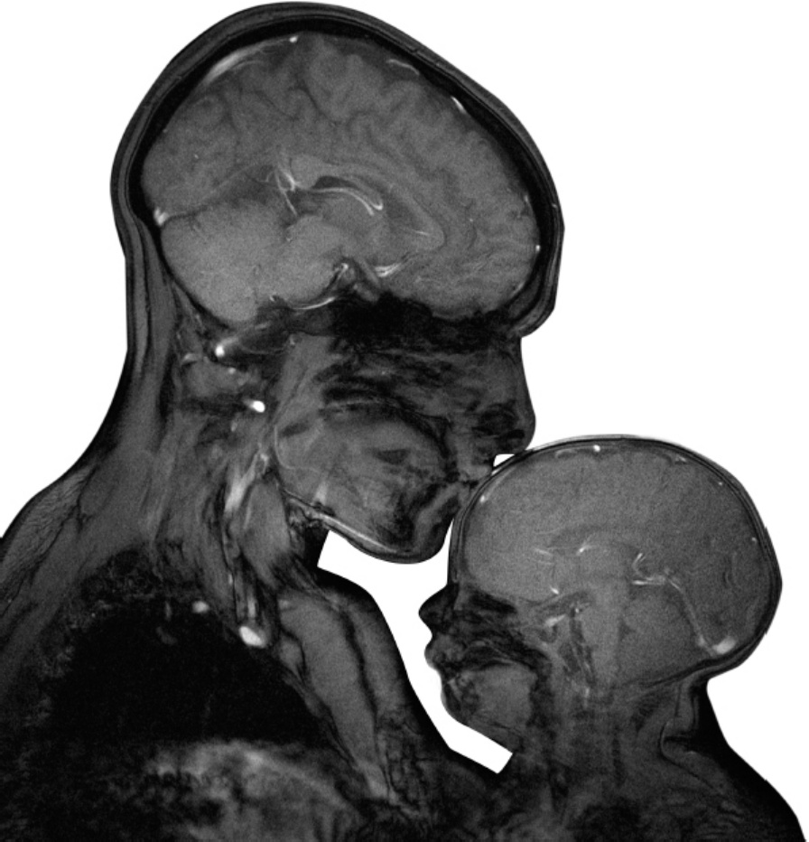
Hình 1.1: Ảnh chụp MRI của một người mẹ đang hôn con. Được sao chép với sự cho phép, bản quyền thuộc về Rebecca Saxe.
Trong lúc họ nằm đó, máy quét dựng nên một bức tranh về những gì bên trong hộp sọ của họ. Thường thì ảnh MRI được chụp cho các bác sĩ, để tìm khối u hay mạch máu bị tắc. Các nhà khoa học cũng chụp ảnh, để nghiên cứu chức năng và sự phát triển của não. Trong phòng thí nghiệm của tôi tại MIT, chúng tôi dùng MRI để theo dõi dòng máu chảy qua não của trẻ em; chúng tôi kể cho các em nghe chuyện và quan sát hoạt động não của các em thay đổi như thế nào để đáp ứng với cốt truyện. Bằng
cách đó, chúng tôi đang nghiên cứu cách trẻ em suy nghĩ về suy nghĩ của người khác.
Đối với một số người, hình ảnh này là một lời nhắc nhở xáo trộn về sự mong manh của con người. Những người khác lại bị hút bởi cách hai hình người ấy, với quần áo, tóc, và khuôn mặt không nhìn thấy được, trở nên phổ quát, và có thể là bất kỳ người mẹ và đứa con nào, ở bất kỳ thời điểm hay nơi nào trong lịch sử. Lại có những người đơn giản là bị cuốn hút bởi cách não của em bé khác với não của mẹ em; nó nhỏ hơn, mượt hơn và tối hơn—đúng nghĩa đen, vì có ít chất trắng hơn. Đây là một minh họa cho một trong những vấn đề khó nhất của thần kinh học: Làm thế nào mà những thay đổi ở cơ quan nhỏ bé cụ thể đó lại có thể hoàn tất việc triển khai toàn bộ một tâm trí con người?
Còn bản thân tôi, tôi thấy một hình ảnh rất cũ được làm mới. Mẹ và Con là một biểu tượng mạnh mẽ của tình yêu và sự ngây thơ, vẻ đẹp và sự sinh sôi. Dù những giá trị làm mẹ đó, và những người phụ nữ thể hiện chúng, có thể được tôn vinh, chúng thường được nhìn theo sự đối lập với những giá trị khác: truy vấn và trí tuệ, tiến bộ và quyền lực. Nhưng tôi là một nhà thần kinh học, và tôi đã làm việc để tạo ra hình ảnh này; và tôi cũng chính là người mẹ trong đó, cuộn tròn trong ống cùng với con trai tôi.
(Nguồn: http://www.smithsonianmag.com/science-nature/why—captured-MRI-mother-child-180957207/)
Khi bạn đọc đoạn trích trên, có lẽ bạn đã cảm thấy một sự căng thẳng giữa cái nhìn lạnh lẽo, bên trong về hai cơ thể vật lý thể hiện trong ảnh MRI và nhận thức của bạn rằng đây là hai người thật đang thực hiện một hành vi cảm xúc đầy âu yếm. Ảnh MRI chỉ cho thấy độ tương phản của mô, phơi bày xương, dịch, cơ, và não. Đồng thời, chúng ta biết rằng đây là một người mẹ và đứa con—họ là những con người, với suy nghĩ và cảm xúc. Cả cách nhìn hằng ngày của chúng ta về con người lẫn cách nhìn mà MRI làm được đều là về cùng một sự vật.
Đây có lẽ là nhận thức then chốt nhất cho một khoa học về cảm xúc (thực ra, cho cả một khoa học về tâm trí nói chung). Bạn có thể cảm nhận các cảm xúc. Bạn có thể suy ra rằng người khác đang có cảm xúc từ hành vi của họ. Và bạn có thể chụp ảnh và ghi lại dấu vết của cảm xúc trong não. Đây là những loại dữ liệu rất khác nhau, những nguồn bằng chứng rất khác nhau về một cảm xúc. Và thực sự, chúng cần được giữ riêng nếu người ta nghiên cứu chúng như vậy—như chúng ta sẽ thấy, cảm nhận một cảm xúc, có một trạng thái cảm xúc,
và gán cảm xúc cho một người khác gọi ra những quá trình khác nhau trong não của bạn. Dù vậy, trải nghiệm của bạn về cảm xúc của chính mình, sự gán một cảm xúc cho một người khác mà bạn thấy đang cười hay khóc, và cuộc điều tra của nhà thần kinh học về một cảm xúc từ dữ liệu sinh học thần kinh không phải là về ba sự vật khác nhau. Sau cùng, tất cả đều là về một và cùng một sự vật, một trạng thái cảm xúc. Bạn có thể suy ra trạng thái cảm xúc ở người khác từ việc quan sát hành vi của họ, bạn có thể điều tra các cơ chế thần kinh của trạng thái cảm xúc qua các thí nghiệm thần kinh học, và trạng thái cảm xúc có thể khiến chính bạn có một trải nghiệm có ý thức về cảm xúc. Quan sát hành vi, đo lường sinh học thần kinh, và trải nghiệm cá nhân mỗi thứ đều có thể cung cấp bằng chứng cho một và cùng một sự vật: một trạng thái cảm xúc.
Để làm rõ thêm một chút, hãy nhìn cảm xúc từ bốn góc độ: góc độ của nhà sinh học hành vi, người có thể đang quan sát cẩn thận hành vi của một con vật trong tự nhiên hay trong phòng thí nghiệm (hoặc, nói cho cùng, quan sát hành vi của một con người); nhà tâm lý học quan tâm đến việc cho người nói về và đánh giá các trải nghiệm cảm xúc có ý thức của họ; nhà tâm lý học đo các phản ứng cảm xúc trong cơ thể, chẳng hạn như những thay đổi về nhịp tim hay biểu hiện trên khuôn mặt (cách tiếp cận phổ biến trong tâm lý học cảm xúc); và nhà sinh học thần kinh đang nghiên cứu (hay thậm chí thao tác) chức năng của các nơ-ron trong não (hình 1.2). Cả bốn góc độ đều có thể hoàn toàn khách quan và có một phương pháp luận đã được thiết lập và thừa nhận—nhưng chúng là những dữ liệu khá khác nhau và thường không dùng cùng một ngôn ngữ để mô tả các khái niệm và phương pháp liên kết dữ liệu của họ với cảm xúc. Thế nhưng cả bốn đều nghiên cứu cảm xúc.
Trong bốn góc độ đó, đặc biệt là thần kinh học có thể cho bạn thấy những điều mà bạn không bao giờ có được từ hiểu biết hằng ngày về cảm xúc. Loại thuốc nào sẽ hoạt động tốt nhất để chữa trầm cảm? Tại sao một số người lại sợ chó trong khi số khác lại yêu chúng? Và, quan trọng nhất, những cơ chế nền tảng nào tạo ra cảm xúc—các sự kiện sinh học thần kinh trong não khiến nước mắt chảy xuống mặt chúng ta khi ở trong trạng thái buồn bã như thế nào, và trạng thái cảm xúc đó thay đổi phần lớn phần còn lại của hành vi, sự chú ý, trí nhớ, và việc ra quyết định của chúng ta ra sao? Những câu hỏi này và nhiều câu hỏi tương tự quan trọng cho việc điều trị các bệnh tâm thần, cho việc hiểu nhận thức và hành vi con người hằng ngày, và cho việc hiểu nhận thức và hành vi của các
loài động vật khác. Bạn không thể tiếp cận chúng chỉ bằng cách suy nghĩ về cảm giác của mình. Mục tiêu của một thần kinh học cảm xúc nên là làm rõ cách thức và lý do vì sao các cảm xúc cụ thể lại có những đặc điểm mà chúng có: giải thích chúng thông qua các cơ chế nền tảng của chúng (đây là một chủ đề chúng tôi thảo luận chi tiết ở chương 4).

Hình 1.2: Có thể suy ra các cảm xúc từ nhiều loại dữ liệu. Chúng ta thường gán chúng cho chính mình dựa trên trải nghiệm chủ quan; các nhà tâm lý học có thể gán chúng cho chúng ta dựa trên lời kể của chúng ta về trải nghiệm đó. Chúng ta cũng gán chúng cho người khác dựa trên hành vi lộ ra của họ; các nhà tập tính học có thể làm điều tương tự khi quan sát hành vi động vật. Chúng ta cũng có thể dùng các công cụ bổ sung, chẳng hạn như đo nhịp tim hay huyết áp trong phòng thí nghiệm, để suy ra rằng một người đang ở trạng thái cảm xúc, ngay cả khi họ không biểu lộ điều đó qua hành vi lộ ra. Cuối cùng, với tư cách là nhà sinh học thần kinh, chúng ta có thể nhìn trực tiếp vào não để rút ra kết luận về cảm xúc. Tất cả những thước đo này đều là một phần của một khoa học về cảm xúc.
Nhưng dù cuốn sách này sẽ tập trung vào thần kinh học, chúng tôi hy vọng rằng cách tiếp cận rộng rãi và dựa trên chức năng của mình sẽ góp phần vào một khoa học cảm xúc tích hợp, một khoa học điều tra cảm xúc qua hành vi, tâm lý học, và sinh học thần kinh. Một khoa học cảm xúc như vậy cũng nên nhằm điều tra cảm xúc xuyên suốt các loài, từ giun và côn trùng, đến động vật thân mềm và cá, đến chim và bò sát, đến chuột và chó, đến khỉ và con người. Nó sẽ xác định các trường hợp cụ thể của cảm xúc với những trạng thái cụ thể của não; nghĩa là, chúng thực sự được hiện thực hóa ở người và động vật như thế nào. Nhưng nó cũng sẽ giải thích tại sao hoạt động não đó lại hiện thực hóa một loại cảm xúc cụ thể ở người và động vật, và người ta có thể hình dung một cảm xúc như vậy được hiện thực hóa theo cách khác thế nào. Một con robot phi sinh học (thuộc loại phù hợp) có thể về nguyên tắc có cảm xúc không? Trả lời những câu hỏi này đòi hỏi một khung cho phép chúng ta định nghĩa vận hành cảm xúc trong tất cả những trường hợp khác nhau này. Chúng tôi mô tả một khung như vậy ở chương 2.
Chúng ta sẽ thường nói đến "các trạng thái cảm xúc," hoặc, để cho gọn, chỉ là "cảm xúc." Nhưng dĩ nhiên, cảm xúc không hề là những trạng thái tĩnh. Chúng ta gọi chúng là "trạng thái" để cho đơn giản, nhưng với nhận thức rằng chúng là những quá trình phức tạp thay đổi theo thời gian. Chúng ta sẽ mổ xẻ các trạng thái cảm xúc và nói về các quá trình ở những chương sau. Nhưng thực tế là chúng ta vẫn biết rất ít về cấp độ mô tả này—vì thế chúng ta sẽ tiếp tục nói đến "các trạng thái cảm xúc," một lần nữa, với sự thừa nhận đầy đủ rằng cảm xúc thực chất là những quá trình kéo dài theo thời gian.
Các Cảm Xúc Là Những Phản Xạ Tách Rời
Để xem cảm xúc nằm ở đâu trong bức tranh về hành vi phức tạp, hãy bắt đầu bằng cách xem xét một hành vi đơn giản hơn. Chẳng hạn phản xạ gối, là hành vi được tạo ra khi bác sĩ gõ nhẹ gân gối đang thả lỏng của bạn để làm chân bạn cử động. Chúng ta gọi hành vi đó là đơn giản vì hai lý do. Thứ nhất, nó đơn giản vì gối của bạn không giật với gần như bất cứ thứ gì ngoài kích thích cụ thể đó. Nó không cử động nếu bác sĩ thần kinh cho bạn xem hình một cái búa nhỏ. Nó không cử động nếu bạn chỉ nghĩ về cái búa. Nó cũng không cử động nếu bạn gõ vào vai. Thứ hai, chiều ngược lại cũng đúng—việc gõ vào gối không làm được nhiều điều khác ngoài việc làm gối cử động. Tay bạn không cử động, cũng như các bộ phận khác của cơ thể. Vì thế, liên kết từ
kích thích sang hành vi rất hẹp, được bao bọc, và mang tính mô-đun. Thực ra, hiện chúng ta biết rằng bạn có thể bỏ đi toàn bộ não, nhưng miễn là tủy sống còn nguyên vẹn, bạn vẫn sẽ có phản xạ gối.
Giống như các phản xạ khác, phản xạ gối là một ánh xạ kích thích–phản ứng cứng nhắc, hẹp, và tự động. Bạn không cảm thấy mình đã quyết định cử động gối, bạn không có sự thôi thúc cử động nó, bạn không đang nghĩ hay lên kế hoạch cử động gối, và thực ra thì rất khó để không cử động gối. Những phản ứng như vậy có một mục đích, nhưng chúng đối mặt với một vấn đề lớn: thế giới quá phức tạp và hay thay đổi đến mức cần phải liên tục bổ sung ngày càng nhiều phản xạ để xử lý mọi loại kích thích và hành vi thích nghi có thể có. Bạn sẽ cần một phản xạ khác để đáp ứng với mặt đất dưới chân, một chiếc cốc trong tay, thức ăn trên môi, v.v. Bạn cũng sẽ cần một cơ chế nào đó để các phản xạ này có thể trao đổi với nhau, nhờ đó hành vi tổng thể của bạn trở nên phối hợp. Cần có một thứ linh hoạt hơn để một con vật tồn tại trên thế giới. Hãy đón chào cảm xúc.
Như chúng tôi sẽ mô tả ở chương 3, cảm xúc có thể đã tiến hóa từ các phản xạ, nhưng chúng thể hiện những thuộc tính vượt xa những gì phản xạ có thể làm được. Chúng ta có thể xem tập thuộc tính cơ bản nhất này như "các khối xây dựng cảm xúc," chia sẻ một số đặc điểm tối thiểu giúp phân biệt cảm xúc với phản xạ (chúng tôi đưa ra danh sách ở chương 3). Những đặc điểm này của cảm xúc có thể dùng để suy ra cảm xúc ở nhiều loài động vật. Chẳng hạn, ruồi giấm đã có những hành vi đáp ứng một số tiêu chí của các khối xây dựng cảm xúc, chẳng hạn như sự bền bỉ theo thời gian (Gibson et al. 2015). Có một câu chuyện tiến hóa để kể về cách cảm xúc trở nên tinh vi hơn và cuối cùng mang tập thuộc tính đặc trưng cho cảm xúc như chúng ta thấy ở con người. Câu chuyện đó cần là một giải thích chức năng về việc cảm xúc làm gì, chức năng chúng hoàn thành trong đời sống của một con vật.
Một ví dụ cho câu chuyện như vậy là cảm xúc ghê tởm. Sự ghê tởm đã tiến hóa để động vật có thể tránh các thức ăn độc hại hoặc bị nhiễm bẩn. Điều này có vẻ là một vấn đề mà phản xạ có thể giải quyết: chỉ cần liên kết vị của chất độc với hành vi nhổ thức ăn ra là xong. À, nhưng nó phức tạp hơn những gì phản xạ có thể giải quyết. Có nhiều chất độc và chất nhiễm bẩn rất khác nhau. Một số có vị dở, một số thì không. Số khác có thể trông, cảm, hoặc ngửi thấy bị nhiễm bẩn. Cũng có những chất độc và chất
nhiễm bẩn mà động vật học được bằng cách xem điều gì xảy ra với các cá thể khác (hay, ở con người, bằng việc người khác bảo bạn điều gì có thể xảy ra nếu bạn ăn chúng). Kiểu học tập này có thể thấy ở trẻ nhỏ—sở thích ăn uống của chúng thay đổi đáng kể khi lớn lên. Trẻ nhỏ thường cho vào miệng những thứ mà chúng ta người lớn thấy ghê tởm, nhưng sau đó học cách tránh những thức ăn đó.
Tương tự, ngay cả ở người lớn cũng có thể có sự học tập sâu sắc về sự ghê tởm. Chẳng hạn, chúng ta có thể bị ốm nặng vì ngộ độc thực phẩm và từ đó không còn thích món đó nữa. Cuối cùng, trong một số tình huống, chúng ta có thể phải vượt qua cảm giác ghê tởm và ăn vào thứ mà lẽ ra chúng ta tránh để sinh tồn: hãy nghĩ đến một nhà thám hiểm lạc đường phải uống nước tiểu của chính mình để tránh chết vì mất nước (một chiến lược chỉ có tác dụng trong thời gian ngắn, nếu bạn tò mò). Vì thế rõ ràng là có cả khía cạnh bẩm sinh lẫn học được trong sự ghê tởm, và trạng thái ghê tởm có tác động mạnh đến hành vi của chúng ta nhưng ở một mức độ nhất định cũng có thể bị vượt qua. Phản xạ thì đơn giản là không có sự linh hoạt để hoạt động qua những trường hợp đa dạng như vậy; chúng được chỉnh quá hẹp cho kích thích cụ thể, và quá cứng nhắc, không thể kiểm soát trong cách chúng gây ra hành vi.
Một lựa chọn thay thế là tiến hóa thêm một tầng kiểm soát bên trên các phản xạ: tách chúng ra khỏi các cung kích thích–phản ứng cứng nhắc của mình, và thay vào đó đưa các đặc điểm của chúng vào một kiến trúc khác, một trạng thái cảm xúc trung ương. Chúng tôi tin rằng những cảm xúc như ghê tởm đã tiến hóa thành các trạng thái trung ương mà chức năng chính của chúng là điều phối và điều hòa linh hoạt những ánh xạ kích thích–phản ứng phức tạp như vậy. Trạng thái cảm xúc vẫn có thể được xem như một mô-đun chức năng tương tự như phản xạ, nhưng, không giống phản xạ, mô-đun đó có thể mang theo qua vô số tình huống rất khác nhau, nhiều trong số đó là những điều chúng ta học được. Nghiên cứu khoa học về sự ghê tởm hiện nay xem cảm xúc này đã tiến hóa từ nhu cầu tránh nhiễm mầm bệnh hoặc độc tố, rồi phát triển thành những hình thức ghê tởm phức tạp và mang tính xã hội hơn (Rozin 1996) (hình 1.3). Nhưng dù có thể mang theo qua những lĩnh vực rất khác nhau, trạng thái cảm xúc ghê tởm vẫn liên quan đến một chức năng cụ thể: tránh các kích thích thụ động có khả năng gây hại (việc tránh các kích thích gây hại chủ động có thể ứng với một cảm xúc khác, gần với "sợ hãi" hơn).
Sự sáng tạo tiến hóa của cảm xúc như những trạng thái trung ương linh hoạt đã mang lại những lợi ích bổ sung. Bởi vì cảm xúc cần phải giao tiếp với rất nhiều
loại kích thích, và phương thức kích thích, khác nhau, và vì chúng phải giao tiếp với nhiều khía cạnh của kiểm soát vận động, chúng cũng sẵn sàng tương tác với nhiều quá trình trung ương khác. Vì thế, cảm xúc ảnh hưởng đến sự chú ý, trí nhớ, và các quá trình nhận thức khác—một lĩnh vực đang phát triển nhanh trong thần kinh học nhận thức con người hiện nay (Pessoa 2013). Thực vậy, điều thiết yếu là cảm xúc phải tương tác với tất cả những quá trình khác này để thực hiện vai trò chức năng của chúng. Chẳng hạn, sự ghê tởm của bạn đối với một món ăn cụ thể cần được mã hóa trong trí nhớ và cần chuyển hướng sự chú ý của bạn. Nếu thứ duy nhất bạn có là trạng thái cảm xúc, không có kết nối nào với các quá trình nhận thức khác, điều đó sẽ đưa chúng ta trở lại với sự bao bọc của phản xạ, và những cạm bẫy của chúng.
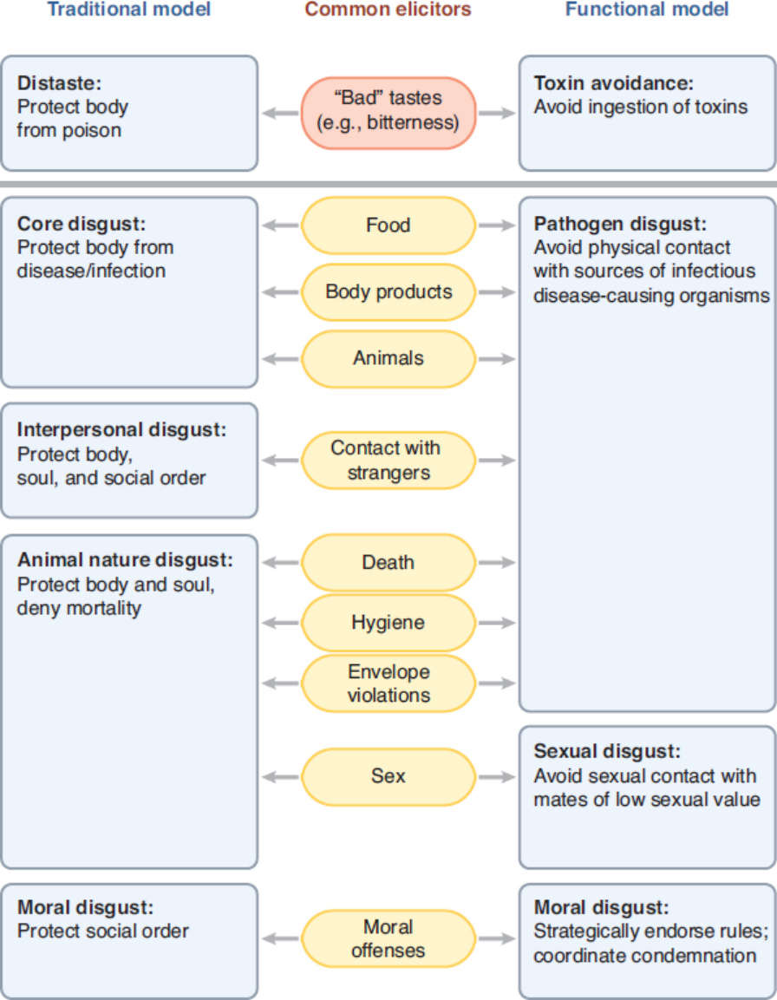
Hình 1.3: Các biến thể chức năng của sự ghê tởm. Sơ đồ bên phải xem ghê tởm như một trạng thái tiến hóa cho các chức năng cụ thể liên quan đến việc tránh các chất độc hay chất nhiễm bẩn tiềm tàng. Các ô khác nhau khi chúng ta đi từ trên xuống dưới của hình minh họa cho thấy ghê tởm đã được tinh chế từ các chức năng tổ tiên là tránh chất độc, sang những chức năng mang tính xã hội hơn. Vẫn còn tranh luận tiếp diễn về cách những chức năng này tiến hóa; sơ đồ này giả định một sự tiến hóa sinh học, nhưng Paul Rozin và Jonathan Haidt đã lập luận rằng sự tiến hóa văn hóa có thể giải thích một số chức năng của sự ghê tởm. Được sao chép với sự cho phép từ Tybur et al. 2013.
Còn nhiều thuộc tính khác của cảm xúc giúp phân biệt chúng với phản xạ, một chủ đề chúng tôi xem xét kỹ hơn ở chương 3. Dĩ nhiên, phản xạ và cảm xúc không bao hàm tất cả các cơ chế giải thích hành vi phức tạp. Bạn cũng cân nhắc và lên kế hoạch cho những hành vi có ý chí, chẳng hạn. Hầu hết thời gian, hành vi của bạn được tạo ra từ một sự pha trộn phong phú và phối hợp của nhiều phản xạ, cảm xúc, và hành động có kế hoạch. Dù không có ranh giới phân định dứt khoát, chúng ta nên đặt cảm xúc ở một cấp độ trung gian về độ phức tạp trong kiểm soát hành vi, giữa phản xạ và hành vi có suy xét.
Cảm xúc "tách rời" các kích thích khỏi phản ứng, so với phản xạ (Scherer 1994), nhưng chúng vẫn khá tự động so với những hành động có suy xét, có kế hoạch. Chúng chiếm một cấp độ kiểm soát đặc biệt trong hành vi của các loài động vật bậc cao: trên phản xạ, nhưng dưới hành động có kế hoạch. Dù điều này giúp định vị cảm xúc nằm thế nào trong kiến trúc của các trạng thái trung ương điều hòa hành vi, nó vẫn chưa phân biệt được cảm xúc với nhiều trạng thái trung ương khác. Chẳng hạn, các trạng thái như động lực, thúc đẩy, và sự hưng phấn cũng phù hợp với nhiều điều chúng ta đã nói về cảm xúc. Những loại trạng thái khác này được xem xét thêm ở chương 5. Việc phân định cảm xúc rõ hơn đòi hỏi nhìn kỹ hơn vào các thuộc tính của chúng: chúng ta tìm thấy những đặc điểm vận hành nào ở các trạng thái cảm xúc điển hình, và điều đó có thể giúp chúng ta hiểu các cơ chế nền tảng và các chức năng mà chúng thực hiện như thế nào? Đây là những chủ đề chúng ta sẽ giải quyết trong hai chương tới.
Cho đến nay chúng ta mới chỉ phác thảo sơ lược nhất về một khoa học cảm xúc và những gì nó mang lại, bằng cách đưa ra ba điểm quan trọng. Thứ nhất, cảm xúc cần được nghiên cứu ở cấp độ hành vi, tâm lý, và sinh học thần kinh. Một khoa học về cảm xúc cần mang tính liên ngành trong các loại phương pháp và dữ liệu mà nó xem xét. Thứ hai, cảm xúc có chức năng trong việc kiểm soát linh hoạt hành vi và được tạo ra bởi các cơ chế trong não. Điều này đưa ra một danh sách các đặc điểm của cảm xúc giúp phân biệt chúng với phản xạ và với một vài loại trạng thái bên trong khác, và chúng ta có thể kiểm tra bằng thực nghiệm (chủ đề của chương 3). Và thứ ba, cảm xúc không
chỉ ảnh hưởng đến hành vi, chúng còn ảnh hưởng đến nhiều quá trình nhận thức khác như sự chú ý và trí nhớ (và các cảm xúc khác). Ẩn trong ba điểm này là việc nhiều loài động vật có cảm xúc, không chỉ con người, và, theo quan điểm của chúng tôi, không chỉ các loài có vú. Mọi điều chúng ta viết cho đến nay về cảm xúc đều áp dụng được cho động vật và có thể được nghiên cứu ở chúng cũng như ở con người. Vì thế, một khoa học về cảm xúc nên mang tính liên ngành không chỉ về phương pháp mà còn về các loài mà nó nghiên cứu.
Những Câu Hỏi Chúng Ta Sẽ Không Trả Lời Trong Cuốn Sách Này
Bên cạnh việc hiểu các nguyên lý nền tảng chung cho mọi trạng thái cảm xúc, còn có những câu hỏi chi tiết hơn mà một khoa học về cảm xúc cuối cùng sẽ muốn giải quyết. Chúng tôi sẽ không đưa ra câu trả lời cho những câu hỏi này trong cuốn sách này, nhưng chúng tôi sẽ thảo luận xem câu nào trong số đó có thể được trả lời bằng điều tra thực nghiệm, và câu nào có thể chỉ là những vấn đề ngữ nghĩa thực ra không cần trả lời. Một số trong những câu hỏi này quay lại với những câu được gợi ra từ danh sách các giả định đáng ngờ của chúng tôi ở đầu chương này.
- Có bao nhiêu cảm xúc? Biểu diễn thần kinh của một cảm xúc nhất định có rời rạc và tách biệt với biểu diễn của các cảm xúc khác không, hay nó chia sẻ đặc điểm hay thành phần với các cảm xúc khác? Nếu là trường hợp sau, đặc điểm nào của biểu diễn thần kinh là đặc riêng cho một cảm xúc cụ thể, và đặc điểm nào được chia sẻ? Có cảm xúc nào căn bản ("chính") hơn cảm xúc khác không? Chúng tôi sẽ gợi ý rằng câu hỏi này có thể được trả lời bằng cách đặt cảm xúc vào một không gian chiều và liệt kê các thuộc tính chức năng của chúng. Chúng tôi cũng tin rằng nhiều từ hiện tại của chúng ta cho các cảm xúc khác nhau sẽ không tìm được chỗ đứng trong một khoa học trưởng thành về cảm xúc, khoa học này sẽ cần xem xét lại các hạng mục cảm xúc mà chúng ta nói đến trong đời sống hằng ngày.
- Mối quan hệ giữa biểu diễn não của một trạng thái cảm xúc và biểu diễn của các trạng thái liên quan khác như sự hưng phấn, động lực, thúc đẩy, tâm trạng, hay ảnh hưởng là gì? Chúng có liên quan (lồng ghép hay chồng chéo), hay chúng khác biệt? Chúng tôi sẽ gợi ý rằng dữ liệu thực nghiệm thực sự cho thấy sự khác biệt giữa các trạng thái này, dù câu hỏi này cũng một phần mang tính ngữ nghĩa.
- Cái gì quyết định loại cảm xúc sẽ được gợi ra bởi một kích thích nhất định, hoặc liệu kích thích đó có gợi ra cảm xúc nào không? Các phản ứng cảm xúc của chúng ta có được "cắm dây cứng" bởi di truyền hay chủ yếu được xác định bởi kinh nghiệm? Chúng tôi sẽ gợi ý rằng câu hỏi này sẽ đòi hỏi thêm các thí nghiệm so sánh cảm xúc giữa người và động vật, để chúng ta hiểu rõ hơn toàn bộ phạm vi các trạng thái cảm xúc và cách chúng xuất hiện trong tiến hóa.
- Các trạng thái cảm xúc có gây ra hành vi, hay (như William James từng tin) chúng là hệ quả của (phản ứng trước) hành vi? Hay chỉ trải nghiệm chủ quan của chúng ta về các trạng thái cảm xúc mới có hậu quả đối với hành vi? Chúng tôi sẽ ủng hộ quan điểm rằng cảm xúc gây ra hành vi, chứ không phải ngược lại—nhưng chúng tôi cũng thừa nhận rằng một khi cảm xúc đã gây ra một hành vi, chính hành vi đó lại có thể khơi gợi thêm các trạng thái cảm xúc. Vì thế, câu trả lời cho câu hỏi ban đầu là: cả hai.
- Khía cạnh "cảm giác" của một trạng thái cảm xúc được não mã hóa như thế nào, và điều đó khác với khía cạnh "động cơ" của trạng thái (phần kiểm soát hành vi của chúng ta) ra sao? Chúng tôi sẽ lập luận rằng cảm giác khác hẳn với cảm xúc và cần được giữ riêng để một khoa học về cảm xúc tiến triển. Đây là một quan điểm mạnh mẽ mà chúng tôi sẽ trở lại ở các chương sau với sự chi tiết nhất định để đưa ra lập luận của mình. Tuy nhiên, về cơ bản đây là một tiền đề cho phần còn lại của cuốn sách chứ không phải câu trả lời cho một câu hỏi. Chúng tôi tin rằng nếu bạn chấp nhận tiền đề này, sẽ có lợi cho một khoa học về cảm xúc vì nó trở nên dễ xử lý hơn.
- Làm thế nào chúng ta biết khi nào mình đã hiểu đầy đủ các cơ chế não của cảm xúc? Một phép thử là có khả năng dự đoán, với mức độ chính xác cao, rằng việc can thiệp thực nghiệm vào chức năng của bất kỳ vùng não hay nhóm nơ-ron nào được chọn tùy ý sẽ ảnh hưởng như thế nào đến bất kỳ khía cạnh nào của một trạng thái cảm xúc nhất định. Chúng tôi đưa ra ví dụ về việc điều này đã có thể thực hiện (ở động vật) ở các chương 5–7. Một phép thử khác là khả năng thiết kế một cỗ máy có thể biểu hiện một trạng thái cảm xúc theo cách không phân biệt được (qua hơn là những tiêu chí thị giác bề mặt) với trạng thái ở con người—nghĩa là, chế tạo một con robot có cảm xúc. Chúng tôi nghĩ điều này về nguyên tắc là có thể, dù hiện tại nó vẫn là khoa học viễn tưởng.
Chúng Ta Muốn Biết Gì Về Cảm Xúc?
Chương này đưa ra nhiều câu hỏi hơn là câu trả lời, và thảo luận những ví dụ về điều chúng ta chưa biết. Vậy thì điều chúng ta thực sự muốn biết là gì? Chúng tôi kết thúc bằng một bản tóm tắt về những gì người ta lý tưởng mong muốn ở một khoa học cảm xúc, và về nơi chúng tôi tập trung trong cuốn sách này. Hình 1.4 đưa ra danh sách các điều mong muốn—những thứ mà cuối cùng người ta muốn có câu trả lời, dù câu trả lời có thể là câu hỏi ban đầu được đặt ra không đúng. Chúng tôi không giải quyết sâu tất cả những điều mong muốn này, dù chúng tôi có bình luận về tất cả chúng ở một điểm nào đó xuyên suốt cuốn sách.
Điều mong muốn rộng đầu tiên liệt kê một số hiện tượng cơ bản nhất mà một khoa học về cảm xúc nên giải thích cho người ngoài chuyên ngành. Như bạn có thể thấy từ các mục trong hình, điều này đưa ra một điểm cực kỳ quan trọng về phạm vi của cuốn sách này. Chúng tôi nhằm cung cấp một khung để điều tra và giải thích các hành vi cảm xúc, ở cả con người lẫn động vật. Nhưng chúng tôi tạm gác chủ đề trải nghiệm có ý thức, thường gọi là cảm giác. Lý do của việc tạm gác này hoàn toàn là thực tiễn. Chúng tôi chắc chắn nghĩ cảm giác quan trọng, và chúng tôi tin rằng cả con người lẫn động vật đều có chúng. Chúng tôi bỏ chúng ra khỏi cuốn sách này vì chúng đưa ra những khó khăn—không có sự đồng thuận về cách đo lường cảm giác, nhất là ở động vật, và còn ít đồng thuận hơn về cách điều tra chúng bằng thần kinh học. Việc tạm gác tương tự trải nghiệm có ý thức đã được áp dụng cho nhiều chủ đề khác trong thần kinh học (chẳng hạn, thị giác hay trí nhớ), và thế nhưng những ngành khoa học đó đã rất thành công. Chúng tôi đặt cược rằng một khoa học về cảm xúc cũng có thể khởi đầu tốt mà không cần giải quyết trải nghiệm có ý thức về cảm xúc ngay từ đầu.
Điều mong muốn rộng thứ hai liệt kê một số thuộc tính của mọi khoa học tốt. Bất kỳ khung nào cho một khoa học về cảm xúc cũng nên cung cấp các tiêu chí nhất quán và khách quan, tạo ra những kết quả có ý nghĩa. Hãy mổ xẻ tuyên bố quan trọng này. Cung cấp các tiêu chí nhất quán và khách quan có nghĩa là chúng ta đồng ý về cách xác định có cảm xúc hay không, và chúng ta làm điều đó nhất quán qua các trường hợp. Vì thế, chúng ta nên có một sự đồng thuận nhất định về loại thước đo hay kết quả nào sẽ ủng hộ việc một con vật cụ thể đang ở trạng thái cảm xúc hay không. Hơn nữa, chúng ta nên áp dụng những tiêu chí tương tự qua cả động vật lẫn con người.

Hình 1.4: Những điều mong muốn cho một khoa học về cảm xúc. Hình này tóm tắt những khía cạnh của cảm xúc là tiêu điểm của cuốn sách này.
Chúng ta cũng cần những tiêu chí này tạo ra kết quả có ý nghĩa. Có ý nghĩa nghĩa là cung cấp một sự tương ứng nhất định với trực giác tiền khoa học của chúng ta. Dĩ nhiên, có thể có bất đồng, và dĩ nhiên có những trường hợp có vấn đề. Nhưng điều đó không làm giảm đi thực tế là có những trường hợp rõ ràng mà hầu hết mọi người đều đồng ý—nếu không phải vậy, chúng ta đã không thể nói về cảm xúc. Hầu hết mọi người đồng ý rằng con người, khỉ, chó, và mèo có cảm xúc. Hầu hết mọi người đồng ý rằng ô tô, đám mây, và máy tính xách tay không có cảm xúc. Vì thế, dù một khoa học về cảm xúc cuối cùng đi đến quan niệm nào, nó cũng nên tôn trọng những điểm khởi đầu này—nếu không, có lẽ đã có cái gì đó sai với khoa học đó. Vì vậy, điều mong muốn rộng thứ hai này đòi hỏi ở một khoa học cảm xúc rằng nó cho chúng ta một cách khách quan nào đó để diễn giải dữ liệu, sao cho chúng ta có thể quyết định một sinh vật có đang ở trạng thái cảm xúc hay không.
Các mục khác dưới "đặc điểm khoa học" cung cấp những thuộc tính liên quan giúp chuyển cách tiếp cận khách quan thành một khoa học hữu ích trong thực tế. Nếu một khoa học về cảm xúc khép kín đến mức chỉ nằm trong tâm lý học, hay thậm chí trong triết học, thì thật đáng tiếc. Nếu tâm lý học và sinh học thần kinh dùng những thuật ngữ khác nhau, hay những thuật ngữ với ý nghĩa khác nhau, đó sẽ là một dấu hiệu xấu. Vì thế chúng ta muốn hướng tới một khoa học về cảm xúc mang tính tích hợp theo nghĩa kết nối liên các ngành. Nó nên cung cấp điều gì đó có ý nghĩa và hữu ích cho cả nhà triết học, nhà tâm lý học, lẫn nhà sinh học thần kinh.
Hai mục rộng thứ ba và thứ tư, cách tiếp cận thực nghiệm và khả năng khái quát hóa, phác thảo thêm những đặc điểm mang tính riêng biệt hơn cho khung của chúng ta. Người ta chắc chắn có thể hình dung một khoa học về cảm xúc không có tất cả, hay thậm chí không có bất kỳ, đặc điểm nào trong số này—nhưng một khoa học như vậy sẽ không trông hiện đại, sẽ có phạm vi áp dụng hẹp, và sẽ không tận dụng được những cơ hội thú vị nhất hiện nay về kỹ thuật, phân tích, và đối tượng nghiên cứu. Điều đó cũng đáng tiếc. Chúng tôi muốn một khoa học về cảm xúc dùng những phương pháp tiên phong (chẳng hạn, quang di truyền học, khả năng gây ra cảm xúc ở một con vật bằng thực nghiệm thông qua việc dùng ánh sáng để thao tác các nơ-ron trong não nó; xem chương 5). Chúng tôi muốn có các mô hình tính toán và phương trình toán học cho phép chúng ta giải thích và dự đoán cảm xúc tốt hơn. Và chúng tôi muốn có thể nghiên cứu cảm xúc không chỉ ở các đối tượng con người mà còn ở vượn và khỉ, chó và mèo, chuột, thậm chí ruồi và bạch tuộc. Tóm lại,
những mục dưới điều mong muốn rộng thứ ba và thứ tư nhằm làm cho một khoa học về cảm xúc trở thành một khoa học hiện đại, sôi động, và thật lòng thú vị, vui vẻ.
Cuối cùng, mục cuối cùng trong danh sách các điều mong muốn của chúng tôi nói về các ứng dụng. Đó là những phần mở rộng: điều bạn cuối cùng có thể làm với một khoa học về cảm xúc, một khi bạn đã tìm ra nó. Cuốn sách này chỉ chạm đến mục con đầu tiên: chúng ta có thể bắt đầu dùng một khoa học về cảm xúc để khám phá các sự thật về cảm xúc. Loài động vật nào có cảm xúc? Cơ chế não nào tạo ra cảm xúc? Chúng ta có thể đo lường cảm xúc như thế nào? Một khi đã tích lũy thêm dữ liệu từ một khoa học cảm xúc như vậy, chúng ta sẽ có thể áp dụng nó vào đánh giá (chẳng hạn, chẩn đoán xem một bệnh nhân có trầm cảm hay không), can thiệp (điều trị trầm cảm), và thậm chí kiến tạo (chế tạo robot có cảm xúc). Chúng tôi nghĩ cả ba đều có thể làm được, nhưng hiện chưa cái nào dễ làm, và vì thế chúng tôi không đề cập đến chúng trong phạm vi của cuốn sách này.
Chương 2 — Một Khung Nghiên Cứu Cảm Xúc
Trước khi thảo luận về sinh học thần kinh của cảm xúc, điều quan trọng là phải đặt nền tảng cho ý chúng ta muốn nói khi dùng từ "cảm xúc." Chương này sẽ trình bày một quan điểm mang tính triết học rộng rãi, theo đó các cảm xúc là các trạng thái chức năng. Giải thích chính xác điều đó có nghĩa là gì sẽ đòi hỏi một chút kiên nhẫn, nhưng rất quan trọng để tránh những nhầm lẫn về sau. Điều này đặc biệt then chốt, bởi thường thì ít có sự đồng thuận giữa các nhà khoa học khác nhau trong cách họ dùng từ cảm xúc. Thậm chí một số nhà sinh học thần kinh, chẳng hạn như Joseph LeDoux tại Đại học New York, phòng thí nghiệm của ông đã tiến hành một số nghiên cứu có ảnh hưởng nhất về điều kiện hóa sợ hãi ở chuột, chủ trương rằng chúng ta không nên dùng các từ chỉ cảm xúc (như sợ hãi), hay thậm chí cả từ chung "cảm xúc," cho một số lĩnh vực điều tra khoa học nhất định (LeDoux 2012). LeDoux đưa ra một số lý do chính đáng cho đề xuất của ông: thực tế là các nhà khoa học rất lộn xộn trong cách họ dùng từ "cảm xúc" (LeDoux 2017). Đặc biệt, đôi khi họ muốn nó chỉ đến các cảm giác, và đôi khi lại muốn nó chỉ đến các hành vi hay trạng thái bên trong. Vấn đề phát sinh khi những ý nghĩa khác nhau này bị lẫn lộn.
Chúng tôi đồng tình với những lo ngại của LeDoux nhưng rút ra một kết luận khác. Chúng tôi tin chắc rằng từ cảm xúc nên được dùng trong mọi cuộc điều tra khoa học về cảm xúc—dù cần có sự làm rõ ở những chỗ cần thiết. Thêm vào đó, chúng tôi nghĩ rằng một số từ chỉ các cảm xúc cụ thể nên được dùng trong diễn ngôn khoa học—nhưng cần nhiều sự làm rõ hơn nữa. Những ví dụ có thể có về các từ mà nhà khoa học cảm xúc trong tương lai sẽ dùng là sợ hãi, giận dữ, và ghê tởm. Tuy nhiên, như chúng tôi đã lưu ý ở chương 1, chúng tôi cũng tin rằng những thuật ngữ này sẽ cần được xem xét lại khi khoa học cảm xúc tiến triển. Hơn nữa, có nhiều từ trong ngôn ngữ của chúng ta (và còn nhiều hơn trong các ngôn ngữ khác, như chúng tôi đã lưu ý ở chương trước) mà một số người sẽ mô tả là liên quan đến cảm xúc, nhưng chúng tôi cho rằng còn quá sớm để dùng chúng một cách khoa học, vì chúng ta chưa biết liệu chúng có thực sự chỉ đến
các loại trạng thái cảm xúc riêng biệt (hoặc thậm chí có phải là cảm xúc hay không). Điều đó không có nghĩa là chúng ta không thể có một khoa học về cảm xúc; nó chỉ có nghĩa là hiện tại chúng ta nên tập trung vào một tập hạn chế các từ và khái niệm. Đây cũng là một lý do khiến cuốn sách của chúng ta không tập trung vào các cảm xúc cụ thể (dù chúng tôi có dùng chúng làm ví dụ), mà thay vào đó tập trung vào cảm xúc nói chung.
Hiện nay, có nhiều cuộc tranh luận trong triết học và tâm lý học về cảm xúc không thể giải quyết được, vì chúng xoay quanh những câu hỏi mang tính ngữ nghĩa hơn là những câu hỏi có thể kiểm chứng bằng thực nghiệm. Sẽ dễ dàng hơn để đưa ra một khung rõ ràng cho việc điều tra cảm xúc nếu chúng ta tập trung vào cảm xúc nói chung, thay vì lún sâu vào những câu hỏi về có những cảm xúc cụ thể nào, hay chúng ta muốn phân loại cảm xúc của mình chi tiết đến mức nào. Chúng ta cần kiên nhẫn xây dựng một khoa học về cảm xúc, bắt đầu từ những khía cạnh của cảm xúc dễ được điều tra khoa học nhất, rồi dần dần mở rộng phạm vi khi chúng ta nắm bắt chủ đề này ngày càng tốt hơn. Việc tình yêu, sự hoài nghi, hay kinh ngạc có phải là những cảm xúc cụ thể cần điều tra khoa học hay không không phải là những câu hỏi chúng ta cần trả lời ở giai đoạn này.
Khởi động: Những Câu Hỏi Thần Kinh Học Về Cảm Xúc
Chúng ta sẽ khởi động cho các vấn đề khái niệm của chương này bằng một bài tập ngắn, tương tự như điều chúng ta đã làm ở chương 1 khi liệt kê một số giả định và câu hỏi, nhưng được triển khai đầy đủ hơn về phương pháp luận. Hãy chọn một câu hỏi mà các nhà khoa học muốn hiểu cảm xúc nên quan tâm, và cố gắng tiếp cận câu hỏi đó từ nhiều góc độ: điều gì đã biết, điều gì chưa biết, và chúng ta có thể tìm ra như thế nào?
Câu hỏi rộng: Não tạo ra trạng thái tương ứng với một cảm xúc như thế nào? Điều gì đang xảy ra bên trong não tôi khi tôi ở trong trạng thái giận dữ, sợ hãi, hay buồn bã?
Giả thuyết làm việc: Các cảm xúc là những trạng thái bên trong của não gây ra những thay đổi bên ngoài có thể quan sát được trong hành vi; những thay đổi sinh lý bên trong có thể quan sát được trong trạng thái của cơ thể; những thay đổi ở các trạng thái tinh thần khác; và, trong một số điều kiện và ở một số loài, những thay đổi trong những gì chúng ta nhận biết có ý thức ("cảm giác," mà ở con người thường có thể mô tả bằng lời nói). Các trạng thái cảm xúc được tạo ra bởi những khuôn mẫu đặc trưng về không gian và thời gian
của hoạt động thần kinh (điện) trong não, cùng với những thay đổi tương ứng trong hóa học của não (hormone, chất điều hòa thần kinh, v.v.). Chúng điều phối một loạt các phản ứng. Nếu chúng ta hiểu các trạng thái cảm xúc được tạo ra như thế nào, thì về nguyên tắc chúng ta có thể (a) dự đoán trạng thái cảm xúc bên trong của một người bằng cách "đọc ra" (đo lường) hoạt động não của họ; (b) tạo ra một trạng thái cảm xúc cụ thể bằng cách thao tác các mạch thần kinh hay hóa học cụ thể của não; và (c) khôi phục chức năng bình thường cho một trạng thái cảm xúc không thích nghi (chẳng hạn như trầm cảm) bằng cách điều chỉnh lại các mạch thần kinh hay hóa học cụ thể của não.
Chẳng phải chúng ta đã có thể làm tất cả những điều đó rồi sao? Nhiều nhà thần kinh học sẽ lập luận, chẳng hạn, rằng chúng ta đã có thể:
- Dự đoán liệu một người có "đang cảm thấy sợ hãi" hay không bằng cách giải mã điều đó từ các khuôn mẫu kích hoạt của não;
- Gợi ra trải nghiệm hay biểu hiện (ở động vật) của các cảm xúc cụ thể (chẳng hạn như hoảng loạn) bằng cách kích thích điện các vùng cụ thể của não;
- Điều trị trầm cảm bằng cách dùng SSRI (chất ức chế tái hấp thu serotonin có chọn lọc, một loại thuốc chống trầm cảm như Prozac), hoặc trong một số trường hợp bằng kích thích não sâu (DBS), một phương pháp điều trị trầm cảm xâm lấn hơn dùng dòng điện kích thích não.
Vậy thì còn gì để hiểu? Ngay cả khi chúng ta có thể làm tất cả những điều đó (và khi xem xét kỹ thì có lý do để nghi ngờ chúng ta có thể), chúng vẫn chưa đủ để trả lời câu hỏi một cảm xúc "hoạt động" như thế nào trong não. Lý do có thể thấy qua một phép so sánh:
- Chúng ta có thể dự đoán liệu một chiếc xe có đang chuyển động hay không, và nó chuyển động nhanh như thế nào, bằng cách "chụp ảnh" đồng hồ tốc độ của nó. Điều đó không có nghĩa là chúng ta hiểu ô tô hoạt động ra sao. Nó chỉ có nghĩa là chúng ta đã tìm thấy thứ gì đó có thể đo lường và có tương quan chặt chẽ với một khía cạnh chức năng của nó.
Cũng như với đồng hồ tốc độ, việc chụp ảnh hoạt động của hạch hạnh nhân (hay bất cứ nơi nào khác trong não), khi thiếu hiểu biết thêm, không cho chúng ta biết gì về cơ chế nhân quả và chỉ cung cấp một "dấu hiệu" có thể tương quan với một cảm xúc.
- Chúng ta có thể bước vào một căn hộ hiện đại, và bằng cách thử nhầm đủ kiểu, xác định nút nào trên bảng điều khiển bật đèn trong bếp. Điều đó không có nghĩa là chúng ta hiểu việc nhấn nút đó dẫn đến bật đèn trong bếp (chứ không phải, chẳng hạn, phòng khách) như thế nào—đặc biệt là nếu chúng ta chẳng biết gì về điện và điện tử.
Cũng như trường hợp bật đèn, công dụng của SSRI trong điều trị trầm cảm, như nhiều phương pháp điều trị y khoa khác, đã được phát hiện một cách tình cờ. Các bác sĩ thường xuyên dùng các liệu pháp mà cơ chế tác động của chúng chưa được hiểu rõ, nhưng thường (nhưng không phải lúc nào cũng) có hiệu quả dựa trên kinh nghiệm lâm sàng. Vấn đề phát sinh khi có những bệnh nhân trầm cảm không đáp ứng với điều trị—khi đó chúng ta bất lực. Cố chữa cho những bệnh nhân này mà không hiểu não tạo ra trạng thái cảm xúc như thế nào cũng giống như cố chữa bệnh dịch hạch ở thế kỷ mười lăm mà không biết rằng vi khuẩn và virus gây ra bệnh truyền nhiễm.
Những ví dụ trên và những khoảng trống đã bộc lộ trong hiểu biết hiện tại của chúng ta làm nổi bật cấu trúc chung về cách chúng ta muốn có thể hiểu các cảm xúc. Một nhà tâm lý học có thể tìm kiếm một dạng hiểu hơi khác, và hài lòng với một kiểu giải thích khác, so với một nhà sinh học thần kinh. Trong cuốn sách này, chúng tôi muốn đưa ra một điểm khởi đầu phù hợp cho cả nhà thần kinh học lẫn nhà tâm lý học. Chúng ta muốn có một bức tranh nào đó về hình dạng của một lời giải thích về cảm xúc, dù chỉ mới ở mức nguyên tắc, để chúng ta có một mục tiêu cụ thể, và một thước đo cho thấy chúng ta có đang tiến bộ hướng tới nó hay không. Chúng ta có thể áp dụng kiểu điều tra biện chứng đã dùng cho câu hỏi rộng ở trên vào một câu hỏi cụ thể hơn để xem nó triển khai như thế nào.
Câu hỏi cụ thể hơn: Chúng ta hiểu gì về sinh học thần kinh của "sợ hãi," và còn gì để hiểu? Có thể nói rằng sợ hãi là cảm xúc được hiểu rõ nhất, xét từ góc độ sinh học thần kinh. Để minh họa những khoảng trống trong tri thức/hiểu biết của chúng ta, dưới đây là một mô tả ngắn gọn và khá phác họa (tất yếu phải bỏ qua nhiều chi tiết) về một quan điểm chuẩn về những gì xảy ra khi chúng ta trở nên "sợ hãi," để đáp trả một mối đe dọa:
- Khi một kích thích đe dọa được phát hiện, hoạt động trong hạch hạnh nhân của chúng ta tăng lên.
- Hoạt động tăng lên của hạch hạnh nhân thúc đẩy hoạt động tăng lên ở các mục tiêu "hạ lưu" của các nơ-ron hạch hạnh nhân (những tế bào nhận đầu vào từ hạch hạnh nhân), lần lượt kiểm soát các khía cạnh khác nhau của phản ứng sợ hãi như tăng cường đông cứng (phản ứng hành vi), tăng nhịp tim (phản ứng tự chủ), và tăng giải phóng hormone căng thẳng (phản ứng nội tiết). Các cấu trúc thần kinh trung gian cho những hiệu ứng đa dạng này nằm ở các vùng như vùng dưới đồi và chất xám quanh ống dẫn nước ở não giữa (PAG), như được minh họa trong hình 2.1. Không được thể hiện trong hình, nhưng cũng quan trọng không kém, là các chiếu thiếu hiểu rõ từ hạch hạnh nhân đến nhiều vùng của vỏ não, có lẽ trung gian cho nhiều hiệu ứng mà một cảm xúc có đối với các quá trình nhận thức khác.
- Hệ quả là chúng ta trở nên hưng phấn hơn, mong đợi hơn, cảnh giác hơn, và nhạy bén hơn. Lòng bàn tay ra mồ hôi, miệng khô lại, và còn nhiều khuôn mẫu phản ứng tự chủ và cơ thể khác (hộp 2.1). Chúng ta có thể ngừng ăn hay uống (hoặc bất cứ việc gì khác đang làm) và nhìn quanh. Chúng ta có thể đại tiện hay tiểu tiện không kiểm soát được, tùy theo mức độ sợ hãi của mình. Chúng ta trải nghiệm một "cảm giác" chủ quan của sự sợ hãi. Nếu được hỏi, chúng ta sẽ trả lời rằng mình đang sợ hãi hay lo âu.
- Chúng ta có thể sợ hãi ở mức độ tương đối cao hơn hay thấp hơn, tùy thuộc vào cường độ hay độ gần của mối đe dọa, ngữ cảnh mà chúng ta trải nghiệm nó (một căn phòng tối so với ngoài trời dưới ánh sáng ban ngày), và kinh nghiệm trước đây của chúng ta với kích thích đó. Các phản ứng sinh lý và hành vi của chúng ta có thể khác nhau tùy theo mức độ sợ hãi, cũng như trải nghiệm có ý thức của chúng ta (chẳng hạn, tiểu tiện không kiểm soát có thể chỉ xảy ra khi mức độ sợ hãi rất cao).
- Khả năng ra quyết định của chúng ta, và chính các quyết định, có thể bị ảnh hưởng khi chúng ta ở trong trạng thái sợ hãi.
- Sau một lúc, nếu không có mối đe dọa nào thành hình hay chúng ta không bị tổn hại gì, sự sợ hãi dần lắng xuống và chúng ta trở lại với công việc của mình.
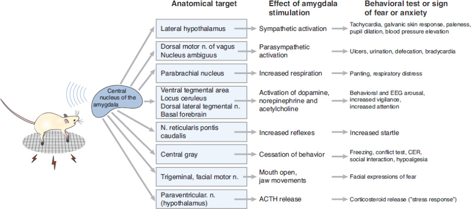
Hình 2.1: Sự điều phối nhiều thành phần của phản ứng sợ hãi bởi hạch hạnh nhân. Điều này liên quan đến các chiếu từ nhân trung tâm của hạch hạnh nhân đến các vùng ở thân não và vùng dưới đồi, dựa trên dữ liệu thu được chủ yếu từ các loài gặm nhấm. Tuy nhiên, còn nhiều chiếu hơn những chiếu được thể hiện ở đây, bao gồm cả các chiếu đến vỏ não, và cũng có các đầu vào đến hạch hạnh nhân từ hầu hết các mục tiêu mà nó chiếu tới, khiến việc tách bạch nhân và quả trong hệ thống trở nên phức tạp. Xem chương 6 để biết chi tiết. Được sửa đổi với sự cho phép từ Davis 1992.
Hộp 2.1. Có thể đọc các cảm xúc từ tâm sinh lý không?
Đã có một lịch sử lâu dài về sự tham gia của hệ thần kinh tự chủ vào các hiệu ứng phối hợp của một trạng thái cảm xúc. Nhà tâm lý học William James là người đầu tiên đề xuất một lý thuyết cụ thể, lập luận rằng các phản ứng tự chủ cũng như các phản ứng cơ thể khác có thể được sinh vật cảm nhận và lần lượt gây ra các trải nghiệm có ý thức về cảm xúc. Những quan điểm gần đây hơn, được thảo luận ở chương 9, đưa ra một phiên bản chi tiết hơn và mang tính sinh học thần kinh hơn của quan điểm này. Họ cho rằng cảm nhận nội tạng (nhận thức của chúng ta về trạng thái của cơ thể) là nền tảng cho trải nghiệm của chúng ta về các cảm giác cảm xúc. Những quan điểm này, cùng với sự dễ dàng trong việc đo một số biến số tự chủ, đã dẫn đến việc sử dụng rộng rãi tâm sinh lý trong nghiên cứu cảm xúc (Cacioppo, Tassinary, và Berntson 2007).
Các thước đo tâm sinh lý trong phòng thí nghiệm thường bao gồm đo phản ứng độ dẫn da (một thước đo sự hưng phấn tự chủ giao cảm), điện tâm đồ (đo nhịp tim của bạn,
từ đó có thể rút ra cả các thước đo giao cảm lẫn phó giao cảm), giãn đồng tử (dễ dàng thu được với các thiết bị theo dõi mắt hiện đại, và một phần là thước đo tự chủ), hô hấp, huyết áp, và điện cơ mặt (dán các điện cực nhỏ lên da mặt để đo những cử động rất nhỏ của cơ mặt và biểu hiện). Ngoài ra còn có nhiều thước đo khác về nguyên tắc, vì hệ thần kinh tự chủ thực sự chi phối tất cả các cơ quan trong cơ thể. Thêm vào đó, các thước đo hormone và chất chuyển hóa trong máu, nước tiểu, hay nước bọt có thể cung cấp các thước đo thô về những khía cạnh mang tính bền bỉ hơn của cảm xúc, chẳng hạn như sự hưng phấn do căng thẳng.
Gần như không còn nghi ngờ gì rằng các trạng thái cảm xúc gây ra những thay đổi trong hoạt động của hệ thần kinh tự chủ, và do đó gây ra những thay đổi ở cơ trơn, nội tạng, và các thước đo nội tiết được hệ thần kinh tự chủ kiểm soát. Tuy nhiên, cho đến nay vẫn chưa có bằng chứng tốt nào cho thấy các thước đo thường thu được trong phòng thí nghiệm, tự bản thân chúng, là đủ để phân biệt giữa các cảm xúc cụ thể (Siegel et al. sắp xuất bản).
Thế nhưng người bình thường lại tin rằng các cảm xúc cụ thể được cảm nhận ở những bộ phận cụ thể của cơ thể. Một nghiên cứu của nhà nghiên cứu người Phần Lan Lauri Nummenmaa và các cộng sự đã đưa ra một minh họa trực quan gọn gàng về điều này (Nummenmaa et al. 2014). Các nhà nghiên cứu thiết kế một công cụ trực tuyến qua đó người tham gia có thể dùng chuột tô vào những bộ phận cơ thể mà họ tin rằng mình cảm thấy các cảm xúc nhất định. Họ phát hiện một số khuôn mẫu rõ ràng (hình 2.2). Cũng nhóm này đã điều tra thêm cách những bản đồ cơ thể của cảm xúc như vậy thay đổi trong quá trình phát triển, và cách chúng có thể khác nhau giữa các nền văn hóa, và đã tìm thấy những khác biệt thú vị ở cả hai.

Hình 2.2: Bản đồ cơ thể về niềm tin của mọi người đối với các cảm giác cảm xúc. Khi được hỏi họ tin rằng cảm xúc nhất định được cảm nhận ở đâu, những người tham gia trưởng thành phương Tây có xu hướng chỉ vào các vùng nóng được thể hiện ở đây (đỏ cho thấy tăng, xanh cho thấy giảm, tất cả đều so với mức trung tính). Những phát hiện này cho thấy các khái niệm và từ ngữ của người ta về các cảm giác cảm xúc gắn chúng với cảm giác ở những vùng cơ thể cụ thể. Điều quan trọng là, những phát hiện này không cho thấy các trải nghiệm thực tế của cảm xúc có liên quan đến cảm giác ở những vùng cơ thể đó, cũng không cho thấy thực sự có những thay đổi cụ thể nào đó ở những vùng cơ thể đó trong các trạng thái cảm xúc cụ thể. Vì thế, nghiên cứu này hoàn toàn nói về điều người ta nghĩ hay tin về các cảm giác cảm xúc. Được sao chép với sự cho phép từ Nummenmaa et al. 2014.
Nghe thì có vẻ khá đầy đủ rồi. Còn gì để hiểu nữa?
- Chúng ta không hiểu cách các cấu trúc não riêng lẻ đóng góp vào các cảm xúc như thế nào. Cảm xúc sợ hãi không chỉ là hoạt động của hạch hạnh nhân, và hạch hạnh nhân cũng không chỉ là xử lý sự sợ hãi.
- Sự phá hủy hạch hạnh nhân ở động vật (và ở một số bệnh nhân người hiếm hoi; xem hộp 8.2) làm suy giảm một số dạng sợ hãi nhưng để các dạng khác không bị ảnh hưởng.
- Kích thích thực nghiệm một số phần của hạch hạnh nhân là đủ để gợi ra các phản ứng sợ hãi, nhưng kích thích các vùng não khác
không nối trực tiếp với hạch hạnh nhân cũng vậy.
- Hạch hạnh nhân cũng chứa các tế bào được kích hoạt để đáp trả các kích thích dễ chịu hoặc mang tính phần thưởng. Vì thế, chỉ vì hạch hạnh nhân được kích hoạt trong lúc sợ hãi không có nghĩa là mọi trường hợp kích hoạt hạch hạnh nhân đều biểu thị sự sợ hãi. Liệu chính các tế bào đó trong hạch hạnh nhân mã hóa cả sợ hãi lẫn phần thưởng, tùy theo hoàn cảnh, hay các loại nơ-ron hạch hạnh nhân khác nhau tham gia vào hai trạng thái này? Chúng ta sẽ thấy câu trả lời cho câu hỏi này ở phần sau của cuốn sách.
- Chúng ta không hiểu vai trò nhân quả mà các cấu trúc não đóng trong cảm xúc. Ngay cả khi sự kích hoạt hạch hạnh nhân là cần thiết và đủ để tạo ra sự sợ hãi, điều đó cũng không có nghĩa là trạng thái trung ương tương ứng của "sợ hãi" được tạo ra hoàn toàn bởi hạch hạnh nhân.
- Trạng thái sợ hãi có thể không được tạo ra bởi bất kỳ cấu trúc não đơn lẻ nào, mà có thể được tạo ra bởi một khuôn mẫu hoạt động phân tán liên quan đến nhiều vùng não khác nhau. Khuôn mẫu hoạt động đó có thể khó hình dung hay đo lường bằng các kỹ thuật hiện nay. Sau cùng, nếu bạn chỉ cắt riêng hạch hạnh nhân ra khỏi não và đặt vào một cái đĩa, bạn có thể kích thích nó tùy thích, và sẽ thật vô lý khi cho rằng bạn đang tạo ra trạng thái sợ hãi trong cái đĩa của mình. Chừng nào hạch hạnh nhân còn tạo ra sự sợ hãi, nó chỉ có thể làm vậy trong một mạng lưới cực kỳ phức tạp gồm các cấu trúc não khác mà nó kết nối tới.
- Dù vậy, vẫn có thể có các trung tâm hay vùng trong não điều phối các trạng thái sợ hãi, giống như hạch hạnh nhân dường như làm ở một bộ não khỏe mạnh, kết nối đầy đủ (xem hình 2.1). Tuy nhiên, người ta chưa biết liệu có nhiều trung tâm như vậy hoạt động độc lập, hay kiểm soát các loại hay mức độ sợ hãi khác nhau hay không. Trở lại với phép so sánh việc bật các công tắc trong nhà để bật tắt đèn: chúng ta đơn giản là chưa biết sơ đồ dây dẫn của sự sợ hãi trong não.
- Chúng ta không hiểu "mức độ" sợ hãi mà chúng ta trải nghiệm được mã hóa trong não như thế nào, hay các phản ứng khác nhau (đông cứng, bỏ chạy, tiểu tiện) được biểu hiện ra sao như một hàm của các mức độ sợ hãi khác nhau.
- Không có bằng chứng nào cho thấy mức hoạt động cao hơn trong hạch hạnh nhân đơn giản gây ra mức độ sợ hãi cao hơn. Cũng có thể
là các cấu trúc não bổ sung được huy động ở những mức độ sợ hãi cao hơn, hoặc các quần thể nơ-ron riêng biệt hay các khuôn mẫu kích hoạt khác nhau trong hạch hạnh nhân mã hóa các mức độ sợ hãi khác nhau.
- Các phản ứng "chiến đấu hay bỏ chạy" trước sự sợ hãi không phải là một gói đơn giản: các mạch thần kinh khác nhau kiểm soát việc bỏ chạy, đông cứng, và chiến đấu. Não phải quyết định sẽ thực hiện hành vi nào trong số đó vào bất kỳ thời điểm nhất định nào. Chúng ta không hiểu não thực hiện quá trình ra quyết định này như thế nào.
- Chúng ta không hiểu một trạng thái sợ hãi trung ương ảnh hưởng đến khả năng ra quyết định của chúng ta, hay các chức năng "nhận thức" khác như thế nào; ngược lại, chúng ta không hiểu các quá trình nhận thức của mình có thể kiểm soát các cảm xúc của chúng ta ra sao.
- Chẳng hạn, người lớn có thể, ở một mức độ nhất định, kiểm soát cảm xúc của mình (hộp 3.4). Điều này hoạt động như thế nào? Hiểu biết cơ chế về quá trình này từ các thí nghiệm có kiểm soát ở động vật là rất ít, dù đây là một chủ đề lớn trong tâm lý học con người.
- Nói rộng hơn, một trạng thái cảm xúc, như sợ hãi, không thể tự bản thân nó gây ra hành vi. Một ký ức cô lập, một trạng thái chú ý, hay một nhận thức cũng vậy. Trong nền kinh tế của các loại trạng thái khác nhau của tâm trí và não, nhiều loại trạng thái tinh thần khác nhau cần tương tác với nhau để tạo ra hành vi (hay trải nghiệm có ý thức). Chúng ta hoàn toàn không hiểu điều này hoạt động như thế nào. Một hiểu biết đầy đủ về cách các cảm xúc gây ra hành vi cuối cùng sẽ đòi hỏi một hiểu biết đầy đủ về cách tất cả các loại trạng thái tâm lý khác đóng góp.
Ví dụ "khởi động" ở trên có vẻ như ngụ ý rằng chúng ta hầu như không biết gì về cách não tạo ra các cảm xúc. Làm sao chúng ta có thể tiến bộ, khi có quá nhiều điều chúng ta chưa biết? Một trong những điểm then chốt quan trọng nhất của cuốn sách này là khoa học cảm xúc sẽ cần giải quyết thách thức này theo hai cách.
Thứ nhất, phóng to. Hãy tìm một câu hỏi cụ thể, tập trung, thiết kế một thí nghiệm rõ ràng với các phương pháp tốt nhất, và tìm ra câu trả lời. Câu trả lời của bạn sẽ là một câu trả lời nhỏ; bạn sẽ không đột nhiên hiểu hết về cảm xúc. Thay vào đó,
câu trả lời của bạn sẽ tương ứng với một trong nhiều câu hỏi phụ mà chúng ta đã liệt kê ở trên, và là một mảnh ghép trong công việc cực kỳ lớn là hiểu cách các cảm xúc tương tác với nhiều trạng thái khác để tạo ra hành vi. Để điều này hiệu quả, thí nghiệm của bạn cần là một phần của một dự án khoa học lớn hơn. Một khoa học về cảm xúc phải mang tính tích lũy, trong đó có thể so sánh các kết quả thu được bằng những phương pháp khác nhau và từ những loài khác nhau.
Thứ hai, thu nhỏ. Bạn sẽ cần đi từ sự hiện thực hóa của một cảm xúc trong não đến một mô tả ở mức trừu tượng hơn. Nghĩa là, bạn cần cố hiểu cảm xúc như một quá trình chức năng, hay tính toán. Bạn sẽ cần có khả năng diễn giải và định vị các kết quả từ thí nghiệm của mình theo một cách nào đó. Để trả lời câu hỏi "cảm xúc là gì," bạn sẽ cần trả lời xem cảm xúc làm gì: cái gì gây ra cảm xúc và lần lượt cái gì được gây ra bởi một trạng thái cảm xúc? Phần còn lại của chương này dành để mổ xẻ điều đó có nghĩa là gì.
Hướng Tới Một Định Nghĩa Chức Năng Về Cảm Xúc
Dù chúng ta đã nhấn mạnh não bộ trong những gì viết ra cho đến nay, về cơ bản các cảm xúc không nên được định nghĩa theo thuật ngữ sinh học thần kinh. Phát biểu này có thể gây bất ngờ, nhưng thực ra chúng tôi tin rằng nó áp dụng không chỉ cho cảm xúc mà cho mọi trạng thái tâm lý; chúng là các trạng thái của não, nhưng cần được định nghĩa ở một mức trừu tượng hơn, mang tính chức năng. Bởi nếu các cảm xúc được định nghĩa theo nghĩa đen là các trạng thái não, chúng ta sẽ phải đưa ra một định nghĩa khác cho con người, cho ruồi, cho bạch tuộc—vì các loài này có hệ thần kinh hoàn toàn khác nhau. Vì thế, chúng ta bắt đầu bằng cách nói rằng các cảm xúc tình cờ là các trạng thái của não—chúng có thể được hiện thực hóa trong não—nhưng cần một kiểu mô tả trừu tượng hơn để đưa ra một định nghĩa hữu ích và rộng rãi. Chúng ta cũng cần thông tin về các kích thích và hành vi mà, cùng với thông tin về trạng thái não, kể một câu chuyện nhân quả, chức năng—một câu chuyện về cách các kích thích gây ra các trạng thái não lần lượt gây ra hành vi (hình 2.3).
Để hiểu một cảm xúc là gì, chúng ta phải bắt đầu với một định nghĩa chức năng về cảm xúc. Chúng ta có thể chưa có các định nghĩa chức năng đầy đủ cho các cảm xúc cụ thể, nhưng các mô tả chức năng là loại mô tả mà chúng ta
cần để phán đoán liệu một trạng thái có phải là cảm xúc hay không, và nếu có, để phán đoán cảm xúc cụ thể nào đang hiện diện.
Một mô tả chức năng nhận diện trạng thái qua các quan hệ nhân quả của nó (nó làm gì?). Nó không nhận diện trạng thái qua cách nó được cấu thành (nó được làm bằng gì?). Một cách để nghĩ về điều này là tham chiếu đến các ô trong hình 2.2. Nếu bạn có những đầu vào rất khác nhau đi vào trạng thái cảm xúc, và nối nó với những đầu ra rất khác nhau, nó sẽ không còn là một trạng thái cảm xúc nữa. Hoặc nhớ lại cái đĩa đựng hạch hạnh nhân mà chúng ta đã nhắc đến ở ví dụ "khởi động" trước đó: đúng là sự kích hoạt hạch hạnh nhân có thể tạo ra một số loại sợ hãi ở một bộ não khỏe mạnh được nối với hạch hạnh nhân. Nhưng kích thích một hạch hạnh nhân cô lập trong đĩa thì không tạo ra sự sợ hãi, vì chúng ta đã loại bỏ vai trò chức năng (nhân quả) mà hạch hạnh nhân thường đảm nhiệm. Các định nghĩa chức năng mô tả các hiệu ứng nhân quả theo cách trừu tượng không phụ thuộc vào chất vật lý đang hiện thực hóa một trạng thái.
Thực ra chúng ta có rất nhiều định nghĩa chức năng mà ta bắt gặp trong đời sống hằng ngày. Hãy xét một cái đồng hồ. Nếu tôi hỏi bạn hãy cho tôi biết đồng hồ là gì, mong là bạn sẽ không bắt đầu bằng việc nói, "ừ thì, nó phải có một quả lắc và các bánh răng bên trong," hay, trừ khi đó là một câu đùa, "đồng hồ là thứ nặng 1,2 pound." Những định nghĩa như vậy sẽ ngay lập tức loại trừ hầu hết các loại đồng hồ, kể cả đồng hồ trên máy tính của tôi và đồng hồ nguyên tử. Vậy đồng hồ là gì? Nó là một thiết bị đo thời gian. Đó là một định nghĩa chức năng.
Các định nghĩa chức năng rất phổ biến trong khoa học nhận thức và triết học về tâm trí. Có một lập trường nổi tiếng, chủ nghĩa chức năng tâm lý, đề xuất rằng mọi trạng thái tinh thần, dù là cảm xúc hay bất kỳ trạng thái tinh thần nào khác, đều là các trạng thái chức năng theo nghĩa này. Chúng được định nghĩa bằng các quan hệ nhân quả của chúng với các đầu vào giác quan, các đầu ra hành vi, và cả các quan hệ nhân quả giữa chúng với nhau. Trong trường hợp của một cảm xúc, quan điểm này sẽ nói rằng các cảm xúc là các trạng thái chức năng thường được gây ra bởi các đầu vào giác quan, thường gây ra các đầu ra hành vi, và cũng gây ra những thay đổi, và có thể được gây ra bởi, các trạng thái tinh thần khác như nhận thức, ký ức, sự chú ý, v.v. (để biết thêm chi tiết, xem Adolphs và Andler 2018).
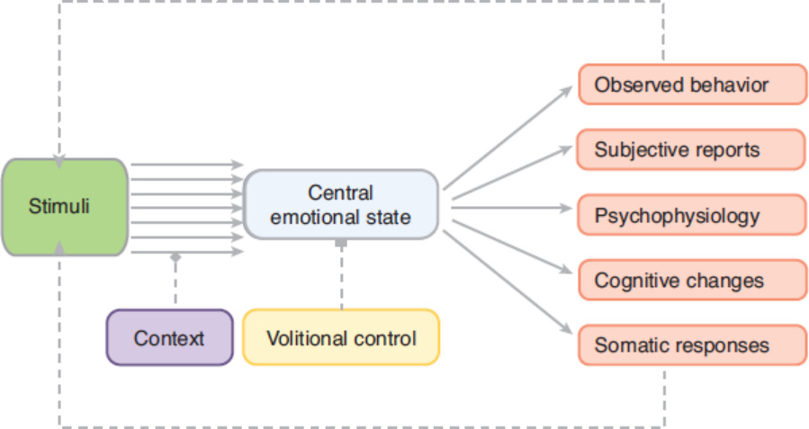
Hình 2.3: Các cảm xúc là các trạng thái chức năng. Một kiến trúc tối thiểu cho các trạng thái cảm xúc được thể hiện trong hình này để giúp định hướng cho cuộc thảo luận trong văn bản. Các cảm xúc thường được gây ra bởi những sự kiện nhất định (kích thích), và lần lượt gây ra những sự kiện khác (như hành vi). Vì thế, hoặc kích thích hoặc hành vi đều có thể cung cấp một phần bằng chứng cho một trạng thái cảm xúc trung ương. Điều tương tự cũng áp dụng cho các báo cáo bằng lời về trải nghiệm chủ quan—đó là một trong nhiều nguồn bằng chứng có thể có cho một trạng thái cảm xúc trung ương. Đáng chú ý là, nhiều kích thích rất khác nhau có thể gây ra cùng một loại trạng thái cảm xúc, và trạng thái cảm xúc đó điều phối nhiều hành vi khác nhau, thể hiện kiến trúc "quạt vào," "quạt ra" (các mũi tên nhiều chiều đi vào và đi ra từ ô cảm xúc trong hình). Thuộc tính này của cảm xúc được gọi là "tổng quát hóa" trong hình 3.2.
Bạn sẽ nhận ra rằng ở đây có một cái ghi nợ lớn: cụm từ "v.v." Thực tế là chúng ta chưa có một danh mục khoa học đầy đủ về mọi trạng thái tinh thần, và vì thế chúng ta chưa thể đưa ra một định nghĩa chức năng đầy đủ về một trạng thái cảm xúc (hay bất kỳ trạng thái tinh thần nào khác). Dù vậy, chúng ta có thể đưa ra một mô tả một phần mà, theo chúng tôi, là đủ để chỉ cho chúng ta đúng hướng (và sẽ giúp, từng chút một, cuối cùng xây dựng được một khoa học đầy đủ về tâm trí).
Chúng tôi cho rằng các cảm xúc nên được xác định theo nghĩa chức năng như trên nếu chúng ta muốn điều tra chúng bằng thần kinh học. Chúng ta cố làm điều này bằng cách kiểm soát thực nghiệm các kích thích và đo lường hành vi, và bằng cách cố giữ không đổi (hoặc đo như các biến đồng biến) các trạng thái nhận thức khác. Vì thế, tôi có thể cho bạn xem một kẻ săn mồi đáng sợ và đo các hiệu ứng dạng như được phác họa trong hình 2.4 để bắt đầu một nghiên cứu về sự sợ hãi. Nhưng điều này sẽ không hiệu quả nếu bạn đột nhiên thay đổi ký ức, sự chú ý, hay niềm tin của mình; nếu bạn không thể
nhận ra kích thích, không chú ý đến nó, hay tin rằng nó không còn gây hại nữa, thì các quan hệ chức năng giữa kích thích, trạng thái cảm xúc, và hành vi cũng thay đổi.
Sự nhấn mạnh mang tính vận hành này vào kích thích và hành vi đòi hỏi chúng ta cũng phải có một mô tả chức năng ở quy mô rộng hơn, một mô tả chức năng giải thích tại sao một cảm xúc lại thích nghi, và nó đã tiến hóa như thế nào, liên quan đến môi trường mà một sinh vật cụ thể sinh sống và những thách thức sinh thái mà nó phải giải quyết. Sau cùng, chỉ những hiệu ứng chức năng như vậy mà tiến hóa "nhìn thấy." Bất cứ thứ gì tiến hóa qua chọn lọc tự nhiên hẳn đã làm vậy nhờ vào những gì nó làm, vào hiệu ứng nhân quả cuối cùng của nó đối với mức độ một sinh vật có thể hoạt động tốt trong môi trường của nó. Khác với trường hợp cái đồng hồ, nơi chúng ta chế tạo nó và vì thế có thể khẳng định một cách uy quyền rằng chức năng của nó là giữ thời gian, các chức năng thích nghi của cảm xúc đòi hỏi công việc điều tra để tìm ra. Thực ra, phần lớn cuốn chuyên khảo được đánh giá cao của Charles Darwin, The Expression of the Emotions in Man and Animals (Sự biểu hiện của các cảm xúc ở người và động vật) (Darwin 1872/1965), tập trung vào việc suy ra chức năng thích nghi của các biểu hiện khác nhau của cảm xúc—chẳng hạn như đỏ mặt (việc ông có đúng về những điều này hay không là chuyện khác).
Lời giải thích tiến hóa rộng lớn, và lời giải thích chức năng theo các quan hệ với kích thích và hành vi, chỉ là hai trong số các quy mô mà tại đó người ta có thể tạo ra các mô tả chức năng về cảm xúc. Còn nhiều quy mô khác có thể có. Chúng ta có thể đưa ra một mô tả chức năng về vai trò của hạch hạnh nhân bằng cách giải thích nó đóng góp gì cho một mạng thần kinh phân tán—các phép tính nó thực hiện, cách nó biến đổi các đầu vào nhận được từ các vùng não khác nhau thành các đầu ra gửi đến các vùng não khác, và cách điều đó góp phần vào các trạng thái cảm xúc cụ thể. Chúng ta thậm chí có thể đưa ra các mô tả chức năng cho từng nơ-ron đơn lẻ, dù các chức năng mà các nơ-ron đơn lẻ hiện thực hóa đương nhiên là rất cơ bản; chúng không có gì rõ ràng liên quan đến một trạng thái cảm xúc, mà thay vào đó tương ứng với vô số khối xây dựng cấp thấp mà từ đó các chức năng phức tạp hơn có thể được xây dựng. Ở đầu kia của phổ là lời giải thích chức năng về cảm xúc ở cấp độ của toàn bộ sinh vật và cách nó tương tác với môi trường. Quan điểm tiến hóa đó là cấp độ cuối cùng neo giữ ý nghĩa thực sự của cảm xúc, cũng giống như việc nói rằng đồng hồ giữ thời gian cuối cùng giải thích được toàn bộ cái đồng hồ làm gì (dù, tương tự, chúng ta có thể đưa ra
các giải thích chức năng về hoạt động bên trong của bất kỳ loại đồng hồ cụ thể nào).
Mọi người thường nói như thể họ có một khái niệm phi chức năng về cảm xúc—nói rằng "sợ hãi nằm ở hạch hạnh nhân," hay có những nơ-ron cụ thể "dành cho sự sợ hãi" sẽ là những ví dụ như vậy (những ví dụ mà, như chúng tôi đã lưu ý trước đó, là hoàn toàn sai). Có lẽ khái niệm thông thường (phi khoa học) của chúng ta về cảm xúc là một khái niệm không dựa trên chức năng, hoặc có lẽ nó lại dựa trên chức năng. Ở đây, chúng ta muốn biết nhà khoa học nên hướng tới kiểu mô tả nào về cảm xúc để neo giữ một cuộc điều tra về cảm xúc. Một khoa học về cảm xúc nên chọn nền tảng khái niệm nào để có một đề tài nghiên cứu khách quan? Nó nên chọn nền tảng nào để tạo ra một khoa học tích hợp, tích lũy có thể hoạt động xuyên suốt tập tính học, sinh học, tâm lý học, và thần kinh học? Những nền tảng như vậy là thiết yếu để cuối cùng cho chúng ta một lời giải thích cơ chế về các cảm xúc, và để cho chúng ta biết các cảm xúc phù hợp như thế nào vào bức tranh của chúng ta về phần còn lại của não và tâm trí.
Chức Năng Đúng Đắn Và Rối Loạn Chức Năng
Bạn có thể nghĩ rằng điều chúng ta vừa nói về việc các cảm xúc được định nghĩa theo chức năng là không tương thích với việc chúng là các trạng thái não. Chúng ta vừa mới đưa ví dụ về đồng hồ mà nhầm à? Chúng ta đã thấy rằng chúng được định nghĩa là thiết bị giữ thời gian, không nhất thiết là bánh răng và ròng rọc, hay bóng bán dẫn, hay cát rơi qua đồng hồ cát—tất cả là những hiện thực hóa vật lý rất khác nhau của đồng hồ. Tương tự, nếu các cảm xúc được định nghĩa theo chức năng, thì có sai không khi nghĩ về chúng như các trạng thái não?
Ở trên chúng ta đã lập luận cho một định nghĩa chức năng để khái niệm của chúng ta về các trạng thái cảm xúc có thể áp dụng cho nhiều loài động vật khác nhau (và cả robot, về nguyên tắc). Nhưng việc các chức năng của cảm xúc, một khi chúng ta đã tìm ra chúng một cách đủ chi tiết, có thể thực sự được hiện thực hóa trong mọi loại hệ thần kinh, hay trong các hệ thống khác não, là một câu hỏi thực nghiệm. Có lẽ được; có lẽ không. Không phải hệ thống nào cũng có thể là một cái đồng hồ hữu ích, và cũng vậy, không phải hệ thống nào cũng có thể hiện thực hóa một cảm xúc—có lẽ chỉ một số loại não nhất định mới có thể.
Khi bạn có một cảm xúc cụ thể trong một trường hợp cụ thể, điều đó tương ứng với một khuôn mẫu hoạt động trong não bạn (như chúng ta sẽ thấy ở
những chương sau, có lẽ là một khuôn mẫu rất phức tạp và phân tán). Khi tôi đang vui hiện tại vì việc viết cuốn sách này dường như đang tiến triển tốt, thì cảm xúc đó là một trạng thái não. Khi tôi thức dậy với sự lo âu vì nhớ ra mình còn phải viết nhiều đến thế nào, đó cũng là một trạng thái não, và là một trạng thái não khác.
Nhưng đây cũng là chỗ mọi thứ trở nên phức tạp. Tôi có thể sợ hãi vào nhiều dịp khác nhau, và bạn cũng vậy. Tất cả những đó là các trường hợp của sự sợ hãi. Chúng có phải đều là cùng một trạng thái não không? Có lẽ không hoàn toàn giống nhau, đặc biệt nếu chúng ta xét đến hai người khác nhau, nghĩa là những bộ não có cấu thành mạng thần kinh khác biệt. Vậy câu hỏi đặt ra là, các trường hợp sợ hãi giống nhau đến mức nào về mặt sinh học thần kinh, và bạn sẽ dùng gì để đo sự tương đồng đó?
Làm sao tôi biết trạng thái sợ hãi của mình không giống trạng thái giận dữ của bạn hơn trong não? Làm sao tôi so sánh trạng thái mà não tôi ở trong lúc sợ hãi với trạng thái não của một con vật lúc sợ hãi? Nghĩa là, dù bất kỳ trường hợp cụ thể nào của một cảm xúc cũng là một trạng thái não (điều mà các nhà triết học gọi là "đồng nhất thể hiện"), thì rõ ràng hơn nhiều là liệu một loại cảm xúc cụ thể (chẳng hạn, sợ hãi) có tương ứng với một loại trạng thái não hay không (Đo bằng cách nào? Kích hoạt hạch hạnh nhân? Mức chất dẫn truyền thần kinh nhất định?).
Vấn đề "đồng nhất loại" này đã nổi tiếng trong triết học về tâm trí nói chung, và chúng tôi cũng thừa nhận đầy đủ ở đây. Trở lại với ví dụ về những cái đồng hồ, chúng ta đều có thể đồng ý rằng đồng hồ thực chất là các thiết bị vật lý. Nhưng nếu bạn chỉ cho tôi xem một cái đồng hồ cát có cát, một con chip máy tính, một cái đồng hồ mặt trời ngoài sa mạc, và một cái đồng hồ cổ, thì chỉ bằng cách nhìn những thiết bị vật lý đó, có thể không tài nào đoán được chúng có điểm chung gì. Tôi có thể sẽ đem cái đồng hồ cát vào một cửa hàng bán đồ thủy tinh cổ, cái đồng hồ máy tính vào cửa hàng đồ điện tử, v.v. Trừ khi tôi biết chức năng của chúng như những cái đồng hồ, các đặc điểm vật lý của chúng dường như không cho tôi manh mối tốt để xếp chúng vào cùng một hạng mục. Chúng ta cần quan sát chúng hoạt động để có một số manh mối. Tương tự, chúng tôi tin rằng việc có hành vi của động vật (và con người), lý tưởng nhất là trong môi trường tự nhiên, làm một nguồn dữ liệu là điều hết sức cần thiết; nghĩa là, một khoa học về cảm xúc, cùng với những thứ khác, cần đến tập tính học. Không có hành vi, bạn không bao giờ có thể tìm ra cảm xúc thực sự làm gì, và vì thế không bao giờ có thể tìm ra một cơ chế não có thể đang hiện thực hóa loại cảm xúc nào.
Cách gán các trạng thái vật lý (như trạng thái não) vào các hạng mục chức năng (như các cảm xúc cụ thể) là một vấn đề thực nghiệm: nó đòi hỏi quan sát, thí nghiệm, và dữ liệu. Dù chúng ta vừa nhấn mạnh tính không thể thiếu của dữ liệu hành vi, dữ liệu sinh học thần kinh cũng có thể giúp giới hạn và hiểu các giải thích chức năng mà chúng ta tìm kiếm—một lý do chính khiến chúng ta muốn làm thần kinh học. Lý do là chúng ta không biết các tiêu chí chức năng chi tiết cho các loại cảm xúc khác nhau, ngoại trừ ở mức mơ hồ nhất, và vì thế thông tin về sinh học thần kinh chắc chắn sẽ giúp giới hạn sự mô tả chức năng của chúng ta.
Có thể sẽ hóa ra là các bộ não động vật khác nhau, hay thậm chí một bộ não người duy nhất, có thể hiện thực hóa các cảm xúc theo nhiều cách khác nhau—có thể có nhiều cơ chế đã tiến hóa để phục vụ một và cùng một chức năng (hoặc một tập chức năng liên quan rất giống nhau). Cũng có thể sẽ hóa ra là chỉ có một cách mà các bộ não hiện thực hóa cảm xúc, miễn là chúng ta có một mô tả về sinh học thần kinh ở đúng mức trừu tượng (chẳng hạn, có thể cần thực hiện một tập phép tính cụ thể, và điều đó chỉ có thể được thực hiện bởi một kiến trúc mạch thần kinh cụ thể).
Có lẽ sự thật nằm ở đâu đó giữa hai thái cực này. Chúng tôi cho rằng rất có thể tiến hóa đã sáng tạo ra một số cơ chế chi tiết khác nhau để hiện thực hóa một tập chức năng tính toán chung cùng phối hợp điều hòa một trạng thái cảm xúc. Sinh học thần kinh, kết hợp với các điều tra sinh thái về hành vi, sẽ cho chúng ta biết những cơ chế đó là gì, chúng chia sẻ những điểm tương đồng tính toán nào, và chúng có thể hiện thực hóa cảm xúc như thế nào ở một loài động vật cụ thể đang hoạt động trong một môi trường cụ thể.
Bằng phép so sánh, chúng ta có thể quay lại ví dụ về cái đồng hồ. Chiếc đồng hồ cổ ở nhà tôi là một cái đồng hồ vì nó giữ thời gian. Đó là chức năng của nó. Một thời điểm cụ thể, chẳng hạn ba giờ chiều đối với cái đồng hồ của tôi, đồng nhất với một trạng thái vật lý cụ thể của các cần gạt và ròng rọc trong cái đồng hồ. Hai điều đó không loại trừ nhau. Một thời điểm do đồng hồ chỉ ra chính là một trạng thái vật lý của cái đồng hồ, dù thời gian được định nghĩa theo chức năng.
Thế nhưng vẫn có một sự linh hoạt trong cách chức năng ánh xạ sang hiện thực hóa, ngay cả đối với một thiết bị cụ thể như chiếc đồng hồ cổ của tôi. Tôi cũng có thể dùng cái đồng hồ để biết giờ ở Nhật, nếu muốn; tôi chỉ cần luôn trừ đi tám giờ. Giờ tôi vẫn dùng cái đồng hồ để giữ thời gian, nhưng cho một mục đích hơi
khác: giờ ở Nhật, thay vì ở California. Trạng thái vật lý của cái đồng hồ không thay đổi, nhưng trạng thái chức năng của nó thì có (hơi khác).
Tôi cũng có thể lấy cái đồng hồ treo trong phòng nơi những con mèo của chúng tôi ngủ, để tiếng tích tắc đều đặn ru chúng ngủ. Hoặc tôi có thể đặt cái đồng hồ lên một chồng giấy để dùng trọng lượng của nó giữ chống lại. Chúng ta sẽ không kết luận từ đó rằng chức năng của đồng hồ bao gồm cả việc ru ngủ hay làm vật chắn giấy. Tôi có thể dùng cái đồng hồ cho vô số việc ngốc nghếch, nhưng chính việc những điều đó khiến bạn thấy ngốc nghếch cho thấy chúng lấy các thuộc tính vật lý của cái đồng hồ ra khỏi ngữ cảnh; theo một nghĩa nào đó, đó là những sai lầm chức năng.
Vì thế có những giới hạn; trạng thái vật lý của cái đồng hồ trong những điều kiện điển hình hiện thực hóa việc giữ thời gian, và có thể có một sự linh hoạt nhất định về bản chất chức năng của việc giữ thời gian đó (chẳng hạn, nó chỉ múi giờ nào, hay, trong trường hợp cái đồng hồ của tôi vốn không phân biệt được sáng và chiều, đó là buổi sáng hay buổi chiều). Nhưng có những giới hạn vượt quá đó thì bạn đã đơn giản là đổi đề tài. Cùng một trạng thái vật lý của cái đồng hồ có thể làm những con mèo ngủ gật, và cùng một trạng thái vật lý của một bộ não có thể tỏa ra một lượng nhiệt nhất định—nhưng việc ru ngủ và làm ấm căn phòng không phải là câu trả lời cho các câu hỏi về việc đồng hồ làm gì hay não làm gì.
Trong trường hợp của đồng hồ, con người cố ý thiết kế cái đồng hồ, còn trong trường hợp của cảm xúc, thiết kế đã phát sinh qua một lịch sử dài của chọn lọc tự nhiên, nhưng cả hai trường hợp đều có cái mà nhà triết học Ruth Millikan gọi là "chức năng đúng đắn" (proper function) (Millikan 1989). Vì thế có một câu trả lời cho câu hỏi "cảm xúc là gì," và để đưa ra câu trả lời đó chúng ta cần điều tra cách các bộ não thực hiện một số chức năng nhất định. Có thể không có một câu trả lời duy nhất cho câu hỏi này, nhưng câu trả lời không phải là tùy tiện. Một khi chúng ta đã xác định các ràng buộc đối với câu trả lời, ít nhất ở một mức độ nhất định, thì có thể xác định được liệu một câu trả lời có sai hay không.
Cũng như việc chiếc đồng hồ của tôi dùng làm vật chắn giấy đè lên một chồng giấy là một dạng rối loạn chức năng (cái đồng hồ đang "làm sai việc"—một việc nó không được thiết kế để làm), thì một cảm xúc sợ hãi ở một bệnh nhân bị rối loạn stress sau chấn thương cũng có thể là một rối loạn chức năng. Sự sợ hãi không tiến hóa để gây ra PTSD (hộp 2.2), nhưng các cơ chế mà qua đó PTSD xảy ra có thể cho chúng ta biết điều gì đó về chức năng đúng đắn của các trạng thái sợ hãi và lo âu.
Tiến hóa đã chọn lọc các trạng thái não là các cảm xúc, trực tiếp hay gián tiếp, để chúng có thể cung cấp các chức năng nhân quả thích nghi liên quan đến một sinh vật đang tương tác với môi trường của nó. Khác với đồng hồ, chúng ta không thể hỏi một Đấng Tạo Hóa về ý định của Ngài khi dựng nên những bộ não hiện thực hóa cảm xúc. Chúng ta, với tư cách là nhà khoa học, cần làm rất nhiều công việc điều tra khó khăn để tìm ra điều gì có thể đã xảy ra trong suốt quá trình tiến hóa. Như với các ví dụ đã nêu, có một sự linh hoạt nhất định về chi tiết, nhưng cũng có những ràng buộc.
Nhiệm vụ của nhà khoa học cảm xúc là tìm ra những chi tiết và ràng buộc này. Các mạng lưới não đã được định hình qua tiến hóa như thế nào để chúng có thể gây ra hành vi thích nghi? Những đặc điểm xử lý nào cần thiết để đáp ứng yêu cầu của cảm xúc? Chẳng hạn, bạn có cần tập trung vào các phương thức giác quan cụ thể, hay những loại kiểm soát hành vi cụ thể? Bạn có cần xử lý nó nhanh hay chậm? Chúng ta có thể đưa ra một danh sách các tiêu chí, như một tập giả thuyết, rồi điều tra não để tìm các cơ chế có những đặc điểm đó không? Chương 3 bắt đầu phác thảo một danh sách như vậy, và các chương tiếp theo mô tả cách người ta tiến hành tìm bằng chứng ủng hộ các mục trong danh sách (và thêm các mục mới) bằng cách nghiên cứu não.
Hộp 2.2. Sợ hãi thích nghi và không thích nghi.
Các đặc điểm giống như thuộc tính của cảm xúc, chẳng hạn như độ nhạy trong việc gợi ra chúng và khả năng điều hòa chúng, biểu hiện những khác biệt cá nhân lớn giữa người này với người khác, với một cơ sở di truyền vững chắc. Một số người dễ sợ hơn người khác; một số người cứ tiếp tục sợ hãi hay buồn bã lâu hơn người khác. Chính sự linh hoạt của các trạng thái cảm xúc, và đặc biệt là sự tách rời giữa một kích thích gây ra ngay lập tức và trạng thái cảm xúc, khiến cảm xúc dễ bị rối loạn điều hòa: chẳng hạn, các rối loạn lo âu là một trong những bệnh tâm thần phổ biến nhất (xét chung lại, gần 20 phần trăm dân số bị một dạng rối loạn lo âu nào đó trong bất kỳ năm nhất định nào (LeDoux 2015). Động vật cũng bị rối loạn lo âu, và nhiều loại thuốc dùng để điều trị các rối loạn này ở người cũng được kê cho vật nuôi (chẳng hạn, Prozac có tác dụng cả ở người lẫn ở những con chó lo âu).
Có thể có vẻ khó hiểu khi giải thích các rối loạn lo âu. Sau cùng, chẳng phải sự sợ hãi được cho là một trạng thái cảm xúc thích nghi sao? Điều gì thích nghi về các phản ứng lo âu quá mức ở một người bị rối loạn stress sau chấn thương? Để hiểu điều này, chúng ta phải nhận ra rằng sự thích nghi là tương đối với một ngữ cảnh (ví dụ, phản ứng ngay lập tức trước một vụ nổ để cứu mạng bạn trên chiến trường), giờ lại được biểu hiện trong một ngữ cảnh khác (môi trường gia đình an toàn). Một lời giải thích tiến hóa sẽ là, trong môi trường tổ tiên của chúng ta, đã có nhiều nguy hiểm mà chúng ta không còn đối mặt trong thời hiện đại, và một sự phân bố các phản ứng sợ hãi đã phát sinh như các đặc điểm định lượng khiến người ta có khuynh hướng khác nhau trở nên lo âu hay sợ hãi.
Hệ quả sẽ là các phản ứng sợ hãi có thể được coi là những kết quả dương tính giả theo góc độ phát hiện tín hiệu. Ngưỡng để phát hiện sự sợ hãi quá thấp, và vì thế nhiều kích thích có xác suất gây nguy hiểm rất thấp bị hiểu nhầm là nguy hiểm (Adolphs 2013). Tình huống này có lý, vì các kết quả âm tính giả (ví dụ, không phát hiện được một con sư tử có thể tấn công bạn) có thể dẫn đến cái chết, trong khi các kết quả dương tính giả (ví dụ, nhầm bóng cây thành sư tử) không có hậu quả đe dọa tính mạng ngay lập tức. Chỉ khi các kết quả dương tính giả tích lũy bắt đầu làm suy giảm chức năng hằng ngày, hoặc khi số lượng chúng tăng lên do hoàn cảnh môi trường thay đổi, thì bệnh lý mới trở nên rõ rệt.
Các cảm xúc có tính tích cực–tiêu cực âm thường là tiêu điểm trong các lý thuyết về bệnh lý tâm thần. Nhưng thực ra, rối loạn chức năng có thể phát sinh từ việc các cảm xúc có tính tích cực–tiêu cực dù âm hay dương được kích hoạt không phù hợp. Một số mô tả tiến hóa đang cố giải quyết quan điểm rộng hơn này (Nesse và Ellsworth 2009), về nguyên tắc khiến các mô hình động vật trở nên không thể thiếu để hiểu mọi khía cạnh của rối loạn chức năng cảm xúc ở con người.
Cảm Xúc Và Ý Thức
Những trải nghiệm có ý thức về cảm xúc, hay các cảm giác, thường là đặc điểm định nghĩa nên một cảm xúc đối với cả người bình thường lẫn nhà tâm lý học. Chúng ta chưa nói gì về chúng cho đến nay trong cuộc thảo luận về cảm xúc như các trạng thái chức năng—thực ra, chúng ta đã bỏ chúng ra. Chúng tôi cho đó là một điều tốt. Chúng ta không nên bắt đầu cuộc điều tra khoa học về cảm xúc bằng các cảm giác, vì điều đó lập tức đòi hỏi chúng ta phải đưa ra một mô tả về ý thức—và nếu bạn nghĩ cảm xúc khó tìm hiểu, thì ý thức còn khó tìm hiểu hơn nhiều! Điều này cũng dẫn đến những lo ngại về cách nghiên cứu cảm xúc ở động vật, và thậm chí cách nghiên cứu cảm xúc ở những người thuộc các nền văn hóa khác nhau, những người có thể mô tả cảm giác của họ rất khác đi.
Một mô tả chức năng về những gì cảm xúc làm cung cấp một điểm khởi đầu khách quan có thể được dùng xuyên suốt nhiều ngành khác nhau nghiên cứu cảm xúc. Nó có thể được nhà sinh thái học dùng khi nghiên cứu cảm xúc ở vượn, voi, hay chó. Nó có thể được nhà sinh học thần kinh dùng khi muốn nghiên cứu cách các cơ chế trong não hiện thực hóa các tiêu chí chức năng của cảm xúc. Và nó có thể được nhà tâm lý học dùng khi quan tâm đến cách các cảm xúc tương tác với nhận thức, trí nhớ, sự chú ý, và việc ra quyết định. Thực ra, cuối cùng nó cũng có thể được nhà thần kinh học hay nhà tâm lý học dùng khi muốn hiểu cách các trạng thái cảm xúc gây ra các trải nghiệm có ý thức về cảm xúc.
Sự nhấn mạnh của chúng ta vào một mô tả chức năng không nhằm làm giảm tầm quan trọng của những trải nghiệm của chúng ta về cảm xúc. Hy vọng của chúng tôi là cuối cùng một cuộc điều tra sinh học thần kinh về cảm xúc cũng sẽ cho chúng ta một lời giải thích về cách các cảm xúc có thể được trải nghiệm một cách có ý thức. Nhưng bản chất của những trải nghiệm của chúng ta về cảm xúc, và những từ chúng ta dùng để mô tả những trải nghiệm đó, theo quan điểm của chúng tôi, khó có thể là kim chỉ nam tốt nhất để nhận diện các đặc điểm chức năng của cảm xúc.
Để so sánh, hãy xét thị giác. Trải nghiệm có ý thức của chúng ta về thế giới thị giác cũng dễ sai lầm như vậy. Chúng ta nghĩ mình nhận biết được mọi thứ rõ ràng nằm trong trường thị giác của mình, nhưng các thí nghiệm yêu cầu người ta báo cáo bất cứ thứ gì họ nghĩ là nằm trong trải nghiệm thị giác có ý thức của mình đã đặt điều đó vào nghi vấn. Thường thì các đối tượng phải hướng ánh mắt và sự chú ý của mình vào một thứ cụ thể trong trường thị giác thì mới có thể kể cho bạn bất cứ điều gì về nó. Các vật thể thị giác không "nằm trong tâm trí" cho đến khi chúng ta nhìn vào chúng, dù với chúng ta có vẻ như ta đồng thời nhận biết mọi thứ trước mặt (Noe 2004). Ý thức trình bày thế giới cho chúng ta theo một cách nhất định, nhưng
điều chúng ta tin về trải nghiệm thị giác của mình không phải là kim chỉ nam tốt nhất, và chắc chắn không phải là kim chỉ nam không sai lầm, cho những gì thực sự xảy ra trong tâm trí và não trong lúc nhìn.
Một ví dụ rõ ràng về những khó khăn phát sinh nếu chúng ta đồng nhất cảm xúc với cảm giác đến từ công trình của nhà thần kinh học Joseph LeDoux, mà chúng ta đã nhắc đến (LeDoux 2012; 2017). Làm sao chúng ta thực sự biết rằng một con mèo hay con chó, chứ đừng nói đến con chuột hay con ruồi, thực sự cảm thấy cảm xúc, hay cảm thấy bất cứ điều gì? Chẳng phải trải nghiệm của việc cảm giác đòi hỏi ý thức sao? Nếu vậy, thì khi gán cảm xúc cho động vật chẳng phải chúng ta đang gán một điều mạnh mẽ hơn nhiều là ý thức sao? LeDoux đúng: việc gán các trải nghiệm có ý thức về cảm xúc cho động vật là có vấn đề. Về vấn đề đó, việc gán chúng cho người khác cũng có vấn đề. Nhưng điều đó không có nghĩa là chúng ta không thể nghiên cứu cảm xúc ở động vật. Nó chỉ có nghĩa là chúng ta cần tách riêng việc nghiên cứu cảm xúc khỏi việc nghiên cứu trải nghiệm có ý thức về cảm xúc.
Ý tưởng tách cách dùng khoa học của từ cảm xúc khỏi trải nghiệm có ý thức về cảm xúc không phải là mới (Berridge 2003; Damasio 1995; LeDoux 1994; Dolan 2002). Chúng ta làm điều đó với nhiều từ khác chỉ các trạng thái tinh thần và não. Chẳng hạn, hỏi một người ngoài đường họ muốn nói gì khi dùng từ "thị giác." Họ sẽ bảo đó là trải nghiệm có ý thức của việc nhìn. Nhưng nhà khoa học thị giác (có thể là nhà tâm lý học hay nhà sinh học thần kinh—hoặc thậm chí là nhà khoa học máy tính hay kỹ sư ngày nay) không giả định điều đó. Có rất nhiều công trình về thị giác chỉ dùng các thước đo hành vi, rất nhiều công trình về thị giác ở ruồi hay ở sam thân móng ngựa (và, thực ra, thị giác máy trong máy tính). Tất cả đều là nghiên cứu về thị giác, nhưng không phải nghiên cứu về ý thức thị giác. Cũng có những người nghiên cứu ý thức thị giác, nhưng họ nói rằng họ nghiên cứu ý thức, chứ không phải thị giác (Koch 2004). Chúng ta cần làm điều tương tự trong nghiên cứu khoa học về cảm xúc.
Các nghiên cứu đã phát hiện những sự tách rời hấp dẫn giữa sự dẫn dắt hành vi bằng thị giác và các trải nghiệm thị giác có ý thức. Trong hiện tượng "mù thị giác" (blindsight), chẳng hạn, những bệnh nhân bị tổn thương hiếm gặp ở vỏ não thị giác vẫn có thể phát hiện và phân biệt các kích thích thị giác dù họ chủ quan báo cáo là không thấy gì (họ không có trải nghiệm thị giác có ý thức). Thực ra, một bệnh nhân đã có thể đi lại mà không va vào vật gì, dù ông cảm thấy mình bị mù! (https://www.youtube.com/watch?v=nFJvXNGJsws) (De Gelder et
al. 2008). Thị giác có ý thức và không có ý thức không chỉ được nghiên cứu ở con người mà còn ở động vật; khỉ bị mù thị giác cũng đã được chứng minh (Cowey và Stoerig 1995).
Cảm xúc cũng không khác gì những ví dụ này (xem hộp 8.2). Dù cách dùng thông thường của từ này, cũng như các từ chỉ cảm xúc cụ thể, giả định có trải nghiệm có ý thức, thì một khoa học về cảm xúc không cần, và không nên, đưa ra giả định tương tự. Trước hết, một khoa học về cảm xúc nên dùng hành vi, nhận thức, và sinh học thần kinh trong từ vựng của mình. Nó không nên dựa trên lời tự kể về cảm giác của người ta.
Điều này không có nghĩa là chúng tôi chủ trương loại bỏ cảm giác và lời tự kể. Chúng tôi không nghi ngờ gì rằng hầu hết con người và hầu hết động vật bậc cao đều có trải nghiệm có ý thức về cảm xúc khi chúng có cảm xúc. Nhưng có lẽ một số động vật (hoặc con người trong một số hoàn cảnh) cũng có thể có cảm xúc mà chúng không nhận biết được, hoặc không thể nhận biết được. Một số nhà nghiên cứu đã cho rằng có bằng chứng về các cảm xúc không có ý thức ở con người (Winkielman và Berridge 2004) (xem hộp 10.1). Đây lại là những câu hỏi thực nghiệm. Chúng không nên được trả lời bằng phân tích ngữ nghĩa hay khái niệm, và không nên giả định câu trả lời trước khi chúng ta làm khoa học. Có thể một số động vật trải nghiệm cảm xúc một cách có ý thức, và một số thì không. Điểm khởi đầu là một sự vận hành hóa cảm xúc cho phép nhà tập tính học quan sát hành vi động vật, nhà tâm lý học quan tâm đến tâm trí, và nhà sinh học thần kinh ghi nhận từ não, cùng nghiên cứu cảm xúc mà không cần nghiên cứu ý thức.
Một Ví Dụ Thực Nghiệm
Những gì chúng ta đã viết cho đến nay đưa ra một số khuyến nghị cụ thể về cách một khoa học cảm xúc có thể tiến về phía trước, đặc biệt là chúng ta cần tạo ra các mô tả chức năng được phân định rõ ràng hơn về cảm xúc. Sợ hãi chính xác là gì? Giận dữ là gì? Chúng khác nhau về chức năng như thế nào—cả hai dường như đều liên quan đến mối đe dọa, cả hai thường biểu hiện những hành vi tương tự.
Việc đưa ra những phân biệt này trong một khung chức năng buộc chúng ta phải hỏi một sinh vật đối mặt với thách thức môi trường nào, và nó giải quyết thách thức đó như thế nào. Những loại nhận thức và hành vi nào cần được phối hợp cho một số loại thách thức môi trường nhất định? Tiến hóa đã đưa ra
một tập giải pháp chung có thể được áp dụng linh hoạt trên một loạt thách thức cùng chia sẻ các đặc điểm chung không? Những câu hỏi chức năng này có thể được hưởng lợi rất lớn—thực ra là đòi hỏi—dữ liệu sinh học thần kinh. Nhưng làm sao chúng ta định nghĩa các "đặc điểm chung" của một thách thức môi trường? Chẳng hạn, một con hổ đang lao tới và một con chim ưng đang bổ nhào có điểm gì chung khiến cả hai đều có thể gây ra sự sợ hãi? Cụ thể hơn, chúng có thể có điểm gì chung mà hệ thần kinh có thể tiến hóa để phát hiện?
Các thí nghiệm thần kinh học đang bắt đầu đưa ra những câu trả lời ban đầu cho những câu hỏi như vậy. Chẳng hạn, đồng nghiệp của chúng tôi tại Caltech, Markus Meister, đã chỉ ra rằng để gợi ra các hành vi phòng vệ cụ thể ở chuột, chỉ cần tạo ra những bóng tối phóng to dần từ phía trên, như một con chim ưng sẽ tạo ra (Yilmaz và Meister 2013) (hình 2.5). Cái bóng dường như là một đặc điểm môi trường chung cho nhiều mối đe dọa, và bóng càng phóng to, con chuột càng thể hiện nhiều hành vi phòng vệ. Thí nghiệm này ánh xạ tới hai đặc điểm chức năng của mối đe dọa: mức độ gần kề của mối đe dọa, tức độ gần của nó (hình 2.4), và khả năng thoát thân, tức sự hiện diện của một chỗ trốn mà con chuột có thể chạy tới. Bước tiếp theo hiện là xác định mạch thần kinh trong võng mạc có khả năng phát hiện những đặc điểm đơn giản như một bóng tối phóng to dần như vậy.
Các nhà nghiên cứu đã tiến hành một điều tra tương tự đối với mạch thần kinh khứu giác có thể nhận diện mùi của một con mèo. Tương tự như vậy đối với âm thanh của một kẻ săn mồi đang tiến lại gần. Tất cả những điều này là các tín hiệu giác quan mà não có thể dùng để phát hiện các thuộc tính chức năng của một mối đe dọa.
Nhưng những phản ứng phòng vệ trước một kẻ săn mồi giả lập này có đi kèm với một trạng thái động cơ trung ương của "sợ hãi" không? Một khi chúng ta biết được đôi nét về các tập đặc điểm mà hệ giác quan có thể mã hóa làm tín hiệu của mối đe dọa, chúng ta có thể bắt đầu đặt câu hỏi này bằng cách điều tra các khía cạnh của hoạt động não không thể giải thích đơn giản là xử lý giác quan hay là các chương trình vận động. Kể lại câu chuyện đó một cách chi tiết sẽ buộc chúng ta phải xem xét rất nhiều sự phức tạp dọc đường: ngữ cảnh, trí nhớ, và kỳ vọng được đưa vào cách một kích thích được xử lý như thế nào? Làm sao chúng ta có thể kiểm soát một phần cảm xúc của mình? Và làm sao các cảm xúc có thể phát sinh từ không có gì cả mà không có kích thích rõ ràng nào? Chúng tôi tin rằng chỉ có thể hiểu được những sự phức tạp khi chúng ta đã hiểu được những trường hợp đơn giản nhất.
Hộp 2.3. Sự tiến hóa của chức năng cảm xúc: Từ sinh tồn đến giao tiếp xã hội.
Chức năng của các cảm xúc chính xác là gì? Charles Darwin nghĩ rằng biểu hiện cảm xúc tiến hóa như "những thói quen liên tưởng hữu ích," nghĩa là đã có một chức năng liên quan đến sinh tồn của tổ tiên đối với các hành vi mà chúng ta ngày nay thấy trong biểu hiện của một cảm xúc, nhưng cảm xúc có thể đã mất đi chức năng nguyên thủy đó (Darwin 1872/1965). Làm sao giải thích khác được tại sao chúng ta rơm rớm nước mắt khi buồn, hay tạo ra những biểu hiện khuôn mặt đặc biệt khi cảm thấy các cảm xúc nhất định? Dường như khó giải thích điều đó có ích gì, chức năng của nó là gì, theo thuật ngữ sinh tồn môi trường ngay lập tức.
Chẳng hạn, một cái nhăn mặt sợ hãi có thể giúp mở rộng mắt ở một số động vật, để chúng nhìn thấy kẻ săn mồi ở ngoại vi—có bằng chứng thực nghiệm cho điều này (Susskind et al. 2008)—và để lộ răng phòng khi tự vệ và cắn. Điều đó có thể đã từng đúng ở con người, nhưng khi một trong những sinh viên trong phòng thí nghiệm của tôi làm mặt sợ hãi sau khi biết mình có thể trượt kỳ thi cuối kỳ, thì, tôi hy vọng, họ không định cắn tôi. Thay vào đó, biểu hiện khuôn mặt đã đảm nhận một chức năng khác trong suốt thời gian tiến hóa; đặc biệt, giờ nó đóng một chức năng chính trong giao tiếp xã hội. Ở con người, nhiều—có thể là hầu hết—hành vi cảm xúc phục vụ một chức năng giao tiếp xã hội bên cạnh các chức năng tổ tiên rõ rệt hơn ở các loài động vật khác.

Hình 2.4: Một kiến trúc chức năng chi tiết cho việc xử lý mối đe dọa. A. Ở xa bên trái là một chiều ánh xạ mức độ gần kề của mối đe dọa: một kẻ săn mồi có thể ở gần hay xa bạn đến đâu. B. Ở bên phải là các mô-đun chức năng phác họa các loại chiến lược mà một sinh vật cần thực hiện để đối phó với mối đe dọa đó—từ tránh né và định hướng đối với những mối đe dọa ở xa, đến phòng vệ khi chúng đã gần kề. Dù bài báo mà hình này trích từ đó, cũng như các nhà nghiên cứu viết bài đó, tập trung vào các nghiên cứu thần kinh học, sơ đồ này thực ra không liệt kê cấu trúc não nào cả—nó có thể là bản thiết kế để chế tạo một con robot đối phó hiệu quả với các mối đe dọa môi trường. Được sửa đổi với sự cho phép từ Mobbs et al. 2015.
Một nỗ lực lớn nhằm đưa ra các mô tả chức năng cho các cảm xúc cụ thể đến từ một lĩnh vực của lý thuyết cảm xúc trong tâm lý học gọi là lý thuyết đánh giá. Chẳng hạn, nhà tâm lý học Richard Lazarus đã đưa ra một danh sách khá chi tiết các vai trò chức năng mà các cảm xúc cụ thể đảm nhiệm—cái gọi là các chủ đề quan hệ cốt lõi của ông (Lazarus 1991). Các nhà lý thuyết đánh giá hiện đại, chẳng hạn như nhà tâm lý học người Thụy Sĩ Klaus Scherer, đưa ra các mô tả tương tự, chỉ là chi tiết hơn (Scherer 1988). Những mô tả này đưa ra một chuỗi các quyết định mà người ta giả định não đưa ra để đánh giá một kích thích hay tình huống về mức độ liên quan của nó với người đó, cũng như các mục tiêu và năng lực của người đó.
Có nhiều điều đáng thích về kiểu mô tả đánh giá này khi nhìn trừu tượng, nhưng về mặt lịch sử chúng bị giới hạn ở hai điểm chính: thứ nhất, chúng chỉ tập trung vào con người, và vào trải nghiệm cảm xúc; thứ hai, dù thường có vẻ hợp lý, các tiêu chí chức năng của chúng đối với cảm xúc được rút ra chủ yếu từ trực giác của các nhà nghiên cứu chứ không phải từ dữ liệu khách quan. Dù vậy, chúng tôi tin rằng chúng cho thấy một cách tiếp cận cũng sẽ hữu ích cho các mô tả sinh học thần kinh hiện đại về cảm xúc—và một số nhà sinh học thần kinh đang đưa ra các mô tả có vẻ rất giống về tinh thần với các lý thuyết đánh giá.
Chẳng hạn, nhà thần kinh học Dean Mobbs đã phát triển một mô tả chức năng chi tiết để suy nghĩ về các trạng thái như sợ hãi (Mobbs et al. 2015) (hình 2.4). Trong sơ đồ này, các thuộc tính chức năng cụ thể được ánh xạ dọc theo một chiều của mức độ gần kề mối đe dọa—kẻ săn mồi ở gần con vật đến đâu. Nếu kẻ săn mồi ở xa, chỉ có sự cảnh giác và theo dõi; khi nó đến gần hơn, các loại trạng thái sợ hãi cụ thể được gợi ra, từ lo âu đến sợ hãi đến hoảng loạn. Chiều của mức độ gần kề mối đe dọa, cùng với các thông số khác (chẳng hạn như sự hiện diện của một chỗ trốn và các yếu tố ngữ cảnh khác), đều có thể được coi là các đầu vào của một hệ thống ra quyết định phức tạp, hệ thống cuối cùng quyết định hướng hành động của con vật (đông cứng và cố không bị nhìn thấy; bỏ chạy; trốn vào chỗ trốn; đứng vững tại chỗ và tự vệ).
Từ hình 2.5, chúng ta cũng có thể thấy rằng, một khi biết được đôi chút về các cơ chế đằng sau một cảm xúc, chúng ta có thể hiểu cảm xúc có thể bị gây ra "sai lầm" như thế nào. Trong thí nghiệm trên chuột được thể hiện trong hình, chú chuột xấu số đông cứng vì sợ hãi khi một vòng tròn tối giãn dần được chiếu trên màn hình máy tính. Điều này tình cờ không đặc biệt thích nghi trong thí nghiệm trong phòng thí nghiệm, và theo nghĩa đó là một sai lầm. Mạch thần kinh không tiến hóa để phát hiện các vòng tròn giãn dần trên màn hình máy tính, mà tiến hóa để phát hiện những bóng tối phóng to dần lao xuống—những tín hiệu đe dọa đáng tin cậy của một con chim săn mồi đang nhắm vào chú chuột đáng thương của chúng ta. Một khi đã biết cơ chế sinh học thần kinh hoạt động như thế nào, chúng ta có thể bắt đầu can thiệp bằng cách thao tác trực tiếp các bước xử lý cụ thể trong não. Những thí nghiệm như vậy hiện đã có thể thực hiện bằng các kỹ thuật sinh học thần kinh hiện đại ở động vật, và cũng sẽ giúp chúng ta hiểu cách có thể can thiệp trong trường hợp con người (xem các chương 5–7). Chỉ qua kiến thức dạng này chúng ta mới có một cách tiếp cận thông minh để điều trị các "rối loạn chức năng" của cảm xúc như trầm cảm và lo âu.
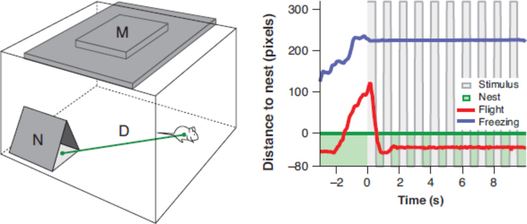
Hình 2.5: Phản ứng của một con chuột trước một kích thích phóng to dần. Bên trái: Trong thiết lập thí nghiệm, một con chuột ở trong một môi trường đơn giản cho phép người thí nghiệm thao tác một vài tín hiệu. Một trong số đó là kích thích đe dọa phóng to dần, một vòng tròn tối giãn dần từ phía trên, được chiếu trên màn hình (M). Một tín hiệu khác là sự hiện diện hay vắng mặt của một cái tổ (N), và khoảng cách (D) của nó tới con chuột. Bên phải: Dữ liệu thực tế. Một con chuột bắt đầu khám phá môi trường, di chuyển quanh cái tổ (các đường ngoằn ngoèo màu xanh và đỏ ở thời điểm < 0). Tại thời điểm = 0, kích thích phóng to dần xuất hiện lặp đi lặp lại (các thanh dọc màu xám), khiến con chuột hoặc đông cứng nếu nó ở quá xa cái tổ (đường ngang màu xanh), hoặc lao vào tổ (màu xanh lá) để an toàn nếu nó đủ gần (đường màu đỏ). Thông qua việc kiểm soát chính xác các kích thích và môi trường trong những nghiên cứu như thế này, chúng ta có thể bắt đầu hiểu chi tiết cách não của con chuột cảm nhận các tín hiệu thị giác của mối đe dọa và dùng chúng để đưa ra một quyết định hành vi thích nghi. Được sao chép với sự cho phép từ Yilmaz và Meister 2013.
Tóm Tắt
- Chúng ta đã thảo luận một cách tiếp cận chức năng để hiểu các cảm xúc: cách giải thích các cảm xúc bằng các hiệu ứng nhân quả của chúng. Các cảm xúc được định nghĩa bằng những gì chúng làm, chứ không phải bằng cách chúng được hiện thực hóa. Đây cũng là cấp độ mà tiến hóa đã chọn lọc chúng—chúng thực hiện các chức năng cụ thể góp phần vào sự sinh tồn của chúng ta.
- Một quan niệm chức năng về cảm xúc cũng gợi ý các tiêu chí để hiểu các rối loạn tâm thần. Đôi khi một cảm xúc không thích nghi, và một hành vi cảm xúc là một dạng "rối loạn chức năng." Các rối loạn tâm trạng, chẳng hạn như trầm cảm và lo âu, và PTSD, có thể là những rối loạn chức năng như vậy (hộp 2.2).
- Không nên lẫn lộn các cảm giác (những trải nghiệm có ý thức về cảm xúc) với các cảm xúc. Chúng tôi đã minh họa các phép so sánh từ khoa học thị giác, nơi
những từ thường được dùng cũng được dùng theo cách cụ thể hơn trong khoa học—và được phân biệt với các trải nghiệm có ý thức.
- Điều chúng ta cần tiếp theo là một danh sách chung các tiêu chí, các thuộc tính chức năng, mà các cảm xúc có thể biểu hiện. Chúng ta chuyển sang nhiệm vụ này ở chương sau.
Chương 3 — Khối Xây Dựng Và Đặc Tính Của Cảm Xúc
Các cảm xúc thường được xem là các trạng thái của một con người. Chẳng hạn, chúng ta nói rằng ai đó đang ở trong trạng thái sợ hãi khi họ bị một con gấu đuổi bắt. Nhưng chúng ta cũng áp dụng cảm xúc cho những hệ thống lớn hơn một con người. Ví dụ, chúng ta có thể nói rằng "Nước Mỹ đã ở trong trạng thái sợ hãi" sau các cuộc tấn công khủng bố ngày 11/9. Trong trường hợp này, chúng ta có thể đang nói đến tất cả hoặc hầu hết người dân ở Mỹ, hoặc đến nước Mỹ như một thực thể trừu tượng hơn xét theo cách quốc gia này phản ứng trên mặt báo chí, chính sách, v.v. Việc gán một trạng thái sợ hãi cho một cá nhân, hoặc cho một thực thể xã hội lớn hơn, đều có thể hợp lệ, miễn là ta áp dụng góc nhìn chức năng mà chúng ta đã thảo luận ở chương trước. Trong cả hai ví dụ, đều có một tình huống đe dọa và nhiều hệ quả chức năng của một trạng thái cảm xúc, cùng nhau nỗ lực đối phó với mối đe dọa đó.
Với tư cách là các nhà thần kinh học, chúng tôi quan tâm chủ yếu đến cách kiến trúc chức năng của một cảm xúc thực sự được hiện thực hóa trong hệ thần kinh của một cá nhân, và ngược lại, những cơ chế thần kinh có thể cung cấp cho chúng ta những gợi ý gì về kiến trúc chức năng đó. Chắc chắn chúng tôi mong đợi rằng các cuộc điều tra thần kinh học có thể làm sáng tỏ những "trạng thái sợ hãi" áp dụng cho các nhóm người, cũng như các ngành như thần kinh học quyết định đã giúp làm sáng tỏ hành vi tập thể trong các thị trường kinh tế. Vì thế, dù chủ đề của cuốn sách chúng tôi là bộ não, chúng tôi mong đợi chủ đề này có liên quan đến việc hiểu hành vi không chỉ của các sinh vật đơn lẻ mà còn của các nhóm và xã hội được tạo thành từ những sinh vật tương tác với nhau.
Vậy thì, ranh giới của một trạng thái cảm xúc bên trong một con người hay con vật là gì? Người ta có thể cho rằng một trạng thái cảm xúc bao gồm mọi thứ trong hệ thần kinh (và có thể cả trong cơ thể) đang xảy ra khi bạn ở trong trạng thái cảm xúc đó. Chúng tôi tin rằng cách nhìn này quá rộng. Không phải mọi sự kiện trong não bạn đồng thời xảy ra với một trạng thái sợ hãi đều là một phần của trạng thái sợ hãi; chỉ một tập con là như vậy (hình 3.1). Điều tương tự cũng đúng với bất kỳ trạng thái nào khác mà các nhà tâm lý học hay nhà thần kinh học nghiên cứu, như thị giác hay trí nhớ hay
trải nghiệm có ý thức. Một kích thích thị giác sẽ có những hiệu ứng nhân quả lan tỏa khắp não và cơ thể tôi, nhưng chỉ một tập con trong số những hiệu ứng đó là bản thân quá trình xử lý thị giác. Vì thế, khi nghiên cứu cảm xúc chúng ta cần tách ra một tập con các sự kiện não trung ương: đó là những sự kiện giải thích cách các kích thích phụ thuộc vào ngữ cảnh dẫn đến các hành vi thuộc về cảm xúc theo một mô tả chức năng. Chúng ta chưa biết chính xác điều đó xảy ra ở đâu trong não, nhưng chúng ta biết nó không xảy ra ở mọi nơi, và hiện chúng ta đã có nhiều dữ liệu cho biết nên tìm ở đâu (đó là chủ đề của các chương sắp tới).

Hình 3.1: Phạm vi không gian–thời gian của một trạng thái cảm xúc. Trong cuốn sách này, chúng tôi xem các trạng thái cảm xúc được hiện thực hóa trong một tập con của hệ thần kinh (ít hơn toàn bộ bộ não, nhưng nhiều hơn một nơ-ron hay một mạch thần kinh), và trong những sự kiện diễn ra trong khoảng vài giây đến vài phút.
Như đã thảo luận ở chương trước, quan điểm của chúng tôi là các cảm xúc tiến hóa để đối phó với những thách thức môi trường lặp đi lặp lại, đòi hỏi những yêu cầu tính toán đặc thù, và có thể được phân loại là cần những đặc tính chức năng cụ thể nhằm tạo ra một phản ứng hiệu quả, thích nghi. Chẳng hạn, các loại mối đe dọa cụ thể đều đòi hỏi triển khai nhanh chóng một chuỗi phản ứng phối hợp để tránh nguy hiểm, như sơ đồ chi tiết chúng tôi đã trình bày trong hộp 2.3 và ví dụ về
thí nghiệm sinh học mà chúng ta đã thấy trong hình 2.5 ở chương trước. Các phản ứng cụ thể cần thiết có thể còn phụ thuộc vào loại hay độ gần của mối đe dọa. Đang hình thành một bức tranh về các hệ thần kinh phần nào tách biệt để đáp trả mối đe dọa liên quan đến kẻ săn mồi, một cá thể đồng loài, hay một dạng nguy hiểm môi trường khác (thời tiết xấu, ngã từ vách đá, và tương tự [Gross và Canteras 2012]). Vì vậy, không phải mọi tình huống mà ta trực giác coi là "mối đe dọa" đều được não xử lý như nhau (xem hộp 8.2 để biết một số trường hợp tách rời thực tế ở những bệnh nhân người hiếm hoi).
Điều này có thể khiến tưởng rằng trạng thái trung ương "sợ hãi" liên quan đến việc xử lý các mối đe dọa sẽ vì thế bị chia tách thành một số rất lớn các vấn đề thích nghi khác nhau. Nhưng thực tế, những vấn đề này lại tụm lại quanh một số lượng nhỏ hơn nhiều các hạng mục hay chiều. Chẳng hạn, mối đe dọa từ kẻ săn mồi có một vài biến số khá rõ ràng đặc trưng cho tình huống. Có mức độ gần kề của mối đe dọa (kẻ săn mồi ở xa và chưa phát hiện ra bạn, hay đang tiến lại gần, hay sắp lao tới), và khả năng đối phó với mối đe dọa (bạn mạnh hơn hay yếu hơn kẻ săn mồi, có chỗ trốn không, có người khác quanh đó có thể giúp bạn không) (xem hộp 2.3). Vì thế, một cách nhìn nhận tình huống này là xem nó như một bài toán ra quyết định trong một không gian tương đối ít chiều, được xác định bởi các giá trị của những biến số này: không gian này bao quát phần lớn các tình huống mà bạn đối mặt với một kẻ săn mồi nguy hiểm.
Tất nhiên, sẽ có thêm những chi tiết riêng lẻ của mỗi tình huống đe dọa cụ thể mà bản thân các cảm xúc không có sẵn một phản ứng (tức là bẩm sinh), thậm chí cũng chẳng có cả một phản ứng đã học được. Đó là lý do các trạng thái cảm xúc phải huy động nhiều quá trình khác để tiếp tục giúp con người hay con vật đối phó với mối đe dọa. Chẳng hạn, con đường chính xác để thoát khỏi kẻ săn mồi có thể đòi hỏi rất nhiều xử lý bổ sung nhằm dự đoán làm sao tôi có thể chạy nhanh hơn kẻ săn mồi, địa hình như thế nào, có chướng ngại vật gì trên đường, tôi nên rẽ trái hay rẽ phải, v.v. Bản thân trạng thái cảm xúc không chịu trách nhiệm về các chi tiết chính xác của hành vi đó trong mọi hoàn cảnh khác nhau. Chúng tôi nhấn mạnh điểm hiển nhiên này để thừa nhận rằng các cảm xúc chỉ là một trong nhiều trạng thái góp phần tạo nên hành vi của một con vật. Cũng như bạn không thể có hành vi chỉ bằng sự chú ý, hay chỉ bằng thị giác, hay chỉ bằng trí nhớ, bạn cũng không thể có hành vi được tạo ra chỉ bằng cảm xúc. Tất cả chúng phải cùng phối hợp.
Chính xác thì cảm xúc ăn khớp như thế nào vào cơ chế vận hành của toàn bộ kho tàng các loại trạng thái và quá trình của một sinh vật là một câu hỏi rất lớn. Trả lời được nó tương đương với việc đưa ra một kiến trúc đầy đủ của tâm trí, và đối với nhà thần kinh học, là một câu chuyện về cách bộ não tạo ra tâm trí. Không cần nói cũng biết, đó không phải là nhiệm vụ của chúng tôi ở đây. Người ta vẫn có thể tiến bộ bằng cách tạm gác những chi tiết này. Chúng ta có thể nghiên cứu cảm xúc mà vẫn thừa nhận rằng nhiều quá trình tạo điều kiện (hay "cho phép") phi cảm xúc cũng cần diễn ra. Trong các thí nghiệm, chúng tôi thường làm điều đó bằng cách giữ các quá trình khác tương đối không đổi, hoặc đo chúng như các biến đồng biến. Cũng như việc nghĩ về một hạch hạnh nhân trong đĩa thí nghiệm là hiện thân của sự sợ hãi, tách rời khỏi phần còn lại của bộ não, là vô lý, thì việc nghĩ rằng toàn bộ quá trình xử lý thị giác, vận động, chú ý và trí nhớ đều là hiện thân của sự sợ hãi cũng vô lý không kém. Các cảm xúc được xử lý bởi những hệ thống não lớn hơn một cấu trúc đơn lẻ (như hạch hạnh nhân), nhưng giới hạn hơn toàn bộ bộ não. Khi chúng ta nói thông thường về ai đó "bị nuốt chửng bởi cơn giận dữ," hay nghĩ rằng hành vi của một con vật bị sợ hãi "chiếm quyền điều khiển," điều đó không có nghĩa là toàn bộ hành vi giờ đây có thể chỉ được giải thích bằng sự sợ hãi. Nó chỉ có nghĩa là nhiều quá trình bổ sung đã được huy động để phục vụ trạng thái sợ hãi.
Tuy nhiên, dường như có một số loại trạng thái tương tác chặt chẽ hơn, thậm chí chồng lấp, với các cảm xúc. Còn các trạng thái như động lực, sự hưng phấn và thúc đẩy thì sao? Có thể hóa ra rằng những trạng thái này nên được hiểu như các chiều của một trạng thái cảm xúc. Quả vậy, nhiều lý thuyết về cảm xúc đưa một hoặc nhiều loại trạng thái khác này vào làm thuộc tính của một cảm xúc: chẳng hạn, nó thúc đẩy hành vi và thay đổi theo mức độ hưng phấn. Nhưng cũng có thể hóa ra rằng động lực và sự thúc đẩy là những cách phân loại hữu ích độc lập cho các trạng thái bên trong khác của một sinh vật, dù chúng có chồng lấp một phần với các trạng thái cảm xúc. Chúng tôi không thấy vấn đề gì thực sự với điều này—người ta có thể chọn phân loại các trạng thái của một sinh vật theo nhiều cách khác nhau, và những cách đó không nhất thiết phải loại trừ lẫn nhau nếu chúng hữu ích về mặt khoa học. Tôi có thể đưa cho bạn một địa chỉ theo số nhà và tên phố trong một thành phố, hoặc tôi có thể đưa cho bạn tọa độ GPS mà điện thoại di động của bạn có thể định vị tới. Những mô tả này chồng lấp lên nhau, nhưng cái này không loại bỏ cái kia, vì cả hai đều có thể hữu ích trong những hoàn cảnh khác nhau. Nếu hóa ra việc nói đến các trạng thái động lực và các trạng thái thúc đẩy là hữu ích trong một số hoàn cảnh nhất định (xem chương 5)—thì cứ như vậy. Cuốn sách này nói về các trạng thái cảm xúc,
và chúng tôi hy vọng rằng khi bạn đọc xong, sẽ rõ ràng hơn cảm xúc khác với các trạng thái khác như thế nào. Trước hết, giờ chúng tôi sẽ liệt kê một số thuộc tính của cảm xúc thực sự làm chúng khác biệt với hầu hết các trạng thái khác.
Các Khối Xây Dựng So Với Các Đặc Tính
Như chúng tôi đã thảo luận, cảm xúc nên được hiểu là các trạng thái chức năng thích nghi ở mức độ phức tạp trung gian giữa các phản xạ và sự cân nhắc hay tính toán có ý chí (dù cả các phản ứng giống phản xạ lẫn sự cân nhắc có ý chí đều có thể được huy động vào một phản ứng cảm xúc). Nghĩa là, một mặt, cảm xúc là những gói thích nghi chức năng đã tiến hóa, được bao bọc chặt chẽ hơn và đặc thù hơn về miền (hộp 3.1) so với sự cân nhắc có ý chí; nhưng mặt khác, cảm xúc lại đa diện và linh hoạt hơn nhiều so với các phản xạ. Các thuộc tính của cảm xúc mà chúng ta sẽ thảo luận phản ánh mức độ kiểm soát hành vi này; chẳng hạn, cảm xúc thể hiện sự bền bỉ và học tập như những dấu hiệu của tính linh hoạt, nhưng lại thể hiện tính tự động và sự kiểm soát ưu tiên đối với hành vi như những dấu hiệu của bản chất không cần suy xét.
Dù không có một ranh giới đen trắng rõ ràng, người ta vẫn có thể phân đại thể các thuộc tính mà các trạng thái cảm xúc thể hiện thành hai loại: cái chúng tôi gọi là các khối xây dựng và các đặc tính. Chúng tôi xem các khối xây dựng là những thuộc tính của một cảm xúc thiết yếu và cơ bản hơn. Mọi trạng thái cảm xúc đều có hầu hết các khối xây dựng, và chúng ta có thể tìm thấy các tiền chất của trạng thái cảm xúc ở những sinh vật đơn giản hơn vốn đã thể hiện nhiều thuộc tính của các khối xây dựng. Mặt khác, các đặc tính là những thuộc tính được phát triển, dẫn xuất và biến đổi hơn của cảm xúc, và không phải cảm xúc nào cũng có chúng. Dùng một phép so sánh về ô tô, bánh xe là một khối xây dựng, còn điều hòa không khí là một đặc tính.
Một ví dụ hay về một khối xây dựng là tính tích cực–tiêu cực. Mọi trạng thái cảm xúc đều liên quan đến việc đánh giá một kích thích là tốt hay xấu, là thứ nên tiến lại gần hay nên tránh né. Trong các cách tiếp cận tâm lý tập trung vào trải nghiệm có ý thức về cảm xúc, tính tích cực–tiêu cực tương ứng với mức độ dễ chịu hay khó chịu của cảm giác cảm xúc. Dù chúng tôi cho rằng còn quá sớm để tự cam kết nêu ra các thuộc tính cần thiết của cảm xúc
ở giai đoạn này, tính tích cực–tiêu cực là một ứng viên tốt cho một thuộc tính mà nếu thiếu thì có lẽ bạn không thể có một trạng thái cảm xúc.
Một ví dụ hay về một đặc tính là giao tiếp xã hội. Đây chắc chắn là một thuộc tính rất nổi bật của các cảm xúc, đặc biệt ở các loài có vú, nhưng có thể nó tiến hóa gần đây hơn, và có thể không hiện diện trong mọi trường hợp. Ngay cả một trạng thái cảm xúc duy nhất cũng có thể đóng một vai trò chức năng trong giao tiếp xã hội trong một số hoàn cảnh, nhưng không phải trong những hoàn cảnh khác. Tôi có thể ở trong trạng thái sợ hãi nếu sắp ngã từ vách đá khi một mình, nhưng tôi cũng có thể đang gửi tín hiệu sợ hãi cho một người khác khi đối diện với một tên trộm hung hăng. Trong khi tính tích cực–tiêu cực là một khối xây dựng luôn là thuộc tính của một trạng thái cảm xúc, thì giao tiếp xã hội là một đặc tính có tính biến đổi hơn, chỉ thấy ở một số loài trong một số dịp.
Hộp 3.1. Tính Đặc Thù Miền.
Tính đặc thù miền đề cập đến quá trình xử lý chỉ hoạt động trên một miền hạn chế của các kích thích, hay thậm chí chỉ trên một loại kích thích rất cụ thể. Chẳng hạn, nhận diện khuôn mặt được cho là tương đối đặc thù miền, bởi có các cơ chế tâm lý và sinh học thần kinh chuyên biệt chỉ hoạt động trên khuôn mặt, chứ không phải trên các kích thích thị giác khác. Tương tự, xử lý ngôn ngữ hoạt động trên những loại đầu vào thính giác cụ thể. Cảm xúc nằm ở đâu trong phổ này? Liệu các hạng mục cảm xúc cụ thể, như sợ hãi, ghê tởm hay buồn bã, có chuyên biệt cho những miền kích thích cụ thể theo cách mà xử lý khuôn mặt và ngôn ngữ dường như có không?
Dù thuật ngữ tính đặc thù miền được dùng theo nhiều cách khác nhau, có lẽ cách dùng rõ ràng nhất bắt nguồn từ một định nghĩa kỹ thuật của một thuật ngữ khác: tính mô-đun. Trong cuốn sách The Modularity of Mind (Tính Mô-Đun Của Tâm Trí), nhà triết học Jerry Fodor lần đầu liệt kê các đặc tính mà ông cho rằng một hệ thống mô-đun cần có (Fodor 1983), không phải tất cả vẫn còn được đồng thuận trong các thảo luận hiện đại về chủ đề này. Tuy nhiên, có một đặc tính dường như là điều kiện tiên quyết (sine qua non) của tính mô-đun, đó là tính đặc thù miền. Ý tưởng đơn giản là mô tả phạm vi các đầu vào mà một hệ thống xử lý thông tin có thể tiếp cận.
Trong trường hợp phản xạ bật gối, phạm vi đầu vào cực kỳ hẹp: phản xạ đó không thể quyết định cử động đầu gối của bạn dựa trên những gì bạn tin về thế giới, dựa trên những gì bạn thấy, nghe, nếm hay ngửi. Nó thậm chí còn không thể lồng ghép thông tin từ xúc giác ở nơi khác trên cơ thể. Nó chỉ nhận đầu vào từ các thụ thể căng trong đầu gối của bạn. Mặt khác, việc cân nhắc có đi ăn tối tối nay hay không có thể đưa bất kỳ đầu vào nào vào xem xét—bạn đói đến mức nào, thực đơn của nhà hàng ra sao, vợ bạn nói gì, và cứ thế mãi không có ranh giới rõ ràng. Vì vậy, phản xạ bật gối có tính mô-đun và đặc thù miền rất cao, còn quyết định đi ăn tối thì không.
Một lần nữa, các cảm xúc nằm ở giữa. Một trạng thái cảm xúc như sợ hãi có thể nhận một số loại đầu vào nhất định, chứ không phải bất kỳ đầu vào nào. Chẳng hạn, vị đắng không phải là đầu vào phù hợp cho sự sợ hãi, mà là đầu vào phù hợp cho sự ghê tởm. Một kích thích thị giác phóng to dần là đầu vào phù hợp cho sự sợ hãi, nhưng không phải cho sự ghê tởm. Có sự linh hoạt hơn nhiều so với các phản xạ, vì có sự học tập—nên bạn có thể thử huấn luyện một con vật, hay một con người, sợ vị đắng bằng cách ghép vị đó với cú sốc điện trong một mô hình điều kiện hóa sợ hãi kiểu Pavlov. Nhưng không phải kích thích nào cũng học được dễ như nhau. Một số loại kích thích dễ học cách sợ hơn nhiều (và thực tế nhiều người sợ chúng mà chẳng cần học): chúng ta dễ sợ rắn và nhện hơn là sợ hoa và tranh. Vì vậy, dường như có ít nhất một mức độ đặc thù miền góp phần xác định các hạng mục cảm xúc.
Có một cách giải thích thay thế cho một số trường hợp tưởng như đặc thù miền. Chẳng hạn, tính đặc thù miền của xử lý khuôn mặt thực ra còn đang được tranh luận (Kanwisher 2000; Tarr và Gauthier 2000). Xử lý khuôn mặt, cũng như xử lý cảm xúc, đủ "trung ương" đến mức rất nhiều loại đầu vào khác nhau có thể tiếp cận nó (khác với trường hợp các phản xạ). Điều này đặt ra thách thức là làm sao giải thích tính đặc thù miền cho những trường hợp trung ương này, vì nó không thể chỉ phát sinh từ đầu vào giác quan bị hạn chế, mà phải nằm ở một số đặc tính của bản thân quá trình xử lý trung ương. Đối với khuôn mặt, người ta đã lập luận rằng phân loại chi tiết và sự thành thạo là những đặc tính xử lý thông tin tạo ra tính đặc thù miền (bởi vì chúng
chủ yếu áp dụng cho cách cần xử lý khuôn mặt). Đối với cảm xúc, một danh sách tương tự các đặc tính có thể đưa ra cách giải thích như vậy (ví dụ, những cái chúng tôi liệt kê trong hình 3.2). Công việc tương lai sẽ cần xem xét một định nghĩa linh hoạt hơn về "tính đặc thù miền," xét đến cách nó có thể hình thành trên các thang thời gian của tiến hóa, của phát triển, hay thậm chí của kinh nghiệm với các miền kích thích đòi hỏi xử lý cụ thể trong suốt cuộc đời một người (Spunt và Adolphs 2017b).
Danh Sách Tạm Thời Các Thuộc Tính Của Cảm Xúc
Giờ chúng ta chuyển sang thảo luận các thuộc tính của cảm xúc. Ý chúng tôi là gì khi nói đến các thuộc tính này? Một cách tiếp cận các thuộc tính của cảm xúc rất thực tế: đó là những đặc tính xử lý mà bạn sẽ tìm kiếm trong bộ não, nếu bạn là một nhà thần kinh học, nhằm phát hiện các trạng thái cảm xúc giả định. Chúng cần thể hiện những thuộc tính nhất định, nếu thiếu thì chúng không đủ tư cách được xem là hiện thực hóa một trạng thái cảm xúc, vì chúng không thể thực hiện được vai trò chức năng của cảm xúc đó.
Hình 3.2 đưa ra một danh sách tạm thời các thuộc tính của cảm xúc, trong đó một số sẽ được chúng tôi thảo luận thêm trong phần còn lại của chương này. Có vài điểm cần lưu ý về hình 3.2. Thứ nhất, nó chắc chắn không nhằm đưa ra bất cứ thứ gì như một "lý thuyết về cảm xúc" hay một định nghĩa về cảm xúc. Nó không tự nhận là một danh sách đầy đủ, và thậm chí có thể một số thuộc tính trong đó cuối cùng nên bị bỏ đi. Thay vào đó, nó nhằm minh họa cách tiếp cận điều tra các trạng thái cảm xúc nói chung mà chúng tôi cho là hữu ích nhất: bắt đầu bằng cách liệt kê các đặc điểm vận hành của các trạng thái cảm xúc, nhờ đó chúng có thể thực hiện các vai trò chức năng của mình. Danh sách trong hình 3.2 mang tính khái quát cho mọi cảm xúc. Nếu người ta đang điều tra một cảm xúc cụ thể, như sợ hãi, ghê tởm hay xấu hổ, thì có thể bắt đầu với một danh sách chi tiết hơn về chức năng của từng cảm xúc đó (chẳng hạn, có lẽ đại loại như những gì chúng tôi đã trình bày trong hình 2.4 trong trường hợp sợ hãi). Chúng tôi ngại đảm nhận công việc sau này trong cuốn sách này vì, như đã nói, chúng tôi cho rằng còn quá sớm để tập trung vào các hạng mục cảm xúc cụ thể (ngoại trừ dưới dạng ví dụ).
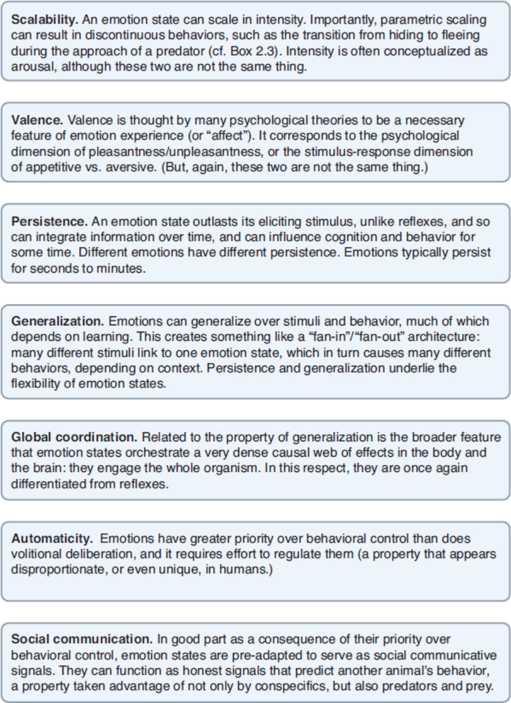
Hình 3.2: Các thuộc tính của trạng thái cảm xúc. Bảng quan trọng này liệt kê các thuộc tính của cảm xúc mà chúng tôi sẽ tiếp tục thảo luận trong cuốn sách này. Một số thuộc tính liệt kê gần đầu bảng có thể được hiểu thiên về các khối xây dựng của một trạng thái cảm xúc; những thuộc tính liệt kê gần cuối bảng có thể được hiểu thiên về các đặc tính (xem văn bản để biết chi tiết).
Cấu Trúc Tương Đồng
Các thuộc tính thể hiện trong hình 3.2 có thể dùng để đặc trưng hóa một trạng thái cảm xúc cụ thể và giúp phân biệt nó với các trạng thái cảm xúc khác, cũng như với hành vi phản xạ. Một số trường hợp của một cảm xúc có tính tích cực–tiêu cực nhiều hay ít hơn những trường hợp khác; một số kéo dài hơn; một số đóng vai trò lớn hơn trong giao tiếp xã hội. Nếu chúng ta xem tất cả những thuộc tính này là các chiều mà một trạng thái cảm xúc có thể thay đổi, chúng xác định một không gian chiều mà trong đó chúng ta có thể định vị các cảm xúc. Một ví dụ đơn giản hóa về cách điều này hoạt động được thể hiện trong hình 3.3.
Khái niệm về một không gian chiều dùng để đặc trưng hóa các trạng thái cảm xúc đưa chúng ta đến một trong những thuộc tính cơ bản nhất của các trạng thái cảm xúc: các trạng thái cảm xúc khác nhau có thể liên quan với nhau ở mức độ tương đồng nhiều hay ít. Theo một nghĩa nào đó, đây là một điều hiển nhiên. Hoàn toàn mọi thứ đều có thể liên quan với mọi thứ khác theo cách này. Như chúng ta sẽ thấy, đây cũng là một cách tiếp cận chính được dùng trong các nghiên cứu sử dụng chụp ảnh não chức năng để điều tra cảm xúc ở người (chương 8). Một câu hỏi then chốt là: thước đo nào, những chiều nào, đang được dùng để thực hiện phép so sánh tương đồng?
Nếu tôi hỏi bạn trong hai cặp số nào thì tương đồng hơn, 2 và 3, hay 2 và 326, bạn sẽ trả lời gì? Gần như chắc chắn bạn sẽ nói 2 và 3 tương đồng hơn, và thước đo trực giác của bạn đơn giản là hiệu số giữa chúng. Bạn có thể biểu diễn chúng bằng đồ thị trong một không gian một chiều, một trục số, và bạn sẽ thấy 2 và 3 gần nhau hơn 2 và 326. Vậy cái đó thì dễ.
Giờ hãy xét một trường hợp khó hơn. Trong các con vật này, cặp nào có vẻ tương đồng hơn với bạn: mèo và chó, hay mèo và đại bàng? Dù một nhà sinh học hiện đại sẽ trả lời câu này bằng cách so sánh trình tự DNA, vì hầu hết mọi người không có máy giải trình tự DNA, họ sẽ dùng kiến thức sinh học chung hoặc trực giác của mình. Bạn có thể sẽ trả lời ngay rằng mèo và chó tương đồng hơn, nhưng nếu dùng trực giác thì có thể khó nói rõ bạn đã làm thế nào. Lý do là không gian tương đồng
mà bạn đang dùng để so sánh các con vật này thường có nhiều chiều hơn. Nó không phải là một trục số duy nhất: kích thước hay cân nặng dường như không đủ làm thước đo để phán xét sự tương đồng. Bạn phải nghĩ đến các thuộc tính khác, như sự hiện diện của lông, khả năng được nuôi làm thú cưng, có bốn chân, đi lại trên mặt đất, v.v., v.v. Vì thế mèo, chó và đại bàng có thể được so sánh trong một không gian tương đồng nhiều chiều hơn, dù chúng ta không chắc các chiều của không gian đó là gì. Dù vậy, chúng ta vẫn có thể so sánh chúng, và một lần nữa biểu diễn đồ họa sẽ cho thấy một hình học giống như những gì chúng ta đã thấy với các con số: mèo và chó gần nhau hơn trong không gian nhiều chiều này so với mèo và đại bàng.

Hình 3.3: Một không gian chiều cho các cảm xúc. (A) Không gian chiều phổ biến nhất được dùng trong tâm lý học, biểu diễn các cảm xúc trong một không gian hai chiều gồm tính tích cực–tiêu cực và sự hưng phấn. Nó thường tạo ra một sắp xếp vòng tròn, từ đó cấu trúc tương đồng của các cảm xúc có thể dễ dàng được nhìn thấy, như nhà tâm lý học James Russell đã lưu ý (Russell 1980). (B) Hình này nhằm thể hiện về mặt khái niệm cách các cảm xúc có thể được đặc trưng mà không cần phân loại chúng thành "giận dữ," "sợ hãi," "ghê tởm," hay bất kỳ hạng mục nào mà ta tình cờ có từ trong tiếng Anh. Thay vào đó, chúng chỉ là các điểm trong một không gian đa chiều (ở đây chúng tôi chỉ thể hiện ba chiều để dễ hình dung). Chẳng hạn, có thể hóa ra rằng tất cả các trường hợp cảm xúc liên quan đến tấn công và phòng vệ đều tụm lại ở một vùng nhất định của không gian đó, chẳng hạn vùng đỏ được gọi là "cơn cuồng nộ." Mặt khác, cũng rất có thể chúng ta tìm thấy các cụm không dễ tương ứng với các từ hiện có trong vốn từ về cảm xúc của mình. Thậm chí có thể chúng không hề tụm thành cụm nào cả. Một không gian chiều có thể chứa đựng tất cả những khả năng này; hoàn toàn khả thi khi nghiên cứu cảm xúc mà không dùng nhãn bằng lời để mô tả cảm xúc mà bạn đang điều tra. Được sao chép với sự cho phép từ Anderson và Adolphs 2014.
Sự Hưng Phấn Và Tính Tích Cực–Tiêu Cực
Các cảm xúc cũng có thể được so sánh với nhau về mặt tương đồng, nhưng, cũng như với mèo, chó và đại bàng, không rõ nên dùng những chiều nào để thực hiện phép so sánh. Thường thì các nhà nghiên cứu cảm xúc đã dùng hai chiều, vì chúng dường như nắm bắt rất tốt trực giác của chúng ta về các quan hệ tương đồng giữa các cảm xúc khác nhau. Hai chiều đó đại loại là sự hưng phấn hay cường độ (cái chúng tôi gọi là "tính co giãn" trong hình 3.2), và tính tích cực–tiêu cực (hay mức độ dễ chịu). Nghĩa là, mọi cảm xúc đều có mức độ hay có thể co giãn, và mọi cảm xúc đều dễ chịu hay khó chịu ở mức độ này hay mức độ khác. Hai chiều tính tích cực–tiêu cực và sự hưng phấn nắm bắt rất tốt các đánh giá của người ta về cảm xúc, nên ở mức tâm lý, và đặc biệt ở mức cách người ta khái niệm hóa trải nghiệm cảm xúc (các cảm giác), có những lý do chính đáng để lượng hóa sự tương đồng giữa các cảm xúc theo cách này. Việc bạn cho người tham gia xem biểu cảm khuôn mặt của cảm xúc, hay chỉ đưa cho họ những từ hay câu chuyện gợi ra các khái niệm cảm xúc, cũng không quá quan trọng—chúng đều có thể được sắp xếp theo sự tương đồng của chúng trong không gian hai chiều này. Các nhà tâm lý học gọi không gian hai chiều đặc trưng cho các khía cạnh trong trải nghiệm cảm xúc của chúng ta (hoặc các khái niệm về nó) là "affect" (ảnh hưởng), và trong hầu hết các lý thuyết, nó tạo thành một dạng lõi mà trên đó mọi cảm giác thuộc về cảm xúc đều có thể được triển khai (Russell 2003).
Tuy nhiên, không gian hai chiều tính tích cực–tiêu cực–hưng phấn này chủ yếu được rút ra từ các đối tượng con người, và chủ yếu từ các phán đoán mà họ đưa ra về cảm xúc. Nó không được rút ra từ các thước đo hành vi hay thần kinh của các trạng thái cảm xúc thực tế, mà chính là những thước đo mà nhà khoa học cảm xúc có thể muốn dùng. Có những cách thay thế để định vị các cảm xúc trong một không gian tương đồng hai chiều sử dụng các loại dữ liệu khác. Chẳng hạn, bạn cũng có thể dựa sơ đồ của mình vào các quan hệ kích thích–phản ứng, thay vì vào các thuộc tính của khái niệm hay trải nghiệm có ý thức của chúng. Một sơ đồ như vậy thực ra đã được nhà thần kinh học Edmund Rolls đề xuất trong cuốn sách The Brain and
Emotion (Rolls 1999). Rolls lập luận rằng các cảm xúc có thể được xem như các trạng thái được gợi ra bởi việc ban phát hay rút lại phần thưởng hoặc trừng phạt. Điều này cũng tạo ra một không gian tương đồng hai chiều, nhưng các trục giờ tương ứng với việc ban phát (hay rút lại) phần thưởng (hay trừng phạt). Dù khá khác với không gian ảnh hưởng tâm lý chuẩn lấy sự hưng phấn và tính tích cực–tiêu cực làm các chiều, đây là một ví dụ khác về cách một trạng thái cảm xúc (hoặc, trong trường hợp này, là ánh xạ kích thích–hành vi mà các trạng thái cảm xúc thực hiện) có thể được biểu diễn trong một không gian tương đối ít chiều. Một cảm xúc cụ thể nhất định có thể được định vị trong một trong hai không gian hai chiều này. Chẳng hạn, sợ hãi sẽ là hưng phấn cao, tính tích cực–tiêu cực âm. Nó cũng là một trạng thái do ban phát trừng phạt gây ra (hoặc do dự đoán trước trừng phạt).
Không một sơ đồ hai chiều nào trong số này nắm bắt được toàn bộ sự biến thiên giữa các cảm xúc, và chúng tôi tin chắc rằng sẽ cần những sơ đồ có số chiều lớn hơn. Chúng ta chưa biết nên có bao nhiêu chiều. Một gợi ý có thể là làm cho các chiều tương đương với một tập con của các thuộc tính cụ thể mà chúng tôi liệt kê trong hình 3.2, sao cho các cảm xúc không chỉ được mô tả bằng tính tích cực–tiêu cực và sự hưng phấn, mà còn bằng mức độ chúng kéo dài theo thời gian (đại loại như một hằng số phân rã), hay mức độ chúng có thể tổng quát hóa qua các kích thích (có thể tương đương với mức độ dựa trên các tác nhân gây ra bẩm sinh hay đã học được). Sẽ cần một chút khéo léo để nghĩ ra nhiều chiều, mỗi chiều cho phép ánh xạ một đại lượng vô hướng; cuối cùng, chúng ta cần có thể gán một con số cho giá trị mà bất kỳ cảm xúc nào nhận trên bất kỳ chiều nào, và việc lượng hóa như vậy hiện có thể khó đối với nhiều thuộc tính chúng tôi liệt kê. Chúng ta sẽ trở lại với các không gian tương đồng ở chương 8, khi thảo luận về cơ sở thần kinh của cảm xúc từ dữ liệu chụp cộng hưởng từ chức năng (fMRI), và chúng ta sẽ trở lại với tính tích cực–tiêu cực ở các chương 9 và 10, vì đây là một đặc tính đặc biệt nổi bật trong trải nghiệm có ý thức về cảm xúc.
Sự Bền Bỉ
Chúng ta vừa thảo luận về tính co giãn và tính tích cực–tiêu cực khi phác thảo cách các cảm xúc có thể được đặc trưng và so sánh trong một không gian tương đồng. Nhưng tính co giãn và tính tích cực–tiêu cực là những thuộc tính quan trọng độc lập của cảm xúc mà chúng ta có thể
đo lường, và cho phép những chức năng cụ thể. Đặc biệt, tính co giãn phân biệt các trạng thái cảm xúc với các phản xạ kích thích–phản ứng đơn giản, vốn có xu hướng là toàn bộ hay không gì cả thay vì có mức độ. Giờ chúng ta chuyển sang thảo luận ngắn gọn các thuộc tính còn lại được liệt kê trong hình 3.2.
Một khía cạnh quan trọng của tính linh hoạt được tạo nên nhờ khả năng tích hợp thông tin theo thời gian và kết hợp nhiều nguồn thông tin. Chức năng tích hợp này đòi hỏi thuộc tính bền bỉ. Nếu một trạng thái cảm xúc kéo dài trong một khoảng thời gian, nó có thể tích lũy thông tin giác quan qua thời gian và từ nhiều nguồn; nó có thể tương tác phong phú với các trạng thái bên trong khác; và nó có thể có ảnh hưởng kéo dài lên hành vi. Đó là điều chúng ta thường quan sát thấy: nếu ai đó đang ở trong trạng thái sợ hãi, họ ở trong trạng thái đó một thời gian, và cách các kích thích ảnh hưởng đến hành vi của họ bị nhuốm màu bởi sự bền bỉ của trạng thái sợ hãi đó. Chúng ta thấy điều tương tự thường xuyên ở động vật: một con chuột đang sợ hãi vừa thoát khỏi kẻ săn mồi có thể nấp trong hang khá lâu trước khi chui ra, thận trọng và dò dẫm. Trạng thái sợ hãi có ảnh hưởng lâu dài đến hành vi. Hơn nữa, các cảm xúc khác nhau dường như có mức độ bền bỉ khác nhau: ngạc nhiên và sợ hãi tương đối ngắn ngủi, còn buồn bã thì có xu hướng kéo dài hơn. Vì thế, sự bền bỉ có thể là một chiều hữu ích định vị các hạng mục cảm xúc khác nhau. Thuộc tính bền bỉ đã được dùng để giúp đặc trưng hóa các trạng thái giống cảm xúc ngay cả ở ruồi (Gibson et al. 2015). Các trạng thái giống cảm xúc kéo dài hàng giờ, hàng ngày hay lâu hơn thường được phân loại là tâm trạng (nhưng cũng có những khác biệt khác giữa tâm trạng và cảm xúc; xem hộp 3.2).
Hộp 3.2. Tâm Trạng.
Dù các trạng thái cảm xúc quả thực có thuộc tính bền bỉ, chúng thường không kéo dài lâu sau khi tình huống đã gây ra chúng được giải quyết. Một khi bạn đã thoát khỏi con gấu, sự sợ hãi của bạn dần giảm xuống (và có thể được thay thế bằng cảm giác nhẹ nhõm). Nhưng cũng có những trạng thái giống cảm xúc kéo dài hơn nhiều.
Tâm trạng giống cảm xúc ở nhiều phương diện, và thường đi kèm với những cảm giác tương tự. Tuy nhiên, chúng kéo dài lâu hơn cảm xúc rất nhiều—từ vài giờ đến nhiều năm. Tâm trạng dường như nổi bật hơn ở con người so với động vật, có thể phản ánh xu hướng của chúng ta
nghĩ về ký ức và lên kế hoạch cho tương lai nhiều hơn động vật. Trong khi cảm xúc có chức năng đối phó với các tình huống cấp tính, hiện tại, thì tâm trạng thường có chức năng đối phó với các sự kiện trong quá khứ hay tương lai—và thực tế có thể được gợi ra bởi các biểu diễn về những sự kiện hoàn toàn tưởng tượng.
Dù tâm trạng và cảm xúc có một số điểm chung, chúng khác biệt đủ để không nên đơn giản xem tâm trạng là những cảm xúc được kéo dài về thời gian. Theo một số lý thuyết về cảm xúc, chúng ta luôn ở trong một trạng thái cảm xúc, chỉ là trạng thái đó lớn dần rồi nhỏ dần khi chúng ta tiếp xúc với các kích thích. Theo quan điểm của chúng tôi, cảm xúc chỉ xảy ra khi gặp phải những thách thức chức năng cụ thể, và bạn nói chung không ở trong trạng thái cảm xúc nếu chỉ ngồi ở nhà ăn sáng (nhưng bạn có thể đang có tâm trạng).
Khác với cảm xúc, tâm trạng thường không có tác nhân gây ra rõ ràng (có thể là một lý do cho sự bền bỉ lâu dài của chúng). Chúng cũng dường như liên quan đến các hiệu ứng lên quá trình nhận thức hơn là lên hành vi. Chúng ta nói chung không bắt đầu bỏ chạy hay thực hiện các hành vi có mục tiêu cụ thể vì một tâm trạng. Nhưng chúng ta bắt đầu nghĩ về những chủ đề khác, và chú ý theo cách khác. Những hiệu ứng của tâm trạng lên các quá trình nhận thức khác như trí nhớ, sự chú ý và ra quyết định là một chủ đề nghiên cứu lớn trong tâm lý học.
Trong các thuộc tính cảm xúc mà chúng tôi liệt kê trong hình 3.2, tâm trạng có chung sự bền bỉ, tính co giãn, tính tích cực–tiêu cực, sự tổng quát hóa và tính tự động. Chúng dường như không đóng nhiều vai trò trong giao tiếp xã hội. Người ta có thể kéo dài thang thời gian từ cảm xúc đến tâm trạng, rồi đến tận các đặc điểm tính cách. Các đặc điểm tính cách giống cảm xúc cũng là một chủ đề nghiên cứu lớn trong tâm lý học. Con người, và ở một mức độ nhất định là động vật, thể hiện ảnh hưởng khuynh hướng, khiến họ dễ bộc lộ một số phản ứng cảm xúc nhất định. Một số người nói chung trở nên vui hơn, buồn hơn hay sợ hơn trước những kích thích khác nhau bằng nhau. Đây là các khía cạnh của sự khác biệt cá nhân ổn định hơn theo thời gian, có thể có thành phần di truyền đáng kể, và là những chủ đề nghiên cứu quan trọng trong tâm lý bệnh học (xem hộp 2.2).
Sự bền bỉ của trạng thái là một thuộc tính rất hữu ích từ góc độ hình thức của việc ra quyết định. Một trong những loại mô hình tính toán có ảnh hưởng nhất, có thể mô tả cách sự tích lũy bằng chứng giác quan dẫn đến một lựa chọn, là các mô hình gọi là khuếch tán-trôi dạt, ban đầu được nhà tâm lý học Roger Ratcliff nghĩ ra (Ratcliff và McKoon 2008). Có nhiều cách diễn đạt các mô hình tích lũy như vậy, thường dựa trên dữ liệu thời gian phản ứng trong tâm lý học, nhưng hình 3.4 cho thấy bản chất của một mô hình khuếch tán-trôi dạt.
Trong hình 3.4, chúng ta thấy rằng một phản ứng có thể chỉ được gợi ra sau một khoảng thời gian. Bạn có thể dễ dàng tự thử: ngồi trong bóng tối ở một con hẻm không an toàn và lắng nghe những tiếng sột soạt nhỏ và tiếng chân quanh mình. Dù môi trường không có gì thay đổi, cũng chỉ là vấn đề thời gian trước khi bạn trở nên sợ hãi đến mức cần trốn đi hay bỏ chạy. Não bạn đang tích lũy thông tin giác quan báo cho nó biết về các mối đe dọa tiềm ẩn. Nếu bằng chứng giác quan lớn, chẳng hạn thấy một con hổ ngay trước mặt, quyết định của bạn nhanh chóng, vì ngưỡng quyết định gần như được vượt qua ngay lập tức. Nếu bằng chứng giác quan nhỏ, như con hẻm tối với những tiếng sột soạt nhỏ, quyết định của bạn chậm, vì cần một lúc để đủ bằng chứng giác quan tích lũy vượt ngưỡng quyết định. Nếu ngưỡng quyết định của bạn thấp (đường ngang màu đen bị các đường cong màu xanh cắt qua), bạn sẽ đưa ra quyết định hành vi sớm hơn, và điều này có thể tương ứng với một người vốn có khuynh hướng dễ lo âu. Nếu ngưỡng thực sự rất thấp, bạn sẽ quyết định rất nhanh, nhưng cũng sẽ có nhiều kết quả dương tính giả hơn—bạn có thể bỏ chạy trước gần như mọi thứ, vì bạn dễ sợ đến thế (xem hộp 2.2).
Loại mô hình này đã khá mạnh trong việc giải thích cách bộ não đưa ra các quyết định hành vi, vì nó có một vài tham số tự do (có thể được điều chỉnh từ dữ liệu) mô tả cơ chế của quá trình lựa chọn. Ngưỡng cao đến mức nào, điểm khởi đầu ở đâu, tốc độ tích lũy bằng chứng và việc các ranh giới quyết định là cố định (như trong hình 3.4) hay thu hẹp dần (như khi bạn sẽ đưa ra quyết định sau một thời gian cố định, bất kể lượng bằng chứng giác quan), đều là các khía cạnh của mô hình có thể được xem xét, và sẽ mô tả các khía cạnh của hành vi (bạn chạy trốn nhanh đến mức nào, bạn có bao nhiêu kết quả dương tính giả, bạn trở nên nhạy cảm hơn thế nào với thông tin bổ sung theo thời gian, v.v.).
Những mô hình như vậy cũng đã được dùng để thăm dò các phản ứng của não, và chúng cung cấp một khung mạnh mẽ để đưa đặc tính bền bỉ của cảm xúc vào.

Hình 3.4: Mô hình khuếch tán-trôi dạt. Trong sơ đồ này, một quyết định hành vi (hay thần kinh) được mô hình hóa như sự tích lũy nhiễu của một tín hiệu, hay một tập các tín hiệu, theo thời gian. Trong hình là một ví dụ mà người ta phải đưa ra quyết định hành vi dựa trên đầu vào giác quan, chẳng hạn phát hiện một kẻ săn mồi. Theo thời gian, các tín hiệu giác quan có thể tích lũy để vượt qua một ngưỡng quyết định và dẫn đến một phản ứng. Đường màu xanh nhạt có thể tương ứng với quyết định bỏ chạy nếu bạn đang ở trong một con hẻm tối và nghe tiếng chân tiến lại gần. Đường màu xanh đậm có thể tương ứng với quyết định bỏ chạy bị trì hoãn hơn nếu bạn chỉ đang ở trong con hẻm tối và ngày càng sợ hãi, nhưng không nghe thấy tiếng chân nào tiến lại.
Sự bền bỉ cũng có thể được hiểu đơn giản như một đại lượng vô hướng tương ứng với đại loại một hằng số phân rã. Cũng như bất kỳ nguyên tố phóng xạ nào cũng có thể được nhận diện từ một "dấu vân tay" riêng, chính là tốc độ phân rã phóng xạ của nó, mỗi trạng thái cảm xúc có thể có một hằng số phân rã. Có lẽ chúng ta có thể phân biệt các hạng mục cảm xúc khác nhau, một phần, nhờ các hằng số phân rã thời gian khác nhau của chúng. Trong phân rã phóng xạ thì điều này dễ, vì sự phân rã được mô tả bằng một hàm mũ; bất kể bạn thực hiện phép thử ở thời điểm nào hay với bao nhiêu vật liệu, việc so sánh qua các điểm thời gian sẽ cho phép bạn điều chỉnh một hằng số phân rã duy nhất, là dấu hiệu đặc trưng cho nguyên tố của bạn. Sẽ là một công cụ tuyệt vời nếu chúng ta tìm được thứ tương tự cho các cảm xúc!
Bạn có thể nghĩ rằng sự bền bỉ của cảm xúc sẽ bị làm phức tạp hóa, hay thậm chí bị lẫn lộn, bởi các khía cạnh khác của trí nhớ. Chắc chắn rằng mức độ sợ hãi của tôi sẽ phụ thuộc vào việc tôi có nhớ mình đã sợ hãi hay không, hay có nhớ điều gì
đã gây ra sự sợ hãi của tôi ngay từ đầu. Quả thực, đây là những phức tạp cần được tính đến—nhưng chúng cũng có thể được tách bỏ để chứng minh rằng các trạng thái cảm xúc có sự bền bỉ ở con người độc lập với việc chúng ta có nhớ có ý thức điều gì hay không. Một thí nghiệm như vậy đã được các nhà thần kinh học nhận thức Justin Feinstein, Melissa Duff và Daniel Tranel thực hiện, họ kiểm tra các bệnh nhân bị mất trí nhớ (Feinstein, Duff và Tranel 2010). Trong nghiên cứu đó, các bệnh nhân bị tổn thương hải mã, một cấu trúc não cần thiết để mã hóa ký ức mới. Các bệnh nhân không thể nhớ có ý thức bất kỳ sự kiện nào lâu hơn khoảng một phút. Các nhà nghiên cứu cho họ xem những bộ phim gợi ra cảm xúc mạnh, như giận dữ, sợ hãi, hạnh phúc và buồn bã, và tất cả bệnh nhân đều cảm thấy những cảm xúc mạnh khi xem phim, giống như những người khỏe mạnh. Vài phút sau khi xem những bộ phim gợi cảm xúc này, bệnh nhân được hỏi họ cảm thấy thế nào và họ nhớ được gì. Hóa ra là các bệnh nhân mất trí nhớ vẫn cảm thấy cảm xúc mạnh, đặc biệt là buồn bã, trong một thời gian khá lâu sau khi xem phim (như bất kỳ ai cũng vậy)—nhưng trong trường hợp của họ, họ không còn nhớ tại sao. Họ không nhớ là mình đã xem bộ phim và không thể đưa ra lời giải thích nào cho việc họ thấy buồn. Nghiên cứu này chứng minh rằng sự bền bỉ của các trạng thái cảm xúc không đơn giản là hệ quả của khả năng nhớ có ý thức về cảm xúc chúng ta đã cảm nhận, hay nhớ các sự kiện đã gợi ra cảm xúc đó. Các trạng thái cảm xúc có sự bền bỉ nội tại, và sự bền bỉ này có một vai trò chức năng trong khả năng tích hợp các đầu vào giác quan trong một khoảng thời gian nhất định, và ảnh hưởng đến nhận thức và hành vi (cũng như các cảm xúc khác) trong một khoảng thời gian nhất định.
Sự Tổng Quát Hóa
Một khía cạnh rất quan trọng của cảm xúc, và là một khía cạnh khác phân biệt cảm xúc với các phản xạ, là khả năng tổng quát hóa qua các kích thích. Tính tổng quát hóa này là một trong những thuộc tính ít được hiểu rõ nhất, vì nó vượt xa sự phân loại hay trừu tượng hóa như thường được nghiên cứu trong các hệ thống giác quan. Xét đến các đầu vào giác quan cực kỳ đa dạng và đa phương thức có thể mang thông tin liên quan đến một cảm xúc cụ thể (chẳng hạn, các dấu hiệu báo trước một mối đe dọa có thể gây ra trạng thái sợ hãi), không có một công thức
đơn giản nào xác định kích thích nào gây ra một cảm xúc, huống chi là kích thích nào gây ra loại cảm xúc này thay vì loại khác.
Cách phổ biến nhất mà các nhà khoa học đã xử lý sự phức tạp này là đẩy nó vào miền của "các hiệu ứng ngữ cảnh." Nghĩa là, người ta thường giả định rằng vẫn có một tập kích thích tương đối nhỏ có đặc điểm giác quan gây ra cảm xúc, nhưng điều này có thể được điều chỉnh hay kiểm soát bởi ngữ cảnh trong đó các kích thích xuất hiện. Chẳng hạn, sự sợ hãi của bạn đối với một con rắn sẽ phụ thuộc vào việc bạn đang một mình trong bụi rậm, đang ở với những người có thể bảo vệ bạn, hay bạn thấy nó trong một cửa hàng thú cưng sau lớp kính, hoặc chỉ tình cờ biết rằng nó đã bị nhổ răng độc. Như rõ từ những ví dụ này, cái gọi là hiệu ứng ngữ cảnh nhanh chóng trở nên phức tạp đến mức có thể lồng ghép hầu hết nhận thức. Hiện có một lĩnh vực nhỏ lớn mạnh trong thần kinh học cảm xúc dành cho các tương tác giữa cảm xúc và nhận thức, nghiên cứu chính chủ đề này (Pessoa 2013).
Một cách khác để đối diện với sự phức tạp do tổng quát hóa là đặt các kích thích vào trong một mô hình phong phú hơn, lý tưởng nhất là một mô hình có thể được chính thức hóa về mặt chức năng và tính toán. Chẳng hạn, ngữ cảnh mà bạn nhìn thấy con rắn (bụi rậm, ở với người khác, trong cửa hàng thú cưng, v.v.) có thể được ánh xạ vào một sơ đồ như sơ đồ chúng tôi đã trình bày trong hình 2.4.
Sự tổng quát hóa liên quan chặt chẽ với học tập, một chủ đề lớn trong nghiên cứu cảm xúc mà chúng tôi sẽ nhắc lại ở phần sau. Hầu hết các kích thích trong cuộc sống của chúng ta gây ra cảm xúc đều đã đạt được hiệu lực nhân quả của chúng qua kinh nghiệm. Ví dụ được hiểu rõ nhất về sự học tập cảm xúc liên kết như vậy là điều kiện hóa sợ hãi kiểu Pavlov, mà chúng ta sẽ thảo luận chi tiết hơn nhiều ở chương 6.
Cũng có sự tổng quát hóa trong các phản ứng hành vi do một cảm xúc gây ra. Dù các phản ứng không điều kiện kiểu Pavlov như đông cứng hay tiết nước bọt (xem chương 6) có thể tạo thành một tập hành vi tương đối nhỏ, thì các hành vi công cụ đã học tạo thành một tập hành vi mở và lớn, có thể được liên kết linh hoạt với một cảm xúc.
Có những khác biệt quan trọng giữa các loài trong sự tổng quát hóa do học tập. Dù mọi loài động vật đều cho thấy các trường hợp học tập cảm xúc liên kết tương tự như những ví dụ trên, chỉ một số loài dường như cho thấy sự học tập diễn ra qua quan sát thay vì qua kinh nghiệm trực tiếp. Bạn nói chung không cần thực sự tự mình trải qua những thứ nguy hiểm hay ghê tởm để các kích thích gây ra
những cảm xúc đó; bạn có thể học bằng cách nhìn người khác (và nhiều loài động vật cũng vậy). Chẳng hạn, cả hai chúng tôi đều chưa từng bị đe dọa bằng súng, nhưng cả hai đều sợ súng—vì chúng tôi đã thấy quá nhiều ví dụ về người khác bị đe dọa bằng súng (chủ yếu trên phương tiện truyền thông tin tức). Có thể có một loại học tập về các kích thích chỉ riêng ở con người: chỉ cần được kể về chúng. Việc học tập xã hội rộng rãi nhờ quan sát và giao tiếp qua ngôn ngữ có lẽ làm cho cảm xúc của con người tổng quát hóa được nhiều hơn đáng kể so với cảm xúc của các loài động vật khác.
Cùng với sự bền bỉ, sự tổng quát hóa mang lại sự linh hoạt to lớn trong cách các trạng thái cảm xúc liên kết các kích thích với các hành vi. Kiến trúc nhân quả liên kết rất nhiều kích thích, phần lớn thông qua học tập, với rất nhiều hành vi khác nhau (một kiến trúc "quạt vào, quạt ra"). Chẳng hạn, cùng một trạng thái cảm xúc (sợ hãi) có thể được biểu hiện bằng nhiều cử động và tư thế khác nhau (đông cứng, bỏ chạy, kêu lên, biểu cảm khuôn mặt), tùy thuộc vào độ gần của mối đe dọa, ngữ cảnh và kinh nghiệm quá khứ của con vật. Điều này đạt được sự gắn kết chức năng trên một sự đa dạng lớn các tình huống; các trạng thái cảm xúc là những cơ chế di động để đạt được cùng một chức năng (chẳng hạn, đối phó với mối đe dọa, tránh chất độc) trên vô số hoàn cảnh khác nhau mà thế giới có thể thách thức chúng ta.
Điều Phối Toàn Cục
Một thuộc tính khác được liệt kê trong hình 3.2 là sự điều phối toàn cục. Các trạng thái cảm xúc được phân biệt với hầu hết các trạng thái trung ương khác ở mức độ chúng tương tác nhân quả với các trạng thái bên trong khác, kể cả các trạng thái của cơ thể. Các cảm xúc không chỉ ảnh hưởng đến hành vi và nhận thức, mà còn ảnh hưởng rõ rệt đến các phản ứng nội tiết và tự chủ, chẳng hạn làm thay đổi huyết áp, ảnh hưởng đến tiêu hóa và thay đổi mức hormone. Sự huy động toàn cục nhiều biến số của sinh vật có lẽ là một manh mối quan trọng về loại thách thức môi trường mà các cảm xúc đã tiến hóa để đối phó: chúng đòi hỏi một phản ứng phối hợp liên quan đến toàn bộ sinh vật.
Sự bền bỉ, tính tổng quát hóa qua nhiều đầu ra hành vi, và sự huy động toàn cục của sinh vật đều đòi hỏi một thuộc tính then chốt khác của cảm xúc, thường được nhấn mạnh trong các lý thuyết về cảm xúc: sự điều phối. Các hệ quả nhân quả của các trạng thái cảm xúc cần phải gắn kết theo một cách nào đó, và vì thế
chúng phải điều phối các khía cạnh khác nhau của nhận thức và hành vi theo thời gian. Khi chúng ta bắt đầu thảo luận các cơ chế thần kinh trong các chương sau, chủ đề này sẽ trở nên đặc biệt quan trọng, vì sẽ càng rõ rằng các hệ quả nhân quả của một trạng thái cảm xúc trung ương rất đa dạng. Có các hiệu ứng lên cơ thể chúng ta (thay đổi nhịp tim, hô hấp, huyết áp, giãn đồng tử, tiết nước bọt, hormone—tất cả được trung gian qua hệ thần kinh tự chủ) cũng như các thay đổi trong hành vi (chạy, lao tới, nôn mửa, v.v.—tất cả được trung gian qua hệ thần kinh cơ thể). Ngoài những hiệu ứng cơ thể này, tất nhiên còn có hiệu ứng trên nhiều quá trình nhận thức, như chúng tôi đã nhấn mạnh nhiều lần.
Chẳng hạn, một trạng thái sợ hãi thường bao gồm sự hưng phấn trên điện não đồ (sự hưng phấn tổng quát có thể đo từ não bằng điện não đồ), giãn đồng tử, tăng hoạt động của nơ-ron vận động gamma (trương lực cơ), và tăng hô hấp, cùng với nhiều hiệu ứng khác. Tất cả những điều này được gây ra và điều phối như thế nào? Rõ ràng, các cảm xúc cần một sự điều phối và kiểm soát trung ương nào đó để tạo ra những phản ứng hành vi đồng loạt như vậy. Một phần trong số đó được trung gian bởi các chiếu giải phẫu đã biết—chẳng hạn, nhân trung tâm của hạch hạnh nhân chiếu tới các vùng mục tiêu ở thân não và vùng dưới đồi, lần lượt trung gian cho từng thành phần hành vi này thông qua một mạch phức tạp vẫn đang được nghiên cứu chi tiết (hình 2.1).
Bức tranh gợi ý trong hình 2.1, dù đúng ở một mức độ nào đó, có lẽ quá đơn giản để giải thích sự điều phối mà chúng ta thấy, vì một trạng thái cảm xúc sẽ phân tán hơn nhiều so với việc phát ra từ một cấu trúc đơn lẻ như hạch hạnh nhân. Thêm vào đó, những tập con hành vi khác nhau có thể xuất hiện vào những dịp khác nhau, hoặc hình thành vào những thời điểm khác nhau. Vì vậy, rõ ràng câu chuyện đầy đủ về cách điều phối nhiều thành phần được thực hiện sẽ phức tạp và sẽ khác nhau ở một mức độ nhất định đối với các cảm xúc và các loài khác nhau. Dù vậy, đây là một đặc tính toàn cục mà chúng ta có thể tìm kiếm trong não; giống như sự bền bỉ, điều phối nhiều thành phần là một đặc tính chức năng mà chúng ta có thể dùng để tìm kiếm cơ chế thần kinh của một trạng thái cảm xúc trong não; có thể nó liên quan đến các dao động đồng bộ qua các vùng não khác nhau, hay các cơ chế tầm xa khác để liên kết hoạt động ở các vùng khác nhau. Một lần nữa, đây cũng là một đặc tính phân biệt cảm xúc với các phản xạ; cái sau không cần điều phối một số lớn các thành phần, vì chúng không có một số lớn các
thành phần. Nếu đầu gối bạn giật, bạn không cần điều phối huyết áp, nhịp tim, mức hormone hay giãn đồng tử cùng với nó. Bản chất nhiều thành phần của cảm xúc bắt nguồn từ việc chúng là các trạng thái toàn cục của sinh vật (LeDoux 2012); chức năng của chúng liên quan đến toàn bộ một sinh vật trong một môi trường phức tạp, chứ không chỉ là cử động của chân bạn như trong phản xạ bật gối (dù tất nhiên, việc cử động chân có thể là một thành phần của phản ứng cảm xúc, và phản xạ bật gối sẽ giúp hỗ trợ việc bạn bỏ chạy khỏi con gấu).
Có nhiều kiến trúc hệ thống có thể đạt được sự điều phối toàn cục như vậy. Ở một cực đoan, mọi thành phần hành vi có thể hoàn toàn tách biệt, và có thể có một hệ thống liên lạc phân tán hoàn toàn giữa tất cả các thành phần riêng biệt; với một số thành phần thì cái này tạo điều kiện cho cái kia, với số khác thì cái này ức chế cái kia. Với kết nối phù hợp, một mạng phân tán như vậy vẫn có thể đạt được một phản ứng phối hợp.
Ở một cực đoan khác, có thể có một nơ-ron chỉ huy duy nhất điều phối tất cả các thành phần hành vi, theo một hệ phân cấp nghiêm ngặt. Người ta đã tìm thấy ví dụ về cả hai loại cơ chế, và rõ ràng câu trả lời nói chung nằm ở đâu đó ở giữa. Điều gần như tương tự cũng đúng với các cấu trúc như internet: không có một máy chủ duy nhất kiểm soát mọi thứ, cũng không có sự kiểm soát hoàn toàn phân tán. Thay vào đó, có các bộ định tuyến và trung tâm kết nối tổ chức internet ở một mức kiểm soát trung gian giữa kiểm soát phân cấp nghiêm ngặt và kiểm soát phân tán hoàn toàn.
Điều quan trọng là nhấn mạnh lại rằng sự kiểm soát nhân quả do một trạng thái cảm xúc thực hiện được phân bố cả về thời gian lẫn không gian (hình 3.1). Điều này có vẻ hiển nhiên, vì bản thân các hành vi cảm xúc cũng được phân bố theo thời gian. Chúng ta cần có khả năng giải thích cấu trúc thời gian của những hành vi này: một số loại phản ứng giống phản xạ ở tốc độ nhanh và độ sâu xử lý nông (chẳng hạn, ngay lập tức co người lại trước một con gấu đang tấn công), trong khi số khác giống sự cân nhắc ở chỗ liên quan đến nhiều tích hợp chậm và xử lý dự đoán (chẳng hạn, lên kế hoạch cách tránh hay thoát khỏi một con gấu ở cách đó một đoạn trong một môi trường phức tạp với nhiều lối thoát có thể). Dù chúng tôi tập trung vào những khía cạnh của trạng thái cảm xúc nằm ở mức trung gian giữa hai cực đoan này (chẳng hạn, con gấu đang tiến về phía bạn và bạn cần thoát ngay),
các trạng thái cảm xúc thường liên quan đến một phạm vi thời gian rộng của quá trình xử lý cảm giác–vận động, từ rất nhanh đến rất chậm.
Cách các thành phần thần kinh phân tán hiện thực hóa một cảm xúc đạt được sự kiểm soát gắn kết đối với toàn bộ các hệ quả nhân quả của cảm xúc đó vẫn là một bí ẩn lớn. Quả thật, đây là một bí ẩn mà chúng ta cần hiểu nếu muốn thiết kế những robot có cảm xúc. Nó liên quan đến một bài toán khó về phân rã tối ưu: mỗi thành phần đang hiện thực hóa một khía cạnh của cảm xúc, nhưng nhiều thành phần (phân tán cả về không gian lẫn thời gian) lại có các hệ quả nhân quả lên một tập hợp chung các cơ quan hiệu ứng. Sự phân tán của quyền kiểm soát, cùng với thực tế là các thành phần khác nhau nhất thiết phải tương tác với nhau, chính là điều khiến việc phân tích và kiến trúc của toàn bộ hệ thống trở nên phức tạp đến thế để hiểu được.
Cũng như chúng ta đã có các mô hình drift-diffusion (khuếch tán–trôi dạt) như một công cụ toán học có thể dùng để hiểu và mô hình hóa đặc tính bền bỉ của các cảm xúc, cũng có những mô hình toán học mạnh mẽ có thể áp dụng cho dữ liệu sinh học thần kinh nhằm hiểu kiến trúc giải thích cách các trạng thái cảm xúc gây ra các thành phần hành vi được phối hợp. Một loại mô hình được gọi là đồ thị có hướng, đơn giản là một sự chính thức hóa toán học của ảnh hưởng nhân quả: một vùng não (hay một nơ-ron) có thể chiếu tới một vùng não (hay một nơ-ron) khác và gây ra một phản ứng tại đó (hình 3.5). Bạn có thể nghĩ nó như sơ đồ dây điện trong ngôi nhà nơi bạn đang cố tìm hiểu cách các công tắc đèn hoạt động. Hai vùng hay hai nơ-ron đó tương ứng với hai nút trong đồ thị, và ảnh hưởng nhân quả của vùng A lên vùng B được biểu diễn bằng một cạnh có hướng (một mũi tên trong hình).
Nhiều nhà sinh học thần kinh thực nghiệm dựng nên những mô hình như vậy một cách không chính thức, và các nhà tâm lý học nhận thức cũng làm thế, nhưng chúng thường cực kỳ đơn giản. Lĩnh vực khám phá nhân quả có thể dùng dữ liệu thực nghiệm để tạo ra các đồ thị với hàng nghìn, thậm chí hàng triệu, nút (Eberhardt 2017). Thậm chí có những kỹ thuật để đề xuất thí nghiệm tiếp theo bạn nên tiến hành (nút nào bạn nên thao tác thực nghiệm) nhằm giúp xác định kiến trúc duy nhất của đồ thị, ít nhất là trong lý thuyết toán học. Với việc ngày càng có nhiều bộ dữ liệu lớn, và ngày càng có nhiều phương pháp tính toán mạnh mẽ để tìm ra đồ thị đúng, đây có lẽ là một lĩnh vực sẽ đóng góp đáng kể vào hiểu biết của chúng ta về cấu trúc nhân quả của một trạng thái cảm xúc và cách nó đạt được sự kiểm soát và
điều phối đa thành phần. Những hạn chế chính của kiểu phân tích này là có đủ dữ liệu, và có những công cụ đủ đặc hiệu để gây nhiễu loạn tại tiêu điểm.
Tính Tự Động
Chúng ta sẽ khép lại chương này bằng một nhóm đặc tính cuối cùng. Một lần nữa, những đặc tính này lại liên quan đến cách các trạng thái cảm xúc hoạt động ở một mức độ kiểm soát và phức tạp nằm trung gian giữa các phản xạ và những hành động đã được cân nhắc—một sự phân biệt có liên quan đến các khái niệm về tính tự động và sự kiểm soát.
Thuật ngữ tính tự động có một cách dùng chính thức mang tính lịch sử trong tâm lý học, vốn đã rất thành công trong một thời gian dài. Cho đến tận ngày nay, nhận thức của con người vẫn thường được cho là thể hiện các đặc điểm của hai hệ thống khác nhau (dù có tranh luận về việc chúng có thực sự cấu thành các hệ thống thuộc dạng nào đó hay không). Chúng được gọi bằng nhiều tên và thuộc tính khác nhau. Người đoạt giải Nobel Daniel Kahneman gọi chúng là "suy nghĩ nhanh" và "suy nghĩ chậm" trong cuốn sách mang chính tựa đề ấy (Kahneman 2011). Ông cũng gọi chúng, như nhiều nhà kinh tế học vẫn làm, là "Hệ thống 1" và "Hệ thống 2," vốn chỉ là những nhãn dán gộp chung nhiều đặc tính mà người ta cho là của hai hệ thống nhận thức này. Hình 3.6 liệt kê một số đặc tính ấy. Một số nhà nghiên cứu tranh luận liệu tất cả các đặc tính này có thực sự áp dụng được không, và liệu chúng có được gắn kết với nhau theo một cách thú vị nào không—có thể không hề tồn tại một "Hệ thống" tương ứng với hai danh sách được trình bày trong hình. Dù sao đi nữa, một số mục trong Hệ thống 1 thường cùng xuất hiện trong các nghiên cứu: đáng chú ý là cảm xúc và tính tự động.
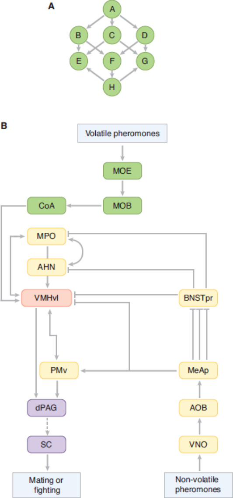
Hình 3.5: Các mô hình nhân quả. Phía trên: Sơ đồ của một dạng đồ thị rất đơn giản, một đồ thị có hướng có thể được dùng để mô hình hóa cách một kích thích A gây ra một hành vi H thông qua một số giai đoạn trung gian trong não (B–G). Phía dưới: Một ví dụ điển hình hơn từ thần kinh học. Các đường nét biểu thị các hiệu ứng giữa các vùng não khác nhau ở chuột, trung gian cho cách việc xử lý các chất mùi gây ra những hành vi cụ thể. Sơ đồ này dựa trên dữ liệu thực tế và tương đương với một giả thuyết về loại ảnh hưởng nhân quả (chẳng hạn, kích thích hay ức chế). Điều quan trọng cần lưu ý là những mô hình nhân quả như thế này hữu ích ở mọi tầng—từ tầng khái niệm rộng thường thấy trong các mô hình ô-và-mũi tên của tâm lý học, đến tầng hệ thần kinh vĩ mô thường được điều tra bằng tổn thương não ở người hay chụp cộng hưởng từ chức năng (fMRI), rồi đến tầng mạch thần kinh và tế bào có thể được phân tích ở một số mô hình động vật. Chúng dao động từ những giả thuyết mang tính suy đoán cao đến những kết nối nhân quả chi tiết được ủng hộ bởi các kết nối giải phẫu trực tiếp. Được chỉnh sửa với sự cho phép của Anderson 2016.
Bạn sẽ thấy trong danh sách này mục gốc của Shiffrin và Schneider (1977), những người đầu tiên đề xuất sơ đồ hai quá trình; đó là mục "được kiểm soát," được đối chiếu với "tự động." Với các nhà tâm lý học, thuật ngữ này đại thể chỉ những khía cạnh của xử lý mà bạn có thể kiểm soát có ý chí, có ý thức, đối lập với những khía cạnh bạn không thể. Bạn sẽ thấy một số thuộc tính khác của Hệ thống 1 khiến nó trông có vẻ hơi giống các thuộc tính của cảm xúc—thực tế, Hệ thống 1 đôi khi được liên tưởng, thậm chí đồng nhất, với cảm xúc—nhưng danh sách này không dựa trên dữ liệu đặc biệt vững chắc, và theo quan điểm của chúng tôi không nên xem nó quá nghiêm túc theo nghĩa đen.
Một cách mô tả cách các trạng thái cảm xúc thể hiện "tính tự động" là xét đến mức độ ưu tiên của chúng trong kiểm soát hành vi, một đặc tính chúng chia sẻ (nhưng ở mức thấp hơn) với các phản xạ. Nhìn chung, nếu một trạng thái cảm xúc có thể gợi ra một phản ứng hành vi, điều đó thường xảy ra mà không cần thêm bất kỳ nỗ lực nào từ phía bạn. Thực tế, bạn thường phải gắng sức để cảm xúc không gây ra phản ứng hành vi đó. Cần một tầng kiểm soát bổ sung để không đấm người mà bạn đang giận, không bỏ chạy khỏi một con vật đáng sợ, và không bị nghẹn khi đưa một con nhện vào miệng. Vậy nên, rõ ràng có thể có sự cạnh tranh giữa các hệ thống giành quyền kiểm soát hành vi trong những ví dụ này.
Tuy nhiên, sự cạnh tranh dường như giữa một cảm xúc chiếm ưu thế và sự kiểm soát có ý chí tốn công sức không nhất thiết phải phát sinh từ sự cạnh tranh giữa hai hệ thống riêng biệt trong não, như hình 3.6 gợi ý. Trở lại ví dụ về các mô hình khuếch tán–trôi dạt của chúng ta (hình 3.4), có thể nắm bắt sự cạnh tranh dường như đó như đang diễn ra trong một quá trình duy nhất—một quá trình tích lũy tín hiệu từ hai nguồn. Một nguồn có thể tương ứng với tín hiệu "do cảm xúc thúc đẩy," trong khi nguồn kia có thể tương ứng với tín hiệu "kiểm soát có ý chí." Sự chính thức hóa toán học của một mô hình khuếch tán–trôi dạt có thể chứa cả hai như những tín hiệu dẫn dắt
quá trình ra quyết định, chỉ là theo những hướng ngược nhau. Thực tế, cách tiếp cận như vậy đã được áp dụng để mô hình hóa các quyết định của con người được thúc đẩy bởi cả quá trình cảm xúc lẫn quá trình kiểm soát, chẳng hạn như các quyết định vị tha, trong đó mức độ quan trọng ta gán cho cảm giác của mình đối với một người khác có ảnh hưởng đến quyết định cuối cùng là hành xử vị tha hay ích kỷ (Hutcherson, Bushong, và Rangel 2015). Có một mối liên hệ chặt chẽ giữa việc ra quyết định và một số thuộc tính của cảm xúc (đáng chú ý là sự bền bỉ, sự điều phối toàn cục và tính tự động; xem hộp 3.3).

Hình 3.6: Các lý thuyết hai quá trình về nhận thức. Có nhiều sơ đồ như vậy, nhưng chúng có xu hướng trông giống nhau, và có xu hướng xếp cảm xúc vào "Hệ thống 1." Ý tưởng cơ bản là hai hệ thống giành quyền kiểm soát tư duy và hành vi, và mỗi hệ thống có thể phát huy tác động tùy theo hoàn cảnh. Dù đây là một ý tưởng hấp dẫn, bằng chứng cho thấy tất cả những thuộc tính này thực sự đi cùng nhau, hay thuộc về một "hệ thống" nào đó, lại không được ủng hộ vững chắc. Dù sao, cảm xúc và tính tự động có xu hướng cùng xuất hiện trong nhiều nghiên cứu. Có thể nhiều mục trong Hệ thống 1 đã tiến hóa trước những mục trong Hệ thống 2 (Bach và Dayan 2017). Nếu đúng vậy, và nếu Hệ thống 1 tương ứng với hoặc bao gồm các hệ thống cảm xúc, điều đó sẽ ủng hộ ý tưởng rằng các trạng thái cảm xúc có nguồn gốc tiến hóa rất cổ xưa và phổ biến khắp cây phát sinh loài động vật.
Thuộc tính tự động của cảm xúc có liên quan đến những khái niệm cũ hơn trong khoa học nhận thức, vốn xem cảm xúc hoạt động như những cơ chế "ngắt" khi cần ưu tiên hóa các phản ứng đối với một tình huống cụ thể.
Để đưa ra một ví dụ, nhà đoạt giải Nobel Herbert Simon đã viết,
Nếu sinh vật muốn sống sót, một số mục tiêu nhất định phải được hoàn thành vào những thời điểm quy định nhất định … phải dự liệu được một hệ thống ngắt … mọi bằng chứng đều chỉ về mối liên hệ chặt chẽ giữa hoạt động của hệ thống ngắt và phần lớn thứ thường được gọi là hành vi cảm xúc. Hơn nữa, kích thích ngắt có cả một dải hiệu ứng, bao gồm (a) làm gián đoạn các mục tiêu đang diễn ra trong hệ thần kinh trung ương và thay thế bằng những mục tiêu mới, sinh ra, trong số những điều khác, hành vi cảm xúc, (b) hưng phấn hệ thần kinh tự chủ, (c) tạo ra các cảm giác cảm xúc. (Simon 1967)
Điều quan trọng là lưu ý rằng nhiều ví dụ về sự kiểm soát cảm xúc thường liên quan đến người lớn. Ở trẻ em, sự kiểm soát này kém rõ rệt hơn, và có thể không có sự tương ứng rõ ràng ở động vật, nơi cảm xúc thường dường như hoàn toàn chi phối hành vi. Từ góc nhìn này, lập luận rằng cảm xúc là độc nhất ở con người dường như hoàn toàn ngược lại; nếu có gì, thì động vật lại là những sinh vật "cảm xúc" hơn cả con người. Sự cân nhắc có ý thức và sự điều hòa cảm xúc—năng lực kiểm soát có ý chí trải nghiệm và/hoặc biểu hiện của cảm xúc—có thể là tương đối riêng có ở người trưởng thành. Điều hòa cảm xúc là một chủ đề lớn trong tâm lý học và thần kinh học về cảm xúc, một phần vì khó khăn trong điều hòa cảm xúc là một khía cạnh quan trọng của bệnh lý tâm thần (Ochsner và Gross 2005). Một hướng nghiên cứu rất thú vị có thể xem xét những tương đương có thể có của sự điều hòa cảm xúc ở động vật—chẳng hạn như trường hợp một con chó được huấn luyện không bỏ chạy khỏi một kích thích mà nó sợ. Điều này khó đạt được hơn rất, rất nhiều ở động vật không phải người, và kiểu kiểm soát cảm xúc trong những trường hợp này có thể về cơ bản khác với sự kiểm soát có ý chí mang tính siêu nhận thức hơn ở con người. Hộp 3.4 trình bày một sơ đồ để suy nghĩ về sự điều hòa cảm xúc ở người, dựa trên công trình của nhà tâm lý học James Gross.
Tính tự động cũng chiếm ưu thế hơn khi chúng ta lùi lại trong sự phát triển của con người. Người lớn có sự kiểm soát đáng kể, còn trẻ em và trẻ sơ sinh thì không. Phát hiện này cũng đã định hướng cho một khối lượng lớn nghiên cứu thần kinh học, vì chúng ta biết những phần nào của não thay đổi nhiều nhất trong quá trình phát triển.
Một vùng được gọi là vỏ não trước trán, ở vị trí rất trước của não, phát triển muộn nhất—và là một trong những vùng chính thực hiện sự kiểm soát đối với cảm xúc.
Hộp 3.3. Cảm Xúc Và Việc Ra Quyết Định.
Cả các nghiên cứu hành vi lẫn sinh học thần kinh về việc ra quyết định gần đây đều được soi sáng bởi các mô hình toán học mô tả cách sinh vật đáp ứng với các kích thích nhằm đạt được những kết quả thích nghi. Lĩnh vực này, bao gồm kinh tế học thần kinh, thần kinh học quyết định, và rộng hơn là khoa học nhận thức, đưa ra những lập luận giống đến kinh ngạc với những gì chúng tôi đã trình bày cho đến nay trong cuốn sách này.
Lập luận cơ bản diễn ra như sau: thứ nhất, những hành động tối ưu về mặt toán học nhìn chung là không thể để sinh vật đạt được—phép tính cần thiết trở nên quá khó đối với bất kỳ tình huống thực tế nào. Thứ hai, tuy nhiên, có những phỏng đoán kinh nghiệm gần đúng có thể áp dụng cho những kiểu thách thức môi trường đặc biệt, lặp đi lặp lại. Thứ ba, các gói phỏng đoán kinh nghiệm thích nghi này, theo nhiều cách tương tự như các trạng thái cảm xúc, giải quyết các bài toán ra quyết định bằng một số cơ chế, từ những phản ứng Pavlov đơn giản đến các dạng kiểm soát công cụ dựa trên thói quen và dựa trên mục tiêu. Từ góc nhìn của khung ra quyết định tính toán này, các cảm xúc đã được gọi là "các thuật toán kiểm soát để sinh tồn" (Bach và Dayan 2017). Đáng chú ý, khung này đề xuất rằng có những hạng mục cảm xúc cụ thể, phù hợp để đối phó với những thách thức môi trường cụ thể (ví dụ, sợ hãi, ghê tởm, giận dữ, v.v.—liên quan đến khái niệm tính đặc thù miền mà chúng ta đã thảo luận trước đó), và cũng rằng có các tham số liên tục trong những trạng thái này (tương tự như nhiều thuộc tính của cảm xúc mà chúng tôi liệt kê trong hình 3.2).
Ảnh hưởng của các trạng thái cảm xúc đối với việc ra quyết định đã được nghiên cứu trong nhiều bối cảnh. Hầu hết các thí nghiệm gây ra những trạng thái giống tâm trạng hơn—những trạng thái kéo dài tương đối và có tính tích cực–tiêu cực, có thể thiên lệch việc ra quyết định trong một khoảng thời gian. Chẳng hạn, con người thể hiện
những thiên lệch cụ thể trong loại rủi ro mà họ sẵn sàng chấp nhận trong lựa chọn của mình, và những thiên lệch này bị ảnh hưởng bởi tâm trạng của họ. Một số người bi quan hơn, một số lạc quan hơn, và những kỳ vọng thiên lệch về kết quả của các lựa chọn họ đưa ra sẽ dẫn dắt quyết định họ đưa ra (Sharot 2011). Cảm xúc cũng làm thiên lệch việc ra quyết định ở động vật. Giống như con người, nhiều loài có vú cho thấy những thay đổi kéo dài trong kiểu lựa chọn mạo hiểm mà chúng đưa ra, tùy vào việc chúng có gặp phải kích thích gây ra trạng thái tính tích cực–tiêu cực âm hay dương hay không. Thậm chí có báo cáo rằng ong cũng có dạng thiên lệch bi quan trong quyết định của mình (xem chương 7). Trong nghiên cứu đó (Bateson et al. 2011), các nhà nghiên cứu lắc những con ong để gây ra một trạng thái cảm xúc tính tích cực–tiêu cực âm, giống như lo âu. Sau đó họ kiểm tra cách những con ong tiếp cận các lựa chọn mơ hồ và nhận thấy rằng những con ong bị kích động cư xử như thể chúng kỳ vọng khả năng kết quả tiêu cực cao hơn—tương tự như "sự bi quan" ở con người.
Hộp 3.4. Điều Hòa Cảm Xúc.
Điều hòa cảm xúc đề cập đến năng lực có một mức độ kiểm soát có ý chí nhất định đối với trạng thái cảm xúc của bạn, trải nghiệm có ý thức về trạng thái đó, và sự biểu hiện hành vi và tự chủ của trạng thái đó. Như đã được gợi ý bởi phạm vi rộng lớn các hiện tượng mà điều hòa cảm xúc có thể phát huy tác động, sự điều hòa thường được chia nhỏ theo diễn biến thời gian của một cảm xúc. Có thể có sự điều hòa ngay tại thời điểm cảm xúc được khởi phát, chẳng hạn bằng cách chọn những hoàn cảnh và môi trường sẽ điều chỉnh việc một cảm xúc nhất định có được gây ra hay không và bằng cách nào. Chẳng hạn, nếu biết mình sợ nói trước đám đông, tôi có thể tránh những tình huống phải thuyết trình trước công chúng. Đó sẽ là một cách rất gián tiếp, mang tính chiến lược, để điều hòa cảm xúc của mình. Ở mức nội tại hơn, khi đối diện với một tình huống hay kích thích có thể gây ra cảm xúc, chúng ta thường có khả năng diễn giải lại tình huống sao cho ý nghĩa cảm xúc của nó thay đổi. Chúng ta thường làm điều này bằng cách
tìm ra những giải thích thay thế cho các cảm xúc xã hội tiêu cực—chẳng hạn, chúng ta có thể buồn hay thấy tội lỗi vì trượt một kỳ thi, nhưng lại thuyết phục mình rằng mình đã cố gắng hết sức và bài thi chỉ là quá khó. Mức điều hòa cảm xúc này được gọi là "đánh giá lại," vì nó là một sự đánh giá lại một tình huống thường phức tạp dựa trên ý nghĩa của tình huống đó đối với chúng ta và mục tiêu cá nhân của chúng ta—bức tranh về sự khởi phát cảm xúc mà các lý thuyết thẩm định tâm lý đã ủng hộ từ lâu. Chúng ta sẽ nói thêm đôi chút về lý thuyết thẩm định ở chương 10.
Cuối cùng là nỗ lực kiểm soát chính trải nghiệm hay biểu hiện của trạng thái cảm xúc—tức là cố gắng cảm thấy bớt buồn, bớt giận hay bớt sợ. Đây là giai đoạn khó nhất để cố kiểm soát cảm xúc, vì chúng đã đang diễn ra. Thường thì, nếu bạn cố gắng thật nhiều để không cảm thấy giận trong khi thực tế bạn đã giận, bạn chỉ càng giận hơn. Việc cố kìm nén các trải nghiệm và hành vi cảm xúc ở giai đoạn điều hòa này cũng rất mệt. Năng lực điều hòa cảm xúc, ở tất cả những mức khác nhau này, được cho là có sự tham gia nổi bật của vỏ não trước trán, một vùng não ở người chỉ chín muộn tương đối muộn trong tuổi vị thành niên.

Hình 3.7: Điều hòa cảm xúc như một năng lực siêu nhận thức. Có thể hình dung rộng rãi các cảm xúc như minh họa ở góc trên bên trái: chúng liên quan đến một chu kỳ giữa việc nhận biết một tình huống trong thế giới (P), gán cho nó một giá trị (V), rồi thúc đẩy một hành động (A) tác động ngược trở lại thế giới (W) nhằm tối ưu hóa cách một con vật hay một con người tương tác với môi trường của mình. Tuy nhiên, nếu nhìn theo góc rộng hơn, thế giới có thể bao gồm cả chính chúng ta và các phản ứng cảm xúc của chúng ta bên trong nó. Từ góc nhìn rộng hơn đó (góc dưới bên trái), có một chu kỳ khác, lớn hơn, có thể tác động lên chu kỳ nhỏ hơn: chúng ta có thể nhận ra rằng cơn giận của mình đối với cấp trên không mang lại kết quả tốt, có thể gán cho sự thấu thị ấy một giá trị để hành động, và rồi hành động siêu nhận thức có thể điều hòa cơn giận của chúng ta. Ngược lại, sự điều hòa này có thể tập trung vào nhiều quá trình trong chu kỳ (hộp bên phải): nó có thể bao gồm việc chuyển hướng chú ý để thay đổi nhận thức, có thể bao gồm đánh giá lại để thay đổi sự định giá những gì ta nhận biết, có thể kìm nén các hành vi cảm xúc của chúng ta, và có thể lựa chọn một cách chiến lược những tình huống mà ta đặt mình vào để giúp ích cho cảm xúc của mình. Được chỉnh sửa với sự cho phép của Gross 2015.
Một câu hỏi gây bối rối về điều hòa cảm xúc là tại sao nó lại cần thiết ngay từ đầu. Lẽ nào cảm xúc không phải là thích nghi sao? Chúng đã tiến hóa không phải để đối phó với những vấn đề chúng ta đối mặt trong môi trường sao? Phải,
chúng đã vậy—nhưng hãy nhớ rằng chúng ta đã đặt cảm xúc ở vị trí trung gian giữa các phản xạ cứng nhắc và sự linh hoạt hoàn toàn của hành động có ý chí. Ở một mức độ nào đó, cảm xúc có tính đặc thù miền và vì thế không thể xét đến một số loại thông tin có thể liên quan khi được xem xét trong bối cảnh rộng hơn (hộp 3.1). Cảm xúc có thể đáp ứng với một tình huống khuôn mẫu đối mặt với chúng ta, nhưng những cân nhắc rộng hơn và suy nghĩ về hậu quả tương lai có thể gợi ý rằng một hướng hành động khác sẽ tốt hơn. Những cân nhắc rộng như vậy đòi hỏi một mức độ kiểm soát nào đó dựa trên các quá trình thấu thị và nhìn nhận góc độ linh hoạt. Những năng lực này thường được gọi là "siêu nhận thức" để chỉ thực tế là chúng hoạt động trên tầng cao hơn, và có thể ở một mức độ nào đó kiểm soát và điều hòa, các quá trình nhận thức khác, kể cả cảm xúc.
Nhà nghiên cứu cảm xúc James Gross tại Đại học Stanford đã điều tra sự điều hòa cảm xúc với mức độ chi tiết lớn nhất và đã đưa ra một sơ đồ về cách suy nghĩ về tầng kiểm soát siêu nhận thức mà sự điều hòa cảm xúc có thể thể hiện. Hình đối diện minh họa các ý tưởng của ông.
Giao Tiếp Xã Hội
Có một hệ quả rất quan trọng của tính tự động ở các hành vi cảm xúc. Vì chúng khó kiểm soát, chúng có thể đóng vai trò là những tín hiệu xã hội chân thực về một trạng thái cảm xúc. Bạn có thể nhận ra, và các loài động vật khác cũng có thể nhận ra, đôi nét về trạng thái cảm xúc của một con mèo đang rít lên và cong lưng, một con chó đang gầm gừ, hay một người đang khóc. Tất nhiên, chúng ta có thể suy đoán sai về trạng thái cảm xúc theo cách này, và hầu hết các loài động vật khác có lẽ hoàn toàn không suy luận rõ ràng về một trạng thái cảm xúc mà chỉ đơn giản phát hiện các liên tưởng để dự đoán hành vi. Dù sao, ý chính là các hành vi cảm xúc rất dễ được tận dụng cho giao tiếp xã hội. Vì hành vi rít lên ban đầu báo hiệu khả năng cao bị tấn công nếu lại gần, con mèo đã tiến hóa hành vi rít lên cũng để cảnh báo các loài động vật khác tránh xa, như một tín hiệu giao tiếp xã hội mang tính dự đoán.
Trong một ngữ cảnh nhất định, và với kinh nghiệm trước đó, chúng ta có thể suy ra các trạng thái cảm xúc ở động vật từ hành vi cảm xúc của chúng—một dạng giao tiếp xã hội mà chúng ta thực hiện tự động suốt thời gian (hình
3.8). Nhưng chúng ta có đúng về các cảm xúc mà mình suy ra không? Có sự khác biệt giữa cách các loài động vật khác nhận biết các hành vi cảm xúc trong chính loài chúng, cách người bình thường gán cảm xúc cho động vật dựa trên hành vi của chúng, và cách các nhà khoa học gán cảm xúc cho động vật và con người từ hành vi quan sát được. Trong trường hợp đầu tiên, chắc chắn có các cơ chế nhận thức phát hiện những hành vi cụ thể đã tiến hóa thành tín hiệu giao tiếp—động vật chiến đấu, giao phối và chơi đùa một phần vì chúng có thể giao tiếp theo cách đó. Tuy nhiên, chúng không gán cảm xúc cho nhau, vì ngay từ đầu chúng không có khái niệm về cảm xúc.
Trong trường hợp thứ hai, có một số đồng thuận về cách người bình thường diễn giải các hành vi cảm xúc của động vật, nhưng rất ít bằng chứng cho rằng họ nhìn chung là đúng. Với một vài loài, đặc biệt là động vật có vú, có đủ sự tương đồng về hành vi cảm xúc, và đủ kinh nghiệm quan sát chúng, để chúng ta thực sự có thể giao tiếp với những con vật đó qua các hành vi cảm xúc. Những người nuôi thú cưng biết điều này rất rõ. Tuy nhiên, chúng ta gặp khó khăn trong việc ánh xạ các hành vi ta quan sát được vào những từ dùng cho các hạng mục cảm xúc. Chẳng hạn, mèo của chúng ta thực hiện một vài kiểu hành vi khác nhau, tất cả đều liên quan đến một trạng thái cảm xúc tính tích cực–tiêu cực dương: chúng kêu gừ gừ, chúng đạp chân, chúng lăn lưng, và chúng rung đuôi. Tuy nhiên, những hành vi khác nhau này được biểu hiện trong những hoàn cảnh chính xác khác nhau, và thật khó biết nên dán nhãn gì cho cảm xúc đó. Một số hành vi dường như liên quan đến một dạng mong đợi vui vẻ, một số đến sự gắn kết xã hội và ôm ấp, một số đến thức ăn, một số đến trò chơi. Mọi người có thể suy ra khá đáng tin cậy một số thuộc tính cảm xúc thô qua nhiều loài khác nhau. Chẳng hạn, chiều của sự hưng phấn (vốn không riêng gì cảm xúc) dường như được người ta gán từ tiếng kêu của nhiều loài động vật, đa dạng như voi, chim và cá sấu (Filippi et al. 2017).
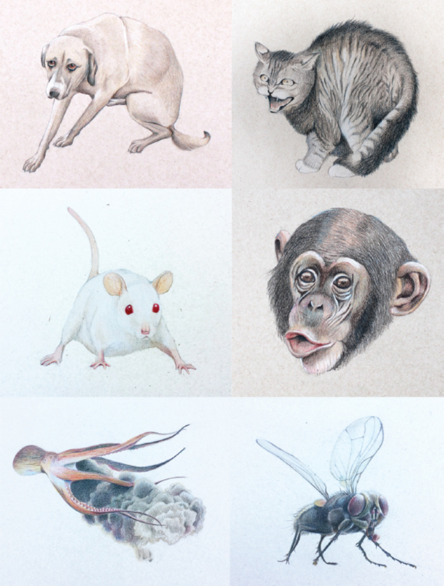
Hình 3.8: Biểu hiện của cảm xúc ở động vật. Bạn nhận ra được bao nhiêu trong số này? Bảng trên: Có sự đồng thuận khá cao trong việc diễn giải biểu cảm của những loài động vật mà chúng ta đã tương tác nhiều để học được các tín hiệu giao tiếp xã hội của chúng (và để chính chúng học được nên biểu hiện cái nào với chúng ta). Một con chó đang co ro trong một trạng thái tính tích cực–tiêu cực âm, có thể là sợ hãi hay phục tùng, và một con mèo đang rít lên trong một trạng thái tính tích cực–tiêu cực âm, có thể là sợ hãi hay hung hăng. Bảng giữa: Nhiều hành vi khác không thể diễn giải nếu thiếu thêm thông tin ngữ cảnh hoặc huấn luyện về tập tính học (đông cứng vì sợ hãi ở chuột, biểu cảm hú lên mang tính gắn kết ở tinh tinh). Tuy nhiên, tất cả những biểu cảm này đều có thể được định lượng đáng tin cậy bằng nghiên cứu cẩn thận, dù chúng ta cần thận trọng khi gắn tên cho chúng (Parr và Waller 2006). Bảng dưới: các biểu cảm cảm xúc ở động vật không xương sống. Dù thường là những hành vi rất xa lạ, chúng ta vẫn có thể học cách suy ra các hạng mục cảm xúc thô ngay từ hành vi của những con vật này (một con bạch tuộc bỏ chạy vì sợ hãi; một con ruồi đực thể hiện đe dọa bằng cánh trong sự hung hăng nhắm vào một con ruồi đực khác; xem chương 7).
Trường hợp thứ ba, nhà khoa học cố hiểu các hành vi của động vật, tìm cách phân biệt rõ giữa những hành vi này bằng cách đưa vào các mô tả ngữ cảnh phong phú hơn nhiều. Biểu cảm khuôn mặt, tư thế cơ thể, ngữ cảnh, và động thái tổng thể của tình huống và của hành vi đều cần được tính đến. Các nhà tập tính học từ lâu đã cố làm những mô tả chi tiết như vậy về hành vi động vật, và nhìn chung rất thận trọng khi gán cho chúng những nhãn như các từ chúng ta thường dùng cho cảm xúc. Nhiều hành vi phản ánh biểu hiện của các trạng thái cảm xúc, nhưng hiện chúng ta thiếu những nhãn phù hợp, trừ một vài trường hợp thô sơ. Vì thế, chắc chắn là có thể suy ra đôi điều về một trạng thái cảm xúc từ hành vi quan sát được—nhưng chúng ta cần cẩn thận đừng nhân cách hóa vào các hạng mục cảm xúc của con người (các khung chiều có thể tốt hơn về một số mặt), và chúng ta cần diễn giải hành vi trong tình huống và ngữ cảnh mà nó xảy ra, chứ không phải cô lập nó.
Trở nên khó khăn là tách riêng vai trò thích nghi tổ tiên của một hành vi cảm xúc khỏi vai trò của nó như một tín hiệu giao tiếp xã hội, và không nơi nào điều này gây vấn đề hơn là biểu cảm khuôn mặt ở người. Hữu ích là quay lại ví dụ về đồng hồ chúng ta đã thảo luận ở chương 2, khi chúng tôi giới thiệu ý tưởng rằng về căn bản cảm xúc là các trạng thái chức năng. Có những chức năng tổ tiên của cảm xúc, có lẽ được phản ánh rõ nhất ở những sinh vật đơn giản hơn, vốn cho thấy một số khối xây dựng của cảm xúc nhưng chưa có toàn bộ các thuộc tính trong hình 3.2. Theo thời gian, và khi các loài khác nhau chiếm giữ những ổ sinh thái khác nhau, các khối xây dựng bổ sung đã tiến hóa. Bức tranh đơn giản hóa này về sự thay đổi tiến hóa giả định rằng các chức năng cũ được giữ lại và những chức năng mới chỉ đơn giản được thêm vào theo thời gian. Chắc chắn, đó là một điều xảy ra trong tiến hóa.
Nhưng một cơ chế rất quan trọng khác của sự thay đổi tiến hóa là tận dụng một chức năng tổ tiên đã có vào một chức năng mới. Đôi khi điều đó được thực hiện bằng cách chỉ đơn giản thay thế chức năng ban đầu bằng một chức năng mới. Đôi khi nó được thực hiện bằng cách nhân bản chức năng ban đầu, để cả cái tổ tiên và
một cái mới được tận dụng cùng có thể được dùng. Cơ chế này được biết là xảy ra ở tầng gen, chẳng hạn; sự nhân bản gen làm cho một gen được nhân bản có thể đột biến theo hướng một chức năng mới, trong khi gen gốc (vốn có thể là thiết yếu) vẫn có thể thực hiện chức năng ban đầu của nó.
Biểu cảm khuôn mặt có lẽ là sự pha trộn của những khả năng này. Sự kiểm soát thần kinh đối với cơ mặt rất phức tạp, một phần có ý chí và một phần tự động. Chẳng hạn, dễ kiểm soát nửa dưới của khuôn mặt bằng ý chí hơn, nhưng khó kiểm soát nửa trên. Điều này có thể thấy khi người ta giả vờ cười: một nụ cười gọi là Duchenne là nụ cười thật sự, liên quan đến cả cơ mắt lẫn cơ miệng. Trong nụ cười không phải Duchenne, người ta cười bằng nửa dưới của khuôn mặt (miệng), nhưng mắt họ không thực sự khớp và không thể hiện cùng biểu cảm như với một nụ cười thật. Vậy nên, chúng ta có một số kiểm soát có ý chí đối với việc tạo ra nụ cười trên mặt, nhưng cũng có một số kiểm soát tự động, và cái sau được tạo ra bởi một hỗn hợp phức tạp các vùng não chiếu đến cơ mặt của chúng ta (Müri 2015). Với sự kiểm soát thần kinh hỗn hợp và phức tạp đối với khuôn mặt, điều này có thể cũng phản ánh một tập hợp chức năng hỗn hợp và phức tạp mà biểu cảm khuôn mặt phục vụ. Chúng trải dài từ các chức năng tổ tiên liên quan đến những trạng thái cảm xúc cơ bản (ví dụ, lộ răng nếu bạn cần cắn ai đó để tự vệ), đến các chức năng xã hội tương đối tự động và chân thật (ví dụ, lộ răng để báo hiệu rằng ai đó tốt hơn hết nên cẩn thận, nếu không họ có thể bị cắn), đến các chức năng xã hội mang tính chiến lược hay lừa dối ở một số loài (ví dụ, lộ răng nếu bạn là một diễn viên, hay chỉ để dọa ai đó như một trò đùa). Nếu điều bạn đang quan sát chỉ là một biểu cảm khuôn mặt, thì bản thân nó vẫn mơ hồ về việc loại trạng thái nào đã gây ra nó.
Dù có sự mơ hồ cố hữu đó, biểu cảm khuôn mặt ở người đã được dùng làm kích thích cảm xúc phổ biến nhất trong tất cả nghiên cứu tâm lý học về con người, và có lẽ cả trong tất cả nghiên cứu thần kinh học về cảm xúc ở người. Trong các thí nghiệm điển hình, người tham gia được cho xem một biểu cảm khuôn mặt được người thí nghiệm dán nhãn là sợ hãi, và phản ứng bằng lời hay sự phân loại cảm xúc của họ được ghi lại, hoặc phản ứng trong não họ được đo bằng chụp cộng hưởng từ chức năng (fMRI). Không cần nói cũng biết, người ta rất không rõ những phản ứng não như vậy có ý nghĩa gì, ít nhất là khi thiếu rất nhiều thông tin bổ sung. Việc biết cái mà chúng ta gọi bằng lời là "nhận diện cảm xúc" từ biểu cảm khuôn mặt có ý nghĩa gì cũng là một vấn đề. Có thể bạn nghĩ người đó trông có vẻ sợ, nhưng tôi
lại nghĩ cô ấy chỉ đang diễn và thấy tự mãn. Ai đúng? Trong đời thường, một nụ cười có thể có nghĩa là người đó vui vẻ, nhưng thường thì nó có nghĩa là họ lo âu, phục tùng, hoặc một loạt trạng thái khác có liên quan xã hội mà nụ cười được dùng làm tín hiệu, thậm chí thường là một tín hiệu mang tính chiến lược và thao túng (Rychlowska et al. 2017). Có những khác biệt văn hóa về ý nghĩa của các biểu cảm khuôn mặt khác nhau, và những quy tắc xã hội phức tạp về thời điểm nào thì phù hợp để thể hiện những biểu cảm đó. Tùy theo tình huống, mức độ điều hòa này khiến việc liên kết một biểu cảm khuôn mặt ở người với một cảm xúc trở nên phức tạp, một chủ đề gây tranh luận đáng kể trong tâm lý học (hộp 3.5).
Hộp 3.5. Biểu Hiện Và Nhận Diện Biểu Cảm Khuôn Mặt.
Một trong những khía cạnh của cảm xúc được nghiên cứu sâu sát nhất, đặc biệt trong các nghiên cứu tâm lý về cảm xúc con người, là biểu cảm khuôn mặt. Các nghiên cứu tiên phong của Paul Ekman và các cộng sự trong những năm 1960 và 1970 gợi ý rằng một số biểu cảm khuôn mặt được nhận diện là thể hiện cùng một cảm xúc ở mọi nền văn hóa con người (Ekman 1972). Ekman đã đi đến New Guinea và tiến hành các nghiên cứu trong đó người dân bộ lạc được cho xem ảnh về các biểu cảm khuôn mặt, và người ta dò hỏi hạng mục cảm xúc mà họ liên tưởng với những biểu cảm đó. Điều này dẫn đến ý tưởng rằng có biểu cảm của một tập con cảm xúc, gọi là các cảm xúc căn bản, được thể hiện và nhận diện ở mọi nền văn hóa, được giả định là dựa trên các mô-đun não bẩm sinh để biểu hiện chúng. Danh sách các cảm xúc căn bản của Ekman gồm hạnh phúc, ngạc nhiên, sợ hãi, giận dữ, ghê tởm và buồn bã, dù đôi khi khinh miệt cũng được đưa vào và ngạc nhiên đôi khi bị bỏ ra. Có một số ủng hộ cho cái mà Charles Darwin gọi là "những thói quen liên tưởng hữu ích," các chức năng tổ tiên mà biểu cảm khuôn mặt có thể đã phục vụ. Chẳng hạn, đôi mắt mở to và lỗ mũi giãn ra của biểu cảm sợ hãi giúp mở rộng trường thị giác và tối đa hóa việc phát hiện mùi, những chức năng nhận thức đã hỗ trợ phát hiện các mối đe dọa tiềm tàng (Susskind et al. 2008). Tuy nhiên, các nghiên cứu gần đây đã chỉ ra rằng biểu cảm khuôn mặt là những tín hiệu xã hội tinh tế và phức tạp hơn nhiều
so với việc chỉ là những "biểu hiện" của các cảm xúc căn bản (Fernandez-Dols và Russell 2017).
Năng lực nhận diện cảm xúc từ biểu cảm khuôn mặt, cũng như năng lực nhận biết khuôn mặt nói chung một cách bình thường, đòi hỏi kinh nghiệm trong quá trình phát triển. Những trải nghiệm cảm xúc bất thường, chẳng hạn như của những trẻ em bị lạm dụng, dẫn đến năng lực nhận diện cảm xúc từ biểu cảm khuôn mặt bất thường, đặc biệt là giận dữ (Pollack và Kistler 2002). Liên quan đến điều này, các nghiên cứu liên văn hóa ở người cho thấy người từ những nền văn hóa khác nhau có thể phân loại biểu cảm khuôn mặt vào các khái niệm khác nhau, và họ có thể có những từ khác nhau cho các khái niệm đó (Gendron et al. 2014). Nhìn chung, việc đánh giá liệu một biểu cảm khuôn mặt (hay bất kỳ biểu hiện cảm xúc nào khác) có được nhận diện "chính xác," hay thậm chí chỉ là theo sự đồng thuận, phụ thuộc rất nhiều vào nhiệm vụ; chẳng hạn, sự đồng thuận thấp hơn nhiều khi có thể đưa ra câu trả lời tự do so với khi một tập nhỏ nhãn đối chiếu được cung cấp. Trong việc quyết định cường độ nào của biểu cảm khuôn mặt được tính là biểu hiện của một cảm xúc nhất định, não cần thực hiện hoàn thiện mẫu và tách mẫu phức tạp, rồi đặt một ngưỡng tách các trường hợp "đúng" (dương tính thật) khỏi các trường hợp "sai" (âm tính thật). Về cơ bản, đây là một bài toán ra quyết định, có thể được chính thức hóa bằng khung của lý thuyết phát hiện tín hiệu (Lynn và Feldman Barrett 2014). Những người khác nhau, và những nhiệm vụ khác nhau, có thể cho ra các tiêu chuẩn khác nhau về việc đặt ranh giới tách một cảm xúc khỏi cảm xúc khác. Độ chính xác trong việc phát hiện hay phân biệt một cảm xúc từ biểu cảm khuôn mặt phụ thuộc vào thiên lệch và độ nhạy của mỗi người. Chẳng hạn, trong thuật ngữ của lý thuyết phát hiện tín hiệu, độ nhạy cao và thiên lệch thấp sẽ dẫn đến việc phát hiện tất cả các biểu cảm đe dọa có thể có, nhưng cũng phát hiện nhầm sự đe dọa trong những biểu cảm khuôn mặt mà thực tế không có đe dọa (dương tính giả; xem hộp 2.2).
Khuôn mặt người có thể thể hiện các biểu cảm thông qua mười bảy cặp cơ mặt mà chúng ta chia sẻ với các loài vượn lớn (nhưng khỉ có ít hơn), và hoạt động của những cơ này, cũng như đóng góp của chúng vào một biểu cảm cụ thể, có thể được định lượng. Hệ Mã Hóa Ảnh Hưởng Khuôn Mặt (Facial Affect Coding System—FACS) tồn tại cho con người, tinh tinh và khỉ macaque, và cho phép mô tả định lượng các biểu cảm khuôn mặt mà không nhất thiết phải gán cho chúng bất kỳ trạng thái cảm xúc nào (điều mà, như đã
lưu ý trước đó, đặc thù theo văn hóa và ngữ cảnh ở người, và phần lớn là chưa biết ở các loài động vật khác). Cũng có một số định lượng đối với các biểu hiện khác của cảm xúc, chẳng hạn như qua tư thế hay giọng nói (ví dụ, giọng nói có thể được phân tích phổ và nhiều thuộc tính có thể được định lượng về mặt vật lý, mà không cần nhắc đến các hạng mục cảm xúc).
Chính xác thì các cảm xúc được biểu hiện bằng khuôn mặt được biểu diễn như thế nào trong não của người quan sát là một vấn đề phức tạp (Schirmer và Adolphs 2017). Dường như có các biểu diễn cho những hạng mục cảm xúc rời rạc, cho các chiều liên tục, và thậm chí cho các đơn vị hành động riêng lẻ mô tả các cơ trên khuôn mặt. Cũng có các biểu diễn thần kinh về những suy luận xã hội chung chung về trạng thái tâm trí của người khác, và tất cả các loại biểu diễn đa dạng này đều được huy động khi chúng ta nhìn vào một biểu cảm khuôn mặt mang tính cảm xúc. Điều này có nghĩa là não có thể làm rất nhiều việc khác nhau khi nhìn thấy một biểu cảm khuôn mặt, tất cả tùy thuộc vào mục tiêu và nhiệm vụ trước mắt. Năng lực suy luận về trạng thái bên trong của người khác thường được gọi là "thuyết tâm trí" và huy động một mạng lưới các vùng não bao gồm điểm nối thái dương-đỉnh, vỏ não trước trán trung-thất lưng, và hồi đỉnh trung, cùng các vùng vỏ não khác. Hệ thần kinh này, đặc biệt là vỏ não trước trán trung-thất lưng, không chỉ được kích hoạt khi chúng ta gán cảm xúc cho người khác từ việc nhìn khuôn mặt họ, mà còn khi chúng ta nhìn khuôn mặt động vật để suy ra chúng có thể cảm thấy thế nào (xem chương 9).
Dù cảm xúc thường thực sự gây ra những thay đổi trong biểu cảm khuôn mặt, bản thân biểu cảm đó nhìn chung là chưa đủ để xác định cảm xúc cụ thể. Kết luận này tương tự như kết luận chúng ta đã rút ra trong hộp 2.1: cảm xúc cũng không thể được suy ra duy nhất từ các thước đo tâm sinh lý trong cơ thể. Dù vậy, thái độ và hành vi xã hội của chúng ta đối với người khác bị ảnh hưởng mạnh mẽ bởi những phán đoán chúng ta đưa ra về khuôn mặt họ. Hơn nữa, chúng ta thường cảm thấy rất tự tin rằng mình có thể đánh giá một người chỉ bằng nhìn khuôn mặt họ. Chúng ta đã nhầm: những phán đoán của chúng ta về khuôn mặt người khác phản ánh một hỗn hợp phức tạp các thiên lệch tiến hóa và thu được, nói lên nhiều hơn về những định kiến chúng ta có hơn là về người mà chúng ta đang nhìn khuôn mặt (Todorov 2017).
Học Tập
Chúng ta đã lưu ý rằng học tập là một thuộc tính rất quan trọng của cảm xúc khi thảo luận về sự tổng quát hóa. Thực tế, nhiều thuộc tính được liệt kê trong hình 3.2 vừa là bẩm sinh vừa là học được. Cảm xúc liên quan đến các thành phần bẩm sinh chừng nào còn có những quy luật hữu ích mà hệ giác quan có thể phát hiện như đầu vào của một trạng thái cảm xúc. Vị đắng nói chung báo hiệu độc tính, cũng như một số hợp chất hóa học gây mùi hôi, vì thế tất cả những thứ này có thể đóng vai trò là kích thích không điều kiện gây ra ghê tởm (điều này không có nghĩa là bạn sinh ra đã có năng lực gây ghê tởm từ những kích thích đó—vẫn cần có sự phát triển, xem hộp 6.1). Những bóng lớn phủ đến từ phía trên thường báo hiệu có vật gì đó lớn rơi xuống bạn hoặc kẻ săn mồi đang tiến lại từ trên cao, và việc thấy hàm răng há ra báo hiệu bạn sắp bị ăn thịt; những manh mối giác quan này có thể đóng vai trò kích thích không điều kiện gây ra sợ hãi, cũng như những vòng tròn tối dần phía trên là đủ để gây sợ hãi ở chuột (nhớ lại hình 2.5). Nhìn chung, nếu có một bóng lớn dần phía trên và bạn không làm gì, điều tồi tệ sẽ xảy đến với bạn chứ không phải điều tốt. Nhìn chung, nếu một loạt răng đang tiến đến nhanh về phía bạn, bạn sẽ bị cắn hay bị ăn nếu không làm gì. Tiến hóa đã đưa những quy luật thống kê này vào các thành phần giác quan bẩm sinh của một trạng thái cảm xúc, và chúng tương ứng với cái mà trong phòng thí nghiệm chúng ta gọi là "kích thích không điều kiện" đối với một cảm xúc.
Nhưng tất nhiên, phạm vi đầu vào giác quan có thể gây ra một trạng thái cảm xúc không dừng ở đó, vì còn nhiều loại kích thích khác cũng có thể báo hiệu độc tính hay mối đe dọa, và vì thế nên gợi ra ghê tởm hay sợ hãi. Những kích thích đó cần được học biết, và vì thế cảm xúc cũng liên quan đến một lượng học tập đáng kể—một khía cạnh then chốt của sự linh hoạt của cảm xúc. Như chúng tôi đã nhắc trước đó, sự ác cảm vị giác có điều kiện có thể khiến bạn thấy ghê tởm thứ từng có vị ngon lành—đó là bia—nếu tối hôm trước bạn uống quá nhiều đến mức thấy ngán nó. Điều kiện hóa sợ hãi kiểu Pavlov là một ví dụ về học tập liên quan đến sợ hãi: bạn có thể dần sợ đủ thứ bằng cách học biết về chúng. Tuy nhiên, ngay cả ở đây cũng đã có những chuyên biệt hóa sẵn có; dễ học sợ một số kích thích hơn là số khác. Với những cảm xúc khác ngoài sợ hãi, sự học tập có thể còn hẹp hơn. Có lẽ không thể học cách ghê tởm trước một âm thanh, vì đó đơn giản không phải là kiểu kích thích có thể hợp lý mà dự báo được sự ghê tởm cơ bản.
Đó là các khía cạnh của "tính đặc thù miền" của cảm xúc, một thuật ngữ chúng ta đã thảo luận kỹ hơn trong hộp 3.1. Tính đặc thù miền đề cập đến phạm vi chức năng hạn chế của các kích thích hay hoàn cảnh gây ra một trạng thái cảm xúc. Tính đặc thù miền cũng là một đặc điểm then chốt phân biệt cảm xúc với sự cân nhắc có ý chí, vốn dường như không có bất kỳ hạn chế nào như vậy về miền của nó (bạn có thể nghĩ về bất cứ thứ gì, nhưng bạn không thể buồn hay giận về bất cứ thứ gì). Nếu cảm xúc hoàn toàn linh hoạt và chỉ có học tập tham gia, chúng ta có thể điều trị lo âu và trầm cảm ở bệnh nhân chỉ bằng cách cho họ học đúng những điều cần học—đã có những nỗ lực làm điều này ở một mức độ nhất định, nhưng độ khó để đạt được điều đó cho thấy tính linh hoạt và khả năng dẻo của cảm xúc có giới hạn.
Với các thuộc tính cảm xúc mà chúng ta đã thảo luận trong chương này, tiếp theo chúng ta có thể hỏi liệu có tìm thấy bằng chứng về sự hiện diện của chúng trong hành vi hay phản ứng thần kinh của một con vật hay một con người hay không. Tuy nhiên, để liên kết những dữ liệu đó với sự hiểu về một trạng thái cảm xúc, trước hết chúng ta cần quay lại những điểm đã nêu ở đầu chương này: làm sao chúng ta biết thước đo nào thực sự là một phần của cơ chế chịu trách nhiệm nhân quả đối với một cảm xúc, trái ngược với việc chỉ là hệ quả hay tương quan của cảm xúc đó? Làm sao chúng ta biết thước đo não nào trong số các thước đo của mình phản ánh một phần cần thiết hay đủ của cơ chế tạo ra một cảm xúc? Điều này đòi hỏi chúng ta làm rõ logic của các cuộc điều tra thần kinh học, một chủ đề chúng ta sẽ xem xét ở chương sau.
Tóm Tắt
- Chương này dựa trên ý tưởng rằng các trạng thái cảm xúc là các trạng thái được định nghĩa theo chức năng. Để thực hiện chức năng của mình, chúng cần có những đặc điểm xử lý nhất định: cái chúng làm được quyết định bởi cách chúng có thể làm điều đó.
- Chúng tôi đã đưa ra một danh sách sơ bộ các thuộc tính của cảm xúc trong hình 3.2.
- Các cảm xúc có thể được định vị trong một không gian chiều và có thể liên quan với nhau theo sự tương đồng. Một không gian chiều phổ biến để so sánh các cảm xúc là không gian hai chiều gồm sự hưng phấn và tính tích cực–tiêu cực. Tuy nhiên, hiện vẫn chưa rõ liệu "sự hưng phấn" là một thuộc tính thống nhất, hay có những loại hưng phấn khác nhau cho những loại cảm xúc khác nhau (xem chương 5).
- Tính linh hoạt và sự bền bỉ của các trạng thái cảm xúc cho phép tích hợp nhiều nguồn thông tin theo thời gian. Một mô hình thanh thoát đã nắm bắt được sự tích hợp này là mô hình khuếch tán–trôi dạt.
- Sự điều phối là một thuộc tính đòi hỏi một kiến trúc kiểm soát đặc thù. Khía cạnh này có thể được chính thức hóa bằng một mô hình thanh thoát khác: một đồ thị hay mạng toán học. Những ví dụ này làm nổi bật sức mạnh của việc xác định các thuộc tính của cảm xúc vốn rất dễ được nắm bắt trong các mô hình tính toán.
- Cảm xúc thể hiện tính tự động, vốn theo lịch sử được đặt cạnh sự kiểm soát hành vi có ý chí, nỗ lực—một sự phân cực được điển hình hóa trong các lý thuyết hai quá trình cổ điển như "Hệ thống 1" đối lập "Hệ thống 2."
- Khía cạnh giao tiếp xã hội của cảm xúc, một đặc điểm hiện diện khắp nơi trong biểu cảm khuôn mặt, khiến việc phân tích chức năng của chúng trở nên phức tạp hơn đáng kể.
- Cảm xúc liên quan đến cả khía cạnh bẩm sinh lẫn học được.
PHẦN II. Thần Kinh Học
Chương 4 — Lý Học Giải Thích Trong Thần Kinh Học
Ba chương trước đã thảo luận về việc chúng ta thực sự biết rất ít về các cảm xúc (chương 1), về cách bắt đầu nghĩ về chúng như các trạng thái chức năng (chương 2), và về những đặc tính hay đặc điểm chung của cảm xúc mà một người có thể tìm kiếm khi cố nhận diện các trường hợp cụ thể của chúng (chương 3). Để chuyển tiếp sang thần kinh học cảm xúc trong những chương tới, trước hết chúng ta cần giới thiệu một vài công cụ khái niệm—những công cụ sẽ cho phép chúng ta dịch các khái niệm và câu hỏi rộng hơn của những chương trước (được diễn đạt bằng ngôn ngữ của triết học, tâm lý học và tập tính học) thành những giả thuyết có thể kiểm chứng trong khuôn khổ của thần kinh học. Điều này cũng đòi hỏi làm rõ cách các tiếp cận khái niệm và thực nghiệm từ thần kinh học tế bào và thần kinh học hệ thống khác với những cách tiếp cận trong tâm lý học và thần kinh học nhận thức, một chủ đề chúng ta sẽ lại đề cập khi xét đến các phương pháp cụ thể do các ngành con này sử dụng (lần lượt ở các chương 5 và 8). Nhớ lại rằng ở chương 1 chúng ta đã nhấn mạnh rằng các cách tiếp cận khác nhau đối với cảm xúc không nhất thiết phải là những cuộc điều tra về các hiện tượng khác nhau, mà thay vào đó tạo thành những tập hợp từ vựng và phương pháp khác nhau được dùng để nghiên cứu cùng một hiện tượng (một điểm được thể hiện rực rỡ trong hình 1.1, ảnh chụp cộng hưởng từ của người mẹ và em bé). Trong khi các chương 1 và 2 đã đề cập đến một số khác biệt lớn hơn giữa các ngành thần kinh học và tâm lý học, giờ đây chúng ta tập trung vào chủ đề chính của cuốn sách này: thần kinh học.
Dù chúng tôi tin—và hầu hết mọi người đồng ý—rằng các cảm xúc phát sinh trong não, một cấu trúc sinh học là đề tài của thần kinh học, chủ đề này cũng thu hút những nhà điều tra từ nhiều lĩnh vực khác—tâm lý học, triết học, tâm thần học, khoa học máy tính, vật lý học và kỹ thuật—vốn thường ít có điểm chung trong cách họ điều tra các lĩnh vực nghiên cứu tương ứng của mình. Với sự pha trộn này, không có gì đáng ngạc nhiên là, khác với trường hợp của thiên văn học, hóa học hay di truyền học, không có một khung trí tuệ tổng quát được chấp nhận rộng rãi để hiểu về cảm xúc. Nó giống như chuyện
ngụ ngôn những người mù sờ voi ở những chỗ khác nhau và cố mô tả vật mà họ đang chạm vào—họ đều đồng ý rằng có một cái gì đó ở đó cần được giải thích, nhưng không ai trong họ nói cùng một ngôn ngữ. Dù có sự đa dạng về nhận thức luận này, chúng tôi tin rằng thần kinh học là một hệ thống cốt lõi để điều tra và giải thích hợp lý các hiện tượng và chức năng thuộc về cảm xúc, và rằng nếu thiếu nó, hiểu biết của chúng ta về cảm xúc sẽ không đầy đủ.
Trong những chương sau, chúng tôi sẽ mô tả tình trạng hiện tại của sự hiểu biết về cảm xúc như được nhìn từ góc độ của hai ngành con khác nhau trong thần kinh học: sinh học thần kinh hệ thống và thần kinh học nhận thức. Ngành đầu dùng một từ vựng dựa trên sinh lý thần kinh, sinh học tế bào, hóa học và sinh học phân tử, và tránh nói về tâm trí. Ngành sau dùng một từ vựng rộng hơn, nhất thiết bao gồm các thuật ngữ từ tâm lý học, nói nhiều về tâm trí, và thường mô tả não ở mức hệ thống vĩ mô. Chính thành phần tâm lý thiết yếu, khía cạnh "nhận thức" của thần kinh học nhận thức, là nguồn gốc của những khó khăn đáng kể trong việc dịch thuật giữa hai ngành con này.
Bởi tâm trí rõ ràng có liên hệ chặt chẽ với não, người ta thường giả định rằng các giải thích thần kinh học về cảm xúc cuối cùng sẽ "ánh xạ" được lên các giải thích tâm lý học, và ngược lại, theo cách tương tự như cách các nhà sinh học đã chỉ ra rằng các giải thích di truyền cổ điển về tính di truyền có thể ánh xạ lên các cơ chế dựa trên sinh học phân tử và hóa sinh. Nhưng đối với thần kinh học và tâm lý học, điều đó không nhất thiết là một kết luận định trước. Khác với sinh học phân tử và di truyền học, (ít nhất là cho đến nay) không có những định luật khoa học nào cung cấp hay đòi hỏi sự liên tục giữa các giải thích thần kinh học và tâm lý học về cảm xúc, và mối quan hệ giữa hai ngành vẫn là vấn đề của ý kiến và tranh luận. Có những người tin rằng các giải thích tâm lý học về tâm trí rồi sẽ được thay thế bằng một hiểu biết vật lý và sinh học về não, và có những người cảm thấy rằng tâm lý học đưa ra một cách hiểu về tâm trí và hành vi không cần phụ thuộc vào, thậm chí không cần viện đến, thần kinh học; cũng có nhiều quan điểm trung gian. Lưu ý rằng sự phân cực này không giống với cuộc tranh luận kinh điển giữa quan điểm duy vật và phi duy vật về tâm trí đối lập với não. Cả hai đều là những hệ giải thích duy vật cho các hiện tượng tự nhiên, nhưng ở những quy mô rất khác nhau và với
những từ vựng khác nhau. Vì thế, hiện tại có vẻ an toàn khi xem sinh học thần kinh hệ thống, và tâm lý học/thần kinh học nhận thức, như hai cách khác nhau để hiểu các cảm xúc và hành vi. Điều đó không có nghĩa là một cách tốt hơn, hay rồi sẽ bị thay thế, hay bị quy về, cách kia. Hiện tại, nó chỉ có nghĩa là chúng là những sơ đồ khác nhau để cố hiểu cùng một hiện tượng—các cảm xúc. Rất có thể chúng bổ trợ cho nhau và tiếp tục tồn tại như những ngành riêng biệt, khiến việc trao đổi giữa chúng càng trở nên quan trọng.
Nói vậy xong, vẫn đáng để mổ xẻ một số đặc điểm và giả định của các ngành con khác nhau này, để độc giả phổ thông có thể nắm rõ hơn chúng là gì và không phải là gì, và để xóa bỏ bất kỳ hiểu lầm nào mà một người có thể đã mang theo từ cách những chủ đề này thường được trình bày trên báo chí đại chúng. Trong cả hai lĩnh vực đều có những phương pháp điều tra định lượng đã được thiết lập và rất được tôn trọng, những "quy tắc" hay "định luật" nhằm giải thích và dự đoán các hiện tượng quan sát được, cùng với các tầng mô tả và đơn vị giải thích. Trong thực tế, cũng đáng lưu ý là mỗi lĩnh vực đôi khi mượn khái niệm và thuật ngữ từ lĩnh vực kia. Điều này đã từng xảy ra từ lâu trong tâm lý học, vốn khá buông lơi mượn các thuật ngữ mang tính sinh học, thậm chí sinh học thần kinh, nhưng điều đó cũng đúng trong thần kinh học nhận thức, nơi các chức năng tinh thần (tâm lý) thường được gán cho các vùng não, và thậm chí đúng trong sinh học thần kinh tế bào, nơi các chức năng tâm lý đơn giản đôi khi cũng được gán cho các mạch, dù người ta thường không quy một "tâm trí" nào cho chúng. Như chúng ta sẽ giải thích thêm ở cuối chương này, và cả ở chương 8, sự trộn lẫn thuật ngữ này thực ra diễn ra thường xuyên trong thực hành nhưng—ít nhất là khi thiếu rất nhiều giải thích bổ sung—việc trộn thuật ngữ thường dẫn đến nhầm lẫn.
Các Tầng Tổ Chức Sinh Học
Các nghiên cứu thần kinh học tiến hành với giả định rằng các cơ chế tạo ra cảm xúc, cũng như những cơ chế tạo ra nhận thức, trí nhớ hay sự chú ý, được hiện thực hóa trong các chức năng của não và cuối cùng sẽ được hiểu theo các quá trình sinh học, vật lý và hóa học nền tảng của não. Tuy nhiên, chức năng não có thể được nghiên cứu ở nhiều "tầng" hay quy mô vật lý khác nhau. Một cách nhìn về các tầng song song với
những quy mô tổ chức sinh học khác nhau, lồng ghép vào nhau, mà bạn có thể thấy khi dùng kính hiển vi ngày càng mạnh: ở quy mô thô, bạn thấy các tế bào và nhân của chúng, nhưng không thấy nhiều bên trong chúng; ở các tầng chi tiết hơn (hạt hơn), đòi hỏi độ phóng đại cao hơn, bạn thấy những cấu trúc và tổ chức mới (ví dụ, ribosome và ty thể) vốn không nhìn thấy ở các tầng thô hơn. Tuy nhiên, tầng chi tiết vi mô hơn này không phải là thứ tách rời khỏi tầng vĩ mô hơn. Trái lại, các tầng vi mô cấu thành nên tầng vĩ mô hơn, nhưng theo những đối tượng hay cấu trúc khác nhau.
Cách dùng thông thường này của "tầng" trong sinh học thần kinh, thường được gọi là "các tầng mô tả", vì thế chỉ đến các quy mô của tổ chức sinh học: phân tử, synap, tế bào, mạch cục bộ, mạng phân tán quy mô lớn và toàn bộ não (hình 4.1). Một nhà sinh học thần kinh điều tra các mạch cảm xúc ở vùng dưới đồi của chuột có thể tập trung chủ yếu ở tầng mạch được cấu tạo từ các quần thể nơ-ron, trong khi một nhà thần kinh học nhận thức dùng chụp cộng hưởng từ chức năng (fMRI) để điều tra cảm xúc ở người có thể tập trung chủ yếu ở tầng mạng quy mô lớn phân bố khắp toàn não (hình 4.1). Có một sự bất đồng rất xa với đồng thuận phổ biến về tầng nào trong số này là phù hợp nhất để hiểu một chức năng não nhất định—và có lẽ các tầng khác nhau phù hợp nhất để điều tra những chức năng não khác nhau. Mỗi tầng có đơn vị giải thích riêng và một định nghĩa được chấp nhận chung về "cơ chế", điều mà chúng ta sẽ thảo luận thêm.
Một số nhà thần kinh học tin rằng cuối cùng sẽ có thể "bắc nhịp" giữa các quy mô khác nhau; nghĩa là, giải thích các cơ chế não ở một tầng mô tả thô hơn bằng các quá trình ở một tầng hạt hơn, như một bộ búp bê Nga lồng vào nhau. Tuy nhiên, hiện đó vẫn là một mục tiêu đầy khát vọng; có những nhà thần kinh học tin rằng đó là một mục tiêu vô vọng, bởi các chức năng não mà họ quan tâm—chẳng hạn như nhận diện vật thể của hệ thị giác—là những "thuộc tính nổi bật" của các hệ phức tạp gồm nhiều thành phần tương tác, không thể dễ dàng dự đoán được từ việc nghiên cứu các thành phần riêng lẻ ở các tầng thấp hơn. Một lần nữa, có sự đồng ý rằng tất cả các thành phần vật lý của tầng vĩ mô hơn đều nằm trong tầng vi mô hơn—não rõ ràng được cấu tạo từ các tế bào và kết nối của chúng, và không có thành phần ma thuật bổ sung nào ở tầng vĩ mô hơn—nhưng người ta không đồng ý về việc liệu chúng ta có thể
hiểu, giải thích và dự đoán các hiện tượng được đặc trưng ở tầng vĩ mô hơn bằng các hiện tượng được đặc trưng ở tầng vi mô hơn hay không. Lấy một ví dụ đơn giản: hãy xét "tính ướt" của nước, thực tế là nó dính vào và phủ lên nhiều vật liệu. Tính ướt là một thuộc tính khối, dường như bạn sẽ mất nó nếu nhìn vào từng phân tử H2O. Tính ướt đơn giản là không có ở mức từng phân tử; thay vào đó, nó nổi lên như một thuộc tính tầng cao (dù vậy, thuộc tính này vẫn được cấu thành hoàn toàn bởi một nhóm phân tử nước tương tác—không có thành phần ma thuật nào được thêm vào).
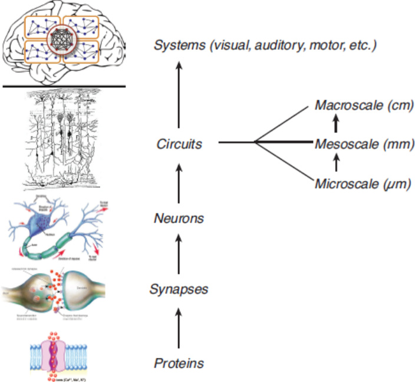
Hình 4.1: Các quy mô khác nhau của tổ chức sinh học trong não. Các protein (ví dụ, kênh ion, neuropeptide) là một đơn vị vi mô của tổ chức sinh học. Các hình cầu màu đỏ biểu thị các ion (ví dụ, natri) đi qua một lỗ protein trên màng của một nơ-ron (màu xanh), một quá trình tạo ra các thế điện mà nơ-ron dùng để trao đổi thông tin. Các synap (và các cấu trúc nhỏ bên trong tế bào) được cấu tạo từ hàng trăm hoặc hàng nghìn protein, carbohydrate và lipid khác nhau. Các hình cầu màu đỏ ở đây biểu thị từng phân tử chất dẫn truyền thần kinh (ví dụ, glutamate) được giải phóng từ đầu trục (bên trái) và gắn vào các thụ thể trên nhánh sợi (bên phải), cho phép trao đổi thông tin giữa hai tế bào; bản vẽ không theo tỉ lệ. Hình nơ-ron minh họa mức của một tế bào thần kinh đơn lẻ, điển hình, có thể tạo và nhận hàng trăm hoặc hàng nghìn synap với các nơ-ron khác. Các mạch thần kinh gồm các kết nối giữa hàng trăm, hàng nghìn, thậm chí hàng triệu nơ-ron, và thay đổi theo các thước chiều dài từ micromét (μm) đến xentimét (cm), tùy thuộc vào kích thước của não và việc chúng là cục bộ (vi mô) hay phân tán (trung mô, vĩ mô). Các hệ thống gồm nhiều mạch thần kinh thực hiện những quá trình hay chức năng cụ thể, ví dụ, các loại hệ thống cảm giác hay hệ thống vận động khác nhau.
Một ví dụ trong thần kinh học tương tự như ví dụ về "tính ướt" của nước có thể là một thuộc tính mạng quy mô lớn. Chẳng hạn, như chúng ta sẽ thấy ở chương 8, nhiều nghiên cứu chụp cộng hưởng từ chức năng (fMRI) về nhận thức ở người hiện nay nhìn vào các thuộc tính của mạng toàn não được xác định bằng các tương quan quan sát được giữa các thành phần của mạng. Các nhà
thần kinh học nhận thức vì thế nói về "các nút trung tâm", "tổ chức thế giới nhỏ" và "tính trung tâm mạng". Những điều này giống với các thuộc tính mạng có thể dùng để mô tả internet. Nhưng chúng không tìm thấy sự ánh xạ nào tới một tầng mô tả tế bào hay vi mạch. Vì thế, chẳng hạn, một nghiên cứu khoa học mô tả một phát hiện về sự chú ý hay trí nhớ như một sự thay đổi về tính trung tâm mạng, từ các nghiên cứu fMRI ở người, sẽ rất khó liên hệ với một mô tả ở tầng tế bào, dù kết quả của nó đương nhiên cuối cùng phải được cấu thành bởi các hiện tượng ở tầng tế bào.
Trong trường hợp của cảm xúc, chúng ta đơn giản là không biết tầng tốt nhất để hiểu nó là gì; vì thế, các nhà thần kinh học đang tiến hành nghiên cứu nó ở nhiều quy mô sinh học khác nhau, đồng thời. Về cơ bản, tất cả các vùng màu khác nhau về độ phân giải không gian–thời gian liên quan đến việc theo dõi và thao tác hoạt động não được thể hiện trong hình 4.2 đều hiện diện trong các nghiên cứu sinh học thần kinh hiện đại về cảm xúc.
Khái Niệm Cơ Chế Trong Thần Kinh Học
Suốt cuốn sách này, chúng tôi thường đặc trưng mối quan hệ giữa các quá trình não và các trạng thái cảm xúc bằng một vài từ có thể thay thế cho nhau. Chúng ta nói rằng các sự kiện não gây ra, tạo ra, sinh ra, hiện thực hóa, tham gia vào hoặc nhận ra các trạng thái cảm xúc. Chúng tôi xem tất cả những cách nói này là nhất quán (dù không tương đương)—chúng nhấn mạnh những khía cạnh khác nhau của mối quan hệ giữa não và cảm xúc, và khác nhau ở mức độ chặt chẽ thực nghiệm mà các mối quan hệ đó đã được thiết lập.
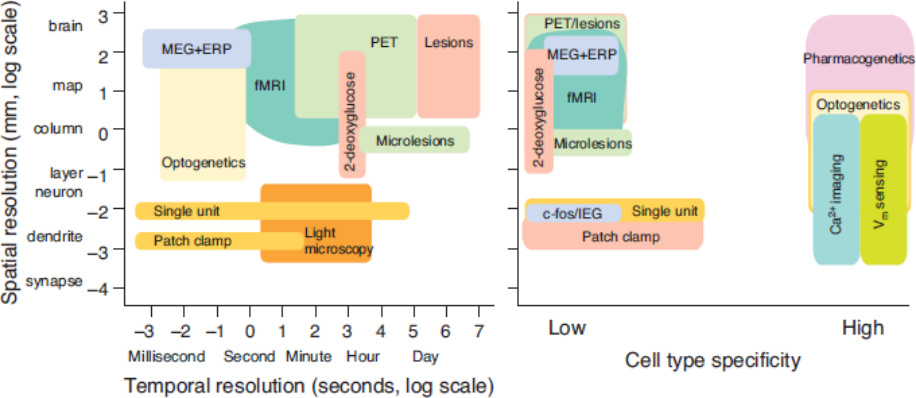
Hình 4.2: Các phương pháp điều tra não ở những quy mô khác nhau. Một số phương pháp đo trực tiếp hoạt động não (ghi đơn vị đơn), hoặc gián tiếp (chụp cộng hưởng từ chức năng, fMRI; xem chương 8), trong khi số khác có thể thao tác hoạt động não (quang di truyền học, tổn thương). Có nhiều kỹ thuật hơn chỉ những kỹ thuật được liệt kê ở đây, và trong số những kỹ thuật được liệt kê, có nhiều tiểu loại có thể mô tả. Hình này chỉ nhằm đưa ra một cái nhìn tổng quát rộng, và để làm rõ điểm rằng một phạm vi quy mô không gian và thời gian khổng lồ được các phương pháp sinh học thần kinh hiện nay bao phủ. Bên trái: biểu diễn các phương pháp theo độ phân giải không gian và thời gian của chúng. Bên phải: biểu diễn các phương pháp theo tính đặc hiệu loại tế bào của chúng. Lưu ý rằng một số phương pháp rất vi mô, chẳng hạn ghi ngoại bào đơn vị đơn, lại không có tính đặc hiệu loại tế bào nào (chúng ta có thể ghi từ một tế bào đơn, nhưng nói chung không thể chọn hay thậm chí biết loại tế bào nào đang được ghi). Viết tắt: MEG: chụp từ não; ERP: các thế điện liên quan đến sự kiện; fMRI: chụp cộng hưởng từ chức năng; PET: chụp cắt lớp phát xạ positron; c-fos: một gen có biểu hiện được cảm ứng khi một tế bào hoạt động, đóng vai trò là nhãn tế bào của hoạt động (xem hộp 6.3); IEG: các gen sớm tức thì, hạng mục gồm c-fos nhưng cũng gồm các IEG khác như Arc; chụp ảnh Ca2+: phát hiện hoạt động thần kinh bằng một chỉ thị huỳnh quang phụ thuộc calci như GCaMP6; Vm: cảm biến điện thế màng bằng các chỉ thị huỳnh quang.
Đối với hầu hết các nhà khoa học, mục tiêu tối hậu của giải thích và hiểu biết khoa học là một mô tả đầy đủ về một cơ chế nhân quả—một mô tả đầy đủ đến mức cho phép chúng ta dự đoán hành vi của một hệ thống từ chính mô tả đó, cho phép chúng ta can thiệp và thao tác hệ thống để tạo ra những kết quả cụ thể, và thậm chí cho phép chúng ta xây dựng một hệ thống như vậy từ đầu, ít nhất là về nguyên tắc. Vì thế, khi nói "cơ chế" chúng tôi muốn nói đến một mô tả về quá trình hay chức năng thần kinh theo các đơn vị ở một tầng hạt nhất định (quy mô sinh học), và các quan hệ nhân quả giữa những đơn vị này. Kiểu hình ảnh chúng ta có trong đầu khi nói về cơ chế giống với điều chúng tôi đã trình bày trong hình 3.5 ở chương trước—một sơ đồ nào đó để hiểu cách
các thành phần khác nhau của một hệ thống ảnh hưởng lẫn nhau trong một chuỗi sự kiện nhân quả, nhằm đạt được một chức năng cụ thể. Chẳng hạn, một giải thích cơ chế về sự trao đổi thông tin giữa các nơ-ron ở tầng tế bào/sinh lý sẽ là: các điện thế hoạt động (tín hiệu điện truyền dọc theo trục) khi đến đầu dây thần kinh gây ra một dòng calci chảy vào, lần lượt gây ra các bọc synap (những gói nhỏ chứa chất dẫn truyền thần kinh như acetylcholine) hợp nhất với màng bề mặt, giải phóng nội dung của chúng vào synap, nơi chúng gắn vào các thụ thể trên bề mặt của nơ-ron sau synap, gây ra những thay đổi điện được chuyển hóa thành thêm các điện thế hoạt động nữa, cứ thế tiếp diễn.
Cơ chế có thể được mô tả ở bất kỳ tầng mô tả nào mà chúng ta đã nhắc đến trước đó. Chẳng hạn, một giải thích ở tầng phân tử cho quá trình phác thảo ở đoạn trước sẽ mô tả nó bằng các protein trong màng của nơ-ron làm cho điện thế hoạt động xảy ra (ví dụ, các kênh natri và kali có cổng điện thế), các protein ở đầu dây thần kinh làm cho calci đi vào (các kênh calci có cổng điện thế), các protein trong bọc synap và đầu dây thần kinh gây ra sự hợp nhất đáp ứng với dòng calci, và các protein thụ thể ở nơ-ron sau synap gắn chất dẫn truyền thần kinh và chuyển sự gắn đó thành tín hiệu điện. Các giải thưởng Nobel đã được trao cho công trình tạo ra sự hiểu biết cơ chế về sự trao đổi thông tin thần kinh ở mỗi tầng khác nhau này. Điều quan trọng là, trong khi các đơn vị giải thích ở tầng sinh lý là các dòng điện chảy qua màng nơ-ron và các hóa chất do nơ-ron giải phóng tại synap, thì cơ chế này có thể được diễn giải lại bằng những đơn vị giải thích hạt hơn: protein, lipid và các thành phần phân tử khác của màng và bộ khung tế bào thần kinh. Cũng có thể giải thích cơ chế phân tử bằng các cơ chế nguyên tử, thông qua các nghiên cứu cấu trúc về protein thần kinh và tương tác của chúng, và các giải thưởng Nobel cũng đã được trao cho điều đó. Ở mỗi tầng, "cơ chế" liên quan đến một mô tả về các chuỗi sự kiện nhân quả gồm các tương tác giữa "đơn vị giải thích"—dòng điện, phân tử, nguyên tử—và hệ quả của những sự kiện đó; nói cách khác, là cái gì, khi nào và như thế nào. Đó là một câu chuyện mà khoa học kể về cách một quá trình diễn ra, với những nhân vật được vẽ nên to hay nhỏ.
Tương Quan So Với Nhân Quả Trong Thần Kinh Học
Trong di truyền học, sinh học phân tử và gần đây là thần kinh học, cơ chế hàm ý nhân quả: một hiểu biết cơ chế về một quá trình nhất định phải bao gồm một mô tả về các quan hệ nhân quả. Với "nhân quả", chúng ta muốn nói rằng nếu A gây ra B (A→B), thì B xảy ra như một hệ quả của A. Một quan hệ nhân quả như vậy sẽ tạo ra một sự tương quan giữa A và B trong dữ liệu quan sát (hình 4.3, 1a). Nhưng chiều ngược lại không đúng: chỉ vì hai thứ tương quan với nhau (trong không gian hay thời gian) không có nghĩa là có một quan hệ nhân quả giữa chúng (hình 4.3, 1b–d).
Chẳng hạn, trong các nghiên cứu chụp ảnh não ở người, người ta thường lầm tưởng (đặc biệt trên báo chí đại chúng) rằng các tương quan giữa hoạt động não và một hành vi hay trạng thái cảm xúc nhất định ngụ ý rằng hoạt động não gây ra hành vi hay trạng thái đó. Vì thế, ví dụ, nếu hoạt động ở hạch hạnh nhân của người có liên tương quan với trải nghiệm chủ quan về sợ hãi trong một số hoàn cảnh nhất định, thì người ta có thể bị cám dỗ suy ra rằng hoạt động ở hạch hạnh nhân gây ra sự sợ hãi. Nhưng điều đó sẽ sai về mặt logic: tương quan không hàm ý nhân quả. Cũng có khả năng chính trải nghiệm sợ hãi gây ra hoạt động ở hạch hạnh nhân, hoặc rằng một quá trình khác không được quan sát gây ra đồng thời cả sự tăng hoạt động hạch hạnh nhân lẫn trải nghiệm sợ hãi (hình 4.3, 1b–d); trong trường hợp sau, chúng ta nói rằng không có quan hệ nhân quả trực tiếp giữa hoạt động hạch hạnh nhân và trải nghiệm sợ hãi. Dù các phương pháp tính toán đang được phát triển để cố rút ra các suy luận nhân quả (được định nghĩa rộng hơn) từ dữ liệu chụp ảnh não tương quan (xem chương 8), phương pháp trực tiếp nhất để phân biệt tương quan với nhân quả là thông qua các phép thử can thiệp về tính cần thiết và tính đủ.
Chúng ta nói "A là cần thiết cho B" nếu việc chặn thực nghiệm quá trình A ngăn quá trình B xảy ra, và "A là đủ cho B" nếu việc kích hoạt thực nghiệm quá trình A gây ra quá trình B xảy ra ngoài thời điểm hay nơi chốn bình thường của nó, hoặc mạnh hơn thế. Lý tưởng nhất là nên chứng minh cả tính cần thiết lẫn tính đủ để kết luận, chẳng hạn, gen (hay tế bào) "A" gây ra quá trình hay hành vi "B" xảy ra ("A→B"; hình 4.3, 2a). Lý do cả hai đều quan trọng là vì chỉ tính cần thiết một mình không phân biệt được liệu một yếu tố trong một đường dẫn nhân quả giả định (ví dụ, "A") đóng vai trò "cho phép" hay "chỉ đạo".
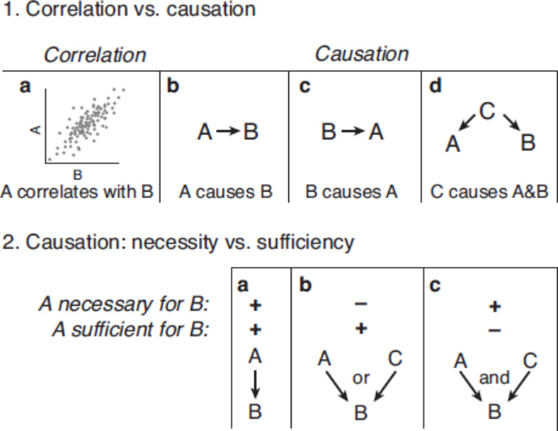
Hình 4.3: (1). Tương quan so với nhân quả. (1a) Sự kích hoạt của một gen, tế bào hay quá trình "A" tương quan với quá trình "B". Điều này được biểu thị bằng dữ liệu mà người ta thường đo; trong ví dụ đơn giản này, mối quan hệ giữa A và B là tuyến tính, với một chút nhiễu đo, tạo ra một biểu đồ phân tán nằm dọc theo một đường thẳng. Bất cứ khi nào A nhỏ thì B cũng nhỏ; bất cứ khi nào A lớn thì B cũng lớn. (1b–1c) Ba loại quan hệ nhân quả giữa "A" và "B" đều tương thích với đồ thị tương quan quan sát được trong (1a): (1b) "A" gây ra "B". (1c) "B" gây ra "A". (1d) "A" và "B" không có quan hệ nhân quả với nhau, mà cả hai đều được gây ra độc lập bởi gen/tế bào/quá trình "C". (2). Tính cần thiết so với tính đủ. Trong (2a–c), gen/tế bào "A" gây ra quá trình "B"; tuy nhiên, ở (2a), gen/tế bào "A" vừa cần thiết vừa đủ để quá trình "B" xảy ra. Ở (2b), hoặc gen/tế bào "A", hoặc gen/tế bào "C", một mình đều có thể gây ra quá trình "B"; vì thế "A" là đủ nhưng không cần thiết, miễn là gen/tế bào C còn hoạt động. (2b) Các gen/tế bào "A" và "C" đều được yêu cầu để quá trình "B" xảy ra. Do đó gen/tế bào "A" là cần thiết, nhưng không đủ để gây ra quá trình "B" khi thiếu gen/tế bào "C". Lưu ý rằng các mũi tên trong những sơ đồ này không biểu thị các tương tác trực tiếp, như đầu vào của một thiết bị trong mạch điện (ví dụ, cổng "và" so với cổng "hoặc"); thay vào đó, chúng tượng trưng cho hệ quả của việc kích hoạt gen/tế bào "A" đối với sự xảy ra của quá trình "B" (ví dụ, một hành vi được đo lường).
Sự khác biệt then chốt này được thấu hiểu rõ nhất qua phép so sánh với một chiếc ô tô: xăng dầu mang tính "cho phép" (hay "tạo điều kiện"), theo nghĩa nếu bạn rút cạn bình xăng thì xe sẽ không chạy. Tuy nhiên, nó không mang tính "chỉ đạo", theo nghĩa một chiếc xe đầy bình không chạy nhanh hơn một chiếc xe nửa bình. Ngược lại, bàn đạp ga mang tính "chỉ đạo"; nếu bạn đạp mạnh hơn, xe chạy nhanh hơn, và xe sẽ không chạy chút nào nếu thiếu nó. Nói cách khác, bàn đạp ga vừa cần thiết vừa đủ để kiểm soát tốc độ của
chiếc xe, nhưng nó cần yếu tố tạo điều kiện (cho phép) là một bình xăng đầy. Tương tự, trong não, một vùng cần thiết cho sự sợ hãi có thể mang tính cho phép, theo nghĩa nó được yêu cầu để xử lý các kích thích cảm giác gây ra sợ hãi (ví dụ, nhân ốc tai cho một kích thích thính giác gợi sợ hãi), nhưng điều đó không có nghĩa là sự kích hoạt đó đủ để gây ra sợ hãi. Chứng minh tính đủ đòi hỏi một can thiệp tăng chức năng, chẳng hạn kích hoạt một vùng não cụ thể, và không thể suy ra chỉ từ một thao tác mất chức năng (ví dụ, một tổn thương).
Điều quan trọng là, dù "tính đủ" có thể phân biệt được hiệu ứng cho phép với hiệu ứng chỉ đạo, nó không nhất thiết hàm ý một ảnh hưởng nhân quả trực tiếp. Chẳng hạn, việc chứng minh rằng kích thích quang di truyền vào một vùng não hay loại tế bào nhất định là "đủ" để thúc đẩy một hành vi hay trạng thái cụ thể không có nghĩa là các nơ-ron được kích thích trực tiếp tạo ra hiệu ứng đó: có thể có nhiều bước trung gian hay nút mạch chưa được xác định. Như chúng ta sẽ thấy ở chương 6, các mạch liên quan đến trạng thái cảm xúc nằm ở cái có thể gọi là "não bộ bên trong", những vùng nằm trung gian giữa các mạch xử lý đầu vào cảm giác và những mạch tổ chức đầu ra vận động. Việc kích hoạt nơ-ron ở một vùng như vậy đưa một xung hoạt động vào một mạch phức tạp phân nhánh và lan tỏa khắp não, như được gợi ý bởi một vài nghiên cứu theo dõi hiệu ứng của kích thích quang di truyền ở não loài gặm nhấm bằng chụp cộng hưởng từ chức năng (xem hình 11.2). Khám phá cơ chế mà qua đó sự kích thích như vậy tạo ra những hiệu ứng hành vi được quan sát đòi hỏi công trình theo dõi dày công, và rất quan trọng cho cách giải thích các nghiên cứu này.
Lưu ý rằng có thể có những tình huống mà gen/tế bào A đủ nhưng không cần thiết (hình 4.3, 2b), hoặc cần thiết nhưng không đủ (hình 4.3, 2c), đối với quá trình B. Tính đủ mà không cần thiết có thể xảy ra nếu có các quá trình dự phòng thúc đẩy quá trình B, ngoài gen/tế bào A; những đường dự phòng đó có thể bù đắp nếu gen/tế bào A bị loại bỏ, do đó "A" không hoàn toàn cần thiết (hình 4.3, 2b; "C"). Ngược lại, gen/tế bào A có thể cần thiết nhưng không đủ, vì quá trình B đòi hỏi gen/tế bào A cộng với một hay nhiều loại gen hoặc tế bào bổ sung ("C" trong hình 4.3, 2c). Vì thế, chỉ kích hoạt gen/tế bào A sẽ không đủ để thúc đẩy quá trình B nếu gen/tế bào C không được kích hoạt đồng thời. Như vậy, việc chứng minh hoặc tính cần thiết hoặc tính đủ tự thân nó đã là một bằng chứng quan trọng về nhân quả.
Lưu ý rằng ở đây chúng ta dùng "nhân quả" theo nghĩa tất định (bất cứ khi nào A xảy ra thì nó gây ra B), chứ không theo nghĩa xác suất (nếu A xảy ra thì cơ hội B xảy ra tăng lên). Một ví dụ cho nghĩa sau là câu thường được trích dẫn "hút thuốc lá gây ung thư phổi"; theo cách dùng của chúng ta, câu đó không chính xác. Hút thuốc lá làm tăng cơ hội bạn bị ung thư phổi, nhưng không phải ai hút thuốc cũng bị ung thư phổi, và có người bị ung thư phổi dù chưa từng hút. Vì thế, hút thuốc lá là một yếu tố nguy cơ của ung thư phổi theo nghĩa thống kê hay dịch tễ học, nhưng nó không cần thiết cũng không đủ để gây ung thư phổi ở mọi người.
Kiểm Tra Các Quan Hệ Nhân Quả Giữa Hoạt Động Thần Kinh Và Hành Vi
Có một logic thực nghiệm để kiểm tra tính cần thiết và tính đủ là một chuyện; thực sự có các công cụ để làm điều đó lại là chuyện khác. Những tiến bộ trong sinh học phân tử đã cung cấp các công cụ cực kỳ chính xác để thao tác các gen cụ thể. Dùng những công cụ này ở các "sinh vật mô hình" di truyền như chuột, ruồi giấm và giun tròn, người ta đã có thể kiểm tra tính cần thiết và tính đủ của từng gen đối với những hành vi cụ thể bằng cách "loại bỏ gen" (nghĩa là làm chúng bất hoạt) hoặc bằng cách biểu hiện quá mức chúng. Dù những thí nghiệm như vậy có thể cung cấp bằng chứng về một mối quan hệ "nhân quả" giữa chức năng của một gen và một hành vi, các quan sát đó vẫn chưa giải thích được gen ảnh hưởng đến hành vi như thế nào về mặt cơ chế; chẳng hạn, gen có thể tác động trong quá trình phát triển phôi để ảnh hưởng đến sự hình thành hay đấu dây của một vùng não cần thiết cho hành vi đó khi trưởng thành, hoặc nó có thể tác động ở con trưởng thành để ảnh hưởng đến hoạt động trong mạch. Tuy nhiên, nếu không biết mạch đó là gì, rất khó phân biệt các giả thuyết này.
Nhận thức này đã dẫn, vào đầu những năm 2000, đến một nỗ lực phát triển các phương pháp kiểm tra tính cần thiết và tính đủ của các nhóm nơ-ron cụ thể ở động vật thí nghiệm. Trong trường hợp này, thay vì bất hoạt hay kích hoạt các gen cụ thể, người ta phát triển các phương pháp bất hoạt hay kích hoạt các tế bào cụ thể, ở những vùng não cụ thể vào những thời điểm cụ thể. Chẳng hạn, một cách tiếp cận gọi là "quang di truyền học" (xem hộp 5.1) dùng ánh sáng để bật hay tắt các lớp nơ-ron cụ thể, với độ phân giải thời gian tính bằng mili giây. Lưu ý rằng vùng dành cho "quang di truyền học" trong hình 4.2 có quy mô không gian vĩ mô hơn ghi đơn vị đơn. Điều này là vì
quang di truyền học (như thường được dùng) không thao tác một nơ-ron đơn lẻ, mà thao tác một quần thể nơ-ron được xác định di truyền—thường là hàng trăm, hàng nghìn tế bào hoặc hơn. Việc kích hoạt hay ức chế một quần thể nơ-ron được xác định di truyền, như với quang di truyền học (các hộp 5.1 và 5.3), có thể có hiệu ứng sâu sắc lên một hành vi cụ thể. Ở ruồi và giun, việc kích hoạt một nơ-ron đơn đôi khi cũng ảnh hưởng mạnh đến hành vi, nhưng điều đó hiếm xảy ra ở động vật có xương sống. Những phương pháp này, cùng các kỹ thuật liên quan khác, đã cách mạng hóa năng lực đánh giá các quan hệ nhân quả giữa hoạt động của các lớp nơ-ron cụ thể và những chức năng não cụ thể.
Các phép thử can thiệp về tính cần thiết và tính đủ trong não thường đòi hỏi những thí nghiệm xâm lấn; người ta cần thực sự đưa các công cụ thao tác hoạt động thần kinh vào trong não. Dù những thí nghiệm như vậy là thường lệ ở một số loài động vật (đặc biệt là loài gặm nhấm, như được mô tả ở chương 5), thì ở người chúng khó khăn về mặt kỹ thuật và thường không được phép về mặt đạo đức. Thay vào đó, người ta phải dựa vào những tai nạn của tự nhiên, chẳng hạn trường hợp bệnh nhân được biết đến với tên gọi S.M., người có các tổn thương khu trú ở hạch hạnh nhân, và người mà chúng tôi mô tả trong hộp 8.2. Nhưng những tai nạn của tự nhiên hay y học như vậy vẫn hiếm và khó tái lập. Các kỹ thuật khác, chẳng hạn kích thích từ xuyên sọ, có thể áp dụng cho người khỏe mạnh để gây ra các tổn thương chức năng tạm thời ở những vị trí định trước—nhưng chúng không trọn vẹn và có độ phân giải giải phẫu rất kém. Cũng có thể kích thích thực nghiệm các vùng của não, chẳng hạn thông qua kích thích não sâu. Cách tiếp cận này thực ra đang được dùng để điều trị các rối loạn cảm xúc, chẳng hạn trầm cảm. Tuy nhiên, một lần nữa, nó được kiểm soát kém và chỉ có thể áp dụng cho một tập con nhỏ bệnh nhân có chỉ định lâm sàng mạnh mẽ. Những phương pháp thường được dùng để nghiên cứu cảm xúc ở động vật so với ở người có ảnh hưởng thấm nhuần đến mọi khía cạnh của thần kinh học cảm xúc. Chúng ta sẽ trở lại với mô tả chi tiết hơn về các phương pháp cụ thể ở các hộp 5.1–5.5 (cho quang di truyền học, chụp ảnh calci và các công nghệ liên quan) và chương 8 (cho chụp cộng hưởng từ chức năng).
Các Tầng Trừu Tượng
Chúng ta đã thảo luận về các tầng tổ chức sinh học đầu chương này, khi mô tả việc đi từ cách mô tả não vĩ mô hơn đến vi mô hơn (hình 4.1). Có một cách dùng khác của "tầng", mà chúng ta sẽ gọi là các tầng trừu tượng, một cách tiếp cận mà nhà thần kinh học David Marr đã mô tả đầu tiên (hình 4.4) (Marr 1982). Chúng ta đã nhắc đến điều này rồi, nhưng ở đây cung cấp thêm một chút chi tiết. Theo Marr, có ba tầng trừu tượng rộng (ông gọi là "các tầng phân tích"): tầng chức năng hay sinh thái, giải thích bài toán chức năng trừu tượng mà sinh vật cần giải quyết (ví dụ, tránh bị ăn thịt bởi kẻ săn mồi; Marr gọi điều này là tầng "tính toán" một cách gây nhầm lẫn đôi chút); tầng thuật toán hay tính toán, giải thích các thuật toán và phép tính để đạt được chức năng đó (ví dụ, chạy nếu không chỗ trốn; trốn nếu có chỗ trốn gần đó—như con chuột trong thí nghiệm chúng tôi trình bày ở hình 2.5); và tầng hiện thực hóa hay sinh học thần kinh, giải thích làm sao các thuật toán đó thực sự có thể được hiện thực hóa trong mạch thần kinh của não. Dĩ nhiên, người ta có thể dễ dàng chèn nhiều tầng trung gian vào sơ đồ này. Chẳng hạn, tầng thuật toán không phải là một tầng duy nhất, mà trải từ những mô hình ô-và-mũi tên rất thô thấy trong một số lý thuyết tâm lý, đến những mô hình tính toán rất cụ thể và chi tiết với các công thức toán học, hay thậm chí những đoạn mã máy tính có thể chạy được trong một mô phỏng. Nhìn chung, tầng chức năng tương thích với nhiều thuật toán khác nhau để đạt cùng một mục tiêu, và một thuật toán nhất định thường có thể được hiện thực hóa theo nhiều cách khác nhau trong phần cứng thần kinh. Do đó, người ta kỳ vọng rằng một phân tích trừu tượng ở tầng chức năng hay tầng thuật toán về một cảm xúc tương thích với nhiều cách khác nhau để hiện thực hóa nó trong não của các loài khác nhau—hoặc thậm chí trong não của một loài. Về mặt này, sơ đồ các tầng trừu tượng khác với sơ đồ các tầng tổ chức sinh học mà chúng ta đã thảo luận đầu chương này (hình 4.1). Tất cả các tầng tổ chức sinh học khác nhau được thể hiện trong hình 4.1 đều tương thích với tầng hiện thực hóa "sinh học thần kinh" được thể hiện trong hình 4.4. Mỗi tầng cao hơn trong hình 4.4 tương thích với nhiều tầng thấp hơn khác nhau (một bài toán chức năng nhất định có thể được giải bằng nhiều thuật toán, rồi lại có thể được hiện thực hóa theo nhiều cách).
Chúng ta nên bàn về một khía cạnh của hình 4.4 nay đã trở nên phổ biến trong cả thần kinh học lẫn tâm lý học: ẩn dụ về não bộ như một máy tính. Khi chúng ta nói về "các phép tính" và "thuật toán", có một giả định ngầm rằng hệ thần kinh tính toán theo một nghĩa nào đó. Đây là một giả định mạnh, và chắc chắn có những người không đồng ý—chúng tôi trích một vài lời ở hộp 4.1. Cũng có một quan điểm phổ biến liên quan rằng các phép tính của não chỉ dành cho các chức năng "nhận thức"—ra quyết định, giải quyết vấn đề, lập chiến lược, học tập và trí nhớ—trong khi phần "cảm xúc" của não về bản chất là hóa học, gồm một "món súp" các chất điều hòa thần kinh như serotonin, dopamine, norepinephrine và endorphin ngâm tẩm toàn bộ não. Quan điểm nhị nguyên này dựa một phần vào phát hiện tình cờ rằng một số thuốc có tác dụng mạnh lên tâm trạng và cảm xúc, như Prozac, hoạt động bằng cách nâng mức của một số chất điều hòa hóa học nhất định (trong trường hợp này là serotonin) trong toàn não. Nhưng những loại thuốc này không đặc hiệu cho các hệ cảm xúc (thực ra, chúng có thể gây ra nhiều tác dụng phụ không mong muốn và nghịch lý); đúng hơn, chính mạch thần kinh, chứ không phải hóa học, xác định hiệu ứng cảm xúc của việc dùng một loại thuốc. Vì vậy, sự phân cực phổ biến giữa bộ não "nhận thức điện tử" và bộ não "cảm xúc hóa học" là sai. Chức năng mạch não—được mô tả như một phép tính—bị ảnh hưởng bởi hóa học của nó, và các hóa chất trong não phát huy tác dụng bằng cách thay đổi các phép tính của mạch. Điều còn cần hiểu là chính xác cách thức và vị trí mà các hóa chất khác nhau tác động lên các mạch não để biến đổi chức năng của chúng, và điều đó ảnh hưởng thế nào đến cả nhận thức lẫn cảm xúc. Theo chúng tôi, các cảm xúc có thể được phân tích ở tầng thuật toán, được mô tả như các phép tính, cũng như bất kỳ chức năng não nào khác.
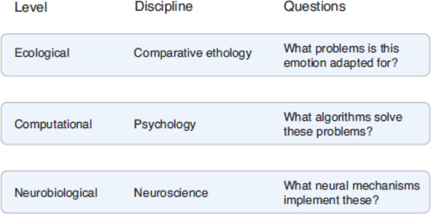
Hình 4.4: Các tầng trừu tượng để điều tra cảm xúc. Các mục ngoài cùng bên trái mô tả tầng phân tích do nhà khoa học sử dụng, trải từ những phân tích chức năng cấp cao về một trạng thái cảm xúc (chẳng hạn như được các nhà tập tính học hay nhà tâm lý học tiến hóa dùng), đến các phân tích tính toán dựa trên các thuộc tính mà trạng thái cảm xúc cần có để đạt được những chức năng đó (như danh sách thuộc tính chúng tôi đưa ra trong hình 3.2), rồi đến việc điều tra xem điều đó thực sự được não tạo ra như thế nào (tầng hiện thực hóa). Mỗi tầng trừu tượng đặt ra loại câu hỏi riêng của nó, và các câu hỏi ở những tầng khác nhau thường mang lại mức độ thỏa mãn khác nhau cho điều tra viên từ các ngành khác nhau: một nhà tập tính học thấy câu hỏi tầng cao nhất thú vị và các tầng thấp hơn thường không liên quan, trong khi một nhà sinh học thần kinh mạch có thể thấy câu hỏi tầng thấp nhất là phù hợp nhất.
Hộp 4.1. Não Bộ Có Phải Là Máy Tính Không?
Bởi ý tưởng rằng các cảm xúc có thể được mô tả như các phép tính nghe có vẻ sai trực giác với một số người, chúng tôi muốn nói thêm đôi lời về điều này và giải thích kỹ hơn tại sao chúng tôi cho rằng sự dè chừng đó là không đúng chỗ. Một số nhà khoa học nổi tiếng đã nêu ra sự phản đối này. Chẳng hạn, viết trên Huffington Post, nhà thần kinh học Antonio Damasio nói rằng:
các sinh vật sống, kể cả sinh vật người, dùng các thuật toán phụ thuộc mã như bộ máy di truyền. Nhưng dù ở một mức độ nhất định các sinh vật sống được cấu tạo theo các thuật toán, chúng không phải là các thuật toán. Chúng là hệ quả của sự tham gia của các thuật toán. Tuy nhiên, vấn đề then chốt là các sinh vật sống là tập hợp các mô, cơ quan và hệ thống, trong đó mỗi tế bào thành phần là một thực thể sống dễ tổn thương
được cấu tạo từ protein, lipid và đường. Chúng không phải là những dòng code. (http://www.huffingtonpost.com/antonio-damasio/algorithmic-human-life_b_10699712.html)
Bài của Damasio có tựa gợi tính là "Chúng Ta Không Nên Chấp Nhận Một Giải Thích Thuật Toán Về Đời Sống Con Người". Nhưng được trang bị cuộc thảo luận trong chương này, bạn nên thấy được vì sao câu trích này không phải là một lập luận chống lại một tầng phân tích tính toán về sự sống. Các sinh vật và tế bào không phải là chương trình máy tính, cũng như chúng không phải là phân tử; chúng là một tổ chức đặc biệt của các phân tử mà, từ một góc nhìn nhất định của nhà khoa học, hiện thực hóa các phép tính cùng phối hợp hướng tới những chức năng cụ thể ("sự sống" theo nghĩa rộng nhất trong câu trích của Damasio).
Có nhiều ví dụ khác về quan điểm trên. Nhà tâm lý học Robert Epstein đã viết một bài trên Aeon có tựa là "Não Bộ Của Bạn Không Xử Lý Thông Tin, Truy Xuất Tri Thức Hay Lưu Trữ Ký Ức. Nói Ngắn Gọn: Não Bộ Của Bạn Không Phải Là Máy Tính" (https://aeon.co/essays/your-brain-does-not-process-information-and-it-is-not-a-computer). Nhà triết học John Searle nổi tiếng với các lập luận rằng tâm trí không phát sinh từ các phép tính hay thuật toán (Searle 1980). Để thấy được trực giác đứng sau nhiều lập luận này, hãy xét việc chạy một mô phỏng rất chi tiết về thời tiết trên một siêu máy tính. Hãy làm nó chi tiết đến mức bạn muốn, mô hình hóa từng nguyên tử riêng lẻ về nguyên tắc; thế nhưng, chẳng ai thực sự bị ướt vì mưa cả. Điểm của Searle cũng theo hướng đó: các thuộc tính nhân quả của não nhiều hơn việc chỉ hiện thực hóa các thuật toán; theo Searle, não gây ra tâm trí cũng như dạ dày gây ra sự tiêu hóa thức ăn, và chỉ chạy một thuật toán của một trong hai thì không tạo ra được tâm trí cũng không tiêu hóa được gì.
Những quan điểm này quan trọng vì chúng buộc chúng ta làm rõ ý mình muốn nói khi nói đến một giải thích mang tính chức năng về các trạng thái cảm xúc mà chúng ta đã mô tả ở các chương 2 và 3. Chúng tôi không có ý rằng các trạng thái cảm xúc chỉ là các trạng thái chức năng, hay chỉ là các phép tính, cũng như chúng không chỉ là các trạng thái não. Hãy nhớ lại điều chúng tôi đã viết về hình 1.1 một lúc trước, hình ảnh chụp cộng hưởng từ của người mẹ và em bé: ở đó, chúng tôi làm rõ điểm rằng các cảm xúc có thể được mô tả từ những góc nhìn rất khác nhau mà không loại trừ lẫn nhau.
Tầng chức năng mô tả các cảm xúc làm gì bằng những thuật ngữ trừu tượng nhất, tầng thuật toán mô tả chúng làm điều đó như thế nào một cách trang trọng hơn (thường bằng các phép tính), và tầng sinh học thần kinh mô tả điều đó được hiện thực hóa trong một chất nền vật lý như não ra sao (hình 4.4). Việc chỉ đơn thuần công thức hóa một chức năng hay một phép tính—như viết một phương trình lên bảng—đương nhiên hoàn toàn trơ về mặt nhân quả và không làm được gì cả. Các tầng chức năng và thuật toán nên được hiểu như những sự trừu tượng—những sự trừu tượng do tâm trí của nhà khoa học tạo ra—giúp chúng ta hiểu, giải thích và thao tác các trạng thái cảm xúc. Kết luận của chúng tôi là tất cả những tầng phân tích khác nhau này đều cần thiết trong một khoa học về cảm xúc. Không tầng nào có thể bị bỏ qua, và thách thức là làm sao liên hệ chúng với nhau.
Sự Trộn Lẫn Thuật Ngữ Trong Các Giải Thích Thần Kinh Học
Trong thảo luận trước đó về các khái niệm sinh học thần kinh, chúng tôi đã nêu bật ý tưởng về một cơ chế. Cách dùng thuật ngữ "cơ chế" trong tâm lý học và thần kinh học nhận thức có cùng sắc thái với cách dùng trong thảo luận của chúng ta về sinh học thần kinh tế bào và hệ thống—nó cũng xoay quanh nhân quả, nhưng trong trường hợp này là các quan hệ nhân quả giữa các trạng thái ít nhất có một phần được định nghĩa theo tâm lý. "Cơ chế" trong tâm lý học thường tương đương với một giả thuyết về một chuỗi sự kiện, có thể được mô tả hoàn toàn bằng các thuật ngữ tâm lý hoặc có thể là một hỗn hợp các trạng thái được định nghĩa theo sinh học, hành vi và tâm lý. Vì thế, mô tả một cảm giác sợ hãi là kết quả của các biểu hiện cơ thể của sợ hãi, lần lượt là kết quả của việc nhận biết một kích thích gây sợ hãi, tương đương với một cơ chế tâm lý về cách chúng ta cảm thấy sợ. Ví dụ cụ thể này thực ra diễn giải lại giả thuyết do nhà tâm lý học William James đưa ra mà chúng ta đã thảo luận ở chương 2. Một giả thuyết cạnh tranh sẽ là: nhận biết một kích thích gây sợ hãi trước tiên khiến chúng ta cảm thấy sợ, rồi điều đó gây ra các biểu hiện cơ thể của sợ hãi. Rõ ràng là nhiều bước nhân quả trung gian đã bị bỏ qua trong mô tả này. Thần kinh học nhận thức thường bao gồm một sự pha trộn nhất định của những giả thuyết tâm lý này nhưng đưa các cấu trúc, hệ thống hay mạng sinh học thần kinh vào các thành phần để hoàn thiện cơ chế. Vì thế, một phiên bản thần kinh học nhận thức của giả thuyết ban đầu của William James có thể đề xuất rằng nhìn thấy một kích thích gây sợ hãi gây ra sự kích hoạt ở hạch hạnh nhân hay vùng dưới đồi, lần lượt gây ra những thay đổi trong cơ thể, được vỏ não đảo cảm nhận, khiến bạn cảm thấy sợ. Chúng ta sẽ phác thảo những phiên bản hiện đại chi tiết hơn của chính giả thuyết này ở chương 10.
Như thấy trong ví dụ này, các mô tả về cơ chế tâm lý và thần kinh học thường hòa lẫn vào nhau. Chẳng hạn, các vùng não, hoặc hệ thống gồm nhiều vùng, đôi khi được liên kết với những chức năng tâm lý nhất định, và vì thế một số mô tả có thể đưa "hạch hạnh nhân" vào một ô trong một cơ chế tâm lý dựa trên ô và mũi tên. Ngược lại, trong thần kinh học nhận thức, người ta thường thấy các cuộc thảo luận về sự kích hoạt ở những vùng não cụ thể gán chức năng tâm lý cho các vùng đó, lại cung cấp một sự pha trộn các thuật ngữ sinh học thần kinh và tâm lý trong việc giả định một cơ chế. Sự pha trộn như vậy khá phổ biến không chỉ trong việc điều tra cảm xúc ở người mà còn trong nhiều nghiên cứu về cảm xúc ở động vật. Những giải thích hỗn hợp này có thể gây vấn đề—không phải nhiều về việc chúng chỉ dùng thuật ngữ từ hai ngành khác nhau, mà vì, một cách ngầm định hay tường minh, sự pha trộn được dùng để gợi ý một dạng giải thích sâu hơn. Các nghiên cứu tâm lý đưa "hạch hạnh nhân" vào một ô cho "sợ hãi" đang gợi ý rằng giờ đây chúng ta có một lời giải thích về cách một quá trình tâm lý có thể có nền tảng sinh học. Các nhà thần kinh học nhận thức thảo luận về phát hiện kích hoạt hạch hạnh nhân trong một nghiên cứu fMRI như "sợ hãi tăng lên" cũng tương tự gợi ý rằng họ đã tìm thấy một liên kết giữa các hoạt động não và một quá trình tâm lý. Những ví dụ này có thể có cơ sở, nếu chính nghiên cứu đó thực sự chứng minh được mối liên kết như vậy. Nhưng chúng thường được đưa ra dựa trên dữ liệu quá yếu để duy trì một tuyên bố như thế, hoặc dựa trên những giả định nền tảng bắt nguồn từ công trình khác.
Trong thần kinh học nhận thức, việc gán chức năng tâm lý cho sự kích hoạt ở những vùng não cụ thể được gọi là "suy luận ngược", và gây vấn đề trong nhiều trường hợp (Poldrack 2006). Giả sử một vài nghiên cứu fMRI thấy rằng hạch hạnh nhân được kích hoạt bất cứ khi nào người ta báo cáo cảm thấy sợ. Giờ tôi cho người ta xem nhiều loại tranh ảnh và thứ duy nhất tôi đo là hoạt động não. Hóa ra một số tranh kích hoạt hạch hạnh nhân mạnh hơn những tranh khác. Tôi kết luận rằng những tranh đó hẳn phải khiến
người ta cảm thấy sợ. Vấn đề nổi tiếng với lập luận này là (a) nhiều vùng não khác cũng có thể được kích hoạt mạnh hơn bởi những tranh đó, và (b) hạch hạnh nhân có thể được kích hoạt bởi nhiều quá trình hơn là trải nghiệm sợ hãi. Lỗi logic này hẳn đã quen thuộc với bạn rồi—chúng ta mở đầu chương 2 bằng một danh sách những vấn đề kiểu như vậy. Lưu ý rằng việc suy ra các trạng thái tâm lý từ hoạt động não chắc chắn có thể là được—nhưng bạn cần một lượng lớn dữ liệu từ nhiều nghiên cứu để làm điều đó thuyết phục về mặt thống kê và loại trừ các khả năng gây nhiễu. Đối với các nghiên cứu fMRI ở người, số nghiên cứu thực sự đang trở nên khổng lồ—hiện đã có hàng nghìn nghiên cứu về cảm xúc—và thực ra có những công cụ sẵn có cho phép nhà nghiên cứu thực hiện các suy luận như vậy và gắn ước tính xác suất vào chúng (Poldrack 2011). Nếu bạn có một trăm nghiên cứu cho thấy hạch hạnh nhân được kích hoạt khi người ta báo cáo cảm thấy sợ, và một nghìn nghiên cứu cho thấy hạch hạnh nhân không bị kích hoạt bởi đủ loại quá trình tâm lý khác ngoài sợ hãi, thì bạn có thể được phép suy ra sự sợ hãi từ việc đo hoạt động hạch hạnh nhân. Chúng ta sẽ trở lại vấn đề này trong hình 8.3 với một ví dụ.
Cũng như các cơ chế sinh học thần kinh có những mức hạt khác nhau tương ứng với các tầng mô tả khác nhau, từ tầng hệ thống đến tầng vi vật lý, các cơ chế nhận thức cũng có những mức hạt khác nhau, tương ứng với các quan hệ bộ phận–toàn thể giữa các quá trình tâm lý. Có những cơ chế rất thô được minh họa bằng ô và mũi tên, và có những mô hình hạt mịn cho phép khớp các tham số trong một phương trình mô tả động lực học của một quá trình sinh vật lý. Cũng như với các cơ chế sinh học thần kinh, nơi cái vi mô hơn thường được cho là sẽ thay thế cái vĩ mô hơn, một mô hình tính toán chi tiết hơn trong thần kinh học nhận thức thường được cho là sẽ thay thế một mô hình khái niệm rộng hơn. Điều này khá dễ hiểu; trong cả hai trường hợp, chúng ta chỉ đang nói rằng việc cung cấp thêm chi tiết sẽ hấp thụ một giải thích cơ chế có ít chi tiết hơn. Trong trường hợp sinh học thần kinh, các tầng tổ chức sinh học làm nền cho hình 4.1 và 4.2 khá cụ thể và ít có bất đồng: nó chỉ tương ứng với những gì bạn có thể đo bằng các công cụ khác nhau, từ ảnh cộng hưởng từ đến kính hiển vi quang học rồi kính hiển vi điện tử. Trong trường hợp thần kinh học nhận thức và tâm lý học, mức hạt của các mô tả cơ chế kém rõ ràng hơn nhiều, và ít có sự đồng thuận. Một nỗ lực nhằm lập danh mục các thuật ngữ do những
ngành này dùng và mối liên hệ giữa chúng được đưa ra trong "bản đồ nhận thức" (www.cognitiveatlas.org). Lướt nhanh qua trang web này sẽ cho bạn ý tưởng về còn bao nhiêu việc phải làm để đưa ra một danh sách các thuật ngữ tâm lý liên hệ trơn tru với nhau và, được xem xét cùng nhau, cung cấp một mô tả đa độ phân giải về tâm trí ở mọi tầng. Chúng ta thực ra chưa có thứ gì như thế. Một phần vì lý do này mà cuốn sách của chúng tôi tập trung vào sinh học thần kinh, chứ không phải tâm lý học, của cảm xúc.
Tính Cần Thiết, Tính Đủ Và Tính Bình Thường
Việc xác lập tính cần thiết và tính đủ của một nhóm nơ-ron cụ thể đối với một chức năng não cụ thể tự thân nó đã là cần thiết, nhưng chưa đủ, để đạt được sự hiểu biết về cách chức năng hay hành vi đó được não trung gian hóa. Chẳng hạn, nếu người ta xét một cái nhìn đơn giản hóa về mạch thần kinh như một đường dẫn phát hiện một kích thích cảm giác và chuyển tiếp nó qua vài nút trung gian tới một đầu ra hành vi (vận động), thì nhiều nút trong đường chuyển tiếp đó có thể cho là "cần thiết và đủ" cho hành vi, như được kiểm tra bằng các kỹ thuật như quang di truyền học hay hóa di truyền học (hộp 5.1). Nhưng điều đó không có nghĩa là mỗi nút đều có cùng một chức năng trong việc kiểm soát hành vi; nếu vậy, tại sao lại cần nhiều nút? Quang di truyền học, dù mạnh mẽ và đặc hiệu, có thể là một công cụ tương đối thô: khi dùng để kích thích các nhóm nơ-ron cụ thể, nó áp đặt những kiểu hoạt động nhân tạo lên các tế bào này và gián tiếp tăng hoạt động của nhiều vùng não liên kết.
Để hiểu chức năng thực sự của các tế bào này và các mạng liên quan của chúng, cần nghiên cứu kiểu bắn xung bình thường của nơ-ron trong bất kỳ chức năng hay hành vi nào mà não đang thực hiện. Theo truyền thống, điều này được thực hiện bằng cách đo các tín hiệu điện trong não dùng vi điện cực. Tuy nhiên, việc xác định các loại tế bào cụ thể chịu trách nhiệm cho tín hiệu đo được có thể rất khó khăn. Các kỹ thuật mới, dựa trên chụp ảnh quang học dùng các cảm biến di truyền được mã hóa cho calci hay điện thế màng, đang được chứng minh là mang tính cách mạng không kém quang di truyền học trong việc mở ra một cửa sổ thực sự vào não khi não đang thực hiện các chức năng khác nhau ở những động vật tự do hành vi (hộp 5.2). Chụp ảnh quang học cho chúng ta một
bộ phim động về hoạt động của một quần thể nơ-ron theo thời gian thực. Hơn nữa, các cảm biến quang học có thể được định hướng di truyền tới các loại tế bào thần kinh cụ thể. Với nhiều quá trình trung ương, các quần thể nơ-ron nhỏ được xác định di truyền ("các loại tế bào") có thể là đơn vị cơ bản để hiểu chức năng não. Đây sẽ là một tầng mô tả lớn hơn một nơ-ron đơn, nhưng nhỏ hơn toàn bộ cấu trúc não (theo cách giải phẫu thường định nghĩa các "cấu trúc" đó, ví dụ, hạch hạnh nhân). Một lần nữa, những công cụ này mang tính xâm lấn và không thể áp dụng rộng rãi ở người. Nhưng việc áp dụng kết hợp chúng trong các mô hình động vật mang lại một cách tiếp cận để hiểu các cơ chế não nền tảng của cảm xúc và các trạng thái nội tại khác, bao gồm cả các phép đo tương quan định lượng lẫn các phép thử nhân quả. Trong tương lai, một khi đã đặc trưng được các kiểu bắn xung bình thường thực sự được gợi ra bởi một kích thích thật, sẽ có thể tái tạo lại chính kiểu đó một cách nhân tạo bằng kích thích quang di truyền. Bằng cách này, chúng ta có thể "ghi" và "phát lại" theo nghĩa đen những kiểu hoạt động thần kinh không gian–thời gian cụ thể, và xác định hiệu ứng của chúng lên hành vi và các trạng thái nội tại—điều đã đạt được ở một số khía cạnh của trí nhớ. Việc quan sát động lực học thần kinh và nhiễu loạn động lực học đó theo thời gian thực hứa hẹn những hiểu biết mới về chức năng não mà ngay cả một thập kỷ trước cũng không thể nghĩ tới.
Có một xét cuối cùng quan trọng mà chúng tôi muốn dùng để khép lại, liên quan đến cuộc thảo luận về "tính bình thường" mà chúng ta đã có trước đó. Não của mỗi người là duy nhất. Điều gì sẽ xảy ra nếu não của bạn và não của tôi thực sự được đấu dây khác đi, sao cho bất kỳ kết luận nào bạn rút ra về cách một cảm xúc được gây ra trong não của bạn có thể không áp dụng được cho não của tôi? Đây là một câu hỏi về khác biệt cá nhân, một chủ đề mà các nhà tâm lý học và tâm thần học đã dành nhiều thời gian điều tra, nhưng lại tương đối mới đối với sinh học thần kinh tế bào và phân tử. Dù vấn đề này ít cấp bách hơn trong các thí nghiệm liên quan đến những dòng động vật thuần chủng về mặt di truyền (như thường thấy, chẳng hạn, trong các nghiên cứu với chuột), thì ngay cả trong những trường hợp đó, không có hai động vật nào hành xử hoàn toàn giống nhau, và không có hai bộ não nào giống hệt nhau. Về nguyên tắc, sự khác biệt giữa các bộ não cá nhân có thể khiến việc điều tra cảm xúc của chúng ta trở nên cực kỳ khó khăn. Mọi điều chúng ta đã viết cho đến nay đều giả định rằng não của hai người đủ giống nhau để chúng ta có thể khái quát hóa giữa các người về cách các cảm xúc được não tạo ra, ít nhất là ở mức độ lớn.
Về mặt thực nghiệm, dù thực sự có sự biến dị cá nhân, thì dường như cho đến nay, các bộ não khác nhau trong cùng một loài—và thậm chí các bộ não ở những loài có họ hàng—chia sẻ đủ sự tương đồng để chúng ta rút ra được những nguyên lý có thể khái quát hóa về cách các cảm xúc được hiện thực hóa ở tất cả các tầng mà chúng ta đã nhắc đến trước đó. Đặc biệt, cả các tầng cơ chế lẫn các tầng trừu tượng đều có thể giúp ích ở đây. Có thể là cách đấu dây chính xác của các synap trong hạch hạnh nhân của tôi và của bạn là khác nhau, nhưng sự khác biệt vi mô đó sẽ biến mất nếu chúng ta dùng một thước đo thô về không gian, chẳng hạn sự kích hoạt thấy được bằng chụp cộng hưởng từ chức năng. Tương tự, dù não chuột và não người rất khác nhau về nhiều mặt (ví dụ, khoảng 100 triệu nơ-ron so với 80 tỷ nơ-ron), một mô tả chức năng về sự sợ hãi có thể trông khá giống nhau ở hai loài, cho phép một số so sánh. Nhiều thuộc tính chung của cảm xúc mà chúng tôi liệt kê trong hình 3.2 dường như đúng ở nhiều người và nhiều loài khác nhau. Nhưng khác biệt cá nhân đương nhiên vẫn tồn tại, và chúng nhấn mạnh một điểm phương pháp luận then chốt: chúng ta cần rất rõ ràng về sinh vật mà mình đang nghiên cứu, và trong các nghiên cứu ở người, chúng ta thậm chí cần rất rõ ràng về bối cảnh nhân khẩu học và văn hóa của đối tượng. Được trang bị các công cụ khái niệm của chương này, tiếp theo chúng ta sẽ chuyển sang thảo luận về sinh học thần kinh của cảm xúc. Điều này sẽ liên quan đến việc nêu bật những ví dụ được hiểu rõ nhất, và sẽ dựa vào các công cụ cụ thể cho phép chúng ta rút ra suy luận về cơ chế—về tính cần thiết, tính đủ, nhân quả hay tương quan. Các chương 5, 6 và 7 trình bày chi tiết các ví dụ từ nghiên cứu ở động vật, nơi chúng ta có mức độ kiểm soát thực nghiệm lớn nhất và những mô tả chi tiết, vi mô nhất. Các chương 8 và 9 sau đó khảo lược một số nghiên cứu ở người, vốn vĩ mô hơn nhiều và có liên kết mạnh hơn với các thuật ngữ tâm lý. Một trong những thách thức quan trọng nhất của khoa học cảm xúc là tạo ra sự liên tục hay một nhịp cầu giữa hai tập hợp điều tra này—chẳng hạn, bằng cách áp dụng các công cụ hiện dùng trong nghiên cứu động vật vào nghiên cứu người, hoặc ngược lại. Chúng ta khép lại cuốn sách bằng một danh sách gợi ý về những thí nghiệm tương lai có thể bắt đầu tạo ra nhịp cầu như vậy—đây không phải là những thí nghiệm hiện đang được tiến hành ở động vật hay ở người, mà là những thí nghiệm mà thế hệ nhà khoa học cảm xúc tiếp theo nên bắt tay giải quyết.
Tóm Tắt
- Cả sinh học thần kinh lẫn tâm lý học đều cần thiết để cấu thành một khoa học về cảm xúc, nhưng hai ngành này thường dùng các thuật ngữ và cách tiếp cận khác nhau. Hai ngành con chính của thần kinh học mà cuốn sách này tập trung vào là sinh học thần kinh hệ thống (tầng thường dùng nhất để điều tra cảm xúc ở động vật) và thần kinh học nhận thức (tầng thường dùng nhất để điều tra cảm xúc ở người).
- Một khái niệm trung tâm trong các nghiên cứu thần kinh học về cảm xúc là ý niệm về một cơ chế nhân quả. Tương quan không hàm ý nhân quả. Thần kinh học phân tử, tế bào và hệ thống dùng các phương pháp thực nghiệm can thiệp kiểm tra tính cần thiết và tính đủ, nhằm xác định liệu một tương quan giữa hoạt động thần kinh và một hành vi hay trạng thái có phản ánh một quan hệ nhân quả giữa cái trước và cái sau hay không. Thần kinh học nhận thức đang phát triển các công cụ tính toán để rút ra các suy luận nhân quả từ dữ liệu tương quan trong những trường hợp khó tiến hành thí nghiệm can thiệp, chẳng hạn ở người (chương 8).
- Các cuộc điều tra trong thần kinh học diễn ra ở những tầng mô tả khác nhau, tức là các quy mô tổ chức sinh học (hình 4.1). Như chúng tôi đã lưu ý trong hình 4.2, có nhiều công cụ khác nhau được nhà sinh học thần kinh sử dụng, và các công cụ khác nhau có độ phân giải khác nhau về không gian và thời gian.
- Thần kinh học hệ thống đã được hưởng lợi từ một sự bùng nổ trong phát triển các công cụ dựa trên di truyền để đánh dấu, lập bản đồ và thao tác các mạch thần kinh, gồm quang di truyền học, hóa di truyền học và chụp ảnh calci. Những công cụ này hữu ích ở các sinh vật mô hình di truyền như giun, ruồi và chuột, nhưng hiện khó áp dụng ở những hệ thống khó xử lý về mặt di truyền hơn như chuột cống và khỉ—dù điều đó đang dần thay đổi. Nghiên cứu và ứng dụng trị liệu những công cụ này ở người còn rất xa.
- Các cuộc điều tra thần kinh học nhận thức và hệ thống cũng điều tra não ở những tầng trừu tượng khác nhau, tương ứng với các mô tả trừu tượng hơn hay ít trừu tượng hơn (chứ không phải các mô tả vi mô hay vĩ mô về mặt vật lý). Hình 4.4 đã thể hiện điều này.
- Nhiều nghiên cứu pha trộn các tầng và thuật ngữ. Chẳng hạn, một lỗi thường gặp là đưa ra một suy luận không chính đáng đồng nhất một thước đo sinh học thần kinh với một khái niệm tâm lý (ví dụ, sự kích hoạt hạch hạnh nhân đồng nghĩa với cảm giác sợ hãi), rồi dùng sự đồng nhất sai đó như một phần của giải thích.
Chương 5 — Sinh Học Thần Kinh Của Cảm Xúc Ở Động Vật: Những Xem Xét Chung
Để nghiên cứu sinh học thần kinh của cảm xúc ở động vật, chúng ta phải nhất trí rằng động vật có "các cảm xúc," theo cách dùng thuật ngữ của chúng tôi. Như chúng ta đã lưu ý ở các chương trước, một số nhà nghiên cứu, chẳng hạn như nhà thần kinh học Joseph LeDoux, đã lập luận gần đây rằng thuật ngữ cảm xúc chỉ nên được dùng theo nghĩa thông thường để chỉ các hiện tượng chủ quan ("các cảm giác"), vốn chỉ có thể được nghiên cứu ở con người (LeDoux 2012). Động vật, theo ông, hữu ích cho việc nghiên cứu các trạng thái nội tại khác có liên quan đến cảm xúc, chẳng hạn như "sự hưng phấn" hay "động lực" (sẽ nói thêm về chúng sau), nhưng không hữu ích cho việc nghiên cứu "các cảm xúc" theo nghĩa mà ông hiện đang dùng. Nhưng nếu chúng ta giới hạn cách dùng khoa học của từ cảm xúc theo nghĩa thông thường (phi khoa học) của nó, thì chúng ta phải cân nhắc tác động của lựa chọn ngữ nghĩa đó đối với việc hiểu và điều tra chủ đề này trong giới khoa học chuyên nghiệp (cả chuyên gia lẫn không chuyên gia), sinh viên và cả công chúng. "Cảm xúc" thường được xem một cách phổ biến là khác biệt với cả các quá trình "robot"—những phản xạ được lập trình sẵn—lẫn các quá trình "nhận thức"—tư duy, phân tích, ra quyết định, và những thứ tương tự. Dù việc giới hạn cách dùng khoa học của thuật ngữ cảm xúc vào việc nghiên cứu con người không ngụ ý về mặt logic rằng động vật thiếu cảm xúc, nó vẫn có thể khiến nhiều người đi đến kết luận đó—và qua đó tạo ra ấn tượng rằng động vật chỉ là những cỗ robot. Ấn tượng đó sẽ là sai lầm, và có thể cản trở tiến bộ bằng cách làm giảm nguồn kinh phí nghiên cứu chính phủ cho các nghiên cứu về cảm xúc ở động vật (Fanselow và Pennington 2018). Điều đó sẽ giới hạn rất nhiều khả năng của chúng ta trong việc hiểu cảm xúc và áp dụng những lợi ích của sự hiểu biết này vào điều trị các rối loạn tâm thần và tâm lý—không chỉ ở con người mà còn ở động vật. Như sẽ được mô tả thêm ở phần sau, thần kinh học hiện đại đã phát triển một kho vũ khí các
phương pháp thực nghiệm mạnh mẽ để nghiên cứu gần như mọi kiểu chức năng tinh thần, bao gồm cảm giác, tri giác, ra quyết định, định hướng không gian, học tập, trí nhớ, sự chú ý và phối hợp vận động.
Quan trọng là, các phương pháp thực nghiệm này, chẳng hạn như quang di truyền học và chụp ảnh canxi, (được nêu bật trong các hộp 5.1–5.4) không thể áp dụng ở con người vì cả lý do đạo đức lẫn thực tiễn (hộp 5.5). Tại sao cảm xúc lại đặc biệt đến vậy trong các chức năng não, đến mức sự hiểu biết về nó phải bị suy yếu bởi việc bị cấm tiếp cận các phương pháp thực nghiệm vốn là nền tảng để giải quyết gần như mọi vấn đề khác trong thần kinh học?
Như chúng ta đã lưu ý trước đó, các nhà khoa học thường dùng ngôn ngữ có định nghĩa kỹ thuật khác với cách dùng thông thường của nó. Vì vậy, chúng tôi (Anderson và Adolphs 2014), giống như Darwin (Darwin 1872/1965) và nhiều người khác, dùng thuật ngữ cảm xúc để chỉ một lớp các trạng thái nội tại của não, vốn được động vật và con người biểu hiện bằng nhiều cách có thể đo được, bao gồm biểu hiện trên khuôn mặt, hành vi, các thay đổi sinh lý, và (ở con người và có thể ở một số động vật) các cảm giác chủ quan (xem hình 2.2). Bằng cách định nghĩa các cảm xúc như các trạng thái nội tại của não, chúng ta có thể nghiên cứu sự hiện thực hóa sinh học thần kinh của những trạng thái đó ở động vật, mà không phải bận tâm đến câu hỏi liệu động vật có hay không có các cảm giác chủ quan, điều mà chúng ta có thể tiếp tục nghiên cứu ở con người (Dolan 2002; Damasio và Carvalho 2013). Chúng ta đã nhấn mạnh cách dùng khoa học này của từ cảm xúc ở chương 2, nhưng ở đây chúng tôi nhắc lại vấn đề, vì điều hoàn toàn thiết yếu là phải ghi nhớ điều này khi bạn đọc phần còn lại của cuốn sách.
Các nhà khoa học thường giới hạn việc nghiên cứu các hiện tượng tự nhiên vào những thứ họ có thể đo được, nhưng những phép đo đó có thể trực tiếp hơn hay kém. Hiện tại, chúng ta chưa có một "máy đo cảm xúc": một cách để đo trực tiếp các trạng thái cảm xúc ở người hay động vật giống như cách chúng ta đo nhiệt độ bằng nhiệt kế. Thay vào đó, chúng ta phải suy ra sự tồn tại của chúng từ các phép đo các biến hành vi hay sinh lý biểu hiện những trạng thái đó, từ phản ứng của các biến này đối với các nhiễu loạn thực nghiệm, và từ một số giả định nền tảng. Điều đó không có gì lạ trong khoa học; các nhà vật lý hạt suy ra sự tồn tại của các hạt và lực hạ nguyên tử bằng cách đo những hệ quả của các thí nghiệm bắn phá nguyên tử, thông qua một chuỗi suy diễn rất phức tạp. Tương tự, các nhà khoa học cảm xúc suy ra sự hiện diện của một trạng thái sợ hãi bằng
cách đo những thay đổi được phối hợp của các biến tự chủ (nhịp tim, huyết áp), các biến nội tiết (mức hormone gây stress trong máu), và các biến hành vi (đứng hình hay bỏ chạy, bài tiết, v.v.), đáp ứng với một tình huống cụ thể, rồi cố rút ra lời giải thích tiết kiệm nhất từ những điều đó, chẳng hạn như suy ra một trạng thái sợ hãi. Tất nhiên, không biến nào trong số các biến đo được này, khi xét riêng lẻ, nhất thiết chỉ ra một trạng thái cảm xúc tiềm ẩn. Nhưng vì các biến đo được này và các biến khác cùng xuất hiện, một cách được phối hợp, cùng với sợ hãi ở con người, chúng ta cảm thấy thoải mái khi suy ra sự tồn tại của một trạng thái cảm xúc nội tại tương tự khi chúng cùng xuất hiện ở một con vật, đặc biệt là một con vật có hệ thần kinh được tổ chức tương tự như của chúng ta (Davis 1992). Những tiêu chuẩn truyền thống này trở nên khó áp dụng hơn đối với các sinh vật xa về mặt phát sinh loài, chẳng hạn như côn trùng, vốn có hành vi, sinh lý và giải phẫu não khác với chúng ta. Vì lý do đó, chúng ta đã nỗ lực xác định những đặc điểm tổng quát hơn của sự biểu hiện các trạng thái cảm xúc (chương 3) có thể dùng để nhận diện và nghiên cứu các trường hợp cảm xúc, hay "các nguyên thủy cảm xúc," trong những sinh vật mà các cấu trúc và hành vi não tương đồng với người không rõ ràng.
Như chúng ta đã nhấn mạnh ở trên và ở chương 2, chúng tôi tin rằng điều hết sức quan trọng là phải phân biệt giữa các trạng thái cảm xúc và các trải nghiệm có ý thức về những cảm xúc đó ("các cảm giác"). Chúng ta có thể nghiên cứu các cảm giác ở con người, nhưng hiện tại chúng ta chưa có bất kỳ tiêu chuẩn nào được chấp nhận chung để điều tra các cảm giác ở động vật; do đó, chúng ta sẽ không thảo luận về các cảm giác của động vật trong cuốn sách này. Những cân nhắc này không nhằm gạt bỏ câu hỏi về các cảm giác chủ quan ở động vật. Câu hỏi đó là một câu hỏi quan trọng và đầy rắc rối, vì những hệ quả của nó đối với tính "độc nhất" của con người, và vì những cân nhắc về đạo đức. Trong tương lai, có thể sẽ khả thi để giải quyết câu hỏi này một cách khoa học; quả thật, một số người khác (nổi bật nhất là nhà sinh học thần kinh quá cố Jaak Panksepp) đã lập luận rằng bằng chứng hiện có ủng hộ ý tưởng rằng các trạng thái được gợi ra bằng kích thích điện não ở động vật phản ánh các cảm giác cảm xúc (Panksepp 2011b). Mặc dù cuộc tranh luận về các cảm giác chủ quan ở động vật dường như khó có thể được giải quyết sớm, vẫn có rất nhiều điều có thể học được về cách các trạng thái cảm xúc nội tại được hiện thực hóa trong não bằng cách nghiên cứu động vật. Cũng theo cách đó, trong năm mươi năm qua các nhà thần kinh học đã học được rất nhiều về thị giác từ các nghiên cứu trên động vật, mà không cần cố giải thích trải nghiệm chủ quan (các "qualia") của chúng ta khi nhìn thấy màu đỏ, chẳng hạn. Từ góc nhìn này, cách tiếp cận
của chúng ta đối với sinh học thần kinh của các trạng thái cảm xúc nội tại đang chậm hơn khoảng năm mươi năm so với các nghiên cứu về thị giác của chúng ta.
Còn một điểm quan trọng cuối cùng cần nêu liên quan đến câu hỏi liệu động vật có trải nghiệm có ý thức về cảm xúc hay không, một điểm mà chúng ta sẽ quay lại ở các chương sau. Đó là: có thể một ngày nào đó sẽ thu được bằng chứng thuyết phục về các trải nghiệm chủ quan từ dữ liệu khác với các báo cáo bằng lời. Chẳng hạn, nhà thần kinh học Adrian Owen đã có thể thu được bằng chứng mạnh rằng những bệnh nhân người từng bị cho là hôn mê thực ra có các trải nghiệm có ý thức—bằng cách chụp ảnh não của họ bằng chụp cộng hưởng từ chức năng (fMRI) và so sánh sự kích hoạt với của những người khỏe mạnh (Owen et al. 2006). Tất nhiên, điều này dựa trên một số giả định, chẳng hạn rằng não của mọi người khá giống nhau, và rằng fMRI là một phương pháp đủ mức phân giải tinh. Nhưng dù sao: tại sao các báo cáo bằng lời lại phải là những chỉ báo đáng tin cậy hơn dữ liệu chụp ảnh não về các trải nghiệm có ý thức, một khi chúng ta đã biết đủ nhiều về cách não hoạt động? Nếu chúng ta tìm thấy các chỉ dấu hoạt động não tương quan rất đáng tin cậy với các trải nghiệm có ý thức về cảm xúc, chúng ta chắc chắn có thể dùng những chỉ dấu đó làm bằng chứng cho các trải nghiệm có ý thức về cảm xúc—ngay cả khi thiếu bất kỳ lời giải thích cơ chế nào. Chúng ta vẫn có thể không hiểu tại sao kiểu hoạt động não cụ thể đó lại đi cùng với các trải nghiệm có ý thức về cảm xúc, nhưng nếu tương quan đó đáng tin cậy, cái trước có thể được dùng để suy ra cái sau. Xét cho cùng, chúng ta cũng không hiểu tại sao những báo cáo bằng lời cụ thể lại đi cùng với các trải nghiệm có ý thức về cảm xúc! Khả năng này nên được ghi nhớ khi chúng ta mô tả sinh học thần kinh của cảm xúc ở động vật: mặc dù động vật sẽ không bao giờ có thể nói chuyện với chúng ta, ít nhất vẫn có thể tưởng tượng rằng chúng ta sẽ có những chữ ký não của các trải nghiệm cảm xúc. Khi biện hộ cho một sự tách biệt có chủ chương giữa việc nghiên cứu các trạng thái cảm xúc và việc nghiên cứu các trải nghiệm có ý thức về cảm xúc (như chúng tôi đã làm ở cuối chương 2), chúng tôi không muốn ngụ ý rằng việc nghiên cứu các trải nghiệm của động vật nên bị cấm vĩnh viễn. Chúng ta chỉ cần tìm ra các thước đo phụ thuộc phù hợp.
Tại Sao Chúng Ta Cần Các Nghiên Cứu Về Sinh Học Thần Kinh Của Cảm Xúc Ở Động Vật?
Xuất phát từ những khó khăn trong việc nghiên cứu các trải nghiệm có ý thức về cảm xúc ở động vật, bạn có thể hỏi "tại sao phải bận tâm đến các nghiên cứu trên động vật?" Tại sao không
giới hạn việc nghiên cứu cảm xúc của chúng ta vào con người, nơi không có bất đồng nào về việc liệu chúng ta, với tư cách một loài, có trải nghiệm các cảm giác chủ quan hay không? Như chúng ta sẽ thấy ở các chương 8 và 9, chắc chắn có rất nhiều điều có thể học được về thần kinh học cảm xúc ở con người bằng cách kết hợp các nghiên cứu tâm lý học và chụp ảnh não một cách định lượng chặt chẽ. Trong một số trường hợp, chúng ta thực sự có thể dự đoán trải nghiệm cảm xúc từ các kiểu hoạt động não đo được. Nếu chúng ta có thể đưa ra những dự đoán như vậy bằng cách nhìn vào não, điều đó có phải nói rằng chúng ta đã hiểu cảm xúc đủ tốt chỉ bằng cách điều tra não người?
Đáng tiếc là không, và những lý do phụ thuộc phần lớn vào sự phân biệt giữa tương quan và nhân quả, một sự phân biệt mà chúng tôi đã làm rõ ở chương 4. Quay lại một phép so sánh đơn giản đã dùng trước đó trong cuốn sách này, chúng ta có thể dự đoán tốc độ của một chiếc ô tô bằng cách đo số đọc trên đồng hồ tốc độ của nó. Nhưng điều đó không có nghĩa là đồng hồ tốc độ là nguyên nhân làm chiếc xe di chuyển. Quả thật, nó không phải là bất kỳ bộ phận nào của cơ chế làm chiếc xe chạy; nếu bạn tháo đồng hồ tốc độ ra, tốc độ của xe không đổi một chút nào. Nhưng đồng hồ tốc độ vẫn có giá trị dự đoán mạnh. Để hiểu cảm xúc, chúng ta cần vượt ra ngoài dự đoán và tương quan, tiến tới nhân quả; chúng ta cần tìm ra động cơ trong chiếc xe và tìm hiểu cách nó hoạt động. Để làm điều đó, chúng ta cần tháo rời nó, từng bộ phận một, nhằm hiểu chức năng của từng cấu thành và giải thích cách chúng hoạt động cùng nhau. Hiện chưa thể làm điều đó cho các trải nghiệm có ý thức ở động vật, và rất khó làm điều đó cho bất kỳ khía cạnh nào của cảm xúc ở con người, nhưng có thể làm được cho việc điều tra các trạng thái cảm xúc (không phải trải nghiệm có ý thức của chúng) trong các nghiên cứu trên động vật.
Quá trình hiểu theo cơ chế (nhân quả) chức năng não này đòi hỏi phải gây nhiễu loạn, ngoài việc quan sát định lượng cẩn thận. Gây nhiễu loạn nghĩa là đi vào não (thực hiện các thí nghiệm xâm lấn) để cố ý và đặc hiệu thao tác hoạt động của các gen, nơ-ron hay mạch thần kinh của nó, và đo những hệ quả của các thao tác đó. Ở con người, những thí nghiệm xâm lấn như vậy nói chung không thể được thực hiện một cách hệ thống, với độ chính xác và khả năng tái lập cần thiết; chúng bị giới hạn ở những tai nạn hiếm không kiểm soát được (chẳng hạn trường hợp Phineas Gage, mà chúng ta sẽ bàn ở chương 8), ở các thủ tục bị đạo đức y học ràng buộc chặt chẽ bởi lý do chữa bệnh hay trị liệu (chẳng hạn kích thích
qua điện cực sâu), hay ở các phương pháp không xâm lấn nhưng quá thô (chẳng hạn kích thích từ xuyên sọ).
Một lý do cụ thể hơn khiến chúng ta cần các nghiên cứu cảm xúc trên động vật là chúng ta có thể áp dụng các kỹ thuật mới mạnh mẽ, chẳng hạn quang di truyền học hay dược di truyền học (hộp 5.1) và chụp ảnh quang học hoạt động nơ-ron (hộp 5.2), theo cách nhắm vào các kiểu tế bào nơ-ron được xác định bằng gen (hộp 5.3). Những phương pháp mới phát triển gần đây này, vốn mang lại mức độ phân giải tế bào và thời gian cao hơn nhiều so với fMRI, tổn thương hay kích thích điện, chưa thể áp dụng ở người (xem hộp 5.4); hơn nữa, dù có thể, việc áp dụng chúng cũng sẽ bị giới hạn bởi tính cần thiết về y học. Các công cụ có thể áp dụng ở động vật, được trình bày chi tiết trong các hộp để tiện tra cứu, nêu bật một mức độ chính xác và phân biệt quan trọng mà hình 4.2 trước đó của chúng tôi khó truyền đạt rõ.
Trung tâm của các phương pháp luận này là khái niệm các kiểu tế bào nơ-ron (hộp 5.3). Nơ-ron không chỉ có một "hương vị" duy nhất; có nhiều kiểu, hay lớp, khác nhau (Zeng và Sanes 2017). Sự phân biệt đơn giản nhất là giữa nơ-ron kích thích và nơ-ron ức chế. Tuy nhiên, trong mỗi hạng mục này lại có nhiều phân nhóm; ví dụ, một nghiên cứu gần đây cho thấy vỏ não thị giác chính (vùng V1) ở chuột nhắt chứa ít nhất hai mươi lăm phân nhóm nơ-ron kích thích khác nhau và số lượng tương đương các phân nhóm nơ-ron ức chế; tổng số kiểu tế bào chỉ riêng vùng vỏ này có thể vượt quá một trăm. Các nơ-ron cùng kiểu thường biểu hiện những bộ gen tương tự và do đó có các phổ thụ thể và kênh ion tương tự; chúng cũng có các kiểu kết nối tương tự với các kiểu tế bào khác. Vì vậy, rất có thể những phân nhóm nơ-ron này là một dạng đơn vị chức năng: các nơ-ron của một phân nhóm cụ thể đều "làm cùng một việc." Đây là lý do tại sao việc thao tác một quần thể nơ-ron được xác định như vậy trong một vùng nhất định, chẳng hạn hạch hạnh nhân, có thể gây ra một kiểu hiệu ứng lên một cảm xúc (như chúng ta sẽ mô tả ở chương 6), trong khi thao tác một quần thể nơ-ron khác trong cùng vùng não đó lại có thể gây hiệu ứng ngược chiều. Các kiểu nơ-ron khác nhau do đó có thể cấu thành đơn vị chức năng nhỏ nhất có ý nghĩa của tổ chức tế bào trong não, và có thể thể hiện sự bảo tồn đáng kể giữa các não của các loài khác nhau. Chúng ta chưa biết tổng số các kiểu tế bào khác nhau trong não có vú; các ước tính hiện nay vào hàng nghìn (ngay cả võng mạc cũng chứa khoảng 60 kiểu tế bào khác nhau). Nhưng đó vẫn ít hơn nhiều so với
tổng số khoảng 80 tỷ nơ-ron trong não người. Theo một cách nào đó, đây là tin tốt cho một ngành thần kinh học cảm xúc.
Quan trọng là, các kiểu nơ-ron khác nhau thường đan xen lẫn trong một vùng não nhất định, như muối và tiêu—chúng không nhất thiết được đóng gói cùng nhau trong một cấu trúc hay nhân cụ thể dễ nhận diện (lưu ý: thuật ngữ nhân được dùng ở đây theo nghĩa giải phẫu thần kinh để chỉ một cấu trúc não, không phải theo nghĩa sinh học tế bào để chỉ bào quan chứa các nhiễm sắc thể). Để đo chính xác các kiểu hoạt động nơ-ron trong não, cần gán hoạt động cho các kiểu tế bào cụ thể, điều này đòi hỏi các công cụ mà chúng ta thảo luận trong các hộp 5.1–5.3. Vì vậy, ngay cả khi fMRI có thể phân giải từng nơ-ron riêng lẻ (điều mà nó không thể), nó cũng không thể phân biệt chúng với nhau; đó là một phương pháp có độ phân giải thấp và "đơn sắc." (Cũng đơn sắc là phân tích c-fos thông thường, hay các ghi nhận bằng điện cực ngoài tế bào, vốn tuy có độ phân giải đơn tế bào.) Ngược lại, dùng di truyền học để biểu hiện các cảm biến canxi một cách chọn lọc trong một lớp nơ-ron cụ thể khiến việc trực quan hóa hoạt động nơ-ron với độ phân giải đơn tế bào trở nên khả thi, và cho phép trực quan hóa chọn lọc hoạt động của một kiểu (hay các kiểu) nơ-ron cụ thể (hộp 5.2). Như chúng ta sẽ thấy ở chương 6, việc áp dụng các kỹ thuật này ở chuột nhắt đã dẫn đến việc thay thế quan điểm cổ điển về các mạng nơ-ron như những kết nối giữa các cấu trúc giải phẫu (ví dụ, giữa "hạch hạnh nhân" và "vỏ não trước trán") bằng một quan điểm dựa trên các kết nối giữa các kiểu tế bào khác nhau, trong đó một cấu trúc nhất định có thể chứa nhiều kiểu tế bào với các kết nối giải phẫu khác nhau.
Sau cùng, mức độ hiểu theo cơ chế mà các thí nghiệm trên động vật mang lại sẽ rất quan trọng cho việc phát triển các liệu pháp mới cho các rối loạn tâm thần—một nhiệm vụ cực kỳ quan trọng xét gánh nặng khổng lồ mà các rối loạn này đặt lên xã hội, và xét thực tế rằng ngành dược phẩm đã phần lớn từ bỏ việc tìm kiếm các thuốc tâm thần mới (Griebel và Holsboer 2012). Theo góc nhìn của chúng tôi, việc các nghiên cứu cảm xúc trên động vật trong nửa thế kỷ qua chưa dẫn đến một thuốc tâm thần mới nào không phải là, như một số người đã lập luận (LeDoux 2015), vì động vật là đối tượng kém để kiểm thử các thuốc ảnh hưởng đến các trạng thái cảm xúc; mà là vì cảm xúc là một chức năng não cực kỳ phức tạp, và trước đây chúng ta chưa có các công cụ để nghiên cứu nó với mức độ tinh vi và sâu cần thiết. Lấy ví dụ: những thuốc chống ung thư mới
đang có vẻ đầy hứa hẹn phản ánh hàng thập kỷ nghiên cứu về các cơ chế nền tảng chi tiết của sự phân chia tế bào, tế bào chết, và chức năng miễn dịch ở động vật, bất chấp thực tế rằng động vật có sinh lý và phản ứng miễn dịch khác với con người. Tại sao việc hiểu cảm xúc lại phải khác đi? Chúng ta sẽ quay lại điểm này ở cuối chương.
Hộp 5.1. Quang Di Truyền Học Và Dược Di Truyền Học.
Những thuật ngữ này chỉ các phương pháp được phát triển để thao tác hoạt động của các phân nhóm nơ-ron được đánh dấu bằng gen trong một vùng não nhất định (xem hộp 5.3). Chúng được dùng phổ biến nhất ở những sinh vật mà việc chuyển gen qua dòng mầm là khả thi, bao gồm giun tròn C. elegans, ruồi giấm Drosophila, cá ngựa vằn zebrafish, và chuột nhắt. Việc áp dụng chúng vào các sinh vật khác như chuột cống, linh trưởng không phải người, và con người hiện còn hạn chế hơn (dù không phải là bất khả). Trong các phương pháp này, một gen mã hóa một kênh hay bơm ion nhạy sáng của vi sinh vật được thiết kế lại ("opsin," hay hiệu ứng tử quang di truyền), hay một thụ thể thuốc được thiết kế lại (hiệu ứng tử dược di truyền), được biểu hiện trong một phân nhóm nơ-ron mong muốn, bằng cách dùng các vector virus hay một gen chuyển di truyền được. Tùy vào kiểu hiệu ứng tử được dùng, các nơ-ron sau đó có thể được kích hoạt hay ức chế tùy ý ở con vật di chuyển tự do.
Các hiệu ứng tử quang di truyền được vận hành bằng ánh sáng có bước sóng cụ thể, đưa vào vùng não quan tâm qua một sợi quang cấy ghép. Các hiệu ứng tử dược di truyền, gọi là DREADD (xem thuật ngữ), được vận hành bằng cách dùng một thuốc gắn vào một thụ thể được thiết kế lại; thuốc này không kích hoạt bất kỳ thụ thể nội sinh nào, cũng như không có ligand nội sinh nào kích hoạt thụ thể tổng hợp này. Cả hai phương pháp đều cho phép các thao tác chức năng được nhắm vào một quần thể nơ-ron cụ thể, ngay cả khi các nơ-ron đó đan xen kiểu muối-trộn-tiêu với các lớp nơ-ron khác trong một vùng não nhất định. Tính đặc hiệu này rất quan trọng ở các vùng não như nhân trung tâm của hạch hạnh nhân vốn chứa các quần thể nơ-ron hỗn hợp gây ra các hiệu ứng ngược chiều lên cùng một hành vi: nếu cả hai quần thể đồng thời bị kích hoạt hay ức chế, ví dụ bằng các thuốc thông thường hay kích thích điện, các
thao tác có thể triệt tiêu lẫn nhau và không quan sát thấy hiệu ứng nào lên hành vi. Quan trọng là, khác với các tổn thương thông thường, các phương pháp này có thể đảo ngược nhanh chóng, dù trên các thang thời gian khác nhau: quang di truyền học cho phép kích hoạt hay ức chế hoạt động nơ-ron bằng các xung laser với độ phân giải mili-giây, trong khi dược di truyền học cho phép các thao tác đảo ngược trên thang thời gian hàng chục phút hay hàng giờ. Các cách tiếp cận này cũng có thể được áp dụng cùng nhau, ví dụ kích hoạt quang di truyền một quần thể nơ-ron, trong khi ức chế dược di truyền một mục tiêu giả định của các nơ-ron đó.
Việc áp dụng các phương pháp này đã có ảnh hưởng mang tính chuyển đổi đối với khả năng suy ra các quan hệ nhân quả giữa hoạt động của các nơ-ron cụ thể và các hành vi, bằng cách kiểm tra tính đủ của chúng (dùng các thao tác kích hoạt) hay tính cần thiết của chúng (dùng các thao tác ức chế; xem chương 4). Tuy nhiên, giống như bất kỳ phương pháp nào, các công cụ này cần được áp dụng một cách thận trọng, và các kết quả được diễn giải cẩn trọng. Như đã đề cập ở chương 4, việc chứng minh rằng kích hoạt quang di truyền một cấu trúc não hay quần thể tế bào nhất định là "đủ" để gợi ra một hành vi cụ thể không ngụ ý rằng nó làm điều đó một cách trực tiếp; có thể có nhiều phần tử mạch trung gian chưa biết. Hơn nữa, kích thích quang di truyền có thể áp đặt các kiểu hoạt động đồng bộ nhân tạo rất cao lên một quần thể nơ-ron, những kiểu mà các tế bào sẽ không bao giờ thể hiện trong điều kiện bình thường; điều này có thể tạo ra các hiệu ứng nhân tạo lên hành vi. Các phương pháp mới đang được phát triển để kích hoạt quang di truyền các nơ-ron theo cách được kiểm soát không-gian–thời gian tốt hơn, được thiết kế để bắt chước kiểu hoạt động bình thường của chúng. Cách tiếp cận này đòi hỏi tích hợp quang di truyền học với các phương pháp đo hoạt động của chính những nơ-ron đó, ví dụ bằng chụp ảnh canxi (hộp 5.2). Quang di truyền học và dược di truyền học cũng mang tiềm năng phát triển các liệu pháp mới cho các rối loạn tâm thần dựa trên thao tác nhắm đích các quần thể hay mạch nơ-ron cụ thể; về bản chất, một dạng đặc hiệu hơn của kích thích não sâu (DBS). Tuy nhiên, việc áp dụng các công cụ này ở người đối mặt với những rào cản quản lý đáng kể, một phần vì chúng đòi hỏi biểu hiện
các gen ngoại lai trong não (điều mà bản thân nó có thể gây ra các tác dụng phụ không mong muốn).
Hộp 5.2. Chụp Ảnh Quang Học Hoạt Động Nơ-Ron Bằng Các Chất Báo Cáo Được Mã Hóa Bởi Gen.
Đo hoạt động nơ-ron in vivo với độ phân giải đơn tế bào truyền thống được thực hiện bằng các ghi nhận điện sinh lý. Mặc dù đo các thế động tác ("các xung" điện thế mà nơ-ron dùng để giao tiếp với nhau) vẫn là tiêu chuẩn vàng cho các phép đo hoạt động nơ-ron, phương pháp này có một số hạn chế: (1) Nó thường được đo, ở các con vật nguyên vẹn di chuyển tự do, bằng các điện cực ngoài tế bào. Do đó, không có cách dễ dàng để nhuộm và nhận diện (các) tế bào sau khi ghi; hơn nữa, các thay đổi dưới ngưỡng của thế màng không thể được đo. (Những vấn đề này có thể được khắc phục bằng ghi trong tế bào hay ghi kẹp-màng, nhưng điều đó khó thực hiện hơn nhiều ở các con vật di chuyển tự do.) (2) Khó lấy mẫu cùng một tế bào qua nhiều ngày ghi, do sự bất ổn của vị trí điện cực. (3) Các nơ-ron được ghi phải được lấy mẫu với mật độ tương đối thấp để duy trì cách ly điện giữa các vị trí ghi; do đó, đo hoạt động của các tập hợp mật độ cao là thách thức. (4) Việc gán các phép đo điện sinh lý cho các nơ-ron cụ thể được nhận diện bằng gen là thách thức (nhưng không phải bất khả).
Những giới hạn này có thể được khắc phục bằng cách dùng các chỉ báo canxi và điện thế được mã hóa bởi gen (GECI và GEVI, tương ứng) để đo hoạt động nơ-ron bằng quang học. Các cảm biến này là các phân tử protein (ban đầu được tách từ sứa hay vi sinh vật) đã được thiết kế lại để báo cáo các thay đổi của canxi tự do trong tế bào (tăng lên cùng hoạt động nơ-ron), chẳng hạn GCaMP6, hay các thay đổi điện thế màng, chẳng hạn "ArcLight," dưới dạng các thay đổi phát quang huỳnh quang. Chúng có thể được định địa chỉ bằng gen vào các quần thể nơ-ron cụ thể bằng cùng kiểu phương pháp được dùng để
biểu hiện các hiệu ứng tử quang di truyền hay dược di truyền (hộp 5.3). Do đó, chúng cho phép hoạt động của các phân nhóm nơ-ron hay các kiểu tế bào được xác định bằng gen được đo trực tiếp. Hơn nữa, vì sự biểu hiện của các chỉ báo là ổn định, cùng các tế bào đó có thể được chụp ảnh qua nhiều ngày, miễn là cùng trường vi ảnh có thể được nhận diện. Ngoài ra, các quần thể nơ-ron mật độ cao có thể được ghi bằng các phương pháp quang học này, miễn là có đủ độ phân giải vi ảnh. Cuối cùng, trong khi GECI phù hợp nhất để phát hiện dòng canxi đi vào đi cùng các thế động tác, GEVI về nguyên tắc cho phép phát hiện các sự kiện dưới ngưỡng, với độ nhạy đầy đủ. Các phương pháp này cung cấp một phần bổ trợ quan trọng cho (nhưng không nhằm thay thế) các phương pháp điện sinh lý. Độ nhạy và độ phân giải thời gian của GECI và GEVI tiếp tục được cải thiện. Các GECI và GEVI màu khác nhau đang được phát triển, sẽ cho phép chụp ảnh đồng thời các tập hợp con nơ-ron khác biệt về gen trong cùng một vùng não. Một khía cạnh/hạn chế then chốt của chụp ảnh quang học là chính phương pháp luận chụp ảnh. Điều này dao động từ các phép đo huỳnh quang khối hoạt động quần thể bằng sợi quang ở các con vật hành xử tự do (gọi là fiber photometry — quang phổ sợi quang), đến chụp ảnh độ phân giải đơn tế bào ở các chế phẩm cố định đầu dùng kính hiển vi hai photon. Một bước tiến mới quan trọng là sự phát triển của các kính hiển vi nhỏ gắn trên đầu kết hợp với các thấu kính vi bằng thủy tinh dài và mảnh (đường kính 0.5–1 mm), cho phép chụp ảnh ở các cấu trúc não sâu như hạch hạnh nhân hay vùng dưới đồi, ở các con vật di chuyển tự do. Các phương pháp khác, chẳng hạn kính hiển vi light sheet hay lattice light sheet, cho phép chụp ảnh đồng thời hàng chục hay hàng trăm nghìn nơ-ron trong một mẫu đơn trong suốt (chẳng hạn ấu trùng cá ngựa vằn zebrafish), nhưng các mẫu đó phải được cố định đầu bên dưới thấu kính hiển vi. Kết hợp kích hoạt hay ức chế với chụp ảnh hoạt động nơ-ron là khả thi, nhưng sự chồng lấn phổ giữa các hiệu ứng tử quang di truyền và GECI hay GEVI vẫn còn là vấn đề.
Hộp 5.3. Các Kiểu Tế Bào Nơ-Ron Được Xác Định Bằng Gen.
Não chứa nhiều lớp, hay "kiểu," nơ-ron khác nhau. Nhiều kiểu tế bào này có thể dễ dàng phân biệt bằng hình thái của chúng (chúng trông thế nào dưới kính hiển vi), chẳng hạn tế bào Purkinje đối lập với tế bào hạt trong tiểu não. Tuy nhiên, chúng cũng có thể được phân biệt bằng các khác biệt trong phổ gen mà chúng biểu hiện: một nơ-ron (có vú) điển hình có thể biểu hiện từ 10 đến 15.000 trong tổng số khoảng 25.000 gen của bộ gen người; các kiểu nơ-ron khác nhau ở việc biểu hiện những gen nào trong số 10 đến 15.000 gen đó. Một ưu điểm của việc dùng gen để nhận diện các kiểu tế bào khác nhau là các gen có thể được dùng, ở các sinh vật mô hình dễ thao tác, để tiếp cận các kiểu tế bào khác nhau nhằm đánh dấu, lập bản đồ và thao tác chức năng chúng. Điều này khả thi vì kiểu biểu hiện của bất kỳ gen nào cũng được xác định bởi các trình tự DNA điều hòa không mã hóa, gọi là enhancer hay silencer (các yếu tố này thường bị gọi sai là "promoter"; thuật ngữ sau đúng ra chỉ vị trí xác định điểm bắt đầu phiên bản mRNA của một gen). Nếu các enhancer kiểm soát biểu hiện của một gen cụ thể được liên kết vật lý với trình tự DNA của một chỉ báo hay hiệu ứng tử nơ-ron được mã hóa bởi gen (GENIE), và nếu những trình tự liên kết đó được chèn vào bộ gen của một sinh vật (hay chỉ vào bộ gen của các nơ-ron trong não của nó), thì về lý thuyết GENIE sẽ chỉ được biểu hiện ở những tế bào biểu hiện gen cụ thể đó. Ví dụ, một tập hợp con các nơ-ron ức chế trong vỏ não có vú biểu hiện protein gắn canxi parvalbumin (PV); PV do đó được coi là một "chỉ dấu" cho lớp nơ-ron đó. Nếu một dòng chuột chuyển gen được tạo ra trong đó các trình tự điều hòa từ gen PV được hợp nhất với gen mã hóa GCaMP6, thì trong não của con chuột đó chỉ các nơ-ron PV+ sẽ biểu hiện GCaMP6, cho phép chụp ảnh canxi chỉ riêng quần thể đó. Cách tiếp cận này có thể được tổng quát hóa để biểu hiện bất kỳ kiểu GENIE nào (hay bất kỳ gen ngoại lai nào khác) trong các nơ-ron quan tâm. Tuy nhiên, quá trình nhận diện những trình tự điều hòa đó có thể khó khăn, tốn công sức và tốn thời gian. Do đó, nhiều nhà nghiên cứu đã chọn một cách tiếp cận bổ trợ, trong đó DNA mã hóa GENIE quan tâm được chèn trực tiếp vào trình tự nhiễm sắc thể của gen chỉ dấu, bằng một phương pháp gọi là tái tổ hợp tương đồng. Điều này cho phép GENIE được biểu hiện theo đúng cách mà chính gen chỉ dấu được biểu hiện.
Tuy nhiên, phương pháp này đòi hỏi đưa trình tự GENIE vào dòng mầm của sinh vật, một quá trình khó về mặt kỹ thuật ở nhiều sinh vật và hiện bị cấm ở người vì lý do đạo đức. Các phương pháp thay thế để biểu hiện GENIE, chẳng hạn dùng các virus bị vô hiệu hóa làm vector ("các ống tiêm phân tử dùng một lần" để chuyển DNA vào tế bào), là khả thi, nhưng chúng mang theo những thách thức riêng. Một cách tiếp cận phổ biến hiện nay là dùng một "hệ thống nhị phân," trong đó một dòng chuột chuyển gen được tạo ra biểu hiện một gen kích hoạt (ví dụ, "Cre recombinase") trong quần thể tế bào quan tâm; dòng chuột này sau đó có thể được tiêm vào não các vector virus chứa một GENIE cụ thể chỉ được biểu hiện khi có gen kích hoạt. Theo cách này, cùng một "dòng Cre" chuột có thể được dùng để biểu hiện hàng chục GENIE khác nhau trong quần thể tế bào quan tâm. Tuy nhiên, trong nhiều trường hợp, một gen chỉ dấu duy nhất có thể không đủ để phân biệt một kiểu nơ-ron với các nơ-ron khác trong một vùng não nhất định. Trong trường hợp đó, cần những chiến lược di truyền "giao điểm" phức tạp hơn, dựa trên các kết hợp của các gen chỉ dấu, để giới hạn biểu hiện GENIE vào kiểu tế bào quan tâm. Mặc dù chúng ta hiện còn cách đây nhiều năm mới có được một danh mục đầy đủ các kiểu tế bào khác nhau được xác định bằng gen trong não có vú (vốn có lẽ vào hàng nghìn), quá trình này đang được tăng tốc theo hàm mũ thông qua việc áp dụng các phương pháp giải trình tự RNA đơn tế bào (scRNA-seq) vào các nơ-ron (Zeng và Sanes 2017).
Chúng Ta Muốn Hiểu Điều Gì Về Cảm Xúc Bằng Cách Nghiên Cứu Động Vật?
Mục tiêu của chúng tôi, trong các nghiên cứu trên động vật cũng như trên người, là hiểu cách các trạng thái cảm xúc được tạo ra bởi các cơ chế nhân quả trong não. Ở một mức "ổ-cố-và-đai-ốc," chúng ta muốn cung cấp một lời kể (một tự sự) về những gì xảy ra trong não khi một con vật được tiếp xúc với một kích thích cảm xúc, xét theo các kiểu tế bào, mạch thần kinh, chất điều hòa thần kinh và các kết nối synap được huy động. Chúng ta muốn mô tả này kết hợp tính nhân quả (tính cần thiết và tính đủ) được đo bằng các thí nghiệm
gây nhiễu loạn, đồng thời cung cấp mô tả chi tiết về các kiểu và động học của hoạt động thần kinh và hóa học được đo bằng ghi nhận điện hay quang học. Chúng ta muốn nó giải thích cách các "đầu đọc" khác nhau của một trạng thái cảm xúc nhất định được tạo ra: chuỗi nhân quả nào giải thích sự tạo ra các biểu hiện khuôn mặt cảm xúc, các phản ứng tự chủ, và các hành vi cảm xúc?
Chúng ta cũng muốn lời giải thích của mình ràng buộc các mô hình tính toán và chức năng của trạng thái cảm xúc, điều thường xảy ra khi chúng ta kiểm tra dữ liệu thực tế của mình đối chiếu với các dự đoán mà các mô hình đó đưa ra. Chúng ta muốn hiểu cách các đặc tính khác nhau của các trạng thái cảm xúc, chẳng hạn tính tích cực–tiêu cực, khả năng mở rộng, tính bền bỉ, tính điều phối, và khả năng tổng quát hóa (xem chương 3 và hình 3.2) hình thành: chúng được hiện thực hóa trong các mạch thần kinh như thế nào? Sau cùng, chúng ta muốn lời kể của chúng tôi về các cơ chế thần kinh nhân quả hiện thực hóa một trạng thái cảm xúc được đầy đủ và minh bạch đến mức cho phép chúng ta hiểu cách tất cả các đặc tính bậc cao của cảm xúc được tạo ra, và cho phép chúng ta hiểu cách những điều đó đạt được chức năng sinh học của cảm xúc đối với con vật đó.
Để tổ chức sự hiểu biết của mình, chúng ta cần có thể liên hệ các phát hiện khác nhau với nhau. Chúng ta muốn hiểu "không gian tương đồng" từ đó các trạng thái cảm xúc khác nhau được xây dựng: các chiều của không gian này là gì, và chúng được biểu diễn trong não như thế nào? Có những cấu trúc não khác biệt về giải phẫu điều phối hay tổ chức từng kiểu trạng thái cảm xúc hay không, và nếu có, có bao nhiêu? Hay mỗi trạng thái cảm xúc được lắp ráp từ một tập hợp các mạch phân bố hơn, phần nào chồng lấn lên nhau?
Chúng ta trắc lại ở đây vấn đề của không gian tương đồng, vì nó hết sức quan trọng (xem thêm các thảo luận ở chương 3 và chương 8). Khái niệm này có thể được nắm bắt qua phép so sánh với biểu diễn màu trong não. Chúng ta biết rằng "không gian tương đồng" định nghĩa tất cả các màu não chúng ta có thể nhận thức có ba chiều, và đó là đỏ, xanh lá và xanh dương (RGB). Chúng ta hiểu rằng nền tảng sinh học thần kinh của các chiều này dựa trên độ nhạy phổ của ba lớp thụ cảm quang khác nhau trong võng mạc, vốn lần lượt được định nghĩa một cách không thể quy giảm bởi các tính chất phân tử của protein rhodopsin cụ thể mà mỗi lớp thụ cảm quang biểu hiện. (Lưu ý rằng điều vốn không nhất thiết phải như vậy; các màu cũng có thể được biểu diễn bằng một không gian bốn chiều, ví dụ CMYK như một số
máy in dùng, nhưng tiến hóa đã không tạo ra giải pháp này.) Trong trường hợp màu sắc, không gian tương đồng trở nên đơn giản khi nhìn lại, nhưng điều đó không phải lúc nào cũng đúng với các hệ giác quan sơ cấp. Ví dụ, vẫn còn tranh luận liên tục về tính chiều của không gian tương đồng cho phép não chúng ta phân biệt các mùi khác nhau.
Thôi được, bạn có thể nói, nhưng tại sao chúng ta không thể chỉ nghiên cứu sự hiện thực hóa thần kinh của từng trạng thái cảm xúc một cách riêng lẻ, mà không đi vào vấn đề không gian tương đồng và tính chiều? Quả thật, đó là cách mà phần lớn nghiên cứu cảm xúc trên động vật đã tiến hành cho đến nay (các nghiên cứu trên người thực ra đã điều tra các không gian tương đồng—nhưng chỉ xét đến các phán đoán chủ quan về cảm giác của người tham gia, không phải các tiêu chuẩn khách quan của nhà khoa học thực hiện nghiên cứu). Nhưng hãy xét cách tiếp cận này sẽ giới hạn sự hiểu biết của chúng ta về tri giác màu như thế nào nếu chúng ta không biết rằng các màu khác nhau được biểu diễn bằng các tổ hợp tuyến tính của RGB trong võng mạc. Ví dụ, liệu chúng ta có thể hiểu cách màu "cam" được mã hóa không? Chúng ta có thể bắt đầu bằng việc tìm các tế bào chọn-cam ở đâu đó trong vỏ não thị giác, và quả thật chúng ta có thể tìm thấy một số. Nếu tìm thấy các tế bào như vậy, chúng ta sẽ rất phấn khích, nhưng rồi chúng ta sẽ lập tức muốn biết liệu có các tế bào chọn lọc cho các màu khác—chẳng hạn magenta, tím, hay màu nâu đỏ—hay không. Nhưng chúng ta nên tìm bao nhiêu tế bào như vậy? Có một sự phân cấp gần như vô hạn của các màu khác nhau dọc phổ; màu là một thuộc tính biến thiên liên tục. Vì não không có số tế bào vô hạn, chúng ta sẽ bắt đầu đo một cách hệ thống các "đường cong điều chuẩn" của các tế bào chọn màu và so sánh chúng, tương tự như đo sự điều chuẩn hướng của các nơ-ron trong V1. Một khi đã thiết lập các đường cong điều chuẩn chọn màu như vậy, chúng ta sẽ sớm nhận ra rằng khả năng của não phân biệt một số lượng lớn các màu phải sau cùng dựa trên các tổ hợp tuyến tính của một bộ cơ bản hơn gồm các tế bào chọn màu khác nhau.
Vậy thì đúng là chúng ta có thể bắt đầu bằng việc điều tra cách một màu nhất định được biểu diễn trung ương trong não, và chúng ta có thể tìm được bằng chứng cho một biểu diễn của màu cụ thể đó, chẳng hạn màu cam. Nhưng sẽ khó vượt ra ngoài hiện tượng học đó nếu không xét đến cách các màu khác nhau được mã hóa—điều này đưa chúng ta trở lại vấn đề "không gian tương đồng" hay tính chiều của biểu diễn màu. Cũng theo cách đó, có vẻ khó tránh khỏi việc cần hiểu cách các cảm xúc khác nhau được biểu diễn trong
não, ngay cả khi chúng ta chỉ muốn hiểu cách một cảm xúc bất kỳ được biểu diễn hay mã hóa.
Tất nhiên, có những ví dụ nổi tiếng trong lịch sử (và cả đương thời) nơi các hành vi cảm xúc cụ thể có thể được gợi ra bằng cách kích thích các vùng cụ thể của não (xem Panksepp et al. 2011b)—nổi bật nhất là chứng minh đoạt giải Nobel của Walter Hess rằng "cơn cuồng nộ phòng vệ" có thể được gợi ra ở mèo bằng kích thích vùng dưới đồi bên (Hess và Brügger 1943). Nhưng, xét trong bối cảnh phép so sánh màu sắc, điều đó tương đương với việc phát hiện một tế bào trong vỏ não thị giác mà khi được kích thích khiến bạn nhìn thấy màu cam. Đó sẽ là một kết quả tuyệt vời, và một bước đầu tiên quan trọng. Nhưng sau cùng, sẽ khó vượt ra ngoài quan sát đó nếu không xét đến cách não mã hóa, biểu diễn và phân biệt các màu khác nhau. Điều tương tự dường như cũng áp dụng cho các trạng thái cảm xúc khác nhau. Chúng ta không muốn chỉ "sưu tầm tem" bằng cách tìm các nền tảng sinh học thần kinh của các cảm xúc ví dụ riêng lẻ; chúng ta muốn tạo ra một sự hiểu biết mang tính dự đoán về các cảm xúc nói chung. Một sự hiểu biết như vậy sau cùng sẽ cho phép chúng ta đọc ra một kiểu trạng thái cảm xúc cụ thể từ kiểu phản ứng não, và, ngược lại, dự đoán phản ứng não sẽ như thế nào đối với một trạng thái cảm xúc được gợi ra bởi một kích thích cụ thể. Một sự hiểu biết như vậy cũng có thể sau cùng cho phép chúng ta xây dựng một robot có cảm xúc, ít nhất là về nguyên tắc.
Quan Hệ Giữa Các Trạng Thái Cảm Xúc Với Động Lực, Sự Hưng Phấn, Và Thúc Đẩy
Darwin tin, và chúng tôi đồng ý, rằng biểu hiện cảm xúc (dù được tạo ra trên khuôn mặt, thân thể, hay cả hai) là một chức năng được bảo tồn qua tiến hóa, và rằng những biểu hiện cụ thể của nó ở các loài khác nhau cung cấp những gợi ý về cách các cảm xúc đã tiến hóa (Darwin 1872/1965). Ông đã cố giải thích những biểu hiện này xét theo giá trị thích nghi mà những biểu hiện cụ thể mang lại cho con người và động vật. Một câu hỏi quan trọng và còn bỏ ngỏ, mà Darwin không đề cập, là các cảm xúc đã tiến hóa như thế nào và khi nào trong tiến hóa chúng lần đầu xuất hiện.
Câu hỏi này có vài phần. Thứ nhất, các kiểu hay các cảm xúc cụ thể đã tiến hóa khi nào; ví dụ, sợ hãi có tiến hóa trước xấu hổ (một cảm xúc xã hội) không? Liệu bạn có cần có một số cảm xúc trước khi có thể
tiến hóa các cảm xúc khác không? Có một thứ tự logic nào đó theo đó tất cả các biến thể cảm xúc khác nhau đã tiến hóa trong phát sinh loài không?
Thứ hai, các cảm xúc đã bắt đầu tiến hóa từ những phản xạ kích thích–phản ứng đơn giản khi nào và như thế nào? Những dạng trung gian nào, "các nguyên thủy cảm xúc," mà chúng ta có thể thấy trong tiến hóa dần dần từ phản xạ đến các cảm xúc đích thực? Các trạng thái nội tại giống cảm xúc, như chúng ta đã định nghĩa, có phải là thuộc tính của tất cả các sinh vật đa bào có hệ thần kinh—bao gồm cả sứa không? Hay chúng ta có thể định nghĩa những chuyển tiếp then chốt trong tiến hóa của các cảm xúc từ phản xạ?
Thứ ba, một cảm xúc nhất định, chẳng hạn "sợ hãi," có được biểu diễn theo cách tương tự trong các hệ thần kinh xa nhau về phát sinh loài không? Có những nguyên lý chung về kiến trúc mạch thần kinh nằm dưới các trạng thái cảm xúc, ở một mức trừu tượng đủ cao, ngay cả khi chi tiết hiện thực hóa của chúng chắc chắn sẽ khác nhau giữa các loài liên hệ xa, hay không? Ví dụ, "sợ hãi" có rơi vào khoảng cùng một vùng của một không gian chiều được định nghĩa bằng một cái gì đó giống danh sách trong hình 3.2 ở mọi loài không? Đây là những câu hỏi rất còn bỏ ngỏ, và trả lời chúng sẽ đòi hỏi chúng ta khảo sát các trạng thái cảm xúc một cách rộng rãi, với một thuật ngữ nhất quán.
Một cuộc điều tra so sánh như vậy cũng sẽ giúp chúng ta ranh giới hóa các trạng thái cảm xúc khỏi các trạng thái trung ương khác có vẻ giống cảm xúc. Một số đặc tính cảm xúc chính như tính tích cực–tiêu cực, khả năng mở rộng, tính bền bỉ, và khả năng tổng quát hóa chắc chắn cũng áp dụng cho các trạng thái nội tại khác, chẳng hạn những trạng thái mà các nhà tâm lý học và nhà tập tính học gọi là "động lực," "sự hưng phấn," hay "thúc đẩy." Có sự đồng thuận chung, ngay cả giữa những người bất đồng về định nghĩa của "cảm xúc," rằng các trạng thái động lực, hưng phấn, và thúc đẩy ("MAD") có thể được nghiên cứu ở động vật (Berridge 2004; LeDoux 2012). Vậy, nếu chúng ta áp dụng các đặc tính cảm xúc chung của mình làm tiêu chuẩn (chương 3) để cố nhận diện các trường hợp biểu hiện cảm xúc qua phát sinh loài, làm sao chúng ta biết rằng mình đang nghiên cứu các trạng thái cảm xúc (như chúng ta đã định nghĩa theo thao tác) chứ không phải các trạng thái MAD?
Ở một mức, đây chỉ là vấn đề ngữ nghĩa—chúng tôi không thấy có vấn đề gì nếu cũng có các trạng thái khác mà đặc tính của chúng có thể chồng lấn với đặc tính của các cảm xúc. Nếu chúng ta quan tâm đến nguồn gốc tiến hóa của các trạng thái cảm xúc, và tìm cách hiểu cách các nguyên thủy cảm xúc được hiện thực hóa trong các loại não khác nhau, thì việc chúng ta gọi những trạng thái này là gì không quan trọng, miễn là chúng ta cụ thể về đặc tính của chúng (tính bền bỉ, khả năng mở rộng, tính tích cực–tiêu cực, và
v.v.) và có những cách đo chúng chính xác và khách quan. Quả thật, một trong hai chúng tôi đã đưa ra thuật ngữ trung lập "các trạng thái π" để chỉ các trạng thái não nội tại của động vật thể hiện tính bền bỉ và khả năng mở rộng, nhằm tránh những tranh cãi ngữ nghĩa không hiệu quả về việc các trạng thái này có cần được gọi là cảm xúc, động lực, hay thúc đẩy hay không (Anderson 2016). Hơn nữa, xét đến mức sự hưng phấn và có lẽ cả động lực tự chúng là các chiều hay đặc trưng của cảm xúc, nghiên cứu các cơ chế sinh học thần kinh nằm dưới những đặc trưng đó rất liên quan đến việc hiểu cảm xúc. Lấy ví dụ: một đồng nghiệp của chúng tôi ở Caltech gần đây đã định nghĩa lại Pluto là một "planetoid" (tiểu hành tinh) chứ không phải một hành tinh (Brown 2010). Liệu thiên văn học có thay đổi theo hay không? Không hẳn—sự định nghĩa lại là một cập nhật phân loại thú vị, gộp Pluto cùng các tiểu hành tinh được phát hiện gần đây hơn trong hệ mặt trời của chúng ta, nhưng nó không thay đổi sự hiểu biết khoa học của chúng ta về Pluto.
Dù vậy, nhiều nhà lý thuyết rất quan tâm đến sự khác biệt giữa "các cảm xúc thực" và các trạng thái MAD, đặc biệt là những người cho rằng bản chất của cảm xúc là tính chất chủ quan, có ý thức của nó (LeDoux 2012; Feldman Barrett 2015) (hình 5.1). (Chúng tôi lưu ý rằng một đặc tính thiết yếu như vậy cũng có thể áp dụng cho các trạng thái động lực hay thúc đẩy, vì con người rõ ràng có một cảm giác chủ quan về các trạng thái như "đói.") Do đó, điều quan trọng là hiểu những khác biệt giữa các trạng thái này như được định nghĩa theo thao tác và về khái niệm bởi những người khác. Vì các định nghĩa này đã được thảo luận chi tiết hơn ở nơi khác (Berridge 2004; LeDoux 2012), chúng ta sẽ chỉ khảo sát vắn tắt các trạng thái MAD ở đây.

Hình 5.1: Các cách nghĩ khác nhau về các cảm xúc và các trạng thái MAD. Darwin xem các biểu hiện khuôn mặt, tư thế thân thể, và hành vi quan sát được (hình chữ nhật màu hồng) là các "biểu hiện" của các trạng thái cảm xúc được bảo tồn giữa con người và động vật. Các tác giả khác (ví dụ, LeDoux 2012) đã lập luận rằng các cái quan sát được này không phải là các biểu hiện của "các cảm xúc"—theo định nghĩa của họ—mà là các biểu hiện của các trạng thái nội tại liên quan nhưng khác biệt, chẳng hạn động lực, sự hưng phấn, hay thúc đẩy, vốn có thể được đo ở động vật cũng như ở người. Theo quan điểm của họ, các cảm giác chủ quan, vốn chỉ có thể được tiếp cận bằng báo cáo bằng lời ở người (hình chữ nhật màu xám), là bằng chứng duy nhất chấp nhận được cho một "cảm xúc"; do đó, các cảm xúc chỉ có thể quy cho con người. Theo quan điểm của Darwin (và của chúng tôi), các báo cáo bằng lời chỉ là một trong nhiều "đầu đọc" khác nhau (các biểu hiện đo được) của các trạng thái cảm xúc trung ương, nhưng không phải là một thành phần định nghĩa thiết yếu. Tuy nhiên, quan điểm của chúng tôi không phủ nhận động vật có các cảm giác chủ quan; nó chỉ nói rằng bằng chứng về các cảm giác như vậy không thiết yếu để suy ra một trạng thái cảm xúc ở một con vật.
Sự Hưng Phấn
Như chúng ta đã lưu ý ở chương 3, các lý thuyết tâm lý học về cảm xúc thường dùng sự hưng phấn để chỉ một chiều cơ bản mô tả cách người ta
đánh giá cảm nhận chủ quan của họ; chiều đó phản ánh cường độ hay sức mạnh của trải nghiệm chủ quan. Cách dùng sự hưng phấn như vậy chắc chắn liên quan chặt chẽ với, nhưng về mặt khái niệm khá khác với, một khái niệm sinh lý về sự hưng phấn, vốn là khái niệm về sự hưng phấn mà chúng ta quan tâm ở đây. Các trạng thái hưng phấn sinh lý thường được biểu hiện như một sự gia tăng trương lực cơ của con vật, và ở một ngưỡng thấp hơn cho các phản ứng của nó với các tín hiệu cảm giác. Các trạng thái hưng phấn có thể khiến một số hành vi xảy ra dễ dàng hay thường xuyên hơn so với bình thường (chẳng hạn sự cường hóa của phản ứng giật mình khi có đe dọa) và có thể tác động một ảnh hưởng thiên lệch lên việc lựa chọn giữa các hành vi khác nhau (chẳng hạn chọn chiến đấu hay bỏ chạy trong một cuộc chạm trán hung hăng đang leo thang).
Các trạng thái hưng phấn thể hiện tính bền bỉ và khả năng mở rộng nhưng thường được coi là định nghĩa một chiều của không gian tương đồng cảm xúc khác với tính tích cực–tiêu cực (xem chương 3). Tuy nhiên, vẫn chưa rõ liệu sự hưng phấn là một chiều duy nhất, hay liệu có các hệ hưng phấn khác loại (các chiều hưng phấn phần trực giao) được huy động trong các hành vi khác nhau hay không (Lebestky et al. 2009). Cũng đã có người lập luận rằng các trạng thái hưng phấn tự thân mang bản chất thuộc về cảm xúc, và đặc thù cho các hệ cảm xúc sơ cấp khác nhau như cơn thịnh nộ hay sợ hãi (Panksepp 2011a). Trong khi các trạng thái động lực thường đi kèm sự hưng phấn tăng lên, sự hưng phấn có thể xảy ra không cần động lực, ví dụ, sự hưng phấn tăng lên xảy ra trong quá trình chuyển từ ngủ sang thức.
"Sự hưng phấn tổng quát" ở động vật có xương sống thường được quy cho sự giải phóng các chất điều hòa thần kinh như norepinephrine (NE), được tạo ra ở một nhân thân não cụ thể, là locus coeruleus (LC). Các chất điều hòa thần kinh là các phân tử nhỏ giống protein đóng vai trò như các chất dẫn truyền thần kinh thuộc một loại đặc biệt. Giống các chất dẫn truyền thần kinh cổ điển (các phân tử như GABA hay glutamate), các chất điều hòa thần kinh phục vụ việc truyền tín hiệu giữa các nơ-ron, nhưng chúng có xu hướng làm điều đó theo cách khuếch tán hơn và thường hoạt động hiệp đồng với (điều hòa) tác động của các chất dẫn truyền thần kinh cổ điển. Sự hưng phấn cũng có thể liên quan đến các chất điều hòa thần kinh khác, chẳng hạn dopamine (DA), acetylcholine (ACh), và các phân tử nhỏ khác (Pfaff, Westberg, và Kow 2005). Ngay cả các hormone steroid sinh dục và neuropeptide cũng có thể thúc đẩy các trạng thái hưng phấn. Ví dụ, neuropeptide hypocretin (còn gọi là orexin) được giải phóng từ một nhóm nhỏ các nơ-ron vùng dưới đồi, mà việc kích hoạt quang di truyền chúng có thể thúc đẩy các chuyển tiếp ngủ–thức và mà sự suy giảm của chúng có thể gây ra
chứng ngủ rũ (narcolepsy), một tình trạng tàn phá khiến người ta đột nhiên ngủ gật mà không có dấu hiệu báo trước. Do đó, rất có thể sự hưng phấn đa chiều và phức tạp hơn nhiều trong các hiện thực hóa thần kinh của nó so với điều thường được tin.
Cách tính khả năng mở rộng và tính bền bỉ của các trạng thái hưng phấn được kiểm soát cũng chưa được hiểu rõ. Một giả định phổ biến là cường độ của một trạng thái hưng phấn đơn giản tỷ lệ với lượng chất điều hòa thần kinh liên quan được giải phóng. Nhưng bằng chứng cho điều đó rất mỏng. Hơn nữa, ngay cả nếu đúng, cũng chưa rõ việc tăng giải phóng chất điều hòa thần kinh có thể mở rộng như vậy sẽ được kiểm soát như thế nào (ví dụ, qua nhiều nơ-ron NE được kích hoạt hơn, hay các nơ-ron NE hoạt động mạnh hơn, hay các phân nhóm nơ-ron NE khác nhau được kích hoạt, v.v.), và liệu nó có được phân bố khắp toàn bộ não hay không (một lần nữa, một niềm tin phổ biến dựa trên các chiếu rộng và khuếch tán của các nơ-ron NE), hay liệu nó sẽ nhắm vào các vùng não cụ thể. Các quan sát gần đây cho thấy các nơ-ron NE thực ra không đồng nhất và các phân nhóm khác nhau của chúng có thể chiếu đến các vùng não khác nhau. Cuối cùng, việc kiểm soát tính bền bỉ của các trạng thái hưng phấn cũng chưa được hiểu rõ. Nó có thể phản ánh hoạt động bền bỉ của các nơ-ron điều hòa thúc đẩy hưng phấn, sự ổn định hóa học của các chất điều hòa một khi đã được giải phóng, hay hoạt động bền bỉ ở các mục tiêu xuôi dòng của chúng. Vì vậy, trong khi "sự hưng phấn" thường được hình dung như một thuộc tính não khá đơn giản, kiểu "thủy lực," có vẻ như nó sẽ chứng minh phức tạp hơn nhiều và sẽ đòi hỏi nhiều nghiên cứu hơn nữa trước khi chúng ta nắm được các cơ chế nền tảng.
Cái nào trong các khía cạnh trên của sự hưng phấn sinh lý tương ứng tốt nhất, hay có quan hệ nhân quả, với chiều hưng phấn được trải nghiệm chủ quan vẫn chưa rõ—bạn có thể khiến người ta đánh giá các biến thể khác nhau của "sự hưng phấn" tùy vào chính xác cách bạn đặt câu hỏi.
Những cân nhắc này cũng nêu lên một chủ đề thấm khắp toàn bộ cuốn sách này, và sẽ lại trở nên rõ ràng khi chúng ta đào sâu sinh học thần kinh trong các chương tới. Các cơ chế thần kinh chi tiết nằm dưới các trạng thái cảm xúc rất, rất phức tạp. Điều này có lẽ không quá đáng ngạc nhiên—các sơ đồ chức năng và các hạng mục tâm lý học ban đầu mà chúng ta có được dựa trên dữ liệu vĩ mô hơn nhiều, và phần lớn đã rút ra từ các khái niệm và hạng mục tâm lý học dân gian của chúng ta, vốn cực kỳ thô. Nhưng xét đến sự phức tạp của các chi tiết, có chắc chắn một cảm nhận mạnh rằng các chi tiết sinh học thần kinh có thể đòi hỏi một sự sửa đổi hay thay thế khá triệt để
các thuật ngữ và khái niệm mà chúng ta hiện có. Nói cách khác, một khi chúng ta có đủ dữ liệu chi tiết về các cơ chế sinh học thần kinh, chúng ta có thể đưa ra các mô hình thuật toán đa dạng hơn đáng kể và có số tham số lớn hơn đáng kể so với các mô hình hiện tại của chúng ta. Tương tự, một khi chúng ta đẩy các mô hình này lên tầng chức năng, câu chuyện về việc các cảm xúc làm gì sẽ hóa ra tinh tế và phức tạp hơn nhiều so với những gì chúng ta có thể tưởng tượng. Chúng tôi không nghi ngờ rằng sẽ có một câu chuyện như vậy ở tầng chức năng, nhưng chúng ta có thể nhận ra rằng tiến hóa đã chọn lọc một số lượng lớn hơn các cơ chế phức tạp hơn. Một lần nữa, điều này có lẽ không phải là một bất ngờ lớn đối với các nhà sinh học, và chắc chắn không phải với các nhà sinh học thần kinh. Một điểm đáng giá cần nêu là một câu chuyện chức năng mịn như vậy có thể khó hoặc không thể suy ra chỉ từ các nghiên cứu tập tính học và hành vi so sánh. Những nghiên cứu như vậy có tính thông tin ở chỗ cung cấp một giàn giáo ban đầu trên đó một câu chuyện tiến hóa có thể được triển khai, nhưng nếu thiếu cỗ máy thời gian, câu chuyện này sẽ mãi luôn bị dưới xác định. Dữ liệu thần kinh học có thể giúp lấp đầy các chi tiết, từng chút một. Nói cách khác, các cách tiếp cận "từ dưới lên" cũng như "từ trên xuống" đối với nghiên cứu cảm xúc ở các tầng trừu tượng khác nhau (hình 4.4) sẽ là quan trọng.
Động Lực Đối Lập Với Thúc Đẩy
Cũng như "sự hưng phấn," "động lực" và "thúc đẩy" cũng là các biến trạng thái nội tại có thể mở rộng, với khác biệt then chốt so với sự hưng phấn là chúng thúc đẩy hành vi hướng mục tiêu. Trong khi các trạng thái được đặc trưng bởi động lực hay thúc đẩy mạnh thường đi kèm sự hưng phấn tăng cao, điều đó không nhất thiết xảy ra; ví dụ, một người mệt mỏi (hưng phấn thấp) vẫn có thể có động lực rất cao để đi ngủ. Sự khác biệt giữa "thúc đẩy" và "động lực" mang tính thao tác và khái niệm hơn là sinh học.
Các nhà tập tính học như Konrad Lorenz hình dung thúc đẩy như một trạng thái nội tại "thủy lực" cấu thành, mà "áp lực" của nó cung cấp một động lực nội tại để thực hiện một hành vi, ví dụ, giao phối. Để hành vi được biểu hiện, một tín hiệu bên ngoài phải "giải phóng" áp lực này, cho phép nó chảy qua hệ thần kinh và dẫn động hành vi (hình 5.2). Một khi hành vi được thực hiện, hệ
thủy lực bị rút cạn và sẽ phải được bổ sung trước khi thúc đẩy thực hiện hành vi có thể được tái lập. Theo quan điểm này, các thúc đẩy là một "lực" nội tại đẩy hành vi, một loại "năng lượng thần kinh" tích tụ và phải được giải phóng. Các thúc đẩy gắn chặt với các động lực, và, giống động lực, thường phục vụ một chức năng cân bằng nội môi có thể được kích phát bởi các tín hiệu cảm nhận nội tạng như đói hay khát (đặc tính cân bằng nội môi này đôi khi được các nhà lý thuyết nhấn mạnh để phân biệt các trạng thái này với các trạng thái cảm xúc). Tuy nhiên, các thúc đẩy không nhất thiết được tạo ra bởi các mất cân bằng nội môi; ví dụ, "thúc đẩy làm tổ" không được tạo ra bởi sự tước bỏ cơ hội làm tổ. Một khác biệt then chốt là các trạng thái thúc đẩy, như được hình dung bởi Lorenz và những người khác, không phải là các phản ứng được kích phát đáp ứng với một kích thích (hay với sự tước bỏ một nguồn lực); thay vào đó, chúng được tạo ra nội sinh (qua các cơ chế "cảm nhận nội tạng") và tạo ra một áp lực hành động, áp lực được "giải phóng" bởi kích thích (theo thuật ngữ thao tác). Ngược lại, các động lực có thể được kích phát nội tại bởi các trạng thái tước bỏ, qua các tín hiệu cảm nhận nội tạng, hay chúng có thể được kích phát bên ngoài, ví dụ, bởi sự hiện diện của một suất thưởng dự báo một phần thưởng.
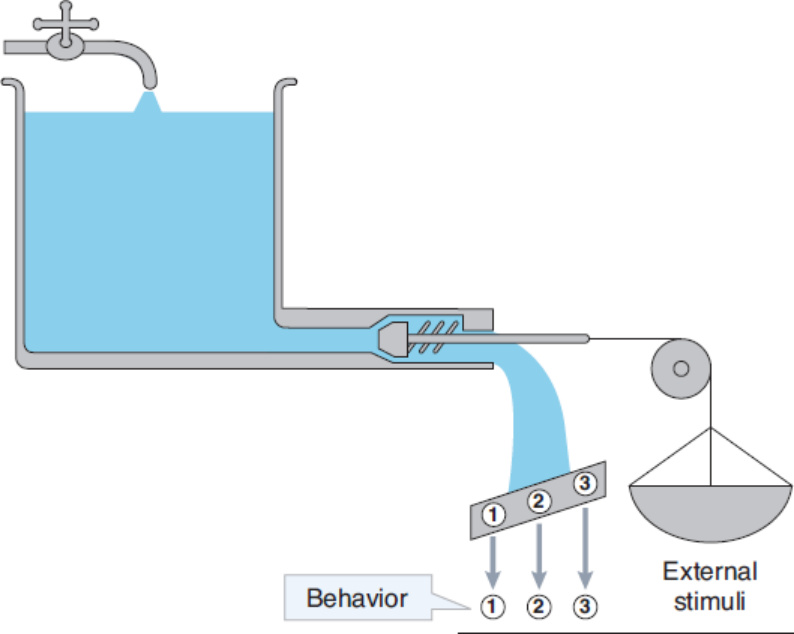
Hình 5.2: Quan niệm thủy lực về thúc đẩy của Konrad Lorenz. Áp lực thủy lực tạo ra "thúc đẩy" trong phép ẩn dụ này được giả định là được tạo ra nội tại và một cách cấu thành (vòi nước), chứ không được kích phát bởi sự hiện diện của một kích thích bên ngoài. Tuy nhiên, Lorenz đã thừa nhận khả năng của các tác nhân kích phát bên ngoài trong các phiên bản sau của lý thuyết ông. "1, 2, và 3" là các hành vi khác nhau được "giải phóng" ở các mức áp lực thủy lực và/hoặc sức mạnh của các tác nhân bên ngoài khác nhau. Hình được chỉnh sửa với sự cho phép từ Anderson 2016.
Hiện nay, trong khi bằng chứng đang bắt đầu hé lộ kiến trúc thần kinh của các trạng thái động lực như đói hay khát (Sternson và Eiselt 2017), điều tương tự chưa thể nói được về các trạng thái "thúc đẩy" (ít nhất là như được hình dung bởi Lorenz). Một phần lý do là tâm lý học đã thao tác hóa "động lực" như một trạng thái nội tại có thể được đo bằng thực nghiệm thông qua các phép học công cụ (operant) dẫn dắt bởi suất thưởng. Ngược lại, không có các phép thử sánh được cho các trạng thái "thúc đẩy" dựa trên các phương pháp của tâm lý học thực nghiệm.
Ở một mức nào đó, sự khác biệt giữa "thúc đẩy" và "động lực" có thể phần lớn mang tính ngữ nghĩa: trong khi các nhà tâm lý học và tập tính học có thể tranh cãi về ý nghĩa của chúng, não có thể không "biết" sự khác biệt. Nói cách khác, mặc dù "động lực," "sự hưng phấn," "thúc đẩy," và "cảm xúc" có thể hữu ích như những
sơ đồ phân loại heuristic để hình dung và phân biệt các loại trạng thái nội tại khác nhau, không có định luật tự nhiên căn bản nào nói rằng các trạng thái này phải tồn tại như những kiểu hoạt động não riêng biệt và tách rời được, hay rằng tất cả các trạng thái nội tại liên quan đến hành vi phải rơi vào một trong các hạng mục này. Đó là lý do chúng tôi giữ một thái độ buông lơi đối với những khác biệt có thể có giữa các trạng thái cảm xúc và các trạng thái MAD: việc bạn có tin rằng chúng cần phải khác biệt hay không thực sự không tạo ra khác biệt nào đối với những gì chúng tôi viết ở đây về các đặc tính căn bản của các cảm xúc.
Động Lực Đối Lập Với Cảm Xúc
Sự khác biệt giữa động lực và cảm xúc khá tinh tế, và một phần là vấn đề ngữ nghĩa. Ví dụ, "đói" có phải là một cảm xúc không? Hầu hết các nhà tâm lý học sẽ nói không; đói là một trạng thái "động lực" hay một trạng thái "cân bằng nội môi." Tuy nhiên, nó có một số đặc điểm chung với các cảm xúc (bao gồm, ở người, một cảm giác chủ quan về trạng thái), đến mức ít nhất một nhà nghiên cứu đã gọi đói, khát, đau, và ngứa là các cảm xúc "cân bằng nội môi" (Craig 2002): các cảm xúc hoạt động để tái lập các "điểm đặt" ổn định định nghĩa các điều kiện sinh lý tối ưu như nhiệt độ cơ thể lõi, năng lượng trao đổi chất, và hàm lượng nước. Chúng làm điều đó bằng cách thúc đẩy các hành vi hướng mục tiêu khôi phục các mất cân bằng trong hệ thống; ví dụ, đói thúc đẩy hành vi tìm kiếm thức ăn (tìm kiếm thức ăn) và hành vi tiêu thụ (ăn thức ăn) nhằm khôi phục các thiếu hụt năng lượng do thiếu calo (tức là đói ăn). Động lực cũng có thể thúc đẩy hành vi khôi phục các mất cân bằng do dư thừa, chứ không phải thiếu hụt, các thông số sinh lý: thời tiết nóng khiến động vật tìm bóng mát (hay con người tìm điều hòa không khí), nhằm hạ nhiệt độ cơ thể lõi và ngăn mất nước.
Tuy nhiên, như Darwin đã lưu ý (Darwin 1872/1965), các cảm xúc cũng thúc đẩy hành vi hướng mục tiêu: sợ hãi thúc đẩy đứng hình hay bỏ chạy để đạt được "mục tiêu" thoát khỏi sự săn mồi. Tuy nhiên, các cảm xúc có thể linh hoạt hơn các động lực trong phạm vi hành vi mà chúng có thể thúc đẩy, tùy ngữ cảnh; ngược lại, các động lực có xu hướng cụ thể hơn trong các hành vi mà chúng thúc đẩy (ví dụ, "tìm và tiêu thụ thức ăn hay nước"). Hơn nữa, trái với các cảm xúc, vốn thường được kích phát bởi
các tín hiệu cảm giác ngoài cơ thể (bên ngoài) (ví dụ, sự hiện diện của một kẻ săn mồi), các động lực thường được kích phát bởi các tín hiệu cảm nhận nội tạng (nội tại) báo hiệu một mất cân bằng nội môi trong cơ thể (dù động lực cũng có thể được kích phát bởi các kích thích bên ngoài như tiền bạc). Một khác biệt quan trọng khác là một trạng thái động lực (giống một thúc đẩy) thường bị kết thúc sau khi đối tượng mục tiêu đạt được: chúng ta không còn cảm thấy đói sau khi đã ăn. Ngược lại, các trạng thái cảm xúc có thể bền bỉ sau khi "mục tiêu" đạt được (chúng ta có thể tiếp tục cảm thấy sợ hãi dư âm trong một khoảng thời gian dài ngay cả sau khi thoát khỏi một cuộc chạm trán nguy hiểm với một kẻ săn mồi, hay cảm thấy giận dữ dai dẳng sau một cuộc cãi vã hung hăng bằng lời hay thể chất).
Bất chấp những khác biệt này, các trạng thái động lực thể hiện một số đặc tính chung mà chúng tôi đã phác thảo như các đặc tính của các trạng thái cảm xúc ở chương 3. Chúng bao gồm tính tích cực–tiêu cực (một trạng thái động lực có thể được trải nghiệm là dễ chịu hay khó chịu); khả năng mở rộng (cường độ của một trạng thái động lực có thể thấp hay cao hơn, tùy mức "cần" hay "muốn"); tính bền bỉ (các trạng thái động lực có thể kéo dài; tuy nhiên, như đã nói, chúng thường bị dập tắt nhanh sau khi cân bằng nội môi được khôi phục); ưu tiên trong kiểm soát hành vi (nếu bạn đói, bạn sẽ ngừng chơi cờ và đi đến tủ lạnh, và bạn càng đói thì càng khó chống lại động lực này); và các hiệu ứng đa thành phần cùng sự điều phối của chúng (ví dụ, đói gây ra các thay đổi sinh lý và hormone cũng như hành vi). Tuy nhiên, trái với các cảm xúc, các động lực thường không phục vụ một chức năng giao tiếp xã hội (ngoại trừ trường hợp một em bé đói khóc để thu hút mẹ cho nó bú). Hơn nữa, sự tham gia của chúng vào việc học ít trực tiếp hơn so với các cảm xúc: trong khi đói có lẽ có thể tăng cường việc học, ví dụ bằng cách cải thiện sự liên kết giữa một vị trí vật lý và sự hiện diện của thức ăn, vẫn chưa rõ liệu chính trạng thái đói (nhu cầu thức ăn) có thể được gợi ra có điều kiện bởi một kích thích trung tính ở một con vật no, theo cùng cách một kích thích có điều kiện có thể gợi ra trạng thái sợ hãi hay không (Fanselow 1984). Dù vậy, việc ăn tăng lên có thể được thúc đẩy ở các con vật no bằng cách tiếp xúc với một CS trước đó được liên kết với thức ăn.
Khi chúng ta hiểu não đầy đủ hơn so với hiện tại, có thể hóa ra các cấu trúc tâm lý học như "động lực," "sự hưng phấn," "thúc đẩy," và "cảm xúc" không ánh xạ lên các cơ chế sinh học thần kinh có thể tách bạch một cách rõ ràng. Quả thật, ở một số điểm những từ này có thể không còn
cần thiết để giải thích cách não cho phép một sinh vật thích nghi với môi trường của nó bằng cách kiểm soát hành vi của nó, một khi chúng ta đã hiểu các chức năng não này ở mức chi tiết cơ chế đủ sâu. Lấy ví dụ, các thuật ngữ như "specification," "determination," và "commitment" được phát triển bởi người đoạt giải Nobel Hans Spemann để giải thích cách các tế bào phôi nguyên thủy dần bị khóa chặt vào một số phận phát triển cụ thể, dựa trên các thí nghiệm cấy ghép phôi kinh điển của ông thực hiện trong những năm 1920. Nhưng các khái niệm này không bị bao hàm bởi, cũng không cần thiết cho, việc hiểu các cơ chế phân tử và tế bào của sự phát triển phôi được phơi bày bởi phân tích di truyền sau đó về sự hình thành kiểu hình ở Drosophila và C. elegans trong những năm 1980 (Lawrence 1992). Các hệ thuật ngữ có thể đến rồi đi, nhưng các cơ chế sinh học, nhân quả nền tảng mà chúng ta muốn hiểu vẫn giữ nguyên; câu hỏi quan trọng là cách tốt nhất để đánh giá khi nào chúng ta đã hiểu được điều mà chúng ta đã tìm cách giải thích.
Thuốc Tâm Thần, Mô Hình Động Vật, Và Các Cảm Xúc
Một cách để đánh giá liệu chúng ta đã hiểu đúng một quá trình hay cơ chế sinh học là xem chúng ta có thể dùng thông tin đó để phát triển một liệu pháp mới cho một rối loạn liên quan đến quá trình đó ở người hay không. Xét theo hướng này, việc dùng các mô hình động vật để phát triển các thuốc điều trị các rối loạn tâm thần, chẳng hạn trầm cảm, đã thất bại một cách gây bức xúc. Hầu hết các thuốc chống trầm cảm, bao gồm các chất ức chế tái hấp thu serotonin chọn lọc (SSRI) như Prozac, được phát hiện một cách tình cờ. Mặc dù chúng có thể hiệu quả, vì tương đối không đặc hiệu, chúng cũng có thể gây ra các tác dụng phụ khó chịu (ví dụ, mất chức năng tình dục bình thường hay làm giảm sáng tạo) khiến nhiều người ngừng dùng chúng. Nhà văn xuất sắc David Foster Wallace, tác giả cuốn Infinite Jest, đã ngừng dùng thuốc mà ông đang dùng để chống trầm cảm vì các tác dụng phụ của nó và bị tái phát, dẫn đến tự sát ở tuổi bốn mươi sáu.
Bất chấp những khiếm khuyết của các liệu pháp hiện tại, chưa có một thuốc căn bản mới nào cho một rối loạn tâm thần trong năm mươi năm qua; quả thật, hầu hết các công ty dược phẩm đã từ bỏ các chương trình phát triển thuốc tâm thần của họ, vì các thất bại lâm sàng tốn kém.
Tại sao lại như vậy? Một lời giải thích, như được lập luận gần đây bởi Joe LeDoux và Danny Pine (2016), là các phép thử hành vi trên loài gặm nhấm truyền thống được dùng để đánh giá hiệu lực của các thuốc tâm thần đang gây hiểu lầm, vì các thuốc này nhằm điều trị các rối loạn của các cảm giác chủ quan ở người ("tôi cảm thấy quá lo âu, hay trầm cảm"), và các cảm giác như vậy không thể được đo trực tiếp ở động vật. Mặc dù một số thuốc chống lo âu (anxiolytic) có thể có hiệu ứng ở động vật (hình 5.3B, (1)), theo quan điểm này chúng không nhất thiết ảnh hưởng đến cùng các quá trình não tạo ra các cảm giác chủ quan lo âu ở người (hình 5.3B, (2)).
Trong khi lập luận này có thể hợp lệ, nó vi phạm dao kéo Occam, một nguyên lý căn bản trong khoa học đôi khi được gọi là nguyên lý tiết kiệm. Theo nguyên lý này, nếu có hai lời giải thích hay lý thuyết cạnh tranh cho một quá trình quan sát được, lời giải thích đơn giản nhất thường đúng. Vậy, một lời giải thích đơn giản hơn cho hiệu ứng của các thuốc chống lo âu ở người và động vật là chúng chia sẻ một cơ chế tác động lõi chung ở cả hai loài (hình 5.3A, (1)), thay vì hai cơ chế khác nhau (hình 5.3, (1) và (2)). Điều này sẽ giải thích tại sao một số thuốc làm giảm lo âu ở người có thể làm dịu các vật nuôi có vẻ lo âu. Tuy nhiên, mô hình đơn giản hơn này (hình 5.3A) ngụ ý rằng động vật có thể chia sẻ với con người một trạng thái lo âu trung ương chung, vốn được trải nghiệm chủ quan ở người (và có thể có hay không có ở động vật; hình 5.3A); nói cách khác, rằng người và động vật có các trạng thái cảm xúc tương tự. Nhưng điều này mâu thuẫn với quan điểm rằng động vật không có cảm xúc (hình 5.1), được nhà tập tính học Niko Tinbergen lập luận là tiết kiệm hơn so với việc viện đến các trạng thái cảm xúc ở động vật. Vì vậy, chúng ta rơi vào một mâu thuẫn logic nếu cố dùng dao kéo Occam để lập luận cả chống lại sự tồn tại của các cảm giác cảm xúc ở động vật lẫn giải thích các hiệu ứng tương tự của các thuốc chống lo âu ở cả động vật và người. Sau cùng, có vẻ đơn giản nhất là lập luận rằng động vật và người quả thực chia sẻ các trạng thái cảm xúc chung mà các nền tảng thần kinh của chúng là mục tiêu của các thuốc chống lo âu, và rằng các trạng thái này cũng có thể đi kèm các cảm giác ở người (hình 5.3A) (Fanselow và Pennington 2018).
Nhưng nếu quan điểm này đúng, tại sao rất nhiều thuốc tâm thần thực nghiệm mà ban đầu có vẻ hiệu quả ở các mô hình động vật (chuột cống, chuột nhắt) lại thất bại khi được kiểm thử ở người? Có nhiều lý do. Trước hết, sinh lý của loài gặm nhấm và người khác nhau, không chỉ ở não mà cả phần còn lại của cơ thể. Nhiều thuốc đã chữa
ung thư ở chuột nhắt đã thất bại khi được kiểm thử ở người; tuy nhiên, các liệu pháp miễn dịch mới cho ung thư đang chứng minh rất hiệu quả ở người được phát triển dựa trên các nghiên cứu cơ bản về chức năng hệ miễn dịch ở chuột nhắt. Thứ hai, các phép thử (bài kiểm tra) được dùng để đánh giá các thuốc tâm thần ở loài gặm nhấm thường dùng các hành vi mà con người không biểu hiện—ví dụ vẫy đuôi, một hành động phòng vệ mà loài gặm nhấm thể hiện khi bị đe dọa. Vì vậy, sẽ không đáng ngạc nhiên nếu một thuốc chặn vẫy đuôi ở chuột nhắt không có hiệu ứng ở người—loài không có đuôi. Nếu chúng ta có thể thu được bằng chứng rõ hơn về một chữ ký thần kinh của các trạng thái cảm xúc ở người, chúng ta có thể kiểm thử xem các chữ ký tương tự có thể được thấy ở động vật hay không. Nếu vậy, chúng ta có thể kiểm thử xem các thuốc chống lo âu có tác động lên cùng các mạch thần kinh ở động vật như chúng làm ở người hay không. Về lâu dài, có thể hóa ra khả thi để đánh giá các thuốc tâm thần mới dựa trên hiệu ứng của chúng lên các kiểu hoạt động não cụ thể thay vì các hành vi, trước ở động vật rồi ở người.
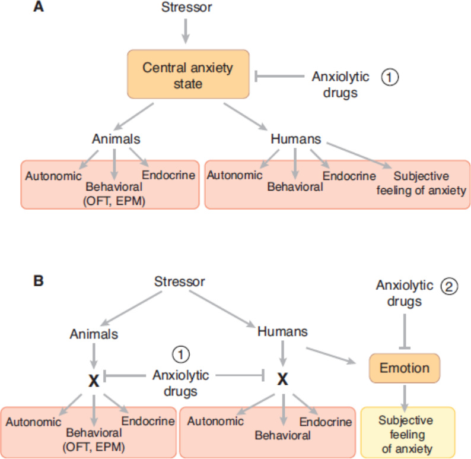
Hình 5.3: Hai lời giải thích thay thế cho tác động của các thuốc chống lo âu. (A) Các thuốc chống lo âu làm dịu một trạng thái cảm xúc trung ương của lo âu, vốn chung cho người và động vật. Theo quan điểm này, lo âu được biểu hiện ở cả hai loài bằng các phản ứng tự chủ, hành vi, và nội tiết chung; ở người, nó được kèm thêm bởi các cảm giác chủ quan (có thể cũng hiện diện ở động vật nhưng không được biết nên không được chỉ ra vì lý do đó). (B) Mô hình thay thế trong đó các cảm xúc được quy cho người nhưng không cho động vật. Để giải thích các hiệu ứng chung của các thuốc chống lo âu ở động vật và người, đồng thời vẫn bám vào quan điểm này, cần viện đến ít nhất hai cơ chế tác động riêng biệt của thuốc chống lo âu ở người: một cơ chế (B1) ức chế một quá trình hay trạng thái ("X") không phải là cảm xúc, nhưng kiểm soát các phản ứng sinh lý chung đối với các tác nhân gây stress ở người và động vật; một cơ chế thứ hai, đặc hữu ở người (B2), ức chế thành phần cảm xúc của lo âu. Mô hình (A) tiết kiệm hơn mô hình (B) trong việc giải thích tác động của thuốc chống lo âu, nhưng một số người coi mô hình (B) tiết kiệm hơn mô hình (A) vì nó không quy các cảm giác chủ quan cho động vật. OFT, EPM: Bài kiểm tra cánh đồng mở, mê cung chữ thập nâng (hai bài kiểm tra hành vi được dùng để đo lo âu ở động vật; xem hình 6.6).
Hộp 5.4. Quang Di Truyền Học Và Di Truyền Học Ở Khỉ.
Việc áp dụng quang di truyền học (hộp 5.1) ở các linh trưởng không phải người (NHP) đối mặt với một số thách thức không có trong việc áp dụng ở chuột nhắt. Trước hết và trên hết, vì não NHP lớn hơn nhiều so với não chuột nhắt, có những giới hạn lớn về tỷ lệ tương đối của thể tích não có thể được chiếu sáng bằng các sợi quang thông thường, hay nhiễm virus bằng các virus adeno-associated (AAV) thông thường, so với chuột nhắt. (Có lẽ vì hai lý do này, các nỗ lực ban đầu về quang di truyền học ở NHP đã thành công trong việc gợi ra hoạt động xung cục bộ, nhưng không có các phản ứng hành vi.) Thứ hai, mặc dù chuyển gen dòng mầm tránh được các giới hạn không gian do truyền virus nội sọ gây ra, việc tạo các dòng NHP chuyển gen vừa tốn kém vừa kéo dài (do thời gian mang thai dài của chúng). Thứ ba, với một vài ngoại lệ (xem dưới đây), chúng ta thiếu các yếu tố điều hòa di truyền đặc hiệu kiểu tế bào (còn gọi là "promoter") đủ nhỏ để vừa với AAV (kiểu vector virus phổ biến nhất) nhằm biểu hiện các opsin ở các lớp nơ-ron cụ thể. Thứ tư, kiểm chứng vị trí và tính đặc hiệu của biểu hiện opsin sau các thí nghiệm quang di truyền là thiết yếu, nhưng hiện đòi hỏi giết con vật; NHP rất quý, và các nhà nghiên cứu thường dùng cùng một con vật trong nhiều tháng hay thậm chí nhiều năm thí nghiệm, do đó họ ngần ngại giết một con vật quý giá như vậy chỉ để kiểm chứng mô học. May thay, một số trở ngại này đang được vượt qua chậm nhưng ổn định. Ví dụ, các công nghệ mới gần đây đã được phát triển để chiếu sáng não NHP trên các diện tích bề mặt lớn hơn >100 lần so với một sợi quang thông thường, cho phép kích hoạt các thể tích mô não lớn hơn nhiều (~10 mm³; Acker et al. 2017). Và một số bài báo gần đây đã báo cáo dùng các promoter đặc hiệu kiểu tế bào để biểu hiện channelrhodopsin-2 ở các kiểu tế bào cụ thể ở NHP, chẳng hạn các nơ-ron dopaminergic của vùng đốt non vỏ não hay các tế bào Purkinje tiểu não. (Tuy nhiên, số lượng promoter đặc hiệu kiểu tế bào khác nhau sẵn dùng cho NHP, hay nói cho đúng là cho loài gặm nhấm, hiện rất ít.) Vấn đề chuyển đủ thể tích virus để nhiễm một thể tích mô não đủ lớn có thể sớm được giải quyết bằng các "serotype" AAV (các virus có tính đặc hiệu nhắm đích tế bào hay mô cụ thể) có thể vượt qua hàng rào máu–não, để chúng có thể được chuyển qua đường tĩnh mạch thay vì qua
tiêm nội sọ. Hơn nữa, khỉ marmoset, vốn thuận lợi hơn cho chuyển gen vì thời gian thế hệ ngắn hơn và xu hướng sinh đôi, đang được phát triển như một lựa chọn thay thế khỉ rhesus-macaque cho các thí nghiệm di truyền. Các cách tiếp cận chuyển gen dòng mầm như vậy ở khỉ đang được hỗ trợ thêm bởi việc áp dụng công nghệ "CRISPR/cas9" nổi tiếng, vốn tăng cường rất nhiều hiệu quả và tính đặc hiệu của việc khâu các mảnh DNA ngoại lai vào các nhiễm sắc thể khỉ. Một lĩnh vực còn kém phát triển, rất liên quan đến chủ đề của cuốn sách này, là thiết lập các phép thử định lượng tinh vi về các hành vi cảm xúc ở NHP, hiện đang cực kỳ hạn chế. Nhìn chung, triển vọng áp dụng quang di truyền học và hóa di truyền học để nghiên cứu cảm xúc ở NHP có vẻ sáng sủa hơn nhiều so với chỉ vài năm trước. Tuy nhiên, chi phí cao để duy trì NHP, yêu cầu số lượng động vật lớn để nhân giống các dòng chuyển gen, và nhu cầu giết động vật để phân tích mô học, cùng với các quy định nghiêm ngặt đặt lên thí nghiệm NHP ở Hoa Kỳ, có thể sẽ giới hạn việc áp dụng các cách tiếp cận này vào một vài trung tâm được tài trợ tốt, đặc biệt là ở châu Á, trong tương lai gần.
Hộp 5.5. Quang Di Truyền Học Ở Người.
Quang di truyền học sẽ được dùng để điều trị các rối loạn tâm thần và cảm xúc ở người không? Có thể, nhưng khó mà điều đó sẽ xảy ra sớm, vì vài lý do. Trước hết (và trên hết), nó đòi hỏi chỉnh sửa gen các nơ-ron trong não, nhằm biểu hiện channelrhodopsin hay halorhodopsin (hay các opsin khác). Vì chuyển gen dòng mầm hiện bị cấm ở người, các vector virus sẽ phải được dùng để chuyển các gen opsin. Có một rào cản quản lý cao cho một phương thức trị liệu như vậy do FDA đặt ra, vì các gen opsin không phải là gen người, mà là các gen ngoại lai từ vi sinh vật, có thể chứng minh độc hại hay có thể kích phát một phản ứng miễn dịch. Có thể bạn sẽ ngạc nhiên khi biết rằng mãi đến tháng Mười năm 2017 FDA mới cuối cùng phê duyệt liệu pháp gen đầu tiên dựa trên vector virus
cho một rối loạn não (bạch cầu dưỡng chất kém, hay ALD), dùng một virus HIV biến đổi để chuyển gen. Và trong trường hợp đó, gen thậm chí không được chuyển trực tiếp vào não; thay vào đó nó chỉ được dùng để thay thế một gen khiếm khuyết trong các tế bào tủy xương, vốn sau đó tạo ra các tế bào miễn dịch được "chữa" bằng gen lưu thông qua các mạch máu trong não.
Quan trọng là, căn cứ quản lý cho kiểu liệu pháp gen này rất khác với căn cứ cho quang di truyền học: trong trường hợp ALD, một gen khiếm khuyết được thay thế, thiếu nó những đứa trẻ mắc bệnh sẽ chết. Trong trường hợp quang di truyền học, không có "gen khiếm khuyết" nào được thay thế; thay vào đó, một gen ngoại lai (opsin) được chèn vào các nơ-ron để tăng hay giảm tốc độ phát xung của chúng, với hy vọng làm dịu các triệu chứng của một rối loạn như trầm cảm hay lo âu. Rào cản quản lý cao hơn khi các lợi ích không rõ ràng là cứu sống, và các rủi ro liên quan cao hơn. Thứ hai, liệu pháp (như thực hành hiện nay) sẽ đòi hỏi tiêm virus vào não và cấy ghép các sợi quang (phần cứng), một thủ tục xâm lấn cao. Thứ ba, chúng ta hiện thiếu khả năng hướng biểu hiện opsin vào các kiểu tế bào cụ thể trong não người, không chỉ vì chúng ta chưa có một bản điều tra các kiểu tế bào trong não người, mà còn vì chúng ta thiếu các "địa chỉ" di truyền cần thiết của các kiểu tế bào đó (các "promoter"). Thứ tư, ngay cả khi chúng ta có các phương pháp không xâm lấn để chuyển virus và các promoter đặc hiệu kiểu tế bào để nhắm vào các kiểu tế bào người cụ thể, quang di truyền học vẫn sẽ đòi hỏi cấy ghép vĩnh viễn các sợi quang sâu vào não, và các hệ laser di động dưới điều khiển vòng kín để phát các xung ánh sáng cho kích thích—nói cách khác, một lượng lớn phần cứng di động gồm các cấu phần dễ vỡ có thể dễ dàng gãy. Dù vậy, các thử nghiệm lâm sàng đang được lên kế hoạch để kiểm thử việc dùng quang di truyền học ở mắt nhằm điều trị một số rối loạn thoái hóa võng mạc nhất định. Khả năng cao hơn là các cách tiếp cận hóa di truyền để thao tác hoạt động nơ-ron (ví dụ, DREADD; xem hộp 5.1 và thuật ngữ) sẽ được dùng để điều trị các rối loạn thần kinh và tâm thần kinh trước khi các phương pháp quang di truyền được dùng. Quả thật, các thử nghiệm lâm sàng đang được lên kế hoạch ở Anh để kiểm thử việc dùng DREADD ức chế
để giảm các cơn co giật trong động kinh, bằng cách làm im lặng các nơ-ron vỏ não tại tiêu điểm co giật.
Tóm Tắt
- Trong chương này, chúng ta đã thảo luận một số cân nhắc chung nằm dưới tầm quan trọng của việc nghiên cứu thần kinh học cảm xúc ở động vật. Chúng ta đã mô tả các loại câu hỏi có thể đặt ra về các hệ cảm xúc ở động vật và một số công cụ mới đang được dùng để giải quyết chúng, chẳng hạn quang di truyền học. Hầu hết các công cụ này không thể được dùng ở người.
- Quang di truyền học, bất chấp những hiểu lầm thường gặp, không phải là một kỹ thuật chỉ để kích hoạt nhân tạo các nơ-ron, cũng không phải là một kỹ thuật để chụp ảnh hoạt động thần kinh. Nó cũng có thể được dùng để làm im lặng hay ức chế một cách đảo ngược các quần thể nơ-ron cụ thể. Cùng với nhau, các công cụ này, cùng các phương pháp dược di truyền để kích hoạt hay ức chế các kiểu tế bào nơ-ron, cho phép kiểm tra tính cần thiết và tính đủ của các quần thể tế bào cụ thể đối với các hành vi hay trạng thái nội tại cụ thể ở động vật.
- Các phương pháp quang di truyền để thao tác hoạt động nơ-ron đang được bổ trợ bởi các công nghệ mới để chụp ảnh hoạt động trong các cấu trúc não sâu với độ phân giải tế bào, dùng các chỉ báo huỳnh quang nhạy canxi được mã hóa bởi gen. Việc áp dụng kết hợp bộ công nghệ này đang khiến việc ghi và "phát lại" các kiểu hoạt động nơ-ron chính xác về không-gian–thời gian liên quan đến một hành vi hay trạng thái nội tại cụ thể trở nên khả thi.
- Chúng ta đã thảo luận mối quan hệ giữa các trạng thái cảm xúc và các trạng thái nội tại khác như động lực, sự hưng phấn, và thúc đẩy (các trạng thái MAD). Có một đồng thuận chung rằng các trạng thái MAD có thể được nghiên cứu ở động vật, nhưng một số nhà nghiên cứu định nghĩa "các cảm xúc" là các trạng thái chủ quan chỉ có thể được nghiên cứu ở người.
- Chúng ta đã thảo luận những ưu điểm và hạn chế của việc kiểm thử các thuốc cho các bệnh tâm thần của người ở các mô hình động vật, và lập luận từ dao kéo Occam (nguyên lý tiết kiệm) rằng nhiều khả năng sẽ có một
- cơ chế chung qua đó các thuốc chống lo âu làm dịu các triệu chứng lo âu ở người và các động vật có vú khác.
Chương 6 — Thần Kinh Học Cảm Xúc Ở Loài Gặm Nhấm
Nếu chúng ta muốn nghiên cứu sinh học thần kinh của các trạng thái cảm xúc ở động vật, chúng ta cần có một cách để gợi ra những trạng thái đó. Các cảm xúc, như nguồn gốc từ nghĩa của từ này ngụ ý, về bản chất là mang tính phản ứng; chúng liên quan đến các chuyển động (các hành vi) được kích hoạt bởi các kích thích trong thế giới bên ngoài cũng như bởi sự biểu hiện nội tại của các kích thích và hành vi. Như chúng ta đã lưu ý, những biểu hiện nội tại đó cũng có thể được tiếp cận thuần túy từ trí nhớ hay trong các giấc mơ, điều mà chúng ta con người thường xuyên trải nghiệm, nhưng về điều này người ta còn biết rất ít ở động vật. Hầu hết các nhà thần kinh học nghiên cứu cảm xúc ở động vật quan tâm đến việc hiểu cách một kích thích bên ngoài gợi ra một phản ứng cảm xúc, vì các kích thích bên ngoài cho phép kiểm soát thực nghiệm tốt hơn. Ngược lại, nhiều nghiên cứu ở người (xem chương 8) dựa vào các biểu hiện nội tại của các kích thích (chẳng hạn, yêu cầu người tham gia nhớ lại các sự kiện cảm xúc trong cuộc đời họ).
Trong khi các nghiên cứu về cảm xúc ở động vật thường dùng các kích thích có thể kiểm soát bằng thực nghiệm như những chất gây ra cảm xúc, một lựa chọn tiếp theo lại tùy thuộc vào việc người ta muốn gợi ra cảm xúc bằng một kích thích mà con vật thể hiện kiểu phản ứng bẩm sinh, dựa trên sự tiến hóa và di truyền của nó, hay bằng một kích thích mà con vật đã học cách phản ứng, chẳng hạn thông qua huấn luyện kéo dài (hộp 6.1). Mỗi cách tiếp cận đều có ưu điểm và nhược điểm riêng. Trong các phần sau, chúng ta sẽ mô tả những gì đã được học, và những gì vẫn còn chưa biết, về sinh học thần kinh của các phản ứng cảm xúc được học và các phản ứng cảm xúc bẩm sinh, bằng các ví dụ tương ứng là sợ hãi có điều kiện và sợ hãi không điều kiện, tập trung ở đây vào các nghiên cứu ở loài gặm nhấm rồi sau đó (chương 7) ở ruồi giấm Drosophila. (Một lần nữa, chúng ta dùng thuật ngữ sợ hãi để chỉ một trạng thái cảm xúc nội tại với tư cách ví dụ minh họa, mà không nhất thiết gán cho con vật bất kỳ ý thức hay cảm giác chủ quan nào.) Chúng ta cũng thảo luận các hành vi cảm xúc liên quan, bao gồm cả sự hung hăng, mà ở người sẽ đi kèm với các cảm giác chủ quan như "giận dữ" hay "cuồng nộ." Đây là những ví dụ mẫu có giá trị trong các nghiên cứu cảm xúc trên động vật, nhưng chúng mới chỉ chạm đến bề mặt. Chúng cũng đặt ra những câu hỏi mở quan trọng: những chủ đề rút ra từ các ví dụ này có áp dụng cho cả các cảm xúc xã hội không? Và cho cả các cảm xúc có tính tích cực không? Chúng ta không cung cấp điều gì gần với một cuộc khảo sát toàn diện về tất cả các hệ cảm xúc khác nhau đã được nghiên cứu ở động vật, mà thay vào đó chọn cho người đọc một cái nhìn thoáng qua về các hệ mô hình mà các chi tiết đã được làm rõ nhất cho đến nay bằng các phương pháp hiện đại.
Hộp 6.1. Hành Vi Đứng Hình Bẩm Sinh So Với Hành Vi Đứng Hình Được Học.
Một nguồn nhầm lẫn thường gặp, phát sinh trong cuộc thảo luận về các phản ứng cảm xúc bẩm sinh (hay "bản năng") so với các phản ứng cảm xúc được học, là câu hỏi liệu chính phản ứng đó có được học, hay liệu đó là các liên kết với các kích thích mới là thứ được học. Đứng hình và bỏ chạy thường được xem là các hành vi phòng vệ bản năng; động vật không phải học cách thực hiện chúng. Tuy nhiên, các kích thích gợi ra những hành vi này có thể làm điều đó theo cách "bẩm sinh," nghĩa là không cần huấn luyện, hay theo cách "có điều kiện," nghĩa là chỉ sau khi huấn luyện. Chẳng hạn, chuột nhắt không đứng hình khi tiếp xúc với một âm 2 kHz, nhưng sẽ đứng hình nếu âm đó được ghép cặp lặp đi lặp lại với một cú sốc điện (hình 6.1). Ngược lại, đứng hình và bỏ chạy có thể được gợi ra bởi một số kích thích thị giác cụ thể (chẳng hạn, một đĩa nở dần trùm từ trên xuống, hình 2.5) ở chuột nhắt chưa qua huấn luyện, ngay lần tiếp xúc đầu tiên. Tuy nhiên, đã có người lập luận rằng mọi hành vi đứng hình quan sát được trong phòng thí nghiệm đều là có điều kiện. Theo quan điểm này, phản ứng không điều kiện (UR) đối với một cú sốc điện chân (kích thích không điều kiện [US]) là bùng nổ hoạt động; sự đứng hình thường theo sau bùng nổ đó sau khi cú sốc kết thúc là một phản ứng có điều kiện (hay "điều kiện") được gợi ra bởi bối cảnh mà việc huấn luyện diễn ra (Fanselow 1980). Bằng chứng được trích dẫn để ủng hộ quan điểm này là nếu cú sốc điện chân được đưa ngay sau khi con vật được đưa vào chuồng huấn luyện—trước khi nó có thời gian tìm tòi và tạo ra một biểu hiện nội tại về bối cảnh—thì không quan sát thấy sự đứng hình sau sốc. Tuy nhiên, một lần nữa, điều này không có nghĩa là con vật phải học cách đứng hình, mà nghĩa là sự đứng hình trong các điều kiện này được gợi ra như một hệ quả của một liên kết được học giữa bối cảnh (chuồng huấn luyện) và một sự kiện gây khó chịu (cú sốc điện chân).
Một sự khái quát hóa cực đoan của quan điểm này là không có thứ gì gọi là "đứng hình bẩm sinh"—rằng mọi trường hợp hành vi đứng hình đều phản ánh một liên kết được học với bối cảnh. Theo lý luận này, nếu một con vật được quan sát thấy đứng hình trong một bối cảnh nhất định, thì theo định nghĩa nó đã bị điều kiện hóa, và sẽ đứng hình bất cứ khi nào được tiếp xúc với bối cảnh đó. Nhưng dự đoán này mâu thuẫn với các thí nghiệm gần đây, trong đó sự đứng hình được gợi ra ở chuồng nhà của con vật bằng kích thích quang di truyền các nơ-ron Sf1+ ở phân vùng lưng-trong của vùng dưới đồi trung-thất (VMHdm; xem phần chính). Một khi kích thích quang di truyền kết thúc, không quan sát thấy sự đứng hình nào nữa trong chuồng nhà, ngụ ý rằng việc điều kiện hóa với bối cảnh đã không xảy ra (Kunwar et al. 2015). Các dữ liệu này cung cấp bằng chứng rằng việc kích hoạt nhân tạo một số vùng não nhất định có thể tạo ra sự đứng hình không điều kiện. Vì những vùng này thường được kích hoạt khi động vật tiếp xúc với một kẻ săn mồi và đứng hình, có vẻ hợp lý khi lập luận rằng não chứa các mạch thần kinh thực sự có thể trung gian sự đứng hình không điều kiện đáp ứng với kẻ săn mồi.
Cảm Xúc, Sợ Hãi Và Hạch Hạnh Nhân
Cấu trúc thần kinh được nghiên cứu mạnh mẽ nhất liên quan đến việc tạo ra các trạng thái giống sợ hãi là hạch hạnh nhân, một cấu trúc phức tạp chứa ít nhất mười hai phân vùng khác nhau (xem các hình 2.1, 6.2). Hơn nữa, nó hoạt động thông qua sự tương tác rất chặt chẽ với các cấu trúc não khác. Một trong số đó, nhân giường của bó tận cùng, tham gia cùng với các nhân của hạch hạnh nhân trong việc xử lý lo âu (xem dưới đây và hình 6.6B). Các nghiên cứu về hạch hạnh nhân đã nhận được quá nhiều sự chú ý, cả trên báo chí phổ thông lẫn khoa học, đến mức một số người đã đồng nhất sợ hãi với hạch hạnh nhân, hay thậm chí đồng nhất bản thân cảm xúc với hoạt động của hạch hạnh nhân. Tuy nhiên, như chúng ta đã lưu ý ở các chương trước, quan điểm này là đơn giản hóa quá mức và khái quát hóa quá mức; trong khi hạch hạnh nhân đóng một vai trò quan trọng không thể chối cãi trong sợ hãi được học, nó chưa xa là "ghế ngồi của cảm xúc" trong não. Trên thực tế, Joseph LeDoux, người đã thực hiện các công trình tiên phong về vai trò của hạch hạnh nhân trong sợ hãi có điều kiện (LeDoux 1996; 2000), hiện đã diễn giải lại hạch hạnh nhân như một cấu trúc kiểm soát các hành vi phòng vệ (chẳng hạn, đứng hình) chứ không phải các "cảm xúc" (như ông hiện đã định nghĩa lại [LeDoux 2012]): "các cảm giác sợ hãi hay lo âu không phải là sản phẩm của các mạch kiểm soát hành vi phòng vệ" (LeDoux và Pine 2016) (chữ nghiêng của chúng tôi).
Câu phát biểu này có nghĩa là hạch hạnh nhân không liên quan gì đến sợ hãi sao? Nói rộng hơn, nó có nghĩa là các mạch kiểm soát hành vi phòng vệ là cần thiết nhưng không đủ để tạo ra các cảm giác sợ hãi hay lo âu, hay thậm chí chúng không cần thiết để trải nghiệm những cảm giác đó? Chúng tôi sẽ đồng ý với ý trước nhưng phản đối mạnh ý sau; như chúng ta sẽ thấy ở chương 8, có những bệnh nhân thiếu hạch hạnh nhân không trải nghiệm sợ hãi. Vì lý do đó, chúng tôi cảm thấy công trình về hạch hạnh nhân rất liên quan đến câu hỏi các cảm xúc được tạo ra và được biểu diễn trong não thế nào. Trên thực tế, chúng tôi (giống những người khác, bao gồm cả Jaak Panksepp) lập luận rằng các cấu trúc dưới vỏ não kiểm soát hành vi phòng vệ (nghĩa là hạch hạnh nhân, vùng dưới đồi, và các cấu trúc liên quan) có khả năng là thiết yếu cho việc mã hóa các trạng thái cảm xúc trung ương tương ứng—bất kể con vật có hay không có các "cảm giác" chủ quan về những trạng thái đó.
"Điều Kiện Hóa Sợ Hãi" Là Gì?
Vì các công trình cũ hơn về chủ đề này đã được trình bày trong các bài tổng quan toàn diện (Davis 1992; LeDoux 2000) và các cuốn sách (LeDoux 1996), chúng ta sẽ nói ngắn gọn ở đây và giới thiệu độc giả quan tâm đến những nguồn trước đó để biết thêm thông tin. Nghịch lý thay, mô hình điều kiện hóa sợ hãi được phát triển không phải nhằm nghiên cứu bản thân cảm xúc nhiều như nhằm nghiên cứu học tập liên kết. Điều kiện hóa sợ hãi đại diện cho một hình thức điều kiện hóa kiểu Pavlov mà người ta có thể gọi là "học tập cảm xúc": khả năng của não học cách phản ứng với một kích thích trước đó trung tính bằng một phản ứng cảm xúc (Fanselow 1984). LeDoux không còn dùng thuật ngữ "điều kiện hóa sợ hãi" mà thay vào đó gọi nó là "điều kiện hóa phòng vệ" (LeDoux 2012) để nhấn mạnh rằng (theo quan điểm của ông) việc điều kiện hóa này không tạo ra một cảm xúc. Tuy nhiên, đây không phải là một thuật ngữ được chấp nhận rộng rãi; quả thật, tại thời điểm viết cuốn sách này, một tra cứu PubMed bằng "điều kiện hóa phòng vệ" trả về 69 kết quả, trong khi "điều kiện hóa sợ hãi" trả về 4.649 kết quả. Vì chúng ta sẽ lập luận, giống những người khác (Fanselow và Pennington 2018), rằng việc điều kiện hóa như vậy thực sự tạo ra một trạng thái cảm xúc nội tại, và vì sợ hãi là một cảm xúc, chúng ta sẽ tiếp tục dùng thuật ngữ phổ biến hơn "điều kiện hóa sợ hãi."
Trong hình thức học tập đơn giản này, một con vật được tiếp xúc với một "kích thích có điều kiện" (CS) trước đó trung tính, chẳng hạn một âm trung tính, kết thúc đồng thời với một "kích thích không điều kiện" (US) như một cú sốc điện chân (giao thức này được gọi là điều kiện hóa trì hoãn). Sau vài lần ghép cặp như vậy, CS gợi ra sự đứng hình, một phản ứng phòng vệ có điều kiện (CR; Fanselow 1980) (hình 6.1; xem thêm hộp 6.1). Đáng chú ý, các nghiên cứu gần đây đã cho thấy một con chuột cống chỉ được huấn luyện trong một ngày duy nhất có thể thể hiện phản ứng đứng hình ngay cả khi việc kiểm tra bị trì hoãn một năm, cho thấy sự bền bỉ đáng kinh ngạc và giá trị thích nghi của hình thức học tập này. Ở người, sự bền bỉ của các phản ứng sợ hãi được học có thể, trong một số hoàn cảnh nhất định, dẫn đến các rối loạn tâm thần, chẳng hạn rối loạn stress sau sang chấn.
Quan trọng là, phản ứng có điều kiện không chỉ đơn thuần gồm hành vi đứng hình. Thay vào đó, nó gồm cả một chùm các phản ứng sinh lý (tự chủ) và nội tiết (hormone) được phối hợp cũng như các phản ứng hành vi (hình 2.1). Những phản ứng này có thể được đo, chẳng hạn, như nhịp tim tăng (tự chủ) hay mức hormone gây stress trong máu tăng (nội tiết). Chúng cũng bao gồm các thay đổi đo được khác như giảm tiết nước bọt, các thay đổi hô hấp, tăng tiểu tiện và đại tiện, quét mắt và cảnh giác, tăng phản ứng giật mình đáp ứng với một tiếng động lớn, và chải lông (Davis 1992). Chính phản ứng "tổng thể của sinh vật" được phối hợp này (LeDoux 2012) mà chúng tôi lập luận phản ánh việc kích hoạt một trạng thái cảm xúc nội tại (hãy nhớ, đây là một trong các thuộc tính của cảm xúc mà chúng tôi nhấn mạnh ở hình 3.2). Cũng quan trọng cần lưu ý rằng vai trò của hạch hạnh nhân trong điều kiện hóa sợ hãi có thể thể hiện các đặc tính chức năng khác biệt đáng kể ở các con vật rất non (hộp 6.2). Trong cuốn sách này chúng tôi chỉ tập trung vào cảm xúc ở động vật trưởng thành, nhưng tất nhiên sự phát triển cảm xúc là một chủ đề khổng lồ và quan trọng theo cách riêng của nó.
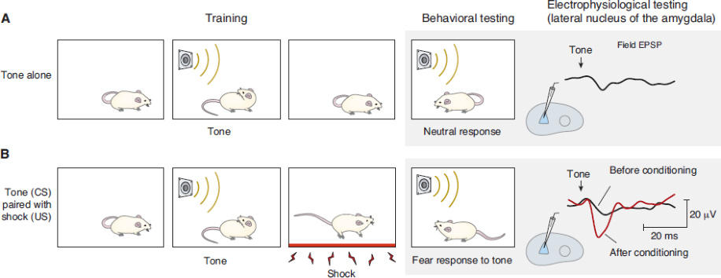
Hình 6.1: Điều kiện hóa sợ hãi kiểu Pavlov. (A) Con vật đối chứng không điều kiện tiếp xúc với một âm 2 kHz không thể hiện phản ứng phòng vệ nào với kích thích này. (B) Nếu âm được phát sao cho kết thúc đồng thời với, hay được theo ngay sau bởi, một cú sốc điện chân, thì con vật thu được một phản ứng đứng hình có điều kiện đối với âm khi được kiểm tra vào ngày hôm sau ("kiểm tra hành vi"). Nếu người ta ghi từ các nơ-ron trong hạch hạnh nhân bên ("kiểm tra điện sinh lý"), người ta thấy các nơ-ron thể hiện một thay đổi lớn về phản ứng (so sánh hai vệt đen và đỏ). Được sao chép với sự cho phép từ Kandel et al. 2013.
Hộp 6.2. Sự Phát Triển Của Cảm Xúc.
Sự phát triển của cảm xúc liên quan đến một sự tương tác phức tạp giữa gen và môi trường, giữa các cơ chế được lập trình bẩm sinh và các liên kết được học. Chẳng hạn, có những hành vi được biểu hiện bẩm sinh, như nở nụ cười, được thấy ngay cả ở trẻ sơ sinh người. Tuy nhiên, chúng được biểu hiện trong nhiều hoàn cảnh, ngay cả khi ngủ. Những hành vi đó, theo thời gian và cùng việc học, được lồng ghép vào các biểu hiện thấy được trong các trạng thái cảm xúc hoàn chỉnh.
Các hành vi cảm xúc được thể hiện ở động vật non và ở trẻ sơ sinh người ủng hộ cách tiếp cận chức năng mà chúng tôi đã nhấn mạnh. Trẻ sơ sinh người điều hướng mạnh các hành vi cảm xúc của mình tùy theo bối cảnh xã hội: có ai đang nhìn hay không, ai sẵn sàng giúp chúng, và chúng nhận được phản hồi gì từ hành vi của mọi người. Điều này đòi hỏi rất nhiều việc học, và trẻ người và động vật non là những "học sinh" phi thường ngay từ khi sinh (quả thật, ngay cả trước khi sinh). Xét rằng trẻ sơ sinh chưa thể tự vệ và tự đối phó với nhiều thách thức môi trường, các hành vi cảm xúc của chúng thường phục vụ một vai trò chức năng khác với ở động vật trưởng thành. Quả thật, điều hợp lý là chúng không thể hiện các cảm xúc của người trưởng thành, vì những cảm xúc đó phần lớn sẽ vô dụng với chúng. Cố bỏ chạy vì sợ hãi sẽ không hiệu quả nếu bạn không thể chạy; cố cắn một kẻ săn mồi sẽ không hiệu quả nếu bạn còn chưa có răng. Do đó, các hành vi cảm xúc của trẻ sơ sinh thay vào đó được hướng tới việc khiến người lớn đối phó với những thách thức này thay cho trẻ. Các hành vi cảm xúc đó vẫn mang tính công cụ và hướng đích, nhưng đích gần là cha mẹ, chứ không phải thách thức môi trường.
Một ví dụ thú vị về một cảm xúc chi phối thời kỳ ấu thơ là sự gắn bó (Sullivan và Wilson 2017). Một số khía cạnh của các cơ chế liên quan đến hạch hạnh nhân của nó đã được làm rõ khá chi tiết (Sapolsky 2009). Hãy nhớ rằng hạch hạnh nhân đóng vai trò then chốt trong điều kiện hóa sợ hãi kiểu Pavlov: nếu một kích thích được ghép cặp với một kết quả gây khó chịu (chẳng hạn, ghép cặp một mùi hương cụ thể với cú sốc điện), động vật sẽ học cách tránh kích thích đó. Tuy nhiên, hầu hết các nghiên cứu về chủ đề này được thực hiện ở động vật và người trưởng thành, và hóa ra trong giai đoạn phát triển sớm mọi thứ hoạt động khá khác biệt. Cho đến khoảng mười ngày tuổi, chuột cống non hoàn toàn phụ thuộc vào mẹ; sau đó, chúng bắt đầu di chuyển độc lập. Khi điều kiện hóa mùi–sốc được kiểm tra ở chuột cống non lớn hơn, chúng ta thấy kiểu học tập cảm xúc thông thường: chúng học cách tránh mùi đã được ghép với cú sốc. Tuy nhiên, chuột non (< 10 ngày tuổi) thể hiện hiệu ứng ngược lại, và thay vào đó lại bị thu hút bởi mùi đã được ghép với cú sốc điện! Một cách diễn giải đã được đưa ra cho các kết quả này là chúng cho thấy một cơ chế nhờ đó các động vật rất non sẽ hình thành sự gắn bó bất kể hoàn cảnh. Điều này có một ý nghĩa chức năng nào đó, vì bất kỳ sự gắn bó nào cũng có thể tốt hơn là không có, xét rằng các con non hoàn toàn phụ thuộc vào một con trưởng thành để tồn tại. Cơ chế này cũng có thể giải thích những trường hợp đau lòng của trẻ sơ sinh hay trẻ em người bị ngược đãi trong nhiều năm nhưng lại hình thành sự gắn bó mạnh với chính những người ngược đãi chúng.
Có một điểm quan trọng cuối cùng được đưa ra bởi các nghiên cứu phát triển. Không chỉ các trạng thái cảm xúc cụ thể thấy được ở các giai đoạn phát triển cụ thể phục vụ những chức năng thường độc đáo (như lo âu chia lìa hay sự gắn bó), mà còn có một sự phân hóa chung theo sự phát triển. Trẻ sơ sinh người thể hiện các hành vi và biểu cảm khuôn mặt liên quan đến các tình huống tích cực, gắn kết, và liên quan đến đau khổ. Nhưng đây là các hạng mục cảm xúc khá chung, chưa phân hóa, từ đó các cảm xúc cụ thể như sợ hãi, giận dữ, hay buồn bã mới xuất hiện về sau, và có khả năng đòi hỏi một bối cảnh xã hội.
Các Công Trình Lịch Sử Về Mạch Thần Kinh Của Điều Kiện Hóa Sợ Hãi
Các nghiên cứu cổ điển về mạch thần kinh của sợ hãi có thể được phân chia về mặt khái niệm thành những nghiên cứu đề cập đến các cơ chế của điều kiện hóa (thu nhận), và những nghiên cứu điều tra việc thực hiện (biểu hiện) của phản ứng có điều kiện. Chính loại sau liên quan nhất đến chủ đề của cuốn sách này; nghịch lý thay, nó lại nhận được sự chú ý ít hơn nhiều so với loại trước, phản ánh nguồn gốc của lĩnh vực này trong tâm lý học thực nghiệm và lý thuyết học tập. Quả thật, "điều kiện hóa sợ hãi" (và đối tác côn trùng của nó; xem chương 7) có thể nói là mô hình thực nghiệm tốt nhất hiện có để nghiên cứu các cơ chế của bản thân học tập liên kết, ở bất kỳ phần nào của não.
Các tổn thương thực nghiệm và kích thích điện đã chỉ ra rằng hạch hạnh nhân tham gia vào cả thu nhận lẫn biểu hiện của sợ hãi có điều kiện. Chỉ khoảng ba đến năm trong mười hai nhân của hạch hạnh nhân (tùy cách định nghĩa) tham gia vào điều kiện hóa sợ hãi: nhân bên (LA), nhân đáy-bên (BLA), và nhân trung tâm (CE, hay CeA) (hình 6.2C và hình 6.6C). Phần còn lại tham gia vào xử lý thông tin khứu giác (chẳng hạn, hạch hạnh nhân vỏ não), và vào trung gian các hành vi xã hội và sinh sản (hạch hạnh nhân trong; mỗi vùng này có thêm các phân vùng riêng). Tuy nhiên, do sự chú ý và phổ biến hóa không cân xứng tập trung vào vai trò của hạch hạnh nhân trong điều kiện hóa sợ hãi, nhiều người đã giả định rằng bất kỳ nghiên cứu chụp ảnh não nào báo cáo hoạt động ở "hạch hạnh nhân" của người, trừ khi được chỉ rõ khác, đều nói đến hoạt động ở LA, BLA, hay CeA—nhưng suy luận này là sai. Trên thực tế, cho đến tương đối gần đây, hầu hết các máy fMRI không có độ phân giải để phân biệt hoạt động ở bất kỳ nhân nào trong số các nhân khác nhau này, và ngay cả bây giờ điều này vẫn còn là vấn đề (xem chương 8). Vấn đề này thậm chí còn quan trọng hơn khi ta nhận ra rằng có rất nhiều kiểu tế bào nơ-ron khác nhau trong hạch hạnh nhân, tất cả đều phục vụ những chức năng hơi khác nhau, không kiểu nào trong số đó có thể được phân giải chút nào bởi ngay cả những máy fMRI mạnh nhất (hình 6.4).
Một khối lượng công trình đồ sộ liên quan đến kích thích, tổn thương, bất hoạt dược lý, và các phép đo điện sinh lý đã dẫn đến một "mô hình chuẩn", trong đó việc thu nhận điều kiện hóa sợ hãi được trung gian bởi LA và/hoặc BLA, trong khi biểu hiện (của CR) được trung gian bởi CeA (Davis 1992; LeDoux 1996, 2000). Theo quan điểm này, các đường truyền chuyển tải CS (tín hiệu) và US (cú sốc) hội tụ ở LA, nơi chúng củng cố các phản ứng synap đối với CS (hình 6.2A). Thông tin này sau đó được chuyển tiếp đến CeA, vốn là đường đi chung cuối cùng cho đầu ra từ hạch hạnh nhân (so sánh hình 2.1). Tuy nhiên, bằng chứng gần đây hơn cho thấy quan điểm này là đơn giản hóa quá mức. Trước hết, CeA không phải là một cấu trúc đơn nhất, mà gồm ít nhất ba phân vùng khác nhau: phần bên (CeL), phần trong (CeM), và phần vỏ bao (CeC) (hình 6.3). Các nghiên cứu gần đây về đường truyền chuyển tải tín hiệu US đến hạch hạnh nhân cho thấy các đường US và CS cũng hội tụ lên các nơ-ron ở CeL. Do đó, quan điểm truyền thống rằng LA là nơi học tập chính, trong khi CeA đơn thuần là một cấu trúc đầu ra trung gian biểu hiện của sợ hãi có điều kiện, đang được xem xét lại. Mạch nội tại bên trong hạch hạnh nhân phức tạp hơn thế.
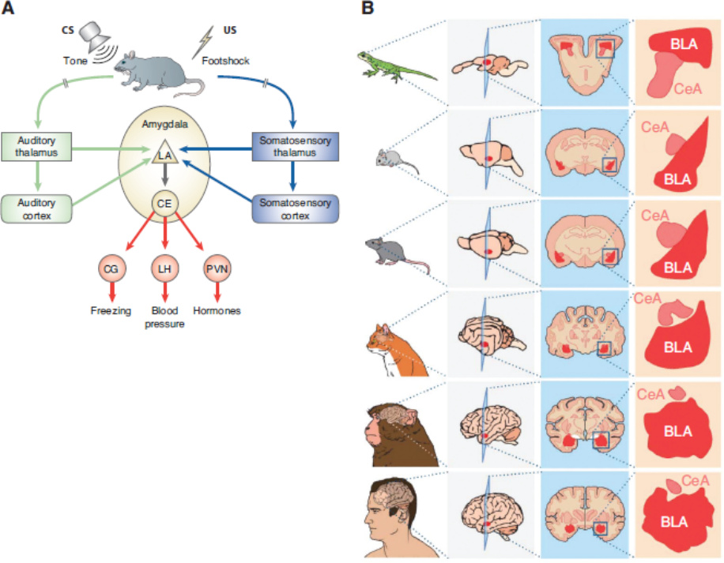
Hình 6.2: Điều kiện hóa sợ hãi và các nhân của hạch hạnh nhân. Bên trái: Sơ đồ đơn giản hóa minh họa các thành phần cơ bản của mạch điều kiện hóa sợ hãi. BLA không được đưa vào sơ đồ này. CE, hạch hạnh nhân trung tâm (tương đương CeA). Bên phải: Các phức hợp nhân chính, hạch hạnh nhân đáy-bên (BLA) so với hạch hạnh nhân trung tâm (CeA), được tìm thấy ở tất cả các loài động vật có xương sống. Các chữ viết tắt khác: CS: kích thích có điều kiện; US: kích thích không điều kiện; CG: chất xám trung tâm (giống chất xám quanh ống dẫn nước); LH: vùng dưới đồi bên; PVN: nhân cạnh thất. Được sao chép với sự cho phép của Macmillan Publishers Ltd.: bên trái từ Medina et al. 2002; bên phải từ Janak và Tye 2015.
Nếu một người xét (như chúng tôi) rằng các phản ứng đa dạng của sinh vật được gợi ra bởi CS sau khi thu nhận là chỉ dấu của một trạng thái cảm xúc trung ương tiềm ẩn, thì ở mức CeM tổ chức các phản ứng này, nó nên đóng một vai trò trong việc hiện thực hóa trạng thái đó. Các công trình cuối thập niên 1980 và thập niên 1990 đã xác lập rằng CeM phối hợp các thành phần hành vi, tự chủ, và nội tiết của CR thông qua các chiếu phân tán đến các vùng não hạ nguồn khác nhau, mỗi vùng được cho là đóng một vai trò đặc hiệu hơn (Davis 1992; LeDoux 2000) (hình 2.1). Việc các chiếu phân tán này bắt nguồn từ một kiểu nơ-ron chung hay từ các kiểu nơ-ron riêng biệt thì vẫn chưa rõ. Có vẻ trái trực giác, các đầu ra CeM này được thực hiện bởi các nơ-ron chiếu ức chế, vốn khử ức chế các tế bào đích trong các cấu trúc hạ nguồn như chất xám quanh ống dẫn nước (PAG) (các hình 6.2 và 6.3A). Những tế bào này đến lượt mình kiểm soát các mạch tiền-vận động điều hòa hành vi đứng hình hay bỏ chạy.
Như vậy, các dữ liệu nhất quán với một quan điểm rằng CeA đóng vai trò trong việc phối hợp các khía cạnh khác nhau của một trạng thái cảm xúc có điều kiện, theo một cách phân cấp. Vậy đây là một ví dụ nơi chúng ta đã tìm thấy trong não một hiện thực hóa thần kinh của một trong các thuộc tính của một trạng thái cảm xúc mà chúng ta đã thảo luận ở chương 3—thuộc tính phối hợp toàn cục, đạt được ở đây, ít nhất một phần, thông qua một mô thức phân cấp. Tuy nhiên, rất ít hay thậm chí không có nghiên cứu nào đã điều tra một cách hệ thống liệu CeM có mã hóa bất kỳ thuộc tính nào khác của các trạng thái cảm xúc được thảo luận ở chương 3 (chẳng hạn, khả năng co giãn quy mô, tính bền bỉ, tính tổng quát hóa) hay không, và nếu có thì theo cách nào. Có thể các thuộc tính khác nhau, hay các tập con thuộc tính, của một trạng thái cảm xúc (các mục khác nhau trong hình 3.2) có thể được hiện thực hóa bởi các thành phần thần kinh riêng biệt, gần như chắc chắn bao gồm cả các cấu trúc ngoài hạch hạnh nhân.
Các Nghiên Cứu Gần Đây Về Mạch Điều Kiện Hóa Sợ Hãi: Tính Dị Dạng Tế Bào Trong Hạch Hạnh Nhân
Thập kỷ qua đã chứng kiến một cuộc cách mạng trong việc phát triển các công cụ mới mạnh mẽ để điều tra tổ chức và chức năng của các mạch thần kinh, bao gồm quang di truyền học, dược di truyền học, và chụp ảnh canxi, như chúng ta đã lưu ý (xem các hộp 5.1–5.3). Sức mạnh của các công cụ này bắt nguồn từ thực tế rằng chúng có thể được nhắm đích bằng gen vào các phân nhóm nơ-ron cụ thể ở chuột nhắt (hộp 5.3; đáng tiếc, các công cụ này vẫn chưa áp dụng rộng rãi ở chuột cống, chứ chưa nói đến linh trưởng, xem hộp 5.4). Việc áp dụng các công cụ này vào hệ thống điều kiện hóa sợ hãi đã tạo ra một trận lũ thông tin mới về các mạch này, ở một mức độ phân giải và đặc hiệu tế bào chưa từng có (Janak và Tye 2015). Việc tích hợp các kết quả này từ chuột nhắt với các nghiên cứu lịch sử về mạch điều kiện hóa sợ hãi, vốn gần như được thực hiện hoàn toàn ở chuột cống, đòi hỏi một giả định về sự đồng nguyên giải phẫu và chức năng qua các loài. Giả định này có lẽ hợp lệ trong hầu hết, nhưng không nhất thiết là tất cả, các trường hợp.
Mặc dù lĩnh vực này còn khá non trẻ, kết luận tổng quát quan trọng nhất nổi bật cho đến nay là các quần thể tế bào của hạch hạnh nhân dị dạng về chức năng hơn nhiều so với những gì trước đây người ta dự đoán. Trong một số trường hợp, thậm chí các phân vùng của các phân nhân hạch hạnh nhân đã được cho là chứa một hỗn hợp nhiều kiểu tế bào, vốn có thể tạo ra các hiệu ứng ngược chiều lên điều kiện hóa sợ hãi. Chẳng hạn, trong một trong những nghiên cứu đầu tiên thuộc loại này, phân vùng bên của nhân trung tâm (CeL) đã được cho là chứa ít nhất hai phân nhóm nơ-ron GABAergic phân biệt về phân tử (các nơ-ron dùng chất dẫn truyền thần kinh acid gamma-aminobutyric [GABA]) được phân biệt bởi sự biểu hiện một phân tử cụ thể, protein kinase C-delta (PKCδ). Các ghi nhận điện sinh lý ở chuột nhắt còn sống, cùng với các thao tác nhắm đích bằng gen lên hoạt động nơ-ron (các hộp 5.1–5.3), cho thấy các nơ-ron biểu hiện, so với các nơ-ron không biểu hiện, phân tử này (tương ứng là các nơ-ron PKCδ+ và PKCδ-) tạo ra các ảnh hưởng đối kháng lên điều kiện hóa sợ hãi, với loại tế bào trước ức chế, và loại sau khử ức chế, đầu ra của CeM (hình 6.3A). Hơn nữa, các phân nhóm CeL này ức chế lẫn nhau, tạo ra tiềm năng cho các động lực mạch kiểu "kẻ thắng lấy tất cả" trong cấu trúc này.
Các thao tác quang di truyền đã xác nhận rằng các mạch CeL đóng vai trò trong việc thu nhận sự đứng hình có điều kiện, cho thấy tính linh hoạt này phân bố qua các phân nhân hạch hạnh nhân khác nhau chứ không giới hạn ở LA/BLA như ban đầu người ta nghĩ (Janak và Tye 2015). Nhất quán với quan điểm này, một đường truyền US cho điều kiện hóa sợ hãi chuyển tải thông tin đến hạch hạnh nhân qua CeL gần đây đã được xác định, liên quan đến một phân nhóm nơ-ron đặc hiệu khác trong một nhân não khác (nhân cạnh cầu ngoài-bên, vốn đến lượt mình nhận đầu vào đi lên từ các nơ-ron tủy sống được kích hoạt bởi cú sốc điện chân (Han et al. 2015)). Kích hoạt quang di truyền các nơ-ron CeL này tạo ra sự đứng hình không điều kiện, và đủ để đóng vai trò một US cho việc điều kiện hóa với một âm.
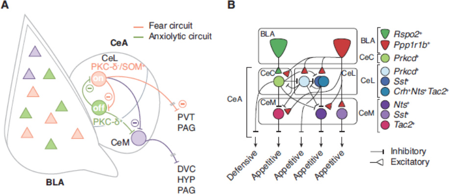
Hình 6.3: Các phân nhóm nơ-ron trong hạch hạnh nhân trung tâm. (A) Các phân nhóm nơ-ron CeA khác nhau có thể được nhận diện theo việc chúng có biểu hiện khác biệt một số gen nhất định hay không (chẳng hạn, protein kinase C-delta; PKCδ, hay somatostatin; SOM). Các quần thể khác nhau này có thể tạo ra các hiệu ứng ngược chiều lên các phản ứng hành vi. Các tế bào "off" ức chế các phản ứng sợ hãi; các tế bào "on" thúc đẩy các phản ứng sợ hãi. Các tế bào màu tím là các tế bào đầu ra CeM chưa được nhận diện. PVT, PAG, DVC, HYP là các vùng mà CeA chiếu tới. Các tam giác màu trong BLA biểu thị các kiểu tế bào khác nhau có thể chiếu tới các tế bào có màu tương ứng trong CeA. Được sao chép với sự cho phép từ Janak và Tye 2015. (B) Các nghiên cứu gần đây hơn nhận diện chín phân nhóm nơ-ron khác nhau trong các phân vùng khác nhau của CeA, bằng cách dùng các chỉ dấu phân tử bổ sung (chú giải ở bên phải xa). Lưu ý rằng một số kiểu tế bào CeM thúc đẩy các hành vi hướng phần thưởng. Được sao chép với sự cho phép từ Kim et al. 2017. Những ví dụ này minh họa sự phức tạp của các mạch hạch hạnh nhân trung tâm, và tầm quan trọng của khả năng nhận diện và thao tác chức năng não ở mức các kiểu tế bào cụ thể để không trộn lẫn các chức năng mạch.
Rất có thể còn có thêm một số phân nhóm nơ-ron khác nữa tham gia vào điều kiện hóa sợ hãi. Quả thật, các nghiên cứu gần đây hơn của Susumu Tonegawa và các đồng nghiệp đã hé lộ bằng chứng về tới bảy kiểu tế bào khác biệt trong các phân vùng khác nhau của CeA, một số tham gia vào hành vi hướng phần thưởng và một số tham gia vào điều kiện hóa sợ hãi (Kim et al. 2017). Các nghiên cứu này đã cho thấy ngay cả CeM cũng chứa các nơ-ron kiểm soát các hành vi hướng phần thưởng (hình 6.3B). Nói chung, lĩnh vực này đang trong trạng thái tăng trưởng nhanh, và các mô hình này có khả năng sẽ còn được xem xét lại thêm trong vài năm tới khi có nhiều dữ liệu và phương pháp mới hơn. Một bước then chốt sẽ là điều tra các kiểu hoạt động của các phân nhóm CeA khác nhau trong khi hành vi, bằng các công cụ như chụp ảnh canxi (hộp 5.2).
Tính Dị Dạng Tế Bào Trong Hạch Hạnh Nhân Đáy-Bên: Hàm Ý Cho Các Lý Thuyết Về Cảm Xúc
Một trong những ví dụ gần đây nổi bật nhất về tính dị dạng tế bào trong hạch hạnh nhân là phát hiện rằng BLA chứa các quần thể nơ-ron riêng biệt, đan xen lẫn nhau, phản ứng khác biệt với các kích thích vốn dĩ tạo phần thưởng so với các kích thích gây khó chịu. Các nơ-ron BLA được kích hoạt bởi các kích thích tạo phần thưởng, chẳng hạn nicotine, chiếu đến nhân accumbens (NA), một vùng được biết là tham gia vào xử lý phần thưởng (hình 6.4B, màu xanh lục); kích hoạt quang di truyền các nơ-ron này ủng hộ củng cố tích cực. Các nơ-ron BLA được kích hoạt bởi các kích thích gây khó chịu, chẳng hạn cú sốc điện chân, chiếu đến CeA, và là cần thiết và đủ cho điều kiện hóa gây khó chịu (hình 6.4B, màu đỏ) (Namburi et al. 2015). Những dữ liệu quan trọng này xác định các tập con nơ-ron riêng biệt biểu diễn các kích thích cảm xúc có tính tích cực và có tính tiêu cực, vốn đan xen rải rác khắp BLA mà không có ranh giới giải phẫu rõ ràng nào giữa chúng. Thú vị là, các quần thể nơ-ron đan xen tương tự, phản ứng với các kích thích gây khó chịu hay hướng phần thưởng, cũng đã được tìm thấy ở khỉ—trong trường hợp này, dựa trên các đặc tính phản ứng điện sinh lý hơn là kích hoạt quang di truyền (Paton et al. 2006).
Những dữ liệu này có những hàm ý quan trọng cho các cuộc tranh luận gần đây về vai trò của hạch hạnh nhân trong cảm xúc. Chẳng hạn, đã có người lập luận rằng các cảm xúc như sợ hãi không được biểu diễn hay mã hóa bởi các mạch hay vùng não cụ thể, vì hoạt động của hạch hạnh nhân có thể xảy ra trong cả cảm xúc tích cực lẫn tiêu cực. Kết luận này có thể hợp lệ nếu chính các nơ-ron như nhau trong hạch hạnh nhân được kích hoạt trong cả cảm xúc tích cực lẫn tiêu cực. Tuy nhiên, kết luận này dựa trên các nghiên cứu chụp ảnh fMRI ở người. Tín hiệu được phát hiện trong các thí nghiệm fMRI (hình 6.4A và các chương 8, 9) không có độ phân giải không gian cũng như tính đặc hiệu tế bào để phát hiện các tập con nơ-ron BLA khác nhau như được bộc lộ bởi việc đánh dấu gen và đo hoạt động đơn tế bào ở chuột (hình 6.4B). Các nghiên cứu trên chuột cho thấy không phải các nơ-ron như nhau được kích hoạt bởi cả các kích thích cảm xúc tích cực lẫn tiêu cực: đúng hơn, hạch hạnh nhân chứa các tập con nơ-ron riêng biệt được kích hoạt đặc hiệu hoặc trong lúc tiếp xúc với các kích thích đe dọa hoặc trong lúc tiếp xúc với các kích thích tạo phần thưởng. Các kiểu tế bào BLA khác nhau này có khả năng cũng tồn tại ở người (hình 6.4A, phía trên bên phải), mặc dù điều này vẫn còn phải được chứng minh. Nhưng nếu đúng vậy, thì thực tế hạch hạnh nhân của người có thể được kích hoạt trong cả cảm xúc tích cực lẫn tiêu cực (hình 6.4A, phía dưới) không có nghĩa là nó không đóng vai trò đặc hiệu nào trong việc hiện thực hóa các trạng thái cảm xúc; ngược lại, nó đóng các vai trò đặc hiệu trong cả hai. Ví dụ này cho thấy việc có thể so sánh kết quả từ các phương pháp khác nhau, chẳng hạn fMRI và quang di truyền học, quan trọng đến mức nào—những so sánh đòi hỏi một cách tiếp cận qua các loài.
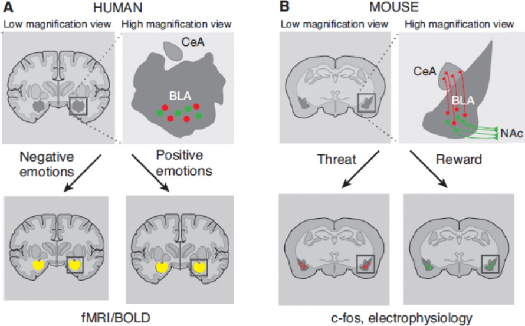
Hình 6.4: Độ phân giải và tính đặc hiệu tế bào của các phương pháp đo hoạt động hạch hạnh nhân ở người so với chuột. (A) fMRI (các bảng dưới) phát hiện hoạt động của hạch hạnh nhân (BLA) như nhau trong cả cảm xúc tích cực lẫn tiêu cực. Điều này là vì các phương pháp fMRI tiêu chuẩn không thể phân biệt hoạt động của chính các nơ-ron như nhau so với hoạt động của các quần thể nơ-ron khác nhau. Từ quan sát này, người ta đã suy ra một cách sai lầm rằng hạch hạnh nhân không có vai trò đặc hiệu nào trong sợ hãi. (B) Các nghiên cứu trên chuột cho thấy BLA chứa các lớp nơ-ron khác nhau, thúc đẩy hoặc sợ hãi (các vòng tròn đỏ, nơ-ron gây khó chịu), hoặc phần thưởng (các vòng tròn xanh lục, nơ-ron hướng phần thưởng). Các nghiên cứu đo hoạt động nơ-ron của hạch hạnh nhân với độ phân giải không gian đơn tế bào và tính đặc hiệu di truyền ở chuột cho thấy các nơ-ron khác nhau này chiếu đến các đích khác nhau (tương ứng CeA hay NAc) và được kích hoạt khác biệt, tùy con vật tiếp xúc với một mối đe dọa hay một phần thưởng. Các lớp nơ-ron khác nhau này có khả năng tồn tại ở BLA của người (A, phía trên, ảnh phóng đại cao), mặc dù điều này chưa được chứng minh. BLA: hạch hạnh nhân đáy-bên. CeA: hạch hạnh nhân trung tâm. NAc: nhân accumbens, một vùng tham gia vào xử lý phần thưởng.
Một lĩnh vực khác có những tiến bộ gần đây liên quan đến việc chụp ảnh hoạt động quần thể—sự phát xung của hàng trăm nơ-ron—trong và sau điều kiện hóa sợ hãi. Các ghi nhận điện sinh lý trong hạch hạnh nhân có thể phát hiện và giải mã hoạt động của một vài nơ-ron cô lập, nhưng có thể có thông tin bổ sung nằm trong hoạt động của các tập hợp nơ-ron lớn mà các ghi đơn vị đơn bỏ sót. Hai phát triển công nghệ quan trọng hiện đã cho phép vượt qua hạn chế này ở chuột nhắt. Một là phát triển các chỉ báo canxi được mã hóa bằng gen nhạy, có thể phát hiện một xung đơn trong một nơ-ron hoạt động (hộp 5.2). Hai là sự phát triển, bởi Mark Schnitzer và các đồng nghiệp tại Stanford, của các kính hiển vi nhỏ gắn trên đầu chỉ nặng 2 gram, có thể phát hiện các tín hiệu huỳnh quang từ sâu trong não bằng các kim thủy tinh tí hon hoạt động như các thấu kính hiển vi. Dùng công nghệ này, Schnitzer và cộng tác viên Andreas Lüthi đã có thể chụp ảnh hoạt động của hàng trăm nơ-ron đồng thời trong BLA trong điều kiện hóa sợ hãi (Grewe et al. 2017). Đáng chú ý, các quan sát của họ cho thấy các biểu diễn tập hợp của CS và US ở chuột nhắt chưa huấn luyện ban đầu khá khác biệt, nhưng trở nên giống nhau hơn khi các con vật được huấn luyện để liên kết CS với US. Quan trọng là, các mức giảm hoạt động của một số nơ-ron quan trọng không kém các mức tăng hoạt động của các nơ-ron khác, đối với sự tái cấu hình hoạt động tập hợp nơ-ron này. Những quan sát này buộc phải xem xét lại quan điểm ban đầu rằng điều kiện hóa sợ hãi chỉ liên quan đến một mức tăng hoạt động của một số nơ-ron hạch hạnh nhân phản ứng với CS (hình 6.1B), và minh họa sức mạnh của cách tiếp cận mới này trong việc bộc lộ thông tin nằm trong hoạt động của các tập hợp nơ-ron lớn, phân tán. Có thể dự đoán nhiều ứng dụng hơn nữa của công nghệ này cho nghiên cứu các mạch cảm xúc ở chuột nhắt trong tương lai.
Những Điều Chúng Ta Vẫn Chưa Biết Về Hạch Hạnh Nhân Và Điều Kiện Hóa Sợ Hãi
Dù có những tiến bộ ngoạn mục và nhanh chóng (thậm chí đôi khi đến mức choáng ngợp) trong việc mổ xẻ chức năng các mạch hạch hạnh nhân tham gia vào điều kiện hóa sợ hãi, vẫn còn những khoảng trống lớn trong sự hiểu biết của chúng ta về hệ mô hình quan trọng này. Phần lớn tiến bộ đạt được xoay quanh phân tích chức năng và giải phẫu của các quần thể tế bào được đánh dấu bằng gen trung gian các khía cạnh khác nhau của quá trình điều kiện hóa sợ hãi. Các nghiên cứu này đã bộc lộ một mức độ dị dạng tế bào và phức tạp mạch lớn hơn nhiều so với những gì trước đây người ta nghi ngờ, và đã mang lại những nhận thức quan trọng về mã hóa mức mạch của tính tích cực–tiêu cực cảm xúc. Ngược lại, người ta biết ít hơn nhiều về nơi đâu và thế nào các thuộc tính khác của trạng thái cảm xúc trung ương được gợi ra bởi một kích thích có điều kiện được đảm nhận trong hạch hạnh nhân. Tính bền bỉ, khả năng co giãn quy mô, và tính tổng quát hóa (hình 3.2) được mã hóa ở đâu và thế nào trong hạch hạnh nhân? Hay đúng hơn, chúng có được mã hóa trong hạch hạnh nhân không, hay chúng phụ thuộc vào các vùng não khác? Đáng ngạc nhiên là rất ít công trình cho đến nay điều tra liệu CeM, đầu ra chính của hạch hạnh nhân, có hiện thực hóa bất kỳ thuộc tính đặc trưng nào của các trạng thái cảm xúc mà chúng ta đã liệt kê trong hình 3.2 hay không.
Chúng ta cũng biết tương đối ít về việc liệu các hệ được dẫn động bởi đầu ra CeA, ngoài việc gửi tín hiệu đến thân não và các hệ tác động, có cũng báo hiệu sự kích hoạt của chúng lên tân vỏ não hay không, và nếu có thì qua những mạch nào. Những chiếu vỏ não đi lên như vậy có thể cung cấp các nền tảng quan trọng cho những thuộc tính cảm xúc phụ thuộc vào các tương tác xa hơn với các quá trình nhận thức. Người ta biết rằng nhân đáy-bên của hạch hạnh nhân (BLA) chiếu đến nhiều vùng của vỏ não, và rất có thể CeA cũng vậy. Như vậy, chúng ta đã đạt được một mức chi tiết ngày càng cao trong việc hiểu hạch hạnh nhân và các mạch của nó như một cỗ máy học tập, phần lớn nhờ những tiến bộ quan trọng trong các phương pháp như quang di truyền học. Tuy nhiên, liệu hạch hạnh nhân có phải là vị trí độc quyền hay thậm chí là vị trí chính cho việc hiện thực hóa các trạng thái sợ hãi trong não hay không vẫn còn chưa rõ ràng và gây tranh cãi, và sẽ đòi hỏi một cuộc điều tra toàn diện hơn nhìn rộng hơn khắp toàn bộ não.
Một lĩnh vực khác mà chúng ta vẫn còn tương đối thiếu hiểu biết là vai trò của các neuropeptid trong điều kiện hóa sợ hãi, các protein ngắn gắn vào các thụ thể kết hợp protein G cụ thể (GPCR). Trong khi nhiều nghiên cứu đã mô tả ở trên dùng các neuropeptid làm chỉ dấu cho các lớp nơ-ron hạch hạnh nhân cụ thể, việc các ảnh hưởng chức năng của các nơ-ron này được trung gian bởi chính các neuropeptid, bởi các chất dẫn truyền cổ điển đồng giải phóng (thường là GABA trong CeA), hay bởi cả hai, phần lớn còn chưa được khám phá. Chẳng hạn, peptid Tachykinin-2 (Tac2), vốn cũng đánh dấu một tập con nơ-ron CeA, gần đây đã được cho là thúc đẩy sự củng cố của sợ hãi được học. Vai trò của các neuropeptid khác được biểu hiện trong hạch hạnh nhân, bao gồm enkephalin và dynorphin và nhiều loại khác, vẫn còn được hiểu rất kém. Những tiến bộ mới trong công nghệ "chỉnh sửa bộ gen" sẽ khiến việc tạo ra các đột biến null (mất chức năng hoàn toàn) ở các gen neuropeptid cụ thể trong các lớp nơ-ron hạch hạnh nhân cụ thể trở nên khả thi, và các tiến bộ trong lĩnh vực này có khả năng xuất hiện trong những năm tới. Công trình này cũng có khả năng dẫn đến các cơ hội phát triển các thuốc mới để điều trị các rối loạn liên quan đến sợ hãi hay lo âu, vốn tác động lên các hệ chất dẫn truyền thần kinh này với tính đặc hiệu cao hơn các thuốc hiện có.
Sự Điều Hòa Hạch Hạnh Nhân Bởi Vỏ Não Trước Trán
Một khía cạnh quan trọng của điều kiện hóa sợ hãi liên quan đến các tương tác giữa hạch hạnh nhân và vỏ não trước trán. Người ta giả định rộng rãi, dựa trên các tổn thương ở người (các chương 8 và 9), rằng vỏ não trước trán tạo ra một ảnh hưởng ức chế "từ trên xuống" lên các hệ cảm xúc dưới vỏ não (hộp 3.4), và rằng rối loạn chức năng trong sự điều hòa cảm xúc như vậy có thể góp phần vào các rối loạn như PTSD hay trầm cảm. Một biểu hiện được nghiên cứu kỹ của sự điều hòa từ trên xuống đó là hiện tượng "dập tắt sợ hãi," một trong số ít trường hợp mà sự điều hòa này đã được nghiên cứu ở mức mạch trong loài gặm nhấm. Ngắn gọn, "dập tắt" chỉ hiện tượng trong đó một con vật đã trước đó bị điều kiện hóa để phản ứng với một CS dần dần mất phản ứng đó (CR) sau các lần trình bày CS lặp lại. Điều này đã được chứng minh là không đơn thuần liên quan đến "quên," mà thay vào đó phản ánh một việc học mới: con vật học rằng CS không còn dự đoán sự xuất hiện của US, mà giờ đây nó "an toàn" (tương tự học cách bỏ qua "cậu bé kêu sói!"). Việc học dập tắt đã được chứng minh là liên quan đến các chiếu kích thích đi xuống từ vỏ não trước trán trong (mPFC; ở loài gặm nhấm là vỏ dưới rìa, IL), vốn ức chế biểu hiện của CR trong hạch hạnh nhân. mPFC có khả năng có ít nhất nhiều kiểu tế bào như hạch hạnh nhân, và nghiên cứu hiện tại mới chỉ bắt đầu chạm đến bề mặt của sự đa dạng này, bộc lộ các phân lớp nơ-ron riêng biệt chiếu đến các đích dưới vỏ não khác nhau, bao gồm không chỉ hạch hạnh nhân mà cả các vùng khác.
Cách dập tắt hoạt động cục bộ trong hạch hạnh nhân thế nào vẫn chưa hoàn toàn rõ, nhưng người ta cho rằng nó liên quan đến việc tuyển mộ các nơ-ron ức chế trong một vùng gọi là khối tế bào chen giữa (ITC), vốn đến lượt mình ức chế đầu ra từ CeA (Quirk và Mueller 2008). Quan trọng là, sự giao tiếp giữa mPFC và hạch hạnh nhân không phải là một chiều; cũng có các đầu ra từ BLA nhắm vào các nơ-ron mPFC cụ thể (cũng như các kết nối gián tiếp qua đồi thị). Các nghiên cứu này bắt đầu cung cấp một số nhận thức về sự giao tiếp hai chiều phức tạp giữa vỏ não trước trán và hạch hạnh nhân, một ví dụ khác về sự hiện thực hóa thần kinh phân tán của các trạng thái cảm xúc (Salzman và Fusi 2010).
Cần lưu ý rằng các tương tác giữa mPFC và hạch hạnh nhân đã nhận được một lượng chú ý không cân xứng trong các nghiên cứu trên động vật, vì bằng chứng từ các bệnh nhân tổn thương ở người (các chương 8 và 9), đến mức nhiều người có thể nghĩ rằng đây là các vùng não duy nhất (hay chính) liên quan đến cảm xúc. Tuy nhiên, các bản đồ não của chuột nhắt liệt kê hơn tám trăm vùng giải phẫu khác biệt, và có lẽ còn nhiều hơn nữa trong não người. Rất khó xảy ra việc mPFC và hạch hạnh nhân là những vùng duy nhất tham gia vào cảm xúc; quả thật, các công trình gần đây đã liên quan các cấu trúc khác, như habenula trong và habenula ngoài, đến các trạng thái cảm xúc gây khó chịu. Còn nhiều việc phải làm phía trước!
Các Hành Vi Phòng Vệ Bẩm Sinh Và Cảm Xúc
Ngoài việc phản ứng với các kích thích nhân tạo có điều kiện (chẳng hạn, âm 2 kHz dùng trong nhiều thí nghiệm điều kiện hóa sợ hãi; xem hình 6.1), động vật cũng thể hiện các phản ứng phòng vệ bẩm sinh với một số kích thích cụ thể, có ý nghĩa sinh thái, mà khả năng gợi ra các phản ứng đó đã được chọn lọc qua hàng triệu năm tiến hóa. Những phản ứng bẩm sinh này có thể được quan sát ở động vật phòng thí nghiệm ngay lần đầu tiên chúng trải nghiệm kích thích, mà không cần bất kỳ huấn luyện trước nào (Tinbergen 1951) (xem hộp 6.1).
Chẳng hạn, một chuột nhắt phòng thí nghiệm tiếp xúc với một đĩa nở dần trùm từ trên xuống sẽ thể hiện một phản ứng đứng hình hay bỏ chạy ngay lần đầu tiên nó thấy kích thích này (Yilmaz và Meister 2013) (hãy nhớ thí nghiệm mà chúng ta đã trình bày ở hình 2.5). Tuy nhiên, phản ứng với một kích thích bẩm sinh gây khó chịu như vậy vẫn thể hiện độ linh hoạt đáng kể và chịu ảnh hưởng của bối cảnh mà kích thích xảy ra cũng như của loài và nền di truyền của con vật được kiểm tra. Chẳng hạn, trong khi chuột cống phòng thí nghiệm lai ngoài (biến dị di truyền hơn) đã được báo cáo là đứng hình đáp ứng với trimethylthiazoline (TMT), một thành phần của mùi phân cáo, chuột nhắt thuần chủng C57Bl6 (một chủng chuẩn dùng cho nhiều thí nghiệm phân tích hành vi và mạch, cung cấp một nền di truyền đồng nhất) không thể hiện sự đứng hình thực sự đáp ứng với mùi này, mà thay vào đó thể hiện hành vi tránh né, đánh giá rủi ro, và các khoảng bất động (có thể được phân biệt với sự đứng hình thực sự bởi một người quan sát được huấn luyện).
Các phản ứng với các kích thích đe dọa bẩm sinh cũng có xu hướng biến đổi và dị dạng hơn nhiều so với các phản ứng với các kích thích có điều kiện, vì những kích thích sau có thể được thao tác bằng thực nghiệm để gợi ra các phản ứng mạnh mẽ và lặp lại được cao bằng cách thao tác các tham số huấn luyện (chẳng hạn, cường độ sốc, số lần thử huấn luyện, v.v.). Tất cả những yếu tố này đã khiến việc nghiên cứu sinh học thần kinh của sợ hãi bẩm sinh thách thức hơn việc nghiên cứu sinh học thần kinh của sợ hãi có điều kiện. Điều này hơi nghịch lý, vì tất nhiên các phản ứng bẩm sinh là điều kiện tiên quyết cho các phản ứng có điều kiện.
Các Nghiên Cứu Lịch Sử Về Sợ Hãi Bẩm Sinh
Một câu hỏi trung tâm được đề cập trong các nghiên cứu về sợ hãi không điều kiện (bẩm sinh) là liệu nó có dùng cùng các mạch và đường truyền như những mạch và đường truyền được huy động bởi sợ hãi có điều kiện hay không. Câu hỏi đơn giản này đã khó trả lời hơn bạn có thể nghĩ. Một lý do là các kích thích dùng để gợi ra các phản ứng bẩm sinh thường phức tạp và đa thức thức (chẳng hạn, kẻ săn mồi nguyên vẹn), hay thuộc một thức giác quan khác (chẳng hạn, mùi kẻ săn mồi) so với những kích thích dùng để gợi ra các phản ứng phòng vệ có điều kiện (thường là các âm thanh). Một lý do khác là các kết cục hành vi thường khác nhau (chẳng hạn, đánh giá rủi ro và tránh né kẻ săn mồi so với đứng hình trước một kích thích thính giác có điều kiện). Nếu các đầu vào giác quan và các đầu ra hành vi được thao tác và đo trong các mô hình sợ hãi được học so với sợ hãi bẩm sinh là khác nhau, tất nhiên sẽ có nhiều khác biệt trong các mạch thần kinh tương ứng được huy động—nhưng những khác biệt đó có thể không nhất thiết phản ánh các khác biệt trong mã hóa sợ hãi bẩm sinh so với sợ hãi được học. Lý tưởng nhất, để xác định liệu các kích thích có điều kiện và bẩm sinh có dùng chung một biểu diễn mạch chung của trạng thái nội tại sợ hãi hay không, các kích thích giác quan cùng thức nên được dùng để gợi ra các phản ứng hành vi bẩm sinh và được học, và các phản ứng đó nên giống nhau. Cho đến nay, điều này vẫn khó đạt được.
Không ngạc nhiên lắm, do đó, các nghiên cứu lịch sử về sợ hãi bẩm sinh (không điều kiện) so với sợ hãi được học (có điều kiện) đã xác định các vùng não khác nhau tham gia vào hai mô hình này. Chẳng hạn, các tổn thương ở LA và CeA cho thấy các nhân hạch hạnh nhân này là cần thiết cho các phản ứng có điều kiện nhưng không cho các phản ứng không điều kiện, trong khi một số phần của hạch hạnh nhân trong (MeA) và nhân giường của bó tận cùng (BNST) đã được cho, ngược lại, là cần thiết cho các phản ứng không điều kiện nhưng không cho các phản ứng có điều kiện (Rosen 2004) (hình 6.5A–D). Tuy nhiên, khác biệt này có thể đơn thuần phản ánh thực tế rằng mùi kẻ săn mồi thường được dùng để gợi ra các phản ứng không điều kiện, và MeA được biết là đóng vai trò trong phát hiện các kích thích khứu giác đó; ngược lại, LA xử lý đầu vào từ đồi thị thính giác, nên yêu cầu của nó đối với một phản ứng với một CS thính giác phản ánh, ít nhất một phần, thiên hướng giác quan đó.
Những nghiên cứu này do đó đã dẫn đến một quan điểm thị hành nhưng có thể sai, trong đó sợ hãi không điều kiện và có điều kiện được xử lý bởi các đường truyền song song và phần lớn không chồng lấn (Gross và Canteras 2012). Gần đây hơn, một sự so sánh giữa sự đứng hình bẩm sinh so với có điều kiện được gợi ra bởi các mùi khác nhau đã xác định một quần thể tế bào ở phân vùng bên của nhân trung tâm hạch hạnh nhân (CeL) kiểm soát cân bằng giữa các hành vi này, gợi ý một vai trò chung của CeL trong các phản ứng bẩm sinh so với được học. Trong khi những nghiên cứu thú vị này cần được tái lập và mở rộng, chúng cho một cảm nhận về mức độ thách thức của việc điều tra câu hỏi này, và về sự khó khăn của việc thiết kế các thí nghiệm nghiêm ngặt để cho phép các so sánh "táo với táo." Không cần nói, điểm này càng đúng một cách rõ rệt khi chúng ta cố so sánh giữa loài gặm nhấm và con người, từ các nghiên cứu dùng các phương pháp luận khác nhau.
Các Mạch Trung Gian Hành Vi Phòng Vệ Bẩm Sinh Có Đóng Góp Vào Các Trạng Thái Cảm Xúc Không?
Như đã đề cập trước đó, một số nhà nghiên cứu lập luận rằng hạch hạnh nhân (LeDoux và Pine 2016), và các mạch dưới vỏ não nói chung (LeDoux 2015), kiểm soát các "hành vi phòng vệ" nhưng không phải các cảm xúc, theo nghĩa các cảm giác chủ quan của cảm xúc. Theo quan điểm đó, các trải nghiệm có ý thức về cảm xúc thay vào đó được hiện thực hóa trong vỏ não, chứ không trong các cấu trúc dưới vỏ não như hạch hạnh nhân (LeDoux và Brown 2017). Một quan điểm thay thế là các cấu trúc dưới vỏ não trực tiếp tham gia vào trải nghiệm tình cảm, ở cả động vật lẫn con người (Panksepp 2011b), theo nghĩa hoạt động trong các cấu trúc này tạo ra, một cách gián tiếp, hoạt động trong các cấu trúc vỏ não có thể là nền tảng của các cảm giác cảm xúc. Trong khi có những ví dụ rõ ràng nơi các cảm giác cảm xúc chủ quan đã được gợi ra ở các bệnh nhân người bằng kích thích điện các cấu trúc dưới vỏ não, những phát hiện đó bị vướng vào hạn chế rằng các vị trí kích thích điện được xác định kém, và không loại trừ hoạt động của vỏ não qua việc kích thích tình cờ chất trắng (các sợi trục) gần vị trí kích thích, và rằng các phản ứng được đo có thể quá không đặc hiệu (chẳng hạn, rằng chúng có thể chỉ phản ánh sự hưng phấn tổng quát hóa chứ không phải một cảm giác cảm xúc cụ thể) (LeDoux 2015) (chương 8). Tuy nhiên, với sự ra đời của các công cụ quang di truyền và khả năng nhiễu loạn chính xác các phân nhóm nơ-ron được xác định bằng gen, việc xem xét lại câu hỏi này ở động vật đã trở nên khả thi—không phải bằng cách dùng các tiêu chí của các cảm giác chủ quan làm thước đo đọc ra cho các hiệu ứng của kích thích lên cảm xúc, mà bằng cách tìm kiếm các đặc tính phản ứng cụ thể đặc trưng của các trạng thái cảm xúc trung ương (chương 3).
Cách tiếp cận này gần đây đã được áp dụng để nghiên cứu các nơ-ron trong vùng dưới đồi trung-thất (VMH), một cấu trúc từ lâu được biết là tham gia vào trung gian các hành vi phòng vệ bẩm sinh (hình 6.5D, E). Nhân này trong vùng dưới đồi là một đầu ra then chốt trong cái gọi là hệ phòng vệ vùng dưới đồi trong (Canteras 2002), được cho là biến đổi các đầu vào giác quan, được phát hiện bởi các cấu trúc như MeA và BNST sau, thành các đầu ra hành vi được chuyển tiếp qua các nút tiền-vận động như chất xám quanh ống dẫn nước lưng (PAG) (Swanson 2005) (hình 6.5D). VMH được biết đóng vai trò trong cả các hành vi phòng vệ với kẻ săn mồi lẫn các hành vi xã hội như giao phối và hung hăng. Ở chuột nhắt đực, bên trong VMH, các chức năng này được tách biệt giữa các phân nhóm nơ-ron phân biệt về gen, nằm ở các phân vùng giải phẫu khác biệt: phòng vệ với kẻ săn mồi được kiểm soát bởi các nơ-ron nằm ở phần lưng-trong và trung tâm của VMH (VMHdm/c), biểu hiện yếu tố phiên mã Sf1/Nr5a1, trong khi các hành vi xã hội được kiểm soát bởi các nơ-ron nằm ở phần bụng-ngoài của VMH (VMHvl), biểu hiện thụ thể estrogen kiểu 1 (Esr1) và thụ thể progesterone (PR) (hình 6.5E). Sự biểu hiện các gen cụ thể này bởi hai phân nhóm VMH này khiến việc thao tác chọn lọc hoạt động của chúng trở nên khả thi bất chấp vị trí giải phẫu kề bên của chúng, giống như chúng ta đã thấy trước đó đối với các phân nhóm cụ thể trong hạch hạnh nhân.
Im lặng bằng dược di truyền (hộp 5.1) hay cắt bỏ bằng gen các nơ-ron Sf1/Nr5a1+ của VMHdm/c đã làm giảm mạnh các phản ứng phòng vệ (chủ yếu là tránh né) với một kẻ săn mồi. Ngược lại, kích hoạt quang di truyền (hộp 5.1) các nơ-ron này gợi ra các hành vi phòng vệ, bao gồm tránh né, đứng hình, và bỏ chạy. Nó cũng gây ra các mức tăng chức năng tự chủ và nội tiết, được đo tương ứng bằng giãn đồng tử và mức corticosterone huyết thanh. Các nơ-ron Sf1+ cũng được kích hoạt khi có mặt một kẻ săn mồi, được đánh giá bằng nhuộm c-fos (hộp 6.3). Những dữ liệu này cho thấy các nơ-ron Sf1+ của VMHdm/c là cần thiết và đủ cho việc biểu hiện các hành vi phòng vệ bẩm sinh, và rằng chúng hoạt động trong các hành vi này dưới các điều kiện tự nhiên.
Hộp 6.3. C-fos Và Các Gen Sớm Ngay Lập Tức.
Ở loài gặm nhấm, các kiểu hoạt động nơ-ron liên quan đến một hành vi hay trạng thái cụ thể thường được lập bản đồ bằng các "gen sớm ngay lập tức" (IEG) như c-fos hay Arc. Sự biểu hiện IEG, có thể được phát hiện bằng nhuộm kháng thể hay lai tại chỗ, được cảm ứng nhanh bởi canxi tự do nội bào tăng cao. Vì hoạt động nơ-ron làm tăng canxi tự do nội bào (hộp 5.2), sự cảm ứng IEG thường được dùng làm chỉ dấu thay thế cho sự kích hoạt nơ-ron. Ưu điểm của lập bản đồ IEG là nó có độ phân giải đơn tế bào (xem hình 4.2), và có thể được dùng để lập bản đồ một cách hệ thống các kiểu hoạt động khắp toàn bộ não. Tuy nhiên, nó cũng có một số hạn chế nhất định, giống bất kỳ kỹ thuật nào. Thứ nhất, như thường được thực hành, nó phải được thực hiện trên mô đã cố định; do đó, hầu hết các so sánh giữa điều kiện đối chứng và điều kiện thực nghiệm phải được thực hiện như các so sánh giữa các đối tượng chứ không phải trong cùng đối tượng, khác với fMRI. (Một ngoại lệ là một biến thể của kỹ thuật gọi là "catFISH," hay phân tích ngăn tế bào của hoạt động theo thời gian bằng lai huỳnh quang tại chỗ, cho phép so sánh trong cùng đối tượng sự biểu hiện IEG dưới hai điều kiện khác nhau cách nhau khoảng 30 phút.) Thứ hai, nó có độ phân giải thời gian rất thấp. Hoạt động nơ-ron xảy ra trên thang thời gian mili-giây, nhưng các IEG thường cần 60 đến 90 phút để đạt các mức biểu hiện phát hiện được bằng nhuộm kháng thể (dù biểu hiện có thể được phát hiện trong khoảng 5 phút bằng các phương pháp nhạy hơn). Do đó, kiểu biểu hiện c-fos được phát hiện trong một não tích hợp tất cả hoạt động đã diễn ra trong suốt một thí nghiệm hành vi, khiến việc gán hoạt động cho các hành động cụ thể trở nên khó khăn. Chẳng hạn, biểu hiện c-fos được phát hiện sau một tương tác hung hăng 30 phút giữa chuột nhắt hay chuột cống đực không thể phân biệt các nơ-ron được kích hoạt riêng trong pha khởi đầu của tương tác xã hội (hít, tìm tòi), hay trong chiến đấu tự thân. Thứ ba, sự biểu hiện c-fos trong một vùng não nhất định không có nghĩa là đầu ra từ vùng đó tăng lên, dù điều này thường bị giả định sai là vậy. Nếu hoạt động c-fos xảy ra ở các nơ-ron ức chế, chẳng hạn, đầu ra từ vùng đó có thể giảm, trong khi nếu nó xảy ra ở các nơ-ron kích thích thì đầu ra sẽ tăng. Vì sự biểu hiện c-fos một mình không thể phân biệt nơ-ron kích thích với nơ-ron ức chế, không thể rút ra kết luận nào về quan hệ giữa hoạt động fos trong một vùng nhất định và đầu ra từ vùng đó (một lưu ý tương tự áp dụng cho fMRI, như được thảo luận ở chương 8). Tuy nhiên, nếu nhuộm c-fos được thực hiện cùng với đánh dấu các chỉ dấu của nơ-ron kích thích hay ức chế, có thể có thể giải quyết vấn đề này (dù hầu hết các nghiên cứu c-fos không bao gồm bước này). Thứ tư, đánh dấu IEG nổi tiếng là kém nhạy: chỉ những nơ-ron hoạt động mạnh nhất (phát xung nhanh) được phát hiện. Do đó, sự vắng mặt của đánh dấu IEG không ngụ ý sự vắng mặt của bất kỳ hoạt động nào. Cuối cùng, các IEG không chỉ được cảm ứng bởi canxi tự do nội bào tăng cao, mà còn bởi các "tác nhân thứ hai" khác như cyclic AMP (cAMP), thường được cảm ứng bởi các neuropeptid và các chất điều biến thần kinh. Do đó, việc phát hiện một IEG trong một tế bào không nhất thiết có nghĩa là tế bào đó đã được kích thích điện; nó có thể đã được kích hoạt bởi một hormone hay một chất điều biến thần kinh, thay vì thế. Xét cho cùng, đánh dấu IEG (như fMRI) là một điểm khởi đầu tốt; nó không cho bạn biết câu trả lời là gì, nhưng nó cho bạn biết nhìn ở đâu.
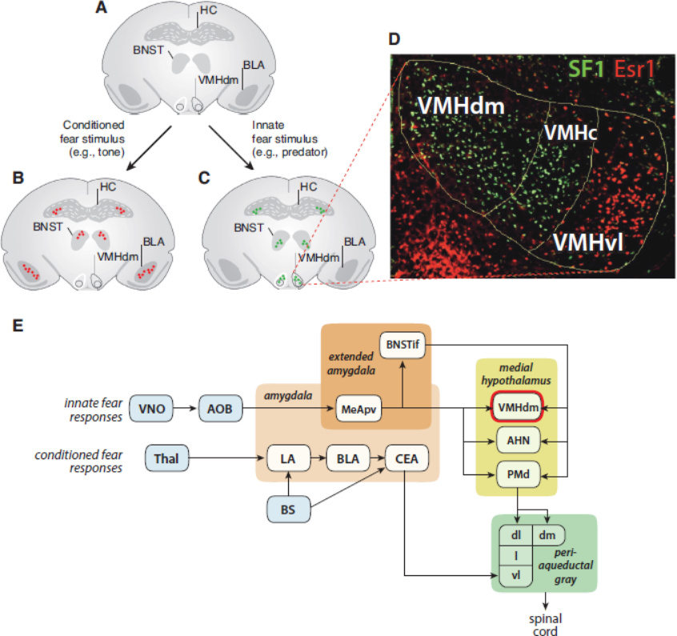
Hình 6.5: Các vùng não riêng biệt tham gia vào các kiểu sợ hãi khác nhau. (A) Sơ đồ minh họa mặt cắt ngang của não chuột nhắt, chỉ ra hồi hải mã (HC), nhân giường của bó tận cùng (BNST), hạch hạnh nhân đáy-bên (BLA), và vùng dưới đồi trung-thất (VMH). Lưu ý rằng các vùng này được nén vào một mặt phẳng duy nhất cho mục đích minh họa. (B) Các vùng chứa các nơ-ron (chấm đỏ) được kích hoạt bởi một kích thích sợ hãi có điều kiện. (C) Các vùng chứa các nơ-ron (chấm xanh lục) được kích hoạt bởi một kích thích sợ hãi bẩm sinh. Các kiểu nơ-ron khác nhau trong BNST và HC được kích hoạt bởi hai kiểu kích thích sợ hãi đó. Các tế bào và vùng không được vẽ theo tỷ lệ. (D) Mặt cắt qua VMH của chuột nhắt nhuộm với các kháng thể chống SF1 (xanh lục) và Esr1 (đỏ). Lưu ý sự tách biệt rõ ràng của các nơ-ron SF1+ so với Esr1+ trong VMHdm/c so với VMHvl. (E) Sơ đồ mạch so sánh các đường truyền được cho là trung gian phản ứng phòng vệ bẩm sinh với các mùi kẻ săn mồi so với các phản ứng phòng vệ có điều kiện. VMHdm (phân vùng lưng-trong của VMH) được khoanh màu đỏ (xem thêm D). VNO, cơ quan vomeronasal; AOB, bóng khứu giác phụ; MeApv, hạch hạnh nhân trong phần sau-bụng; BNSTif, phân vùng giữa các bó của nhân giường của bó tận cùng; AHN, nhân vùng dưới đồi trước
nhuộm; PMd, nhân trước vú lưng; BS, thân não; CEA, nhân trung tâm hạch hạnh nhân; dl, lưng-ngoài; dm, lưng-trong; l, bên; vl, bụng-ngoài.
Quan trọng là, các nơ-ron này dường như đóng vai trò trong mã hóa một số thuộc tính cảm xúc cụ thể mà chúng ta đã liệt kê trong hình 3.2 (Kunwar et al. 2015; Wang, Chen và Lin 2015). Chẳng hạn, kích hoạt quang di truyền các nơ-ron này gây ra một tính tích cực–tiêu cực vốn dĩ tiêu cực, vì nó khiến chuột nhắt tránh một ngăn mà hoạt động kích thích này được thực hiện, trong một phép thử gọi là tránh nơi theo thời gian thực. Nó cũng gây ra một trạng thái nội tại bền bỉ, được đo bằng các phản ứng tránh né bền bỉ sau kích thích. Các hiệu ứng hành vi của kích hoạt nơ-ron Sf1+ trong VMHdm/c cũng thể hiện khả năng co giãn quy mô: các cường độ hay tần số kích thích thấp gợi ra tránh né, các cường độ trung gian gợi ra đứng hình, và các mức cao gợi ra hành vi bỏ chạy/bùng nổ hoạt động.
Xét về thuộc tính khả năng co giãn quy mô, "thứ hạng" các hành vi được gợi ra bởi mức kích hoạt VMHdm/c Sf1+ tăng dần giống với thứ tự mà người ta dự đoán sẽ thấy các hành vi này xuất hiện khi một mối đe dọa ngày càng gần kề, theo lý thuyết tính cận kề của kẻ săn mồi (xem hình 2.4). Có thể hình dung rằng, khi một kẻ săn mồi tiến lại gần (và cuộc tấn công ngày càng cận kề), mức hoạt động tăng dần của các nơ-ron Sf1+ có thể khiến con vật chuyển từ đứng hình (để né tránh bị phát hiện) sang bỏ chạy (để né tránh bị bắt). Những quan sát này gợi ý rằng não có thể tích hợp mức hoạt động tích lũy của các nơ-ron Sf1+ theo thời gian để kiểm soát một quyết định hành vi, tương tự các mô hình khuếch tán-trôi dạt mà chúng tôi đã giới thiệu ở chương 3 (hình 3.4). Theo cách này, một sự phân biệt theo hạng mục trong hành vi có thể xuất hiện từ một mức tăng liên tục của mức sợ hãi, vốn được chuyển hóa thành các chuyển mạch hành vi thông qua các phi tuyến tại các vị trí hạ nguồn. Ngoài ra, như những người khác đã lập luận dựa trên các nghiên cứu fMRI ở người, các hệ khác nhau có thể được kích hoạt khi một mối đe dọa còn ở xa so với khi ở gần, chẳng hạn tương ứng là BNST và hạch hạnh nhân.
Có một số đặc điểm khác của các nơ-ron Sf1+ khớp rất tốt với nhiều thuộc tính cảm xúc mà chúng ta đã liệt kê trong hình 3.2. Chẳng hạn, hiệu ứng đa thành phần của việc kích hoạt các nơ-ron Sf1+ (các thay đổi song song trong các phép đo hành vi, tự chủ, và nội tiết) là bằng chứng rằng chúng đóng một vai trò phối hợp, tương tự CeA (xem hình 2.1). Kích hoạt các nơ-ron Sf1+ cũng tạo ra sự ưu tiên trong kiểm soát hành vi, ở chỗ nó ngắt quãng các hành vi hoàn tất đang diễn ra ở con đực, chẳng hạn giao phối, chiến đấu, hay ăn uống. Cuối cùng, hoạt động của các nơ-ron này có thể đóng vai trò một kích thích không điều kiện cho tránh nơi có điều kiện (Kunwar et al. 2015), cho thấy chúng có thể đóng vai trò trong học tập. Quan sát cuối cùng này cung cấp bằng chứng bác bỏ ý tưởng, có từ thập niên 1940, rằng vùng dưới đồi không đóng vai trò trong cảm xúc vì nó không thể đóng vai trò một kích thích không điều kiện cho học tập cảm xúc—một kết luận yếu ớt dựa trên các kết quả thực nghiệm tiêu cực.
Cùng với nhau, những dữ liệu này gợi ý rằng hoạt động của các nơ-ron Sf1+ VMHdm/c là đủ để tạo ra một trạng thái cảm xúc phòng vệ nội tại, mà biểu hiện hành vi của nó thể hiện nhiều đặc điểm của các trạng thái cảm xúc mà chúng ta đã liệt kê trong hình 3.2. Việc hoạt động của các nơ-ron này có khiến chuột nhắt "cảm thấy" sợ hãi theo cách mà chúng ta con người trải nghiệm chủ quan nó hay không là điều chúng ta chưa thể trả lời—và, như bạn sẽ đã nhận thấy, không phải là một thuộc tính của các trạng thái cảm xúc mà chúng ta đã liệt kê ở chương 3. Điều đó không có nghĩa là các con vật không có những cảm giác này; đúng hơn, nó có nghĩa là các nhà khoa học không phải gán những cảm giác như vậy để có thể nghiên cứu mã hóa thần kinh của một trạng thái cảm xúc trung ương. Hơn nữa, các phương pháp nhắm đích bằng gen được dùng ở chuột nhắt vượt qua các phê bình nêu trên nhắm vào các nghiên cứu báo cáo các trạng thái cảm xúc được gợi ra bằng kích thích điện các cấu trúc dưới vỏ não ở người (LeDoux 2015), nhờ tính đặc hiệu tế bào cao hơn của chúng. Ở mức chúng ta xem các "cảm giác" ở người là trải nghiệm có ý thức của một trạng thái cảm xúc nội tại, các mạch dưới vỏ não tạo ra những trạng thái đó hoàn toàn có thể là một thành phần hay nền tảng thiết yếu của những cảm giác chủ quan đó (xem thêm Panksepp 2011b). Điều này không phải là khẳng định rằng hoạt động trong các cấu trúc dưới vỏ não là đủ để mã hóa một cảm giác chủ quan ở một con người; tuy nhiên, có dữ liệu ở người gợi ý rằng nó hoàn toàn có thể là cần thiết cho trải nghiệm chủ quan của các trạng thái cảm xúc (xem chương 10).
Vùng Dưới Đồi Không Chỉ Dành Cho Ăn Và Uống
Như đã được tổng quan, có bằng chứng mạnh rằng các nơ-ron Sf1+ trong VMHdm/c, một vùng của vùng dưới đồi, có thể tạo ra một trạng thái cảm xúc phòng vệ nội tại. Nếu một người xét giả thuyết rằng những trạng thái đó đến lượt mình là một nền tảng cần thiết cho các trải nghiệm cảm xúc có ý thức ở người (một giả thuyết mà chúng tôi thấy hợp lý), thì điều này đặt ra một thách thức cho các quan điểm thị hành về vùng dưới đồi. Vùng dưới đồi được nghiên cứu mạnh mẽ nhất với tư cách một vùng não kiểm soát các chức năng cân bằng nội môi, chẳng hạn ăn, uống, và điều nhiệt (LeDoux và Damasio 2013; Sternson và Eiselt 2017). Tuy nhiên, các kết quả từ các nghiên cứu trên động vật đã tổng quan ở trên gợi ý rằng một số vùng của vùng dưới đồi cũng có thể đóng vai trò trong việc phối hợp các trạng thái cảm xúc trung ương. Hơn nữa, trạng thái cảm xúc phòng vệ được gợi ra bằng kích thích VMH đi vòng qua hạch hạnh nhân (vốn nằm ở thượng nguồn về mặt kết nối, nghĩa là cung cấp các đầu vào cho VMH). Nhất quán với điều này, bằng chứng từ người cho thấy một số trạng thái sợ hãi nhất định có thể được trải nghiệm chủ quan ngay cả khi thiếu hạch hạnh nhân (xem hộp 8.2). Cùng với nhau, những quan sát này nhấn mạnh điểm rằng trạng thái sợ hãi không được hiện thực hóa ở một vị trí đơn lẻ trong não, mà đúng hơn được hiện thực hóa trong một chuỗi các nút phân tán và liên kết với nhau, hay các trung tâm tổ chức, được huy động ở các mức độ khác nhau trong các tình huống khác nhau, tùy vào bối cảnh, trải nghiệm, và nhu cầu của con vật (hình 6.5). Chỉ bằng cách mổ xẻ bằng thực nghiệm từng thành phần của hệ thống, chúng ta mới có thể hiểu đầy đủ cơ chế mà hệ thống cuối cùng liên kết các kích thích với các trạng thái nội tại và hành vi.
Cảm Xúc Phân Tán So Với Cảm Xúc Cục Bộ Trong Não
Đã có người lập luận, chẳng hạn Lisa Feldman Barrett (Feldman Barrett 2017), rằng không có vùng não đặc hiệu nào tham gia vào việc hiện thực hóa một cảm xúc như sợ hãi, vì nhiều vùng khác nhau được kích hoạt trong lúc trải nghiệm sợ hãi ở người, được đánh giá bằng chụp ảnh fMRI (và hầu hết các vùng đó cũng được kích hoạt bởi các cảm xúc khác—cũng như bởi các quá trình không thuộc về cảm xúc). Nhưng điều này hơi giống việc lập luận rằng vì một người được theo dõi bởi một máy phát GPS từ vệ tinh có thể được thấy ở một vài nơi khác nhau, tùy theo khi nào dữ liệu được thu thập, nên người đó không có nơi cư trú thường xuyên. Tương tự, các nghiên cứu trên động vật dạy chúng ta rằng các nơ-ron ở nhiều vùng não có thể được kích hoạt trong một kiểu sợ hãi cụ thể (chẳng hạn, hồi hải mã và hạch hạnh nhân trong sợ hãi có điều kiện ), và rằng các vùng khác nhau có thể được kích hoạt trong các kiểu sợ hãi khác nhau (chẳng hạn, BLA và VMH trong sợ hãi có điều kiện so với sợ hãi bẩm sinh) (hình 6.5). Quan trọng nhất, các thí nghiệm kích thích quang di truyền cho thấy hoạt động của các nơ-ron cụ thể bên trong các vùng cụ thể này có khả năng tạo ra các đặc tính hành vi, tự chủ, và nội tiết của một trạng thái cảm xúc phòng vệ, và việc im lặng hay cắt bỏ bằng gen các nơ-ron này làm mất các phản ứng cảm xúc. Cùng với nhau, những quan sát này lập luận rằng các trạng thái cảm xúc được hiện thực hóa trong các mạng phân tán, được cấu thành từ nhiều nút cục bộ chứa các kiểu tế bào cụ thể tham gia vào việc tạo ra các trạng thái đó (hình 6.6 B,C). Nói ngắn gọn, luận điểm rằng không có bằng chứng thần kinh học nào cho các vùng não cụ thể kiểm soát các trạng thái cảm xúc là sai cả về thực tế lẫn về logic.
Lưu ý, tuy nhiên, rằng bằng chứng nhân quả cho các hệ cảm xúc cụ thể trở nên yếu hơn nếu một người khăng khăng rằng cảm xúc chỉ có thể được nghiên cứu ở người, vì các nghiên cứu thần kinh học ở người phần lớn mang tính tương quan, và tương quan không ngụ ý nhân quả (chương 4). Thực tế rằng lập luận chống lại định vị chức năng của các hệ cảm xúc đòi hỏi phải gạt bỏ toàn bộ các nghiên cứu trên động vật cho thấy, ngược lại, tầm quan trọng của các thí nghiệm trên động vật đối với cuộc tranh luận này.
Lo Âu
Lo âu thường không được đưa vào danh sách các cảm xúc "cơ bản" (chương 1), có lẽ vì nó là một trạng thái tính trước, chứ không phản ứng, không cần được kích hoạt bởi bất kỳ kích thích bên ngoài cụ thể nào. Tuy nhiên, lo âu rõ ràng là một trạng thái tình cảm nội tại chia sẻ nhiều thuộc tính của các trạng thái cảm xúc mà chúng ta đã thảo luận trước đó, và là một trạng thái đã được nghiên cứu mạnh mẽ. Một cách nghĩ về nó là như một kiểu sợ hãi đặc biệt được gợi ra khi một mối đe dọa còn ở xa, và xác suất cần bỏ chạy hay tự vệ là tương đối thấp (xem hộp 2.3). Nó được biểu hiện không chỉ bằng các thay đổi hành vi đo được mà còn bằng các phản ứng sinh lý và nội tiết tương tự những phản ứng được đo trong các phép thử sợ hãi. Ở người, lo âu có thể có tác động lớn đến các quá trình nhận thức như ra quyết định.
Các rối loạn lo âu nằm trong số các bệnh tâm thần phổ biến nhất: rối loạn lo âu lan tỏa (GAD) làm khổ gần bảy triệu người trưởng thành ở Hoa Kỳ, hơn 3 phần trăm dân số. Thế nhưng các phương pháp điều trị lo âu hiện nay chưa đạt yêu cầu, phần lớn vì các tác dụng phụ của thuốc. Chẳng hạn, nhiều người không thể dung nạp benzodiazepine (các thuốc như Valium) trong ban ngày vì tác dụng an thần mạnh của chúng. Các SSRI ("thuốc ức chế tái hấp thu serotonin có chọn lọc," các thuốc như Prozac) cũng được dùng để điều trị lo âu, nhưng chúng cũng có các tác dụng phụ nghiêm trọng, và nhiều cá nhân không đáp ứng hay không dung nạp chúng. Một sự hiểu biết về thần kinh học của lo âu sẽ là then chốt cho việc phát triển các phương pháp điều trị tốt hơn.
Các nhà khoa học nghiên cứu lo âu ở loài gặm nhấm (chuột cống hay chuột nhắt) thường dùng các phép thử hành vi khác với những phép thử dùng trong điều kiện hóa sợ hãi. Các phép thử này bao gồm bài kiểm tra trường mở, đo sự tránh né không gian mở của con vật; mê cung chữ thập cao, đo quyết định của con vật bước lên các mặt nền cao có hay không có vách; hộp sáng–tối, đo sự tránh né nơi sáng chói của con vật; và các bài kiểm tra khác như chôn viên sỏi, bảng lỗ, và ăn uống bị ức chế bởi sự mới lạ, đo tương ứng sự tránh né, hoạt động thăm dò, và sự ức chế hành vi hoàn tất (xem hình 6.6A). Các phép thử này được chấp nhận và dùng rộng rãi, dựa trên tính hiệu diện của chúng (tính hợp lý trực giác), tính hợp lệ kiến tạo của chúng, và độ nhạy của chúng với các thuốc dược lý cụ thể. Tính hợp lệ kiến tạo chỉ sự nhất quán qua nhiều loại bằng chứng rằng các phép đo này chỉ dấu các trạng thái lo âu—chẳng hạn, thực tế rằng hành vi trong các bài kiểm tra này có xu hướng tương quan, cho chúng ta yên tâm rằng chúng là các phép đo phần nào dư thừa cho cùng một thứ (xem hộp 8.1). Ngoài ra, lo âu cũng được đo bằng các phản ứng tự chủ và nội tiết, tương tự những phản ứng dùng trong các nghiên cứu điều kiện hóa sợ hãi.
Trong khi các nhà khoa học có thể biết sự khác biệt giữa sợ hãi và lo âu, thì chưa hoàn toàn rõ liệu não có "biết" sự khác biệt đó hay không. Nghĩa là, các nhà khoa học có thể phát biểu các khác biệt chức năng hay trải nghiệm giữa sợ hãi và lo âu, nhưng các phân biệt ở mức mạch thần kinh có thể không rõ ràng đến vậy. Dù vậy, các thí nghiệm thực hiện trong thập niên 1990 bởi cố nhà khoa học Michael Davis và các đồng nghiệp đã cho thấy các khác biệt giữa hiệu ứng của tổn thương nhân giường của bó tận cùng (BNST) và hạch hạnh nhân lên sợ hãi so với lo âu. Dùng các ánh sáng chói và phản ứng giật mình thính giác tăng cường bởi sợ hãi làm phép thử, Davis đã cho thấy tổn thương BNST làm suy giảm lo âu nhưng để sợ hãi không bị ảnh hưởng, trong khi tổn thương hạch hạnh nhân tạo ra sự suy giảm ngược lại. Đây là một kiểu kết quả gọi là "tách rời kép," thường được lấy làm chứng minh rằng hai quá trình—trường hợp của chúng ta là sợ hãi và lo âu—là các quá trình riêng biệt. Như vậy, quan điểm thị hành là BNST thúc đẩy lo âu—các trạng thái bền bỉ, liên tục, trong khi hạch hạnh nhân (đặc biệt CeA) thúc đẩy sợ hãi—các phản ứng cấp tính, theo pha, với các mối đe dọa.
Tuy nhiên, các dữ liệu gần đây cho thấy sự phân biệt giữa vai trò của BNST và hạch hạnh nhân trong việc thúc đẩy lo âu so với sợ hãi không rõ ràng như người ta ban đầu nghĩ (xem Tovote et al. 2015). Chẳng hạn, một số nghiên cứu đã cho thấy thao tác chức năng các nơ-ron trong CeL có thể thay đổi hành vi trong các phép thử lo âu (dù tính tích cực–tiêu cực của các hiệu ứng này khác nhau giữa các báo cáo). Do đó, bằng chứng ngày càng nhiều gợi ý rằng hạch hạnh nhân đóng vai trò trong lo âu cũng như sợ hãi, trong khi BNST có thể đặc hiệu hơn cho lo âu (hình 6.6 B,C). Nói chung, việc một vùng não nhất định được cho là tham gia vào "sợ hãi" hay "lo âu" có thể phụ thuộc nhiều hơn vào lựa chọn các phép thử hành vi được dùng hơn là vào các khác biệt chức năng thực sự giữa các vùng não. Đáng tiếc, hầu hết các bài báo báo cáo nhiễu loạn các mạch "lo âu" không thường xuyên bao gồm các phép thử điều kiện hóa sợ hãi, và ngược lại.
Một quan điểm thay thế, không bị loại trừ bởi các dữ liệu hiện có, là "lo âu" và "sợ hãi" đại diện cho hai mức cường độ khác nhau của một trạng thái cảm xúc chung, được mã hóa bởi một mạng phân tán bao gồm các vùng liên kết với nhau của hạch hạnh nhân và BNST. Rõ ràng, mạch thần kinh và các kiểu hành vi làm nền tảng cho sợ hãi và lo âu là phức tạp. Để gỡ rối chúng, chúng ta cần áp dụng một bộ các bài kiểm tra sợ hãi so với lo âu đã được xác thực tốt nhằm đánh giá các hệ quả của việc thao tác các nơ-ron ở các vùng khác nhau với độ phân giải theo kiểu tế bào. Các thành phần để đạt được một khoa học như vậy về sợ hãi và lo âu đang dần sẵn có, nhưng chúng ta vẫn còn một chặng đường dài trước khi mọi phòng thí nghiệm áp dụng chúng một cách thống nhất.
Một Phân Loại Các Trạng Thái Sợ Hãi?
Những phát hiện này ngụ ý gì cho một lời giải thích chức năng về các kiểu sợ hãi? Chúng cho chúng ta biết gì về loại mô thức mà chúng ta đã thấy trong hộp 2.3, nơi tính cận kề của mối đe dọa là một chiều mà các kiểu sợ hãi khác nhau có thể được ánh xạ lên đó? Nếu chúng ta không tìm thấy sự phân biệt thần kinh sinh học rõ ràng nào giữa sợ hãi và lo âu, điều này có thể đang cho chúng ta biết rằng không có sự phân biệt chức năng như vậy ở mức các trạng thái cảm xúc. Lo âu và sợ hãi có thể giống việc quyết định rẽ trái hay rẽ phải khi đang bỏ chạy khỏi một kẻ săn mồi hơn; chúng hiển hiện như các phân biệt trong hành vi (và có lẽ cũng như các phân biệt trong trải nghiệm có ý thức, dù điều này có vẻ kém rõ hơn), nhưng chúng không nhất thiết là các phân biệt ở mức các trạng thái cảm xúc. Một lần nữa, thực tế rằng sợ hãi và lo âu có thể được các nhà khoa học phân biệt về mặt thao tác chắc chắn có nghĩa là có một khác biệt nào đó giữa chúng trong não. Nhưng khác biệt đó có thể không nằm ở mức các trạng thái cảm xúc, giống như sự khác biệt giữa việc quyết định rẽ trái hay rẽ phải tất nhiên được gây ra bởi một khác biệt trong não, nhưng không phải bởi một khác biệt trong một trạng thái cảm xúc. Kết cục của những cân nhắc này là cách chúng ta hiện phân loại các cảm xúc có thể cần được xem xét lại cả theo một hướng ngược với hướng mà chúng ta đã đề cập. Chúng ta không chỉ có thể cần thêm các phân biệt tinh tế hơn vào kho thuật ngữ của mình, theo gợi ý của dữ liệu từ thần kinh học, mà dữ liệu từ thần kinh học cũng có thể cho chúng ta biết rằng một số phân biệt mà chúng ta từng nghĩ có giữa các trạng thái cảm xúc cuối cùng không phải là các phân biệt thực sự.

Hình 6.6: Các phép thử hành vi và các mạng não cho sợ hãi và lo âu ở loài gặm nhấm. (A) Ba loại phép thử hành vi khác nhau thường dùng để đo lo âu. Phía trên, "bài kiểm tra trường mở": chuột nhắt lo âu thường tránh trung tâm của một không gian mở sáng chói. "Các sợi quang" biểu thị các sợi cấy vào não để kích thích một vùng gây lo âu bằng quang di truyền học. Ở giữa, "mê cung chữ thập cao": chuột nhắt lo âu dành nhiều thời gian hơn ở các nhánh khép kín (an toàn hơn) của mê cung. Phía dưới, "ưa thích hay tránh nơi theo thời gian thực": chuột nhắt tránh ngăn nơi kích thích gây lo âu được áp dụng. (B) Các nút mạch liên quan đến lo âu. Các đường và vòng tròn màu tím biểu thị các chiếu tầm xa giữa các nút; các nút màu vàng đã được mổ xẻ thêm thành các vi mạch chứa các kiểu tế bào cụ thể. (C) Các mạch sợ hãi được trình bày để so sánh. Lưu ý sự vắng mặt tương đối của đánh dấu từ BNST, vốn ở loài gặm nhấm tham gia vào lo âu nhiều hơn vào sợ hãi. Các chữ viết tắt (từ B, theo chiều kim đồng hồ): mPFC, vỏ não trước trán trong; PAG, chất xám quanh ống dẫn nước; LC, chấm xanh lam; RN, nhân lưới; PB, nhân cạnh cầu; LS, nhân vách bên; VTA, vùng não phủ bụng; HYP, vùng dưới đồi; vHC, hồi hải mã bụng; BLA, hạch hạnh nhân đáy-bên; CEA, hạch hạnh nhân trung tâm; BNST, nhân giường của bó tận cùng (ad, trước-lưng; v, bụng; ov, hình trứng). Các chữ viết tắt bổ sung (từ C, theo chiều kim đồng hồ): IL, vỏ dưới rìa (mPFC); PL, vỏ trước rìa; CEl, phân vùng bên của CEA; CEm, phân vùng trong của CEA; ITC, khối tế bào chen giữa; BA, hạch hạnh nhân đáy; LA, hạch hạnh nhân bên. Được sao chép với sự cho phép từ Tovote et al. 2015.
Các Trạng Thái Cảm Xúc Khác: Hung Hăng Và Giận Dữ
Như chúng ta đã lưu ý ở đầu chương này, chúng tôi chọn tập trung vào cảm xúc mà, qua một loạt các loài, hiện được hiểu tốt nhất về các chi tiết thần kinh sinh học của nó: các hệ trung gian sợ hãi và các hành vi phòng vệ liên quan. Các nguyên tắc được bộc lộ từ những nghiên cứu đó áp dụng đến mức nào cho các cảm xúc ít được hiểu hơn, chẳng hạn giận dữ?
Ở người, giận dữ hay cuồng nộ thường được biểu hiện bằng hành vi hung hăng. Sự hung hăng giữa các con đực là một hành vi gần như phổ biến giữa các loài động vật sinh sản hữu tính. Có bằng chứng nào rằng các trạng thái cảm xúc làm nền tảng cho sự hung hăng ở động vật không? Jaak Panksepp đã đề xuất một hệ cảm xúc mà ông gọi là "RAGE," một trạng thái hưng phấn tình cảm cơ bản làm nền tảng cho sự hung hăng ở động vật (Panksepp 2011a). Tuy nhiên, đã có tương đối ít công trình điều tra liệu sự hung hăng ở động vật có đi kèm một trạng thái cảm xúc trung ương hay không. Một phần lý do có thể là, khác với các nghiên cứu điều kiện hóa sợ hãi vốn bắt đầu trong lĩnh vực tâm lý học, các nghiên cứu về hung hăng bắt nguồn gần như hoàn toàn từ lĩnh vực tập tính học, nơi các nhà điều tra nhìn chung né tránh việc gán các trạng thái cảm xúc cho động vật. Trong tâm lý học, có rất ít hay thậm chí không có bài báo nào báo cáo "điều kiện hóa giận dữ," trái ngược với hàng nghìn bài báo về điều kiện hóa sợ hãi; điều này gợi ý hoặc là các nỗ lực tạo ra một mô hình thực nghiệm như vậy đã không thành công, hoặc là các nhà tâm lý học tương đối không quan tâm đến chủ đề này (hoặc cả hai).
Có điều gì chúng ta đã học được về mạch thần kinh trung gian sự hung hăng gợi ý các trạng thái nội tại tiềm ẩn thể hiện các nguyên thủy cảm xúc không? Nghịch lý thay, các thí nghiệm đầu tiên chứng minh rằng một phản ứng cảm xúc có thể được kích hoạt bởi một hoạt động não cụ thể ở một con vật đã liên quan đến một hành vi hung hăng được gợi ra nhân tạo. Các nghiên cứu được thực hiện bởi Walter Hess, người mà công trình của ông chúng ta đã nhắc đến, và người đã đoạt giải Nobel cho các thí nghiệm của mình. Hess kích thích điện vùng dưới đồi của mèo và tạo ra một hành vi hung hăng khuôn mẫu (mà Hess gọi là "phòng vệ tình cảm") mà những con mèo thể hiện với bất kỳ kích thích nào được đặt trước mặt chúng (Hess và Brügger 1943).
Các nghiên cứu gần đây hơn ở chuột nhắt đã xác định các nơ-ron trong VMHvl biểu hiện thụ thể estrogen kiểu 1 (Esr1) và thụ thể progesterone (PR), mà vai trò trong hành vi xã hội của chúng chúng ta đã đề cập trước đó trong chương này (hình 6.5). Quần thể nơ-ron vùng dưới đồi này là cần thiết và đủ cho sự hung hăng tấn công chống lại một con đồng loại: im lặng chúng ngăn chặn sự hung hăng, và kích thích quang di truyền chúng khiến con chuột tấn công một con chuột khác (hay, ở các mức kích thích cao hơn, một vật vô tri). Các nơ-ron trong vùng này cũng có thể thúc đẩy hành vi tìm kiếm sự hung hăng trong một mô hình điều kiện hóa thao tác, gợi ý rằng chúng có thể đóng vai trò trong mã hóa một trạng thái nội tại của động lực hay sự hưng phấn hung hăng. Thú vị là, các nơ-ron Esr1+/PR+ của VMHvl cũng đóng vai trò trong hành vi tình dục của con đực hướng đến con cái. Mặc dù hai hành vi xã hội khác nhau này có thể dùng các tập con nơ-ron Esr1+ khác nhau, đan xen lẫn nhau trong VMHvl, mối quan hệ giải phẫu gần gũi của các quần thể này nhất quán với quan điểm của Tinbergen rằng sự hung hăng tấn công thuộc về phân loại trong trật tự hành vi "sinh sản" của ông. Quả thật, sự hung hăng và giao phối thường được thấy cùng nhau ở động vật (và cả ở người). Tuy nhiên, có bằng chứng rằng các nơ-ron trong các cấu trúc khác ngoài VMHvl, chẳng hạn vùng trước thị trong (MPOA), cũng đóng vai trò then chốt trong hành vi tình dục của con đực.
Các Trạng Thái Cảm Xúc Có Tính Tích Cực
Tất cả các cảm xúc ở động vật mà chúng ta đã đề cập cho đến nay (ngoại trừ các trạng thái liên quan đến giao phối) đều là các trạng thái gây khó chịu, có tính tiêu cực. Nhưng cũng có các trạng thái cảm xúc có tính tích cực. Phần lớn công trình về các trạng thái cảm xúc có tính tích cực đã được thực hiện trong bối cảnh các nghiên cứu về phần thưởng. Lĩnh vực học tập phần thưởng là một chủ đề khổng lồ đã phát triển một hiểu biết tinh vi về nhiều hệ não kiểm soát hành vi hướng tới việc thu được phần thưởng (được định nghĩa về mặt thao tác là thứ mà con vật "muốn," bất kể nó có thích phần thưởng sau khi đã tiêu thụ nó hay không). Nằm ngoài phạm vi của cuốn sách này là việc trình bày tất cả công trình đó. Tuy nhiên, như đã đề cập trước đó, bằng chứng ngày càng nhiều cho thấy các nhân đáy-bên và trung tâm của hạch hạnh nhân chứa các phân nhóm nơ-ron riêng biệt kiểm soát các hành vi hướng phần thưởng so với các hành vi phòng vệ, và rằng các nơ-ron hướng phần thưởng chiếu đến các cấu trúc não liên quan đến phần thưởng như nhân accumbens (các hình 6.3B và 6.4B). Có khả năng sẽ có những tiến bộ đáng kể trong vài năm tới trong việc phân tích vai trò của hạch hạnh nhân trong các hành vi và trạng thái liên quan có tính tích cực so với có tính tiêu cực. Một chủ đề khác liên quan đến vấn đề này là sự đói, vốn bao gồm cả các hệ động lực dựa trên việc giảm các cảm giác khó chịu liên quan đến thiếu thức ăn, cũng như các hệ động lực bổ sung thúc đẩy con vật thu được thức ăn vì tác động khoái lạc tích cực đi kèm với việc tiêu thụ nó ("thích," đối lập với "muốn" hay "cần"). Mỗi hệ trong số đó đã được làm rõ trong những năm gần đây bằng các nhiễu loạn chức năng đặc hiệu theo kiểu tế bào để làm rõ mạch thần kinh liên quan, và các tiến bộ nhanh hơn nữa trong lĩnh vực này sẽ xuất hiện trong vài năm tới.
Tóm Tắt
- Trong chương này, chúng ta đã đi sâu vào một số chi tiết nổi lên từ các nghiên cứu thần kinh học hiện tại về cảm xúc ở động vật có vú. Trọng tâm là sợ hãi, và các trạng thái liên quan đến sợ hãi, và trên loài gặm nhấm (chuột cống và chuột nhắt), vì đây là các hệ mà chúng ta hiện hiểu tốt nhất.
- Chúng ta đã tìm thấy một lượng dồi dào bằng chứng từ các nghiên cứu thần kinh sinh học ở loài gặm nhấm rằng tồn tại các trạng thái trung ương có các thuộc tính tương hợp đáng kể với danh sách các "thuộc tính cảm xúc" mà chúng ta đã liệt kê trong hình 3.2.
- Cuộc tổng quan của chúng ta về điều kiện hóa sợ hãi đã dẫn chúng ta đến cấu trúc não cho đến nay được nghiên cứu nhiều nhất cho cảm xúc này: hạch hạnh nhân, mà chúng ta đã xem xét khá chi tiết. Cấu trúc này khá được bảo tồn qua các loài khác nhau, nhiều hơn nhiều so với hầu hết vỏ não, cung cấp một nền thử nghiệm tốt để thực hiện các so sánh giữa loài gặm nhấm và con người.
- Hạch hạnh nhân là cần thiết cho điều kiện hóa sợ hãi kiểu Pavlov. Vỏ não trước trán điều hòa các cảm xúc một phần bằng các chiếu đến hạch hạnh nhân. Sợ hãi và lo âu về mặt lịch sử đã được ánh xạ lên hạch hạnh nhân và nhân giường của bó tận cùng, tương ứng, nhưng sự phân biệt này có lẽ là một sự đơn giản hóa quá mức, và có thể cũng (hay thay vào đó) phản ánh các khía cạnh khác nhau của một trạng thái cảm xúc chung được đảm nhận bởi cả hai cấu trúc não này, với các khác biệt định lượng.
- Có một số phân nhóm nơ-ron riêng biệt trong hạch hạnh nhân, một số kiểm soát các hành vi phòng vệ và một số khác kiểm soát các hành vi hướng phần thưởng. Các nghiên cứu fMRI ở người thường che mờ mức chi tiết này. Việc xử lý một trạng thái cảm xúc, tuy phụ thuộc vào các quần thể nơ-ron cụ thể, lại liên quan đến nhiều quần thể như vậy rải rác khắp các cấu trúc phân tán trong não; do đó, không có một nơi duy nhất "cho sợ hãi." Tuy nhiên, điều đó không có nghĩa là không có các nơi hay các nơ-ron đóng một vai trò cụ thể trong sợ hãi.
- Vùng dưới đồi là cần thiết và đủ cho các hành vi phòng vệ bẩm sinh, bao gồm đứng hình, bỏ chạy, và hung hăng. Các nơ-ron cụ thể trong vùng dưới đồi trung-thất thể hiện các thuộc tính của khả năng co giãn quy mô, tính bền bỉ, sự phối hợp, sự ưu tiên trong kiểm soát hành vi, và học tập—nhiều thuộc tính mà chúng ta đã liệt kê trong hình 3.2. Điều này gợi ý rằng các vùng của vùng dưới đồi, cũng như hạch hạnh nhân, có thể mã hóa một số trạng thái cảm xúc nhất định.
Chương 7 — Cảm Xúc Ở Côn Trùng Và Động Vật Không Xương Sống Khác
Sự vắng mặt của tân vỏ não dường như không ngăn một sinh vật trải nghiệm các trạng thái ảnh hưởng.
—Tuyên Bố Cambridge Về Ý Thức, 2017 (fcmconference.org).
Charles Darwin tin vào tính liên tục của các trạng thái cảm xúc nội tại giữa các loài, trải dài tận đến các động vật không xương sống. "Ngay cả côn trùng," ông viết, "cũng biểu lộ sự giận dữ, kinh hoàng, ganh ghét và tình yêu qua tiếng kêu rơi rião của chúng" (Darwin 1872/1965). Niềm tin đó, tuy nhiên, phản ánh việc chính Darwin đã nhân hình hóa một cách không e ngại, chứ không phải bằng chứng khoa học vững chắc. Có bằng chứng về bất cứ thứ gì giống các trạng thái cảm xúc nội tại ở côn trùng không? Chúng ta đã học được điều gì từ các nghiên cứu về côn trùng mà có liên quan đến sự hiểu biết của chúng ta về các trạng thái cảm xúc ở các động vật khác, bao gồm cả con người? Các câu trả lời cho những câu hỏi này vẫn chưa rõ ràng. Tuy nhiên, chẳng qua chỉ vì Darwin thường đúng trong các trực giác khác của ông về sinh học và tiến hóa, cũng đáng để cân nhắc những gì đã được học từ các nghiên cứu hiện đại về các hành vi phòng vệ và các trạng thái nội tại liên quan ở côn trùng.
Có ít nhất hai lý do khiến việc nghiên cứu cảm xúc ở các động vật không xương sống thú vị và quan trọng đến vậy. Một lý do là nó buộc chúng ta phải đưa một mức phân tích trừu tượng vào cách trình bày về cảm xúc của chúng ta. Nghịch lý thay, mặc dù Darwin đã bị cám dỗ nhân hình hóa các hành vi cảm xúc của côn trùng, việc nhìn lại những con vật này trong khuôn khổ của cuốn sách này buộc chúng ta phải áp dụng một quan điểm rộng hơn và mang tính chức năng, cần phải hiểu một hệ sinh thái không phải của con người. Các động vật không xương sống như côn trùng không có tân vỏ não (chỉ các động vật có vú mới có một tân vỏ não đúng nghĩa). Trên thực tế, các động vật không xương sống thậm chí không có hạch hạnh nhân, cũng không có vùng dưới đồi; não của chúng thực sự khác biệt hoàn toàn so với não của chúng ta. Nếu bao giờ chúng ta muốn xây dựng một robot có cảm xúc, chúng ta tốt hơn hết là phải hiểu cảm xúc hoạt động thế nào trong một não côn trùng.
Một lý do thứ hai cho sự quan tâm này nằm ở nhu cầu của chúng ta phải hiểu các cảm xúc đã phát sinh trong tiến hóa như thế nào, và những khối xây dựng nào là những thứ xuất hiện đầu tiên. Những hệ thần kinh rất đơn giản, chẳng hạn các kiến trúc dạng mạng lưới thấy ở sứa và các hệ thần kinh nhỏ của giun, có lẽ đã phát sinh cách đây 540 đến 600 triệu năm. Một số trong những con vật này là đối tượng được nghiên cứu intensively trong thần kinh học hiện đại. Chẳng hạn, con giun C. elegans đã có tất cả các kết nối giữa khoảng ba trăm nơ-ron của hệ thần kinh của nó được lập bản đồ chi tiết. Đáng chú ý, các kênh ion, các chất dẫn truyền thần kinh, các peptid và các phân tử khác được biểu hiện bởi các nơ-ron của C. elegans khá giống với những phân tử được biểu hiện trong các nơ-ron của động vật có vú—với ngoại lệ đáng chú ý là các kênh natri đóng bằng điện thế, vốn thiếu ở con giun này.
Mặc dù việc nghiên cứu các loài rất khác với chúng ta vì thế mang lại nhiều thông tin vì nhiều lý do, điều quan trọng là phải ghi nhớ rằng sinh học thần kinh so sánh không giống như có một cỗ máy thời gian. Chúng ta có thể nghiên cứu tất cả sự đa dạng của các động vật có hệ thần kinh, nhưng tất cả chúng đều là các loài hiện đại, phái sinh—chứ không phải các loài tổ tiên từ đó sự đa dạng này đã tiến hóa. Mặc dù cách tiếp cận so sánh này giúp chúng ta trừu tượng hóa các đặc tính chức năng rộng, điều quan trọng là phải ghi nhớ rằng não của các động vật khác—đặc biệt là các động vật không xương sống—không phải "ít tiến hóa hơn" não của chúng ta. Thay vào đó, chúng đã tiến hóa để thực hiện những chức năng thích nghi tốt nhất với sự sống còn và sinh sản của các loài cụ thể đó. Các hệ thần kinh của côn trùng đương thời cũng "hiện đại" như các hệ thần kinh của con người.
Hành Vi Tránh Né Được Học Ở Ruồi Giấm Drosophila
Ruồi giấm (hay chính xác hơn, ruồi giấm, vì con vật bị thu hút bởi mùi giấm do quả chín hoặc quả thối tạo ra), Drosophila melanogaster, đã là một sinh vật mô hình chủ chốt trong việc nghiên cứu các cơ chế của sự di truyền và phát triển, mang về nhiều Giải Nobel cho các nhà nghiên cứu đã dùng di truyền học dễ thao tác bằng thực nghiệm của nó để điều tra những cơ chế đó. Trong thập niên 1960, Seymour Benzer, một nhà sinh học phân tử tại Caltech đã có những đóng góp nền tảng cho sự hiểu biết của chúng ta về cấu trúc của các gen, bắt đầu xác lập Drosophila như một hệ thống để nghiên cứu cách các gen kiểm soát hành vi động vật. Những nghiên cứu đó đã xác lập cả một lĩnh vực mà ngày nay có hàng nghìn nhà nghiên cứu, và lĩnh vực này đã được ghi nhận bằng việc trao Giải Nobel Y học năm 2017 cho Michael Rosbash, Jeff Hall, và Michael Young nhờ họ xác định các gen kiểm soát nhịp sinh học, xuất phát từ những con ruồi đột biến ban đầu được cô lập bởi Benzer và sinh viên của ông là Ron Konopka vào đầu thập niên 1970.
Trong số nhiều đóng góp khác của mình, Benzer và các sinh viên của ông đã cho thấy Drosophila có khả năng học tập liên kết gây khó chịu; những con ruồi bị cho sốc điện trong lúc tiếp xúc với một mùi cụ thể sẽ học cách tránh mùi đó. Quan sát này gây ngạc nhiên cho nhiều người vào thời đó, những người đã giả định rằng ruồi là những cỗ máy tự động nhỏ bé không có khả năng gì ngoài các hành vi phản xạ. Hơn nữa, Benzer và các đồng nghiệp tiếp tục cho thấy học tập liên kết này phụ thuộc vào một số phân tử giống như những phân tử được cho là liên quan đến học tập liên kết ở các sinh vật khác (chẳng hạn, ốc biển Aplysia californica, được nghiên cứu bởi người đoạt giải Nobel Eric Kandel và các đồng nghiệp). Những nghiên cứu tiên phong này, do đó, đã chứng minh sự bảo tồn tiến hóa của điều kiện hóa gây khó chịu kiểu Pavlov cũng như sự bảo tồn của một số cơ chế phân tử nền tảng. Nhưng kể từ thời điểm đó, chúng ta đã học được gì về các cơ chế thần kinh làm nền cho học tập liên kết ở ruồi? Những nghiên cứu đó có dạy chúng ta điều gì liên quan đến học tập cảm xúc ở các sinh vật bậc cao hơn không?
Học tránh né khứu giác ở Drosophila về bề ngoài giống điều kiện hóa sợ hãi ở loài gặm nhấm: một mùi là CS, và một cú sốc là US. (Các chất tạo mùi cũng có thể được dùng làm CS cho điều kiện hóa hướng phần thưởng ở Drosophila, với sucrose là US.) Các công cụ di truyền mạnh mẽ có sẵn trong sinh vật này, kết hợp với các công nghệ mới để thao tác hoạt động nơ-ron như quang di truyền học (hộp 5.1), đã bắt đầu cung cấp những nhận thức quan trọng về tổ chức của các mạch thần kinh làm nền cho các hành vi được học này. Như trong tài liệu về điều kiện hóa sợ hãi ở loài gặm nhấm, các nghiên cứu về điều kiện hóa khứu giác ở Drosophila cho đến nay đã dạy chúng ta, có thể nói rằng, nhiều hơn về học tập và trí nhớ hơn là về cảm xúc. Tuy nhiên, những phát hiện quan trọng đã xuất hiện, minh họa các cơ chế mà nhờ đó não có thể gắn một tính tích cực–tiêu cực cho một kích thích trước đó trung tính.
Một con ruồi có thể được huấn luyện để tiếp cận hay tránh né một mùi trung tính, tùy thuộc vào việc US được ghép cặp với mùi đó là hướng phần thưởng (sucrose) hay gây khó chịu (sốc điện). Não của con ruồi có thể gán một giá trị tích cực hay tiêu cực (tính tích cực–tiêu cực) cho cùng một kích thích, tùy theo trải nghiệm của nó, bằng cách nào? Các công trình sớm ở ruồi của Martin Heisenberg cung cấp bằng chứng rằng chất dẫn truyền thần kinh dopamine (DA) tham gia vào điều kiện hóa gây khó chịu, trong khi octopamine (tương đương ở côn trùng của chất dẫn truyền thần kinh norepinephrine thấy ở các động vật có xương sống) tham gia vào học tập phần thưởng. Ngược lại, trong các nghiên cứu ở động vật có vú, DA được cho là chỉ tham gia vào học tập phần thưởng. Phát hiện này được một số người diễn giải theo nghĩa hệ chất dẫn truyền DA có thể mã hóa các tính tích cực–tiêu cực đối lập, ở động vật có xương sống so với động vật không xương sống. Tuy nhiên, các nghiên cứu gần đây hơn đã cho thấy các nơ-ron DA kiểm soát cả điều kiện hóa hướng phần thưởng lẫn điều kiện hóa gây khó chịu ở ruồi (mặc dù octopamine cũng tham gia vào loại trước). Điều này là có thể vì các phân nhóm nơ-ron DA phân biệt về gen và giải phẫu là cần thiết cho hai hình thức học tập khác nhau (hình 7.1A1 so với B1, các DAN) (Owald và Waddell 2015). Quả thật, một câu chuyện tương tự đã xuất hiện từ các nghiên cứu ở loài gặm nhấm và linh trưởng: trong khi DA ban đầu được liên kết với việc thúc đẩy các hành vi nhằm thu được phần thưởng (tìm kiếm và học tập), giờ đây rõ ràng là DA cũng tham gia vào sự hưng phấn và tính nổi bật (định hướng và chú ý), và thậm chí vào việc phát hiện nhanh các kích thích gây khó chịu. Một lần nữa, các mặt khác nhau này của vai trò của DA trong cảm xúc có vẻ được trung gian bởi các phân nhóm nơ-ron phân biệt (Bromberg-Martin, Matsumoto, và Hikosaka 2011).
Mặc dù còn nhiều điều phải học về các cơ chế chi tiết của tính biến đổi trong hệ DA của ruồi, có một số kết luận tổng quát quan trọng có thể rút ra. Thứ nhất, và quan trọng nhất, tính tích cực–tiêu cực cảm xúc của một US cho trước không được mã hóa đơn thuần bởi danh tính của một chất dẫn truyền thần kinh cụ thể; DA không tự thân mã hóa phần thưởng hay khoái lạc, như niềm tin phổ biến thường cho. Thay vào đó, tính tích cực–tiêu cực tự thân của một US cho trước (sốc hay sucrose) được xác định bởi các nơ-ron DA nào mà nó kích hoạt, và việc các nơ-ron DA này có ảnh hưởng đến các synap với các nơ-ron trung gian tiếp cận hay tránh né hay không (Aso et al. 2014); sự kết nối này có khả năng được quy định bởi gen và xuất hiện trong quá trình phát triển khi não được nối dây với nhau. Tức là, không phải danh tính của một hóa chất trong não (chẳng hạn, dopamine), mà là sự kết nối của các nơ-ron giải phóng hóa chất đó, quyết định hành vi. Cuối cùng, chính chức năng của các mạch thần kinh quy định cái gì đang được đóng góp vào một trạng thái cảm xúc.
Thứ hai, trái với một quan điểm thị hành, DA không hoạt động như một "hệ phun tưới" trong não, tác động qua cái gọi là truyền khối đơn thuần dội một dải rộng các nơ-ron theo kiểu khuếch tán. Thay vào đó, nó tác động theo cách phân vùng không gian rất cao tại các synap cụ thể, vốn được xác định bởi danh tính di truyền và sự nối dây của một lớp nơ-ron DA cụ thể—một cơ chế tác động thường được liên quan nhiều hơn với các chất dẫn truyền thần kinh cổ điển như glutamate, hơn là với các chất điều hòa thần kinh như dopamine.
Thứ ba, khả năng của não liên kết một mùi cho trước (CS) với một US có tính tích cực hay tiêu cực phụ thuộc vào (a) sự biểu hiện thưa thớt của mùi bởi các tế bào Kenyon (tức là hoạt động của một số lượng tương đối nhỏ các nơ-ron đặc hiệu mùi rất cao), và (b) sự chi phối của một tế bào Kenyon phản ứng CS cho trước lên nhiều phân vùng, nơi chúng tạo synap với các nơ-ron đầu ra thể nấm (MBON) thúc đẩy tiếp cận hay tránh né, theo cách đặc hiệu phân vùng (hình 7.1, γ2, γ3, γ4, γ5). Như được cho thấy bởi công trình tinh tế của Vanessa Ruta và các đồng nghiệp, các synap tế bào Kenyon–MBON này có thể được củng cố hay suy yếu một cách chọn lọc, tùy theo các nơ-ron DA nào được kích hoạt bởi US và DA được giải phóng ở phân vùng nào (hình 7.1, A2 so với B2). Thú vị là, bằng chứng ở chuột nhắt chỉ ra rằng các phân nhóm nơ-ron DA khác nhau trong vùng tegmentum bụng, truyền thống được cho là chỉ liên quan đến phần thưởng, có thể kiểm soát hoặc phần thưởng hoặc trừng phạt (nhưng không phải cả hai) (Lammel et al. 2012). Vậy, một nguyên tắc tổng quát nổi lên từ Drosophila là các phân tử (như DA) không mã hóa tính tích cực–tiêu cực; đúng hơn, chính sự kết nối nơ-ron quyết định một kích thích cụ thể là phần thưởng hay trừng phạt.
Các nghiên cứu được mô tả ở trên đã cung cấp những nhận thức quan trọng về cách não có thể linh hoạt gắn một tính tích cực hay tiêu cực cho một kích thích trước đó trung tính, ở một mức chi tiết cơ chế mà chưa đạt được trong các nghiên cứu về bất kỳ hệ động vật có vú nào. Chức năng thích nghi này là nền tảng cho khả năng của động vật học xem có nên tiếp cận hay tránh né một vật thể hay kích thích ban đầu xa lạ hay không. Tuy nhiên, để một hệ thống như vậy hoạt động được, não phải được "nối dây sẵn," ít nhất ở một mức độ nào đó, với các biểu hiện bẩm sinh về tính tích cực và tiêu cực—trong trường hợp này là các lớp nơ-ron DA khác nhau trung gian phần thưởng so với trừng phạt—mà sau đó có thể được liên kết với các kích thích mà tính tích cực–tiêu cực của chúng phải được học qua trải nghiệm (Aso et al. 2014). Không có một nền tảng bẩm sinh nào như vậy, sẽ không có gì làm nền cho tính tích cực–tiêu cực, không có gì mà các liên kết được học có thể xây dựng trên đó. Ngược lại, những biểu hiện bẩm sinh về tính tích cực–tiêu cực đó sẽ không được chọn lọc trong tiến hóa nếu chúng không mang lại cho loài một lợi thế sống còn. Chọn lọc tự nhiên đã tác động để liên kết các mạch cảm giác phát hiện các kích thích cụ thể, có ý nghĩa sinh thái, với các mạch vận động kích hoạt các phản ứng thích hợp (tiếp cận hay tránh né) thông qua việc kích hoạt các biểu hiện tính tích cực–tiêu cực đó. Liệu các hệ tính tích cực–tiêu cực giống nhau có tham gia vào tránh né hay tiếp cận được học hay không vẫn còn phải được điều tra.

Hình 7.1: Sự giải phóng dopamine phân vùng kiểm soát điều kiện hóa hướng phần thưởng so với điều kiện hóa gây khó chịu. Một mùi cho trước (mùi A) kích hoạt một tế bào Kenyon của thể nấm (MB), sợi trục của nó tạo synap với các nơ-ron đầu ra thể nấm (MBON) ở bốn phân vùng khác nhau của thùy gamma (đường màu xanh dương/các chấm màu xanh dương). Bốn phân vùng khác nhau này của thùy gamma được ghi là γ 2–5 trong hình. Các MBON được nối dây sẵn để gợi ra tiếp cận (γ2, γ3) hay tránh né (γ4, γ5). Việc kích hoạt tế bào Kenyon bởi Mùi A, khi không có US (sốc hay sucrose), quá yếu để gợi ra hoạt động ở các MBON. Tuy nhiên, việc ghép cặp Mùi A với một US gây ra sự giải phóng dopamine (DA) cục bộ ở các phân vùng cụ thể, vốn thuận hóa truyền dẫn synap giữa các tế bào Kenyon và các MBON ở phân vùng đó. Mùi A có thể được ghép cặp với một US trừng phạt (sốc, A1) hay một US tạo phần thưởng (sucrose, B1). US trừng phạt kích hoạt một tập con nơ-ron DA (DAN; γ4 và γ5) khác với US tạo phần thưởng (DAN γ2 và γ3). Vì các DAN này chi phối các phân vùng khác nhau của thùy gamma,
việc kích hoạt chúng sửa đổi chọn lọc các synap KC → MBON ở các phân vùng tương ứng (các hình bầu màu đỏ so với màu xanh dương trong A1 so với B1). Sau huấn luyện với một cú sốc (A1), việc trình bày mùi A ưu tiên kích hoạt các MBON chi phối các phân vùng γ4,5, dẫn đến tránh né (A2). Ngược lại, sau huấn luyện với sucrose (B1), việc trình bày mùi A ưu tiên kích hoạt các MBON chi phối các phân vùng γ2,3, dẫn đến tiếp cận. Được sửa đổi với các đơn giản hóa từ Cohn, Morantte, và Ruta 2015.
Drosophila Có Các Trạng Thái Cảm Xúc Không?
Nhưng việc kích hoạt một hệ thần kinh biểu diễn tính tích cực–tiêu cực có tương đương với việc kích hoạt một trạng thái cảm xúc nội tại không? Việc một con ruồi luôn luôn thoát khỏi một vật thể trùm đến dần, trên khoảng thời gian hàng chục đến hàng trăm mili giây (Card và Dickinson 2008), có nhất thiết có nghĩa là kích thích đã kích hoạt một trạng thái cảm xúc không? Chúng tôi sẽ lập luận rằng không, trừ khi một số tính chất khác ngoài một biểu hiện của tính tích cực–tiêu cực cũng hiện diện (chương 3). Cần bao nhiêu tính chất khác? Ở đây, chúng tôi thừa nhận rằng ở các động vật đơn giản hơn như ruồi có thể có các trạng thái cảm xúc đơn giản, được cấu thành từ các "nguyên thủy cảm xúc," tương đương với một vài trong các tính chất mà chúng tôi đã liệt kê trong hình 3.2—ít hơn tập hợp đầy đủ, nhưng nhiều hơn chỉ một trong số chúng. Những nguyên thủy này, mà người ta có thể nghĩ như các "khối xây dựng" của một trạng thái cảm xúc, có thể có, ngoài tính tích cực–tiêu cực, cả tính bền bỉ, khả năng co giãn quy mô, sự lồng ghép, hay tính tổng quát hóa (ảnh hưởng linh hoạt của trạng thái lên hành vi trong nhiều bối cảnh). Có bằng chứng nào về các nguyên thủy cảm xúc như vậy trong các phản ứng hành vi của ruồi với các kích thích bẩm sinh gây khó chịu không?
Một nghiên cứu gần đây đã điều tra câu hỏi này bằng cách phân tích định lượng các phản ứng hành vi của ruồi với nhiều lần trình bày một kích thích tối chuyển động tịnh tiến (quét) từ phía trên (Gibson et al. 2015). Những kích thích như vậy hiệu quả đáng kể trong việc gợi ra các phản ứng thoát thân hay tránh né bẩm sinh, không chỉ ở ruồi mà còn ở chuột và các động vật có vú khác, có lẽ vì chúng kích hoạt các mạch thị giác đã tiến hóa để phát hiện sự tiếp cận của một kẻ săn mồi trên không (hãy nhớ hình 2.5). Tuy nhiên, rất khó tìm kiếm các tính chất như tính bền bỉ và khả năng co giãn quy mô sau các lần trình bày đơn lẻ của các kích thích như vậy, vì ruồi thoát đi và không thể được thu hồi. Do đó, để xem xét phản ứng của ruồi với nhiều lần trình bày một kích thích đe dọa, chúng được nhốt trong một đấu trường plexiglass lớn có nắp trong suốt (hình 7.2A).
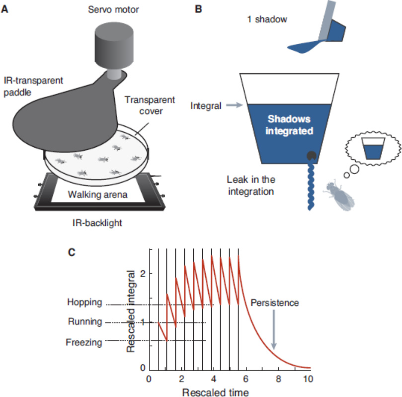
Hình 7.2: Hệ thống thí nghiệm để điều tra liệu các phản ứng phòng vệ bẩm sinh ở ruồi có thể hiện bất kỳ nguyên thủy cảm xúc nào hay không. (A) Ruồi trong một đấu trường có nắp được tiếp xúc lặp lại với một vật thể tối chuyển động tịnh tiến phía trên. Chúng phản ứng với số lần trình bày kích thích ngày càng tăng bằng sự đứng hình, tăng hoạt động vận động và nhảy nhót, nhưng không thể thoát đi. Sau khi kích thích kết thúc, hành vi phòng vệ của ruồi bền bỉ một thời gian trước khi lắng xuống. (B, C) Các phản ứng hành vi của ruồi với kích thích có thể được mô hình hóa bằng cách giả định rằng não ruồi hoạt động như một "bộ tích phân rò rỉ" của sự tiếp xúc kích thích. (B) Phép tương tự với một xô rò rỉ; mỗi lần kích thích đi qua phía trên, thêm nước được đổ vào xô, vốn rò ở một tốc độ cố định. Nếu tốc độ và tần suất tiếp xúc kích thích vượt quá tốc độ rò, xô sẽ đầy, tạo ra các mức tối đa của hành vi phòng vệ. Một khi kích thích ngừng, hành vi phòng vệ sẽ bền bỉ cho đến khi xô rút cạn. Mô hình này có những điểm tương đồng với mô hình thủy lực do Konrad Lorenz đề xuất để giải thích các "trạng thái động lực" nội tại (xem hình 5.2), ngoại trừ rằng mô hình sau cho rằng 'xô' được đổ đầy tự động, chứ không phải để đáp ứng với các kích thích bên ngoài, và không đề cập đến tính bền bỉ. Mô hình này có thể giải thích việc tích lũy thông tin về mối đe dọa dẫn đến các hành vi cụ thể như thế nào. (C) Hình thức hóa toán học của mô hình. Trục y biểu diễn giá trị của tích phân (lượng nước trong xô ở [B]), trục x biểu diễn thời gian. Mỗi đường thẳng đứng biểu diễn một lần kích thích phía trên đi qua. Các đường đứt nét minh họa cách các hành vi phòng vệ khác nhau có các
ngưỡng khác nhau, vốn được hệ thống vượt qua lần lượt với sự tích lũy thông tin, tiến triển từ đứng hình đến đi nhanh hơn đến nhảy nhót. Mô hình lý giải các tính chất cảm xúc về khả năng co giãn quy mô và tính bền bỉ. Phản ứng với bóng tối cũng thể hiện một tính tích cực–tiêu cực tiêu cực, và tổng quát hóa cho các tình huống khác nhau. Được sao chép với sự cho phép từ Gibson et al. 2015.
Đáng chú ý, ruồi trở nên ngày càng "phấn khích" (hoạt động), được đo bằng mức tăng hoạt động vận động, khi số lần tiếp xúc với kích thích thị giác đe dọa (tức là các lần quét của cánh quạt) tăng lên. Hơn nữa, bản chất của phản ứng hành vi thay đổi về mặt định tính theo số lần tiếp xúc kích thích: một vài lần bóng tối trùm từ phía trên khiến ruồi đứng hình hay tăng tốc độ đi lại, nhưng với các lần tiếp xúc liên tiếp thêm nữa, ruồi chuyển sang nhảy nhót. Hơn nữa, sau khi loạt kích thích cuối cùng được đưa, phản ứng của ruồi bền bỉ hàng chục giây đến vài phút; các côn trùng tiếp tục nhảy và đi với vận tốc cao, rồi dần "bình tĩnh trở lại" trong khoảng hàng chục giây. Những quan sát này cung cấp bằng chứng về khả năng co giãn quy mô và tính bền bỉ trong phản ứng của ruồi với kích thích đe dọa. Thú vị là, hiệu ứng tích lũy này của nhiều lần tiếp xúc kích thích phụ thuộc vào khoảng thời gian giữa các lần kích thích (các lần bóng trùm qua): nếu khoảng thời gian quá dài (> 1 giây), không quan sát thấy hiệu ứng tích lũy nào của kích thích. Sự phụ thuộc vào khoảng giữa các kích thích này, và sự suy giảm dần của phản ứng (tính bền bỉ), gợi ý hoạt động của một "bộ tích phân thần kinh rò rỉ" tiềm ẩn đối với việc tiếp xúc mối đe dọa thị giác, ở đâu đó trong não ruồi. Một phép tương tự là một xô rò rỉ được đổ đầy một phần định kỳ bằng nước từ một nguồn chập chờn; nếu lượng nước thêm vào mỗi lần, và/hoặc tần suất đổ, vượt quá tốc độ rò, thì xô sẽ dần đầy mặc dù nó rò (hình 7.2B). Một khi việc đổ ngừng, xô sẽ rút chậm rãi. Một mô hình toán học dựa trên khái niệm này tạo ra khả năng co giãn quy mô và tính bền bỉ tương tự như quan sát thấy ở các con ruồi sống tiếp xúc với các mối đe dọa thị giác lặp lại (hình 7.2C). Nó giống các mô hình khuếch tán-trôi dạt về ra quyết định mà chúng ta đã giới thiệu ở chương 3 (hình 3.4).
Tính tích cực–tiêu cực tiêu cực của kích thích được xác lập bằng cách tiếp xúc ruồi với mối đe dọa thị giác trong khi chúng đang ở trên một mảng thức ăn trung tâm, đang ăn. Tiếp xúc với nhiều kích thích đe dọa cuối cùng đã giải tán ruồi khỏi mảng thức ăn, theo hướng ra xa cạnh dẫn của kích thích. Thú vị là, ruồi tiếp xúc với mười lần trình bày kích thích đe dọa mất
thời gian lâu hơn để "bình tĩnh trở lại" và quay về mảng thức ăn so với ruồi chỉ tiếp xúc bốn lần trình bày kích thích, gợi ý rằng mười lần trình bày kích thích có thể đã gây ra một mức "sợ hãi" cao hơn so với bốn lần trình bày. Những quan sát này gợi ý một trạng thái nội tại suy giảm của sự hưng phấn phòng vệ hay cảnh giác đe dọa can thiệp vào việc ăn, có độ lớn ban đầu tỷ lệ với cường độ tích hợp của kích thích, trong mô hình "xô rò rỉ" (hình 7.2B).
Tổng hợp lại, các dữ liệu này gợi ý rằng hành vi của ruồi tiếp xúc với nhiều kích thích đe dọa liên tiếp không thuần túy là phản xạ, mà đúng hơn thể hiện nhiều nguyên thủy cảm xúc (chương 3), bao gồm tính tích cực–tiêu cực (tiêu cực trong trường hợp này), khả năng co giãn quy mô, tính bền bỉ, ảnh hưởng đến ra quyết định (ở lại hay rời khỏi mảng thức ăn), tính tự động, sự ưu tiên trong kiểm soát hành vi (ức chế ăn hay giao phối), và khả năng tổng quát hóa cho các bối cảnh khác nhau (có và không có thức ăn). Điều này nhất quán với (nhưng không chứng minh) hoạt động của một trạng thái nội tại tiềm ẩn với các tính chất tương tự, vốn gây ra các hành vi này. Bước tiếp theo người ta muốn tìm bằng chứng độc lập cho một trạng thái nội tại tiềm ẩn như vậy, một hướng rõ ràng cho các phép đo sinh học thần kinh trong các thí nghiệm tương lai. Ít nhất, các thí nghiệm này chứng minh một cách để kiểm tra bằng thực nghiệm một số đặc điểm hành vi thể hiện các tính chất đặc trưng của biểu hiện cảm xúc, vốn phân biệt biểu hiện đó với các hành vi phản xạ đơn giản, thậm chí ở một con ruồi. Chúng cũng cung cấp dữ liệu hành vi định lượng ủng hộ trực giác của Darwin rằng ngay cả côn trùng cũng có các trạng thái giống cảm xúc (Darwin 1872/1965).
Một trạng thái nội tại có khả năng co giãn quy mô, bền bỉ, và mang tính tích cực–tiêu cực tiêu cực như vậy có thể có giá trị thích nghi gì? Hãy nghĩ đến những con ruồi đói đang đậu trên một miếng quả chín: một bóng tối đi qua phía trên và ruồi phải "quyết định" xem có tiếp tục ăn hay thoát đi. Đây không phải là một quyết định tầm thường: thoát đi cần năng lượng, xóa bỏ lợi ích calo của thức ăn đã tiêu thụ; do đó, thoát đi sớm khỏi một kích thích "giả" không thực sự báo hiệu kẻ săn mồi có thể cuối cùng gây ra cái chết vì đói và sẽ là bất lợi về thích nghi (xem hộp 2.2). Ngược lại, nếu ruồi ở lại trên thức ăn quá lâu, cho đến khi nhiều lần trải nghiệm kích thích đã tăng độ chắc chắn rằng một mối đe dọa thực sự hiện diện, chúng đối mặt nguy cơ chết vì bị săn mồi. Vậy lựa chọn ở lại hay bỏ chạy thực sự tương đương một quyết định sinh tử và đòi hỏi não ruồi phải thực hiện một loại phân tích
chi phí–lợi ích để quyết định tiếp tục ăn hay thoát đi, mỗi lần chúng gặp một mối đe dọa. Khả năng tích hợp nhiều lần tiếp xúc kích thích theo thời gian và chuyển dịch đó thành một biến trạng thái mà cường độ của nó quyết định ở lại hay bỏ chạy có khả năng hết sức quan trọng cho phân tích chi phí–lợi ích này.
Chúng ta biết gì về mạch thần kinh làm nền cho các phản ứng hành vi của ruồi trong các điều kiện này? Ruồi có tương đương của một hạch hạnh nhân hay một vùng dưới đồi trong não tí hon của chúng, thứ tích hợp các ảnh hưởng của nhiều loại kích thích gây khó chịu khác nhau không? Chúng ta vẫn chưa biết. Não ruồi (với một số ngoại lệ đáng chú ý) được tổ chức rất khác so với não động vật có vú, và nhìn chung không có các cấu trúc trung ương tương ứng trực tiếp (tức là đồng nguyên, theo nghĩa tiến hóa) với các cấu trúc trong não của chúng ta. Tuy nhiên, có các vùng tương đồng; chẳng hạn, thể nấm có thể tương đồng với hồi hải mã và/hoặc vỏ não khứu giác, thùy tua giống củ khứu giác của động vật có vú, và các võng mạc của ruồi và động vật có vú thể hiện những điểm tương đồng về tổ chức đáng chú ý mặc dù chúng tiến hóa độc lập. Hơn nữa, não ruồi được cấu thành từ các nơ-ron mà, từ góc độ phân tử, rất giống với các nơ-ron trong não của chúng ta. Vậy, mặc dù não ruồi có thể không giống bề ngoài một não động vật có vú, nó có các vùng chức năng tương đồng, dùng cùng các hóa chất (dopamine, serotonin, acetylcholine, GABA), và các nơ-ron của nó được tạo từ cùng các phân tử như các nơ-ron động vật có vú. Do đó, câu hỏi không phải là "ruồi có hạch hạnh nhân không?" Câu hỏi là liệu có một nút mạch chung xử lý các phản ứng phòng vệ với nhiều loại kích thích đe dọa khác nhau hay không, hay mỗi loại kích thích kích hoạt con đường phản ứng "riêng tư" của chính nó.
Một ví dụ nổi tiếng về con đường "riêng tư" như vậy là con đường kiểm soát việc thoát khỏi một kích thích thị giác trùm đến dần. Drosophila có một mạch được mô tả kỹ trung gian một cú nhảy nhanh, phản xạ ra xa khỏi một mối đe dọa thị giác trùm đến dần, gồm một "nơ-ron trung gian xuống đi" lớn, gọi là "sợi khổng lồ," kéo dài từ não trung ương đến các hạch ngực (tương đương chức năng của tủy sống ở ruồi). Thông tin truyền nhanh qua các synap điện (các gap junction) dọc con đường này từ hệ thị giác của ruồi đến các nơ-ron vận động kích hoạt các cơ nhảy, cho phép một phản ứng thoát thân xảy ra trong vòng vài chục mili giây
kể từ khi phát hiện mối đe dọa (đây là điều khiến ruồi rất khó đập). Theo như chúng ta biết, con đường này đặc hiệu cho các kích thích thị giác đe dọa và không, chẳng hạn, được kích hoạt bởi các mùi gây khó chịu. Tuy nhiên, hiện có bằng chứng về nhiều mạch trung gian các phản ứng thoát thân với các mối đe dọa thị giác ở ruồi (Reyn et al. 2014). Có lẽ một số mạch đó cũng xử lý các phản ứng thoát thân với các kích thích của các thức giác quan khác. Câu hỏi này có khả năng sẽ được trả lời trong thời gian ngắn. Một câu hỏi quan trọng khác cho tương lai sẽ là hiểu các mạch trung gian các phản ứng phòng vệ phản xạ liên quan thế nào với các mạch trung gian các phản ứng tích hợp, giống cảm xúc: đây là các con đường độc lập, song song, hay chúng phản ánh sự sửa đổi phụ thuộc trạng thái của cùng một mạch?
Lo Âu Ở Côn Trùng Và Các Động Vật Chân Đốt Khác
Như trong trường hợp của chuột nhắt, có một sự phân biệt giữa cách "sợ hãi" và "lo âu" đã được nghiên cứu trong các hệ không xương sống. Ruồi thể hiện tính hướng biên (thigmotaxis); khi được đặt trong một đấu trường mở lớn (so với kích thước một con ruồi), chúng có xu hướng đi sát ôm lấy các bức tường. Hành vi này về bề ngoài giống sự tránh né vùng trung tâm của đấu trường thể hiện bởi các loài gặm nhấm "lo âu" trong cái gọi là phép thử bãi mở. Cho loài gặm nhấm các thuốc làm giảm lo âu ở người, chẳng hạn Valium (một benzodiazepine nhắm vào các thụ thể GABA), khiến con vật dành nhiều thời gian hơn ở trung tâm đấu trường (xem hình 5.3 và chương 6). Đáng chú ý, tính hướng biên ở ruồi cũng được giảm bởi điều trị với các thuốc chống lo âu tương tự nhắm vào các thụ thể GABA hay serotonin (Aryal et al. 2016). Các kết quả này được diễn giải là cung cấp "tính hợp lệ dược lý" rằng hành vi hướng biên thể hiện "lo âu" ở ruồi. Tuy nhiên, không phải mọi trường hợp tính hướng biên đều nhất thiết chỉ ra lo âu; chẳng hạn, hành vi bám theo tường có thể phản ánh các hiệu ứng tự duy trì của dòng quang học (do chuyển động của tường dọc võng mạc ruồi gây ra) nhằm thúc đẩy hoạt động vận động dọc chu vi của một đấu trường, qua một "phản ứng quang-vận động," chứ không phải là kết quả của sự tránh né dựa trên lo âu đối với vùng trung tâm mở. Trong trường hợp đó, các thuốc "chống lo âu" (tác động lên các thụ thể phân bố rộng khắp não) có thể can thiệp vào các mạch thị giác trung gian hành vi quang-vận động này.
Một nghiên cứu khác đã điều tra tôm hùm đất, vốn giống ruồi là động vật chân đốt, dùng một phiên bản dưới nước của mê cung hình chữ thập nâng cao để đánh giá hành vi của chúng. (Trong mê cung hình chữ thập nâng cao, một cặp nhánh—chẳng hạn trục bắc–nam—mở và sáng rực để thúc đẩy sự né tránh, trong khi cặp nhánh vuông góc—chẳng hạn trục đông–tây—được bao kín và an toàn.) Người ta báo cáo rằng tiếp xúc tôm hùm đất với một thuốc chống lo âu benzodiazepine làm giảm sự tránh né các nhánh được chiếu sáng của mê cung, trong khi tiêm serotonin hay tiếp xúc với sốc không thể tránh làm tăng sự tránh né các nhánh đó (Fossat et al. 2014). Phản ứng này giống hiệu ứng của các thao tác này lên chuột nhắt hay chuột cống được kiểm tra trong phiên bản trên cạn của mê cung hình chữ thập nâng cao (xem hình 6.6). Mặc dù hấp dẫn, các nghiên cứu này tiếp tục theo lối cố tìm các trạng thái đồng nguyên với các trạng thái cảm xúc cụ thể ở người bằng cách áp dụng các tiêu chí hành vi hay dược lý tương tự, thay vì bằng cách tìm kiếm các hành vi đặc trưng loài thể hiện các tính chất tổng quát đặc trưng của biểu hiện cảm xúc.
Các Trạng Thái Cảm Xúc Và Hành Vi Xã Hội Ở Côn Trùng
Giao phối và hành vi hung hăng ở động vật có vú liên quan đến các trạng thái nội tại cường độ cao về động lực, sự hưng phấn, và thúc đẩy (xem chương 5), và ở con người với các cảm giác chủ quan mà chúng ta gán nhãn các trạng thái này bằng các từ như tình yêu, dục vọng, giận dữ, hay cuồng nộ. Các hệ thần kinh nào hoạt động để kiểm soát các hành vi sinh sản ở Drosophila, và nếu vậy chúng có đóng vai trò trong việc hiện thực hóa các trạng thái nội tại không? Một câu hỏi cơ bản là liệu ruồi giao phối vì điều đó tạo phần thưởng hay củng cố cho chúng, hay đơn giản vì chúng được lập trình di truyền để làm điều đó. Một nghiên cứu thú vị của Ulrike Heberlein và các đồng nghiệp cho thấy ruồi đực bị thu hút ưu tiên đến một mùi mà chúng trải nghiệm trong lúc giao phối với một con cái, so với một mùi đối chứng. Các kết quả tương tự thu được khi mùi được ghép cặp với ethanol, thứ ruồi thích uống. Các kết quả này được diễn giải để gợi ý rằng cả giao phối lẫn tiêu thụ ethanol đều tạo phần thưởng cho ruồi. Tuy nhiên, có thể US cho điều kiện hóa liên kết là mùi của một con cái còn trinh, chứ không phải trải nghiệm giao phối tự nó.
Ruồi đực thể hiện hành vi hung hăng với các con đực khác, cũng như tán tỉnh và giao phối với con cái. Các nghiên cứu gần đây đã nhận diện một mạng lưới liên kết của các cụm nơ-ron dị hình giới tính kiểm soát hành vi tán tỉnh của con đực ở loài này. (Với "dị hình giới tính," trong trường hợp này, nghĩa là các nơ-ron hiện diện ở con đực nhưng không phát hiện được ở con cái.) Một trong các cụm đó, gọi là P1, không chỉ thúc đẩy hành vi tán tỉnh của con đực mà còn có thể thúc đẩy sự hung hăng. Quan trọng là, kích thích quang di truyền các nơ-ron P1 có thể kích hoạt một trạng thái nội tại bền bỉ ở ruồi đơn độc, vốn thúc đẩy sự hung hăng một khi con ruồi gặp một con đực cùng loài. Trạng thái nội tại này có thể kéo dài hàng chục phút khi không có tiếp xúc xã hội và có thể đại diện cho một loại ký ức bền bỉ về một cuộc gặp giao phối với một con cái, có thể kích hoạt sự hung hăng khi gặp một con đực cạnh tranh. Các dữ liệu này gợi ý rằng tán tỉnh và hung hăng ở Drosophila không đơn thuần là các phản xạ, mà liên quan đến các trạng thái nội tại bền bỉ (Anderson 2016). Cho phát hiện rằng giao phối và hung hăng cũng được kiểm soát bởi các nơ-ron đồng định vị không gian và đan xen giải phẫu ở động vật có vú (chương 6), các kết quả này cũng gợi ý rằng mạch thần kinh làm nền cho các hành vi xã hội bẩm sinh này có thể thể hiện các đặc điểm tổ chức tương tự ở ruồi và chuột nhắt, các loài cách nhau 500 triệu năm tiến hóa. Liệu sự tương đồng này phản ánh tiến hóa phân hóa (phái sinh từ một tổ tiên chung) hay hội tụ vẫn còn phải được xác định.
Các Trạng Thái Nội Tại Ở Các Động Vật Không Xương Sống Khác
Một cách tiếp cận thay thế để tìm bằng chứng về các trạng thái cảm xúc ở côn trùng được cung cấp bởi các nghiên cứu về "thiên kiến nhận thức" ở ong (Mendl, Burman, và Paul 2010) (xem hộp 3.3). Ở đây ý tưởng là các cảm xúc có thể được nhận diện như các trạng thái nội tại thay đổi hành vi "nhận thức," chẳng hạn ra quyết định trong các điều kiện mà kết cục của quyết định là mơ hồ. Chẳng hạn, người ta đã cho thấy việc quấy rầy ong bằng cách lắc mạnh khiến chúng chọn một kết cục kém thuận lợi hơn (tức là chọn một tín hiệu ít có khả năng dự đoán phần thưởng hơn). Điều này được diễn giải là bằng chứng rằng việc lắc gây ra một thiên kiến nhận thức "bi quan," nói cách khác, một cảm xúc có tính tích cực–tiêu cực tiêu cực khiến con ong hành xử như thể nó khó có khả năng
được thưởng (Bateson et al. 2011). Các thí nghiệm tương tự gợi ý rằng, ngược lại, nồng độ sucrose cao có thể thúc đẩy một thiên kiến nhận thức "tích cực" ở ong. Rõ ràng ong có các khả năng nhận thức ấn tượng và các hành vi tinh vi (não của chúng chứa gần một triệu nơ-ron). Tuy nhiên, có thể khó phân biệt hiệu ứng của một kích thích "công cụ thô" tương đối, chẳng hạn lắc hay đường, nhằm thúc đẩy một trạng thái cảm xúc làm thiên lệch một quá trình nhận thức bậc cao, với hiệu ứng thay đổi độ nhạy cảm giác ngoại vi hay hoạt động vận động theo cách ảnh hưởng đến việc thực hiện hành vi. Trong số các động vật không xương sống, sinh vật duy nhất khác có các công cụ di truyền có thể so sánh với những công cụ có sẵn ở Drosophila là giun tròn Caenorhabditis elegans. Con vật này, được giới thiệu như một sinh vật mô hình bởi người đoạt giải Nobel Sydney Brenner trong thập niên 1960 và ’70, có ưu điểm là rất nhỏ (~1 mm dài), trong suốt, có thời gian thế hệ ngắn (ba ngày) và chỉ 302 nơ-ron cấu thành toàn bộ hệ thần kinh của nó. Hơn nữa, "connectome" (sơ đồ nối dây nơ-ron) hoàn chỉnh của con giun đã được xác định bằng cách dựng lại các ảnh điện tử nối tiếp; cho đến nay nó là sinh vật trưởng thành duy nhất mà một connectome hoàn chỉnh đã được xác lập.
Liệu C. elegans có các trạng thái cảm xúc hay không vẫn chưa rõ, nhưng nó chắc chắn có các trạng thái nội tại bền bỉ ảnh hưởng đến hành vi của nó, vốn đã được phân tích ở một mức chi tiết phân tử và tế bào chưa đạt được ở bất kỳ sinh vật nào khác. Công trình từ phòng thí nghiệm của Cornelia Bargmann, chẳng hạn, đã cho thấy sinh vật luân phiên giữa hai trạng thái kéo dài, gọi là "lang thang" và "trú ngụ" (Flavell et al. 2013). Như tên gọi của chúng ngụ ý, các trạng thái này được kích hoạt khi con giun đang tìm kiếm thức ăn, hay tương đối ít vận động. Serotonin (nổi tiếng là ảnh hưởng đến tâm trạng và sự hưng phấn ở động vật có vú) thúc đẩy trạng thái trú ngụ bằng cách ức chế các nơ-ron thúc đẩy lang thang. Ngược lại, một neuropeptid gọi là yếu tố phân tán sắc tố (PDF) thúc đẩy trạng thái lang thang. Kích hoạt quang di truyền con đường tín hiệu nội bào được PDF huy động có thể kích hoạt hành vi lang thang kéo dài nhiều phút ở các con vật đang trú ngụ trước khi kích thích. Các nghiên cứu này cho thấy các chất điều hòa thần kinh cụ thể, bao gồm một amin sinh dưỡng và một neuropeptid, tác động lên các mạch thần kinh để thúc đẩy các thay đổi bền bỉ trong trạng thái hành vi như thế nào, và bắt đầu hé lộ một số khía cạnh nền tảng nhất của cách các nguyên thủy cảm xúc có thể được mã hóa trong các hệ thần kinh.
Như được minh họa trong các ví dụ trên, các sinh vật không xương sống có thể được dùng để nghiên cứu sinh học thần kinh của các nguyên thủy cảm xúc, chứ không phải để bắt chước hay mô hình hóa các cảm xúc cụ thể của con người. Phần trình bày của chúng ta về chủ đề này còn hời hợt, và có rất nhiều điều mà các động vật không xương sống khác, chẳng hạn động vật chân đầu, có thể đóng góp cho việc nghiên cứu cảm xúc (hộp 7.1). Sức mạnh của các hệ được mô tả ở đây phản ánh thực tế rằng chúng ta có thể dùng các kích thích thực nghiệm và các phép đo phụ thuộc không có sẵn ở người, và rằng chúng ta có thể dùng các công cụ sinh học thần kinh, như quang di truyền học, chụp ảnh canxi, điện sinh lý, và phân tích hành vi tự động, cho phép một mức phân giải tế bào và suy luận nhân quả không thể đạt được ở người. Ở mức độ nào đó có sự bảo tồn tiến hóa hay tính phổ quát của các trạng thái cảm xúc cụ thể, có vẻ khôn ngoan nhất là, trong thời gian hiện tại, tập trung vào các trạng thái đó cung cấp các tiêu chí rõ ràng nhất để đánh giá chúng, và một giá trị thích nghi hiển nhiên cho sự sống còn của loài. "Sợ hãi," hay một trạng thái nội tại bền bỉ của sự hưng phấn phòng vệ hay cảnh giác đe dọa, là một ví dụ tốt của một cảm xúc như vậy; kinh ngạc hay xấu hổ thì không phải. Khi chúng ta chuyển sang các nghiên cứu ở người trong hai chương tới, chúng ta sẽ thấy một sự đảo ngược phần nào của trọng tâm này. Các nghiên cứu ở người phụ thuộc vào các phương pháp và phép đo mà, theo nhiều cách, kém hơn những phương pháp có thể áp dụng cho động vật, nhưng loạt cảm xúc được nghiên cứu, và các cách gợi ra chúng, cực kỳ phong phú. Các nghiên cứu trên động vật (như được tổng quan ở chương này và chương trước) có xu hướng cung cấp các mô tả rất chi tiết mức tế bào về các cơ chế cho một khía cạnh cụ thể của chỉ một số rất ít, các trạng thái cảm xúc cụ thể. Ngược lại, các nghiên cứu ở người có xu hướng cung cấp các mô tả mức hệ thống rộng hơn nhiều và ít mang tính cơ chế hơn về cảm xúc, nhưng nổi bật bao gồm các khía cạnh phong phú hơn quan trọng đối với cuộc sống của chúng ta, như điều hòa cảm xúc và các cảm giác. Như chúng ta đã lưu ý nhiều lần, việc liên hệ hai cách tiếp cận rất khác nhau này về nghiên cứu cảm xúc với nhau là một trong những thách thức quan trọng nhất cho tương lai của một khoa học về cảm xúc.
Hộp 7.1. Các Trạng Thái Nội Tại Của Động Vật Chân Đầu.
Các động vật chân đầu, bao gồm bạch tuộc, mực, và mực nang, có một hệ thần kinh phức tạp trông không giống gì một hệ thần kinh động vật có vú, và chúng thể hiện các hành vi phức tạp. Chúng là điều gần nhất mà chúng ta hiện có thể đạt được đến các sinh vật ngoài hành tinh thông minh.
Một con bạch tuộc có thể có khoảng 500 triệu nơ-ron trong não, nhiều hơn một con chuột nhắt (khoảng 100 triệu) và nhiều hơn nhiều so với một con ruồi (khoảng 250.000), nhưng ít hơn nhiều so với một con người (khoảng 80 tỷ).
Bạch tuộc đặc biệt đã được báo cáo là có khả năng các hành vi tinh vi, bao gồm học tập quan sát và giải quyết vấn đề. Thật cám dỗ khi suy đoán rằng các thay đổi nhanh chóng về sắc tố có thể quan sát thấy khi bạch tuộc bị đe dọa trong điều kiện nuôi nhốt phản ánh một loại biểu hiện cảm xúc nào đó, nhưng có bằng chứng rằng các thay đổi này có thể được kiểm soát ngoại vi, ở da, chứ không phải bởi não. Do đó, có thể trong khi các con vật này thể hiện các tiêu chí chức năng cho cảm xúc, chúng không có một trạng thái sinh học thần kinh nội tại tập trung như động vật có vú có. Cũng như các khía cạnh khác của hành vi của chúng, sự kiểm soát có thể phân bố nhiều hơn nhiều—đặt ra cho nhà khoa học một thách thức thú vị về cách hiểu một hệ thống như vậy.
Cả bạch tuộc lẫn mực đều thể hiện một loạt các hành vi phòng vệ, bao gồm ẩn mình (ngụy trang), phun mực, và thoát thân bằng lực đẩy. Bối cảnh mà các hành vi khác nhau này xảy ra có thể phụ thuộc vào khoảng cách của con vật với mối đe dọa, như được ghi nhận bởi Roger Hanlon tại Marine Biological Laboratory ở Woods Hole, Massachusetts. Sự ẩn mình xảy ra khi mối đe dọa còn xa, nhưng chuyển sang thoát thân (phun mực và lực đẩy) khi mối đe dọa trở nên gần hơn. Các thay đổi này có thể tương ứng với sự chuyển từ đứng hình sang hành vi bỏ chạy đặc trưng của động vật trên cạn và khớp với cùng lý thuyết sắp xảy ra mối đe dọa mà chúng ta đã mô tả trong hộp 2.3. Những chuyển tiếp trong hành vi phòng vệ khi một kẻ săn mồi hay mối đe dọa trở nên gần hơn có thể đại diện cho một hình thức khả năng co giãn quy mô, ở chỗ một trạng thái nội tại của sự hưng phấn phòng vệ sẽ lẽ ra tăng lên khi kẻ săn mồi tiến lại gần.
Liệu bạch tuộc có thể hiện các nguyên thủy cảm xúc khác, bao gồm tính bền bỉ, tính tích cực–tiêu cực, và tính tổng quát hóa, hay không vẫn chưa được nghiên cứu một cách hệ thống. Một trong các thách thức trong việc nghiên cứu sinh học thần kinh cảm xúc ở bạch tuộc là các sinh vật này khó duy trì và nhân giống trong phòng thí nghiệm (chúng có tuổi thọ đáng ngắn, chỉ một hoặc hai năm), chưa chịu được các thao tác di truyền, và
khó thích nghi với các chế phẩm để ghi nhận điện sinh lý hay chụp ảnh. Tuy nhiên, chúng là những sinh vật hấp dẫn, và người ta mong chờ một thời điểm khi sinh học thần kinh của cảm xúc và các trạng thái nội tại ở các sinh vật khó nắm bắt này trở thành một khoa học trưởng thành.
Tóm Tắt
- Drosophila melanogaster, ruồi giấm, có thể được dùng để làm rõ mạch thần kinh và hóa học làm nền cho học tập liên kết gây khó chịu, một hành vi giống về các đặc điểm của nó với điều kiện hóa sợ hãi kiểu Pavlov ở động vật có vú.
- Các phản ứng phòng vệ bẩm sinh với các mối đe dọa thị giác ở ruồi gồm các phản ứng phản xạ nhanh cũng như các phản ứng tích hợp thể hiện nhiều khối xây dựng cảm xúc cũng thấy ở các loài động vật có vú, bao gồm khả năng co giãn quy mô, tính bền bỉ, tính tích cực–tiêu cực, tính tổng quát hóa, và sự ưu tiên đối với hành vi đang diễn ra. Các khối xây dựng này có thể chỉ ra một trạng thái cảm xúc nội tại tiềm ẩn.
- Sinh học thần kinh của một trạng thái nội tại bền bỉ có thể được mổ xẻ chi tiết cơ chế tinh tế bằng cách dùng C. elegans, một con giun tròn dễ thao tác di truyền chỉ chứa 302 nơ-ron trong toàn bộ hệ thần kinh của nó. Mặc dù giun và ruồi khó có thể hữu ích cho việc nghiên cứu các cảm xúc xã hội như xấu hổ, các nghiên cứu này minh họa cách các "sinh vật mô hình" trong sinh học đưa ra một sự đánh đổi giữa tính dễ thao tác thực nghiệm và độ phức tạp của các hiện tượng có thể được điều tra.
Chương 8 — Công Cụ Và Phương Pháp Trong Thần Kinh Học Con Người
Chương 8 — Công Cụ Và Phương Pháp Trong Thần Kinh Học Con Người
Giống như phần lớn tuyệt đối các nghiên cứu về cảm xúc ở động vật trong lịch sử đều đến từ các nghiên cứu hành vi, phần lớn tuyệt đối các nghiên cứu về cảm xúc ở con người cũng vậy. Tuy vậy, hai dòng công việc lịch sử này phần lớn đã sử dụng những loại phép đo rất khác nhau: ở động vật là các bài kiểm tra hành vi được chuẩn hóa trong phòng thí nghiệm, hay các quan sát tập tính học trong môi trường tự nhiên; còn ở con người là các nghiên cứu về cảm xúc được tự báo cáo trong phòng thí nghiệm. Điều này khiến việc kết nối các nghiên cứu về cảm xúc ở động vật với các nghiên cứu ở con người trở nên khó khăn. Xét đến những gì bạn vừa đọc trong bốn chương trước, người ta có thể hy vọng rằng một cách tiếp cận sinh học thần kinh đối với cảm xúc sẽ đưa việc nghiên cứu động vật và con người lại gần nhau hơn. Phải chăng tất cả các nhà thần kinh học đều dùng chung những công cụ? Thực ra, ngay cả ở đây cũng tồn tại những khác biệt lớn, như chúng ta sẽ thấy. Trong chương này, chúng tôi điểm qua một số cách tiếp cận được dùng để nghiên cứu não trong các nghiên cứu thần kinh học về cảm xúc ở con người, và đối chiếu với những cách tiếp cận được dùng để nghiên cứu não ở động vật — chủ đề của các chương 4–7. Một thách thức lớn sẽ là làm thế nào để bắc cầu nối giữa dữ liệu từ các công cụ như chụp cộng hưởng từ chức năng (fMRI, chủ yếu dùng ở người), vốn đo những tương quan của lưu lượng máu ở các vùng lớn của não, với điện sinh lý, chụp ảnh canxi hay quang di truyền học (thường dùng ở động vật), vốn ghi nhận hoạt động của từng nơ-ron đơn lẻ và can thiệp vào các quần thể tế bào nơ-ron cụ thể (xem hình 4.2).
Một cách để liên hệ các loại phương pháp thần kinh học khác nhau với nhau là diễn đạt lại các câu hỏi của chúng ta ở một tầng trừu tượng hơn. Trong chương 3, chúng tôi đã bàn về những đặc tính xử lý mà các trạng thái cảm xúc trung ương cần phải có để thực hiện các vai trò chức năng của chúng, và những tính chất này của cảm xúc đã phác họa những ràng buộc trừu tượng về tính toán hay kiến trúc mà chúng ta có thể bắt đầu tìm kiếm trong não. Trong chương 4, chúng tôi đã bàn về việc một tầng phân tích trừu tượng hơn về mặt tính toán hay thuật toán như thế
có thể được liên hệ với các phép đo thần kinh học ra sao (hình 4.4). Trong các chương 5, 6 và 7, chúng ta đã thấy rằng quả thật tồn tại những mạch thần kinh cụ thể gây ra các hành vi thuộc về cảm xúc ở động vật, và các mạch này quả thực thể hiện nhiều tính chất mà chúng tôi đã liệt kê cho các trạng thái cảm xúc trong hình 3.2.
Hy vọng rằng những mô tả tương tự có thể bắc cầu nối giữa các tầng phân tích khác nhau cũng sẽ đạt được đối với não người. Chúng ta muốn một câu chuyện liên kết các tiêu chí chức năng (vai trò thích nghi nào đã khiến một cảm xúc được chọn lọc giữ lại?) với các đặc tính xử lý (cần những phép tính gì để đảm nhận vai trò chức năng đó?) với những phát hiện về hiện thực hóa (điều này thực sự được thực hiện trong não ra sao?). Một cách rất sơ lược, ba tầng trừu tượng này tương ứng gì đó với tầng mà nhà tập tính học sử dụng khi quan sát hành vi, tầng mà nhà thần kinh học nhận thức hay hệ thống dùng khi bàn về các đặc tính xử lý và kiến trúc, và tầng mà nhà sinh học thần kinh dùng khi thu thập dữ liệu từ não. Tuy vậy, thực tế phần lớn các nhà thần kinh học hệ thống và nhận thức (bao gồm cả hai tác giả của cuốn sách này) đều sử dụng các phân tích trải khắp cả ba tầng.
Dĩ nhiên, so với các nghiên cứu ở động vật, nghiên cứu cảm xúc ở con người có một lợi thế bề ngoài rất lớn: con người có thể nói và hiểu ngôn ngữ. Sự kiện này, cùng với nhiều cân nhắc thực tiễn và đạo đức khác, đã tạo ra những khác biệt lớn về phương pháp trong các nghiên cứu thần kinh học về cảm xúc ở con người so với ở động vật. Đối tượng người thường được đưa những chỉ dẫn ngắn gọn bằng lời về việc phải làm gì, thường cho biết họ đang làm gì (hoặc rằng họ đã hiểu việc phải làm) qua trao đổi bằng lời, thường không chịu nổi nhiều ngày huấn luyện, vì lý do đạo đức không thể dễ dàng được trình các kích thích khơi dậy những cảm xúc tiêu cực dữ dội, và thường bộc lộ trạng thái cảm xúc qua các báo cáo bằng lời về cảm giác của họ. Vì vậy, huấn luyện hầu như không có, các cảm xúc thường rất nhạt so với những gì được nghiên cứu ở động vật, và quá trình xử lý ngôn ngữ thường bị lôi kéo ở mức độ đáng kể.
Điều này khiến các nghiên cứu ở người thường dễ tiến hành hơn nhiều so với ở động vật: bạn chỉ cần nói với đối tượng phải làm gì thay vì dàn dựng một tình huống hay một quy trình huấn luyện công phu (“hãy nghĩ đến một lúc trong đời bạn cảm thấy thật buồn, rồi kể cho tôi nghe bạn cảm thấy thế nào”). Tuy nhiên, cách tiếp cận này cũng dễ dàng đánh lừa người thí nghiệm tin rằng đối tượng quả thật đang làm những gì người thí nghiệm nghĩ họ đang làm, điều này không phải lúc nào cũng đúng.
Chẳng hạn, điều then chốt là phải diễn giải cẩn thận những gì đối tượng nói, bởi các báo cáo bằng lời về trải nghiệm của họ là dữ liệu thường rất dễ chịu ảnh hưởng từ những niềm tin và kỳ vọng nền tảng của đối tượng, kể cả những kỳ vọng mà chính thí nghiệm đưa vào. Ví dụ, nếu bạn được trả tiền với tư cách đối tượng nghiên cứu và được bảo hãy cảm thấy buồn, rất có thể bạn sẽ báo cáo là đang cảm thấy buồn vì bạn muốn kiếm được số tiền đó, hoặc vì những kỳ vọng xã hội chung của thí nghiệm (cái gọi là đặc tính yêu cầu — demand characteristics). Các nhà tâm lý học rất rõ những phức tạp này và đã thiết kế các bảng hỏi cùng những phép đo phụ thuộc khác có thể giúp xác định chéo một trạng thái cảm xúc. Để những phép đo này có thể khảo sát một cách thuyết phục một trạng thái cảm xúc, chẳng hạn nỗi sợ hãi, chúng phải thể hiện tính hợp lệ khái niệm (construct validity) mạnh — thường là kết quả tương quan cao trên một loạt các phép đo phụ thuộc khác nhau, chứ không chỉ riêng báo cáo bằng lời (hộp 8.1).
Hộp 8.1. Tính hợp lệ của khái niệm
Các nhà khoa học sử dụng những phép đo cụ thể để suy ra sự tồn tại của các biến số nhất định trong lý thuyết của họ. Chẳng hạn, các nhà vật lý dùng rất nhiều dụng cụ tinh vi để suy ra bản chất của các hạt dưới nguyên tử. Các nhà tâm lý học và nhà sinh học có thể dùng các phép đo hành vi hay não bộ để suy ra sự tồn tại của những khái niệm như chú ý hay trí nhớ — hoặc cảm xúc. Điều này đặt ra một câu hỏi hiển nhiên: làm sao bạn biết các phép đo của mình là những chỉ báo tốt cho thứ bạn nghĩ rằng chúng đo?
Khả năng của một tập hợp phép đo tạo ra bằng chứng tốt về một khái niệm nhất định được gọi là “tính hợp lệ của khái niệm”. Đây thực ra là một bó tiêu chí. Một khía cạnh quan trọng của tính hợp lệ là “tính hợp lệ trực quan” (face validity), nghĩa đơn giản là mức độ hợp lý của một phép đo cụ thể nào đó trong việc cung cấp bằng chứng cho một khái niệm nhất định. Nếu tôi có một bảng hỏi chi tiết về các cảm giác sợ hãi và lo âu của bạn, nó có tính hợp lệ trực quan khá hợp lý như một phép đo của nỗi sợ hãi. Nếu tôi đo tín hiệu fMRI ở hạch hạnh nhân của bạn, tính hợp lệ trực quan của nó như một phép đo sợ hãi còn gây nghi ngờ nếu không có thêm rất nhiều thông tin. Nếu tôi chỉ đo huyết áp của bạn, tính hợp lệ trực quan của nó đối với sợ hãi là kém (tự nó, vì ta dễ dàng nghĩ ra những trường hợp huyết áp không liên quan gì đến sợ hãi).
Những ví dụ này làm nổi bật nhu cầu về nhiều phép đo tốt, và dẫn đến hai khía cạnh chính của tính hợp lệ khái niệm: tính hợp lệ hội tụ và tính hợp lệ phân biệt. Nếu chúng ta muốn có bằng chứng thuyết phục về một trạng thái sợ hãi, việc chỉ đo huyết áp hay biểu cảm khuôn mặt không phải là chỉ báo đáng tin lắm. Tuy nhiên, nếu chúng ta đo sự thay đổi huyết áp, sự thay đổi nhịp tim, điểm số trên một bảng hỏi về sợ hãi, biểu cảm khuôn mặt và tín hiệu fMRI, chúng ta có thể dùng tất cả những phép đo này cùng nhau để thu được bằng chứng khá thuyết phục về sợ hãi. Nếu các phép đo này đều được thấy tương quan trong trạng thái sợ hãi, điều đó cung cấp tính hợp lệ hội tụ; dù chúng đang đo cái gì, chúng dường như đang đo cùng một thứ, và nếu ít nhất một phép trong số chúng có tính hợp lệ trực quan đối với việc đo sợ hãi, thì những phép còn lại khi ghép cùng nhau cũng vậy. Ngược lại, chúng ta cũng muốn các phép đo này mang những giá trị khác nhau đối với một cảm xúc khác — huyết áp, tín hiệu fMRI, nhịp tim, biểu cảm khuôn mặt và báo cáo tự thân sẽ trông khác đi nếu người đó đang cảm thấy, chẳng hạn, hạnh phúc thay vì sợ hãi. Nhiều phép đo trong số này, xét riêng lẻ, có thể có tính hợp lệ phân biệt rất kém. Chẳng hạn, các phép đo tự chủ điển hình thu được trong phòng lab (nhịp tim, độ dẫn da, v.v.) không phân biệt rõ ràng giữa các cảm xúc khác nhau (cf. hộp 2.1), tuy vẫn có nghiên cứu tích cực về việc chúng có thể cung cấp tính hợp lệ phân biệt hay không nếu ta nhìn vào các kiểu mẫu trên nhiều phép đo.
Những vấn đề về tính hợp lệ khái niệm này đặc biệt quan trọng trong các nghiên cứu chụp ảnh não ở người, vì thường không có phép đo hành vi bộc lộ ra ngoài, khác với các nghiên cứu ở động vật. Vì đối tượng phải nằm bất động trong máy chụp não, người ta không thể được chụp ảnh khi họ đang gào thét, giẫy giụa hay bỏ chạy. Điều này khiến việc bảo đảm rằng các phép đo phụ thuộc khác (các phép đo hoạt động tự chủ, báo cáo tự thân, biểu cảm khuôn mặt) được xác thực tốt trở nên đặc biệt quan trọng, và lý tưởng là tất cả đều được thu thập cùng lúc và cung cấp bằng chứng nhất quán về cảm xúc mà người thí nghiệm muốn tạo ra trong nghiên cứu.
Những Nghiên Cứu Thần Kinh Học Lịch Sử Về Cảm Xúc Ở Con Người
Trước khi thần kinh học nhận thức hiện đại ra đời (vào những năm 1970 và 1980), và còn lâu trước khi fMRI ra đời (giữa những năm 1990), chỉ có một số ít báo cáo ca lâm sàng dường như cung cấp sự ủng hộ cho giả thuyết rằng có những vùng giải phẫu cụ thể trong não người phụ trách các cảm xúc. Sớm nhất trong số đó là những ca thần kinh học hiếm gặp — trong những ca rõ ràng nhất, là những bệnh nhân có tổn thương ở những phần cụ thể của não (như cũng đúng với những lĩnh vực nhận thức khác, như ngôn ngữ, thị giác và trí nhớ).
Nhiều khả năng ca tổn thương nổi tiếng nhất có liên quan đến cảm xúc là Phineas Gage, người đã được mô tả trong sách vở và bài báo, và tổn thương não của anh ta đã được tái dựng từ rất ít bằng chứng còn tồn tại (Damasio và cộng sự 1994; MacMillan 2000). Tóm tắt lại, đây là câu chuyện của Gage. Gage là một đội trưởng làm việc trong việc xây dựng tuyến đường sắt ở Vermont, nơi phải cho nổ đá để lát đường ray. Để làm điều này, người ta kho một lỗ vào đá, đổ một phần thuốc súng vào, đầm chặt bằng một thanh sắt, rồi cho nổ từ khoảng cách an toàn. Vào một ngày định mệnh năm 1848, một tai nạn khá rùng rợn đã xảy ra. Gage đổ thuốc súng vào một trong các lỗ và bắt đầu đầm chặt bằng thanh sắt. Khi đang đầm, thanh sắt đầm của anh ta va vào đá tạo ra tia lửa. Thuốc súng nổ tung, bắn thanh sắt vọt khỏi lỗ như một viên đạn dài thoát khỏi nòng súng. Thanh sắt hất vào đầu Gage, và thực tế đã xuyên thủng đầu anh ta, đi vào ngay dưới mắt và thoát ra ở đỉnh đầu, rồi rơi cách đó một quãng, phủ máu và những mảnh não của Gage. Kỳ diệu nhất, Gage không chết. Anh ta sống thêm nhiều năm sau tai nạn này, nhưng với một tổn thương lớn trong não. Vì ca của anh xảy ra năm 1848, không có chụp ảnh não nào để định vị tổn thương, và việc tái dựng phải dựa vào một chút công việc trinh sát dựa trên hộp sọ của anh (vẫn còn được giữ), báo cáo về tai nạn, và những tư liệu khác còn có được. Hanna và Antonio Damasio, khi đó ở Đại học Iowa, đã thực hiện một cuộc trinh sát, phát hiện rằng những phần cụ thể của vỏ não trước trán (vỏ não trước trán trung-thất, hay vmPFC) đã bị tổn thương trong não của Gage (Damasio và cộng sự 1994).
Sự liên quan đến thần kinh học nhận thức tập trung vào những khiếm khuyết mà tổn thương não đó gây ra cho Gage. Đáng tiếc là điều này đã khá mơ hồ, vì không chỉ năm 1848 chưa có máy MRI, mà thậm chí không hề có phân tích giải phẫu tử thi não của Gage. Cũng có
không mấy gì sẵn có về mặt các bài kiểm tra hành vi hiện đại đối với các chức năng nhận thức. Một lần nữa, chúng ta phải dựa vào các báo cáo của gia đình, bạn bè và bác sĩ được ghi lại thời điểm đó. Dường như có sự đồng thuận rằng hành vi của Gage đã bị thay đổi rõ rệt. Nhưng có ít đồng thuận hơn nhiều về chính xác sự thay đổi đó gồm những gì. Gage đưa ra những quyết định tồi trong cuộc sống và rõ ràng gặp khó khăn trong việc giữ được công việc và giữ được những người bạn cũ. Do tính chất độc nhất, thiếu phân tích và vốn dĩ chỉ là giai thoại của ca này, sẽ mãi không rõ những thay đổi này có thể quy hoàn toàn cho tổn thương của anh, hay chúng có thể cũng nảy sinh — hoặc có lẽ chỉ nảy sinh — từ bất kỳ nguyên nhân nào khác trong cuộc đời anh mà ca này không kiểm soát được. Quan trọng là, chúng ta không biết liệu một tổn thương não nghiêm trọng tương tự ở bất kỳ nơi nào khác trong não có thể dẫn đến một suy giảm tương tự hay không. Dù sao, hành vi thuộc về cảm xúc của Gage đã bị thay đổi — anh ta được mô tả là trở nên vô cảm, tục tĩu, và biểu hiện những cảm xúc thiếu kiểm soát.
Ca đơn lẻ này đã thúc đẩy giả thuyết rằng vỏ não trước trán, và có lẽ đặc biệt là vmPFC (những vùng bị tổn thương trong não Gage, dù không phải những vùng duy nhất bị tổn thương), có liên quan gì đó đến cảm xúc. Nếu ta lướt nhanh tới 150 năm sau, chúng ta thấy một số nghiên cứu tổn thương hiện đại hơn (những nghiên cứu tiên phong từ chính nhóm của hai vợ chồng Damasio ở Đại học Iowa) quả thực phần lớn ủng hộ giả thuyết đó. Những nghiên cứu tổn thương hiện đại này có sẵn MRI cấu trúc hay CT, nên có thể xác định tổn thương giải phẫu nguyên phát ít nhất ở mức phân giải mà phương pháp này cho phép (khoảng một milimét), và chúng bao gồm nhiều bài kiểm tra hành vi và nhận thức mở rộng và chuẩn hóa hơn nhiều để đánh giá suy giảm do tổn thương gây ra.
Tổn thương ở những bệnh nhân hiện đại này thường do cắt bỏ khối u, hoặc có lẽ cắt bỏ chứng phình động mạch (sự phình ra của mạch máu), vốn cụ thể hơn nhiều so với việc một thanh sắt xuyên qua đầu bạn (nhưng kém cụ thể hơn nhiều so với tổn thương thực nghiệm ở động vật). Trong khi tổn thương không mơ hồ đối với vỏ não trước trán có thể được xác nhận bằng MRI cấu trúc, nhìn chung vẫn có tổn thương biến đổi ở chất trắng hay các vùng dưới vỏ như não trước nền. Có lẽ một phần do sự biến đổi về vị trí và phạm vi của tổn thương não, vẫn còn nhiều khác biệt đáng kể về những suy giảm hành vi được tạo ra giữa các nghiên cứu này. Đã có các báo cáo về sự suy giảm trong
việc nhận diện cảm xúc từ biểu cảm khuôn mặt (Hornak, Rolls và Wade 1996), đã có báo cáo về các cảm xúc mất điều hòa như giận dữ (Koenigs và Tranel 2007), và về những cảm xúc xã hội cùng sự thấu cảm bị lụn bại (Koenigs và cộng sự 2007). Dù những phát hiện này đều có liên quan đến cảm xúc, việc đánh giá các bệnh nhân nhìn chung không tập trung cụ thể vào các trạng thái cảm xúc (ba bài báo nêu trên lần lượt tập trung vào việc phán đoán phạm trù cảm xúc từ biểu cảm khuôn mặt, vào các lựa chọn tiền bạc trong các trò chơi kinh tế, và vào các phán đoán đạo đức). Vì vậy, cũng như đối với các nghiên cứu fMRI (xem thêm chương 8), có một sự khác biệt khổng lồ ngay trong việc các nhà thí nghiệm hiểu từ “cảm xúc” như thế nào trong bài báo của họ, khiến việc so sánh giữa các nghiên cứu và rút ra kết luận khái quát từ chúng trở nên khó khăn.
Cũng có những báo cáo cụ thể hơn về hành vi thuộc về cảm xúc bị thay đổi và về trải nghiệm cảm xúc được tự báo cáo ở những bệnh nhân có tổn thương vỏ não trước trán, khiến lĩnh vực cảm xúc này có tính nhất quán hơn những nghiên cứu vừa đề cập (Hornak và cộng sự 2003; Anderson và cộng sự 2006). Dù vậy, việc đánh giá cảm xúc trong những ca này vẫn rất thách thức: dữ liệu tự báo cáo đặc biệt phiền toái, vì người ta biết rằng vỏ não trước trán quan trọng cho việc tự nhận thức tình trạng của chính mình. Thực tế, dù gặp những khó khăn rõ ràng sâu sắc trong đời sống, những bệnh nhân này thường phủ nhận rằng có gì đó không ổn với họ. Làm vấn đề thêm rối, hiếm khi có những phép đo cảm xúc tương đương trước và sau tổn thương, vì các bệnh nhân không vào tầm mắt các nhà khoa học cho tới khi họ đã mang tổn thương. Hệ quả là sức mạnh của các nghiên cứu tổn thương trong cùng đối tượng, vốn phổ biến trong nghiên cứu động vật, thường không có được trong các nghiên cứu ở người.
Trong tất cả những nghiên cứu này, vẫn chưa rõ chính xác điều gì đang diễn ra trong não. Nghĩa là, chúng ta có thể thấy, trên các ảnh MRI cấu trúc, rằng có một tổn thương khu trú ở vỏ não trước trán, thường xảy ra cách đây nhiều năm. Nhưng chúng ta cũng muốn biết chức năng của phần còn lại của não bây giờ trông thế nào: liệu đã có những thay đổi lâu dài ở nơi khác chưa? Kiểu mẫu kích hoạt so với những gì thường thấy ở người khỏe mạnh được kiểm tra trên cùng nhiệm vụ (hay thấy ở cùng bệnh nhân trước tổn thương) ra sao? Chỉ biết rằng một vùng bị tổn thương cho ta biết rất ít về việc điều này thay đổi chức năng ở nơi khác trong não ra sao — điều mà cuối cùng ta cần biết để giải thích cách hành vi bị thay đổi có thể được tạo ra, và điều mà cuối cùng chúng ta
cần biết để có thể mô tả đầy đủ bất kỳ trạng thái cảm xúc trung ương bị thay đổi nào (điểm này cũng áp dụng ở mức độ nào đó cho các nghiên cứu quang di truyền ở động vật). Chẳng hạn, đã được chứng minh rằng tổn thương ở vỏ não trước trán trung-thất gây ra những thay đổi trong kích hoạt fMRI bên trong các cấu trúc được kết nối với vùng não này, như hạch hạnh nhân (Motzkin và cộng sự 2015). Cũng có những giới hạn hiển nhiên về điều kiện đối chứng đầy đủ, sự thiếu hụt chung của dữ liệu trong cùng đối tượng (các so sánh trước và sau tổn thương thường không thể thực hiện, vì tổn thương không được tạo ra bằng thực nghiệm — một vấn đề mà chúng tôi đã đề cập), sự thiếu chính xác và không thể kiểm soát của chính tổn thương, và khả năng bù trừ và tái tổ chức trong não sau một tổn thương mạn tính. Đây đều là những khác biệt lớn so với các nghiên cứu được kiểm soát chặt chẽ ở động vật mà chúng ta vừa điểm lại. Trong khi các nghiên cứu tổn thương ở người vẫn cực kỳ giá trị, việc diễn giải kết quả của chúng đầy thách thức và nhìn chung đòi hỏi dữ liệu bổ chứng từ các kỹ thuật hay các loài khác.
Tất cả những điều này có thể khiến bạn nghĩ rằng các nghiên cứu tổn thương ở người có những giới hạn nghiêm trọng đến mức triệt tiêu giá trị khoa học, nhưng kết luận gay gắt này là quá vội vàng. Một mặt, mọi phương pháp đều có điểm mạnh và điểm hạn chế của riêng mình, và các nghiên cứu tổn thương ở người vẫn có giá trị trong việc thiết lập vai trò cần thiết của một cấu trúc não — một loại thông tin mà các phương pháp tương quan như fMRI không thể cung cấp. Mặt khác, quả là hoàn toàn có thể kết hợp các nghiên cứu tổn thương với fMRI trên chính những bệnh nhân đó, và đây có nhiều khả năng sẽ là một nguồn dữ liệu mới đáng kể trong tương lai. Cũng đáng lưu ý rằng nhiều — có lẽ là phần lớn — những giới hạn đã nêu ở trên có thể được cải thiện đáng kể chỉ bằng cách tăng quy mô mẫu và áp dụng các nhiệm vụ nhất quán hơn trên các bệnh nhân, nếu cộng đồng nghiên cứu có nỗ lực. Không hề thiếu bệnh nhân bị đột quỵ và khối u, chỉ là thiếu hạ tầng để đưa họ vào một liên minh nghiên cứu lớn (Adolphs 2016).
Một số nghiên cứu quả đã dùng các mẫu gồm vài trăm đối tượng bị tổn thương, và đã dùng các kỹ thuật lập bản đồ thống kê dựa trên voxel tinh vi để phân tích mối quan hệ giữa tổn thương não khu trú và các suy giảm cụ thể trên cả nhóm như vậy. Những nghiên cứu đó đã có thể cung cấp một tập kết luận chi tiết hơn nhiều và vững chắc hơn về mặt thống kê. Thông điệp rút ra là phần lớn các nghiên cứu tổn thương đã công bố cần được xem xét thận trọng (đặc biệt là các nghiên cứu cũ hơn) và
hiếm khi cung cấp kết luận rõ ràng về các hệ thần kinh nằm dưới các cảm xúc — nhưng các nghiên cứu tổn thương hiện đại (dùng mẫu lớn và phương pháp mới hơn, cũng như kết hợp tổn thương với fMRI) đang cải thiện đáng kể tình trạng này.
Vỏ não trước trán hiện là một trong những vùng được nghiên cứu nhiều nhất về cảm xúc ở người bằng fMRI. Thực tế, nó phù hợp hơn với việc nghiên cứu bằng fMRI so với hạch hạnh nhân, vì lý do kỹ thuật, tín hiệu fMRI thường tốt hơn nhiều ở vỏ não so với ở hạch hạnh nhân. Vỏ não trước trán là một vùng não lớn hơn một cách mất cân xứng ở các loài linh trưởng so với các động vật khác. Nó gồm nhiều phân khu khác nhau, mỗi phân khu đều góp phần vào việc xử lý cảm xúc (hình 8.1 chỉ hiển thị rất ít trong số đó). Ở người, các chức năng của vỏ não trước trán liên quan đến cảm xúc đã được quan niệm như những sự đánh giá đặc thù theo nội dung. Như vậy, mỗi phân khu khác nhau đã được gắn với những đánh giá cảm xúc thuộc các loại khác nhau: đánh giá các cảm nhận từ ngoài cơ thể, đánh giá các ký ức và các sự kiện tương lai được tưởng tượng, đánh giá các tín hiệu cảm nhận nội tạng, v.v. (xem Dixon và cộng sự 2017 để có bài tổng quan). Người ta cho rằng điều này đạt được nhờ sự kết nối rộng khắp của vỏ não trước trán; mỗi phân khu khác nhau hiện thực hóa chức năng cảm xúc của mình bằng cách đóng vai trò như một trạm trung chuyển nhận đầu vào từ một mạng lưới các vùng não khác. Chẳng hạn, người ta cho rằng phần bụng và phần trước của vỏ não vành có liên hệ gần nhất với các kết nối tới các thành phần nội tạng và tự chủ của cảm xúc, trong khi vỏ não trước trán ngoài có liên hệ gần nhất với việc điều hòa cảm xúc (xem hộp 3.4). Dù còn khá sơ khởi, một sơ đồ như vậy sẽ giúp chúng ta cuối cùng hiểu được những cách rất phức tạp và gián tiếp mà các trạng thái cảm xúc có thể được khơi dậy và phối hợp ở người.
Ngoài vỏ não trước trán trung-thất, hai vùng khác của não người được cho là liên quan đến cảm xúc đã được làm nổi bật qua các nghiên cứu ca tổn thương. Một trong số đó là thùy đảo, vùng thứ hai là hạch hạnh nhân (hình 8.1). Hai cấu trúc này đặc biệt được quan tâm vì chúng thực sự là những ứng viên duy nhất cho tới nay đối với các vùng não tham gia mất cân xứng vào một cảm xúc người đơn lẻ, cụ thể (Calder, Lawrence và Young 2001). Thùy đảo chiếm khoảng 2 phần trăm vỏ não của chúng ta nhưng hoàn toàn không thể nhìn thấy khi nhìn não từ bên ngoài. Nó nằm chìm sâu trong não và gồm vài vùng riêng biệt. Các chức năng của nó vẫn đang được nghiên cứu nhiều và trải từ việc xử lý
các tín hiệu vị giác và nội tạng cùng cơn đau cho đến việc xử lý các cảm xúc xã hội phức tạp (xem Nieuwenhuys 2012 để có bài tổng quan).

Hình 8.1: Các vùng não được nghiên cứu phổ biến trong cảm xúc ở người. A: vỏ não hốc mắt trong (màu đỏ) và ngoài (màu xanh lục), là những phần của vỏ não trước trán; B: thùy đảo, là một vùng vỏ não biểu diễn các trạng thái cơ thể, nằm chìm dưới thùy trán (được cắt bớt một phần trong hình này để có thể nhìn thấy thùy đảo [màu tím] bên dưới); C: hạch hạnh nhân, nằm ở thùy thái dương trong và được hiển thị ở đây màu cam trên một mặt cắt coronal của não; D: vỏ não vành trước (màu vàng), cũng chồng lấn với vỏ não trước trán trung-thất. Tổn thương ở từng vùng này đã được liên hệ với: cảm xúc lụn bại hoặc mất điều hòa (A), suy giảm ghê tởm (B), suy giảm sợ hãi (C), và thiếu sự hưng phấn cùng động lực thuộc về cảm xúc (D). Vùng dưới đồi và chất xám quanh ống dẫn nước cũng tham gia vào các cảm xúc ở người, giống như chúng tham gia vào các cảm xúc ở động vật, nhưng hiếm khi được nghiên cứu, một phần vì khó phân giải chúng bằng fMRI.
Thùy đảo đã được gắn với ghê tởm dựa trên dữ liệu kích thích điện, tổn thương và fMRI. Nó được kích hoạt trên cả một loạt rộng các kích thích và nhiệm vụ, từ việc nếm, ngửi hay nghĩ về những thức ăn gây ghê tởm, đến việc nhìn thấy ai đó ghê tởm (chẳng hạn, qua biểu cảm khuôn mặt của họ), cho đến các phán đoán đạo đức có yếu tố ghê tởm. Thực tế, thùy đảo được kích hoạt trên tất cả các dạng ghê tởm khác nhau mà chúng tôi đã trình bày trong hình 1.3. Đây là một ví dụ thú vị về dữ liệu thần kinh học (sự kích hoạt chung của một vùng não chung) ủng hộ một giả thuyết chức năng (rằng các dạng ghê tởm chia sẻ những tính chất chức năng và thuật toán). Mối liên hệ giữa thùy đảo và ghê tởm có ý nghĩa giải phẫu nhất định, vì thùy đảo biểu diễn thông tin cảm nhận nội tạng từ cơ thể — chẳng hạn các tín hiệu từ dạ dày khiến bạn thấy buồn nôn. Điều thú vị là có một sự tương ứng chặt chẽ giữa các biểu diễn cảm giác liên quan đến ghê tởm (ví dụ, vị khó chịu), các cảm giác nội tạng (ví dụ, buồn nôn), và cả trải nghiệm chủ quan của ghê tởm — tất cả những điều này đều kích hoạt thùy đảo, dù các khía cạnh cảm xúc phức tạp hơn của một trải nghiệm chủ quan kích hoạt các vùng thùy đảo trước hơn so với các khía cạnh cảm giác hơn. Điều này khiến thùy đảo trở thành một cấu trúc thường gặp trong các lý thuyết về trải nghiệm chủ quan của cảm xúc. Một số lý thuyết lập luận rằng thùy đảo, cùng với vỏ não trước trán trong và hạch hạnh nhân, là một phần của mạng lưới biểu diễn, duy trì và dự đoán các trạng thái cơ thể của chính chúng ta. Đặc biệt, chức năng dự đoán của hệ não này đã được làm nổi bật trong các lý thuyết về các cảm giác thuộc về cảm xúc (Seth 2013; Feldman Barrett 2017), nhấn mạnh rằng các cảm xúc không chỉ đơn thuần là phản ứng với kích thích mà còn phụ thuộc vào những kỳ vọng (xem chương 10).
Hạch hạnh nhân đã được gắn với việc xử lý sợ hãi, cũng như trong các nghiên cứu ở động vật mà chúng tôi đã điểm lại trong chương 6, và có lẽ cấu thành trường hợp thuyết phục nhất về sự tham gia cần thiết của một vùng não đối với một cảm xúc cụ thể. Điều này không có nghĩa là hạch hạnh nhân chỉ xử lý sợ hãi — chúng ta biết từ các nghiên cứu điện sinh lý và fMRI rằng nhiều loại tín hiệu cảm xúc khác nhau được xử lý bởi các mạch thần kinh trong hạch hạnh nhân (xem chương 6). Nhưng các tổn thương khu trú quả có vẻ gây ra những suy giảm nghiêm trọng nhất chỉ riêng đối với sợ hãi (hộp 8.2). Thú vị là cả tổn thương hạch hạnh nhân lẫn tổn thương thùy đảo đều được báo cáo làm suy giảm cả việc nhận biết lẫn trải nghiệm cảm xúc (lần lượt là sợ hãi và ghê tởm) (Calder, Lawrence và Young 2001). Điều này đã
ủng hộ một giả thuyết có ảnh hưởng rất lớn: khả năng nhận biết cảm xúc ở người khác phụ thuộc vào việc có thể tự cảm nhận cảm xúc đó (Goldman và Sripada 2005).
Hộp 8.2. Bệnh nhân S.M. và các sự tách rời của nỗi sợ hãi
Có lẽ bệnh nhân hiện đại nổi tiếng nhất trong thần kinh học của cảm xúc là một người phụ nữ tên S.M., cuộc đời thuộc về cảm xúc của cô đã được nghiên cứu rất kỹ (Feinstein và cộng sự 2011; Feinstein và cộng sự 2016). S.M. vào tầm mắt của Daniel Tranel và Antonio Damasio ở Đại học Iowa vào khoảng năm 1990 vì cô mang một tổn thương não cực hiếm: tổn thương song bên hạch hạnh nhân. Tổn thương do một bệnh di truyền gây ra, bệnh Urbach-Wiethe, vốn bắt nguồn từ một đột biến trong gen mã hóa một protein gọi là protein ma trận ngoại bào-1 (nhưng không ai có bất kỳ ý niệm nào về việc đột biến gen này gây ra tổn thương não ra sao).
Hồ sơ thần kinh tâm lý tổng thể của S.M. không có gì đặc biệt. Trí thông minh, trí nhớ, thị giác, ngôn ngữ và các khả năng nhận thức và tri giác cơ bản khác của cô đều nằm rộng rãi trong phạm vi bình thường. Tuy vậy, cô thể hiện những suy giảm chọn lọc cao trong các lĩnh vực liên quan đến xử lý sợ hãi. Chẳng hạn, cô không thể hiện phản ứng độ dẫn da trong điều kiện hóa sợ hãi kiểu Pavlov (dù cô có trí nhớ khai báo về các liên kết US-CS); cô gặp khó khăn trong nhận biết biểu cảm khuôn mặt của sợ hãi (nhưng có thể nhận biết biểu cảm khuôn mặt của các cảm xúc khác); và cô có vẻ không cảm thấy sợ hãi (nhưng trải nghiệm các cảm xúc khác một cách bình thường).
Đã có hai kết quả đặc biệt quan trọng từ các nghiên cứu với S.M. Một kết quả là một giả thuyết về một cơ chế não, được trung gian một phần bởi hạch hạnh nhân, nhờ đó chúng ta nhận biết cảm xúc từ biểu cảm khuôn mặt. Giả thuyết này đề xuất rằng việc phân bổ sự chú ý thị giác vào các đặc điểm cụ thể của khuôn mặt (đáng chú ý là vùng mắt của khuôn mặt) là một thành phần cho phép khả năng phán đoán sợ hãi từ biểu cảm khuôn mặt của chúng ta. S.M. bị suy giảm trong nhận biết sợ hãi từ biểu cảm khuôn mặt, nhưng cũng không tự phát sử dụng thông tin từ vùng mắt của khuôn mặt, và thực tế không nhìn vào mắt trong
các khuôn mặt (hình 8.2). Việc hướng dẫn cô nhìn vào mắt trong các khuôn mặt quả thật cải thiện khả năng nhận biết sợ hãi của cô — một sự ủng hộ cho một cơ chế nhân quả theo đó tổn thương hạch hạnh nhân làm suy giảm việc nhận biết sợ hãi vì chúng làm suy giảm một cơ chế chú ý tới các đặc điểm liên quan đến sợ hãi trong khuôn mặt (đôi mắt mở to) (Adolphs và cộng sự 2005a).
Một kết quả quan trọng thứ hai từ nghiên cứu S.M. là sự chứng minh của các sự tách rời cụ thể giúp chúng ta thực hiện những phân biệt có căn cứ khoa học. Như đã lưu ý, S.M. bị suy giảm mất cân xứng trong lĩnh vực sợ hãi, so với tất cả các cảm xúc khác, đây là bằng chứng thuyết phục rằng sợ hãi là một phạm trù cảm xúc riêng biệt. Một sự tách rời rất quan trọng khác cho thấy có một số dạng sợ hãi dường như còn nguyên vẹn, thậm chí bị khuếch đại, ở cô. Ví dụ, dù cô bị suy giảm cả trong khả năng nhận biết sợ hãi từ khuôn mặt lẫn trong việc trải nghiệm sợ hãi từ phim kinh dị hay các kích thích bên ngoài khác, cô trải nghiệm cơn hoảng loạn được gây ra bằng cách hít khí carbon dioxide (Feinstein và cộng sự 2013). Điều này gây ra một cảm giác như thể đang bị ngạt thở, và khoảng một phần tư số người khỏe mạnh trải nghiệm một cơn hoảng loạn. S.M. và hai bệnh nhân khác có tổn thương hạch hạnh nhân song bên đều trải nghiệm hoảng loạn dữ dội khi hít khí carbon dioxide, chứng minh rằng trạng thái hoảng loạn bắt nguồn từ các tín hiệu ngạt thở không đòi hỏi hạch hạnh nhân. Như vậy, sợ hãi từ ngoài cơ thể và hoảng loạn từ cảm nhận nội tạng có vẻ là hai trạng thái “sợ hãi” phân biệt nhau về mặt sinh học thần kinh.
Một sự tách rời then chốt khác thể hiện ở S.M. là cô có một khái niệm về sợ hãi phần lớn còn nguyên vẹn, dù cô không thể nhận biết sợ hãi trong khuôn mặt, và dù cô không trải nghiệm sợ hãi. Khi bạn hỏi S.M. sợ hãi là gì, cô có thể nói với bạn rằng bạn sẽ cảm thấy sợ hãi nếu bị một con gấu đuổi, hay rằng những người sợ hãi có xu hướng gào lên và bỏ chạy. Cô có thể dùng từ sợ hãi một cách phù hợp trong hội thoại. Một lý do cho khái niệm sợ hãi dường như nguyên vẹn của cô có thể là, ở con người, chúng ta chủ yếu dựa vào ngôn ngữ để đánh giá khái niệm sợ hãi của một người. S.M. có khả năng ngôn ngữ nguyên vẹn và trí nhớ khai báo nguyên vẹn để củng cố các ký ức ngữ nghĩa về những sự thật có thể được biểu hiện bằng từ ngữ. Cô đọc sách, xem phim, và trò chuyện với người khác. Vậy là cô sẽ đã thu nhận được phần lớn kiến thức khái niệm về sợ hãi mà mọi người có thể nói đến và suy nghĩ bằng ngôn ngữ,
thậm chí khi bản thân cô không trải nghiệm sợ hãi. Những sự tách rời này rất quan trọng, vì chúng cho chúng ta thấy rằng kiến thức khái niệm về các cảm xúc phần lớn có thể được tách khỏi việc thực sự có cảm xúc đó, hay việc nhận biết cảm xúc từ các kích thích phi từ vựng như biểu cảm khuôn mặt. Khái niệm của một cảm xúc, trải nghiệm chủ quan của một cảm xúc, và chính trạng thái cảm xúc là ba thứ khác nhau.
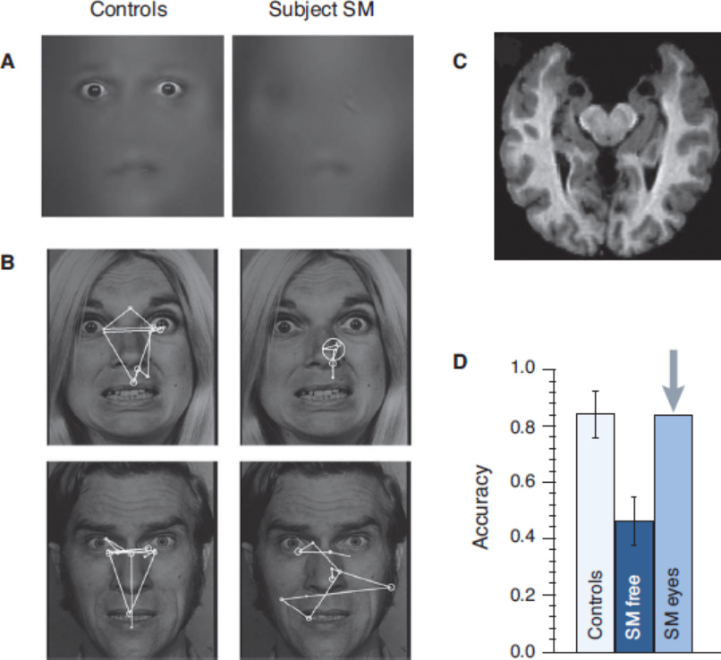
Hình 8.2: Tổn thương hạch hạnh nhân làm suy giảm việc xử lý thông tin từ vùng mắt của khuôn mặt. Dữ liệu từ bệnh nhân S.M., người có tổn thương hạch hạnh nhân song bên hoàn toàn và bị suy giảm trong việc nhận biết sợ hãi. (a) Các vùng của khuôn mặt mà đối tượng dùng để nhận biết cảm xúc. Bệnh nhân S.M. khác với nhóm đối chứng ở chỗ sử dụng ít hơn nhiều vùng mắt của các khuôn mặt. (b) Khi nhìn khuôn mặt, S.M. (bên phải) tạo ra ít lần cố định nhìn vào mắt hơn so với các đối tượng đối chứng (bên trái). Các đường trắng hiển thị các cử động mắt do đối tượng thực hiện khi họ nhìn những khuôn mặt này. (c) Tổn thương hạch hạnh nhân của S.M. có thể thấy trong ảnh MRI (các vùng tròn màu đen gần đỉnh của ảnh). (d) Khi S.M. được hướng dẫn nhìn vào mắt (“SM eyes”) trong một khuôn mặt toàn phần, điều này dẫn đến sự hồi phục đáng kể trong khả năng nhận biết biểu cảm sợ hãi (“SM eyes,” mũi tên) so với độ chính xác của cô trước chỉ dẫn này (“SM free”). Chỉnh sửa với sự cho phép từ Adolphs và cộng sự 2005a.
Một cách tiếp cận khác để thiết lập các quan hệ nhân quả giữa một vùng não và cảm xúc là kích thích điện. Điều này có thể được thực hiện ở những bệnh nhân phẫu thuật thần kinh người trong một số hoàn cảnh nhất định, và có nhiều giới hạn giống như các nghiên cứu tổn thương: quy mô mẫu rất nhỏ, và phạm vi cùng vị trí của kích thích được kiểm soát kém. Hệ quả là, các hiệu ứng thường rất biến đổi. Dù vậy, cũng như với các nghiên cứu tổn thương, thỉnh thoảng người ta vẫn gặp những hiệu ứng đặc hiệu đáng kinh ngạc: kích thích điện các hạch nền có thể gây ra nỗi buồn dữ dội, và kích thích vỏ não trước vận động có thể gây ra sự vui thích và tiếng cười, chẳng hạn. Và các nghiên cứu kích thích điện kinh điển trên thùy đảo đã tạo ra cảm giác ghê tởm hoặc giống buồn nôn, trong khi kích thích điện hạch hạnh nhân đã tạo ra những suy nghĩ, ký ức và trải nghiệm chủ quan liên quan đến sợ hãi. Tuy vậy, như chúng tôi đã lưu ý trong các chương trước, những phát hiện này khó có thể quy cho việc kích thích chọn lọc các nơ-ron trong thùy đảo hay trong hạch hạnh nhân, vì những vùng mô não lớn được kích thích, bao gồm cả nơ-ron và sợi trục.
Dù vậy, khi khảo sát tài liệu từ các nghiên cứu kích thích điện, ba kết luận rộng dường như hiển nhiên (Guillory và Bujarski 2014). Thứ nhất, các khía cạnh của cảm xúc (thường là các báo cáo về trải nghiệm chủ quan của một cảm xúc) có thể được khơi dậy từ nhiều vùng vỏ não và dưới vỏ khác nhau. Thứ hai, quả có vẻ tồn tại tính đặc hiệu nào đó, và nhiều vùng mà chúng ta đã gặp (thùy đảo, hạch hạnh nhân, chất xám quanh ống dẫn nước) có thể khơi dậy cảm xúc khi được kích thích. Tuy nhiên, kết luận này bị giới hạn bởi thực tế là có một thiên lệch lấy mẫu nghiêm trọng khi các bác sĩ phẫu thuật thần kinh cấy điện cực và kích thích — các vùng não để kích thích không được chọn một cách ngẫu nhiên hay đồng đều. Thứ ba, cũng có tính đặc hiệu rõ ràng đối với một số phạm trù cảm xúc nhất định. Một số lần kích thích khơi dậy hạnh phúc, một số buồn bã, một số ghê tởm, một số sợ hãi. Dù các phạm trù cảm xúc chính xác được khơi dậy còn khá mơ hồ và bằng chứng thường rất thưa, thông thường không phải việc kích thích cùng một vị trí lại khơi dậy đủ mọi loại cảm xúc khác nhau.
Các nghiên cứu tương tự với mẫu đối tượng lớn hơn và điều kiện kiểm soát tốt hơn là có thể thực hiện bằng các kỹ thuật như kích thích từ xuyên sọ (TMS). Tuy nhiên, TMS có độ phân giải không gian khá kém. Hiện vẫn đang có công việc phát triển các phương pháp nhiễu loạn an toàn có thể áp dụng lên não người với tính đặc hiệu không gian và thời gian tốt hơn (chẳng hạn, gây rối bằng siêu âm hội tụ). Các công cụ sẵn có để nhiễu loạn chức năng não người vì vậy có thể sẽ trông chính xác hơn nhiều trong tương lai gần — tuy nhiên, khả năng cao chúng vẫn khó phân biệt được các quần thể
nơ-ron cụ thể trong thời gian sắp tới, vì các nghiên cứu quang di truyền hay dược di truyền cho tới nay vẫn chỉ giới hạn ở động vật vì lý do đạo đức (hộp 5.5).
Xét đến tính đặc hiệu giải phẫu kém của cả các nghiên cứu tổn thương lẫn nghiên cứu kích thích điện, khả năng kiểm soát kém đối với các biến nhiễu, và số đối tượng thường rất nhỏ, có vẻ khó biết nên rút ra kết luận gì từ chúng. Chúng tôi sẽ rút ra hai kết luận chính. Thứ nhất, dù có sự biến đổi khổng lồ, ngay cả các ca đơn lẻ cũng có thể đủ để chứng minh những quan hệ nhân quả cụ thể, hay để chỉ ra cho chúng ta bằng logic những sự tách rời có thể có. Một kết luận từ các nghiên cứu tổn thương là những cảm xúc riêng lẻ, cụ thể có thể bị suy giảm tương đối độc lập, ít nhất đối với trường hợp sợ hãi, và ở mức độ nào đó đối với trường hợp ghê tởm. Việc neo điều này cụ thể vào hạch hạnh nhân và thùy đảo thì rắc rối hơn, do độ phân giải giải phẫu không đầy đủ, nhưng cũng không cần thiết để kết luận rằng có sự tách biệt giải phẫu nào đó cho việc xử lý từng cảm xúc riêng lẻ trong não. Người ta thường đã rút ra một số kết luận mạnh hơn nhiều, chẳng hạn rằng hạch hạnh nhân chỉ tham gia vào xử lý sợ hãi, hay rằng chỉ có hạch hạnh nhân tham gia vào xử lý sợ hãi, nhưng những điều này hoàn toàn không có căn cứ và dựa trên một logic sai lệch, như chúng tôi đã chỉ ra trong chương 4. Vì vậy, dù những kết luận chúng ta có thể rút ra bị giới hạn cả về mặt giải phẫu lẫn khái niệm, dữ liệu quả cho thấy có những hệ não cụ thể có thể là cần thiết hay đủ đối với các thành phần cụ thể của một số cảm xúc nhất định ở người.
Điều đáng lưu ý là chính số nhỏ các nghiên cứu tổn thương và kích thích điện kinh điển này ở người đã phần lớn nuôi dưỡng các giả thuyết giải phẫu cụ thể về cảm xúc mà tới nay vẫn được kiểm nghiệm, bằng fMRI ở người, và bằng quang di truyền học, chụp ảnh canxi và các phương pháp khác ở động vật. Như vậy, dù hạch hạnh nhân chỉ là một trong hàng trăm hay hàng nghìn vùng não phân biệt về mặt giải phẫu, phần lớn tuyệt đối các nghiên cứu về não trong cảm xúc (cả ở người lẫn ở động vật) đã tập trung vào hạch hạnh nhân. Một hướng đi quan trọng trong tương lai sẽ là nghiên cứu các hệ thần kinh cho cảm xúc với một lăng kính ít thiên lệch giải phẫu hơn — điều mà fMRI toàn não nay đang thực hiện thường quy.
Đây là một điểm quan trọng: nếu bạn tìm kiếm trong tài liệu, bạn sẽ thấy bằng chứng bề ngoài thuyết phục rằng các vùng não cụ thể tham gia vào cảm xúc, chẳng hạn vỏ não trước trán và hạch hạnh nhân. Nhưng điều này có thể đơn giản phản ánh một thiên lệch mạnh rằng đây là những vùng chính mà
các nhà thí nghiệm thực sự đã nhìn vào trong não, hay những gì họ đã chọn công bố. Những thiên lệch như vậy rất nổi tiếng và cần được hiệu chỉnh nếu ai đó thực hiện các phân tích tổng hợp đơn giản hóa trên các nghiên cứu đã công bố.
Chẳng hạn, một công cụ hiện đại để khai thác tài liệu fMRI, một chương trình gọi là “Neurosynth” do nhà thần kinh học nhận thức Tal Yarkoni phát triển, cho phép bạn trực quan hóa nơi nào trong não có kích hoạt trên các bài báo công bố có chứa những từ khóa nhất định (Yarkoni và cộng sự 2011). Nếu bạn gõ vào từ “emotion” (cảm xúc), bạn nhận được 790 nghiên cứu trong cơ sở dữ liệu (chắc chắn sẽ là một con số lớn hơn nhiều vào lúc bạn đọc cuốn sách này), phản ánh hơn 28.000 kích hoạt fMRI được báo cáo đã vượt qua một ngưỡng thống kê đáng báo cáo. Tất cả các bài báo này đều có từ “emotion” trong tóm tắt và có điều gì đó để báo cáo về cảm xúc. Vậy các kích hoạt này tập trung ở đâu, nếu ta gộp chung cả 790 nghiên cứu? Hình 8.3 cho chúng ta câu trả lời: chủ yếu ở hạch hạnh nhân! Không cần nói, về bản chất đây chỉ đơn giản là một bản tóm lược thiên lệch của tài liệu trong việc nghiên cứu hạch hạnh nhân.
Dù hình 8.3 cho thấy một số vùng não có vẻ được báo cáo là kích hoạt (tức là tương quan) một cách khá chọn lọc cho “emotion,” đáng lưu ý là chưa có cấu trúc nào được tìm thấy là cần thiết cho việc xử lý toàn bộ cảm xúc. Tất cả các suy giảm được tìm thấy với tổn thương cho tới nay dường như suy giảm các thành phần của những cảm xúc cụ thể, hay làm rối loạn các thành phần của cảm xúc, chứ không triệt tiêu tất cả cảm xúc một cách toàn diện. Như vậy, những bệnh nhân có tổn thương thùy đảo hay tổn thương hạch hạnh nhân dường như vẫn có cảm xúc — dù những cảm xúc cụ thể (như ghê tởm hay sợ hãi, lần lượt) có thể bị suy giảm theo những cách nhất định. Đây là một phát hiện khá quan trọng đã được dùng để rút ra hai kết luận chính. Một kết luận đã được rút ra là có nhiều hệ cảm xúc trong não (vậy là bạn phải gây tổn thương tất cả các hệ đó để triệt tiêu hoàn toàn cảm xúc, và giải phẫu thần kinh phân tán quá mức để điều đó xảy ra). Một kết luận rất thú vị thứ hai đã được đề xuất là về nguyên tắc có thể triệt tiêu hoàn toàn tất cả cảm xúc — nhưng chỉ bằng cách đưa người đó vào trạng thái hôn mê. Nghĩa là, có lẽ tồn tại những vùng não cụ thể mà nếu tác động sẽ triệt tiêu tất cả cảm xúc, nhưng chúng gây ra cái chết hay mất ý thức, nên cuối cùng hóa ra không thể có một người còn ý thức mà không hề có cảm xúc. Dĩ nhiên điều này có thể cho chúng ta những nhận định thú vị về vai trò chức năng của cảm xúc, và một số liên hệ với trải nghiệm chủ quan, vốn là những nhận định đã được một số người giả thuyết hóa và
mà chúng ta sẽ bàn trong chương 10. Với phần còn lại của chương này, bây giờ chúng ta sẽ rời các nghiên cứu tổn thương hay kích thích điện và tập trung thay thế vào chụp ảnh não.

Hình 8.3: Bản đồ hóa phân tích tổng hợp các kích hoạt não đối với cảm xúc. Dùng chương trình Neurosynth, một phép tìm kiếm rất đơn giản với từ khóa “emotion” cho ra kết quả từ 790 nghiên cứu fMRI. Các nghiên cứu này đều chứa từ khóa “emotion” và liên quan đến cảm xúc theo cách này hay cách khác — nhưng chúng rất đa dạng. Ở các khung phía trên (màu xanh dương) là các kích hoạt được tìm thấy khi bạn hỏi tất cả các kích hoạt (trên một ngưỡng thống kê) trong các nghiên cứu này có liên quan đến “emotion” nằm ở đâu — tức là bản đồ suy luận thuận. Bản đồ này nổi bật hiển thị hạch hạnh nhân (trên trái) và vỏ não trước trán (trên phải). Tuy nhiên, nhiều vùng trong số này cũng có thể được kích hoạt trong nhiều nghiên cứu khác không liên quan gì đến cảm xúc. Do đó, một phân tích cụ thể hơn hỏi những vùng nào được kích hoạt bởi các nghiên cứu chứa từ khóa “emotion” nhưng không nằm trong bất kỳ nghiên cứu nào khác trong cơ sở dữ liệu (những nghiên cứu không chứa từ “emotion”). Bản đồ suy luận ngược gọi vậy này hữu ích hơn và được hiển thị ở các khung phía dưới (màu đỏ). Các ảnh là những bản chụp màn hình được tạo trực tuyến trong vài giây qua www.neurosynth.org và hiển thị các kích hoạt chồng lên một mẫu não chuẩn. Các nhà nghiên cứu dùng Neurosynth cho những kiểu suy luận phức tạp hơn và có thể lập bản đồ các kích hoạt não không chỉ với từng từ đơn mà cả với các chủ đề gồm những từ liên quan.
Các Nghiên Cứu fMRI Về Cảm Xúc: Phương Pháp
Cho tới nay, phần lớn các nghiên cứu thần kinh học về cảm xúc ở người sử dụng chụp ảnh não, và hiện chúng đã lên tới hàng nghìn. Một số nghiên cứu trước đây đã dùng chụp cắt lớp phát xạ positron (PET), nhưng ngày nay kỹ thuật này hiếm khi được dùng vì những giới hạn lớn về độ phân giải, và vì nó đòi hỏi đưa vật liệu phóng xạ vào cơ thể đối tượng. Ngày nay, các hội nghị thần kinh học về cảm xúc người chủ yếu có fMRI (chụp cộng hưởng từ chức năng) và điện não đồ (EEG), với một ít nghiên cứu dùng các kỹ thuật khác như từ não ký (MEG) hay kích thích từ xuyên sọ (TMS). Mỗi phương pháp trong số này đều có điểm mạnh và điểm yếu; chúng tôi đã có một bản tóm tắt ngắn trong hình 4.2.
Một điểm mạnh chủ yếu của fMRI là nó tương đối nhẹ nhàng với đối tượng — khác với PET, chẳng hạn bạn không cần đưa vật liệu phóng xạ vào cơ thể, và nó hoàn toàn không xâm lấn với không có tác dụng phụ lâu dài nào đã biết (miễn là bạn không có bất kỳ kim loại nào trong người, vì phương pháp đòi hỏi nằm trong một từ trường rất mạnh). Trong một thí nghiệm điển hình, đối tượng nằm ngửa trong máy chụp khoảng một giờ trong khi dữ liệu não được thu thập. Nhược điểm duy nhất là bạn cần nằm yên trong suốt khoảng thời gian đó, và đến cuối giờ bạn rất có thể sẽ đau mỏi hay chán nản. Đáng tiếc, fMRI không phải dễ dàng gì với các nhà nghiên cứu — một máy MRI hiện đại tốn từ 2 đến 10 triệu đô-la Mỹ để mua, tốn vài trăm nghìn đô-la mỗi năm chỉ để vận hành, và đòi hỏi các kỹ thuật viên chuyên môn hóa. Đây là một kỹ thuật phức tạp đến mức không ai có thể tự xây một máy trong phòng lab của mình hay tự tìm ra cách phân tích toàn bộ dữ liệu một mình. Cách duy nhất để có fMRI như một phương pháp là phải có một thị trường lớn, và một cộng đồng người dùng lớn có thể chia sẻ tri thức — và cả hai điều này quả có thật.
fMRI có độ phân giải không gian khá tốt, gần một milimét, và độ phân giải thời gian khá tốt, khoảng một giây. “Khá tốt” ở đây dĩ nhiên là mang tính tương đối: tổn thương ở người, để so sánh, có độ phân giải không gian thường vào bậc xentimét và hoàn toàn không có độ phân giải thời gian, nhưng ghi đơn vị đơn có độ phân giải từng nơ-ron với độ chính xác mili giây (xem hình 4.2). Một giới hạn lớn của fMRI là nó có tỉ lệ tín hiệu trên nhiễu rất thấp, và hệ quả là cần rất nhiều dữ liệu và rất nhiều xử lý tinh vi để tách tín hiệu khỏi nhiễu. Một lý do là tín hiệu fMRI không phản ánh trực tiếp hoạt động điện sinh lý. Thay vào đó, nó là một phép đo sự thay đổi cục bộ của tỷ lệ giữa oxyhemoglobin và deoxyhemoglobin trong nguồn cung máu cho
não, bắt nguồn từ những thay đổi của lưu lượng máu tới một vùng. Sự thay đổi mức oxy hóa cục bộ của máu này gây ra những thay đổi rất nhỏ trong từ trường mà phương pháp fMRI có thể phát hiện. Vậy, một mối lo ngay từ đầu là liệu phép đo huy động lực gián tiếp này có thực sự phản ánh hoạt động điện sinh lý hay không. Hóa ra, phần lớn thời gian là có (nhưng không nhất thiết luôn luôn).
Câu hỏi tiếp theo là, nó phản ánh khía cạnh nào của hoạt động điện sinh lý? Các thay đổi lưu lượng máu trong não xảy ra để những vùng đang “làm việc vất vả” (vì chúng đang thực hiện một quá trình nhận thức nào đó mà chúng ta can thiệp bằng thực nghiệm) có thể có nguồn cung glucose và oxy tăng lên. “Làm việc vất vả” nghĩa là “có nhu cầu trao đổi chất cao”, điều này tương ứng chủ yếu với các sự kiện sinh hóa tại synap — cấu trúc nơi các nơ-ron giao tiếp với nhau. Hệ quả là, tín hiệu fMRI tương quan tốt nhất với các thế trường và quá trình xử lý tại synap (bao gồm cả đầu vào tới một vùng), nhưng không với các thế động tác ở các nơ-ron chiếu truyền thông tin ra khỏi một vùng (điều này ít đòi hỏi trao đổi chất hơn). Đây là một điểm quan trọng cần ghi nhớ, vì nó có nghĩa là ghi đơn vị đơn có thể tương đối không liên quan tới tín hiệu fMRI từ cùng một vùng. Quả thực, một kích hoạt fMRI mạnh hoàn toàn có thể phản ánh một sự ức chế mạnh bên trong một vùng thông qua các nơ-ron ức chế cục bộ; ngược lại, một sự tắt kích hoạt fMRI mạnh hoàn toàn có thể phản ánh sự giải phóng khỏi sự ức chế mức tế bào như vậy.
Lưu ý rằng “kích hoạt” và “tắt kích hoạt” trong fMRI luôn là tương đối so với một phép đối chiếu hay một đường nền nào đó. Không có thứ gì gọi là kích hoạt thuần túy, vì bất kỳ mức nền nào trong não cũng không bao giờ tương ứng với kích hoạt bằng không — não luôn hoạt động và luôn có nhu cầu trao đổi chất cùng lưu lượng máu cao. Nếu không có hoạt động trao đổi chất hay lưu lượng máu trong não, bạn đã chết. Nghịch lý thay, bạn thực sự có thể tìm thấy một số tín hiệu fMRI trong một bộ não đã chết, nếu bạn quyết định thực hiện một phân tích khá ngớ ngẩn bằng các phương pháp thống kê sai lệch. Một nghiên cứu đã báo cáo một kích hoạt fMRI trong não của một con cá hồi đã chết, đoạt giải IgNobel cho nỗ lực của các nhà nghiên cứu, và làm nổi bật những hiệu chỉnh thống kê cẩn thận cần thiết để tránh kết quả dương tính giả trong các nghiên cứu fMRI (những hiệu chỉnh mà nghiên cứu đó không thực hiện, để cho thấy bạn có thể nhận được những phát hiện ảo như thế nào).
Liên quan đến phát hiện thú vị này về một phản ứng fMRI trong não của một con cá hồi đã chết, tỉ lệ tín hiệu trên nhiễu thấp và bản chất đa biến của fMRI thực ra đã
dẫn đến một số cuộc khủng hoảng mà lĩnh vực chụp ảnh não đã trải qua: các nghiên cứu trước đây thường thiếu công suất thống kê hay dùng những cách tiếp cận thống kê không phù hợp, dẫn đến các nghiên cứu công bố không tái lập được. Ví dụ, cần hết sức cẩn trọng để hiệu chỉnh cho các so sánh bội trong các kiểm định thống kê, và bản chất nhiều bước của phân tích dữ liệu fMRI cần bảo đảm không có các phụ thuộc thống kê nào lọt vào khiến người ta chọn nhân tạo những tập con cụ thể của dữ liệu thể hiện ý nghĩa thống kê cao nhất. Tuy nhiên, fMRI là một lĩnh vực quá lớn, với số lượng nhà nghiên cứu quá đông, nên những vấn đề này, một khi đã được nhận diện, đã dẫn đến những nỗ lực đáng kể để hiệu chỉnh chúng. Thực tế, nhìn chung, lĩnh vực chụp ảnh não người đáng chú ý ở chỗ đã quản lý được giải quyết nhiều bài toán rất khó của việc tìm tín hiệu nhỏ trong dữ liệu nhiều chiều và nhiễu. Một hướng hiện nay là xây dựng các liên minh hay các nền tảng chia sẻ dữ liệu, nơi những bộ dữ liệu rất lớn có thể được tích lũy, để chúng có thể được khai thác bằng các phương pháp thống kê tinh vi và với công suất đầy đủ.
Một cách tiếp cận phổ biến đối với giới hạn tỉ lệ tín hiệu trên nhiễu kém, như một lựa chọn thay thế cho việc tiến hành một phân tích mới trên quy mô mẫu lớn hơn, là dùng dữ liệu đã thu thập từ các nghiên cứu trước và tiến hành các phân tích tổng hợp. Những phân tích tổng hợp như vậy đã trở nên khá phổ biến trong thần kinh học cảm xúc. Tuy nhiên, kết quả mà các phân tích này tạo ra luôn phụ thuộc vào chất lượng và tính đồng nhất của những nghiên cứu được đưa vào chúng ngay từ đầu. Trong hình 8.3, chúng tôi đã không chú ý đến bất kỳ điều nào trong số đó — và nhận được một bức tranh gây hiểu lầm mà bạn có thể diễn giải là cho thấy “cảm xúc nằm ở hạch hạnh nhân.” Dù hiện đã có một số kỹ thuật phân tích tổng hợp tinh vi, và dù số nghiên cứu fMRI về cảm xúc người sẵn có cho một phân tích tổng hợp đã lên tới hàng nghìn, vẫn còn rất ít hay chưa có kết quả phân tích tổng hợp nào thuyết phục, đơn giản vì từng nghiên cứu riêng lẻ quá khác biệt và thường có chất lượng quá kém.
Chẳng hạn, một phân tích tổng hợp lớn về cảm xúc đã không tìm thấy bất kỳ liên kết đáng tin nào giữa các kích hoạt ở bất kỳ vùng não nào và các cảm xúc cụ thể (Lindquist và cộng sự 2012) — có lẽ một phần vì những lý do vừa nêu. Điều này đặc biệt dễ xảy ra, xét rằng các cảm xúc cụ thể thường được nghiên cứu bằng các phương pháp khơi dậy cụ thể. Như vậy, một nghiên cứu có thể khảo sát “sợ hãi” bằng phim kinh dị, một nghiên cứu khác có thể khảo sát “sợ hãi” bằng ảnh nhện, và một nghiên cứu nữa có thể khảo sát “sợ hãi” bằng nhiều loại ký ức tự truyện. Thực tế, tình hình còn tệ hơn nhiều
so với vậy, vì các phân tích tổng hợp thường gộp chung những nghiên cứu trong đó người ta được yêu cầu nhận biết sợ hãi từ biểu cảm khuôn mặt, suy nghĩ về một tình huống đáng sợ, hay bị khiến trải nghiệm sợ hãi. Như bạn có thể tưởng tượng, các trạng thái não được tạo ra bởi các loại nhiệm vụ khác nhau này khác nhau rất lớn. Tất cả chúng đều liên quan một phần xử lý liên quan đến cảm xúc, nhưng chỉ theo nghĩa rộng nhất và phái sinh nhất. Khá khó tin rằng cùng một loại trạng thái chức năng, chưa nói đến trạng thái não, lại tham gia xuyên suốt tất cả các loại nghiên cứu khác nhau, dù các nhà nghiên cứu có thể dùng nhãn “sợ hãi” ở đâu đó trong bài báo của họ.
Tuy vậy, các phân tích tổng hợp về cảm xúc trong tương lai chắc chắn sẽ có khả năng tạo ra những kết quả dễ diễn giải hơn. Cả số lượng lẫn chất lượng của các nghiên cứu fMRI về cảm xúc đều tiếp tục tăng, và các nhà nghiên cứu có thể lưu ý những phân biệt mà chúng tôi nhấn mạnh trong cuốn sách này và không gộp chung mọi thứ được dán nhãn “cảm xúc.” Cũng có sự gia tăng về chuẩn hóa các phương pháp và các quy trình phân tích. Với những bộ lọc tinh vi hơn (không gộp chung các nghiên cứu khác biệt, và lọc cẩn thận các nghiên cứu kém chất lượng), và các công cụ thống kê tinh vi hơn, những phân tích tổng hợp fMRI như vậy trong tương lai sẽ là một bãi thử tốt để xem fMRI về bản chất có khả năng tìm ra các hệ cảm xúc trong não người hay không — hay những hệ này chỉ nằm ở một mức độ phân giải thấp hơn khả năng của kỹ thuật này. Những phân tích tổng hợp như vậy cũng sẽ được hỗ trợ bởi sự phát triển thêm của các công cụ chia sẻ dữ liệu dễ dàng, chẳng hạn dự án OpenfMRI đang được Russ Poldrack phát triển tại Đại học Stanford.
Có một đặc điểm của fMRI là một điểm cộng rất lớn, và là một khía cạnh mà nó chắc chắn vượt trội ghi đơn vị đơn hay chụp ảnh canxi. Đó là phạm vi quan sát toàn não của nó. Điều này khiến có thể vượt xa việc tìm kiếm với những giả thuyết giải phẫu thần kinh hẹp chỉ nhằm vào kích hoạt ở hạch hạnh nhân hay ở thùy đảo. Người ta có thể nhìn toàn bộ não cùng một lúc, bao gồm toàn bộ vỏ não và tất cả các cấu trúc dưới vỏ và thân não. Một nghiên cứu fMRI hiện đại nay có thể thu dữ liệu kích hoạt từ toàn bộ não khoảng một giây một lần. Đó là rất nhiều dữ liệu! Như vậy bạn có thể nghĩ về dữ liệu fMRI như một chuỗi thời gian, lấy mẫu khoảng 1 Hz, đo tín hiệu fMRI tại từng chiếc khối lập phương nhỏ trong số một triệu chiếc (gọi là “voxel”; mỗi voxel 1 mm có khoảng 10.000 đến 100.000 nơ-ron) trong toàn bộ não. Tuy nhiên, phạm vi quan sát lớn đó tự nó tạo ra một số thách thức phân tích; chúng ta cần hiệu chỉnh cho nhiều so sánh bội. Ở ngưỡng thống kê chuẩn alpha = 0.05,
chúng ta sẽ tìm thấy một voxel “có ý nghĩa” trong mỗi 20 voxel hay hơn chỉ bằng ngẫu nhiên. Điều đó sẽ lên tới khoảng 50.000 voxel khắp não, và không nghi ngờ gì một số trong chúng sẽ cụm lại ở một số vùng não thú vị — nhưng chúng có thể là các dương tính giả. Về mặt này, bản chất đa biến của fMRI tương tự như thách thức mà các nghiên cứu liên quan trên toàn bộ bộ gen đặt ra, nơi người ta cũng phải kiểm soát cho rất nhiều gen khác nhau được dò tìm một hiệu ứng có ý nghĩa.
Như chúng tôi đã lưu ý, những thách thức này đã được cộng đồng chụp ảnh não giải quyết rất tích cực, và phạm vi quan sát toàn não của fMRI, nếu được xử lý cẩn thận, chắc chắn không phải là một gánh nặng (sau tất cả, bạn luôn có thể chọn không dùng nó và thay vào đó tập trung phân tích vào một vùng não đơn lẻ, một vùng quan tâm gọi vậy, hay ROI, một cách tiếp cận tương tự như nhìn vào một gen ứng viên đơn lẻ). Phạm vi quan sát toàn não cho phép chúng ta thấy, cùng một lúc, các kích hoạt ở bất kỳ đâu trong não — và, ở mức độ nào đó, suy luận cách chúng có thể liên hệ với nhau bằng cách nhìn vào các tương quan của chúng. Điều này cũng mở ra thêm một số loại phép đo phái sinh. Hiện nay có sự tập trung mạnh vào các phân tích mức mạng của dữ liệu fMRI, chú trọng ít hơn vào kích hoạt ở các vùng cụ thể mà nhiều hơn vào tính kết nối chức năng giữa các vùng được suy ra từ các tương quan theo thời gian. Quả thực, các mạng được ghép nối về mặt chức năng có thể được suy ra theo cách này ngay cả từ fMRI trạng thái nghỉ gọi vậy, trong đó đối tượng không thực hiện bất kỳ nhiệm vụ gì mà chỉ nằm thụ động trong máy trong khi những dao động tự phát (nhưng một phần có tương quan) của tín hiệu fMRI được đo khắp nơi trong não. Điều này tạo ra một ma trận tương quan lớn, từ đó lần lượt có thể suy ra rất nhiều chỉ số mạng. Tương tự như các nghiên cứu về mạng xã hội hay về internet, người ta thấy rằng không phải mọi vùng đều được kết nối với mọi vùng khác. Thay vào đó, có các “trạm trung chuyển” phối hợp phần lớn các kết nối giữa các vùng, giống như các máy chủ và bộ định tuyến internet nối các máy tính khác nhau.
Xét đến bản chất đa biến cao của dữ liệu fMRI, người ta có thể dùng các phân tích đa biến về kích hoạt trên nhiều voxel; nghĩa là, người ta có thể tìm kiếm các kiểu mẫu kích hoạt, thay vì các thay đổi tín hiệu trung bình, trong não. Xét đến phạm vi quan sát toàn não, người ta có thể tìm kiếm khắp nơi trong não mà không cần một giả thuyết giải phẫu từ trước (điều này đòi hỏi hiệu chỉnh thống kê cẩn thận). Tóm gọn: dù có những giới hạn căn bản là một phép đo huy động lực gián tiếp, có độ phân giải không gian-thời gian khiêm tốn,
và có tỉ lệ tín hiệu trên nhiễu thấp, fMRI thực ra là một phép đo rất giàu thông tin mà, với đủ dữ liệu và các công cụ đủ tinh vi, có thể được dùng để thăm dò chức năng não không chỉ theo nghĩa kích hoạt trung bình tổng thể trong một cấu trúc não, mà còn theo nghĩa kiểu mẫu kích hoạt chi tiết trong cấu trúc đó, hay theo nghĩa tính kết nối chức năng của cấu trúc đó với các vùng khác trong não.
Đây là một loại phép đo chức năng não rất khác so với ghi nhận từ các nơ-ron đơn lẻ, như thường làm trong các nghiên cứu động vật và như cũng có thể làm ở người trong môi trường lâm sàng. Điều này đặt ra những câu hỏi thú vị về phương pháp tốt nhất nên dùng. Trong chương 6, chúng ta đã thấy rằng các quần thể con cụ thể của nơ-ron có thể là đơn vị phân tích có ý nghĩa chức năng nhất (thay vì các nơ-ron đơn lẻ, hay các cấu trúc não giải phẫu cụ thể). fMRI có thể bộc lộ cho chúng ta những phép đo não phản trực giác hơn liên quan đến các chỉ số đa biến dựa trên tính kết nối, nhưng có thể những đơn vị chức năng này sẽ hữu ích hơn trong việc hiểu cách cảm xúc được xử lý trong não. Thay vì tìm kiếm các vùng não hay quần thể tế bào cụ thể tham gia xử lý cảm xúc, có lẽ chúng ta sẽ kết thúc bằng việc tìm ra những kiểu mẫu và mạng lưới phức tạp, phân tán — những đơn vị căn bản để hiểu việc xử lý cảm xúc.
Có những cách tiếp cận mới được khả thi chỉ nhờ lượng dữ liệu sẵn có khổng lồ. Nếu bạn có rất nhiều dữ liệu, bạn có thể chọn chỉ phân tích một phần dữ liệu của mình, rồi kiểm tra kết quả phân tích để xem chúng có thể dự đoán phần dữ liệu còn lại hay không — nghĩa là, bạn có thể chọn một cách tiếp cận cho thấy liệu kết quả có tái lập và khái quát được hay không. Một khung dự đoán như vậy nay đang được dùng trong nhiều nghiên cứu fMRI. Thay vì đơn giản phân tích toàn bộ dữ liệu và suy ra, chẳng hạn, một hệ số tương quan mà độ lớn của nó mô tả cỡ hiệu ứng quan sát được trong bộ dữ liệu cụ thể của bạn, có thể chỉ dùng một phần dữ liệu để khớp một mô hình dự đoán một điểm dữ liệu không được dùng trong việc xây dựng mô hình ban đầu này. Điểm dữ liệu đó sau đó có thể được dùng để kiểm tra mô hình tốt ra sao. Các cách tiếp cận hiện đại dùng các kỹ thuật từ học máy nay được dùng rộng rãi trong các phân tích fMRI, và chúng thường có đặc trưng là một khung dự đoán như vậy, vốn mạnh và đáng tin hơn đáng kể (vì nó tạo ra các dự đoán ngoài mẫu) so với các cách tiếp cận truyền thống (Dubois và Adolphs 2016).
Việc dùng các cách tiếp cận dự đoán và các phép đo đa biến như vậy đã thay đổi căn bản phân tích dữ liệu fMRI trong vài năm qua. Hiện nay nó mang lại độ nhạy lớn hơn nhiều để phát hiện các hiệu ứng, và độ đáng tin cùng khả năng tái lập lớn hơn nhiều sau khi chúng đã được phát hiện. Một thành phần then chốt được thừa nhận rộng rãi là cần để làm được tất cả những điều này là quy mô mẫu lớn hơn, và việc chia sẻ dữ liệu. Chẳng hạn, một trong những bộ dữ liệu được phân tích rộng rãi nhất đến từ Dự án Mạch thần kinh kết nối Con người (Human Connectome Project, http://www.humanconnectomeproject.org/), vốn có hơn một nghìn đối tượng, mỗi người có nhiều giờ dữ liệu fMRI chất lượng cao nhất. Những quy mô mẫu như vậy hiện không khả thi với các nghiên cứu tổn thương hay ghi đơn vị đơn, khiến fMRI cho tới nay là cách tiếp cận tốt nhất để tạo ra những kết quả sẽ khái quát được. (Mặt khác, hãy so sánh độ phân giải của não người trong Dự án Mạch thần kinh kết nối Con người với độ phân giải khả thi khi dùng phân tích hiển vi cấu trúc não trong các não tử thi, như đang được thực hiện tại Viện Allen về Khoa học Não bộ: https://twitter.com/Allen_Institute/status/776492924942942208.) Dù mạnh mẽ, việc huấn luyện các thuật toán học máy để phân loại các kiểu mẫu kích hoạt não tự nó không cung cấp bất kỳ sự hiểu biết nào về cơ chế nhân quả. Cách tiếp cận này có thể rất có giá trị chẩn đoán và tiên lượng đối với các rối loạn khí sắc, chẳng hạn, nhưng sẽ chưa đủ để cho phép chúng ta thiết kế các can thiệp mới nhằm điều trị những rối loạn đó. Các so sánh với các nghiên cứu ở động vật sẽ luôn cần thiết về mặt này (xem chương 5). Dù vậy, hóa ra thực sự có thể rút ra một số nhận thức về các cơ chế nhân quả bằng fMRI — một phát triển rất mới (hộp 8.3).
Hộp 8.3. Nhân quả từ fMRI?
Xét đến tất cả những gì chúng ta đã bàn trong các chương 4 và 5, bạn có thể nghĩ rằng hoàn toàn không thể rút ra bất kỳ kết luận nhân quả nào từ dữ liệu fMRI, vốn dĩ là tương quan. Tuy nhiên, thực tế không hẳn như vậy, vì hai lý do. Một lý do hiển nhiên là có thể kết hợp fMRI với các can thiệp nhân quả. Chẳng hạn, người ta có thể kích hoạt một vùng não cụ thể thông qua kích thích điện hay quang di truyền học trong khi đo fMRI ở nơi khác trong não để
trực quan hóa các hiệu ứng nhân quả của lần kích thích đó. Cách tiếp cận này đã được thực hiện ở loài gặm nhấm, khỉ và người (xem hình 11.2). Quả thực, nó đã được dùng để bắt đầu lập bản đồ tính kết nối chức năng của hạch hạnh nhân ở người (Dubois và cộng sự 2018). Một lưu ý quan trọng với các loại nghiên cứu này là, dù chúng quả cho thấy tính nhân quả, việc kết luận bất cứ điều gì về mức độ trực tiếp của các hiệu ứng nhân quả này còn khó hơn nhiều. Kích hoạt hạch hạnh nhân tạo ra các kích hoạt fMRI vững chắc khắp não, nhưng phần lớn trong số đó sẽ là các hiệu ứng mức mạng rất phức tạp, chứ không phải các đầu vào monosynap trực tiếp từ hạch hạnh nhân.
Tuy nhiên, có thể mô hình hóa các hiệu ứng nhân quả ngay cả từ dữ liệu fMRI chuẩn, ngay cả từ dữ liệu fMRI trạng thái nghỉ, mà không cần bất kỳ can thiệp nào — miễn là các giả định của mô hình của bạn được thỏa mãn (điều này gần như luôn là một sự lý tưởng hóa). Một cách làm như vậy dùng các quan hệ thời gian giữa các kích hoạt đa điểm và các lần trình kích thích thực nghiệm đang diễn ra trong một thí nghiệm fMRI; vì nguyên nhân phải đi trước hiệu quả của nó về thời gian, khả năng dự đoán kích hoạt ở một vùng não từ kích hoạt trước đó ở vùng khác về nguyên tắc có thể được dùng để suy ra các quan hệ nhân quả. Một số kỹ thuật tận dụng ý tưởng này, gồm cả nhân quả Granger và mô hình hóa nhân quả động. Một vấn đề với tất cả chúng là độ phân giải thời gian của tín hiệu fMRI thực tế rất kém, và thấp hơn nhiều so với các sự kiện nguyên nhân-hiệu quả giữa các nơ-ron (giây so với mili giây), đòi hỏi các mô hình và giả định phức tạp để khiến cách tiếp cận này hoạt động.
Một cách tiếp cận khác bỏ qua hoàn toàn thứ tự thời gian và đơn giản nhìn vào các kích hoạt fMRI nào tình cờ có tương quan. Như chúng ta đã thấy trong chương 4, việc tìm thấy một tương quan giữa hai vùng não, A và B (hình 4.1a) nghĩa là hoặc A gây ra B, B gây ra A, hoặc cả A và B đều được một thứ khác gây ra (lần lượt là hình 4.1b, c, d). Vậy có ba cấu trúc nhân quả có thể đều nhất quán với việc quan sát thấy tương quan. Liệu chúng ta có thể loại bỏ một số trong chúng bằng dữ liệu thêm nữa không? Nếu bây giờ chúng ta cũng đo kích hoạt ở vùng C, và thấy rằng nó tương quan với cả A và B, thì đây sẽ là bằng chứng thêm rằng A và B có thể được C gây ra (hình 4.1d). Nếu bây giờ chúng ta loại bỏ (hồi quy) hoạt động của C (nghĩa là tính toán tương quan giữa
A và B khi không còn một tương quan với C), chúng ta có thể thấy rằng tương quan riêng giữa A và B trở về bằng không. Nếu điều đó xảy ra, chúng ta quả có thể kết luận rằng A và B chỉ tương quan vì cả hai đều được C gây ra, nhưng không có hiệu ứng nhân quả trực tiếp nào của A lên B hay của B lên A.
Loại logic như vậy, mở rộng ra nhiều vùng não mà fMRI cung cấp cho chúng ta các phép đo, quả có thể cho chúng ta bằng chứng mạnh về cấu trúc nhân quả chỉ từ dữ liệu tương quan — miễn là bạn đo tất cả các nguyên nhân có thể. May mắn là fMRI làm khá tốt việc cung cấp cho chúng ta một bộ phép đo đầy đủ như vậy, vì nó đo các kích hoạt từ toàn bộ não (tuy nhiên, dĩ nhiên, vẫn có các đầu vào từ các giác quan và từ cơ thể mà chúng ta vẫn cần tính đến). Một giả định quan trọng khác là các mũi tên nhân quả đều được hướng một chiều. Nếu chúng ta có các vòng phản hồi, mọi thứ trở nên phức tạp hơn — và chúng ta biết rằng phản hồi quả có mặt khắp nơi trong não. Các thuật toán khám phá nhân quả tinh vi hơn đang được phát triển để xử lý các bộ dữ liệu rất lớn và để kết hợp các vấn đề về phản hồi, và nhiều khả năng cách tiếp cận này sẽ là một bổ trợ mạnh cho các phân tích fMRI chuẩn trong tương lai (xem Dubois và cộng sự 2018; Eberhardt 2017). Dù nhiều cách tiếp cận khác nhau đang được phát triển để suy ra tính nhân quả từ dữ liệu fMRI, vẫn còn là sự thật rằng tất cả chúng đều đưa ra những giả định không thực tế — cho tới thời điểm này, không cách nào trong số chúng cung cấp được cảm giác mạnh về tính nhân quả từ can thiệp thực nghiệm mà chúng ta đã điểm lại trong chương 4.
Các Phân Tích Tương Đồng
Các phân tích đa biến cũng đã mang lại một lợi ích lớn cho việc khảo sát các không gian tương đồng. Trong chương 3, chúng tôi đã lưu ý cấu trúc tương đồng của các cảm xúc; các cảm xúc thường được mô tả trong một không gian hai chiều gồm tính tích cực–tiêu cực và sự hưng phấn, và luôn có thể được biểu diễn là giống nhau hơn hay ít hơn. Sự tương đồng này lẽ ra phải được phản ánh trong não theo một cách nào đó. Chẳng hạn, người ta có thể kỳ vọng rằng hai trường hợp sợ hãi được khơi dậy bởi các kích thích rất giống nhau
và gây ra các hành vi cùng các cảm giác chủ quan rất giống nhau sẽ tương ứng với các kiểu mẫu hoạt động thần kinh khá giống nhau, so sánh với, chẳng hạn, một trường hợp sợ hãi và một trường hợp hạnh phúc mà mỗi trường hợp có các yếu tố khơi dậy, hành vi và cảm giác rất khác nhau. (Logic cơ bản này phụ thuộc vào một giả định mà các nhà triết học gọi là “supervenience” (sự phụ thuộc siêu hình): rằng bất kỳ thay đổi nào ở tầng tâm trí/chức năng/tâm lý học đều đòi hỏi một thay đổi ở tầng sinh học thần kinh. Bạn có thể có hai trạng thái não khác nhau mà giống hệt nhau về mặt tâm trí, nhưng bạn không thể có một và cùng một trạng thái não với hai trạng thái tâm trí khác nhau.)
Dù độ phân giải hạn chế của fMRI, các phân tích tương đồng thực ra hoạt động hiệu quả đáng kể và đã trở thành một công cụ phổ biến để khảo sát cảm xúc. Để tiến hành một phân tích như vậy, các nhà nghiên cứu thường dùng “phân tích tương đồng biểu diễn” (RSA), vốn đã trở nên khá phổ biến trong các nghiên cứu fMRI, và cũng trong một số nghiên cứu ghi đơn vị đơn. Trong khi ban đầu việc ứng dụng RSA tập trung vào nhận biết vật thể, nay nó đã được áp dụng cho nhiều loại biểu diễn khác, gồm cả các biểu diễn của cảm xúc. Hình 8.4 cho thấy logic cơ bản của RSA. Mục tiêu bao trùm là xây dựng ít nhất hai (và thường là nhiều hơn) không gian tương đồng có thể được so sánh. Một không gian ánh xạ kiểu mẫu kích hoạt thần kinh được khơi dậy, và một không gian khác ánh xạ các kích thích, hay các phán đoán hành vi. Trong trường hợp nhận biết vật thể, chúng ta do đó có thể so sánh kiểu mẫu kích hoạt não được khơi dậy, chẳng hạn khi bạn thấy một bàn tay hay một chiếc ô, với độ tương đồng được phán đoán về mặt tâm lý giữa các vật thể này (hay độ tương đồng thị giác vật lý của chúng).
Xét về dữ liệu chụp ảnh não, dữ liệu càng đa biến (số voxel trong phép đo đa biến của bạn càng lớn) thì những phân biệt giữa các kiểu mẫu kích hoạt bạn có thể thực hiện càng chi tiết. RSA đã rất phổ biến và rất mạnh trong việc hiểu nhận biết vật thể trong não người. Quả thực, các quan hệ tương đồng được bộc lộ bằng RSA áp dụng lên dữ liệu fMRI cho thấy một sự khớp tốt với các quan hệ tương đồng giữa các phán đoán về vật thể của mọi người. Hơn thế nữa, các phán đoán tương đồng về vật thể hơi mang tính riêng biệt của từng đối tượng được phản chiếu bởi RSA của dữ liệu fMRI của họ. Thậm chí hơn nữa, còn có thể dự đoán kiểu mẫu kích hoạt thần kinh sẽ trông thế nào đối với một kích thích chưa từng thấy; nghĩa là, bạn có thể giải mã kích thích từ kiểu mẫu hoạt động não.
Cuộc bàn luận về các phân tích tương đồng cho tới nay đã bỏ qua các chi tiết giải phẫu thần kinh và xem “kiểu mẫu kích hoạt thần kinh” như không đặc thù về giải phẫu, hay như toàn cục trên toàn bộ não. Nhưng thực ra, người ta có thể chính xác về mặt giải phẫu. Người ta có thể chọn một vùng não cụ thể (chẳng hạn, hạch hạnh nhân), và hỏi liệu kiểu mẫu kích hoạt đa biến trong vùng đó có mã hóa một chiều kích cụ thể của một không gian tương đồng hay không. Hoặc, khi không có giả thuyết giải phẫu, người ta có thể lấy một quả cầu nhỏ và di chuyển nó như một đèn soi khắp toàn bộ não để tìm các vùng giải phẫu như vậy. Ví dụ, một nghiên cứu gần đây cho thấy kiểu mẫu kích hoạt đa voxel trong hạch hạnh nhân biểu diễn chiều kích của tính tích cực–tiêu cực (dễ chịu/khó chịu), ít nhất khi các mùi được dùng làm kích thích (Jin, Gottfried và Mohanty 2015). Ngược lại, mức kích hoạt fMRI trung bình (đơn biến) trong hạch hạnh nhân đã được gắn với cường độ của các mùi, chứ không phải với tính tích cực–tiêu cực của chúng (Anderson và cộng sự 2003). Điều này cho chúng ta một ví dụ sơ khởi về cách các loại thông tin cảm xúc khác nhau có thể được ghép kênh ngay cả trong cùng một vùng não: hoạt động tổng thể có thể mã hóa một chiều kích, trong khi các kiểu mẫu trên các tế bào có thể mã hóa chiều kích khác. Điều này cũng vẫy gọi một ít hy vọng từ các kết quả chúng tôi đã điểm lại trong chương 6, nơi chúng tôi lưu ý rằng các nơ-ron hạch hạnh nhân mã hóa tính tích cực–tiêu cực tích cực và tiêu cực bị trộn lẫn với nhau. Đó là một vấn đề nếu nghiên cứu fMRI của bạn chỉ nhìn vào tín hiệu tổng thể, nhưng có thể giải quyết được bằng RSA (nếu một số giả định may mắn được thỏa mãn).

Hình 8.4: Phân tích tương đồng biểu diễn. Trong sơ đồ này, các kích thích (A, bên trái) như nhìn thấy một bàn tay hay một chiếc ô gây ra các kiểu mẫu kích hoạt não. Người ta có thể đo các kiểu mẫu kích hoạt đó trong não bằng fMRI (“kiểu mẫu biểu diễn”) và tính độ tương đồng của chúng (hay, trong sơ đồ này, độ bất tương đồng). B. Các ma trận bất tương đồng này lượng hóa các biểu hiện kích thích khác nhau giống nhau ra sao (trong não). Độ tương đồng của các kiểu mẫu kích hoạt não có thể lần lượt được so sánh với độ tương đồng thực của các kích thích thị giác trong ví dụ này, hay với độ tương đồng tâm lý mà mọi người cho trong các đánh giá (chẳng hạn các đánh giá cho biểu cảm khuôn mặt của cảm xúc, xem hình 9.7). Cách tiếp cận này hiệu quả đáng kể và thường mang lại những phát hiện sâu sắc. Tái bản với sự cho phép của Kriegeskorte và Kievit 2013.
Chương này đã dành một chút thời gian điểm lại các phương pháp fMRI hiện nay (và còn rất nhiều nữa!) để nêu hai điểm quan trọng. Thứ nhất, phần lớn tuyệt đối các nghiên cứu fMRI lịch sử về cảm xúc có chất lượng phiền toái, khiến việc rút ra bất kỳ kết luận đáng tin nào từ chúng trở nên khó khăn. Chúng thường mơ hồ về khía cạnh nào của một cảm xúc đang được nghiên cứu, và thường thiếu công suất thống kê hay phiền toái về mặt phân tích. Thứ hai, tương lai của các nghiên cứu fMRI về cảm xúc thực ra trông rất sáng sủa, vì chụp ảnh não đã tiến hóa rất nhanh. Các nghiên cứu fMRI hiện nay về cảm xúc đang dùng quy mô mẫu lớn hơn, các máy chụp tốt hơn nhiều với các chuỗi xung mạnh hơn tạo ra tỉ lệ tín hiệu trên nhiễu tốt hơn đáng kể, và các phương pháp phân tích đúng đắn. Hơn nữa, các nghiên cứu hiện nay bắt đầu dùng các phép đo đa biến tinh vi có thể tạo ra những kết quả mà không phép đối chiếu chuẩn (đơn biến) nào có thể cung cấp. Xét rằng, không nghi ngờ gì, phần lớn các nghiên cứu về cảm xúc người sẽ tiếp tục đến từ fMRI, đây về bản chất là một tin tốt
cho tương lai. Dù vậy, một lời cuối cần nhấn mạnh tầm quan trọng của việc dùng các phương pháp bổ sung để thăm dò chức năng não người. Chúng tôi mở đầu chương này bằng một cái nhìn tổng quan về các nghiên cứu tổn thương và kích thích điện, và những nghiên cứu này, cùng với các kỹ thuật nhiễu loạn hiện đại vẫn đang được phát triển, sẽ là một bổ trợ thiết yếu cho fMRI trong các nghiên cứu cảm xúc ở người.
fMRI Ở Động Vật?
Chúng ta khép lại chương này bằng một câu hỏi quan trọng đã được đặt ra ngay từ đầu chương: những cách tiếp cận thần kinh học nào có thể cung cấp cây cầu tốt nhất giữa các nghiên cứu cảm xúc ở người và ở động vật? Các chương 6 và 7 đã cung cấp một kho chi tiết phong phú về các cảm xúc ở loài gặm nhấm và động vật không xương sống, trong đó không nghiên cứu nào dùng fMRI. Chương này (và chương tiếp theo) tập trung vào con người, nơi phương pháp hiện đại gần như chỉ là fMRI. Vì quang di truyền học không thể thực hiện ở người (hộp 5.5), và vì các phương pháp như điện sinh lý đơn tế bào hiếm gặp và tốn công sức, sẽ là một lợi ích lớn cho lĩnh vực này nếu chúng ta có thể thực hiện các nghiên cứu fMRI ở động vật.
Trong khi fMRI ở loài gặm nhấm có những giới hạn nghiêm trọng về độ phân giải và tỉ lệ tín hiệu trên nhiễu (nhưng có thể thực hiện; xem hình 11.2), đã có một số nghiên cứu fMRI ở khỉ và các động vật có vú khác, tiềm năng cung cấp một sự so sánh mạnh với não người. Hệ thị giác của khỉ đã được nghiên cứu rất chi tiết, và thể hiện nhiều điểm tương đồng với hệ thị giác của người. Giống người, khỉ nhìn thấy màu sắc, nhận biết và phân loại vật thể, phát hiện các tín hiệu xã hội như ánh nhìn trực tiếp, và có các hệ não chuyên biệt cho việc xử lý khuôn mặt. Đồng nghiệp của chúng tôi ở Caltech, Doris Tsao, đã là người dẫn đầu trong lĩnh vực này, mổ xẻ các vùng não và các quá trình tính toán cho phép khỉ nhận biết nhau từ khuôn mặt của chúng. Dựa trên kho tài liệu đồ sộ này, người ta sẽ kết luận rằng khỉ nhìn thế giới gần giống như con người. Nhưng liệu chúng có hiểu những gì chúng thấy không? Và những gì chúng thấy có khơi dậy các cảm xúc tương tự không? Ở đây chúng ta biết sẽ có những khác biệt. Một con khỉ quả có thể thấy một bản tin thời sự trên TV, nhưng sẽ không hiểu chút nào về ý nghĩa sâu hơn của nó.
Một nghiên cứu fMRI thú vị đã so sánh điều gì xảy ra trong não của khỉ và của người khi họ xem cùng một video trong máy chụp
(Mantini và cộng sự 2012). Như kỳ vọng, cả hai loài đều thể hiện kích hoạt rất giống nhau ở các vỏ não thị giác sớm: khỉ thấy những gì người thấy. Tuy nhiên, các vùng não bậc cao cho thấy kích hoạt phân kỳ, có lẽ phản ánh thực tế rằng người có thể thực hiện các suy luận từ video mà khỉ không có khả năng đó. Việc trực quan hóa những khác biệt kích hoạt này trong não cho chúng ta một cửa sổ quyến rũ về cách não và tâm trí của hai loài này có thể giống nhau, nhưng chỉ đến một mức nào đó.
Một cách tiếp cận tương tự thực ra cũng đã được thực hiện để nghiên cứu sự khác biệt giữa hai con người khác nhau. Uri Hasson tại Đại học Princeton đã khảo sát các tương quan trong kích hoạt não khi mọi người xem một bộ phim, nhưng anh ta đã nhìn vào các tương quan không phải giữa các vùng khác nhau trong cùng một não, mà giữa cùng một vùng xuyên qua các não của những người khác nhau. Ở mức độ chúng ta tìm thấy những tương quan như vậy, chúng ta có thể suy ra rằng những người khác nhau xử lý bộ phim một cách tương tự; ở mức độ có những khác biệt, chúng ta có thể suy ra rằng họ không làm vậy. Các liên tưởng và trải nghiệm cảm xúc được khơi dậy bởi việc xem một bộ phim sẽ thể hiện một chút cả hai. Kỳ lạ thay, cách tiếp cận này có thể được mở rộng ngay cả để khảo sát cách thông tin cảm xúc được truyền đạt một cách xã hội; các kích hoạt não tương tự được thu được không chỉ khi hai người khác nhau xem cùng một bộ phim, mà ngay cả khi một người gây ra một kiểu mẫu kích hoạt não ở người khác chỉ bằng cách kể cho họ những gì họ nhớ về việc đã xem bộ phim đó! (Zadbood và cộng sự 2017). Việc mở rộng các nghiên cứu như vậy để lượng hóa tốt hơn những điểm tương đồng và khác biệt trong kích hoạt não đối với cảm xúc sẽ rất quan trọng để lập bản đồ đầy đủ tính biến đổi giữa các loài khác nhau, và giữa các cá thể trong cùng một loài.
Trở lại với cảm xúc ở khỉ, có lý do tốt để tin rằng khỉ có ít nhất một số cảm xúc giống như của con người, và hơn nữa là những cảm xúc này phụ thuộc vào các hệ thần kinh tương tự. Hạch hạnh nhân đã được gắn với các cảm xúc phòng vệ xuyên suốt loài gặm nhấm, khỉ và người, chẳng hạn (Adolphs và Amaral 2016). Tuy nhiên, các kích thích cụ thể khiến các nơ-ron hạch hạnh nhân bắn xung khác nhau, và các hành vi cụ thể do kích hoạt hạch hạnh nhân gây ra cũng khác nhau. Trong khi các loại trạng thái cảm xúc tương đồng một cách thô có thể hiện diện xuyên suốt các loài, các liên hệ tới kích thích và hành vi cần được diễn giải tương ứng với ổ sinh thái của từng loài.
Ngoài khỉ ra, những động vật nào khác có thể tham gia các nghiên cứu fMRI? Sẽ tuyệt vời nếu chúng ta có thể chụp ảnh các loài vượn lớn như tinh tinh, nhưng đáng tiếc điều này hiện không thể vì
môi trường máy chụp quả là quá khó chịu, và các cân nhắc đạo đức ngăn cản khả năng huấn luyện các loài vượn. Có thể các thế hệ máy chụp trong tương lai có thể được xây dựng để phục vụ các loài vượn, và một ít nghiên cứu chụp ảnh não quả đã được thực hiện trên tinh tinh — nhưng những nghiên cứu này đã dùng PET thay vì MRI, và các con vật được gây mê để mọi thứ hoạt động.
Tuy nhiên, có một loài có các hành vi cảm xúc phong phú và có thể được huấn luyện để nằm yên trong máy chụp: chó. Chó là một loài đặc biệt hấp dẫn cho việc nghiên cứu cảm xúc, không chỉ vì chúng tiến hóa từ một loài vốn dĩ có tính xã hội cao (chúng tiến hóa từ một tổ tiên của sói vào khoảng 15.000 năm trước), mà còn vì chúng cung cấp một ví dụ tuyệt vời về hai tính chất của cảm xúc (hình 3.2): tính khái quát hóa và truyền thông xã hội.
Các nghiên cứu về nhận thức của chó đã nhấn mạnh cả khả năng lẫn giới hạn của chúng (Engle và Zentall 2016). Chó (khác với sói) xuất sắc trong việc chú ý đến các tín hiệu xã hội từ chủ, hình thành các mối gắn bó mạnh mẽ và bền lâu với con người, và nhìn chung thể hiện các hành vi hung hăng giảm sút — một gói hành vi được kích hoạt bởi gen, vì các chó sói con được nuôi dưỡng giữa con người giống như chó không phát triển các hành vi này. Mặt khác, nhiều khả năng nhận thức của chó mà chủ của chúng mặc định đã không được tìm thấy trong các thí nghiệm kỹ lưỡng. Những giai thoại cho rằng chó sẽ cố gắng tìm kiếm sự giúp đỡ nếu chủ của chúng đột ngột đổ gục vì cơn đau tim, nhưng các nghiên cứu không tìm thấy sự ủng hộ nào cho hành vi này khi không có huấn luyện rõ ràng. Chủ chó cũng thường tin rằng họ có thể biết thú cưng của mình có cảm thấy tội lỗi hay không — nhưng họ thực ra chỉ đạt mức ngẫu nhiên trong việc nhận biết con chó có làm sai điều gì đó hay không. Tuy nhiên, các nghiên cứu thực nghiệm thường bao gồm những tình huống nhân tạo không hoàn toàn tương ứng với thế giới thực, khiến việc rút ra những kết luận mạnh từ chúng là quá sớm.
Công việc của Greg Berns tại Đại học Emory đã bắt đầu khảo sát não chó bằng fMRI (Berns 2017). Một khi chó được huấn luyện để nằm yên, chúng có thể được đeo thiết bị bảo vệ thính giác và nằm trong máy MRI trong khi thực hiện các nhiệm vụ giống như các đối tượng người (hình 8.5). Nhiều nhóm vùng não giống nhau được kích hoạt đáng tin trong các nghiên cứu fMRI đơn giản ở người cũng được tìm thấy ở chó. Đã được báo cáo có các vùng cho khứu giác và thính giác, và thậm chí các vùng thị giác dường như được kích hoạt mất cân xứng bởi các khuôn mặt. Dù vẫn còn sơ khởi, các chức năng nhận thức phức tạp hơn
cũng đã được khảo sát trong máy chụp. Chẳng hạn, các phản ứng fMRI với con người và phần thưởng đã được dùng để đánh giá mức phù hợp làm chó trợ giúp, và các kích hoạt trong một nhiệm vụ go-nogo đã được dùng để nghiên cứu khả năng tự kiểm soát của chó.
Từ hành vi của chúng, hầu như không còn gì nghi ngờ rằng chó có các cảm xúc — chúng thể hiện bằng chứng mạnh về các trạng thái trưng bày những tính chất chúng tôi đã liệt kê trong hình 3.2. Điều còn ít rõ hơn nhiều là gọi những cảm xúc này là gì (một chủ đề mà chúng tôi hầu như đã tránh trong cuốn sách này; hình 1.4). Khi chú chó của bạn được xoa bụng, nó trông có vẻ hạnh phúc. Nhưng chó không xoa bụng cho nhau, không vuốt ve đầu nhau, và không khen ngợi hay trách mắng nhau bằng các tông giọng khác nhau. Đây là những ví dụ rõ ràng về truyền thông xã hội xuất hiện trong sự tương tác gần gũi giữa người và chó, cả qua tiến hóa lẫn qua học tập. Việc tìm hiểu các hành vi của chó nghĩa là gì vì vậy là một công việc trinh sát rất phức tạp: chúng có thể chỉ ra các chức năng cảm xúc được kế thừa từ tổ tiên sói của chúng (chẳng hạn, sự phục tùng xã hội), nhưng chúng cũng có thể đã khái quát hóa để chỉ ra các chức năng mới (chẳng hạn, vui chơi hay hành vi công cụ để khiến chủ đưa thức ăn). Chúng ta áp dụng những tên gọi và khái niệm mà chúng ta dùng để mô tả các cảm xúc của chính mình cũng một cách nhân hình học lên các thú cưng của mình, nhưng những điều này khó có thể chính xác trong nhiều trường hợp. Việc tìm hiểu chó có những cảm xúc nào chỉ có thể được thực hiện qua các nghiên cứu hành vi và thần kinh học công phu, phần lớn trong số đó vẫn còn phải thực hiện.
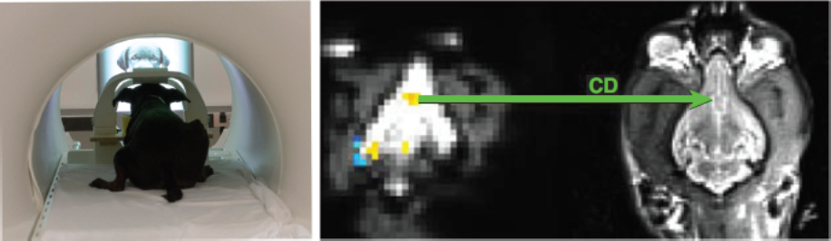
Hình 8.5: fMRI ở chó. Trái: một chú chó bên trong máy MRI trong một thí nghiệm mà phản ứng của não đối với khuôn mặt của các con chó khác được khảo sát. Phải: dữ liệu MRI thu được. Ở bên trái là các ảnh fMRI chức năng, với các vùng có ý nghĩa thống kê màu vàng. Ở bên phải là ảnh MRI cấu trúc cho thấy não của chú chó bên trong hộp sọ (hai nhãn cầu là hai vùng sáng ở phía trên). Trong ví dụ được hiển thị, có sự kích hoạt nhân đuôi (CD) khi chú chó thấy một tín hiệu tay báo hiệu phần thưởng. Chỉnh sửa với sự cho phép từ Dilks và cộng sự 2015 (trái) và Berns và cộng sự 2012 (phải).
Tóm Tắt
- Có những ví dụ rõ ràng về các liên hệ giữa cảm xúc và các vùng não ở người từ các nghiên cứu tổn thương và kích thích điện. Tuy nhiên, những nghiên cứu này có rất nhiều biến nhiễu và khả năng kiểm soát thực nghiệm kém, khiến việc hiểu bản chất chính xác của liên hệ đó trở nên rất khó khăn.
- Hai ví dụ tốt là các liên hệ giữa hạch hạnh nhân và sợ hãi, và giữa thùy đảo và ghê tởm. Các vùng não khác, gồm cả những vùng giống như đã được nghiên cứu ở động vật (chất xám quanh ống dẫn nước, vùng dưới đồi), và gồm cả vỏ não trước trán, cũng tham gia.
- Tương lai của các nghiên cứu fMRI về cảm xúc người trông khá hứa hẹn, dù lịch sử của các nghiên cứu fMRI đầy rẫy những thí nghiệm kém chất lượng. Đã có sự cải tiến nhanh chóng về phương pháp và một cam kết ngày càng tăng về chia sẻ dữ liệu.
- Cũng có thể áp dụng fMRI cho một số động vật. Các nghiên cứu fMRI trong tương lai trên khỉ và chó có thể cho chúng ta những nhận thức quan trọng về tính đồng nguồn của các trạng thái cảm xúc giữa các động vật này và chính chúng ta.
Chương 9 — Thần Kinh Học Cảm Xúc Ở Con Người
Chương 9 — Thần Kinh Học Cảm Xúc Ở Con Người
Các Nghiên Cứu fMRI Về Cảm Xúc: Logic Và Thách Thức
Sở hữu một công cụ như fMRI là một chuyện, còn thiết kế một thí nghiệm lại là chuyện khác. Ngay cả khi tạm gác hết mọi vấn đề về việc tách tín hiệu khỏi nhiễu, tính toán các đại lượng phái sinh có ý nghĩa, và dùng các công cụ thống kê để rút ra kết luận đáng tin cậy, vẫn còn những thách thức về cách thiết kế một thí nghiệm để thao túng các trạng thái cảm xúc. Trong các nghiên cứu ở động vật, chúng ta có thể trình cho con vật một kích thích có ý nghĩa sinh thái, như mùi của một động vật săn mồi, và có thể khảo sát trạng thái cảm xúc bằng cách theo dõi hành vi, như đứng chết trân hay bỏ chạy, cùng với các phép đo nội tiết (hormone) và tự chủ (huyết áp, giãn đồng tử).
Không việc nào trong số này dễ thực hiện ở con người; về nguyên tắc chúng ta không thể đối mặt người ta với những kích thích như động vật săn mồi, và ngay cả nếu có thể, họ sẽ biết rằng đó chỉ là một thí nghiệm và sẽ không phản ứng theo kiểu hợp lệ về mặt sinh thái. Chúng ta cũng nói chung không thể khiến người ta la hét hay bỏ chạy, một phần vì lý do đạo đức, nhưng cũng vì fMRI cực kỳ nhạy với chuyển động (một trong những lý do khiến việc làm fMRI ở động vật còn thức rất khó). Ngay cả những chuyển động rất nhỏ do tim đập hay thở của ai đó cũng đưa vào tín hiệu fMRI một lượng nhiễu đáng kể đòi hỏi những hiệu chỉnh khó khăn; việc ai đó gào thét chắc chắn sẽ phá hỏng phép đo. Mặt khác, cũng có thể một phần nhiễu chuyển động này tự nó lại là tín hiệu mang thông tin — nếu bạn run rẩy, dù chỉ nhẹ, điều đó sẽ hiện lên trong tín hiệu fMRI, và, trong trường hợp khảo sát một trạng thái sợ hãi, thực sự mang thông tin về trạng thái cảm xúc (nhưng nó sẽ không phải là một phép đo sinh học thần kinh). Nhân tiện, gần đây người ta đã tìm thấy một thứ gì đó tương tự — bạn có thể nhận diện từng cá nhân và dự đoán nhiều khác biệt cá nhân thú vị (như trí tuệ) chỉ từ hồ sơ fMRI trạng thái nghỉ của họ, nhưng hóa ra một phần thông tin đó có thể đến từ kiểu mẫu mà người ta chuyển động trong máy quét (do thở, gãi,
v.v.). Những chuyển động này tạo ra các hiệu ứng giả chuyển động trong tín hiệu fMRI có thể lớn bằng, hoặc lớn hơn, các tương quan huyết động thực sự của xử lý nơ-ron mà ta muốn đo.
Logic nền tảng của một nghiên cứu fMRI là đưa vào thí nghiệm một sự đối lập (hay khác biệt) về lượng hoặc chất của biến số quan tâm. Như vậy, bạn sẽ muốn đối lập một điều kiện có trạng thái cảm xúc với một điều kiện không có trạng thái cảm xúc, và xem sự khác biệt này đạt ngưỡng thống kê ở đâu về mặt kích hoạt trong não. Nếu bạn tìm thấy một khác biệt, bạn có việc để làm rồi; nếu không tìm thấy, bạn không thể kết luận điều gì, vì điều đó có thể đơn giản nghĩa là bạn không có đủ năng lực thống kê để phát hiện một khác biệt. Nhiều nghiên cứu có một phiên bản tham số hóa hơn của kiểu đối lập tất-cả-hay-không-gì đơn giản như vậy; chúng so sánh một điều kiện có nhiều cảm xúc với một điều kiện có ít, hoặc cho cảm xúc biến thiên theo cách tham số hóa có bậc qua các lần thử có thể lượng hóa bằng một hàm số nào đó. Chẳng hạn, bạn có thể biến thiên tham số mức sợ hãi mà người ta trải qua, hoặc một kích thích trông đáng sợ thế nào, hoặc người ta buộc phải nghĩ về nỗi sợ bao nhiêu, hoặc thậm chí mức thay đổi của một số tín hiệu cơ thể nhất định (như huyết áp hay nhịp tim) để đáp ứng với một kích thích thuộc về cảm xúc.
Một thiết kế fMRI gọi là “liên quan sự kiện” (event-related) sẽ biến thiên các tham số của bạn ở từng lần thử, nhưng điều này có thể không phải ý hay nếu bạn đang nghiên cứu cảm xúc, vì các cảm xúc chậm quá (một lần thử thường kéo dài khoảng 3 đến 10 giây). Thay vào đó, bạn có thể muốn biến thiên tham số quan tâm theo vài mức theo từng khối, mỗi khối dài chừng một phút. Bạn sẽ cần khớp đặc tính “kéo dài” của cảm xúc cụ thể đang được nghiên cứu với khoảng thời gian bạn thu thập dữ liệu fMRI (độ dài khối của bạn).
Một khi đã có một nghiên cứu fMRI được tham số hóa như vậy, bạn có thể lấy hàm số mô tả cách cảm xúc thay đổi như được lượng hóa bởi tham số của bạn (đo từ thứ gì đó khác hoạt động não, như các đánh giá bằng lời hay một phép đo hành vi khác), và hỏi ở đâu trong não có một thay đổi tương ứng về kích hoạt được khớp bởi cùng hàm số đó (hoặc hàm số đó nhân với một phép biến đổi hợp lý). Đại khái, bạn quan tâm câu hỏi sau: khi bạn thay đổi điều gì đó (được đo) về cảm xúc (ví dụ, báo cáo cường độ hay tính tích cực–tiêu cực), thì
thay đổi tương ứng trong hoạt động não mà bạn có thể bắt được bằng fMRI là gì?
Có vẻ tương đối đơn giản để quyết định dùng kích thích nào để khơi dậy một trạng thái cảm xúc, nhưng thực ra hoàn toàn không phải vậy. Ngay cả trong các nghiên cứu ở động vật, các dòng chuột cận huyết có thể không phản ứng với mùi của động vật săn mồi theo cách mà chuột hoang dã sẽ phản ứng, và có sự biến động đáng kể giữa các con vật, giữa các phiên thử nghiệm trong cùng một con vật, và giữa các phòng thí nghiệm cố gắng tái lập hiệu ứng của các kích thích khơi dậy cảm xúc bẩm sinh. Tình hình còn tệ hơn ở người; thực tế không ai phản ứng cùng một cách với một kích thích khơi dậy cảm xúc, và thậm chí không rõ một kích thích “hợp lệ sinh thái” chính xác là gì. Một con hổ hoang dã? Một con hổ trong sở thú? Một bộ phim, tấm ảnh hay bức hoạt hình về con hổ? Vấn đề là người ta nghĩ về các kích thích, về thí nghiệm, về kỳ vọng của người thí nghiệm, về kỳ vọng của chính họ đối với cảm xúc, v.v., làm cho các kích hoạt não được tạo ra trở nên phức tạp vô cùng.
Khó khăn trong việc thiết lập một thí nghiệm rõ ràng và hợp lệ còn bị khuếch đại bởi thực tế rằng các nghiên cứu về cảm xúc ở người thường không tập trung vào một tập nhỏ các cảm xúc cơ bản, mà lại nhảy thẳng vào điều tra những cảm xúc phức tạp hơn như xấu hổ, tội lỗi, tự hào, niềm vui cười cợt vào bất hạnh của người khác (Schadenfreude) và tình yêu, và nhiều nữa. Có những nghiên cứu dùng các từ chỉ cảm xúc mà nghĩa của chúng không phải người thí nghiệm cũng không phải đối tượng nào hiểu đầy đủ. Hơn nữa, các cảm xúc được điều tra thường khá nhẹ về cường độ, và các nghiên cứu đòi hỏi ngôn ngữ, trí nhớ và suy luận để gợi lên cảm xúc, hay một suy nghĩ về cảm xúc. Vì vậy, ngay từ đầu, đã có một thách thức lớn về tính hợp lệ khái niệm (hộp 8.1): làm sao bạn biết bạn đang nghiên cứu một cảm xúc, làm sao bạn biết bạn đang nghiên cứu cảm xúc nào, và làm sao bạn biết khía cạnh nào của xử lý cảm xúc được phản ánh trong phép đo não của bạn? Mặc dù điểm này cũng áp dụng cho các nghiên cứu ở động vật, nó càng cấp bách hơn ở người.
Những Bài Học Từ Hai Ví Dụ: Âm Nhạc Và Khuôn Mặt
Hãy nhìn vào thách thức này đối với hai lớp kích thích đã được dùng trong nhiều nghiên cứu fMRI về cảm xúc. Lớp đầu tiên là âm nhạc. Khi bạn phát một số loại âm nhạc nhất định cho một số người nhất định nghe, họ sẽ nói với bạn rằng nó
khiến họ cảm thấy những cảm xúc mạnh. Âm nhạc, nhịp điệu giọng nói (prosody), và các kích thích thính giác khác có thể khá hiệu quả trong việc khơi dậy một cảm xúc, mặc dù chúng thường còn hiệu quả hơn nữa khi kết hợp với kích thích thị giác (chẳng hạn như trong một bộ phim có nhạc nền). Khi bạn hỏi đối tượng đây cụ thể là những cảm xúc gì, việc nhận được câu trả lời rõ ràng khó hơn nhiều (dù bạn có thể hướng họ đi đúng hướng nếu bạn phát cho họ những loại âm nhạc mà họ có những liên tưởng văn hóa cụ thể, và bạn cho họ một danh sách ngắn các từ chỉ cảm xúc để chọn từ phù hợp nhất). Khi bạn cố đo các hành vi liên quan đến những cảm xúc này, việc này còn khó hơn nữa.
Một nghiên cứu đặc biệt khéo léo trong việc dùng một phản ứng hành vi cụ thể; các nhà nghiên cứu đã phát âm nhạc cho đối tượng nghe khiến họ báo cáo cảm thấy run rẩy dọc sống lưng (Blood và Zatorre 2001). Nghiên cứu này thực ra dùng chụp phát xạ positron (PET), mà về nhiều phương diện có lẽ phù hợp hơn fMRI vào thời điểm đó (PET chậm hơn fMRI nhiều, và do đó khớp hơn với dòng thời gian của một cảm xúc; nó có thể có tỉ lệ tín hiệu trên nhiễu tốt hơn; và nó có thể thu tín hiệu từ các cấu trúc dưới vỏ tốt hơn). Nghiên cứu tìm thấy kích hoạt ở một số vùng được cho là liên quan đến phần thưởng và cảm xúc, bao gồm hạch hạnh nhân, vỏ não hốc mắt trước trán, và đảo não (so sánh hình 8.1). Một điểm mạnh trong thiết kế nghiên cứu này là nó có thể dùng chính cùng một kích thích cảm giác (cùng một bản nhạc) để khiến một người, nhưng không phải người khác, cảm thấy run rẩy dọc sống lưng; theo cách đó, kích hoạt não tương quan với cảm giác run rẩy dọc sống lưng không bị lẫn với một khía cạnh nào của kích thích cảm giác (như chỉ đơn giản là nhạc to hơn, hay một âm thanh hay hòa âm cụ thể). Tuy nhiên, điều này đánh đổi bằng một phép đo cảm xúc khá khác thường — đánh giá chủ quan của người ta về cảm giác run rẩy dọc sống lưng. Để tăng tính hợp lệ của phép đo này, các nhà nghiên cứu cũng đo các biến tâm sinh lý và thấy rằng khi đối tượng báo cáo cảm thấy ớn lạnh, họ cũng có nhịp tim tăng, thay đổi hô hấp, và thay đổi điện cơ (EMG, một phép đo việc tạo biểu cảm khuôn mặt).
Âm nhạc và các kích thích thính giác thuộc về cảm xúc khác kích hoạt các vỏ não thính giác — vốn sẽ xử lý bất kỳ loại âm thanh nào — nhưng chúng cũng kích hoạt các vùng não được cho là quan trọng đối với trải nghiệm cảm xúc, như đảo não (hình 8.1). Chúng ta đã từng gặp đảo não (chẳng hạn, liên quan đến
ghê tởm) và nó hóa ra được kích hoạt bởi nhiều kích thích thuộc về cảm xúc, và cũng bởi xúc cảm da lành và đau đớn cũng như bởi các vị khác nhau (ngọt, đắng, v.v.). Điều này có lý, vì đảo não chứa một vỏ não cảm giác cảm nhận nội tạng biểu diễn nhận thức của chúng ta về trạng thái cơ thể mình, như chúng ta đã đề cập trong chương 8. Cảm nhận điều gì đó trong cơ thể, chú ý đến điều gì đó trong cơ thể, hay chỉ đơn giản là nhạy cảm với điều gì đó trong cơ thể, tất cả đều làm tăng kích hoạt ở đảo não. Quả thực, các nghiên cứu khác đã cho thấy độ nhạy mà người ta có thể phát hiện các thay đổi trong cơ thể mình, như nhịp tim của chính họ, tương quan với kích hoạt của đảo não. Tất cả những phát hiện này sẽ gợi cho bạn nhớ lại lý thuyết cảm xúc mà William James từng theo đuổi, mà chúng ta đã nhắc trong các chương trước. James nghĩ rằng một phản ứng thuộc về cảm xúc trong cơ thể chúng ta được não cảm nhận lại và là nền tảng cho cảm giác có ý thức của chúng ta về cảm xúc. Tuy nhiên, một câu hỏi lớn vẫn còn bỏ ngỏ bởi nghiên cứu về ớn lạnh do âm nhạc gây ra. Trong khi các tham gia rõ ràng cảm nhận điều gì đó, liệu đó có phải là một cảm xúc? Đó là cảm xúc nào? Những đặc tính nào của các cảm xúc mà chúng ta đã liệt kê trong hình 3.2 được áp dụng?
Các nghiên cứu dùng các kích thích như âm nhạc hay khuôn mặt để thăm dò xử lý cảm xúc phải đối mặt với một câu hỏi khó nhằn về việc người ta thực sự làm gì trong thí nghiệm. Trong nhiều trường hợp, người ta được cho xem các cảnh hay khuôn mặt, được kể chuyện, hoặc nghe âm nhạc hay giọng nói, và được hỏi điều gì đó về cảm xúc. Chẳng hạn, một trong chúng tôi đã từng thực hiện một nghiên cứu trong quá khứ, trong đó chúng tôi phát âm nhạc cho mọi người nghe và hỏi họ, “đây là cảm xúc gì?” Nếu bạn suy nghĩ về điều đó, đó là một câu hỏi rất mơ hồ. Nó có thể yêu cầu đối tượng báo cáo về điều mà âm nhạc theo khuôn mẫu được định hướng để truyền đạt (chẳng hạn nó có thể nghe như nhạc nền cho một phim kinh dị), điều mà nhà soạn nhạc cảm thấy hay định hướng, điều mà các nhạc công cảm thấy hay định hướng, hoặc điều mà người nghe nghĩ hay cảm thấy khi nghe bản nhạc (điều này có thể cực kỳ mang tính cá nhân riêng biệt). Tất cả những câu hỏi này khác nhau khá nhiều.
Vì vậy, âm nhạc mang đến một pha trộn điểm mạnh và điểm yếu để điều tra cảm xúc: nó chắc chắn có thể khơi dậy những cảm giác mạnh ở những người cụ thể, nhưng cũng có thể không rõ nó tham gia vào những thành tố nào của xử lý cảm xúc, và không rõ nó có thể khơi dậy những cảm xúc cụ thể nào. Tùy vào nhiệm vụ và thiết kế của nghiên cứu chụp ảnh não, một thí nghiệm có thể bộc lộ kích hoạt tương quan với trải nghiệm một cảm xúc, hoặc với việc nghĩ về một phạm trù cảm xúc cụ thể. Những nhận xét tương tự cũng áp dụng cho các đoạn phim,
cũng thường được dùng trong các nghiên cứu về cảm xúc. Ở đây, có sẵn các dữ liệu chuẩn hóa tốt hơn về các cảm xúc mà người ta tự đánh giá là cảm thấy khi xem các đoạn phim (ví dụ, Gross và Levenson 1995). Tuy vậy, vẫn có những hiệu ứng lớn của sự quen thuộc, văn hóa, và khác biệt cá nhân, cũng như sự phức tạp chung của một kích thích phong phú, biến thiên theo thời gian. Như vậy, những yếu tố khơi dậy cảm xúc mạnh ở người, như âm nhạc hay phim, một phần vì chính sự phong phú của chúng, cũng có tính biến động đáng kể. Chúng ta không biết chính xác đối tượng đang xử lý gì khi được trình những kích thích này, và có lẽ có những khác biệt cá nhân lớn trong tất cả các xử lý liên quan đến cảm xúc mà họ thực hiện (nhưng về nguyên tắc chúng ta có thể tìm ra chúng được tạo ra ở đâu trong não). Việc tìm các kích thích để khơi dậy các trạng thái cảm xúc rõ ràng ở người theo một cách đồng nhất là khó khăn hơn nhiều, nhiều so với điều mà người ta có thể nghĩ ban đầu.
Một loại kích thích đơn giản hơn là những kích thích tĩnh, có thể dùng để thăm dò các phản ứng thuộc về cảm xúc khóa theo thời gian hơn và được cho là theo khuôn mẫu. Cho đến nay, loại kích thích phổ biến nhất trong các nghiên cứu cảm xúc ở người là các biểu cảm khuôn mặt. Điều này chủ yếu là nhờ những công trình trước đây có sức ảnh hưởng của nhà tâm lý học Paul Ekman, mà bạn có thể còn nhớ từ chương 1. Ekman lập luận rằng các biểu cảm khuôn mặt của con người có thể tín hiệu hóa các cảm xúc cơ bản cụ thể trong tất cả các nền văn hóa (Ekman 1994). Vì vậy, đây có vẻ là một loại kích thích đặc biệt đáng tin cậy, vì ai cũng đồng thuận về cảm xúc mà nó thể hiện. Đáng tiếc, đây cũng có vấn đề. Thứ nhất, tuyên bố của Ekman về nhận thức phổ quát các cảm xúc từ biểu cảm khuôn mặt đã được tranh luận sôi nổi (Fridlund 1994; Gendron và cộng sự 2014; Fernandez-Dols và Russell 2017), như chúng tôi đã ghi chú trong hộp 3.5. Thứ hai, cách các kích thích thường được trình trong các nghiên cứu fMRI (và cả các nghiên cứu hành vi nữa) hoàn toàn không hợp lệ sinh thái (chúng là những tấm ảnh đơn lẻ, dàn dựng, tĩnh của khuôn mặt trên màn hình máy tính, không có nền hay ngữ cảnh nào khác). Thứ ba, cũng như với âm nhạc, vẫn chưa rõ đối tượng thực sự đang làm gì khi họ nhìn những biểu cảm khuôn mặt này; họ có thể đang phân loại hay đặt tên cảm xúc hiển hiện trên khuôn mặt, vì điều này thường được yêu cầu trong các nhiệm vụ giao cho đối tượng; họ có thể làm điều đó bằng cách tự hỏi người hiển hiện trong ảnh đang cảm thấy gì (mà trong thực tế, không phải là cảm xúc hiển hiện, vì chúng thường là các biểu cảm thuộc về cảm xúc do diễn viên dàn dựng); hoặc họ có thể tự hỏi việc nhìn biểu cảm khuôn mặt này khiến chính họ cảm thấy thế nào (hoặc đồng cảm tưởng tượng họ sẽ cảm thấy ra sao nếu họ
trông giống người hiển hiện trong ảnh). Có lẽ họ đang làm một chút của tất cả những điều này. Chắc chắn rằng biểu cảm khuôn mặt là một loại kích thích khác hẳn so với âm nhạc hay phim, và sẽ cần rất nhiều bằng chứng nữa để lập luận rằng chúng khơi dậy bất kỳ trạng thái cảm xúc nào, và nếu có, đó là một cảm xúc nhạt hơn nhiều (chỉ nhìn một biểu cảm khuôn mặt của sợ hãi không thực sự khiến bạn sợ).
Hai thách thức nền tảng hiện rõ trong các nghiên cứu cảm xúc ở người vì thế là: các kích thích nhìn chung không hợp lệ sinh thái, và việc tách riêng các thành tố cụ thể của xử lý cảm xúc là rất khó. Tiếp theo chúng ta sẽ chuyển sang các nghiên cứu về cảm xúc ở người đã điều tra những khía cạnh cụ thể của xử lý thuộc về cảm xúc, cho chúng ta một cái nhìn tổng quan về các loại quá trình khác nhau, các cách tiếp cận để nghiên cứu chúng, và một góc nhìn sơ bộ về các cấu trúc não liên quan.
Quy Gán Cảm Xúc Cho Người Khác
Nhiều nghiên cứu đã tập trung vào cách chúng ta quy gán cảm xúc cho người khác, hoặc từ việc quan sát hành vi của họ, hoặc từ việc tìm hiểu điều gì đó về họ hay hoàn cảnh của họ. Do đó các nghiên cứu này tập trung vào đặc tính cảm xúc cuối cùng trong danh sách của chúng tôi ở hình 3.2: giao tiếp xã hội. Khả năng quy gán cảm xúc cho người khác phụ thuộc vào một mạng lưới các cấu trúc não tham gia vào vài quá trình khác nhau. Ở đầu vào, trước hết bạn cần hướng về và chú ý đến các dấu hiệu cảm giác cụ thể, như ai đó mỉm cười hay cau mày, cười hay khóc. Một khi đã nhận thấy các dấu hiệu này, chúng được xử lý tiếp, thường cùng với thông tin ngữ cảnh bổ sung, và sau đó có thể được phân loại vào một phạm trù cảm xúc (trong số các phạm trù khác): người kia được đánh giá là vui vẻ, hay sợ hãi, hay buồn, chẳng hạn (điều này thường bị áp đặt bởi nhiệm vụ mà đối tượng được yêu cầu thực hiện). Nhưng xử lý không dừng lại ở đó; bạn thường nghĩ thêm về lý do vì sao người kia có thể đang cảm thấy như vậy, về các nguyên nhân và giải thích cho cảm xúc. (Điều này đôi khi được gọi là “lý thuyết tâm trí” hay “mentalizing”.) Tùy vào bản chất của thông tin ban đầu sẵn có, bạn có thể bỏ qua một vài bước đầu và đi thẳng đến phân loại cảm xúc — ví dụ, khi bạn đọc một câu chuyện về ai đó, thay vì thực sự quan sát hay nghe họ. Bức tranh nhiều chuỗi này về cách bạn quy gán các cảm xúc và nguyên nhân của chúng cho người khác
được vẽ sơ đồ trong hình 9.1.

Hình 9.1: Quy gán các cảm xúc và nguyên nhân của chúng. Mặc dù việc quy gán cảm xúc cho người khác thường có vẻ diễn ra tức thời, nó gồm vài giai đoạn. Thứ nhất, bạn phải phát hiện các dấu hiệu nổi bật; trong ví dụ này, các dấu hiệu thị giác trên một khuôn mặt sợ hãi. Thứ hai, bạn suy ra một phạm trù cảm xúc, cùng với các khái niệm khác (như rằng người đó có thể sắp bỏ chạy). Thứ ba, bạn quy gán một tập hợp phức tạp các nguyên nhân. Trong thực tế, cả ba thành tố xử lý này tương tác với nhau. Chẳng hạn, các kỳ vọng về tầng quy gán cao nhất (nguyên nhân) đã có thể định hướng sự chú ý của chúng ta để tìm kiếm các dấu hiệu cụ thể cần phát hiện.
Các hệ não liên quan đến các giai đoạn xử lý khác nhau này đã được tìm ra khá chi tiết qua các nghiên cứu fMRI. Một số vùng then chốt được vẽ sơ đồ trong hình 9.2. Hạch hạnh nhân thường được kích hoạt gắn với việc phát hiện nhanh các dấu hiệu nổi bật — như phát hiện đôi mắt mở to trên một khuôn mặt tín hiệu hóa sợ hãi, nhất quán với dữ liệu từ các nghiên cứu về bệnh nhân có tổn thương hạch hạnh nhân, những người suy giảm khả năng chú ý đến các dấu hiệu này (hộp 8.2). Cùng làm việc với các vỏ não cảm giác, hạch hạnh nhân và các cấu trúc dưới vỏ khác (như nhân gối của đồi thị) giúp chúng ta hướng về và kéo sự chú ý của mình đến những khía cạnh của kích thích chứa thông tin liên quan đến cảm xúc. Một phần của việc phát hiện ban đầu này có thể khá thô, và có thể khá nhanh.
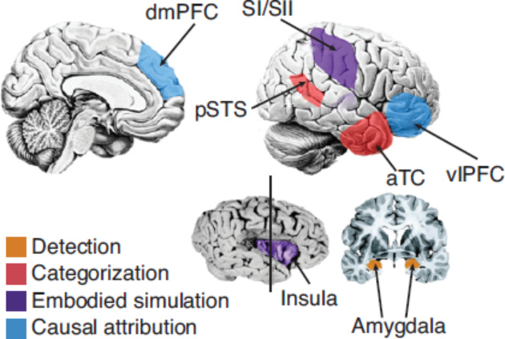
Hình 9.2: Các vùng não tham gia quy gán cảm xúc. Có nhiều cấu trúc hơn chỉ những cái được liệt kê ở đây, vốn chỉ nhằm nêu bật vài ví dụ. Theo một số lý thuyết, đảo não và các vỏ não liên quan cảm giác cơ thể khác (SI/SII; màu tím) đảm nhận quy gán cảm xúc bằng cách cho người quan sát cảm nhận cảm xúc mà họ thấy ở người kia, có thể cung cấp một mô tả phong phú hơn về cảm xúc đó sẽ cảm thấy ra sao thông qua việc mô phỏng nó trong người nhận. dmPFC: vỏ não trước trán lưng-trung vị. pSTS: rãnh thái dương trên sau. vlPFC: vỏ não trước trán bên-thất. aTC: vỏ não thái dương trước (còn gọi là cực thái dương). Tái hiện với sự cho phép từ Spunt và Adolphs 2017a.
Bước tiếp theo phức tạp hơn, vì chúng ta cần phân loại điều mình thấy vào một phạm trù cảm xúc. Có một số vùng não tham gia vào bước này, chẳng hạn các vùng biểu diễn thông tin cảm giác cấp cao hơn (ví dụ, thông tin về chuyển động sinh học có liên quan đến một cảm xúc, được xử lý ở rãnh thái dương trên sau [pSTS]), các vùng mà từ đó kiến thức khái niệm và từ vựng về phạm trù cảm xúc có thể được truy xuất (như các vỏ não ở thùy thái dương trước [aTC]), và các vùng tham gia vào các phản ứng đồng cảm với điều ta thấy (như đảo não, và các vỏ não cảm giác cơ thể liên quan [SI, SII]). Cuối cùng, quy gán nhân quả phức tạp nhất để giải thích vì sao người mà ta đang nhìn khuôn mặt lại hành xử như vậy, và vì sao họ có cảm xúc mà ta vừa phân loại, tham gia các vùng cụ thể ở vỏ não trước trán (vlPFC, dmPFC). Một trong số đó, vỏ não trước trán lưng-trung vị (dmPFC), có vẻ được kích hoạt một cách phổ quát mỗi khi chúng ta suy luận nhân quả — nó được kích hoạt không chỉ khi ta suy ra cảm xúc của người khác, mà cả khi ta suy ra cảm xúc trong các quan sát của mình về động vật (hoặc thậm chí trong
chính mình). Nó đã được kích hoạt trong não của Darwin khi ông thực hiện tất cả các quan sát về hành vi động vật vốn là nguồn gốc cho cuốn sách của ông, The Expression of the Emotions in Man and Animals (Biểu Hiện Cảm Xúc Ở Người Và Động Vật). Tổn thương vùng não này gây suy giảm khả năng suy ra cảm xúc của người khác. dmPFC cũng có vẻ được kích hoạt kém hơn ở các quần thể lâm sàng có khó khăn trong việc suy ra cảm xúc, như những người mắc tự kỷ.
Tất cả các nghiên cứu này đưa chúng ta trở lại một câu hỏi mà chúng ta đã nêu ở phần trước (xem thêm hộp 3.5). Chúng ta biết rằng người ta đang quy gán cảm xúc, và chúng ta biết điều gì đó về các giai đoạn khác nhau của các quá trình này. Nhưng người ta đang quy gán những cảm xúc nào? Điều gì tính là một quy gán cảm xúc “bình thường”, và điều gì cho phép chúng ta quyết định quy gán cảm xúc của một ai đó là đúng hay sai? Có vẻ như đơn giản lấy ý kiến của người thí nghiệm — người đang thực hiện quy gán cảm xúc riêng của mình về các kích thích dùng cho thí nghiệm — không phải là một thước đo khách quan lắm. Một số nghiên cứu gần đây đã dùng phân tích tương đồng biểu diễn (chương 8) để giải quyết câu hỏi này.
Chụp Ảnh Não Các Khái Niệm Cảm Xúc
Hãy nhìn vào một nghiên cứu như vậy, do Rebecca Saxe và các đồng nghiệp tại MIT thực hiện (đây là cùng người mà chúng ta đã thấy cùng đứa bé của bà trong máy quét ở hình 1.1). Nghiên cứu của họ minh họa việc áp dụng các không gian tương đồng, và các cách tiếp cận đa biến (Skerry và Saxe 2015). Nghiên cứu sử dụng phân tích tương đồng biểu diễn mà chúng ta đã mô tả ở chương trước, và hỏi liệu nó có thể được dùng để hiểu cách người ta phân loại các cảm xúc hay không — liệu họ có biểu diễn chúng trong một không gian hai chiều của tính tích cực–tiêu cực và sự hưng phấn, một sơ đồ tâm lý phổ biến mà chúng ta đã nhắc trong chương 3, hay họ ánh xạ chúng vào sáu cảm xúc “cơ bản” mà các nhà tâm lý học như Paul Ekman đã đề xuất (hạnh phúc, sợ hãi, giận dữ, v.v.), hay họ lắp ráp chúng từ một tập thuộc tính lớn hơn, như các lý thuyết thẩm định tâm lý đề xuất? (chúng ta sẽ bàn thêm về các lý thuyết thẩm định trong chương 10). Các nhà nghiên cứu đặt ra nhằm trả lời những câu hỏi này bằng thí nghiệm được vẽ sơ đồ trong hình 9.3.
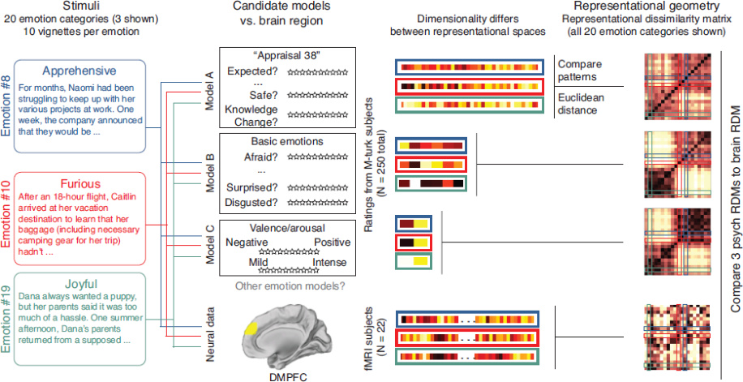
Hình 9.3: Phân tích tương đồng biểu diễn của các khái niệm cảm xúc. Hình vẽ sơ đồ dòng chảy của một thí nghiệm dùng RSA đa biến để hỏi cách người ta khái niệm hóa các cảm xúc, từ việc đọc các kịch bản viết ngắn (Skerry và Saxe 2015). Xem phần văn bản để biết chi tiết. In lại với sự cho phép từ Dubois và Adolphs 2015.
Nghiên cứu này là về cách người ta quy gán cảm xúc cho người khác, và thậm chí cụ thể hơn, là về cách người ta quy gán cảm xúc cho người khác từ các mô tả về những tình huống mà con người thấy mình ở trong đó. Vì vậy, điều này hơi khác với các ví dụ trước của chúng tôi, nơi chúng ta lấy trường hợp quy gán cảm xúc từ quan sát trực tiếp con người (ví dụ, biểu cảm khuôn mặt của họ). Một lần nữa, nghiên cứu không phải là về việc thực sự có một cảm xúc theo bất kỳ nghĩa nào, mà là về cách kiến thức khái niệm về các cảm xúc được biểu diễn. Trong nghiên cứu, các tham gia trong máy quét được trình những tia chuyện ngắn (cột bên trái cùng) mô tả các tình huống gắn chặt với những cảm xúc cụ thể. Những tia chuyện này đã được chọn kỹ lưỡng dựa trên các đánh giá cảm xúc do một nhóm đối tượng độc lập cung cấp, những người được kiểm tra trước qua internet. Mỗi cảm xúc có vài tia chuyện, như thể hiện bởi chồng các câu chuyện trong cột bên trái, để các nhà nghiên cứu có thể nhìn vào kiểu mẫu kích hoạt não mà tất cả các câu chuyện cho một cảm xúc cụ thể chia sẻ chung, thay vì lẫn cảm xúc với nội dung cụ thể của bất kỳ câu chuyện đơn lẻ nào. Các tham gia không được thấy các từ chỉ cảm xúc, chỉ các tia chuyện ngắn. Kiểu mẫu kích hoạt não được khơi dậy khi đọc
những tia chuyện cho mỗi cảm xúc khác nhau sau đó có thể được đem đi phân tích tương đồng biểu diễn (RSA) như chúng ta đã mô tả trong chương 8 (đây là hàng dưới cùng, minh họa ví dụ RSA áp dụng cho một vùng cụ thể trong não, vỏ não trước trán lưng-trung vị, DMPFC).
Đó là chuyện dữ liệu não. Loại dữ liệu còn lại là các đánh giá tâm lý, thu được cho chính những tia chuyện đó. Ở đây, một nhóm đối tượng khác được yêu cầu tạo ra các đánh giá (không trong máy quét, mà cũng qua internet, dùng một nền tảng gọi là Mechanical Turk) ánh xạ các cảm xúc vào mỗi không gian tương đồng (hệ tọa độ) trong ba không gian. Một không gian có 38 chiều (trục) mô tả nhiều đặc điểm khác nhau của các tình huống thuộc về cảm xúc, bao gồm nhiều đặc điểm mà các lý thuyết thẩm định đã đề xuất thực sự được thẩm định khi một trạng thái cảm xúc thật được khơi dậy (“thẩm định 38”), một có sáu cảm xúc mà Paul Ekman đề xuất (“cảm xúc cơ bản”), và một có hai (“tính tích cực–tiêu cực/sự hưng phấn”). Câu hỏi chính bây giờ là: với không gian tương đồng tâm lý nào trong ba cái này thì RSA não tương ứng tốt nhất? Lưu ý rằng các đối tượng trong máy quét chỉ đọc những tia chuyện, và rằng các đánh giá tâm lý đều đến từ một nhóm đối tượng riêng biệt. Vậy, khi chỉ đơn giản nằm trong máy quét và nghĩ về cảm xúc gắn với mỗi tia chuyện, não đã biểu diễn các cảm xúc khác nhau như thế nào? Theo tính tích cực–tiêu cực/sự hưng phấn? Theo các cảm xúc cơ bản? Hay theo 38 chiều thẩm định khác nhau?
Có một sự tương ứng nào đó giữa ma trận bất tương đồng biểu diễn não (RDM) và mỗi không gian tâm lý trong ba cái (cột bên phải cùng), nhưng không gian 38 chiều từ lý thuyết thẩm định khớp dữ liệu fMRI tốt nhất trong nghiên cứu này, ngay cả khi người ta đã tính đến hiệu ứng của việc đơn thuần có số chiều lớn hơn. Sự khớp tốt nhất từ mô hình thẩm định này có lẽ do bản chất của các kích thích: chúng buộc đối tượng thẩm định tình huống theo vài chiều, vì đó là cách các câu chuyện được trình. Cũng có thể là, nếu đối tượng được cho xem các biểu cảm khuôn mặt của cảm xúc thay vào đó, và chúng tôi thực hiện cùng loại phân tích trên dữ liệu đó, thì các không gian sáu chiều hay hai chiều sẽ khớp tốt nhất. Nhưng điểm bao trùm chỉ đơn giản là minh họa cách dữ liệu fMRI, và các đánh giá tâm lý, có thể được dùng để so sánh các không gian tương đồng tâm lý và thần kinh cho các khái niệm cảm xúc. Lưu ý rằng trong nghiên cứu này, một lần nữa, vỏ não trước trán lưng-trung vị được kích hoạt một cách đáng tin cậy
khi quy gán các cảm xúc — một vùng não mà chúng ta đã thấy trong hình 9.2.
Còn nhiều nghiên cứu fMRI khác đã điều tra cách người ta quy gán và nghĩ về các cảm xúc. Một dòng công việc rất quan trọng còn phải làm là mô tả các khác biệt cá nhân, và quả thật các khác biệt văn hóa, trong cách não biểu diễn các cảm xúc. Tất cả các nghiên cứu mà chúng tôi đã mô tả trước đây đều dùng các đối tượng có học vấn, phương Tây (thường là sinh viên đại học ở Hoa Kỳ). Những người khác nhau đưa ra những phán đoán hơi khác nhau về cảm xúc mà một người khác đang cảm thấy, và các nền văn hóa khác nhau còn hơn thế nữa. Ví dụ, các nền văn hóa châu Á và phương Tây nhìn vào các phần khác nhau của khuôn mặt để đưa ra phán đoán về cảm xúc được biểu lộ. Người châu Á nhìn vào mắt nhiều hơn và vào miệng ít hơn, một phát hiện thậm chí được phản ánh trong các biểu tượng cảm xúc phổ biến nhất được dùng ở các nền văn hóa khác nhau này (Caldara 2017). Sẽ rất thú vị khi chạy lại nghiên cứu trên trong một nền văn hóa hoàn toàn khác. Chúng tôi sẽ cá rằng sẽ có các khác biệt trong cách người từ một nền văn hóa khác diễn giải các tia chuyện, và trong cách họ đánh giá các cảm xúc mà họ nghĩ những người trong các câu chuyện đang cảm thấy. Điều này nên được phản ánh trong các kích hoạt não của họ. Các nghiên cứu hành vi về những khác biệt như vậy là một khối lượng công việc lớn trong tâm lý học, và đã như vậy từ lâu, nhưng cơ sở thần kinh của chúng cho đến nay mới chỉ hiếm hoi được điều tra.
Vậy, những loại nghiên cứu này là các nghiên cứu về cách người ta nghĩ về cảm xúc. Chúng là các nghiên cứu về kiến thức ngữ nghĩa, hay về các khái niệm mà người ta có về các cảm xúc. Chúng cũng sẽ có quan hệ gần (dù không đồng nhất) với các từ mà người ta có để mô tả cảm xúc. Đây là một dòng công việc quan trọng, nhưng dĩ nhiên quan trọng là phải phân biệt nó với việc điều tra các trạng thái cảm xúc như vậy — nó thực sự có vẻ là một chủ đề rất khác với các nghiên cứu về cảm xúc ở động vật mà chúng ta đã điểm lại trước đây. Có lẽ, nhiều nghiên cứu trong số này, chắc chắn là nghiên cứu trong hình 9.3, không thể thực hiện ở động vật không phải người — nhưng động vật không phải người chắc chắn có các trạng thái cảm xúc. Một con chuột có thể không thể nghĩ về, hay có một khái niệm (huống chi một từ) cho “sợ hãi”. Nhưng nó có thể ở trong một trạng thái cảm xúc của sợ hãi. Có nhiều nghiên cứu về các vùng thần kinh tham gia vào các trạng thái cảm xúc ở chuột (ví dụ, hạch hạnh nhân và vùng dưới đồi, những cấu trúc mà chúng ta đã gặp trong chương 6), nhưng không có nghiên cứu nào về cách chuột có thể quy gán cảm xúc cho chuột khác hay cho người (dù có một số ít nghiên cứu thú vị
về thần kinh học gợi ý rằng các cảm xúc có thể được giao tiếp mang tính xã hội ngay cả ở chuột). Sẽ rất khó để biết làm cách nào thậm chí thu được các phép đo hành vi từ động vật để bảo đảm rằng chúng đang thực hiện quy gán cảm xúc. Vì vậy, ở mức độ lớn, nghiên cứu sinh học thần kinh về quy gán cảm xúc, hay về các khái niệm cho cảm xúc, là đặc hữu của con người và không có đối ứng ở động vật. (Có một cuộc tranh luận đang diễn ra về khả năng thực hiện một số quy gán xã hội, thường gọi là “lý thuyết tâm trí”, ở các động vật khác, đặc biệt là linh trưởng — nhưng đây có lẽ là một khả năng khác hẳn với quy gán cảm xúc của con người, và hầu như không có gì được biết về cơ chất thần kinh của nó ở động vật.)
Có một khía cạnh thú vị đối với chủ đề của phần này: quy gán các cảm xúc và nghĩ về các cảm xúc cũng chính xác là điều mà nhà khoa học cảm xúc làm! Vậy, nếu chúng ta tập hợp một nhóm các nhà thần kinh học làm công việc về cảm xúc, chúng ta có thể đưa họ vào máy quét nếu chúng ta quan tâm điều tra cách não của họ thực hiện các quy gán khoa học về trạng thái cảm xúc từ các loại dữ liệu khác nhau. Điều này thực ra không ngớ ngẩn như nghe có vẻ. Người ta có thể tưởng tượng việc đối lập hai nhóm: lấy các nhà tâm lý học chỉ làm việc về cảm xúc con người, và lấy các nhà sinh học thần kinh cơ bản chỉ làm các nghiên cứu động vật ở tầng mạch. Trình cho họ các loại kích thích khác nhau trên cơ sở mà người ta có thể suy ra các trạng thái cảm xúc (các đồ thị kết quả thí nghiệm, các quan sát hành vi động vật và con người) và hỏi họ thực hiện những loại quy gán gì về mặt hành vi, và họ tham gia những hệ não nào khi thực hiện các quy gán này. Quả thật, người ta thậm chí có thể thực hiện một nghiên cứu trong cùng một chủ thể rất thú vị: nếu bạn đặt các tác giả của cuốn sách này vào máy quét, bạn có thể yêu cầu chúng tôi nhìn các hành vi động vật trong khi đội mũ nhà khoa học và cố đánh giá liệu đây có phải là các cảm xúc, hoặc bạn có thể yêu cầu chúng tôi đơn giản nghĩ về những con vật này như thú cưng của chúng tôi. Có lẽ chúng tôi sẽ đưa ra phán đoán hơi khác nhau trong hai trường hợp, và não của chúng tôi nên phản ánh sự khác biệt đó.
Cảm Nhận Các Cảm Xúc
Một dòng công việc lớn khác ở người, mà cũng một lần nữa không có đối ứng động vật đúng nghĩa, là điều tra trải nghiệm có ý thức của các cảm xúc: người ta cảm thấy gì khi họ ở trong một trạng thái cảm xúc. Đây là một chủ đề lớn và
phức tạp, vì nó chắc chắn cũng liên quan đến các quy gán và các khái niệm và các từ — những quá trình mà chúng ta vừa điểm lại trong phần trước — chỉ khác là áp dụng cho chính mình thay vì cho người khác. Có thể lập luận rằng đây là chủ đề cốt lõi mà các nghiên cứu về “cảm xúc” ở con người đã quan tâm, một cách tường minh hay ngầm định (dù, một lần nữa, hầu hết các nghiên cứu đã không cố gắng gỡ rối trải nghiệm các cảm xúc khỏi bất kỳ thành tố nào khác của xử lý cảm xúc).
Điểm quan trọng đầu tiên cần nêu là, khác với các khái niệm cảm xúc, hay các tên gọi cho cảm xúc (những điều chúng ta đã bàn trong phần trước), mà không thể được điều tra ở động vật vì chúng không có chúng, các trải nghiệm cảm xúc thì về nguyên tắc có thể, một cách khá hợp lý, được điều tra ở động vật. Như chúng tôi đã ghi chú trước đây (chương 2 và 5), không có lý do để nghĩ rằng động vật không có các trải nghiệm có ý thức về cảm xúc — chỉ là chúng ta không có một phép đo phụ thuộc tốt để phát hiện chúng (không có tính hợp lệ khái niệm; hộp 8.1). Nghĩa là, có vẻ khó tin rằng động vật có các khái niệm về cảm xúc và nghĩ về các cảm xúc, nhưng có vẻ khá hợp lý rằng chúng có thể cảm nhận chúng. Nếu chúng ta thừa nhận rằng các động vật cấp cao có thể cảm nhận bất cứ điều gì, như cảm nhận đau đớn, thì chắc chắn chúng ta nên thừa nhận rằng chúng cũng có thể cảm nhận các cảm xúc, ít nhất về nguyên tắc.
Chúng ta sẽ bàn về các cảm giác thêm một chút trong chương 10. Ở đây chúng ta chỉ muốn nêu hai điểm: một nhận xét về loại dữ liệu thường được dùng để nghiên cứu chúng, và một ví dụ. Dữ liệu thường dùng để nghiên cứu các cảm giác là các báo cáo bằng lời mà người ta đưa ra. Đây chắc chắn là một nguồn dữ liệu thú vị về các cảm xúc, nhưng chúng đâu có phải nguồn dữ liệu duy nhất, và chúng gặp vấn đề vì vài lý do. Một lý do là vẫn chưa rõ người ta đang báo cáo về chính xác điều gì khi được yêu cầu báo cáo họ cảm thấy thế nào. Người ta có lẽ đưa ra các đánh giá là một hỗn hợp giữa khả năng của họ để đánh giá các cảm giác của chính mình, kỳ vọng của họ về điều mà người thí nghiệm muốn họ báo cáo, và phán đoán của họ về điều mà người nói chung có thể cảm thấy hay báo cáo. Điều này không có nghĩa là không thể thu được các đánh giá bằng lời rất đáng tin cậy về các cảm giác (chẳng hạn, bằng cách tìm sự nhất quán qua nhiều câu hỏi); cũng có lợi thế của lấy mẫu trải nghiệm qua báo cáo bằng lời trong đời sống hàng ngày. Nhưng chúng tôi tin rằng các đánh giá bằng lời nên được bổ sung bởi các phép đo hành vi khác để lượng hóa các cảm giác, và chúng tôi tin rằng chúng không thiết yếu để đo các cảm giác, do
đó các cảm giác về nguyên tắc có thể được nghiên cứu bằng các phép đo khác ở động vật không dùng lời nói (và ở con người không dùng lời nói).
Trong hình 9.3 chúng ta đã thấy một ứng dụng tinh vi của fMRI đa biến vào điều tra cách các đối tượng người quy gán cảm xúc cho người khác. Phân tích mẫu đa voxel và RSA cũng đã được dùng để điều tra các cảm giác thuộc về cảm xúc. Trong vài nghiên cứu, một loạt các kích thích phức tạp như âm nhạc hay video đã được dùng để khơi dậy các phạm trù cảm xúc cụ thể, như chúng tôi đã mô tả ở đầu chương này, và giải mã đa voxel sau đó được dùng để xây dựng một mô hình mô tả các kiểu mẫu kích hoạt mà tốt nhất phân biệt các cảm xúc khác nhau. Dùng loại khung dự đoán mà chúng tôi đã nhắc trước đây (nơi chỉ một phần dữ liệu được dùng để xây dựng mô hình, mà các dự đoán của nó sau đó được kiểm tra trên tập dữ liệu còn lại), các mô hình phân loại xây từ dữ liệu fMRI có thể được dùng để dự đoán cảm xúc cụ thể nào mà một đối tượng đã cảm thấy, từ kiểu mẫu kích hoạt não được quan sát của họ.
Chẳng hạn, trong một nghiên cứu khéo léo, các nhà nghiên cứu đã huấn luyện một mô hình như vậy để dự đoán các kiểu mẫu não phân biệt một tập các cảm xúc cơ bản, dùng hoạt động được khơi dậy bởi phim và âm nhạc. Sau đó họ áp dụng mô hình này để dự đoán cảm xúc nào mà người ta đang tự phát cảm thấy, dù chỉ nhẹ nhàng, khi chỉ đơn giản nằm trong máy quét mà không làm gì cả (Kragel và cộng sự 2016). Mô hình dự đoán rằng người ta chủ yếu cảm thấy trung tính và hơi ngạc nhiên, và không đặc biệt thỏa mãn, và điều này sau đó được xác thực với các đánh giá mà người ta thực sự đưa ra khi nằm trong máy quét. Nghe có vẻ khá hay — nghiên cứu đã dùng fMRI để đọc ra, từ hoạt động não tự phát, nghỉ ngơi của người ta, họ cảm thấy thế nào khi không hề có kích thích hay nhiệm vụ nào!
Như bạn có thể đoán được, tuy nhiên, vẫn chưa rõ nghiên cứu này thực sự đã phát hiện chính xác điều gì. Chẳng hạn, hoàn toàn có thể người ta có xu hướng nghĩ về những điều cụ thể (có những liên tưởng cụ thể) khi nghe một giai điệu vui tươi, và họ cũng nghĩ về những loại điều đó khi họ cảm thấy vui trong khi không làm gì và nằm trong máy quét. Có lẽ họ thường tưởng tượng mình ở bên một hồ núi nước trong, hay tưởng tượng bầu trời xanh và nắng ấm, khi họ cảm thấy vui, ví dụ vậy. Nếu đúng như vậy, nghiên cứu fMRI vừa mô tả có thể đã huấn luyện bộ phân loại đa biến của mình để bắt các biểu diễn về hồ nước và bầu trời xanh và nắng ấm trong não, trong số nhiều thứ khác — nghĩa là, các kích hoạt thần kinh quả thật có tính dự đoán về
việc một ai đó có đang cảm thấy vui hay không, nhưng không phải là cấu thành (không thuộc cơ chế nhân quả trực tiếp) của cảm giác vui. Mọi loại thứ đều có thể dự đoán được bạn đang vui chứ không buồn, nhưng chúng không nhất thiết phải cho tôi biết bất cứ điều gì về cơ chế mà não tạo ra các cảm xúc này. Điều này giống hệt sự phân biệt giữa nhân quả và tương quan mà chúng ta đã bàn trong chương 4; ở đó, chúng tôi đã ghi chú rằng đồng hồ tốc độ trên xe của bạn là một bộ dự đoán rất đáng tin cậy về tốc độ xe của bạn — nhưng chẳng liên quan gì đến cơ chế nhân quả khiến xe của bạn chuyển động.
Có lẽ để ủng hộ phỏng đoán này, nghiên cứu mà chúng tôi nhắc trên đây (Kragel và cộng sự 2016) đã thấy rằng mẫu đa voxel mà mô hình dự đoán của họ dùng thực ra phân bố khắp não, chứ không nằm trong bất kỳ cấu trúc hay hệ thống cụ thể nào. Điều này làm nổi bật một trong những thách thức với các phương pháp fMRI đa voxel mạnh mẽ đang được áp dụng vào nghiên cứu thần kinh học về cảm xúc; chúng chỉ có thể cho bạn biết những kiểu mẫu nào dự đoán đáng tin cậy các khía cạnh của cảm xúc, nhưng chúng không thể cho bạn thấy một cách không mơ hồ các cơ chế thần kinh thực sự của cảm xúc. Chúng có thể cho bạn thấy các tương quan thần kinh, nhưng chúng không giải minh được các nguyên nhân thần kinh. Theo một nghĩa, chúng có thể đơn giản là một phiên bản não của thứ mà chúng ta đã có: chúng ta có thể dự đoán đáng tin cậy liệu một ai đó đang cảm thấy buồn hay vui hay sợ hãi chỉ từ việc quan sát họ. Bây giờ chúng ta cũng có thể quan sát toàn bộ não của họ, và các kiểu mẫu phức tạp mà chúng ta tìm thấy ở đó có thể làm điều tương tự. Đó có thể là một dấu hiệu dự đoán cho một cảm xúc, giống như hành vi, nhưng nó chưa phải là một mô tả về cơ chế. Có thể rằng các cách tiếp cận mới hơn để suy ra cấu trúc nhân quả từ dữ liệu fMRI, như những cách mà chúng tôi đã điểm lại ngắn gọn trong hộp 8.3, có thể cho chúng ta các mô hình về cơ chế nhân quả.
Một khiếm khuyết khác của nhiều nghiên cứu về các cảm xúc ở người, mà chúng tôi đã ghi chú, là các cảm xúc thường là những phiên bản khá yếu của những gì người ta có thể nghiên cứu ở động vật. Tuy vậy, có một số nghiên cứu đã thực sự cố gắng một cách sáng tạo để khơi dậy những cảm giác mạnh của cảm xúc có tính hợp lệ nào đó. Một trong những nghiên cứu đầu tiên như vậy đã dùng PET (chụp phát xạ positron). Nghiên cứu này được dẫn dắt bởi Antonio Damasio tại Đại học Iowa, nhà thần kinh học mà chúng ta đã gặp trước đây qua công trình của ông về các bệnh nhân có tổn thương vỏ não trước trán. Nhóm của ông muốn điều tra các tương quan thần kinh của các trải nghiệm thuộc về cảm xúc (Damasio và cộng sự 2000). Giống như nghiên cứu âm nhạc mà chúng tôi nhắc trước đây, họ ý thức rất rõ thực tế rằng những người khác nhau có thể có những trải nghiệm thuộc về cảm xúc khá khác nhau
nếu bạn cho họ xem một phim hay cho họ nghe âm nhạc. Để loại bỏ vấn đề của các kích thích cụ thể mà việc xử lý chúng có thể làm lẫn việc diễn giải kết quả, và để có các trải nghiệm thuộc về cảm xúc hợp lệ và mạnh nhất có thể ở mọi đối tượng, họ đã chọn một cách tiếp cận khác một cách sáng tạo.
Các nhà nghiên cứu yêu cầu đối tượng nghĩ về những trải nghiệm tự truyện đã khơi dậy những trải nghiệm cảm xúc thật mạnh trong cuộc sống thực của chính các đối tượng. Mỗi tham gia trước hết được yêu cầu nghĩ kỹ về những thời điểm trong đời họ mà họ cảm thấy những ví dụ mạnh của một trong bốn cảm xúc: hạnh phúc, buồn bã, sợ hãi, và giận dữ. Một khi họ có một hình ảnh và ký ức rõ ràng về thời điểm đó, nó được chọn làm kích thích mà đối tượng có thể được yêu cầu nhớ lại chi tiết sống động trong máy quét. Thí nghiệm chụp ảnh não sau đó đối lập các khối trong phiên PET mà đối tượng nhớ lại và tái trải nghiệm một trong bốn cảm xúc này (từ thời điểm ký ức cá nhân của họ), với một thời điểm trung tính (vốn cũng liên quan trí nhớ và hình ảnh hóa, nhưng không có cảm xúc mạnh). Vì PET có độ phân giải thời gian rất chậm, kết quả phản ánh kích hoạt trung bình được tạo ra trong suốt khoảng thời gian đối tượng tái trải nghiệm cảm xúc.
Có các kích hoạt và bất kích hoạt mạnh khắp não trong nghiên cứu này. Chúng bao gồm nhiều vùng não, cả thuộc vỏ và dưới vỏ, kể cả những vùng mà các tác giả đã giả thuyết trong nghiên cứu (các vùng tham gia điều hòa, hay biểu diễn, các trạng thái cơ thể được giả thuyết tham gia vào trải nghiệm có ý thức của cảm xúc). Một lần nữa, đảo não và các cấu trúc khác liên quan biểu diễn trạng thái cơ thể của chính mình lại xuất hiện.
Nghiên cứu này đã có thể khơi dậy những trải nghiệm cảm xúc mạnh (được xác thực từ các đánh giá do đối tượng đưa ra trong nghiên cứu), và nó cũng trung bình hóa các chi tiết cụ thể của các thời điểm được nhớ lại (giống như nghiên cứu âm nhạc mà chúng tôi nhắc trước đây đã trung bình hóa các đặc tính cảm giác cụ thể của các bản nhạc, vì các đối tượng khác nhau thấy các bản nhạc khác nhau khiến họ run rẩy dọc sống lưng). Việc đối lập các trải nghiệm của những cảm xúc cụ thể với các trải nghiệm của những thời điểm tương đối trung tính mà đối tượng cũng nhớ lại càng giúp loại bỏ kích hoạt sẽ gắn với việc gợi lại trí nhớ, với sự chú ý, và với các khía cạnh duy trì các hình ảnh trong tâm trí trong suốt thí nghiệm. Dù vậy, nghiên cứu này tất nhiên
không thể gỡ rối hoàn toàn trải nghiệm có ý thức của cảm xúc khỏi cả trạng thái cảm xúc lẫn các khái niệm cảm xúc. Các đối tượng có lẽ đã tự khơi dậy các trạng thái cảm xúc thực sự thông qua hình ảnh hóa của họ, và có thể đang nghĩ về và phân loại cảm xúc mà họ cảm thấy. Với việc tập trung chú ý vào trải nghiệm có ý thức, và với việc khơi dậy không qua một kích thích thực mà qua hồi tưởng tự truyện, có lý rằng nghiên cứu đã tạo một trọng tâm tương đối vào trải nghiệm có ý thức của cảm xúc, hơn là vào trạng thái cảm xúc thực hay nghĩ về các khái niệm cảm xúc.
Thí nghiệm này vì vậy làm nổi bật một chiến lược mà các nhà nghiên cứu thực hiện các nghiên cứu chụp ảnh não ở người cũng sẽ phải suy nghĩ trong tương lai. Rất có thể sẽ không thể tách rời hoàn toàn các trạng thái cảm xúc khỏi các trải nghiệm có ý thức về cảm xúc, hay khỏi việc khiến người ta nghĩ về các khái niệm cảm xúc. Nhưng vẫn có thể nhấn mạnh một trong ba thành tố này so với hai cái còn lại bằng cách có một nhiệm vụ đòi hỏi người ta chú ý khác biệt. Nếu một số lượng lớn các nghiên cứu được thiết kế cẩn thận như vậy cuối cùng tích lũy dữ liệu theo thời gian, chúng ta sẽ ở vị trí có thể khảo sát các khác biệt trong các tương quan thần kinh của ba khía cạnh này của cảm xúc với độ tin cậy thống kê cao hơn.
Các Trạng Thái Cảm Xúc Trung Ương
Chúng ta kết thúc chương này bằng một phần cuối về các trạng thái cảm xúc thực sự. Đây là khía cạnh cảm xúc được điều tra ở động vật (chủ đề của các chương 5–7), chủ đề cốt lõi của cuốn sách này, và khía cạnh cảm xúc mà chúng ta cũng muốn có các nghiên cứu rõ ràng ở người. Đáng ngạc nhiên, đây là khía cạnh ít được điều tra nhất của cảm xúc trong các nghiên cứu ở người. Chúng ta biết điều gì đó về các tương quan thần kinh của các từ và khái niệm cho các cảm xúc, và chúng ta biết điều gì đó về các tương quan thần kinh của các cảm giác có ý thức về các cảm xúc (và cả hai thứ này có xu hướng bị lẫn vào nhau trong hầu hết các nghiên cứu). Chúng ta biết rất ít về các tương quan thần kinh — huống chi cơ chế — của các trạng thái cảm xúc thực sự, một phần vì các trạng thái cảm xúc rõ ràng và mạnh thực ra hiếm khi được khơi dậy trong các nghiên cứu chụp ảnh não.
Dù vậy, đã có một vài nghiên cứu cố gắng khơi dậy trong fMRI ở người các trạng thái cảm xúc mạnh, cụ thể, gần hơn với
những loại trạng thái cảm xúc mạnh, gắn kích thích và gắn hành vi được khơi dậy trong các nghiên cứu ở động vật. Một nghiên cứu như vậy được thực hiện bởi đồng nghiệp Caltech của chúng tôi, Dean Mobbs (Mobbs và cộng sự 2010). Trong khi các tham gia nằm trong máy quét, các nhà nghiên cứu đặt một con nhện tarantula cạnh chân của họ (phần cơ thể nhô ra khi bạn nằm ngửa trong máy quét). Có một chút lừa gạt trong thí nghiệm, nhưng đây là điều mà các đối tượng tin — và có một con tarantula sống thật được dùng trong thí nghiệm! (hình 9.4).
Các nhà nghiên cứu quan tâm cách não phản ứng với sự cận kề của kích thích khơi dậy sợ hãi này: điều gì xảy ra khi chiếc hộp chứa con nhện ngày càng lại gần bàn chân của đối tượng? Họ tìm thấy kích hoạt não khá cụ thể ở các vùng quanh hạch hạnh nhân và nhân giường của sợi dải cuối, những vùng được cho là liên quan mạnh mẽ đến sợ hãi và lo âu từ các nghiên cứu ở động vật (chương 6). Kích hoạt ở một số vùng theo dõi một cách tham số sự gần của con tarantula (càng gần thì khơi dậy kích hoạt càng lớn ở não giữa và vỏ não đai trước lưng, và cường độ kích hoạt tương quan với đánh giá chủ quan về cường độ sợ hãi mà đối tượng trải qua). Các vùng khác theo dõi các chỉ số phức tạp hơn — ví dụ, nhân giường của sợi dải cuối không theo dõi sự gần đơn thuần của con tarantula, mà liệu (ở cùng khoảng cách) con tarantula đang tiến gần hay đang lùi xa khỏi bàn chân.
Các nghiên cứu như thế này có thể bắt đầu điều tra cách những đặc tính cụ thể của một mối đe dọa, như sự cận kề của nó, có thể được biểu diễn trong não và được dùng để khơi các tập hành vi thích nghi cụ thể, như những gì chúng ta đã thấy được vẽ sơ đồ trong hình 2.4. Các nghiên cứu liên quan ngày nay đang tích cực khám phá việc dùng thực tại ảo để thay thế nhện thật, mở ra một miền mới lớn cho việc trình các kích thích trông thật mà không cần có sẵn những lọ chứa tarantula (một phúc lành cho cả những nhà nghiên cứu sợ nhện).
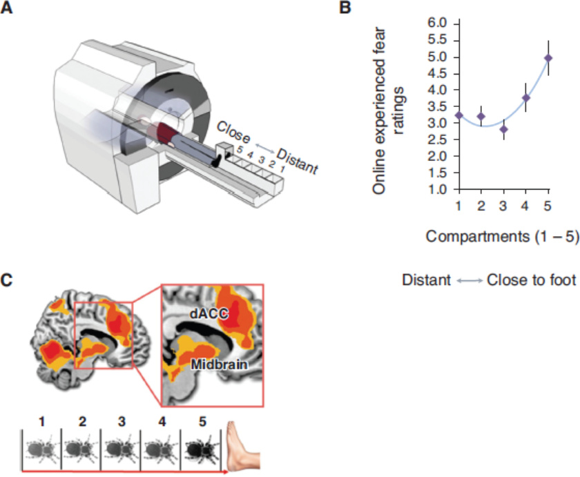
Hình 9.4: Khơi dậy các trạng thái cảm xúc mạnh trong một nghiên cứu fMRI với các kích thích thực tế. Trong nghiên cứu này, đối tượng được đặt vào máy quét fMRI (A) trong khi họ thấy bàn chân của mình nằm trong một ô. Một khay chứa các ô liền kề được bố trí sao cho một số ô gần hoặc xa bàn chân hơn, như hiển hiện trong hình. Sau đó người thí nghiệm đặt một con tarantula vào một trong các ô và đo kích hoạt não được tạo ra bằng fMRI. (B) Như người ta mong đợi, các đánh giá về sợ hãi được mong đợi và thực sự trải qua tăng lên khi con tarantula càng gần bàn chân, như được chứng minh từ các đánh giá số mà đối tượng cung cấp bằng một hộp nút bên trong máy quét. (C) Con tarantula càng gần bàn chân thì kích hoạt trong một mạng lưới các cấu trúc não càng lớn. Đáng chú ý, các cấu trúc não này bao gồm các vùng đã được cho là mã hóa chiều cận kề của đe dọa trong các nghiên cứu khác, như vỏ não đai trước lưng (dACC, còn gọi là vỏ não đai trước giữa) cũng như hạch hạnh nhân và nhân giường của sợi dải cuối (không hiển thị). Tái hiện với sự cho phép từ Mobbs và cộng sự 2010.

Hình 9.5: Sự cận kề của đe dọa kích hoạt các vùng não cụ thể. Trong nghiên cứu fMRI này, đối tượng chơi một trò chơi máy tính trong đó họ phải cố thoát khỏi một động vật săn mồi nhân tạo. Động vật săn mồi được vẽ bằng một hình tròn đỏ trong trò chơi, và đối tượng hiển hiện như một tam giác xanh trong trò chơi. Khi động vật săn mồi rong ruổi trên bàn game, đối tượng phải di chuyển một cần điều khiển để cố thoát khỏi nó. Khi động vật săn mồi bắt được đối tượng trong trò chơi máy tính, điều này có một hậu quả thật: họ bị giật điện đau. Nghiên cứu vì vậy đã khéo léo kết hợp khía cạnh lượng hóa của việc đo sự cận kề của đe dọa (được tham số hóa thành khoảng cách trong trò chơi) với tính hợp lệ của một hành vi được đo và một hậu quả thật (giật điện), tất cả trong các ràng buộc của những gì có thể làm được trong fMRI (như không thực sự di chuyển). Trong khi đe dọa xa hơn kích hoạt vỏ não trước trán (màu cam trong sơ đồ não bên phải), được cho là thực hiện việc hoạch định và giám sát, đe dọa gần hơn kích hoạt chất xám quanh ống dẫn nước (màu xanh lục trong sơ đồ não bên phải), được cho là thực hiện các phản ứng phòng vệ tức thời. Tái hiện với sự cho phép từ Mobbs và cộng sự 2007.
Trong một nghiên cứu khác của một số nhà nghiên cứu trong cùng nhóm, các cú giật điện được dùng cùng với một trò thoát thân mà đối tượng chơi trong máy quét (Mobbs và cộng sự 2007). Điều này có thể không có vẻ hợp lệ sinh thái bằng việc có một con tarantula sống, nhưng nó vẫn là một mô hình hợp lệ hoàn toàn, vì có các hậu quả phản cảm thật (giật điện thật nếu một động vật săn mồi ảo bắt được bạn trong trò chơi), và vì chơi trò chơi để nhận phần thưởng hay tránh trừng phạt là điều con người thường làm trong thế giới thực. Thực ra, nghiên cứu này có tính hợp lệ tốt hơn nghiên cứu tarantula vì chúng ta có hành vi thực từ các đối tượng khi họ chơi trò chơi — chúng ta có thể gắn trực tiếp trạng thái cảm xúc của họ với các hành vi né tránh mà họ biểu hiện trong trò chơi. Trong nghiên cứu này, các nhà nghiên cứu thấy rằng sự cận kề của đe dọa từ cú giật điện dẫn đến một chuyển mạch trong kích hoạt các hệ não, từ những hệ nổi bật liên quan vỏ não trước trán (tương quan nhiều hơn với mong đợi và hoạch định liên quan đến đe dọa) sang những hệ nổi bật liên quan chất xám quanh ống dẫn nước (tương quan nhiều hơn với phản ứng tức thời
với đe dọa) (hình 9.5). Một lần nữa, nghiên cứu này có một thiết kế nắm bắt được chiều kích sinh thái của sự cận kề đe dọa, và liên hệ nó với các trạng thái cảm xúc trong não (xem hộp 2.3).
Tách Rời Các Trạng Thái Cảm Xúc Khỏi Khái Niệm Và Trải Nghiệm
Các nghiên cứu kiểu này có vẻ như có thể bắt đầu cho chúng ta thấy các tương quan thần kinh của các trạng thái cảm xúc ở người — và quả thật một số cấu trúc não mà người ta sẽ đã giả thuyết trên cơ sở các nghiên cứu ở động vật đang vào cuộc. Mặt khác, cũng như với những băn khoăn của chúng ta về việc tách riêng trải nghiệm có ý thức của cảm xúc, ở đây cũng sẽ có sự nhiễm với các thành tố cảm xúc khác.
Dĩ nhiên, sẽ luôn có sự nhiễm với nhiều thành tố khác ở một người trong một lần thử đơn lẻ, vì não cần nhận thức các kích thích, nhớ các chỉ dẫn nhiệm vụ, và chú ý đến nhiệm vụ; do đó, các hệ thống cảm nhận, trí nhớ, và chú ý trong não cũng sẽ được tham gia. Các trạng thái cảm xúc không thể xảy ra một cách cô lập. Logic của một nghiên cứu fMRI là thao túng thí nghiệm chỉ riêng cảm xúc. Cảm nhận, trí nhớ, và chú ý sẽ giữ khá ổn định qua các lần thử, nhưng nếu chúng ta sắp đặt như vậy, cường độ, hay loại, của cảm xúc sẽ biến thiên theo cách mà chúng ta có thể nắm bắt bằng một tham số trong mô hình, cho phép chúng ta điều tra cách kích hoạt não thay đổi khi trạng thái cảm xúc thay đổi qua nhiều lần thử.
Mối bận tâm thực sự về các yếu tố lẫn là thế này: liệu có điều gì đó có thể tương quan một cách hệ thống với cảm xúc, để mà, ngay cả qua các lần thử và các đối tượng, bất cứ khi nào một trạng thái cảm xúc biến thiên thì các yếu tố bổ sung này cũng vậy? Nếu đúng như vậy, điều đó sẽ khiến chúng ta không thể rút ra kết luận chỉ về trạng thái cảm xúc, vì các yếu tố cùng biến thiên đó có thể lý giải các kích hoạt não mà chúng ta quan sát trong nghiên cứu.
Đây là một câu hỏi khó trả lời, vì hầu hết các phép đo độc lập (không phải fMRI) của chúng ta về một trạng thái cảm xúc ở người thực ra bị lẫn với các yếu tố khác. Đáng chú ý, hành vi thường là một chỉ báo không chỉ của trạng thái cảm xúc mà còn của trải nghiệm có ý thức về cảm xúc (nhưng xem hộp 10.1). Tương tự, các đánh giá chủ quan có vẻ theo dõi cả trải nghiệm có ý thức về cảm xúc lẫn trạng thái cảm xúc — và quả thật
khái niệm về cảm xúc (vì người ta cần đặt các cảm giác của mình vào các khái niệm và các từ). Có vẻ như bất cứ khi nào chúng ta khơi dậy một trạng thái cảm xúc mạnh ở người, họ có ý thức trải nghiệm nó, và do đó họ bắt đầu nghĩ về nó — não của họ bắt đầu biểu diễn tất cả các ký ức, liên tưởng, và từ đi kèm cảm xúc cụ thể đó. Nói một cách thẳng thắn: giả sử có một vùng não để biểu diễn chỉ riêng từ “sợ hãi”. Vậy thì, mỗi lần bạn thực sự khơi dậy một trạng thái sợ hãi ở đối tượng, họ sẽ có ý thức biết rằng họ đang trong trạng thái sợ hãi, và họ sẽ có lẽ tự động nghĩ đến từ “sợ hãi” và kích hoạt vùng này, nhiều hơn hay ít hơn tùy mức họ nghĩ về sợ hãi, điều này có thể tương quan với cường độ của trạng thái sợ hãi. Vậy nghiên cứu fMRI của bạn sẽ thấy rằng vùng này, vốn chỉ tham gia các biểu diễn từ vựng, theo dõi cường độ của trạng thái sợ hãi và bị lẫn với các cơ chế thần kinh thực sự cho sợ hãi. Một lần nữa, phần lớn vấn đề bắt nguồn từ việc suy ra nhân quả từ tương quan (xem chương 4).
Đáng chú ý là các cấu trúc tương đồng của các khía cạnh khác nhau của cảm xúc lại giống nhau một cách đáng kinh ngạc. Nếu bạn yêu cầu người ta đánh giá mức tương đồng của các biểu cảm khuôn mặt của cảm xúc, của các từ chỉ cảm xúc, của các tình huống thuộc về cảm xúc, hay của các trải nghiệm thuộc về cảm xúc của chính họ, tất cả đều cho thấy cùng cấu trúc tương đồng. Hơn nữa, các kích hoạt não tương ứng cũng vậy. Công trình của nhà thần kinh học người Phần Lan Lauri Nummenmaa đã ghi nhận sự tương ứng này (hình 9.6). Hiển nhiên có một quan hệ chặt chẽ giữa không gian tương đồng mà trong đó chúng ta có thể ánh xạ các trạng thái cảm xúc, các trải nghiệm cảm xúc, và các khái niệm cảm xúc. Có lẽ điều này không mấy ngạc nhiên, vì xét đến cùng chúng ta đang dùng các khái niệm để nói về tất cả những thứ này.

Hình 9.6: Các sự tương đồng giữa cấu trúc của các khía cạnh cảm xúc khác nhau. Theo chiều kim đồng hồ từ trên xuống: các ma trận tương đồng suy ra từ một phân tích mẫu của các kích hoạt BOLD-fMRI trong các trải nghiệm cảm xúc; các đánh giá của người quan sát về các cảm xúc khuôn mặt; các đánh giá tương đồng theo cặp trực tiếp về các trải nghiệm chủ quan của người; tương đồng Euclid của các hồ sơ cường độ của các đánh giá cảm xúc rời rạc cho các tường thuật ngắn; và một phân tích biệt định tuyến tính của các bản đồ cơ thể của cảm xúc (giống như hiển hiện trong hình 2.2). Các đường ở giữa hình cho biết tương quan Spearman giữa các ma trận tương đồng khác nhau (thước tỷ lệ lớn ở dưới cùng). Tất cả các ma trận có cùng các trục, và trục x giống trục y. Chỉnh sửa từ Nummenmaa và Saarimäki 2017 với sự cho phép của Lauri Nummenmaa.
Khả năng của chúng ta trong việc gỡ rối các khía cạnh khác nhau của cảm xúc không khó đến mức bạn có thể nghĩ, ít nhất vì ba lý do. Thứ nhất, chúng ta thực ra có thể, ít nhất đến một mức nào đó, khử tương quan hay cực tiểu hóa những điều mà người ta nghĩ
hay có ý thức trải nghiệm khi họ ở trong một trạng thái sợ hãi. Mặc dù các trạng thái cảm xúc và các trải nghiệm có ý thức về cảm xúc tương quan mạnh với nhau, chúng không tương quan hoàn hảo. Một cách gỡ rối chúng bằng fMRI đã được thăm dò trong trường hợp đau đớn. Trong một nghiên cứu gần đây của Tor Wager và các đồng nghiệp tại Đại học Colorado (Woo và cộng sự 2017), đối tượng được trình các mức đau khác nhau (các kích thích có nhiệt độ nóng). Ba thứ được đo: nhiệt độ khách quan của kích thích, kích hoạt não được tạo ra, và các đánh giá chủ quan về đau do đối tượng đưa ra. Các đánh giá đau tương quan cao với nhiệt độ: kích thích càng nóng, đánh giá đau càng cao. Nhưng chúng không tương quan hoàn hảo — ở bất kỳ lần thử nào, cùng một nhiệt độ có thể được cảm nhận là đau hơn một chút hay ít hơn một chút. Các nhà nghiên cứu lấy tính biến động dư này, cũng như tính biến động dư từ các kích hoạt não ở các vùng vốn được biết trước mã hóa các đặc tính cảm nhận đau của đau đớn, và hỏi còn lại gì. Phương sai dư nào trong các đánh giá có thể được lý giải bởi kích hoạt ở các vùng não khác?
Một phân tích đa biến nhạy đã được dùng, huấn luyện một thuật toán học máy trên mẫu kích hoạt theo từng voxel còn lại sau khi tín hiệu cảm nhận đau đã được hồi quy loại bỏ. Theo một nghĩa, điều này tương ứng với tất cả hoạt động nhận thức khác, không tương quan trực tiếp với cường độ kích thích, nhưng tương quan với các đánh giá đau. Họ quả thật thấy rằng có một mạng lưới các vùng não khác dự đoán được cảm giác đau dư này: vỏ não trước trán trung-thất và lưng-trung vị, và đảo não, trong số các vùng khác. Họ một cách thận trọng gọi đây là “chữ ký đau độc lập với cường độ kích thích”, nhưng nó có thể là (một phần) một phép đo của trải nghiệm có ý thức về đau, độc lập với các đặc tính phân biệt cảm nhận đau của nó. Áp dụng một cách tiếp cận tương tự vào nghiên cứu cảm xúc có thể giúp chúng ta tách các cơ chất thần kinh của trạng thái cảm xúc khỏi các cơ chất thần kinh của trải nghiệm có ý thức về cảm xúc. Dĩ nhiên, cách tiếp cận này vẫn còn những lưu ý; chẳng hạn, nếu tôi bị run tay khi đưa các đánh giá, phương sai dư trong các đánh giá đau sẽ không phản ánh trải nghiệm có ý thức về đau, mà là run vận động. Dù vậy, tập các vùng não được tìm thấy có thể cho chúng ta thêm manh mối (vỏ não vận động không xuất hiện trong nghiên cứu, nên run rẩy không phải là một lý giải khả dĩ).
Một lý do thứ hai khiến việc gỡ rối các trạng thái cảm xúc, các trải nghiệm cảm xúc, và việc nghĩ về các khái niệm cảm xúc nên là khả dĩ quay lại
nghiên cứu của Damasio mà trong đó kích hoạt não cho các trải nghiệm cảm xúc được hồi tưởng tự truyện đã được điều tra bằng PET. Nghiên cứu đó, giống các nghiên cứu khác mà chúng tôi đã mô tả ở đây, có lẽ đã chụp ảnh không chỉ các trải nghiệm cảm xúc mà cả các trạng thái cảm xúc và các khái niệm cảm xúc. Nhưng quy trình thí nghiệm cụ thể có lẽ đã nhấn mạnh trải nghiệm có ý thức về cảm xúc hơn các khía cạnh khác của cảm xúc. Ngược lại, thí nghiệm hiển hiện trong hình 9.5 có lẽ đã nhấn mạnh trạng thái cảm xúc hơn các khía cạnh khác của cảm xúc. Và ngược lại nữa, thí nghiệm hiển hiện trong hình 9.3 có lẽ đã nhấn mạnh các khái niệm cảm xúc hơn các khía cạnh khác của cảm xúc. Vậy, mặc dù từng thí nghiệm riêng lẻ có thể luôn liên quan nhiều thành tố của cảm xúc, chúng làm điều đó một cách khác biệt. Nếu các thí nghiệm được mô tả cẩn thận, và nếu dữ liệu từ chúng được mở cho các nghiên cứu phân tích tổng hợp thêm, thì chúng ta sẽ có thể thực hiện các so sánh qua các bộ sưu tập các nghiên cứu chụp ảnh não này. Một số nghiên cứu sẽ nhấn mạnh các trải nghiệm cảm xúc, một số sẽ nhấn mạnh các trạng thái cảm xúc, và một số sẽ nhấn mạnh các khái niệm cảm xúc. Với sự cẩn trọng, và với số lượng đủ lớn các nghiên cứu như vậy, quả thật sẽ có thể tách những kích hoạt thần kinh là các tương quan độc quyền của mỗi khía cạnh trong ba khía cạnh của một cảm xúc. Đây có thể là con đường của tương lai trong các nghiên cứu chụp ảnh não về cảm xúc, nhưng nó đòi hỏi các nghiên cứu khác nhau dùng các chuẩn có thể so sánh cho các kích thích, nhiệm vụ, lựa chọn đối tượng, và các phương pháp fMRI; rằng họ mô tả phương pháp của mình rất kỹ lưỡng; và rằng họ sau đó công khai chia sẻ tất cả dữ liệu để nó có thể được tổng hợp và phân tích thêm.
Có một lý do thứ ba để lạc quan về khả năng của chúng ta trong việc phân biệt các khía cạnh khác nhau của xử lý cảm xúc trong não. Điều này đưa chúng ta trở lại những lưu ý mà chúng ta đã mở đầu chương 8: xét đến cùng, rõ ràng chúng ta không thể điều tra cảm xúc chỉ dùng fMRI và chỉ ở người. Chúng ta cần bổ sung nó bằng các phương pháp khác fMRI ở người, và bằng các thí nghiệm ở động vật. Ít nhất, các điều tra ở các loài động vật có thể cho chúng ta biết phải nhìn vào đâu; có thể có các thay đổi ở nhiều phần của não mà việc xác định rõ ràng liệu vùng này có đóng góp vào việc xử lý cảm xúc hay chỉ đơn giản là điều gì đó do cảm xúc gây ra là điều khó khăn. Nhưng có thể có các phần khác của não mà chúng ta có một giả thuyết tiên nghiệm, vì chúng ta có bằng chứng mạnh từ các phương pháp khác và các loài khác, lý tưởng là bằng chứng thuộc loại nhân quả. Nếu chúng ta có bằng chứng nhân quả mạnh
rằng một số phần nhất định của vùng dưới đồi, hay của chất xám quanh ống dẫn nước, là một phần của cơ chế cho một trạng thái cảm xúc ở chuột, chuột cống, và khỉ, thì việc tìm thấy các kích hoạt như vậy ở người sẽ làm chúng ta yên tâm rằng chúng ta đang khơi dậy một trạng thái cảm xúc (mặc dù không chứng minh điều đó, vì điều này quả thật dùng suy luận ngược). Ngược lại, nếu chúng ta tìm thấy một số kích hoạt trong một nghiên cứu ở người mà không có đối ứng trong bất kỳ nghiên cứu động vật nào, điều này có thể phản ánh các khía cạnh khái niệm không hiện diện trong các nghiên cứu ở động vật. Xét đến cùng, chỉ một khoa học toàn diện như vậy mới có thể khám phá cơ sở sinh học thần kinh của các cảm xúc. Nếu chúng ta bắt đầu kết hợp một số phương pháp nhân quả từ các chương 5–7 với các kỹ thuật như fMRI được bàn trong chương này và chương trước, có thể hình dung các thí nghiệm tương lai có thể bắt đầu đưa ra những câu trả lời dứt khoát hơn nhiều. Chúng ta sẽ kết thúc cuốn sách này bằng việc phác họa một số thí nghiệm tương lai đó, trong chương 11. Nhưng trước khi kết thúc cuốn sách, chúng ta dành thêm một chút thời gian bàn về một số quan điểm khác về cảm xúc, và thêm một chút thời gian bàn về khía cạnh nổi bật nhất của cảm xúc trong văn liệu về con người: các cảm giác.
Tóm Tắt
- Các nghiên cứu fMRI đòi hỏi so sánh cẩn thận giữa các điều kiện được khớp tốt, và đặt ra những ràng buộc khắc nghiệt, như yêu cầu các tham gia không di chuyển trong khi nằm ngang trong máy quét fMRI. Điều này đặt câu hỏi về tính hợp lệ sinh thái của các nghiên cứu fMRI về cảm xúc.
- Quy gán cảm xúc cho người khác liên quan một mạng lưới các vùng chủ yếu thuộc vỏ não, như vỏ não trước trán lưng-trung vị.
- Trải nghiệm có ý thức các cảm xúc kích hoạt các cấu trúc biểu diễn các trạng thái của cơ thể chính mình, như đảo não.
- Các trạng thái cảm xúc trung ương, cho đến nay hiếm khi được nghiên cứu ở người, liên quan vỏ não trước trán trung-thất, chất xám quanh ống dẫn nước, và hạch hạnh nhân.
- Mặc dù rất khó gỡ rối các khía cạnh khác nhau của xử lý cảm xúc, như thực sự có một cảm xúc, có ý thức trải nghiệm cảm xúc, và nghĩ về cảm xúc, điều này có thể được thực hiện nếu chúng ta so sánh kết quả qua nhiều loại nghiên cứu. Đáng chú ý, chúng ta nên so sánh các nghiên cứu về cảm xúc ở người và ở động vật.
Phần III — Những Câu Hỏi Còn Mở
Chương 10 — Các Lý Thuyết Về Cảm Xúc Và Cảm Giác
Chương 10 — Các Lý Thuyết Về Cảm Xúc Và Cảm Giác
Có rất nhiều lý thuyết về trải nghiệm cảm xúc (xem Shackman và cộng sự 2018). Nhiều lý thuyết trong số đó bắt nguồn từ tâm lý học chứ không phải từ thần kinh học. Phần lớn trong chúng tập trung vào các cảm giác — trải nghiệm có ý thức về các cảm xúc. Mặc dù cuốn sách này không nói về trải nghiệm có ý thức của cảm xúc, mà về thần kinh học của các trạng thái cảm xúc, chúng tôi vẫn đưa ra một cuộc khảo sát tổng quan về các lý thuyết cảm xúc khác trong chương này. Chúng tôi có bàn về việc các lý thuyết đó liên hệ ra sao với khung của chính mình, nhưng cần lưu ý rằng bản thân chúng tôi chưa hề đề xuất bất cứ một lý thuyết cảm xúc chi tiết nào.
Thật vậy, nhìn chung chúng tôi cảm thấy sẽ là quá sớm nếu có những lý thuyết cảm xúc rất chi tiết, ít nhất là xét về phương diện sinh học thần kinh, bởi vì những nghiên cứu cần thiết để làm nền tảng cho các lý thuyết như vậy mới chỉ bắt đầu. Cũng có khả năng là những khía cạnh khác nhau của cảm xúc có thể đòi hỏi những lý thuyết khác nhau để làm trọn vẹn công việc của chúng, nên rằng tuy một khung tổng thể để suy nghĩ về cảm xúc, và một bộ thuật ngữ được thống nhất, đều là điều cần thiết, một "lý thuyết về cảm xúc" toàn cục bao quát mọi thứ có thể không hữu ích mấy cho việc thực sự hình thành các giả thuyết. Là những nhà sinh vật học, chúng tôi có quan điểm tương tự về các lý thuyết toàn cục về nhận thức: bộ não là sản phẩm của hàng triệu năm tiến hóa phức tạp và thường mang tính cá biệt, chứ không phải một thiết kế hùng vĩ duy nhất. Có lẽ thận trọng nhất là điều tra cách chúng hoạt động một cách cục bộ hơn, trong các hệ thống cụ thể và cho các chủ đề cụ thể, rồi sau đó trừu tượng hóa những nguyên lý cơ bản mang tính mô tả nhiều hơn là những "lý thuyết" hoàn chỉnh về cách bộ não hoạt động. Đây cũng chính là tinh thần mà chúng tôi viết cuốn sách này — phác thảo một con đường để các nhà khoa học điều tra một chủ đề phức tạp đến khó tin, chứ không phải đưa ra một "lý thuyết" tự nhận biết được bộ não được cấu tạo thế nào và hoạt động ra sao.
Bất chấp những lưu ý nhanh chóng này về phạm vi, và theo quan điểm của chúng tôi, về giới hạn của những gì các lý thuyết cảm xúc có thể mang lại ở giai đoạn hiện tại của
kiến thức của chúng ta về tâm trí và não bộ, chúng tôi sẽ khảo sát ngắn gọn một số lý thuyết cảm xúc trong văn liệu hiện đại và đối chiếu chúng với khung của mình. Đây sẽ là một điểm đối trọng hữu ích cho tất cả các chương trước và sẽ cho chúng ta biết phạm vi các giả thuyết hiện có. Ngay từ đầu, cần đặc biệt lưu ý rằng những bất đồng bề nổi giữa khung của chúng tôi và các lý thuyết khác thường không bắt nguồn từ những bất đồng thực sự, mà từ các khác biệt về chủ đề hay thuật ngữ. Chẳng hạn, nhiều cuộc tranh luận trong lý thuyết cảm xúc xoay quanh không phải nhiều về cách chúng ta nên nghĩ về "cảm xúc" mà là về các cảm xúc cụ thể, như sợ hãi, giận dữ, và v.v. Nghĩa là, nhiều cuộc tranh luận là về phân loại học của cảm xúc — một chủ đề mà chúng tôi phần lớn đã né tránh trong cuốn sách này — chứ không phải về bản thân cảm xúc (hình 1.4).
Cấu Trúc Của Cảm Xúc (Affect)
Người thường cũng như nhà tâm lý học đều có xu hướng tập trung vào trải nghiệm có ý thức chủ quan của cảm xúc, thứ mà các nhà tâm lý học thường gọi là affect (cảm xúc) hay feelings (các cảm giác). Các cảm giác, dĩ nhiên, đề cập đến một phạm vi rộng hơn nhiều của các trải nghiệm có ý thức chứ không chỉ các trải nghiệm về cảm xúc (ví dụ, tôi có thể cảm thấy mệt, khát, hoặc ngứa). Thuật ngữ feelings nhấn mạnh các trải nghiệm có ý thức về điều gì đó đang xảy ra trong chính cơ thể mình, và những loại trải nghiệm có ý thức cảm nhận nội tạng này thường được phân biệt với các trải nghiệm tri giác khác, hoặc với các trải nghiệm "thuộc nhận thức" (thứ mà chúng ta thường gọi là tư duy). Vì tất cả các hiện tượng này thường cùng xảy ra khi một người có các trải nghiệm cảm xúc, sẽ hữu ích nếu đưa ra một sơ đồ phân loại nào đó.
Ở mức cơ bản nhất, bạn có thể có ý thức (ví dụ, một người trưởng thành khỏe mạnh, đang thức, điển hình) hoặc vô thức (ví dụ, một bệnh nhân hôn mê). Nếu bạn có ý thức, câu hỏi tiếp theo là bạn có ý thức về cái gì; tức là, nội dung của trải nghiệm có ý thức là gì. Chúng tôi cho rằng có ba phạm trù rộng của nội dung có ý thức: thuộc thể (về những điều đang xảy ra trong cơ thể bạn), tri giác (về những điều đang xảy ra ở thế giới bên ngoài), và thuộc nhận thức (về những điều đang xảy ra trong tâm trí bạn). Một số lý thuyết lập luận rằng mọi thứ đều nằm trong tâm trí bạn, hoặc trong cơ thể bạn, nhưng hiện tại
chúng ta chỉ lấy các phạm trù rộng này làm điểm khởi đầu để mô tả các trải nghiệm có ý thức của bạn.
Quan điểm thô sơ của chúng tôi là một trải nghiệm có ý thức về cảm xúc đòi hỏi những điều sau đây. Thứ nhất, bạn cần có ý thức (không ở trong hôn mê); điều này áp dụng cho cả người và động vật. Thứ hai, bạn cần có một ít nội dung thuộc thể trong trải nghiệm có ý thức của mình (cảm xúc cảm thấy ra sao trong cơ thể bạn); điều này cũng áp dụng cho cả người và động vật. Thứ ba, bạn cần có một ít nội dung thuộc nhận thức trong trải nghiệm có ý thức của mình (ví dụ, một thành tố động lực, như cảm giác rằng bạn cần bỏ chạy khỏi một mối đe dọa); điều này cũng áp dụng cho cả người và động vật. Lưu ý rằng con người, thêm vào đó, còn có kiến thức siêu nhận thức về tất cả các thành tố này (nếu họ chiêm nghiệm về chúng); chúng ta biết rằng mình không ở trong hôn mê, rằng chúng ta đang cảm nhận cơ thể mình, và rằng những điều nhất định đang diễn ra trong tâm trí chúng ta.
Một trải nghiệm có ý thức điển hình của con người về một cảm xúc khi đó đòi hỏi (1) rằng bạn đang thức và có ý thức (mức ý thức), và (2) rằng bạn có ý thức về nhiều điều, như các cảm giác trong cơ thể bạn, một thôi thúc muốn hành xử theo những cách nhất định, và một số niềm tin về chính mình. Một khác biệt có thể có giữa người và động vật là nhiều trường hợp cảm giác của con người được gây ra bởi suy nghĩ về những gì có thể xảy ra trong tương lai, hay hoài niệm về những gì đã xảy ra trong quá khứ, chứ không phải về các kích thích hiện tại. Điều này phản ánh ở hai khác biệt giữa người và động vật. Một là, nội dung tri giác (ví dụ, nhìn thấy một con hổ), theo chúng tôi, là một thành tố cần thiết của trải nghiệm có ý thức về một cảm xúc ở động vật, ít nhất là tại thời điểm cảm xúc được gây ra. Nghĩa là, động vật đòi hỏi tri giác về một tình huống nào đó để khơi một cảm xúc. Con người có thể có hoặc không có một tình huống thực khơi một cảm xúc — họ cũng có thể tự tạo cảm xúc chỉ bằng cách nghĩ về điều gì đó hoặc tưởng tượng điều gì đó. Khả năng cao là tính linh hoạt bổ sung này về cách cảm xúc có thể được gây ra ở con người cũng góp phần làm tăng nguy cơ rằng có điều gì trục trặc trong cách cảm xúc được gây ra, như xảy ra trong các bệnh tâm thần như trầm cảm và lo âu (xem hộp 2.2). Một khác biệt nữa là về nội dung thuộc nhận thức, nơi con người thường liên hệ các cảm xúc với chính mình hoặc với các niềm tin mà họ giữ về cảm xúc đó.
Trong khi các trải nghiệm của con người về cảm xúc rõ ràng rất giàu nội dung, phần lớn các lý thuyết tâm lý học về cảm xúc đề xuất rằng các trải nghiệm có ý thức về cảm xúc thể hiện một tính chiều lõi đơn giản hơn nằm bên dưới
của tính tích cực–tiêu cực và sự hưng phấn, thường được gọi là "cảm xúc lõi" (core affect) (Feldman Barrett và cộng sự 2007). Đặc biệt, tính tích cực–tiêu cực dường như là một thành tố lõi cần thiết của cách các cảm xúc được trải nghiệm — chúng phải biến thiên trên một chiều dễ chịu/khó chịu. Lưu ý rằng tính tích cực–tiêu cực cũng là một thuộc tính cảm xúc mà chúng tôi đã liệt kê trước đó trong hình 3.2. Ở đó, chúng tôi đã ghi chú rằng "tính tích cực–tiêu cực" trong tâm lý học là một chiều thiết yếu của cấu trúc trải nghiệm có ý thức về cảm xúc, được đo bằng cách yêu cầu người ta đánh giá mức dễ chịu hay khó chịu mà họ cảm nhận được. Tuy nhiên, nghĩa của "tính tích cực–tiêu cực" này khác biệt với nghĩa mà chúng tôi dùng trong hình 3.2, nơi chúng tôi ý định nó đề cập rộng hơn đến một khía cạnh của trạng thái cảm xúc — cụ thể là khía cạnh xác định xem trạng thái cảm xúc có hướng đến việc thoát khỏi thứ gì có hại hay tiến gần thứ gì có lợi. Nghĩa là, khái niệm "tính tích cực–tiêu cực" đối với một trạng thái cảm xúc (như trong hình 3.2) đề cập đến một khía cạnh động lực, hành vi, và chức năng của tiếp cận/rút lui, trong khi khái niệm "tính tích cực–tiêu cực" thường dùng trong các lý thuyết tâm lý học về trải nghiệm cảm xúc đề cập đến một chiều của trải nghiệm có ý thức mà người ta có thể đánh giá. Hai nghĩa của "tính tích cực–tiêu cực" này, dĩ nhiên, liên hệ chặt chẽ với nhau và thường tương quan cao — nhưng chúng vẫn là hai thứ phân biệt. Đây là một câu hỏi mở quan trọng liệu hai nghĩa này của "tính tích cực–tiêu cực" có thể được đảm nhận bởi các cơ chế thần kinh phân biệt hay không.
Vậy, đối với nghĩa tâm lý học của "tính tích cực–tiêu cực" như là chiều của mức dễ chịu hay khó chịu được trải nghiệm trong các cảm giác của chúng ta, về cơ bản mọi trải nghiệm hằng ngày đều có loại tính tích cực–tiêu cực này. Chúng ta có thể hỏi bất cứ lúc nào rằng một người cảm thấy dễ chịu hay khó chịu thế nào tại khoảnh khắc này, ngay cả khi không có cảm xúc. Sự đánh giá rộng này về một chiều tính tích cực–tiêu cực được trải nghiệm được thể hiện trong hình 10.1.
Phần lớn các lý thuyết tâm lý học về trải nghiệm cảm xúc còn giả định thêm rằng, tuy sự hưng phấn và tính tích cực–tiêu cực là những thành tố lõi cần thiết của một cảm xúc, tự thân chúng không đủ. Một lý do là chúng quá hiện diện khắp nơi. Chẳng hạn, sự hưng phấn có thể biến thiên mà không có sự thay đổi trong trạng thái cảm xúc khi tôi chạy chậm hay nhanh (xem chương 5). Phần lớn điều tương tự cũng đúng với tính tích cực–tiêu cực. Một mùi hay một cái chạm hay một vị có thể mang một tính tích cực–tiêu cực mạnh mà không nhất thiết gây ra bất cứ trạng thái cảm xúc nào. Vì vậy, "cảm xúc lõi" — chiều hưng phấn/tích cực–tiêu cực nằm bên dưới của trải nghiệm cảm xúc mà nhiều lý thuyết tâm lý học đề xuất — được xem là cung cấp một loại giàn giáo, một "lõi", mà
thường cần thêm các thành tố nữa vào đó để tạo nên một trải nghiệm cảm xúc.
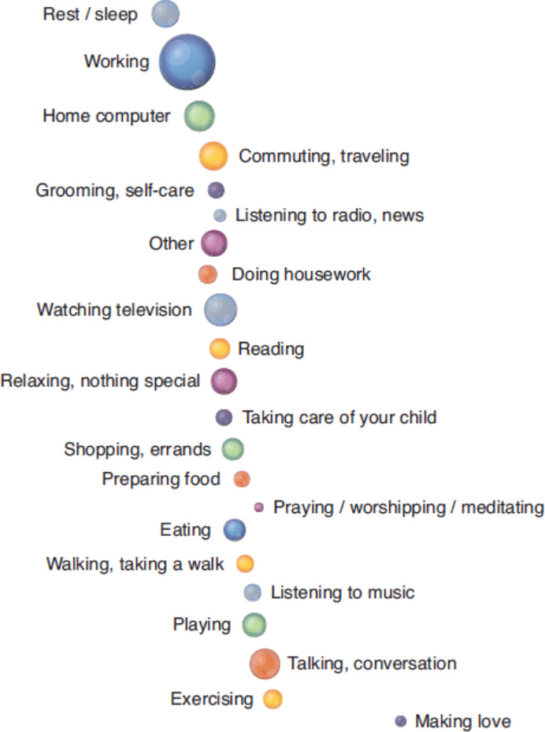
Hình 10.1: Các cảm giác trong đời sống hằng ngày. Dữ liệu từ việc lấy mẫu trải nghiệm trong suốt cuộc sống hằng ngày của mọi người được biểu diễn theo hoạt động (các bong bóng được ghi nhãn), tần suất nó xảy ra (kích thước của bong bóng; bong bóng to hơn cho thấy các hoạt động thường xuyên hơn), và mức dễ chịu của nó (ít dễ chịu nhất bên trái, dễ chịu nhất bên phải). Chỉnh sửa với sự cho phép từ Killingsworth và Gilbert 2010.
Vì vậy, phần lớn các lý thuyết về trải nghiệm cảm xúc có một loại kiến trúc phân tầng. Chúng bắt đầu với thứ được giả định là một nền đá cần thiết cho
các trải nghiệm cảm xúc (như tính tích cực–tiêu cực/sự hưng phấn, một ý niệm về cái tôi, hay cảm nhận nội tạng, tùy vào lý thuyết), rồi sau đó thêm vào các nội dung tinh vi hơn cho trải nghiệm có ý thức (như ý thức về các trạng thái cơ thể, ý thức về các tình huống và kích thích, hay tự nhận thức siêu nhận thức). Một số tầng thấp hơn trong các kiến trúc như vậy được cho là chung cho người và động vật, và một số tầng cao hơn được cho là đặc hữu của con người. Ví dụ, một số lý thuyết đề xuất các biểu diễn tự phản chiếu, hay trí nhớ làm việc, hay ngôn ngữ, như một thành tố đặc hữu của con người mang lại cho các trải nghiệm có ý thức về cảm xúc hương vị đặc biệt mà ta thấy ở người. Những quan điểm này đưa ra một số dự đoán có thể được kiểm nghiệm bằng các nghiên cứu thần kinh học: chúng ta có thể tìm thấy các dấu hiệu thần kinh đáng tin cậy của tính tích cực–tiêu cực trong các nghiên cứu về cảm xúc ở người, nhưng tìm thấy nhiều biến động hơn trong cách các khía cạnh khác của trải nghiệm cảm xúc được biểu diễn trong não.
Các Lý Thuyết Về Cảm Giác
Các Lý Thuyết Cảm Nhận Nội Tạng
Điều này hẳn không cần nói cũng hiểu: cuộc khảo sát của chúng tôi về các lý thuyết cảm xúc của những người khác trong chương này, dĩ nhiên, là cách giải thích của chính chúng tôi về các lý thuyết của họ; bất cứ sai sót nào đều thuộc về chúng tôi. Phần lớn các lý thuyết tâm lý học về cảm xúc là về trải nghiệm cảm xúc nhưng không cung cấp các cơ chế mà nhờ đó trải nghiệm được tạo ra. Một vài ngoại lệ đến từ hai nhà thần kinh học, Bud Craig và Antonio Damasio, những người đã đề xuất các lý thuyết cảm giác có đặc trưng một kiến trúc phân tầng dựa trên cảm nhận nội tạng (sự phát hiện của não về các tín hiệu bên trong của cơ thể), với những cơ chế khá cụ thể được rút ra từ các nghiên cứu thần kinh học. Các lý thuyết này nhấn mạnh vai trò mà các biểu diễn về cơ thể đóng, không chỉ trong các trải nghiệm cảm xúc mà còn toàn cục trong các cảm giác và thậm chí trong mức ý thức. Các lý thuyết này chia sẻ một số điểm chung với ý tưởng của William James rằng tri giác về các trạng thái cơ thể của chính mình dẫn đến các cảm giác cảm xúc. Craig và Damasio đều nhấn mạnh đảo não (hình 8.1), một vỏ não cảm giác lập bản đồ đầu vào từ cơ thể, bao gồm các tín hiệu đau cũng như thông tin tự chủ và nội tạng. Theo Craig, có một biểu diễn về cơ thể — và thực sự là về cả người như một tổng thể — ngày càng được trau chuốt hơn khi đi từ đảo não sau đến đảo não trước (Craig 2002). Đảo não, trong lý thuyết của Craig, do đó biểu diễn,
một cách toàn diện, một người cảm thấy ra sao, bao gồm phần lớn hoặc tất cả các thành tố của một trải nghiệm có ý thức về cảm xúc mà chúng tôi đã liệt kê ở đầu chương này.
Có nhiều con đường từ cơ thể đến não có thể hiện thực hóa tuyến mà William James đã giả thuyết. Một tuyến đã nhận được sự chú ý đáng kể trong nghiên cứu cảm xúc liên quan các sợi hướng tâm từ hệ thần kinh tự chủ, vốn mang thông tin cảm giác cơ thể từ tất cả các tạng đến não, và cuối cùng chuyển tiếp thông tin đến các cấu trúc như vỏ não đai trước và đảo não. Trong khi Craig cho rằng các con đường này đến các vùng vỏ não có thể đủ cho trải nghiệm chủ quan của chúng ta về cảm giác của mình, Damasio nhấn mạnh rằng các cảm giác nảy sinh từ sự điều hòa trạng thái cơ thể phân bố rộng hơn khắp hệ thần kinh, và mà quan trọng là bao gồm cả thân não và não giữa cũng như vỏ não (Damasio 2003; Damasio và Carvalho 2013). Chẳng hạn, một nghiên cứu đã thử một bệnh nhân mà vỏ não đai trước và đảo não bị tổn thương, nhưng vỏ não cảm giác thể chất I của ông còn nguyên vẹn. Bệnh nhân có thể phát hiện các thay đổi trong nhịp tim của chính mình một cách bình thường, điều mà nghiên cứu coi là bằng chứng về cảm nhận nội tạng còn nguyên vẹn và là bằng chứng ít nhất một phần cho lập luận rằng các cảm giác không đòi hỏi vỏ não đai trước và đảo não (Khalsa và cộng sự 2010). Tuy nhiên, các cấu trúc còn nguyên vẹn trong não của bệnh nhân có đủ để tạo ra một trải nghiệm chủ quan bình thường về cảm xúc hay không thì vẫn còn chưa rõ.
Lý thuyết cảm giác của Damasio chỉ ra rằng có nhiều biểu diễn về cơ thể, và nhiều vòng điều hòa tự cân bằng nội môi của các cơ quan nội tạng (thuộc vỏ não và dưới vỏ não). Tất cả những vòng này đều góp phần vào trải nghiệm có ý thức nói chung, và tất cả cũng góp phần vào trải nghiệm có ý thức về cảm xúc. Damasio đã đề xuất rằng một biểu diễn sơ khai về cơ thể của sinh vật được thực hiện ở các tầng đa dạng này và tạo ra không chỉ các cảm giác mà còn một ý niệm cơ bản về cái tôi. Theo lý thuyết này, điều này cung cấp nền tảng cho toàn bộ trải nghiệm có ý thức — một biểu diễn tiên quyết về cái tôi, mà các biểu diễn khác (ví dụ, về các đối tượng và sự kiện trong thế giới) sau đó có thể được quy chiếu vào. Khi chúng ta nói "Tôi đang cảm thấy sợ con hổ," lý thuyết của Damasio sẽ giải cấu trúc điều này như một quan hệ giữa một biểu diễn về cái tôi ("Tôi sợ") bao gồm một biểu diễn toàn diện về trạng thái cơ thể, so với trạng thái tự cân bằng nội môi bình thường của nó, và một biểu diễn về con hổ mà người ta đang nhìn thấy. Theo quan điểm
này, các cảm giác và trải nghiệm có ý thức là hai mặt của cùng một đồng xu, và không thể có các trải nghiệm có ý thức nếu bạn không có các cảm giác và cảm nhận nội tạng (Damasio 1999).
Liên hệ với những gì chúng tôi đã viết trong cuốn sách này, các lý thuyết về trải nghiệm có ý thức của cảm xúc này đưa ra một sự bổ sung trực tiếp và hấp dẫn. Trong khi trạng thái cảm xúc có thể được nghiên cứu trong các mạch thần kinh cụ thể, như những mạch liên quan vùng dưới đồi, hạch hạnh nhân, và các cấu trúc dưới vỏ não khác (chương 6), thì trải nghiệm có ý thức về các trạng thái đó ở người (và, có thể, ở động vật) sẽ đòi hỏi thêm một số thành tố nữa, như các biểu diễn về cái tôi và các biểu diễn về trạng thái của cơ thể.
Lý Thuyết Đánh Giá
Cũng có những lý thuyết tâm lý học có ảnh hưởng về trải nghiệm cảm xúc thể hiện các tầng kiểu như vậy. Một lớp lý thuyết là lý thuyết đánh giá (appraisal theory), có lịch sử dài từ các tác giả sơ khai như Magda Arnold và Richard Lazarus (Lazarus 1991) đến các nhà tâm lý học hiện đại hơn như Klaus Scherer (Scherer 1984; 2009). Ý tưởng đằng sau các lý thuyết đánh giá là có một chuỗi các đánh giá về một kích thích hay tình huống mà tiến dần tạo ra các quyết định phức tạp hơn. Một số khía cạnh của điều này gợi nhớ đến cuộc thảo luận của chúng tôi về các mô hình khuếch tán-trôi dạt: có sự tích lũy thông tin theo thời gian, dẫn đến một số quyết định phân biệt. Chúng tôi cũng gặp gỡ vắn tắt lý thuyết đánh giá trong chương trước, nơi chúng tôi mô tả thí nghiệm điều tra các không gian tương đồng khái niệm mà nhờ đó người ta biểu diễn các tình huống cảm xúc (hình 9.3). Ở đó, chúng ta thấy rằng các thành tố mà lý thuyết đánh giá đề xuất thực ra có vẻ khớp khá tốt với cách người ta quy gán cảm xúc cho các tình huống, từ dữ liệu chụp ảnh não của họ. Có lẽ điều này không đáng ngạc nhiên; nó chỉ cho thấy rằng các nhà tâm lý học đã nghĩ ra lý thuyết đánh giá khá nắm được cách chính họ quy gán cảm xúc một cách trực giác.
Mặc dù các lý thuyết đánh giá thường được trình bày như là về các trải nghiệm có ý thức của cảm xúc, chúng có một tính chất chức năng mạnh mẽ và có thể dễ dàng được áp dụng cho các trạng thái cảm xúc, mà không nhất thiết cần nói bất cứ điều gì về các cảm giác. Công trình của Richard Lazarus (Lazarus 1991),
ví dụ, đề xuất một số mô-đun chức năng cụ thể, được cụ thể hóa thành các thứ gọi là "chủ đề quan hệ lõi," mô tả các thách thức thích nghi mà một sinh vật sẽ đối mặt, và các bước chức năng mà nó cần thực hiện để đối phó với thách thức đó. Tuy tập trung nhiều vào con người và vào trải nghiệm cảm xúc của con người, lý thuyết đánh giá, xét đến cùng, là một lý thuyết chức năng luận.
Nhà tâm lý học Klaus Scherer đã cung cấp một lý thuyết rất chi tiết về cách các tình huống được đánh giá xét theo ý nghĩa thích nghi của chúng, và xét theo khả năng của người đó để đối phó với bất cứ thách thức nào mà tình huống đưa ra. Theo lý thuyết của Scherer, một cảm xúc triển khai trong khoảng từ mili-giây đến giây khi chúng ta tiến từ việc phát hiện tính liên quan của một sự kiện, đến việc đánh giá hàm ý của nó, khả năng của chúng ta đối phó với nó, và ý nghĩa chuẩn mực của nó. Như vậy, những cái này tương ứng với các tầng xử lý ngày càng được trau chuốt hơn theo thời gian, khi các loại thông tin nữa được cân nhắc. Chúng bao gồm nhiều khía cạnh của một cảm xúc mà tất cả đều cần được phối hợp, trải từ phản ứng tự chủ đến biểu hiện vận động và các cảm giác (Scherer 2009).
Lý thuyết đánh giá mà Scherer và các đồng nghiệp đề xuất được gọi là "mô hình tiến trình thành tố," và như tên gọi gợi ý, làm nổi bật các thành tố khác nhau của một trạng thái cảm xúc, sự phối hợp và tích hợp của chúng, và thực tế rằng chúng không phải là các trạng thái tĩnh chút nào mà triển khai như các tiến trình theo một trình tự nhất định qua thời gian. Mặc dù đã có một giả định lịch sử rằng đánh giá đòi hỏi các loại xử lý thuộc nhận thức, thuộc vỏ não, lý thuyết này, xét đến cùng, là một mô hình chức năng nhất quán với một góc nhìn tiến hóa mà chắc chắn có thể áp dụng cho động vật cũng như cho con người, và có thể bao quát cả các cấu trúc thuộc vỏ não lẫn dưới vỏ não.
Một đặc điểm then chốt của mô hình tiến trình thành tố là nó đưa ra các dự đoán có thể kiểm nghiệm về các loại phản ứng cảm xúc (thuộc hành vi, tâm sinh lý, hay, ở người, ngôn từ) mà mỗi giai đoạn tuần tự của tiến trình đánh giá tạo ra. Ví dụ, các thí nghiệm dựa trên mô hình tiến trình thành tố chú ý sát sao đến cách các biểu hiện khuôn mặt thay đổi qua thời gian (trong phạm vi mili-giây), và cách tông giọng nói có thể thay đổi nhanh trong thời gian. Theo một nghĩa nào đó, trạng thái cảm xúc được mở ra thành một chuỗi các trạng thái cảm xúc, mỗi cái được tạo ra bởi một tiến trình quyết định cụ thể mà hợp nhất một loại thông tin mới. Sự nhấn mạnh vào động lực học và thời gian này làm cho chụp cộng hưởng từ chức năng (fMRI) kém hơn như một phương pháp để kiểm nghiệm mô hình tiến trình thành tố
. Thay vào đó, các kỹ thuật có độ phân giải thời gian tốt hơn, như các thế năng liên quan sự kiện hay từ não ký (ERP, MEG; hình 4.2), cho một sự khớp tốt hơn, cũng như, ở mức độ nào đó, các phép đo tâm sinh lý, các bản ghi video các biểu hiện khuôn mặt, và các phân tích phổ–thời gian của giọng nói.
Lý Thuyết Cảm Xúc Được Cấu Trúc
Một lý thuyết cảm xúc khác có ảnh hưởng và mới hơn, tập trung vào các cảm giác cảm xúc và khác biệt cá nhân, có cả các thành tố tâm lý học lẫn sinh học thần kinh. Đây là lý thuyết cảm xúc được cấu trúc của Lisa Feldman Barrett (còn gọi là lý thuyết hành động khái niệm) (Feldman Barrett 2017a). Lý thuyết này theo đuổi ý tưởng về một cảm xúc lõi, đặc trưng bởi các chiều của sự hưng phấn và tính tích cực–tiêu cực, và xem các chiều này như các biểu diễn chiều thấp của các cảm giác nội tạng. Cái được thêm vào cảm giác lõi này — khía cạnh "được cấu trúc" của lý thuyết — là nhiều nội dung mà chúng tôi đã thảo luận trước đó (các trải nghiệm cảm giác đồng thời, ý thức về tình huống khơi ra, các dự đoán về những gì có thể xảy ra tiếp theo — nói ngắn gọn, mọi thứ mà bạn có ý thức tại thời điểm đó). Như vậy, bất cứ trải nghiệm có ý thức nào về một cảm xúc đều bao gồm cảm xúc lõi, các cảm giác cơ thể, kiến thức và suy nghĩ về tình huống đã gây ra các cảm giác, và các biểu diễn khái niệm khác. Một khía cạnh quan trọng của lý thuyết là trí nhớ và kỳ vọng được dùng phần lớn để cấu trúc cảm xúc — nó không đơn giản được gây ra bởi một kích thích. Xét về phương diện này, lý thuyết phù hợp với một chủ đề lớn trong thần kinh học (cho đến nay chủ yếu tập trung vào xử lý cảm giác) mà xem các biểu diễn tri giác như nảy sinh từ các kỳ vọng và dự đoán. Nếu ta xét các cảm giác nội tạng một cách tương tự, một quan điểm cho rằng các kỳ vọng và dự đoán về trạng thái cơ thể của chính mình (hoặc sai số dự đoán giữa cái này và trạng thái cơ thể thực tế) cấu thành một phần quan trọng của trải nghiệm có ý thức về các cảm xúc. Quan điểm này đã được nhà thần kinh học nhận thức Anil Seth trau chuốt (Seth 2013) và cũng là một thành tố của lý thuyết của Feldman Barrett. Lý thuyết cảm xúc được cấu trúc có lẽ là nỗ lực toàn diện nhất nhằm hợp nhất tất cả nội dung phong phú vào trải nghiệm có ý thức về các cảm xúc mà chúng ta thường cảm thấy mình có. Không cần nói cũng hiểu, nó tập trung mạnh mẽ — có thể là
duy nhất — vào các cảm giác của con người, và do đó khá khác biệt với cách tiếp cận chức năng đối với các trạng thái cảm xúc mà chúng tôi đã chọn trong cuốn sách này.
Lý thuyết cảm xúc được cấu trúc chia sẻ với lý thuyết đánh giá sự thừa nhận rằng các cảm xúc gồm nhiều thành tố cùng xảy ra. Tuy nhiên, khác với lý thuyết tiến trình thành tố, lý thuyết cảm xúc được cấu trúc không phân biệt rạch ròi các cảm giác và khái niệm khỏi các thành tố cảm xúc khác, và không dễ dàng chia việc xử lý thành các giai đoạn riêng biệt. Thay vào đó, nó mang hương vị toàn thể mạnh hơn, lập luận rằng chính khái niệm về cảm xúc được cấu trúc trong não bởi tất cả các tiến trình khác nhau xảy ra trong một cảm xúc — thực ra, lý thuyết có vẻ lập luận rằng trạng thái cảm xúc chỉ đơn giản đồng nhất với trải nghiệm cảm xúc, và hơn nữa rằng những cái này đồng nhất với khái niệm cảm xúc, dưới một định nghĩa mở rộng về "khái niệm" là gì. Học tập, kỳ vọng, khác biệt cá nhân, và các hiệu ứng văn hóa đều là những điểm nhấn mạnh trong lý thuyết này.
Một phương diện quan trọng mà lý thuyết cảm xúc được cấu trúc có vẻ khác với các lý thuyết khác mà chúng ta đang thảo luận trong chương này là nó lập luận rằng các phạm trù như sợ hãi, giận dữ, và buồn bã không phải là các "loại tự nhiên" (các phạm trù mà chúng ta có thể khám phá trong tự nhiên), mà là các phạm trù được cấu trúc xã hội sẽ biến đổi theo thời đại và văn hóa. Nó không tin vào "các cảm xúc cơ bản," hay thực ra là vào các hệ thống não bất cứ loại nào cho các cảm xúc cụ thể, như sợ hãi và ghê tởm. Thay vào đó, theo lý thuyết cảm xúc được cấu trúc, tất cả các phạm trù cảm xúc đều được cấu trúc, hoặc trong tâm trí của những người thường dựa vào kiến thức văn hóa của họ, hoặc trong tâm trí của các nhà tâm lý học và thần kinh học đang đưa cách giải thích của mình cho não và hành vi. Lý thuyết cảm xúc được cấu trúc không phủ nhận rằng có một mô hình nào đó trong não gây ra mỗi trạng thái cảm xúc cụ thể. Nhưng nó lập luận rằng phân loại học của các cảm xúc — các phạm trù cảm xúc cụ thể, như sợ hãi, ghê tởm, và buồn bã — được cấu trúc từ các khối xây dựng rộng hơn trong não cùng với các hiệu ứng ngữ cảnh cá biệt. Hệ quả là, không có các hệ thống cho sợ hãi hay giận dữ, hay thực ra bất cứ phạm trù nào, mà người ta có thể tìm kiếm trong não. Lý thuyết này nhấn mạnh mạnh mẽ vào các mạng não tổng-quát-lĩnh-vực, lập luận rằng bộ não không được chuyên hóa theo bất cứ cách nào cho việc xử lý cảm xúc, mà thay vào đó có nhiều tiến trình tổng-quát-lĩnh-vực (như trí nhớ, tri giác, chú ý) mà tất cả cùng hoạt động để cấu trúc một đoạn cảm xúc ngay khi cần, tùy theo tình huống cụ thể.
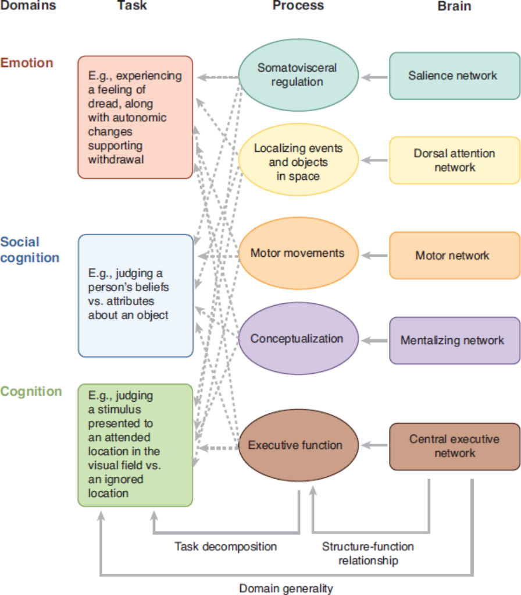
Hình 10.2: Lý thuyết cảm xúc được cấu trúc. Trong sơ đồ này, lĩnh vực cụ thể (ví dụ, "cảm xúc") được liên hệ với các nhiệm vụ cụ thể có thể được dùng để suy ra các tiến trình cụ thể, mà đến lượt chúng được thực hiện bởi các mạng não cụ thể. Một đặc điểm đáng chú ý của sơ đồ này là các ánh xạ đa dạng: không có ánh xạ duy nhất từ cảm xúc đến một tiến trình đơn lẻ hay một mạng não đơn lẻ, mà thay vào đó cảm xúc được "cấu trúc" từ nhiều tiến trình được đảm nhận bởi nhiều mạng và được chia sẻ bởi các lĩnh vực khác. In lại với sự cho phép từ Feldman Barrett và Satpute 2013.
Lý thuyết cảm xúc được cấu trúc là một trong những lý thuyết cảm xúc tham vọng nhất, vì nó cố cung cấp một giải trình toàn diện về tất cả các khía cạnh của cảm xúc, từ các hành vi cảm xúc, đến các khái niệm, đến các trải nghiệm (mặc dù, như đã ghi chú, trọng tâm là vào trải nghiệm của cảm xúc, và các khía cạnh khác nhau này của cảm xúc không được phân biệt rạch ròi mà có vẻ thực ra được đồng nhất với nhau). Nó cũng tham vọng ở chỗ hợp nhất một kho tư liệu rất phong phú của các công trình thần kinh học hiện đại, từ dữ liệu chi tiết ở tầng mạch thần kinh đến các mạng quy mô lớn được phát hiện từ dữ liệu fMRI. Một hương vị của lý thuyết được thể hiện trong hình 10.2.
Lý thuyết cảm xúc được cấu trúc khó đánh giá, và khó so sánh với những gì chúng tôi đã viết trong cuốn sách này, vì nó quá rộng và vì nó dùng các thuật ngữ theo các cách khác nhau. Dù vậy, có một số điểm nhất trí rõ ràng, và một số điểm bất đồng rõ ràng (Adolphs 2017; Feldman Barrett 2017b). Nhiều chủ đề sinh học thần kinh mà lý thuyết nhấn mạnh khớp với những gì chúng tôi đã viết ở đây: khác với các phản xạ, các cảm xúc có thể bao gồm học tập và ngữ cảnh. Hơn cả những gì chúng tôi đã nhấn mạnh ở đây, lý thuyết cảm xúc được cấu trúc nhấn mạnh khả năng của não trong việc đưa ra các dự đoán và có các kỳ vọng về thế giới như một phần then chốt của việc khơi các cảm xúc.
Chúng tôi chắc chắn bất đồng về một điều: rằng các trạng thái cảm xúc không thể có một phân loại học khách quan, mang tính khoa học về các loại cảm xúc. Lý thuyết cảm xúc được cấu trúc phủ nhận rằng chúng ta có thể khám phá các phạm trù khách quan của các cảm xúc, như sợ hãi, giận dữ, và v.v. — nó tuyên bố rằng không có sự thật khách quan nào về các phạm trù cảm xúc là gì, và rằng chúng chỉ bị con người bịa ra. Như chúng tôi đã ghi chú, chắc chắn sẽ có trường hợp các phạm trù cảm xúc hiện tại của chúng ta sẽ được sửa đổi, và có thể sẽ cần được chia nhỏ hơn. Nhưng chúng tôi lập luận mạnh mẽ rằng đây là một nhiệm vụ thực nghiệm của khám phá khoa học, chứ không phải một tiến trình cấu trúc xã hội nơi chúng ta có thể tự bịa ra bất cứ phạm trù cảm xúc nào mình thích. Xét về phương diện này, việc khám phá khoa học đa ngành về các phạm trù cảm xúc chẳng khác gì việc khám phá các phạm trù khoa học khác: như các thiên hà, hành tinh, nguyên tử, hay phân tử, đây là những cách chia cắt thế giới dựa trên các phép đo và lý thuyết khoa học tốt nhất mà chúng ta có. Chúng, dĩ nhiên, luôn là những công trình đang hoàn thiện, nhưng hướng đến một mô tả khách quan về thế giới vượt ra ngoài các khái niệm và phạm trù mà chúng ta dùng trong đời sống hằng ngày.
Một cách làm nổi bật sự khác biệt giữa lý thuyết cảm xúc được cấu trúc và quan điểm của chúng tôi là tưởng tượng các nhà khoa học trong các nền văn hóa khác nhau, hoặc thậm chí
các nhà khoa học ngoài hành tinh, nghiên cứu các cảm xúc. Lý thuyết cảm xúc được cấu trúc giả định rằng những người này sẽ tất cả tạo ra các phạm trù cảm xúc riêng, khác nhau của họ, một quan điểm được các quan sát lịch sử và xuyên văn hóa ủng hộ. Chúng tôi giả định rằng họ sẽ cuối cùng tạo ra các phạm trù cảm xúc như nhau, vì chúng tôi tin rằng khoa học phải tiến gần một biểu diễn đồng thuận về thế giới (ngay cả khi có các khác biệt về chi tiết và thuật ngữ). Giống như các nhà khoa học ngoài hành tinh cũng sẽ có các lý thuyết bao gồm các thiên hà và hành tinh và nguyên tử, họ cũng sẽ có các lý thuyết bao gồm các cảm xúc, và các phạm trù và chiều cảm xúc mà một khoa học cảm xúc tương lai trên trái đất sẽ tạo ra.
Các Hệ Cảm Xúc Của Jaak Panksepp
Một lập trường mạnh mẽ chống lại phần lớn các quan điểm của lý thuyết cảm xúc được cấu trúc đến từ lý thuyết các hệ sinh học thần kinh của Jaak Panksepp quá cố (Panksepp 1998), dù các bài viết của ông có trước lý thuyết cảm xúc được cấu trúc. Dựa phần lớn vào các nghiên cứu động vật cũ hơn dùng các phương pháp như kích thích não điện (phần lớn trong đó là công trình nền tảng của chính Panksepp), lý thuyết này đề xuất một số ít các hệ cảm xúc lõi hoạt động ở người và động vật. Như vậy nó giống quan điểm của Paul Ekman về các cảm xúc cơ bản — nó đề xuất rằng có các mô-đun cụ thể tương ứng với các phạm trù cảm xúc cụ thể. Nó nhấn mạnh vai trò quan trọng của các cấu trúc dưới vỏ não, và nó hoàn toàn không ngại ngùng trong niềm tin rằng tất cả các động vật có các trạng thái cảm xúc cũng có các trải nghiệm có ý thức về các cảm xúc đó. Đối với Panksepp, dữ liệu sinh học thần kinh và hành vi hoàn toàn đủ để quy các cảm giác chủ quan về cảm xúc cho động vật; báo cáo bằng lời được xem là phần lớn không liên quan trong phương diện này.
Trong khi Ekman đã đề xuất sáu đến bảy cảm xúc cơ bản từ các biểu hiện khuôn mặt của con người (hạnh phúc, ngạc nhiên, sợ hãi, giận dữ, ghê tởm, buồn bã, khinh bỉ), Panksepp đề xuất bảy hệ cảm xúc cơ bản bắt rễ từ các quan sát của ông về hành vi động vật và thần kinh học: tìm kiếm, cuồng nộ, sợ hãi, dục vọng, chăm sóc, hoảng loạn, và vui chơi (trong các bài viết của ông, các hệ này được ghi bằng toàn chữ in hoa). Phần lớn bằng chứng thực nghiệm cho các nền tảng thần kinh dưới vỏ não của các hệ này, theo Panksepp, đến từ các nghiên cứu kích thích điện và hóa thần kinh. Quan điểm của ông cũng được truyền cảm đáng kể
từ các tính đồng nguồn giữa các cấu trúc não qua các loài động vật có vú (và ở mức độ nào đó tất cả các loài động vật có xương sống), những tính đồng nguồn nổi bật hơn cho các cấu trúc dưới vỏ não hơn là cho các vùng vỏ não.
Quan điểm mạnh mẽ mang tính mô-đun của lý thuyết Panksepp hấp dẫn ở chỗ nó đặt ra các mạch thần kinh có thể xử lý nhiều tình huống khác nhau để phối hợp cùng một phản ứng cảm xúc. Nó cung cấp cho chúng ta một "bộ từ vựng" các kho cảm xúc có thể được huy động qua các tình huống khác nhau. Ý tưởng này tương tự thuộc tính cảm xúc tính khái quát hóa mà chúng tôi đã liệt kê trong hình 3.2, và hình ảnh các trạng thái cảm xúc thể hiện một kiến trúc hợp tụ–tán xạ (fan-in, fan-out) có thể liên kết cùng một trạng thái cảm xúc với rất nhiều kích thích khác nhau qua học tập hay tiến hóa. Một khi chúng ta có một mô-đun trung tâm để phối hợp các phản ứng sợ hãi, nó có thể được áp dụng cho một phạm vi kích thích gần như không giới hạn mà có được ý nghĩa đe dọa qua học tập thực nghiệm, quan sát, hoặc chỉ dẫn. Dù vậy, khả năng cao là (từ dữ liệu sinh học thần kinh mà chúng tôi đã xem xét trong các chương trước) "sợ hãi" sẽ hóa ra được xử lý bởi vài hệ thống liên quan chức năng nhưng phân biệt về giải phẫu thần kinh, và rằng mỗi hệ trong số đó sẽ có một phạm vi kích thích hạn chế hơn mà nó có thể học về. Vậy sẽ có lẽ nhiều hơn chỉ bảy cảm xúc, hoặc ít nhất mỗi cái trong bảy cái sẽ có vài phân loại.
Cần nhấn mạnh rằng, theo quan điểm của Panksepp, bạn có thể học thấy tình huống nào cần sợ, nhưng bạn không thể học một trạng thái cảm xúc hoàn toàn mới. Các trạng thái cảm xúc được thiết lập bởi tiến hóa và bao hàm các thách thức môi trường và chủ đề lặp đi lặp lại mà động vật đã gặp qua nhiều thế hệ. Tính linh hoạt của các trạng thái cảm xúc cho phép các trạng thái này được liên kết với nhiều kích thích và hành vi qua học tập, nhưng các trạng thái tự thân là đặc hiệu loài và những trạng thái mới không thể được học.
Giống Damasio, Panksepp nhấn mạnh các cấu trúc dưới vỏ não đóng vai trò then chốt trong các cảm xúc. Trong khi lý thuyết của Damasio có xu hướng nhấn mạnh các biểu diễn cảm nhận nội tạng trong thảo luận về các cảm giác (tức là, các biểu diễn cảm giác), quan điểm của Panksepp có xu hướng nhấn mạnh các động lực và hành vi (tức là, các biểu diễn liên quan vận động). Cả Panksepp lẫn Damasio có xu hướng nhấn mạnh các vùng dưới vỏ não nhiều hơn Feldman Barrett, và cả hai nhấn mạnh dữ liệu xuyên loài và thừa nhận các tính đồng nguồn qua các loài khác nhau.
Chúng tôi thấy quan điểm của Panksepp hấp dẫn, mặc dù chúng tôi có những hoài nghi về các chi tiết. Sự nhấn mạnh của lý thuyết vào quan sát tập tính học cẩn thận và sự nhấn mạnh xuyên loài mà nổi bật bao gồm các nghiên cứu động vật là những đặc điểm hấp dẫn (thật ra, phần lớn dữ liệu trong cuốn sách của Panksepp đến từ các thí nghiệm ở động vật, trong khi phần lớn dữ liệu trong cuốn sách của Feldman Barrett đến từ các thí nghiệm ở người — không cần nói cũng hiểu, mỗi bên với các loại thước đo phụ rất khác nhau). Chúng tôi có vài hoài nghi về danh sách cụ thể các phạm trù cảm xúc và các hệ thần kinh của chúng — nhưng điều này thực ra không nói nhiều hơn ngoài việc thừa nhận rằng chúng ta chỉ cần nhiều nghiên cứu thần kinh học hơn nữa, dùng các phương pháp hiện đại và tương lai, để khám phá những điều này. Chúng tôi cũng chia sẻ niềm tin của Panksepp rằng động vật có các trải nghiệm có ý thức về cảm xúc, nhưng khác với Panksepp, chúng tôi không cảm thấy tự tin rằng chúng ta đã có một cách hay để điều tra điều này.
Lý Thuyết Cảm Xúc Của Edmund Rolls
Một lý thuyết sinh học thần kinh khác về cảm xúc đáng lưu ý đến từ Edmund Rolls, người mà công trình tại Đại học Oxford, chủ yếu ở khỉ, đã cung cấp nhiều nghiên cứu nền tảng về cách phần thưởng và trừng phạt được biểu diễn bởi các nơ-ron đơn trong não. Rolls và phòng thí nghiệm của ông đã tìm thấy các nơ-ron ở khỉ, cũng như các vùng não trong các nghiên cứu fMRI ở người, phản ứng với giá trị của các kích thích độc lập với các đặc tính cảm giác của chúng. Chẳng hạn, vỏ não hốc trán và hạch hạnh nhân phản ứng với chocolate ở một người đói chocolate, nhưng ngừng phản ứng với chocolate khi người đó đã no và không còn muốn ăn chocolate. Phát hiện này đến nay đã được tái lập nhiều lần, dùng fMRI và dùng các bản ghi nơ-ron đơn, và được xem là một dấu hiệu đặc trưng của các biểu diễn giá trị đủ linh hoạt để hỗ trợ các hành vi công cụ hướng đích. Giống các cảm xúc, các biểu diễn giá trị linh hoạt này bị "tách rời" khỏi các kích thích. Chúng mã hóa thứ gì đó trừu tượng hơn — các kích thích mang ý nghĩa gì, chúng có giá trị nào — thứ biến đổi tùy thuộc vào trạng thái tự cân bằng nội môi của động vật. Cũng giống các cảm xúc, các biểu diễn như vậy tạo động lực cho hành vi thích nghi — muốn lấy và ăn chocolate hay không.
Rolls đã đề xuất một lý thuyết trong đó các trạng thái cảm xúc được liên kết chặt chẽ với động lực hành vi, trong khi trải nghiệm cảm xúc phụ thuộc vào ngôn ngữ nhiều hơn. Lý thuyết của Rolls có đặc trưng một không gian hai chiều thú vị trong đó các trạng thái cảm xúc được đặt vào, không gian ánh xạ các phạm trù cảm xúc xét theo các hành vi được khơi ra bởi việc ban phát hay thu giữ phần thưởng và trừng phạt. Chẳng hạn, việc ban phát phần thưởng sẽ ánh xạ lên hạnh phúc, việc thu giữ của nó lên sự bực bội; việc ban phát trừng phạt sẽ ánh xạ lên sợ hãi, việc thu giữ của nó lên sự nhẹ nhõm. Mặc dù khó thấy không gian này một mình có thể cung cấp đủ các phân biệt để nắm bắt sự đa dạng của các cảm xúc ra sao, nó là một phương án hành vi thú vị thay cho các không gian chiều tâm lý học thông thường (mà, như chúng tôi đã ghi chú, thường lấy sự hưng phấn và tính tích cực–tiêu cực làm hai chiều cơ bản).
Lý Thuyết Cấp Cao Về Cảm Xúc Của Joseph LeDoux
Chúng tôi đã đề cập quan điểm của LeDoux rằng các cảm xúc nên được coi là các trải nghiệm có ý thức, và rằng các nghiên cứu động vật về các trạng thái cảm xúc mà chúng tôi đã xem xét trong chương 6 là về những thứ ông gọi là các "mạch sinh tồn," mà theo quan điểm của ông không phải là các cảm xúc. Dùng lời của ông,
Các hệ sinh học nằm bên dưới các trạng thái đa dạng này không ở đó để tạo ra sợ hãi. Chúng tồn tại để giữ cho sinh vật còn sống. Khi sinh vật có một bộ não có thể có ý thức về các hoạt động của chính nó, sự kích hoạt một hệ sinh tồn sinh học góp phần vào sợ hãi. Chúng ta có thể nghiên cứu các hệ sinh tồn sinh học ở động vật. Nhưng sợ hãi — trải nghiệm có ý thức — chỉ có thể được nghiên cứu ở các sinh vật có đủ năng lực nhận thức để có ý thức về các hoạt động này. (LeDoux 2017, trao đổi cá nhân)
Cần lưu ý rằng LeDoux không phủ nhận rằng động vật có thể có ý thức. Nhưng loại ý thức mà chúng có được bị giới hạn hơn và không mở rộng đến tự nhận thức. Động vật có thể có các cảm giác có ý thức khi chúng ở trong một trạng thái sợ hãi, nhưng chúng không biết rằng chúng đang sợ. Ngược lại, con người có một ý niệm về cái tôi mở rộng, và khi chúng sợ, chúng biết rằng chúng sợ — và do đó chúng có thể kể cho chúng ta về điều đó. Quan trọng hơn, LeDoux lập luận rằng các trải nghiệm có ý thức về cảm xúc không phải là "sản phẩm" của các mạch thần kinh dưới vỏ não
— các cấu trúc như hạch hạnh nhân và vùng dưới đồi, mà chúng tôi đã xem xét trong chương 6.
Một phần bất đồng của chúng tôi với LeDoux chỉ là về ngữ nghĩa. Trong khi chúng tôi định nghĩa các cảm xúc là các trạng thái chức năng, rồi xét câu hỏi về trải nghiệm có ý thức của chúng như một điều nữa cần được điều tra thực nghiệm, LeDoux thay vào đó định nghĩa các cảm xúc ngay từ đầu là các trải nghiệm có ý thức: "chúng tôi định nghĩa 'sợ hãi' là cảm giác có ý thức mà người ta có khi gặp nguy hiểm" (LeDoux và Brown 2017). Phần lớn công trình tâm lý học về cảm xúc có lẽ dùng cùng định nghĩa làm việc đó — nhưng trộn nó với các cách tiếp cận hành vi, thần kinh, hay thậm chí chức năng mà không làm rõ thêm. Theo một nghĩa nào đó, định nghĩa của LeDoux chỉ là một tuyên bố tường minh hữu ích về điều mà nhiều quan điểm khác vốn giả định ngầm (đây chính xác là vấn đề mà LeDoux chẩn đoán [LeDoux 2015; 2017]).
Lý thuyết cấp cao của LeDoux về trải nghiệm cảm xúc (mà thực ra là một lý thuyết về ý thức nói chung hơn là một lý thuyết về cảm xúc) rất tiết kiệm và cung cấp các thành tố cụ thể, mà tạo ra các giả thuyết có thể kiểm nghiệm về giải phẫu thần kinh. Ý tưởng cơ bản là có một hệ vỏ não tổng quát duy nhất để tạo ra các trải nghiệm có ý thức. Hệ này có các tầng nảy sinh từ các biểu diễn về cái tôi nhiều hay ít được trau chuốt, một ý tưởng mà Antonio Damasio đã đề xuất đầu tiên. Nó cũng đòi hỏi chú ý, siêu nhận thức, và trí nhớ làm việc, để các biểu diễn mang lại nội dung cho một trải nghiệm có ý thức có thể được "giữ trong tâm trí" và suy ngẫm. Theo quan điểm này, cùng hệ vỏ não tạo ra các trải nghiệm có ý thức chỉ nhận các đầu vào khác nhau quyết định chúng ta có ý thức về cái gì trong bất cứ dịp nào. Nếu chúng là các đầu vào thị giác, chúng ta có ý thức về việc nhìn thấy thứ gì đó. Nếu chúng là các đầu vào thính giác, chúng ta có ý thức về việc nghe thấy thứ gì đó. Nếu chúng là các đầu vào từ các "mạch sinh tồn" dưới vỏ não, chúng ta có ý thức về việc cảm nhận một cảm xúc.
Một số khía cạnh của sơ đồ của LeDoux thực ra khớp khá tốt với sơ đồ của chúng tôi, khác nhau chủ yếu ở thuật ngữ và điểm nhấn. Giống LeDoux, chúng tôi không tin rằng các trạng thái cảm xúc giam giữ trong các hệ dưới vỏ não tự thân nào đó là có ý thức. Chúng tôi cũng chia sẻ niềm tin rằng tương tác với một số tiến trình nhận thức khác (chú ý, trí nhớ làm việc) sẽ được đòi hỏi để có một trải nghiệm cảm xúc có ý thức. Nơi chúng tôi khác nhau là ở mức độ xử lý được cho phép đối với một trạng thái cảm xúc. Nếu một người giới hạn trạng thái chỉ vào xử lý dưới vỏ não, và chỉ vào xử lý mà tạo ra
hành vi, thì một trạng thái cảm xúc có thể có rất ít liên hệ trực tiếp với một trải nghiệm có ý thức. Nếu một người mở rộng trạng thái cảm xúc để bao gồm cả xử lý vỏ não và tương tác với các tiến trình nhận thức khác (như chúng tôi làm), thì một trải nghiệm có ý thức về cảm xúc có thể theo sau như một hệ quả nhân quả của (hoặc thậm chí được cấu thành bởi) trạng thái cảm xúc. Tuy nhiên, chúng tôi kiên quyết tin rằng các cấu trúc dưới vỏ não là cần thiết cho các trải nghiệm có ý thức về cảm xúc, dù chúng có thể không đủ. Quan trọng nhất, chúng tôi tin rằng các cảm xúc có một chức năng sinh học đã tiến hóa và không phải chỉ là các hiện tượng kèm theo của xử lý thần kinh cấp cao mà có thể giữ cho các nhà thần kinh học nhận thức bận rộn.
Triết Học Về Cảm Xúc
Xét đến tính không đồng nhất trong các lý thuyết được khảo sát ở trên, xét đến các vấn đề khái niệm sâu xa, và xét đến mối liên hệ chặt chẽ với ý thức, có thể gây ngạc nhiên rằng các nhà triết học đã không đóng góp nhiều hơn cho các lý thuyết cảm xúc. Người ta có thể nghĩ rằng lĩnh vực này thực sự có thể hưởng lợi từ một số giải thích triết học rõ ràng. Nhưng không biết sao, cảm xúc đã né tránh phần lớn triết học phân tích, và thứ triết học về cảm xúc hiện có thường cố phân tích các khái niệm của chúng ta về các cảm giác và cảm xúc, chứ không kết nối mạnh với tâm lý học nhận thức, huống chi thần kinh học. Có một số ngoại lệ. Nhà triết học Jesse Prinz đã dẫn dắt các lập luận thú vị, phần nào theo hướng của James và Damasio, về vai trò của các trạng thái cơ thể trong việc biểu diễn các chủ đề cảm xúc (Prinz 2004). Phần nào lẻ loi hơn với bản thân cảm xúc, nhà triết học Alvin Goldman đã lập luận rằng chúng ta tìm ra người khác cảm thấy thế nào bằng cách mô phỏng các trạng thái cơ thể của họ (Goldman và Sripada 2005). Các lý thuyết này dựa vào dữ liệu thần kinh học, như phát hiện rằng trải nghiệm một cảm xúc, và quy gán nó cho người khác từ biểu hiện khuôn mặt của họ, có vẻ bao gồm các vùng não chồng lấn (các chương 8 và 9).
Nhà triết học Andrea Scarantino đã khảo sát các lý thuyết cảm xúc như rơi phần lớn vào ba cách tiếp cận mà lấy các khía cạnh khác nhau của một cảm xúc làm nền tảng hay thứ yếu theo một nghĩa nào đó. Đây là các cách tiếp cận đánh giá, cảm giác, và động lực, mà, tương ứng, nhấn mạnh các thành tố đánh giá, trải nghiệm, và hành vi của một cảm xúc
(Scarantino 2016). Cách tiếp cận của chính Scarantino thực ra chia sẻ một số thành tố với chúng tôi. Quan điểm của ông, được gọi là lý thuyết động lực về cảm xúc, bắt nguồn một phần từ công trình của nhà tâm lý học Nico Fridja và xem các cảm xúc như các khuynh hướng hay khuynh độ cho hành động (Scarantino 2014). Giống danh sách các đặc điểm mà chúng tôi đã cung cấp, Scarantino đặt các cảm xúc là tạo động lực cho các hành vi trong khi thể hiện các hiện tượng nhất định: tính linh hoạt, tính bốc đồng, và các nền tảng cơ thể.
Một trong những ảnh hưởng lớn nhất của triết học đến khoa học cảm xúc đến từ cuốn sách nền tảng của Paul Griffiths, What Emotions Really Are (Griffiths 1997). Griffiths lập luận thuyết phục rằng các cảm xúc khác nhau rơi vào một vài loại rộng, rằng các phân biệt cần được đưa ra giữa các hiện tượng thường bị gộp chung dưới khoa học cảm xúc (affective science), và rằng không có lý thuyết đơn lẻ nào có thể làm được công việc đó. Đáng chú ý, Griffiths lập luận rằng không phải tất cả các từ và khái niệm mà chúng ta có cho các cảm xúc khác nhau sẽ hữu ích về mặt khoa học; tức là, rằng chúng sẽ không tất cả tương ứng với các loại tự nhiên mà nhà khoa học có thể khám phá.
Chúng tôi nghĩ rằng phần lớn điều này là đúng, mặc dù chúng tôi cũng nghĩ rằng phần lớn trong đó là một câu hỏi thực nghiệm. Thực ra có thể có trường hợp nhà sinh học thần kinh loài gặm nhấm đang tiến hành các nghiên cứu quang di truyền học về hành vi hung hăng, và nhà tâm lý học xã hội quan tâm đến cảm giác giận dữ của con người, chỉ đang nghiên cứu các hiện tượng rất khác nhau. Điều đó có thể đòi hỏi một phân loại học cảm xúc đã sửa đổi, một góc nhìn chiều, hoặc đơn giản là một sự thừa nhận rằng trong trường hợp con người có rất nhiều điều diễn ra thêm vào những gì diễn ra trong trường hợp loài gặm nhấm. Không khả năng nào trong ba khả năng này nên có vẻ đặc biệt đáng ngạc nhiên. Sau cùng, ngay cả khi các hoàn cảnh được làm càng giống nhau càng tốt, cách mà một con người có thể đối phó với một tình huống chỉ định giận dữ sẽ rõ ràng khác nhau theo nhiều cách so với cách mà loài gặm nhấm có thể đối phó. Vậy các quan hệ chức năng định nghĩa một trường hợp giận dữ ở gặm nhấm sẽ hầu như luôn trông rất nghèo nàn so với trường hợp con người. Tuy nhiên, điều đó không nhất thiết nghĩa là "giận dữ" (hay RAGE, trong thuật ngữ của Panksepp) không phải là một loại tự nhiên. Nó có thể chỉ nghĩa là "giận dữ" có một chức năng đơn giản hơn, nhưng liên quan, ở loài gặm nhấm so với vai trò được trau chuốt của nó ở người. Nếu không có nhiều chi tiết thực nghiệm hơn cho câu chuyện, chúng tôi không biết liệu chúng ta có nên lập một phạm trù hoàn toàn riêng cho "giận dữ ở người" so với "giận dữ ở gặm nhấm," hay liệu chúng ta có nên coi chúng là các phân loại của một phạm trù chức năng lớn hơn duy nhất vì các sự tương đồng mà
chúng chia sẻ. Dữ liệu thần kinh học dường như đưa ra một nguồn dữ liệu đặc biệt thuyết phục ở đây, vì có các tính đồng nguồn não rõ ràng giữa hai loài này. Ngay cả khi một số hành vi nhất thiết khá khác nhau, vì sinh thái của hai loài này khác nhau, các hệ não cho giận dữ có thể trông giống nhau.
Một điểm nhấn quan trọng trong công trình của Griffiths là xem các cảm xúc, ít nhất là ở người, như mang tính xã hội mạnh mẽ. Thật ra, ngay cả các "cảm xúc cơ bản" của Ekman cũng rõ ràng là thuộc xã hội — chúng được suy ra từ giao tiếp xã hội qua biểu hiện khuôn mặt. Phần lớn các ví dụ của Charles Darwin cũng vậy — chúng là các hành vi của các loài động vật có vú mà chúng ta có thể quan sát và giải thích là thuộc cảm xúc. Darwin nghĩ về các hành vi này như phản ánh các "thói quen liên hợp hữu ích (có ích)," và tin rằng người ta có thể hiểu cảm xúc thật đằng sau màn trình diễn hành vi bằng cách quay lại xem nó đã tiến hóa ra sao. Nhưng rõ ràng nhiều hành vi cảm xúc, đặc biệt ở người, cũng phục vụ các chức năng giao tiếp xã hội tường minh (như các vai trò chức năng khác nhau của một nụ cười mà chúng tôi đã đề cập trước đó trong cuốn sách; Rychlowska và cộng sự 2017). Xét đến điều đó, chức năng xã hội của nhiều loại trạng thái cảm xúc có thể không phải là phái sinh từ bất cứ loại "thói quen liên hợp hữu ích" nào đi trước nó; các cảm xúc như kiêu hãnh, tội lỗi, xấu hổ, và ngại ngùng có lẽ chỉ tiến hóa để phục vụ một chức năng xã hội.
Đây là một điểm quan trọng làm phức tạp hóa rất nhiều việc nghiên cứu cảm xúc, vì giờ đây chúng ta cần giải thích các hành vi cảm xúc không chỉ "dưới ánh sáng của tiến hóa" xét theo chức năng mà chúng đã đóng thuở tổ tiên (ví dụ, mắt mở to và răng trần vì sợ hãi phục vụ các chức năng trong việc tối đa hóa phát hiện thị giác các mối đe dọa và chuẩn bị con vật để tự vệ), mà còn xét theo chức năng mà chúng đóng trong điều hòa các tương tác xã hội (ví dụ, màn trình diễn sợ hãi như nhau cũng phục vụ để phát tín hiệu sợ hãi cho một kẻ săn mồi hay một đồng loại) (xem hộp 2.3). Một khi các hành vi cảm xúc được chiếm dụng cho giao tiếp xã hội, điều này, dĩ nhiên, tự nâng các thích nghi tiếp theo: những cái dùng tường minh các tín hiệu cảm xúc làm tín hiệu xã hội hay dấu hiệu cảnh báo, và những cái thậm chí có thể dùng các tín hiệu như vậy một cách lừa dối. Vai trò mà các cảm xúc đóng trong giao tiếp xã hội là một chủ đề khổng lồ, và chúng tôi sẽ cần viết hẳn một cuốn sách khác để làm trọn vẹn công việc của nó.
Griffiths lập luận rằng các cảm xúc là một tập hợp không đồng nhất, và ông có vẻ nghĩ điều này là vậy phần lớn vì các quan hệ chức năng mà
chúng tham gia, ở mức độ nào đó, là linh hoạt. Hãy nhớ từ rất xa ở chương 2 chúng tôi đã đưa ví dụ về các đồng hồ như các thiết bị được định nghĩa chức năng. Nhưng, chúng tôi đã ghi chú, một chiếc đồng hồ cũng có thể được dùng làm chặn giấy, hoặc có thể tiếng tích tắc của chiếc đồng hồ đứng có thể được dùng làm thiết bị gây ngủ cho mèo. Những ví dụ đó nhằm mục đích đùa cợt — chúng nhằm minh họa điểm rằng các đồng hồ được thiết kế để giữ giờ, và vì vậy các cách dùng khác của chúng, theo một nghĩa nào đó, là các sai sót hay rối loạn chức năng và không phản ánh chức năng đúng đắn của chúng. Trong trường hợp cảm xúc, ý tưởng mà chúng tôi đề xuất là tiến hóa đã chọn lọc các chức năng cụ thể làm các "chức năng đúng đắn" cho các trạng thái cảm xúc. Đây là một quan điểm được nắm giữ rộng rãi về các chức năng sinh học nói chung, được lập luận chi tiết nhất bởi nhà triết học Ruth Millikan (Millikan 1989). Chức năng của tim là bơm máu; dùng một trái tim làm thiết bị dạy học trong trường y không làm trái tim thành một thiết bị dạy học vì đó không phải là chức năng đúng đắn của nó. Chức năng của phổi là trao đổi oxy và carbon dioxide; dùng nó để thổi tắt một ngọn nến không làm nó thành một thiết bị thổi gió vì đây không phải là chức năng đúng đắn của nó.
Hai ví dụ cuối này có thể khiến bạn thấy không hẳn tương đương. Vâng, trái tim, dĩ nhiên, không phải là một thiết bị dạy học. Nhưng có lẽ phổi là một thiết bị thổi kiểu gì đó? Chúng ta dường như dùng chúng theo cách đó khá nhiều. Nếu các trạng thái cảm xúc giống phổi hơn là giống tim xét theo phương diện này thì sao? Nếu các trạng thái cảm xúc chẳng có một chức năng đúng đắn duy nhất nào cả, vì chúng đã được dùng suốt tiến hóa cho bất cứ mục đích nào sẵn có mà chúng hữu ích nhất thì sao? Đôi khi một trạng thái sợ hãi hữu ích nếu bạn muốn tránh bị một kẻ săn mồi ăn thịt. Đôi khi nó hữu ích chỉ để phát tín hiệu quy phục cho một thành phần thống trị của cùng loài với mình. Đôi khi thậm chí nó hữu ích nếu bạn muốn làm vui người khác bằng cách là một diễn viên nhập tâm. Nghĩa là, nếu các cảm xúc, có lẽ đặc biệt ở người, linh hoạt đến mức chúng có thể được áp dụng trong một số lượng rất lớn các ngữ cảnh khác nhau thì sao? Điều đó sẽ khiến khó khám phá chúng thực sự là về điều gì, và sẽ khiến chúng trông như thể chúng chẳng phải là các "loại tự nhiên" chút nào. Đây cũng có thể là quan điểm làm nền cho lý thuyết cảm xúc được cấu trúc của Feldman Barrett.
Phản ứng của chúng tôi với khả năng này là chúng ta sẽ cần một số dữ liệu thực tế, một số nghiên cứu có thể cung cấp thông tin cho các câu hỏi này. Có thể là các nghiên cứu phát triển, các nghiên cứu so sánh, và công tác sinh thái cẩn thận sẽ giúp. Tuy nhiên, chúng tôi cũng nghĩ rằng thần kinh học sẽ giúp. Đặc biệt, nếu dữ liệu thần kinh học cho chúng ta thấy rằng tất cả các cách dùng khác nhau mà một trạng thái
sợ hãi được đưa vào đều chia sẻ một nền tảng chung, chúng ta có thể có một giải thích cơ chế cho thấy một trạng thái cảm xúc lõi có thể phục vụ nhiều vai trò chức năng ra sao. Điều này có thể dẫn chúng tôi chuyển các nền tảng suy nghĩ về cảm xúc của mình từ các tiêu chí chức năng (như chúng tôi đã làm trong cuốn sách này) sang các cơ chế. Các lý thuyết như của Jaak Panksepp có vẻ đặt cược rằng chúng ta sẽ tìm thấy các hệ cảm xúc lõi như vậy; các lý thuyết như của Lisa Feldman Barrett có vẻ đặt cược rằng chúng ta sẽ không. Chúng tôi nghĩ chúng ta cần làm thần kinh học để tìm ra.
Cân Đối Lại
Ở người, các cảm giác và các trạng thái cảm xúc đan xen nhau rất chặt, và các cảm giác nổi bật quá trong cuộc sống của chúng ta, nên chẳng ngạc nhiên gì khi phần lớn các lý thuyết cảm xúc tập trung vào các cảm giác. Người ta có thể hỏi thẳng rằng có bất cứ hiệu ứng rõ ràng nào của các cảm xúc khi vắng mặt các cảm giác hay không. Chắc chắn, không có trường hợp nào một người không có trải nghiệm có ý thức về một cảm xúc nhưng lại thể hiện một phản ứng cảm xúc mạnh mẽ, toàn diện (ví dụ, gào lên và bỏ chạy khỏi một con gấu mà không cảm thấy sợ hãi); mặt khác, sẽ chẳng có mấy ý nghĩa khi giả định rằng điều này thậm chí có thể xảy ra, vì ý thức được đòi hỏi cho tất cả các thành tố. Piotr Winkielman và Kent Berridge đã lập luận rằng có các cảm xúc vô thức, và có những trường hợp được ghi chép đầy đủ mà các kích thích cảm xúc có hiệu ứng trên chú ý hay ra quyết định ngay cả khi chúng không được tri giác một cách có ý thức — ít nhất là đối với các cảm xúc tương đối mờ nhạt (hộp 10.1).
Nhiều lý thuyết cảm xúc — mà chúng tôi chỉ lướt qua ở đây — tự thân có thể được sắp xếp dọc theo một số chiều. Một số, như của Damasio, mang tính nền tảng mạnh mẽ trong cố cung cấp một cơ sở căn bản cho các cảm xúc về bản chất là gì ngay từ đầu, trong khi những cái khác, như của Feldman Barrett, mang tính mô tả hơn và giả định một số hiện tượng nhất định như đã cho (như trải nghiệm của các cảm xúc). Một số cố quy các cảm xúc về các thành phần của chúng, như quan điểm của Rolls rằng các cảm xúc về bản chất là các trạng thái liên kết với các vật củng cố, trong khi những cái khác (đặc biệt nhiều lý thuyết tâm lý học) có xu hướng toàn thể hơn.
Không thiếu các lý thuyết cảm xúc, và không thiếu dữ liệu thần kinh học đang nổi lên về các cảm xúc. Thiếu là các dữ liệu thực sự có thể giúp chúng ta quyết định một lý thuyết đúng hay sai (hay cần
sửa đổi). Điều này, đến lượt nó, đòi hỏi công sức của phía những người nghĩ ra các lý thuyết và của phía những người làm nghiên cứu thực nghiệm. Các lý thuyết thường cần bị thu hẹp hơn trong phạm vi của mình và được làm cụ thể hơn trong các chi tiết, để chúng sẽ đưa ra các dự đoán cụ thể có thể kiểm nghiệm. Cần rõ ràng những loại kết quả thí nghiệm nào sẽ cung cấp sự ủng hộ cho một lý thuyết, và những loại kết quả thí nghiệm nào sẽ bác bỏ một lý thuyết. Tương tự, các thí nghiệm cần được hoạch định cẩn thận để các biến được thao túng và đo lường có tính hợp lệ kiến tạo: chúng cần tương ứng với các thuật ngữ trong lý thuyết, chúng cần được đo một cách đáng tin cậy, và logic của thí nghiệm cần cung cấp dữ liệu ủng hộ các kết luận của nó. Đây là một yêu cầu cao và đòi hỏi các thảo luận sát sao giữa những người hình thành các lý thuyết và những người làm nghiên cứu. Trong chương kế tiếp và cuối cùng, sau khi chúng tôi đã tóm tắt các điểm mấu chốt của cuốn sách này, chúng tôi đưa ra một vài ví dụ về các dự án tương lai có thể giúp đưa các lý thuyết và thí nghiệm lại gần nhau hơn.
Hộp 10.1. Có các cảm xúc không có ý thức hay không?
Có một văn liệu dài về khả năng rằng chúng ta có thể không nhận thức được các khía cạnh của chính cảm xúc mình. Truy về khái niệm tâm trí vô thức của Freud, có ý tưởng rằng chúng ta có thể đè nén, hoặc bằng cách nào đó mất quyền tiếp cận, cảm giác của mình. Chúng ta cũng có thể không nhận thức được các lý do vì sao chúng ta cảm thấy một cảm xúc. Quan trọng là phân biệt hai trường hợp:
- Không nhận thức được các kích thích gây ra một trạng thái cảm xúc. Có bằng chứng tốt rằng các kích thích cảm giác có thể không được phát hiện nhưng vẫn gây ra một cảm xúc. Chẳng hạn, các mùi nồng độ thấp có thể gây ra một cảm giác ghê tởm nhẹ nhàng mà chúng ta không nhận thức được mùi đó. Một phép thử chặt chẽ hơn hỏi các đối tượng một cách tường minh liệu họ có thể phát hiện các kích thích hay không. Ở đây, cũng vậy, các hiệu ứng rõ ràng đã được tìm thấy. Chẳng hạn, các kích thích thị giác có thể được trình bày sao cho chúng được xử lý ở một mức độ nào đó, nhưng không được phát hiện một cách có ý thức (qua các kỹ thuật như che lấp ngược hay sự ức chế nhấp nháy liên tục, ví dụ). Khi các kích thích giàu cảm xúc được trình bày theo cách này, chúng có thể
- vẫn có một số hiệu ứng. Các ảnh khêu gợi được trình bày tiềm ẩn có thể thu hút sự chú ý thị giác, và hiệu ứng này phụ thuộc vào khuynh hướng giới của người cảm nhận: nam giới dị tính giới thể hiện hiệu ứng mạnh nhất với các ảnh phụ nữ khỏa thân, nam giới đồng tính giới thể hiện hiệu ứng yếu hơn, và nữ giới dị tính giới thể hiện hiệu ứng yếu hơn nữa (Jiang và cộng sự 2006). Một hiệu ứng khác là trên ra quyết định: một hiệu ứng đặc hiệu theo tính tích cực–tiêu cực lên khả năng phát hiện hướng di chuyển của các chấm chuyển động có thể được tạo ra với các ảnh cảm xúc được trình bày tiềm ẩn (Lufityanto, Donkin, và Pearson 2016). Trong nghiên cứu sau này, các nhà thí nghiệm dùng một mô hình bộ tích lũy tuyến tính đơn giản (tương tự về mặt khái niệm với các mô hình khuếch tán-trôi dạt mà chúng tôi đã thảo luận trong chương 3, nhưng đơn giản hơn và không có nhiễu), và phát hiện rằng khả năng phát hiện hướng di chuyển của các chấm chuyển động (một nhiệm vụ tâm vật lý thông thường) có thể được cải thiện với các ảnh cảm xúc đặc hiệu theo tính tích cực–tiêu cực (một con rắn) được trình bày che lấp để chúng không thể được tri giác một cách có ý thức.
- Cũng có các ảnh hưởng không có ý thức của các thuộc tính kích thích cấp cao lên cảm xúc. Ví dụ, trong điều kiện hóa sợ hãi Pavlov ở người, có vẻ rằng ý thức về mối quan hệ thời gian giữa US và CS không được đòi hỏi để các phản ứng tự chủ có điều kiện xuất hiện, một dạng học tập cảm xúc. Tuy nhiên, trong tất cả các ví dụ này, không có một trạng thái cảm xúc dữ dội nào tham gia. Theo hiểu biết của chúng tôi, không có trường hợp nào một cảm xúc mạnh mẽ, đầy đủ, được khơi ra bởi một kích thích, và kích thích đó không thể được tri giác một cách có ý thức. Dù vậy, tất nhiên có các trường hợp bệnh lý mà một tâm trạng mạnh, như trầm cảm, có thể được gây ra mà bệnh nhân không biết vì sao họ trở nên trầm cảm; các hiệu ứng tương tự cũng có thể được tạo ra bằng kích thích não trực tiếp hay bằng thuốc.
- Không nhận thức được cảm giác của cảm xúc. Bình thường, các trạng thái cảm xúc gây ra hoặc bằng cách nào đó đi kèm các cảm giác. Trong một tình trạng lâm sàng gọi là alexithymia (khó xác định và mô tả cảm xúc), các bệnh nhân có vẻ không thể mô tả họ cảm thấy thế nào. Còn chưa khá rõ liệu họ thực sự không trải nghiệm bất cứ cảm giác nào, hay liệu họ có khó khăn trong việc diễn đạt các cảm giác của mình bằng ngôn ngữ. Ở đầu kia của
- phổ là "độ tinh tế cảm xúc" tăng lên — khả năng báo cáo về nhiều cảm giác được phân biệt tinh vi, mà tương quan với khả năng phục hồi trước trầm cảm và lo âu (Kashdan, Feldman Barrett, và McKnight 2015). Cũng có các tuyên bố rằng con người có thể có các cảm giác cảm xúc đơn thuần vô thức — các trạng thái có tính tích cực–tiêu cực mà hiển hiện trong hành vi, nhưng không trong báo cáo bằng lời. Piotr Winkielman và Kent Berridge đã làm một thí nghiệm trong đó các đối tượng được xem các ảnh tiềm ẩn về các biểu hiện khuôn mặt cảm xúc (Winkielman và Berridge 2004). Họ không nhận thức được các khuôn mặt mà họ thấy, và việc xem các khuôn mặt tiềm ẩn không làm thay đổi cảm xúc tự báo cáo của họ. Thế nhưng có một hiệu ứng lên việc họ chọn uống bao nhiêu một thức uống dễ chịu, có thể lập luận là một hiệu ứng cảm xúc không có ý thức lên hành vi này. Thú vị là, các tách rời tương tự đã được báo cáo sau tổn thương não ở một bệnh nhân: bệnh nhân đó không thể đánh giá mức dễ chịu của các thức uống (nước muối, nước chanh, và nước đường đều cho cùng một phán đoán về mức dễ chịu, và thậm chí tạo ra cùng các biểu hiện khuôn mặt hài lòng khi uống), nhưng ông thích nước đường hơn hẳn hai loại kia khi được cho một lựa chọn hành vi (Adolphs và cộng sự 2005b). Một lần nữa, tuy nhiên, các nghiên cứu này tách rời những khía cạnh khá hẹp của một cảm xúc; không có trường hợp nào một trạng thái cảm xúc mạnh mẽ, toàn diện được gây ra ở một người khỏe mạnh trong các điều kiện mà họ báo cáo không cảm thấy cảm xúc nào.
Tóm Tắt
- Phần lớn các lý thuyết cảm xúc tập trung vào trải nghiệm có ý thức của cảm xúc, mà bao quát vài loại nội dung có ý thức.
- Phần lớn các lý thuyết tâm lý học về cảm xúc đề xuất rằng các trải nghiệm có ý thức về cảm xúc có "cảm xúc lõi" — một cấu trúc hai chiều nằm bên dưới gồm tính tích cực–tiêu cực và sự hưng phấn.
- Các lý thuyết cảm xúc khác bao gồm những của Damasio, Panksepp, Scherer, Rolls, Feldman Barrett, và LeDoux. Tất cả đều thảo luận nổi bật về trải nghiệm có ý thức của cảm xúc.
- Một số công trình triết học về cảm xúc gợi ý rằng các cảm xúc có thể có các vai trò chức năng rất linh hoạt, đặt ra một thách thức cho việc nghiên cứu chúng như các loại tự nhiên.
Chương 11 — Tóm Tắt Và Hướng Tương Lai
Chương 11 — Tóm Tắt Và Hướng Tương Lai
Cuốn sách này nhằm cung cấp một nền tảng và một khung nghiên cứu mà từ đó các giả thuyết có thể kiểm nghiệm được có thể được hình thành và điều tra bằng các công cụ thần kinh học hiện đại ở người và động vật. Nó dựa trên một vài tiền đề mạnh mẽ nhưng được chia sẻ rộng rãi, đưa ra những tuyên bố cụ thể dựa trên bằng chứng cho đến nay, và đề xuất các chiến lược cho tương lai. Nếu bạn không mang đi được điều gì khác từ cuốn sách này, thì đây là những điểm chính làm nền cho quan điểm của chúng tôi về cách hiểu và nghiên cứu các cảm xúc.
Những Điểm Chính Của Cuốn Sách Này
- Các cảm xúc về bản chất là những hiện tượng sinh học; do đó, chúng cần được hiểu theo các thuật ngữ sinh học. Đề xuất của chúng tôi là việc trả lời câu hỏi các cảm xúc là về điều gì đòi hỏi những mô tả về chức năng sinh học của chúng.
- Các cảm xúc hiện diện khắp nơi ở mọi loài và đã tiến hóa qua chọn lọc tự nhiên; do đó, chúng nên được nghiên cứu và so sánh giữa các loài động vật và con người. Charles Darwin đã nhấn mạnh điểm 1 và 2 từ trước.
- Chúng ta cần phân biệt rõ ba khía cạnh rộng của cảm xúc mà thường bị lẫn lộn: trạng thái cảm xúc, trải nghiệm có ý thức về cảm xúc, và tư duy về cảm xúc (dùng các khái niệm và từ ngữ). Cuốn sách này chủ yếu nói về khía cạnh thứ nhất trong số đó.
- Các cảm xúc có thể được nghiên cứu mà không cần nghiên cứu các cảm giác chủ quan. Một khoa học về cảm xúc do đó có thể tiến hành mà không cần đo các báo cáo bằng lời hay cần phải giải quyết các lý thuyết về ý thức.
- Các cảm xúc được thực hiện bởi các cơ chế thần kinh mà chúng ta có thể phát hiện và can thiệp bằng các phương pháp thần kinh học. Các nghiên cứu ở chuột đang cho thấy rằng ngay cả những vùng não tương đối nhỏ, như nhân trung tâm của hạch hạnh nhân, cũng không thực hiện một chức năng đơn nhất mà chứa nhiều kiểu tế bào nơ-ron có thể tạo ra các ảnh hưởng khác nhau (thậm chí theo các hướng ngược nhau) lên một trạng thái cảm xúc nhất định. Các công cụ mới như quang di truyền học và chụp ảnh canxi vì thế vô cùng quan trọng đối với một khoa học thần kinh học về cảm xúc.
- Các cảm xúc có những thuộc tính đặc trưng — các khối xây dựng (hay các "nguyên thủy cảm xúc") và các đặc tính — cung cấp các tiêu chí khách quan để nghiên cứu chúng (hình 3.2). Các thuộc tính cảm xúc cho phép chúng ta nhận diện các trường hợp cảm xúc ở nhiều loài và có thể cung cấp một không gian chiều mà trong đó chúng ta có thể so sánh và phân loại các cảm xúc khác nhau.
Có lẽ tiền đề đơn lẻ mạnh nhất trong cuốn sách của chúng tôi là điểm thứ nhất: rằng các cảm xúc về bản chất là những hiện tượng sinh học. Hiện nay chúng ta chỉ biết đến các cảm xúc, bất kể bạn quan niệm về chúng thế nào, trong các sinh vật sinh học. Những cơn bão, các proton, các ngôi sao, và những chiếc xe hơi không có cảm xúc. Điều này có nghĩa là chúng ta cần hiểu và điều tra các cảm xúc như những hiện tượng sinh học: chúng đã tiến hóa thế nào, chúng đảm nhận những chức năng thích nghi gì, và những cơ chế sinh học thần kinh nào đạt được điều đó?
Quan điểm rằng các cảm xúc phản ánh các thích nghi đã tiến hóa được chấp nhận rộng rãi trong cả giới sinh vật học lẫn tâm lý học, và được đề cập nổi bật trong cuốn sách của Charles Darwin, The Expression of the Emotions in Man and Animals (Biểu Hiện Cảm Xúc Ở Người Và Động Vật) (Darwin 1872/1965). Lập luận của Darwin rằng các biểu hiện cảm xúc được bảo tồn về mặt tiến hóa giữa các loài có quan hệ phát sinh chủng loại dựa trên hai quan sát nền tảng. Thứ nhất, các biểu hiện của những trạng thái cảm xúc cụ thể, như những trạng thái thúc đẩy hành vi phòng vệ (ví dụ, "sợ hãi" hay "lo âu"), thể hiện những đặc điểm tương tự ở các loài có quan hệ họ hàng. Thứ hai, bản chất của các biểu hiện này, tức là hình dạng cụ thể mà chúng mang, có thể được lý giải theo chức năng gốc — giá trị hữu ích — mà chúng mang lại cho loài đó trong môi trường của nó. Ví dụ, khi bị một động vật ăn thịt hay một con đồng loại hung hăng đe dọa, nhiều loài động vật nhăn răng. Điều này từng có chức năng gốc là trưng bày vũ khí mà con vật sẽ đem vào một xung đột thể chất, qua đó ngăn chặn
một xung đột như vậy. Tuy nhiên, không phải mọi biểu hiện cảm xúc đều có một giá trị hữu ích chức năng rõ ràng đối với bối cảnh mà chúng được thể hiện. Chẳng hạn, Darwin nêu ví dụ về hành vi dường như vô dụng của một con mèo nhào nặn một tấm chăn bằng hai chi trước, một hành vi vốn từng dùng để kích thích dòng sữa từ mẹ khi con vật còn bú. Bởi vì hành vi này gắn chặt với một trạng thái cảm xúc tiềm ẩn, Darwin lập luận, bất cứ kích thích nào khơi trạng thái cảm xúc đó cũng sẽ làm phát sinh hành vi nhào nặn — bất kể nó có hữu ích hay không. Những trường hợp này và các trường hợp khác được mô tả trong chương đầu tiên của ông về "Nguyên Lý Các Thói Quen Liên Hợp Có Ích". Loại hiện tượng này không cho phép chúng ta suy ra trạng thái cảm xúc nào đang được khơi lên, nhưng nó là bằng chứng hành vi vững chắc cho sự tồn tại của một trạng thái cảm xúc liên hợp nào đó.
Quan điểm tiến hóa của chúng tôi về các chức năng mà các cảm xúc đảm nhận lại tự nhiên dẫn chúng tôi đến việc đưa động vật vào một khoa học về cảm xúc, cũng giống như điều đó đã làm với Darwin. Ngay cả khi các cảm xúc của con người không có một tổ tiên tiến hóa rõ ràng, việc nghiên cứu các dạng đa dạng của cảm xúc ở các loài khác vẫn sẽ bổ ích, vì điều đó cho chúng ta một cái nhìn rộng về cách các hệ thần kinh đã giải quyết những vấn đề sinh thái cơ bản. Cũng có những lý do thực tiễn vững chắc cho việc tiếp cận so sánh trong nghiên cứu cảm xúc. Có những thí nghiệm bất khả thi hoặc không thể thực hiện ở người, và những kỹ thuật với mức độ can thiệp nhân quả hay độ phân giải giải phẫu thiết yếu mà chỉ có thể áp dụng ở động vật. Một khoa học về cảm xúc sẽ bị tàn phá nặng nề, và mang thiên kiến nặng nề, nếu tự giới hạn mình ở con người. Hãy so sánh với kiến thức của chúng ta về thị giác hay về trí nhớ: những lĩnh vực này đã hưởng lợi khổng lồ từ một cách tiếp cận đa phương pháp, đa loài. Chúng ta có thể liên hệ các nghiên cứu thị giác dùng chụp cộng hưởng từ chức năng (fMRI) ở người với các mạch thần kinh và các ghi đơn vị đơn ở khỉ, loài gặm nhấm và ruồi. Chúng ta cần cùng một cách tiếp cận phong phú như thế cho một khoa học về cảm xúc.
Các trạng thái cảm xúc phân biệt với các trải nghiệm về cảm xúc, các khái niệm về cảm xúc, và các từ ngữ cho cảm xúc. Việc nhấn mạnh vào các trải nghiệm hay các khái niệm về cảm xúc trong thần kinh học nhận thức phản ánh thiên kiến lấy con người làm trung tâm của nhiều nghiên cứu cảm xúc. Nhưng những thứ này không phải là những nghiên cứu trực tiếp về bản thân cảm xúc, và chúng không cần thiết cho việc nghiên cứu cảm xúc. Chúng ta có thể nghiên cứu các trạng thái cảm xúc mà không cần nghiên cứu các khái niệm cảm xúc hay các từ ngữ cảm xúc. Thật vậy, các báo cáo bằng lời về những trải nghiệm có ý thức, những gì mọi người nói rằng họ nghĩ và tin về các cảm xúc, và những từ mà người thường dùng để
nói về các cảm xúc, tự thân chúng là những đối tượng nghiên cứu. Chúng có thể cho chúng ta biết về tính biến đổi theo văn hóa, về sự phát triển của các khái niệm cảm xúc, và về sự khác biệt giữa các ngôn ngữ. Nhưng chúng không nên bị lẫn lộn với việc nghiên cứu các trạng thái cảm xúc, vốn cần được khám phá bằng các phương pháp sinh học áp dụng cho cả động vật lẫn con người.
Quan trọng là, chúng tôi không ủng hộ rằng việc nghiên cứu các cảm xúc ở động vật nên bị giới hạn vào, hay thậm chí tập trung vào, việc xác định xem một loài cho trước có một trạng thái nội tại tương đương với một cảm xúc cụ thể nào đó của con người hay không (ví dụ, "sợ hãi"). Thay vào đó, nó nên nhắm đến việc áp dụng các tiêu chí khách quan để xác định xem một tập hợp biểu hiện kiểu hình cụ thể, được đo ở một con vật trong một tập hợp điều kiện cho trước, có thể hiện những thuộc tính lõi của một trạng thái cảm xúc hay không (ví dụ, những thuộc tính mà chúng tôi đã liệt kê trong hình 3.2). Nếu có, thì câu hỏi thú vị tiếp theo là trạng thái đó có đồng nguồn hay tương tự với những trạng thái giống nhau mà chúng ta có thể tìm thấy ở người bằng các biến phụ thuộc tương tự hay không. Nếu trạng thái đó được khơi lên bởi việc tiếp xúc với một động vật ăn thịt và liên quan các hành vi như trốn tránh, thoát thân, và phòng vệ, thì đó là một vấn đề ngữ nghĩa liệu chúng ta gọi nó là "sợ hãi" hay là một "trạng thái cảm xúc phòng vệ". Điều quan trọng là hiểu các cơ chế não điều khiển những thuộc tính khác nhau của trạng thái này — như tính tích cực–tiêu cực, tính mở rộng được, tính bền vững và tính khái quát hóa của nó.
Nhắc Lại Về Các Cảm Giác
Mặc dù chúng tôi bỏ qua các cảm giác (những trải nghiệm có ý thức về cảm xúc) trong phần lớn cuốn sách (nhưng xem chương 10), và mặc dù chúng tôi lập luận rằng khía cạnh này của cảm xúc không thiết yếu cho việc nghiên cứu các trạng thái cảm xúc một cách khoa học, chúng tôi vẫn tin rằng động vật có các cảm giác. Đây cũng là niềm tin của nhiều người thường và nhiều nhà khoa học khác, và không thiếu các sách về cảm giác của động vật. Marc Bekoff đã viết một cuốn sách với tựa đề The Emotional Lives of Animals (Cuộc Sống Cảm Xúc Của Động Vật) hoàn toàn nói về các cảm giác của động vật (Bekoff 2007). Cuốn sách của Carl Safina, Beyond Words: What Animals Think and Feel (Vượt Ra Ngoài Lời: Động Vật Nghĩ Gì Và Cảm Nhận Gì), tương tự cung cấp vô số giai thoại thuyết phục nhiều người gán các cảm giác cho động vật (Safina 2016). Thậm chí còn có một tạp chí mới đăng nhiều bài viết về cảm giác của động vật, có tên Animal Sentience (http://animalstudiesrepository.org/animsent/).
Đáng tiếc là vẫn chưa có sự đồng thuận về việc bằng chứng hành vi có đủ để kết luận rằng động vật có những trải nghiệm có ý thức về cảm xúc hay không. Cho đến khi có bằng chứng như vậy, một khoa học về cảm xúc ở động vật mà bao gồm các trải nghiệm có ý thức về cảm xúc vẫn còn gặp khó khăn, vì sẽ có những bất đồng quyết liệt về vấn đề này. Ngay cả khi đã có bằng chứng đó, một khoa học về cảm xúc ở người và động vật vẫn có thể hiệu quả mà không cần phải giải quyết những vấn đề khó khăn về trải nghiệm có ý thức. Chính vì những lý do này, như chúng tôi đã bàn khắp cuốn sách, mà chúng tôi tin rằng một khoa học về cảm xúc hiện nên tách việc nghiên cứu trải nghiệm có ý thức về cảm xúc khỏi việc nghiên cứu trạng thái cảm xúc. Một lần nữa, chúng ta có thể nhìn sang những ví dụ khoa học thành công khác đã làm điều tương tự: chẳng hạn, khoa học thị giác không đòi hỏi nhà khoa học phải nghiên cứu các qualia (những chất liệu cảm tính, ví dụ, trải nghiệm chủ quan khi nhìn thấy màu đỏ thay vì màu xanh dương) — đó là một vấn đề khác, và khó khăn hơn nhiều, so với việc hiểu thị giác. Chúng ta nên làm điều tương tự với một khoa học về cảm xúc: tách cảm xúc khỏi trải nghiệm có ý thức về cảm xúc. Khi điểm khởi đầu này đã được chọn, việc đưa động vật vào một khoa học về cảm xúc là hoàn toàn không có vấn đề gì (và nói vậy cũng là nói đến những con người mà chúng ta cũng thiếu các báo cáo bằng lời, như trẻ sơ sinh, các bệnh nhân sa sút trí tuệ, hay các bệnh nhân mất ngôn ngữ).
Đáng lưu ý là lập luận chuẩn mà người ta thường nghe để ủng hộ ý tưởng rằng con người chứ không phải động vật có những trải nghiệm cảm xúc có ý thức chứa đựng sự mâu thuẫn. Câu hỏi là thế này: nếu bạn nghi ngờ rằng động vật có thể cảm nhận cảm xúc một cách có ý thức, thì tại sao bạn không cũng nghi ngờ rằng người khác có thể cảm nhận cảm xúc một cách có ý thức? Lập luận chuẩn mà người ta thường nghe là người khác giống chính mình, và do đó người ta có thể suy luận hợp lệ bằng cách loại suy, trong khi động vật khác biệt quá nhiều. Nhưng hãy nghĩ đến trường hợp một đứa trẻ chưa biết nói hay một người nói một ngôn ngữ mà bạn không hiểu. Bạn có thể biết khá nhiều về họ cảm thấy thế nào từ hoàn cảnh của họ, tư thế cơ thể của họ, hành vi của họ, thậm chí mà không cần báo cáo bằng lời. Vậy đó, đó chính là cùng loại bằng chứng mà bạn có đối với con vật. Quan trọng là, đây không phải là cùng loại bằng chứng mà bạn dùng để đánh giá chính mình cảm thấy thế nào; bạn quyết định mình cảm thấy thế nào dựa trên sự chiêm nghiệm nội tâm, chứ không phải bằng cách soi gương. Vì vậy, lập luận loại suy không đứng vững.
Đối với chính bản thân mình, bạn biết bạn cảm thấy sợ hãi mà không cần quan sát hành vi của chính mình. Đối với người khác, bạn chỉ có thể biết họ cảm thấy thế nào bằng cách quan sát hành vi của họ (hoặc lắng nghe những gì họ báo cáo rằng họ
cảm thấy). Đó là những loại dữ liệu rất khác nhau, vậy điều gì khiến bạn nghĩ rằng người kia đang cảm thấy những gì bạn đang cảm thấy (hay quả thật, rằng những hành vi bạn thấy ở người khác có liên quan gì đến cảm giác hay không)? Chúng tôi không muốn đi lạc đề ở đây, nhưng chúng tôi nêu điểm này để gợi ý rằng không chỉ việc nghiên cứu các trạng thái cảm xúc ở động vật là hoàn toàn hợp lệ, mà thậm chí có thể trong tương lai sẽ khả thi khi nghiên cứu các trải nghiệm có ý thức về những trạng thái đó ở động vật. Không có sự biện minh chính đáng nào cho niềm tin bất đối xứng rằng các trải nghiệm có ý thức về cảm xúc xảy ra ở người khác, nhưng không ở động vật. Nói cách khác, việc tuyên bố rằng người ta chỉ có thể nghiên cứu "trải nghiệm chủ quan" của các cảm xúc ở con người, và rồi làm điều đó bằng cách nghiên cứu các chủ thể khác ngoài chính mình, chẳng khác gì việc tuyên bố người ta có thể nghiên cứu trải nghiệm chủ quan về cảm xúc ở động vật.
Những Thí Nghiệm Tương Lai
Một lý do chủ yếu khiến chúng tôi đã dành không ít trang để mô tả các khái niệm và chủ đề bao trùm trong cuốn sách này rất đơn giản: khoa học về cảm xúc vẫn còn ở giai đoạn sơ khai. Bất cứ dữ liệu nào chúng tôi mô tả lúc này đều có khả năng cần được sửa đổi chút ít vào lúc cuốn sách được xuất bản, và có thể là còn quá sớm nếu cố dùng chúng để chống đỡ những kết luận vững chắc. Chúng tôi hy vọng đã truyền đạt được phần nào cảm giác về việc chúng ta vẫn còn bao nhiêu điều phải học về các mạch thần kinh thực hiện các trạng thái cảm xúc. Mặt khác, các kỹ thuật và logic phân tích của các nghiên cứu thần kinh học hiện đại về cảm xúc cung cấp một số công cụ vô cùng mạnh mẽ mà chúng ta có thể dùng để suy nghĩ về những gì mình có thể làm tiếp theo.
Vì vậy, chúng tôi kết thúc cuốn sách này bằng một danh sách ngắn các câu hỏi mở. Với trong tay những khái niệm tinh tế hơn, một thuật ngữ rõ ràng hơn, một cuộc khảo sát các phương pháp hiện đại sẵn có cho các nhà thần kinh học, và một cảm nhận về các mạch và hệ thống não đã được làm rõ trong các nghiên cứu cho đến nay, chúng ta có thể cố gắng hình thành những thí nghiệm có thể trả lời một số câu hỏi khởi đầu đó. Một lý do khác khiến chúng tôi kết thúc bằng một số thí nghiệm tương lai là chúng đưa ra những khuyến nghị cụ thể nhất về những gì vẫn còn thiếu. Trong các thí nghiệm chúng tôi hình dung dưới đây, chúng tôi chỉ ra một số chỗ trống cụ thể — những kỹ thuật và cách tiếp cận cần thiết để thực hiện thí nghiệm, nhưng chưa hẳn đã sẵn có.
Chúng tôi bắt đầu bằng việc phác thảo một số thí nghiệm gần như có thể thực hiện được, rồi chuyển sang những "thí nghiệm" mang tính thách thức hơn mà thực ra chỉ là những câu hỏi mở cho tương lai, những thách thức mà một khoa học về cảm xúc có thể cuối cùng sẽ phải đối mặt.
Câu Hỏi Mở 1. Hoạt Động Ở Các Cấu Trúc Dưới Vỏ Não Như Hạch Hạnh Nhân Có Tạo Ra Các Trạng Thái Cảm Xúc Hay Không?
Giả thuyết. Kích thích bằng điện hay quang di truyền các cấu trúc dưới vỏ não trong một não động vật hay não người còn nguyên vẹn là đủ để tái tạo nhiều hoặc tất cả các hiệu ứng có thể đo được của một cảm xúc.
Việc tìm được bằng chứng ủng hộ hay chống lại giả thuyết mạnh này sẽ góp phần lớn vào việc giải quyết một số tranh luận hiện tại trong thần kinh học của cảm xúc. Dù có vẻ đáng ngạc nhiên, vẫn còn tranh luận dai dẳng về việc hoạt động ở các cấu trúc dưới vỏ não có gây ra các cảm xúc hay không. Một mặt, như chúng tôi đã tổng quan trong chương 6, việc kích thích chọn lọc các nơ-ron cụ thể trong các cấu trúc dưới vỏ não như hạch hạnh nhân và vùng dưới đồi trung-thất là đủ để hiện thực hóa nhiều thuộc tính của một trạng thái cảm xúc phòng vệ, ở loài gặm nhấm. Nhưng bằng chứng ở con người thì mờ nhạt hơn nhiều. Việc kích thích các vùng dưới vỏ não trong não người đã thực sự được báo cáo là khơi các báo cáo bằng lời về trải nghiệm có ý thức sợ hãi hay lo âu ở con người, ví dụ. Tuy vậy, những kết quả đó phần lớn mang tính giai thoại và đã được một số người diễn giải lại là phản ánh sự hưng phấn không đặc hiệu, chứ không phải một "cảm xúc" thực sự (LeDoux 2015), do khó khăn trong việc giới hạn kích thích điện vào đúng một vùng não với các kỹ thuật được dùng thời đó.
Vậy, làm thế nào chúng ta có thể giải quyết thế bế tắc này? Thí nghiệm lý tưởng sẽ là kích thích một cách chính xác những quần thể nơ-ron trong các cấu trúc dưới vỏ não mà chúng tôi giả thuyết là đủ để khơi một trạng thái cảm xúc, ở cả người lẫn động vật. Điều quan trọng là phải làm điều này bằng công nghệ không kích thích các quần thể nơ-ron lân cận khác, hay các bó sợi đi ngang qua (các axon chạy ở gần đó). Mức độ chính xác đó có thể đạt được bằng quang di truyền học ở các động vật không phải người. Tuy nhiên, thí nghiệm này chưa thể thực hiện ở con người, vì cả lý do đạo đức lẫn kỹ thuật (hộp 5.5). Hiện tại, điều tốt nhất người ta có thể làm ở người là dùng kích thích vi mô não có tiêu điểm.
Các hiệu ứng của những thử kích thích này, ở cả người lẫn động vật, không nên được đánh giá bằng một loại biến phụ thuộc duy nhất, mà nên được đánh giá bằng một loạt các biến phụ thuộc bao gồm các tham số có thể quan sát được ở cả người lẫn động vật, như các quan sát hành vi, các đo lường sinh lý và nội tiết cũng như báo cáo bằng lời (ở các đối tượng người), và quan trọng là, các đo lường toàn não như fMRI (ở cả người lẫn động vật). Chúng ta sẽ muốn xem xét sự kích hoạt của các cấu trúc não đồng nguồn giữa các loài, nên trong thí nghiệm này chúng tôi sẽ giới hạn mình ở các động vật có vú. Một cách để thiết kế một nghiên cứu như vậy là đặt một chuỗi câu hỏi tiến triển như sau:
- Kích thích điện hạch hạnh nhân (hay bất cứ vùng não dưới vỏ nào khác mà ta quan tâm) ở người có đủ để gây ra các trải nghiệm có ý thức về cảm xúc, được đo bằng báo cáo bằng lời, hay không?
- Nếu có, thì mô hình kích hoạt não toàn cục đi kèm, đo bằng fMRI, là gì?
- Chúng ta có thấy một mô hình kích hoạt não tương tự đo bằng fMRI ở một con khỉ hay một con chuột trong khi kích thích quang di truyền một quần thể nơ-ron cụ thể trong hạch hạnh nhân hay không? Con người có quần thể nơ-ron tương tự đó trong hạch hạnh nhân của họ hay không?
- Trong những trường hợp này, chúng ta có thấy các hiệu ứng hành vi và sinh lý khác của một trạng thái cảm xúc trung ương được khơi lên hay không?
- Kích thích này có tạo ra một trạng thái thể hiện các thuộc tính cơ bản của một cảm xúc, bao gồm tính bền vững, tính mở rộng được, tính tích cực–tiêu cực, và tính khái quát hóa, hay không?
Bằng cách đó, chúng ta sẽ cố gắng thu được càng nhiều bằng chứng cho việc tái tạo một trạng thái cảm xúc trung ương càng tốt, thông qua nhiều biến phụ thuộc, và thông qua quan sát các thuộc tính của cảm xúc mà chúng tôi đã liệt kê trong hình 3.2. Câu hỏi là liệu có những mô hình hoạt động não toàn cục tương tự được khơi lên bằng kích thích cụ thể một cấu trúc dưới vỏ não hay một quần thể tế bào ở người và động vật hay không, và nếu có, liệu những mô hình đó có tương quan với các biến phụ thuộc chung của một trạng thái cảm xúc có thể được đánh giá ở cả hai loài hay không.
Giới hạn. Có ít nhất ba giới hạn đối với thí nghiệm này. Trước hết và trên hết, có những thách thức phương pháp luận rõ ràng — những thách thức chỉ đường cho các kỹ thuật mới mà chúng ta sẽ cần phải phát triển. Chúng ta sẽ cần có khả năng kích thích chính xác hơn đáng kể ở người so với hiện nay, lý tưởng là tương đương với kích thích quang di truyền. Điều này không phải bất khả thi về nguyên tắc, nhưng thí nghiệm sẽ luôn bị giới hạn ở những bệnh nhân người hiếm hoi mà ở đó có lý do lâm sàng cho việc cấy ghép xâm lấn các sợi quang hay điện cực, cũng như việc biến đổi gen các nơ-ron bằng các vector virus (hộp 5.5).
Một giới hạn thứ hai, cũng chủ yếu thuộc phương pháp luận, là chúng ta sẽ cần đưa ra một danh sách chín chắn hơn và đầy đủ hơn về những gì cần tìm kiếm làm bằng chứng của một trạng thái cảm xúc. Điều gì được tính là tái tạo "tất cả các hiệu ứng của cảm xúc"? Một cách để giải quyết mối bận tâm này có thể là so sánh cảm xúc được khơi bằng thí nghiệm với cảm xúc được khơi một cách tự nhiên. Nếu ta đặt một con chuột đối mặt với một động vật ăn thịt và lượng hóa càng nhiều biến phụ thuộc càng tốt, ta có thể lập một danh sách rồi hỏi: trong tất cả các hiệu ứng của cảm xúc mà ta thấy trong hoàn cảnh tự nhiên, những hiệu ứng nào được tái tạo bằng kích thích điện?
Giới hạn thứ hai này lập tức chỉ chúng ta đến một giới hạn thứ ba, đó là thực tế rằng kích thích điện (hay quang di truyền) là nhân tạo. Rõ ràng trong thí nghiệm vừa mô tả, chúng ta không bắt chước những gì sẽ xảy ra trong não dưới các hoàn cảnh tự nhiên. Một bước hướng tới việc giải quyết mối bận tâm này sẽ là kích thích quang di truyền các nơ-ron hạch hạnh nhân theo chính xác cùng mô hình mà chúng thường thể hiện sự kích hoạt trong một trạng thái cảm xúc được khơi tự nhiên, về bản chất là phát lại mô hình hoạt động mà chúng ta có thể đã ghi nhận trong đoạn văn ở trên với một động vật ăn thịt thật. Điều này thực tế đã được thực hiện, trong các nghiên cứu về trí nhớ ở chuột, nên về nguyên tắc là khả thi. Tuy nhiên, ngay cả một lần phát lại chính xác đến thế vẫn là một trạng thái não nhân tạo. Chúng ta có thể đưa các cấu trúc dưới vỏ não khác vào tập hợp các nơ-ron để kích hoạt bằng kích thích có mô hình chính xác. Nhưng dù chúng ta tái tạo mô hình không thời gian của sự kích hoạt nơ-ron trong một tập hợp hữu hạn các cấu trúc dưới vỏ não chính xác đến đâu, thực tế vẫn là con vật không thực sự ngửi hay nhìn thấy một động vật ăn thịt. Dù vậy, có những trường hợp giai thoại mà kích thích một vùng não cụ thể nào đó ở người có thể khơi một cảm giác hay một tri giác sống động như thể nó được kích phát bởi một đối tượng bên ngoài thực sự, nên về nguyên tắc điều này cũng có thể xảy ra ở một con vật.
Bằng cách kích thích các cấu trúc dưới vỏ não, chúng ta có thể hỏi về tập hợp con đủ tối thiểu của một trạng thái cảm xúc — nhưng chúng ta sẽ cần ghi nhớ rằng chúng ta đang bỏ sót một số thành tố.
Câu Hỏi Mở 2. Các Cấu Trúc Dưới Vỏ Não Có Gây Ra Các Trạng Thái Cảm Xúc Toàn Cục Bằng Cách Bổ Sung Các Cấu Trúc Cần Thiết Khác Hay Không?
Giả thuyết. Việc gây ra một trạng thái cảm xúc thông qua kích thích dưới vỏ não cũng đòi hỏi các cấu trúc não khác, bao gồm cả các cấu trúc vỏ não ở một số loài.
Câu hỏi được đặt ra trong thí nghiệm này nối tiếp một cách logic với Câu Hỏi Mở 1. Chúng tôi giả định rằng một trạng thái cảm xúc đòi hỏi sự xử lý trong một hệ phân tán gồm nhiều vùng não tương tác với nhau. Như vậy, kích thích chỉ một nút dưới vỏ não, như hạch hạnh nhân hay vùng dưới đồi (hoặc cả hai), có thể đủ để gây ra một trạng thái cảm xúc, nhưng chúng tôi sẽ giả thuyết rằng nó làm điều đó phần lớn bằng cách lôi kéo nhiều vùng não khác. Trong số các vùng não khác này, vùng nào cũng cần thiết cho trạng thái cảm xúc?
Để trả lời câu hỏi này, chúng ta sẽ thêm một thành tố nữa vào thí nghiệm mà chúng tôi đã phác thảo trong Câu Hỏi Mở 1 như mô tả ở trên: chúng ta sẽ cắt bỏ (thực nghiệm) một cách hệ thống những vùng não đã được kích hoạt ở xa trong Câu Hỏi Mở 1, và xác định xem những tổn thương đó có chặn không chỉ trạng thái cảm xúc được tạo ra bằng kích thích não nhân tạo, mà cả những trạng thái được khơi bởi các kích thích ngoại thụ cảm mang tính tự nhiên hay không. Chẳng hạn, kích thích hạch hạnh nhân ở người gây ra sự kích hoạt fMRI mạnh ở vỏ não trước trán trung-thất (Oya và cộng sự 2017). Đây là điều người ta có thể mong đợi dựa trên sự kết nối giữa hai cấu trúc này. Điều này cũng được xác nhận bởi các nghiên cứu ở người đã kết hợp fMRI với các tổn thương. Ví dụ, một nghiên cứu fMRI cho thấy một nhiệm vụ mà thông thường kích hoạt hạch hạnh nhân thì không kích hoạt được hạch hạnh nhân ở những bệnh nhân có tổn thương ở vỏ não trước trán trung-thất (Motzkin và cộng sự 2015). Một nghiên cứu fMRI thứ hai cho thấy một nhiệm vụ mà thông thường kích hoạt vỏ não trước trán giữa thì không kích hoạt được vỏ não trước trán giữa ở những bệnh nhân có tổn thương hạch hạnh nhân (Hampton và cộng sự 2007). Hai nghiên cứu mà chúng tôi vừa trích dẫn cho thấy hạch hạnh nhân và vỏ não trước trán giữa được ghép nối về mặt chức năng, và rằng
sự kích hoạt ở cấu trúc này ảnh hưởng đến sự kích hoạt ở cấu trúc kia, một phát hiện cũng được xác nhận bởi các ghi đơn vị đơn đồng thời từ hai cấu trúc này ở khỉ (Morrison và cộng sự 2011).
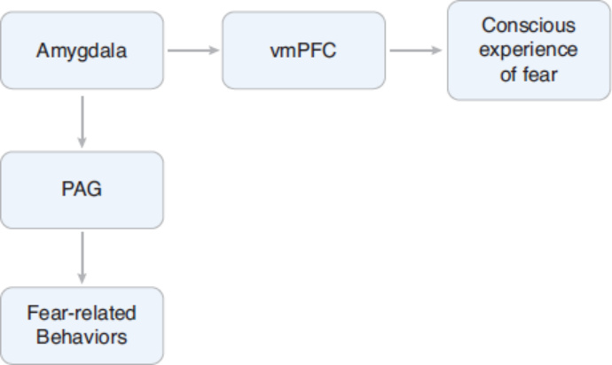
Hình 11.1: Giả thuyết về cách hạch hạnh nhân tạo ra các thành tố của sự sợ hãi. Xem phần văn bản để biết chi tiết. vmPFC: vỏ não trước trán trung-thất. PAG: chất xám quanh ống dẫn nước.
Quay trở lại thí nghiệm tương lai của chúng ta, nếu bây giờ chúng ta kích thích quang di truyền hay kích thích điện hạch hạnh nhân ở một con gặm nhấm hay một bệnh nhân người, và chúng ta thấy điều này gây ra phần lớn hay tất cả các thành tố của một trạng thái cảm xúc, thì điều gì sẽ xảy ra nếu chúng ta thêm vào đó cắt bỏ vỏ não trước trán trung-thất? Liệu chúng ta có mất một phần hay tất cả các thành tố của trạng thái cảm xúc không? Loại thí nghiệm "epistasis" như vậy (trong đó người ta hỏi liệu sự ức chế một cấu trúc "hạ nguồn" có chặn hiệu ứng của việc kích hoạt một cấu trúc "thượng nguồn" hơn hay không) sẽ đặc biệt bổ ích trong việc cho chúng ta thấy phần đóng góp cần thiết của nhiều cấu trúc não. Có lẽ vỏ não trước trán trung-thất đặc biệt quan trọng cho trải nghiệm có ý thức về một cảm xúc ở con người, nên khi vùng này bị tổn thương, đây chính là thành tố cảm xúc sẽ bị rơi bỏ. Điều này sẽ gợi ý một đồ thị nhân quả cụ thể, như thể hiện trong hình 11.1.
Theo sơ đồ này, sự kích hoạt hạch hạnh nhân (hay của một số kiểu tế bào cụ thể trong cấu trúc này) là đủ để tạo ra tất cả các thành tố của sự sợ hãi trong một não khỏe mạnh. Nhưng để có được tất cả những thành tố đó, như
trải nghiệm có ý thức về sự sợ hãi, nó cần phải tác động thông qua các cấu trúc não khác. Nếu những cấu trúc đó bị tổn thương, chúng ta có thể loại bỏ thành tố đó.
Giới hạn. Như trước, có những giới hạn rõ ràng ở đây. Một lần nữa, có những thách thức kỹ thuật. Nếu chúng ta làm việc với chuột, chúng tôi giả định rằng chúng ta đã nắm được độ chính xác của kích thích và ức chế quang di truyền. Nhưng còn độ chính xác của việc cắt bỏ các phần của vỏ não trước trán thì sao? Ví dụ, nếu chúng ta dùng fMRI làm phương pháp trực quan hóa các hiệu ứng nhân quả của kích thích hạch hạnh nhân, thì chúng ta chỉ biết rằng một vùng tương đối rộng ở vỏ não trước trán giữa được kích hoạt. Nhưng như đã bàn trong chương 6, có những tập hợp con dị dạng của các nơ-ron trong vỏ não trước trán giữa, và có lẽ một số trong đó thể hiện các phản ứng được khơi bởi kích thích hạch hạnh nhân với độ trễ ngắn, trong khi những nơ-ron khác đòi hỏi độ trễ dài hơn — và một số có thể không được kích hoạt bởi hạch hạnh nhân chút nào. Nghĩa là, có một mạch thần kinh phức tạp ngay bên trong vỏ não trước trán giữa, khiến việc biết cần cắt bỏ gì trở nên phức tạp: chính xác hơn, chúng ta đặt gì vào ô "vmPFC" trong hình 11.1? Vì vậy, sẽ cần thêm thông tin về các kiểu tế bào và mạch thần kinh trong vmPFC để làm cho một thí nghiệm như vậy trở nên có ý nghĩa.
Một giới hạn thứ hai liên quan đến chính ý tưởng ánh xạ các thành tố của trạng thái cảm xúc vào các cấu trúc thần kinh ngay từ đầu. Bài tập này có thể tạo ra một ánh xạ rất rời rạc. Tùy vào mức độ phân bố giải phẫu của một trạng thái cảm xúc, và mức độ nó trải mỏng theo thời gian, chúng ta có thể thấy rằng các tổn thương một cấu trúc đơn lẻ nhìn chung là không đủ để xóa bỏ bất cứ thành tố nào của trạng thái cảm xúc, do tính dư thừa trong hệ thống. Có lẽ bạn chỉ có thể xóa bỏ trải nghiệm có ý thức về một trạng thái cảm xúc ở con người nếu bạn tổn thương đồng thời nhiều vùng vỏ não và dưới vỏ não (hay một số lượng lớn hơn các quần thể nơ-ron trong những cấu trúc đó). Điều đó đặt ra một thách thức kỹ thuật lớn.
Mặt trái của giới hạn này là việc tổn thương từng cấu trúc đơn lẻ có thể gây ra những khiếm khuyết mà không ánh xạ dễ dàng vào bất cứ thành tố nào của một cảm xúc. Có lẽ các tổn thương hay sự ức chế có thể đảo ngược của vỏ não trước trán trung-thất ở người sẽ tạo ra những thay đổi trong trải nghiệm cảm xúc có ý thức được báo cáo, nhưng chúng cũng có thể tạo ra những hiệu ứng ít đặc hiệu khác khiến thí nghiệm khó diễn giải hơn. Chẳng hạn, bệnh nhân có thể nói: "Vâng, tôi cảm thấy một cảm xúc mạnh, có lẽ là sợ hãi, nhưng tôi
không thực sự chắc chắn và tôi không hề bận tâm đến nó." Vậy chúng ta sẽ diễn giải điều đó thế nào?
Tất cả cộng lại, những thí nghiệm được phác thảo ở đây cho Câu Hỏi Mở 1 và 2 đã khả thi về mặt kỹ thuật ở một số khía cạnh, nhưng vẫn đòi hỏi độ chính xác cao hơn và việc vượt qua những rào cản phương pháp luận và đạo đức khi áp dụng cho con người. Nhưng có khả năng là những giới hạn kỹ thuật sẽ trở nên nhạt nhòa so với những rào cản khái niệm: chính xác thì chúng ta đánh giá trạng thái cảm xúc như thế nào? Làm thế nào chúng ta phân biệt nó với các trạng thái trung ương khác? Làm thế nào chúng ta có thể phân biệt các kiểu cảm xúc khác nhau? Những câu hỏi này thúc đẩy một bộ câu hỏi mở thứ hai mang tính khái niệm hơn.
Câu Hỏi Mở 3. Liệu Chúng Ta Có Thể Tìm Thấy Những Trạng Thái Thỏa Mãn Tất Cả Các "Thuộc Tính Cảm Xúc" Của Chúng Ta, Nhưng Mà Chúng Ta Sẽ Không Xem Là Các Cảm Xúc Hay Không? Từ Điều Đó, Liệu Chúng Ta Có Thể Rút Ra Những Thuộc Tính Bổ Sung Cốt Yếu Cho Các Cảm Xúc Như Một Sự Phân Biệt Với Các Kiểu Trạng Thái Nội Tại Khác Hay Không?
Giả thuyết: Hình 3.2 của chúng tôi là chưa hoàn chỉnh.
Những nghiên cứu mà chúng tôi hình dung sẽ thực hiện dưới tiêu đề này sẽ đòi hỏi khá nhiều công sức, vì có một danh sách dài các thuộc tính cảm xúc. Chúng tôi đã bắt đầu liệt kê một số trong đó từ chương 3, trong hình 3.2. Chúng tôi đã lưu ý nhiều lần rằng bảng đó chỉ là sơ bộ. Vậy làm thế nào chúng ta có thể hoàn chỉnh nó?
Một cách để làm điều đó là thực hiện một cuộc tổng kê hiện rộng, và hợp tác chặt chẽ với các nhà động vật học hành vi, để trau chuốt danh sách ban đầu của chúng tôi. Theo "rộng", chúng tôi ý nói rộng về mặt loài, và rộng trên các trạng thái trung ương giống cảm xúc. Chúng tôi sẽ quay trở lại ngay điểm khởi đầu của khung khái niệm của mình về các cảm xúc và khảo sát những trạng thái trung gian các phản ứng thích nghi đối với những chủ đề môi trường lặp đi lặp lại, ở một mức độ linh hoạt và phức tạp trung gian giữa phản xạ và hành vi cân nhắc. Còn rất nhiều công việc khái niệm phải làm ở đây, chỉ riêng việc vạch rõ các chủ đề môi trường, và rất nhiều công việc thực nghiệm để đo các hành vi một cách định lượng và khách quan, ví dụ bằng cách dùng các thuật toán máy tính thay vì các quan sát chủ quan của con người. Giữa các loài, chúng ta quan sát những kiểu hành vi phòng vệ nào, và chúng xuất hiện dưới những hoàn cảnh nào? Có lẽ sẽ có một vài kiểu, như những kiểu được khơi bởi các động vật ăn thịt, những kiểu được khơi bởi các mối đe dọa phi xã hội nguy hiểm (ví dụ, một
cơn dông), và những kiểu được khơi bởi các con đồng loại hung hăng. Người ta có thể hình dung một kiểu loại học tinh vi, vì một số loại mối đe dọa sẽ đòi hỏi những kiểu phản ứng thích nghi rất đặc thù mà chỉ có ý nghĩa cho một loài cụ thể trong một hốc sinh thái cụ thể. Câu Hỏi Mở 3 sẽ đòi hỏi một dự án khá lớn mà quan trọng là cần những công tác khảo sát thực địa cẩn thận, cũng như các đo lường các biến trạng thái nội tại (hormone, biểu hiện gen) và hoạt động quần thể nơ-ron quy mô lớn. Nó làm nổi bật bản chất xuyên loài mà chúng tôi cảm thấy là cốt yếu cho một khoa học về cảm xúc. Điều này đưa chúng ta đến Câu Hỏi Mở 4.
Câu Hỏi Mở 4. Liệu Có Những Cảm Xúc Đặc Trưng Theo Loài Hay Không?
Giả thuyết 4a: Có những trạng thái cảm xúc, hay các thuộc tính của trạng thái cảm xúc, độc nhất ở con người.
Giả thuyết 4b: Có những trạng thái cảm xúc, hay các thuộc tính của trạng thái cảm xúc, độc nhất ở một loài không phải người.
Trong khi Giả thuyết 4a thường gặp, chúng tôi chưa từng thấy Giả thuyết 4b trước đây; cả hai đều có vẻ hợp lý đối với chúng tôi. Với Giả thuyết 4a, có một số ứng viên dễ thấy, cụ thể là trải nghiệm có ý thức về cảm xúc và sự điều hòa cảm xúc theo ý chí. Cũng có những cảm xúc cụ thể có thể độc nhất ở con người, như có lẽ một số cảm xúc xã hội như xấu hổ hay ngượng ngùng, và các cảm giác cảm xúc như sự kính sợ. Ngược lại, có thể có những trạng thái cảm xúc ở các động vật không phải người — thậm chí có lẽ ở côn trùng — mà không đồng nguồn hay tương tự với bất cứ trạng thái cảm xúc nào ở con người hay các động vật có vú bậc cao. Điều này nhấn mạnh tầm quan trọng của việc phát triển các tiêu chí khách quan để nhận diện các trường hợp biểu hiện cảm xúc ở động vật mà độc lập với bất cứ sự đồng nguồn lấy con người làm trung tâm hay nhân hình hóa nào, nhưng dựa trên các thuộc tính chung phổ biến cho mọi trạng thái cảm xúc (như những thuộc tính được liệt kê trong hình 3.2).
Xem xét tất cả những thuộc tính khác nhau này, và các cảm xúc khác nhau, về cơ bản sẽ tiếp tục bài tập mà chúng tôi đã phác họa trong Câu Hỏi Mở 3; cuối cùng nó sẽ cho chúng ta một bản kê hiện tinh vi hơn về các trạng thái cảm xúc và các thuộc tính của chúng, trên một loạt các loài. Một khi chúng ta có được điều này, chúng ta sẽ cần ngồi xuống và quyết định liệu có những tiêu chí có nguyên tắc để chấp nhận một số trong những trạng thái này là các cảm xúc chính danh hay không. Hiện tại, chưa có
cơ sở dữ liệu nào như vậy, và các thuộc tính của cảm xúc được suy ra từ những tài liệu rải rác và trực giác của các nhà thí nghiệm.
Câu Hỏi Mở 5: Liệu Có Những Cảm Xúc Độc Nhất Theo Cá Nhân Hay Không?
Giả thuyết: ngoài tính biến đổi giữa các loài, còn có tính biến đổi giữa các cá nhân.
Dự án ở trên sẽ nêu lên một câu hỏi quan trọng về khác biệt cá nhân. Thay vì hỏi liệu có những cảm xúc độc nhất ở một loài nhất định nào đó, người ta cũng có thể hỏi: liệu có những trạng thái cảm xúc có thể độc nhất ở một cá nhân cho trước hay không? Nỗi sợ của tôi có giống nỗi sợ của bạn không? Trạng thái não đảm nhận sự sợ hãi trong não của tôi có giống trạng thái não đảm nhận sự sợ hãi trong não của bạn không? Mối bận tâm về tính dị dạng giữa các cá nhân này là có cơ sở vững chắc, vì người ta biết rằng có những khác biệt cá nhân lớn trong các kích thích hay hoàn cảnh cụ thể khơi một số cảm xúc nhất định ở con người. Một số người mắc chứng ám ảnh sợ nhện, những người khác nuôi nhện làm thú cưng.
Bạn có thể nghĩ rằng sẽ hữu ích ở đây nếu quay trở lại thí nghiệm được mô tả trong Câu Hỏi Mở 1, và khơi cảm xúc — hy vọng đáng tin cậy hơn — thông qua kích hoạt não trực tiếp thay vì thông qua các kích thích cảm giác và những liên tưởng cá biệt mà chúng có thể khơi ra ở những cá nhân khác nhau. Ví dụ, liệu kích thích vỏ não trước trán giữa có khơi một trạng thái cảm xúc nhất quán hơn giữa các người hay không? Câu trả lời cho câu hỏi này vẫn chưa được biết ở con người, nhưng chúng ta có thể nhận được một số gợi ý từ các nghiên cứu ở loài gặm nhấm. Như hình 11.2 cho thấy, kích thích quang di truyền vỏ não trước trán giữa ở chuột cống thực sự tạo ra các mô hình kích hoạt, được trực quan hóa bằng fMRI (đúng là giao thức mà chúng tôi đã đề xuất trong Câu Hỏi Mở 1), mà có phần giống nhau giữa các con. Mặt khác, chúng còn xa mới giống hệt nhau.
Dữ liệu thể hiện trong hình 11.2 nêu lên một câu hỏi quan trọng: làm thế nào chúng ta quyết định xem hai trạng thái não là những trường hợp của cùng một cảm xúc, hay nên được tính là những cảm xúc khác nhau? Liệu những khác biệt tinh vi về sự kích hoạt fMRI mà chúng ta thấy giữa bảy con chuột trong hình có ứng với bảy cảm xúc khác nhau, hay ứng với một cảm xúc duy nhất với một chút tính biến đổi thêm vào ở mỗi con trong bảy con chuột đó? May mắn thay, bạn sẽ còn nhớ chúng tôi đã giải quyết một vấn đề rất giống vấn đề này trong chương 8, nơi chúng tôi đã bàn về
phân tích tương đồng biểu diễn: chúng ta thực sự có thể so sánh các không gian tương đồng. Chúng ta có những cách khách quan để so sánh mức giống hay khác nhau giữa các mô hình kích hoạt não khác nhau thể hiện trong hình 11.2, và bây giờ có thể bổ sung những bản đồ hoạt động độ phân giải thấp như vậy bằng các bản đồ ở độ phân giải đơn tế bào, dùng chụp ảnh canxi (hộp 5.2). Một khi chúng ta có một bản kê hiện thấu đáo về các thuộc tính cảm xúc (Câu Hỏi Mở 3), chúng ta sẽ ở vị trí có thể thực hiện những so sánh khách quan về mức giống hay khác nhau giữa các trạng thái cảm xúc, như được đo bằng các giá trị của những thuộc tính này. Chúng ta khi đó có thể so sánh hai không gian tương đồng — không gian hoạt động não và không gian thuộc tính cảm xúc — và quả thật giải quyết những câu hỏi được nêu ra trong cả Câu Hỏi Mở 4 lẫn 5. Chúng ta sẽ cần rất nhiều dữ liệu, nhưng chúng ta đã có sẵn các công cụ phân tích.

Hình 11.2: Kết hợp quang di truyền học với fMRI. Sự kích hoạt fMRI được tạo ra bằng kích thích quang di truyền vỏ não dưới vành ở bảy con chuột cống khác nhau ("opto-fMRI"). Trong nghiên cứu này, kích thích quang di truyền được thực hiện ở vỏ não dưới vành của các con chuột cống đang thức, được cho là đồng nguồn với vỏ não trước trán trung-thất của các loài linh trưởng. Thang màu mã hóa một thống kê t của độ lớn sự kích hoạt fMRI thấy được khắp não do kích thích quang di truyền này. Các số trên trục x cho biết vị trí trong não mà lát cắt được hiển thị thu được; mỗi hàng lát cắt não ứng với các vị trí khác nhau trong não của một trong bảy con chuột. Sao chép với sự cho phép từ Liang và cộng sự 2015.
Cách tiếp cận ở đây đưa chúng ta trở lại những gì chúng tôi đã viết về việc kiểm nghiệm hiệu lực của các thuốc chống lo âu trong chương 5. Chúng ta có thể kiểm tra các thuốc cụ thể ảnh hưởng thế nào đến mô hình kích hoạt não đặc trưng cho một trạng thái cảm xúc cụ thể, và chúng ta có thể kiểm tra mức độ biến đổi của điều này giữa các cá nhân cũng như giữa các loài. Tóm lại, một khi chúng ta có đủ dữ liệu để dựng và liên hệ các không gian tương đồng, chúng ta có thể giải mã từ mô hình kích hoạt não xem trạng thái cảm xúc là gì. Chúng ta khi đó có thể cho dùng một thuốc, và thấy từ sự thay đổi trong mô hình kích hoạt não rằng thay đổi gì đã xảy ra trong trạng thái cảm xúc. Với mức độ tương đối dễ dàng của việc thu thập dữ liệu fMRI ở
các đối tượng người, người ta thậm chí có thể hình dung một hướng y học cá thể hóa trong tương lai, trong đó điều này được dùng để chọn thuốc hiệu quả nhất để điều trị từng bệnh nhân người.
Câu Hỏi Mở 6. Liệu Chúng Ta Có Thể Xây Dựng Một Con Robot Có Cảm Xúc Hay Không?
Giả thuyết. Khi chúng ta hiểu cảm xúc đủ tốt, chúng ta sẽ có thể xây dựng những con robot có cảm xúc.
Nhà vật lý nổi tiếng và chủ nhân giải Nobel Richard Feynman đã viết "Điều gì tôi không thể tạo ra, tôi không hiểu" trên một tấm bảng đen ở Viện Công nghệ California (Caltech). Câu chữ đó được tìm thấy ở đó không lâu sau khi ông qua đời (hình 11.3). Chúng tôi đã đề xuất rằng các cảm xúc cuối cùng cần được hiểu một cách chức năng (chương 2), rằng điều này lại dẫn đến những thuộc tính cụ thể mà các trạng thái cảm xúc phải có để thực hiện những chức năng đó (chương 3), và rằng những thuộc tính này lại được tìm thấy trong các não của động vật và con người (các chương 4–9). Một khi chúng ta đã tích lũy được kiến thức về các chức năng, các thuộc tính, và cách thực hiện thần kinh của các cảm xúc — liệu chúng ta có thể xây dựng một hệ thống nhân tạo có cảm xúc hay không?
Nhà điều khiển học Valentino Braitenberg đã viết một cuốn sách được minh họa đầy bay bổng có tên Vehicles (Những Phương Tiện), trong đó ông phác thảo cách những bộ cảm nhận, mạch, và bộ chấp hành cực kỳ đơn giản có thể được kết hợp để tạo ra những robot tí hon ngày càng phức tạp (Braitenberg 1984). Trong trí tưởng tượng của Braitenberg, cả một thế giới sớm được đầy ắp những cỗ máy tí hon, tất cả đều được cấu thành từ những thiết bị rất đơn giản mà, trong sự kết hợp của chúng, tái tạo các hành vi của con người. Quả thật, vì lý do này, ông gán các trạng thái tâm lý bao gồm các cảm xúc cho những phương tiện phức tạp hơn. Một trong những ý định của ông là tách phép màu ra khỏi các trạng thái tâm lý bằng cách cho thấy chúng có thể được thiết kế từ những thành tố đơn giản. Các thành tố không có bất cứ cảm xúc nào — nhưng cả chiếc phương tiện thì có thể, nếu nó có các thành tố đủ phức tạp.
Quả thật, những con robot có thể đánh lừa các nhà quan sát người gán cảm xúc cho chúng, bằng cách khéo léo thao túng tư thế và âm thanh của chúng, đã được xây dựng (xem, ví dụ, nhân vật robot giàu biểu cảm BB-8 trong bộ phim năm 2015 Star Wars: The Force Awakens). Cái dường như là một thách thức khó hơn là xây dựng một hệ thống nhân tạo trong đó các trạng thái cảm xúc
được đưa vào vận hành vào những dịp này chứ không phải dịp khác, để ảnh hưởng đến hành vi, ra quyết định, và các quá trình khác của hệ thống mà ảnh hưởng đến sự "sống còn" của hệ thống. Cuối cùng, việc một hệ thống cảm xúc đã được hiện thực hóa thành công trong một thực thể nhân tạo hay không nên được xác định bởi giá trị hữu ích hay giá trị thích nghi mà một hệ thống như vậy mang lại cho bản thân thực thể đó — chứ không phải bởi việc nó "trông" hay "nghe" giống một trạng thái cảm xúc đối với một nhà quan sát người hay không. Cuộc đánh giá đó, đến lượt nó, sẽ đòi hỏi một sự hiểu biết về đạo đức học hành vi và tâm lý học của thực thể, và một sự sẵn lòng nghiên cứu hành vi của thực thể đó trong hốc sinh thái của nó theo chính điều kiện của nó — rất giống cách tiếp cận mà chúng tôi ủng hộ trong việc nghiên cứu các trạng thái cảm xúc ở động vật. Dĩ nhiên còn có một điểm lỏng nữa ở đây: trong chừng mực mà các trạng thái cảm xúc vận hành để phục vụ các tương tác xã hội, việc thiết kế các robot bắt chước các hành vi cảm xúc giống người thực ra có thể là một mục tiêu, vì điều này sẽ phục vụ chức năng tương tác xã hội với con người. Điều này hiện thực, quả thật, là mục tiêu chính của việc thiết kế các robot "thuộc về cảm xúc".
Nhiều khía cạnh trong thiết kế các hệ điều khiển nhân tạo phức tạp có thể tương tự những thách thức mà lịch sử tự nhiên đã phải đối mặt trong việc tiến hóa các hệ điều khiển tự nhiên ở động vật. Vì vậy, chúng tôi sẽ thấy rất hợp lý rằng một hệ thống nhân tạo đủ phức tạp, vận hành trong một môi trường đủ phức tạp và không có điểm kết thúc (bao gồm cả môi trường xã hội), cũng sẽ đòi hỏi cho việc điều khiển của nó một số trạng thái hệ thống tương đương về mặt chức năng với các cảm xúc. Như chúng tôi đã lưu ý ngay trong chương 3, các trạng thái cảm xúc thực tế được phân bố không chỉ về không gian mà còn về thời gian, bao gồm cả những khía cạnh xử lý nhanh và chậm. Phần lớn điều tương tự cũng đúng với các hệ điều khiển nhân tạo, như lưới điện hay truyền dữ liệu qua internet. Một số cặp đối lập mà chúng tôi đã liệt kê trong hình 3.6 cũng sẽ áp dụng cho các hệ thống được thiết kế.

Hình 11.3: Tấm bảng đen của Richard Feynman vào thời điểm ông qua đời. Câu trích, ở phía trên bên trái, thường được nghe trong kỹ thuật và các khoa học vật lý, và gợi ý tầm quan trọng của việc tìm ra các cơ chế nhân quả. Trích từ Lưu trữ, Viện Công nghệ California.
Chúng tôi cùng chung ý với Feynman rằng phép thử cuối cùng của việc hiểu các cảm xúc sẽ đến khi chúng ta có thể thiết kế công trình chúng. Mặc dù hiện nay việc tạo ra các robot cảm xúc là bất khả thi (nghĩa là các robot có các trạng thái cảm xúc nội tại, chứ không phải những cỗ máy tự động có thể bắt chước biểu hiện của một cảm xúc, như nụ cười trên khuôn mặt một con khỉ robot), chúng tôi tin rằng thiết kế cuối cùng của những con robot thực sự tự chủ và có thể vận hành linh hoạt trong thế giới thực sẽ, quả thật, đòi hỏi xây dựng cảm xúc vào bên trong. Chúng tôi cũng tin rằng con đường duy nhất để chúng ta tìm ra cách xây dựng cảm xúc vào các robot là qua việc chăm chỉ khám phá cách các cảm xúc được hiện thực hóa trong các não của động vật và con người.
Thông tin xuất bản & bản quyền
Nguyên tác: The Neuroscience of Emotion: A New Synthesis — Ralph Adolphs & David J. Anderson, Princeton University Press, 2018. Bản dịch tiếng Việt này được thực hiện cho thư viện TaichiNOW / TaichiKB, phục vụ học tập và tra cứu; mọi quyền của nguyên tác thuộc về tác giả và nhà xuất bản.